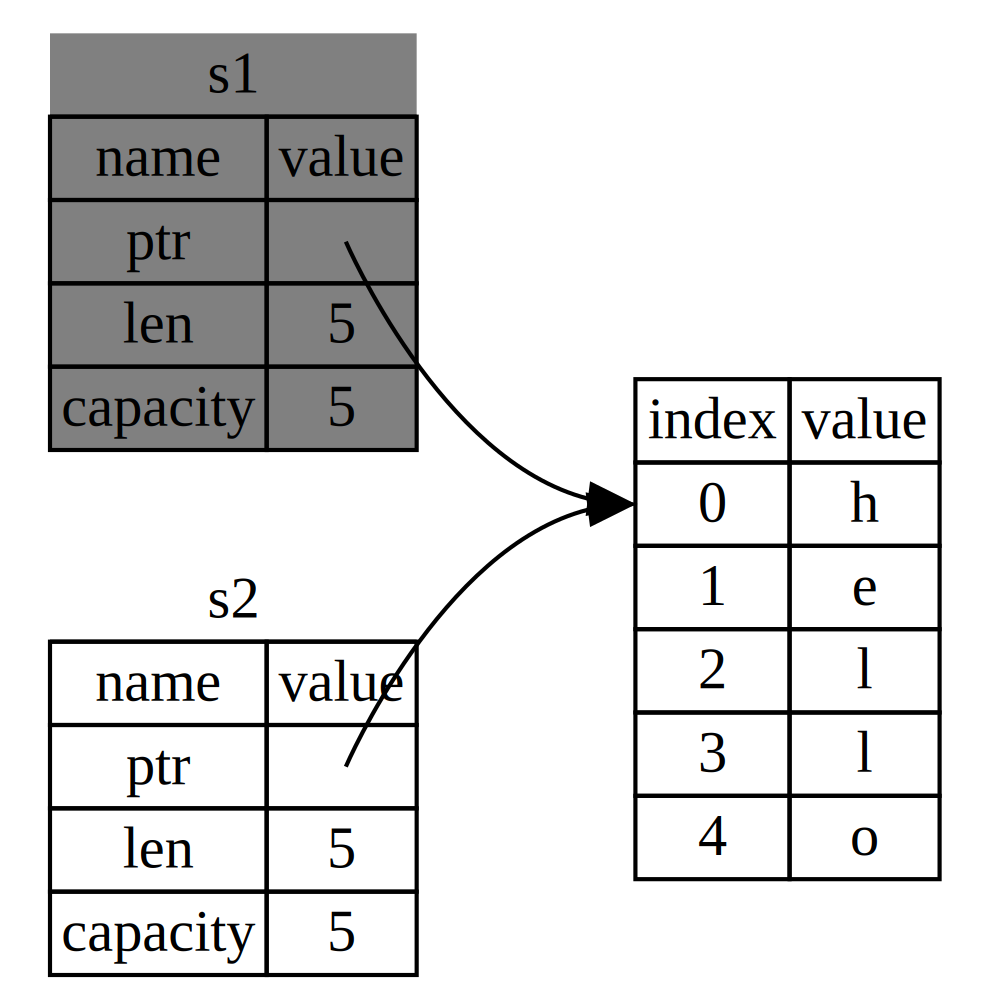
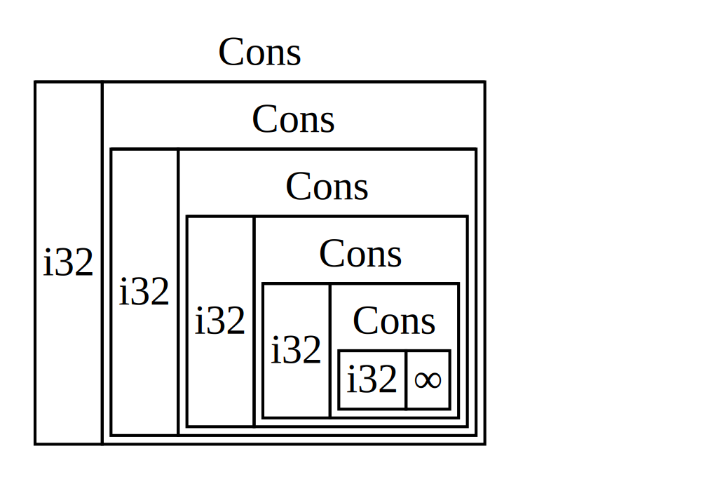

Introduction
Welcome to “The Rust Programming Language,” an introductory book about Rust. Rust is a programming language that’s focused on safety, speed, and concurrency. Its design lets you create programs that have the performance and control of a low-level language, but with the powerful abstractions of a high-level language. These properties make Rust suitable for programmers who have experience in languages like C and are looking for a safer alternative, as well as those from languages like Python who are looking for ways to write code that performs better without sacrificing expressiveness.
Rust performs the majority of its safety checks and memory management decisions at compile time, so that your program’s runtime performance isn’t impacted. This makes it useful in a number of use cases that other languages aren’t good at: programs with predictable space and time requirements, embedding in other languages, and writing low-level code, like device drivers and operating systems. It’s also great for web applications: it powers the Rust package registry site, crates.io! We’re excited to see what you create with Rust.
This book is written for a reader who already knows how to program in at least one programming language. After reading this book, you should be comfortable writing Rust programs. We’ll be learning Rust through small, focused examples that build on each other to demonstrate how to use various features of Rust as well as how they work behind the scenes.
Contributing to the book
This book is open source. If you find an error, please don’t hesitate to file an issue or send a pull request on GitHub. Please see CONTRIBUTING.md for more details.
Installation
The first step to using Rust is to install it. You’ll need an internet connection to run the commands in this chapter, as we’ll be downloading Rust from the internet.
We’ll be showing off a number of commands using a terminal, and those lines all
start with $. You don’t need to type in the $ character; they are there to indicate
the start of each command. You’ll see many tutorials and examples around the web
that follow this convention: $ for commands run as a regular user, and #
for commands you should be running as an administrator. Lines that don’t start
with $ are typically showing the output of the previous command.
Installing on Linux or Mac
If you’re on Linux or a Mac, all you need to do is open a terminal and type this:
$ curl https://sh.rustup.rs -sSf | sh
This will download a script and start the installation. You may be prompted for your password. If it all goes well, you’ll see this appear:
Rust is installed now. Great!
Of course, if you disapprove of the curl | sh pattern, you can download, inspect
and run the script however you like.
The installation script automatically adds Rust to your system PATH after your next login. If you want to start using Rust right away, run the following command in your shell:
$ source $HOME/.cargo/env
Alternatively, add the following line to your ~/.bash_profile:
$ export PATH="$HOME/.cargo/bin:$PATH"
Installing on Windows
On Windows, go to https://rustup.rs and follow the instructions to download rustup-init.exe. Run that and follow the rest of the instructions it gives you.
The rest of the Windows-specific commands in the book will assume that you are
using cmd as your shell. If you use a different shell, you may be able to run
the same commands that Linux and Mac users do. If neither work, consult the
documentation for the shell you are using.
Custom installations
If you have reasons for preferring not to use rustup.rs, please see the Rust installation page for other options.
Updating
Once you have Rust installed, updating to the latest version is easy. From your shell, run the update script:
$ rustup update
Uninstalling
Uninstalling Rust is as easy as installing it. From your shell, run the uninstall script:
$ rustup self uninstall
Troubleshooting
If you’ve got Rust installed, you can open up a shell, and type this:
$ rustc --version
You should see the version number, commit hash, and commit date in a format similar to this for the latest stable version at the time you install:
rustc x.y.z (abcabcabc yyyy-mm-dd)
If you see this, Rust has been installed successfully! Congrats!
If you don’t and you’re on Windows, check that Rust is in your %PATH% system
variable.
If it still isn’t working, there are a number of places where you can get help. The easiest is the #rust IRC channel on irc.mozilla.org, which you can access through Mibbit. Go to that address, and you’ll be chatting with other Rustaceans (a silly nickname we call ourselves) who can help you out. Other great resources include the Users forum and Stack Overflow.
Local documentation
The installer also includes a copy of the documentation locally, so you can
read it offline. Run rustup doc to open the local documentation in your
browser.
Any time there’s a type or function provided by the standard library and you’re not sure what it does, use the API documentation to find out!
Hello, World!
Now that you have Rust installed, let’s write your first Rust program. It’s traditional when learning a new language to write a little program to print the text “Hello, world!” to the screen, and in this section, we’ll follow that tradition.
Note: This book assumes basic familiarity with the command line. Rust itself makes no specific demands about your editing, tooling, or where your code lives, so if you prefer an IDE to the command line, feel free to use your favorite IDE.
Creating a Project Directory
First, make a directory to put your Rust code in. Rust doesn’t care where your code lives, but for this book, we’d suggest making a projects directory in your home directory and keeping all your projects there. Open a terminal and enter the following commands to make a directory for this particular project:
Linux and Mac:
$ mkdir ~/projects
$ cd ~/projects
$ mkdir hello_world
$ cd hello_world
Windows CMD:
> mkdir %USERPROFILE%\projects
> cd %USERPROFILE%\projects
> mkdir hello_world
> cd hello_world
Windows PowerShell:
> mkdir $env:USERPROFILE\projects
> cd $env:USERPROFILE\projects
> mkdir hello_world
> cd hello_world
Writing and Running a Rust Program
Next, make a new source file and call it main.rs. Rust files always end with the .rs extension. If you’re using more than one word in your filename, use an underscore to separate them. For example, you’d use hello_world.rs rather than helloworld.rs.
Now open the main.rs file you just created, and type the following code:
Filename: main.rs
fn main() { println!("Hello, world!"); }
Save the file, and go back to your terminal window. On Linux or OSX, enter the following commands:
$ rustc main.rs
$ ./main
Hello, world!
On Windows, run .\main.exe instead of ./main. Regardless of your
operating system, you should see the string Hello, world! print to the
terminal. If you did, then congratulations! You’ve officially written a Rust
program. That makes you a Rust programmer! Welcome!
Anatomy of a Rust Program
Now, let’s go over what just happened in your “Hello, world!” program in detail. Here’s the first piece of the puzzle:
fn main() { }
These lines define a function in Rust. The main function is special: it’s
the first thing that is run for every executable Rust program. The first line
says, “I’m declaring a function named main that has no parameters and returns
nothing.” If there were parameters, their names would go inside the
parentheses, ( and ).
Also note that the function body is wrapped in curly brackets, { and }.
Rust requires these around all function bodies. It’s considered good style to
put the opening curly bracket on the same line as the function declaration,
with one space in between.
Inside the main function:
# #![allow(unused_variables)] #fn main() { println!("Hello, world!"); #}
This line does all of the work in this little program: it prints text to the screen. There are a number of details to notice here. The first is that Rust style is to indent with four spaces, not a tab.
The second important part is println!. This is calling a Rust macro,
which is how metaprogramming is done in Rust. If it were calling a function
instead, it would look like this: println (without the !). We’ll discuss
Rust macros in more detail in Appendix D, but for now you just need to know
that when you see a ! that means that you’re calling a macro instead of a
normal function.
Next is "Hello, world!" which is a string. We pass this string as an
argument to println!, which prints the string to the screen. Easy enough!
The line ends with a semicolon (;). The ; indicates that this expression is
over, and the next one is ready to begin. Most lines of Rust code end with a
;.
Compiling and Running Are Separate Steps
In “Writing and Running a Rust Program”, we showed you how to run a newly created program. We’ll break that process down and examine each step now.
Before running a Rust program, you have to compile it. You can use the Rust
compiler by entering the rustc command and passing it the name of your source
file, like this:
$ rustc main.rs
If you come from a C or C++ background, you’ll notice that this is similar to
gcc or clang. After compiling successfully, Rust should output a binary
executable, which you can see on Linux or OSX by entering the ls command in
your shell as follows:
$ ls
main main.rs
On Windows, you’d enter:
> dir /B %= the /B option says to only show the file names =%
main.exe
main.pdb
main.rs
This shows we have two files: the source code, with the .rs extension, and the executable (main.exe on Windows, main everywhere else). All that’s left to do from here is run the main or main.exe file, like this:
$ ./main # or .\main.exe on Windows
If main.rs were your “Hello, world!” program, this would print Hello, world! to your terminal.
If you come from a dynamic language like Ruby, Python, or JavaScript, you may
not be used to compiling and running a program being separate steps. Rust is an
ahead-of-time compiled language, which means that you can compile a program,
give it to someone else, and they can run it even without having Rust
installed. If you give someone a .rb, .py, or .js file, on the other
hand, they need to have a Ruby, Python, or JavaScript implementation installed
(respectively), but you only need one command to both compile and run your
program. Everything is a tradeoff in language design.
Just compiling with rustc is fine for simple programs, but as your project
grows, you’ll want to be able to manage all of the options your project has
and make it easy to share your code with other people and projects. Next, we’ll
introduce you to a tool called Cargo, which will help you write real-world Rust
programs.
Hello, Cargo!
Cargo is Rust’s build system and package manager, and Rustaceans use Cargo to manage their Rust projects because it makes a lot of tasks easier. For example, Cargo takes care of building your code, downloading the libraries your code depends on, and building those libraries. We call libraries your code needs dependencies.
The simplest Rust programs, like the one we’ve written so far, don’t have any dependencies, so right now, you’d only be using the part of Cargo that can take care of building your code. As you write more complex Rust programs, you’ll want to add dependencies, and if you start off using Cargo, that will be a lot easier to do.
As the vast, vast majority of Rust projects use Cargo, we will assume that you’re using it for the rest of the book. Cargo comes installed with Rust itself, if you used the official installers as covered in the Installation chapter. If you installed Rust through some other means, you can check if you have Cargo installed by typing the following into your terminal:
$ cargo --version
If you see a version number, great! If you see an error like command not found, then you should look at the documentation for your method of
installation to determine how to install Cargo separately.
Creating a Project with Cargo
Let’s create a new project using Cargo and look at how it differs from our
project in hello_world. Go back to your projects directory (or wherever you
decided to put your code):
Linux and Mac:
$ cd ~/projects
Windows:
> cd %USERPROFILE%\projects
And then on any operating system run:
$ cargo new hello_cargo --bin
$ cd hello_cargo
We passed the --bin argument to cargo new because our goal is to make an
executable application, as opposed to a library. Executables are binary
executable files often called just binaries. We’ve given hello_cargo
as the name for our project, and Cargo creates its files in a directory
of the same name that we can then go into.
If we list the files in the hello_cargo directory, we can see that Cargo has
generated two files and one directory for us: a Cargo.toml and a src
directory with a main.rs file inside. It has also initialized a new git
repository in the hello_cargo directory for us, along with a .gitignore
file; you can change this to use a different version control system, or no
version control system, by using the --vcs flag.
Open up Cargo.toml in your text editor of choice. It should look something like this:
Filename: Cargo.toml
[package]
name = "hello_cargo"
version = "0.1.0"
authors = ["Your Name <you@example.com>"]
[dependencies]
This file is in the TOML (Tom’s Obvious, Minimal Language) format. TOML is similar to INI but has some extra goodies and is used as Cargo’s configuration format.
The first line, [package], is a section heading that indicates that the
following statements are configuring a package. As we add more information to
this file, we’ll add other sections.
The next three lines set the three bits of configuration that Cargo needs to see in order to know that it should compile your program: its name, what version it is, and who wrote it. Cargo gets your name and email information from your environment. If it’s not correct, go ahead and fix that and save the file.
The last line, [dependencies], is the start of a section for you to list any
crates (which is what we call packages of Rust code) that your project will
depend on so that Cargo knows to download and compile those too. We won’t need
any other crates for this project, but we will in the guessing game tutorial in
the next chapter.
Now let’s look at src/main.rs:
Filename: src/main.rs
fn main() { println!("Hello, world!"); }
Cargo has generated a “Hello World!” for you, just like the one we wrote earlier! So that part is the same. The differences between our previous project and the project generated by Cargo that we’ve seen so far are:
- Our code goes in the src directory
- The top level contains a Cargo.toml configuration file
Cargo expects your source files to live inside the src directory so that the top-level project directory is just for READMEs, license information, configuration files, and anything else not related to your code. In this way, using Cargo helps you keep your projects nice and tidy. There’s a place for everything, and everything is in its place.
If you started a project that doesn’t use Cargo, as we did with our project in the hello_world directory, you can convert it to a project that does use Cargo by moving your code into the src directory and creating an appropriate Cargo.toml.
Building and Running a Cargo Project
Now let’s look at what’s different about building and running your Hello World program through Cargo! To do so, enter the following commands:
$ cargo build
Compiling hello_cargo v0.1.0 (file:///projects/hello_cargo)
Finished dev [unoptimized + debuginfo] target(s) in 2.85 secs
This should have created an executable file in target/debug/hello_cargo (or target\debug\hello_cargo.exe on Windows), which you can run with this command:
$ ./target/debug/hello_cargo # or .\target\debug\hello_cargo.exe on Windows
Hello, world!
Bam! If all goes well, Hello, world! should print to the terminal once more.
Running cargo build for the first time also causes Cargo to create a new file
at the top level called Cargo.lock, which looks like this:
Filename: Cargo.lock
[root]
name = "hello_cargo"
version = "0.1.0"
Cargo uses the Cargo.lock to keep track of dependencies in your application. This project doesn’t have dependencies, so the file is a bit sparse. Realistically, you won’t ever need to touch this file yourself; just let Cargo handle it.
We just built a project with cargo build and ran it with
./target/debug/hello_cargo, but we can also use cargo run to compile
and then run:
$ cargo run
Finished dev [unoptimized + debuginfo] target(s) in 0.0 secs
Running `target/debug/hello_cargo`
Hello, world!
Notice that this time, we didn’t see the output telling us that Cargo was
compiling hello_cargo. Cargo figured out that the files haven’t changed, so
it just ran the binary. If you had modified your source code, Cargo would have
rebuilt the project before running it, and you would have seen something like
this:
$ cargo run
Compiling hello_cargo v0.1.0 (file:///projects/hello_cargo)
Finished dev [unoptimized + debuginfo] target(s) in 0.33 secs
Running `target/debug/hello_cargo`
Hello, world!
So a few more differences we’ve now seen:
- Instead of using
rustc, build a project usingcargo build(or build and run it in one step withcargo run) - Instead of the result of the build being put in the same directory as our code, Cargo will put it in the target/debug directory.
The other advantage of using Cargo is that the commands are the same no matter what operating system you’re on, so at this point we will no longer be providing specific instructions for Linux and Mac versus Windows.
Building for Release
When your project is finally ready for release, you can use cargo build --release to compile your project with optimizations. This will create an
executable in target/release instead of target/debug. These optimizations
make your Rust code run faster, but turning them on makes your program take
longer to compile. This is why there are two different profiles: one for
development when you want to be able to rebuild quickly and often, and one for
building the final program you’ll give to a user that won’t be rebuilt and
that we want to run as fast as possible. If you’re benchmarking the running
time of your code, be sure to run cargo build --release and benchmark with
the executable in target/release.
Cargo as Convention
With simple projects, Cargo doesn’t provide a whole lot of value over just
using rustc, but it will prove its worth as you continue. With complex
projects composed of multiple crates, it’s much easier to let Cargo coordinate
the build. With Cargo, you can just run cargo build, and it should work the
right way. Even though this project is simple, it now uses much of the real
tooling you’ll use for the rest of your Rust career. In fact, you can get
started with virtually all Rust projects you want to work
on with the following commands:
$ git clone someurl.com/someproject
$ cd someproject
$ cargo build
Note: If you want to look at Cargo in more detail, check out the official Cargo guide, which covers all of its features.
Guessing Game
Let’s jump into Rust by working through a hands-on project together! This
chapter introduces you to a few common Rust concepts by showing you how to use
them in a real program. You’ll learn about let, match, methods, associated
functions, using external crates, and more! The following chapters will explore
these ideas in more detail. In this chapter, you’ll practice the fundamentals.
We’ll implement a classic beginner programming problem: a guessing game. Here’s how it works: the program will generate a random integer between 1 and 100. It will then prompt the player to enter a guess. After entering a guess, it will indicate whether the guess is too low or too high. If the guess is correct, the game will print congratulations and exit.
Setting Up a New Project
To set up a new project, go to the projects directory that you created in Chapter 1, and make a new project using Cargo, like so:
$ cargo new guessing_game --bin
$ cd guessing_game
The first command, cargo new, takes the name of the project (guessing_game)
as the first argument. The --bin flag tells Cargo to make a binary project,
similar to the one in Chapter 1. The second command changes to the new
project’s directory.
Look at the generated Cargo.toml file:
Filename: Cargo.toml
[package]
name = "guessing_game"
version = "0.1.0"
authors = ["Your Name <you@example.com>"]
[dependencies]
If the author information that Cargo obtained from your environment is not correct, fix that in the file and save it again.
As you saw in Chapter 1, cargo new generates a “Hello, world!” program for
you. Check out the src/main.rs file:
Filename: src/main.rs
fn main() { println!("Hello, world!"); }
Now let’s compile this “Hello, world!” program and run it in the same step
using the cargo run command:
$ cargo run
Compiling guessing_game v0.1.0 (file:///projects/guessing_game)
Finished dev [unoptimized + debuginfo] target(s) in 1.50 secs
Running `target/debug/guessing_game`
Hello, world!
The run command comes in handy when you need to rapidly iterate on a project,
and this game is such a project: we want to quickly test each iteration
before moving on to the next one.
Reopen the src/main.rs file. You’ll be writing all the code in this file.
Processing a Guess
The first part of the program will ask for user input, process that input, and check that the input is in the expected form. To start, we’ll allow the player to input a guess. Enter the code in Listing 2-1 into src/main.rs.
Filename: src/main.rs
use std::io;
fn main() {
println!("Guess the number!");
println!("Please input your guess.");
let mut guess = String::new();
io::stdin().read_line(&mut guess)
.expect("Failed to read line");
println!("You guessed: {}", guess);
}
Listing 2-1: Code to get a guess from the user and print it out
This code contains a lot of information, so let’s go over it bit by bit. To
obtain user input and then print the result as output, we need to bring the
io (input/output) library into scope. The io library comes from the
standard library (which is known as std):
use std::io;
By default, Rust brings only a few types into the scope of every program in
the prelude. If a type you want to use isn’t in the
prelude, you have to bring that type into scope explicitly with a use
statement. Using the std::io library provides you with a number of useful
io-related features, including the functionality to accept user input.
As you saw in Chapter 1, the main function is the entry point into the
program:
fn main() {
The fn syntax declares a new function, the () indicate there are no
parameters, and { starts the body of the function.
As you also learned in Chapter 1, println! is a macro that prints a string to
the screen:
println!("Guess the number!");
println!("Please input your guess.");
This code is printing a prompt stating what the game is and requesting input from the user.
Storing Values with Variables
Next, we’ll create a place to store the user input, like this:
let mut guess = String::new();
Now the program is getting interesting! There’s a lot going on in this little
line. Notice that this is a let statement, which is used to create
variables. Here’s another example:
let foo = bar;
This line will create a new variable named foo and bind it to the value
bar. In Rust, variables are immutable by default. The following example shows
how to use mut before the variable name to make a variable mutable:
# #![allow(unused_variables)] #fn main() { let foo = 5; // immutable let mut bar = 5; // mutable #}
Note: The
//syntax starts a comment that continues until the end of the line. Rust ignores everything in comments.
Now you know that let mut guess will introduce a mutable variable named
guess. On the other side of the equal sign (=) is the value that guess is
bound to, which is the result of calling String::new, a function that returns
a new instance of a String. String is a string
type provided by the standard library that is a growable, UTF-8 encoded bit of
text.
The :: syntax in the ::new line indicates that new is an associated
function of the String type. An associated function is implemented on a type,
in this case String, rather than on a particular instance of a String. Some
languages call this a static method.
This new function creates a new, empty String. You’ll find a new function
on many types, because it’s a common name for a function that makes a new value
of some kind.
To summarize, the let mut guess = String::new(); line has created a mutable
variable that is currently bound to a new, empty instance of a String. Whew!
Recall that we included the input/output functionality from the standard
library with use std::io; on the first line of the program. Now we’ll call an
associated function, stdin, on io:
io::stdin().read_line(&mut guess)
.expect("Failed to read line");
If we didn’t have the use std::io line at the beginning of the program, we
could have written this function call as std::io::stdin. The stdin function
returns an instance of std::io::Stdin, which is a
type that represents a handle to the standard input for your terminal.
The next part of the code, .read_line(&mut guess), calls the
read_line method on the standard input handle to
get input from the user. We’re also passing one argument to read_line: &mut guess.
The job of read_line is to take whatever the user types into standard input
and place that into a string, so it takes that string as an argument. The
string argument needs to be mutable so the method can change the string’s
content by adding the user input.
The & indicates that this argument is a reference, which gives you a way to
let multiple parts of your code access one piece of data without needing to
copy that data into memory multiple times. References are a complex feature,
and one of Rust’s major advantages is how safe and easy it is to use
references. You don’t need to know a lot of those details to finish this
program: Chapter 4 will explain references more thoroughly. For now, all you
need to know is that like variables, references are immutable by default.
Hence, we need to write &mut guess rather than &guess to make it mutable.
We’re not quite done with this line of code. Although it’s a single line of text, it’s only the first part of the single logical line of code. The second part is this method:
.expect("Failed to read line");
When you call a method with the .foo() syntax, it’s often wise to introduce a
newline and other whitespace to help break up long lines. We could have
written this code as:
io::stdin().read_line(&mut guess).expect("Failed to read line");
However, one long line is difficult to read, so it’s best to divide it, two lines for two method calls. Now let’s discuss what this line does.
Handling Potential Failure with the Result Type
As mentioned earlier, read_line puts what the user types into the string we’re
passing it, but it also returns a value—in this case, an
io::Result. Rust has a number of types named
Result in its standard library: a generic Result as
well as specific versions for submodules, such as io::Result.
The Result types are enumerations, often referred
to as enums. An enumeration is a type that can have a fixed set of values,
and those values are called the enum’s variants. Chapter 6 will cover enums
in more detail.
For Result, the variants are Ok or Err. Ok indicates the operation was
successful, and inside the Ok variant is the successfully generated value.
Err means the operation failed, and Err contains information about how or
why the operation failed.
The purpose of these Result types is to encode error handling information.
Values of the Result type, like any type, have methods defined on them. An
instance of io::Result has an expect method that
you can call. If this instance of io::Result is an Err value, expect will
cause the program to crash and display the message that you passed as an
argument to expect. If the read_line method returns an Err, it would
likely be the result of an error coming from the underlying operating system.
If this instance of io::Result is an Ok value, expect will take the
return value that Ok is holding and return just that value to you so you
could use it. In this case, that value is the number of bytes in what the user
entered into standard input.
If we don’t call expect, the program will compile, but we’ll get a warning:
$ cargo build
Compiling guessing_game v0.1.0 (file:///projects/guessing_game)
warning: unused `std::result::Result` which must be used
--> src/main.rs:10:5
|
10 | io::stdin().read_line(&mut guess);
| ^^^^^^^^^^^^^^^^^^^^^^^^^^^^^^^^^^
|
= note: #[warn(unused_must_use)] on by default
Rust warns that we haven’t used the Result value returned from read_line,
indicating that the program hasn’t handled a possible error. The right way to
suppress the warning is to actually write error handling, but since we want to
crash this program when a problem occurs, we can use expect. You’ll learn
about recovering from errors in Chapter 9.
Printing Values with println! Placeholders
Aside from the closing curly brackets, there’s only one more line to discuss in the code added so far, which is the following:
println!("You guessed: {}", guess);
This line prints out the string we saved the user’s input in. The set of {}
is a placeholder that holds a value in place. You can print more than one value
using {}: the first set of {} holds the first value listed after the format
string, the second set holds the second value, and so on. Printing out multiple
values in one call to println! would look like this:
# #![allow(unused_variables)] #fn main() { let x = 5; let y = 10; println!("x = {} and y = {}", x, y); #}
This code would print out x = 5 and y = 10.
Testing the First Part
Let’s test the first part of the guessing game. You can run it using
cargo run:
$ cargo run
Compiling guessing_game v0.1.0 (file:///projects/guessing_game)
Finished dev [unoptimized + debuginfo] target(s) in 2.53 secs
Running `target/debug/guessing_game`
Guess the number!
Please input your guess.
6
You guessed: 6
At this point, the first part of the game is done: we’re getting input from the keyboard and then printing it.
Generating a Secret Number
Next, we need to generate a secret number that the user will try to guess. The
secret number should be different every time so the game is fun to play more
than once. Let’s use a random number between 1 and 100 so the game isn’t too
difficult. Rust doesn’t yet include random number functionality in its standard
library. However, the Rust team does provide a rand crate.
Using a Crate to Get More Functionality
Remember that a crate is a package of Rust code. The project we’ve been
building is a binary crate, which is an executable. The rand crate is a
library crate, which contains code intended to be used in other programs.
Cargo’s use of external crates is where it really shines. Before we can write
code that uses rand, we need to modify the Cargo.toml file to include the
rand crate as a dependency. Open that file now and add the following line to
the bottom beneath the [dependencies] section header that Cargo created for
you:
Filename: Cargo.toml
[dependencies]
rand = "0.3.14"
In the Cargo.toml file, everything that follows a header is part of a section
that continues until another section starts. The [dependencies] section is
where you tell Cargo which external crates your project depends on and which
versions of those crates you require. In this case, we’ll specify the rand
crate with the semantic version specifier 0.3.14. Cargo understands Semantic
Versioning (sometimes called SemVer), which is a
standard for writing version numbers. The number 0.3.14 is actually shorthand
for ^0.3.14, which means “any version that has a public API compatible with
version 0.3.14.”
Now, without changing any of the code, let’s build the project, as shown in Listing 2-2:
$ cargo build
Updating registry `https://github.com/rust-lang/crates.io-index`
Downloading rand v0.3.14
Downloading libc v0.2.14
Compiling libc v0.2.14
Compiling rand v0.3.14
Compiling guessing_game v0.1.0 (file:///projects/guessing_game)
Finished dev [unoptimized + debuginfo] target(s) in 2.53 secs
Listing 2-2: The output from running cargo build after
adding the rand crate as a dependency
You may see different version numbers (but they will all be compatible with the code, thanks to SemVer!), and the lines may be in a different order.
Now that we have an external dependency, Cargo fetches the latest versions of everything from the registry, which is a copy of data from Crates.io. Crates.io is where people in the Rust ecosystem post their open source Rust projects for others to use.
After updating the registry, Cargo checks the [dependencies] section and
downloads any you don’t have yet. In this case, although we only listed rand
as a dependency, Cargo also grabbed a copy of libc, because rand depends on
libc to work. After downloading them, Rust compiles them and then compiles
the project with the dependencies available.
If you immediately run cargo build again without making any changes, you won’t
get any output. Cargo knows it has already downloaded and compiled the
dependencies, and you haven’t changed anything about them in your Cargo.toml
file. Cargo also knows that you haven’t changed anything about your code, so it
doesn’t recompile that either. With nothing to do, it simply exits. If you open
up the src/main.rs file, make a trivial change, then save it and build again,
you’ll only see two lines of output:
$ cargo build
Compiling guessing_game v0.1.0 (file:///projects/guessing_game)
Finished dev [unoptimized + debuginfo] target(s) in 2.53 secs
These lines show Cargo only updates the build with your tiny change to the src/main.rs file. Your dependencies haven’t changed, so Cargo knows it can reuse what it has already downloaded and compiled for those. It just rebuilds your part of the code.
The Cargo.lock File Ensures Reproducible Builds
Cargo has a mechanism that ensures you can rebuild the same artifact every time
you or anyone else builds your code: Cargo will use only the versions of the
dependencies you specified until you indicate otherwise. For example, what
happens if next week version v0.3.15 of the rand crate comes out and
contains an important bug fix but also contains a regression that will break
your code?
The answer to this problem is the Cargo.lock file, which was created the
first time you ran cargo build and is now in your guessing_game directory.
When you build a project for the first time, Cargo figures out all the
versions of the dependencies that fit the criteria and then writes them to
the Cargo.lock file. When you build your project in the future, Cargo will
see that the Cargo.lock file exists and use the versions specified there
rather than doing all the work of figuring out versions again. This lets you
have a reproducible build automatically. In other words, your project will
remain at 0.3.14 until you explicitly upgrade, thanks to the Cargo.lock
file.
Updating a Crate to Get a New Version
When you do want to update a crate, Cargo provides another command, update,
which will:
- Ignore the Cargo.lock file and figure out all the latest versions that fit your specifications in Cargo.toml.
- If that works, Cargo will write those versions to the Cargo.lock file.
But by default, Cargo will only look for versions larger than 0.3.0 and
smaller than 0.4.0. If the rand crate has released two new versions,
0.3.15 and 0.4.0, you would see the following if you ran cargo update:
$ cargo update
Updating registry `https://github.com/rust-lang/crates.io-index`
Updating rand v0.3.14 -> v0.3.15
At this point, you would also notice a change in your Cargo.lock file noting
that the version of the rand crate you are now using is 0.3.15.
If you wanted to use rand version 0.4.0 or any version in the 0.4.x
series, you’d have to update the Cargo.toml file to look like this instead:
[dependencies]
rand = "0.4.0"
The next time you run cargo build, Cargo will update the registry of crates
available and reevaluate your rand requirements according to the new version
you specified.
There’s a lot more to say about Cargo and its ecosystem that Chapter 14 will discuss, but for now, that’s all you need to know. Cargo makes it very easy to reuse libraries, so Rustaceans are able to write smaller projects that are assembled from a number of packages.
Generating a Random Number
Let’s start using rand. The next step is to update src/main.rs, as shown
in Listing 2-3:
Filename: src/main.rs
extern crate rand;
use std::io;
use rand::Rng;
fn main() {
println!("Guess the number!");
let secret_number = rand::thread_rng().gen_range(1, 101);
println!("The secret number is: {}", secret_number);
println!("Please input your guess.");
let mut guess = String::new();
io::stdin().read_line(&mut guess)
.expect("Failed to read line");
println!("You guessed: {}", guess);
}
Listing 2-3: Code changes needed in order to generate a random number
We’re adding a extern crate rand; line to the top that lets Rust know we’ll be
using that external dependency. This also does the equivalent of calling use rand, so now we can call anything in the rand crate by prefixing it with
rand::.
Next, we’re adding another use line: use rand::Rng. Rng is a trait that
defines methods that random number generators implement, and this trait must be
in scope for us to use those methods. Chapter 10 will cover traits in detail.
Also, we’re adding two more lines in the middle. The rand::thread_rng function
will give us the particular random number generator that we’re going to use:
one that is local to the current thread of execution and seeded by the
operating system. Next, we call the gen_range method on the random number
generator. This method is defined by the Rng trait that we brought into
scope with the use rand::Rng statement. The gen_range method takes two
numbers as arguments and generates a random number between them. It’s inclusive
on the lower bound but exclusive on the upper bound, so we need to specify 1
and 101 to request a number between 1 and 100.
Knowing which traits to use and which functions and methods to call from a
crate isn’t something that you’ll just know. Instructions for using a crate
are in each crate’s documentation. Another neat feature of Cargo is that you
can run the cargo doc --open command that will build documentation provided
by all of your dependencies locally and open it in your browser. If you’re
interested in other functionality in the rand crate, for example, run cargo doc --open and click rand in the sidebar on the left.
The second line that we added to the code prints the secret number. This is useful while we’re developing the program to be able to test it, but we’ll delete it from the final version. It’s not much of a game if the program prints the answer as soon as it starts!
Try running the program a few times:
$ cargo run
Compiling guessing_game v0.1.0 (file:///projects/guessing_game)
Finished dev [unoptimized + debuginfo] target(s) in 2.53 secs
Running `target/debug/guessing_game`
Guess the number!
The secret number is: 7
Please input your guess.
4
You guessed: 4
$ cargo run
Running `target/debug/guessing_game`
Guess the number!
The secret number is: 83
Please input your guess.
5
You guessed: 5
You should get different random numbers, and they should all be numbers between 1 and 100. Great job!
Comparing the Guess to the Secret Number
Now that we have user input and a random number, we can compare them. That step is shown in Listing 2-4:
Filename: src/main.rs
extern crate rand;
use std::io;
use std::cmp::Ordering;
use rand::Rng;
fn main() {
println!("Guess the number!");
let secret_number = rand::thread_rng().gen_range(1, 101);
println!("The secret number is: {}", secret_number);
println!("Please input your guess.");
let mut guess = String::new();
io::stdin().read_line(&mut guess)
.expect("Failed to read line");
println!("You guessed: {}", guess);
match guess.cmp(&secret_number) {
Ordering::Less => println!("Too small!"),
Ordering::Greater => println!("Too big!"),
Ordering::Equal => println!("You win!"),
}
}
Listing 2-4: Handling the possible return values of comparing two numbers
The first new bit here is another use, bringing a type called
std::cmp::Ordering into scope from the standard library. Ordering is
another enum, like Result, but the variants for Ordering are Less,
Greater, and Equal. These are the three outcomes that are possible when you
compare two values.
Then we add five new lines at the bottom that use the Ordering type:
match guess.cmp(&secret_number) {
Ordering::Less => println!("Too small!"),
Ordering::Greater => println!("Too big!"),
Ordering::Equal => println!("You win!"),
}
The cmp method compares two values and can be called on anything that can be
compared. It takes a reference to whatever you want to compare with: here it’s
comparing the guess to the secret_number. cmp returns a variant of the
Ordering enum we brought into scope with the use statement. We use a
match expression to decide what to do next based on
which variant of Ordering was returned from the call to cmp with the values
in guess and secret_number.
A match expression is made up of arms. An arm consists of a pattern and
the code that should be run if the value given to the beginning of the match
expression fits that arm’s pattern. Rust takes the value given to match and
looks through each arm’s pattern in turn. The match construct and patterns
are powerful features in Rust that let you express a variety of situations your
code might encounter and helps ensure that you handle them all. These features
will be covered in detail in Chapter 6 and Chapter 18, respectively.
Let’s walk through an example of what would happen with the match expression
used here. Say that the user has guessed 50, and the randomly generated secret
number this time is 38. When the code compares 50 to 38, the cmp method will
return Ordering::Greater, because 50 is greater than 38. Ordering::Greater
is the value that the match expression gets. It looks at the first arm’s
pattern, Ordering::Less, but the value Ordering::Greater does not match
Ordering::Less, so it ignores the code in that arm and moves to the next arm.
The next arm’s pattern, Ordering::Greater, does match
Ordering::Greater! The associated code in that arm will execute and print
Too big! to the screen. The match expression ends because it has no need to
look at the last arm in this particular scenario.
However, the code in Listing 2-4 won’t compile yet. Let’s try it:
$ cargo build
Compiling guessing_game v0.1.0 (file:///projects/guessing_game)
error[E0308]: mismatched types
--> src/main.rs:23:21
|
23 | match guess.cmp(&secret_number) {
| ^^^^^^^^^^^^^^ expected struct `std::string::String`, found integral variable
|
= note: expected type `&std::string::String`
= note: found type `&{integer}`
error: aborting due to previous error
Could not compile `guessing_game`.
The core of the error states that there are mismatched types. Rust has a
strong, static type system. However, it also has type inference. When we wrote
let guess = String::new(), Rust was able to infer that guess should be a
String and didn’t make us write the type. The secret_number, on the other
hand, is a number type. A few number types can have a value between 1 and 100:
i32, a 32-bit number; u32, an unsigned 32-bit number; i64, a 64-bit
number; as well as others. Rust defaults to an i32, which is the type of
secret_number unless we add type information elsewhere that would cause Rust
to infer a different numerical type. The reason for the error is that Rust will
not compare a string and a number type.
Ultimately, we want to convert the String the program reads as input into a
real number type so we can compare it to the guess numerically. We can do
that by adding the following two lines to the main function body:
Filename: src/main.rs
extern crate rand;
use std::io;
use std::cmp::Ordering;
use rand::Rng;
fn main() {
println!("Guess the number!");
let secret_number = rand::thread_rng().gen_range(1, 101);
println!("The secret number is: {}", secret_number);
println!("Please input your guess.");
let mut guess = String::new();
io::stdin().read_line(&mut guess)
.expect("Failed to read line");
let guess: u32 = guess.trim().parse()
.expect("Please type a number!");
println!("You guessed: {}", guess);
match guess.cmp(&secret_number) {
Ordering::Less => println!("Too small!"),
Ordering::Greater => println!("Too big!"),
Ordering::Equal => println!("You win!"),
}
}
The two new lines are:
let guess: u32 = guess.trim().parse()
.expect("Please type a number!");
We create a variable named guess. But wait, doesn’t the program
already have a variable named guess? It does, but Rust allows us to
shadow the previous value of guess with a new one. This feature is often
used in similar situations in which you want to convert a value from one type
to another type. Shadowing lets us reuse the guess variable name rather than
forcing us to create two unique variables, like guess_str and guess for
example. (Chapter 3 covers shadowing in more detail.)
We bind guess to the expression guess.trim().parse(). The guess in the
expression refers to the original guess that was a String with the input in
it. The trim method on a String instance will eliminate any whitespace at
the beginning and end. u32 can only contain numerical characters, but the
user must press the enter key to satisfy
read_line. When the user presses enter, a
newline character is added to the string. For example, if the user types 5 and presses enter,
guess looks like this: 5\n. The \n represents “newline,” the enter key.
The trim method eliminates \n, resulting in just 5.
The parse method on strings parses a string into some
kind of number. Because this method can parse a variety of number types, we
need to tell Rust the exact number type we want by using let guess: u32. The
colon (:) after guess tells Rust we’ll annotate the variable’s type. Rust
has a few built-in number types; the u32 seen here is an unsigned, 32-bit
integer. It’s a good default choice for a small positive number. You’ll learn
about other number types in Chapter 3. Additionally, the u32 annotation in
this example program and the comparison with secret_number means that Rust
will infer that secret_number should be a u32 as well. So now the
comparison will be between two values of the same type!
The call to parse could easily cause an error. If, for example, the string
contained A👍%, there would be no way to convert that to a number. Because it
might fail, the parse method returns a Result type, much like the
read_line method does as discussed earlier in “Handling Potential Failure
with the Result Type”. We’ll treat this Result the same way by
using the expect method again. If parse returns an Err Result variant
because it couldn’t create a number from the string, the expect call will
crash the game and print the message we give it. If parse can successfully
convert the string to a number, it will return the Ok variant of Result,
and expect will return the number that we want from the Ok value.
Let’s run the program now!
$ cargo run
Compiling guessing_game v0.1.0 (file:///projects/guessing_game)
Finished dev [unoptimized + debuginfo] target(s) in 0.43 secs
Running `target/guessing_game`
Guess the number!
The secret number is: 58
Please input your guess.
76
You guessed: 76
Too big!
Nice! Even though spaces were added before the guess, the program still figured out that the user guessed 76. Run the program a few times to verify the different behavior with different kinds of input: guess the number correctly, guess a number that is too high, and guess a number that is too low.
We have most of the game working now, but the user can make only one guess. Let’s change that by adding a loop!
Allowing Multiple Guesses with Looping
The loop keyword gives us an infinite loop. Add that now to give users more
chances at guessing the number:
Filename: src/main.rs
extern crate rand;
use std::io;
use std::cmp::Ordering;
use rand::Rng;
fn main() {
println!("Guess the number!");
let secret_number = rand::thread_rng().gen_range(1, 101);
println!("The secret number is: {}", secret_number);
loop {
println!("Please input your guess.");
let mut guess = String::new();
io::stdin().read_line(&mut guess)
.expect("Failed to read line");
let guess: u32 = guess.trim().parse()
.expect("Please type a number!");
println!("You guessed: {}", guess);
match guess.cmp(&secret_number) {
Ordering::Less => println!("Too small!"),
Ordering::Greater => println!("Too big!"),
Ordering::Equal => println!("You win!"),
}
}
}
As you can see, we’ve moved everything into a loop from the guess input prompt onward. Be sure to indent those lines another four spaces each, and run the program again. Notice that there is a new problem because the program is doing exactly what we told it to do: ask for another guess forever! It doesn’t seem like the user can quit!
The user could always halt the program by using the keyboard shortcut
ctrl-C. But there’s another way to escape this
insatiable monster that we mentioned in the parse discussion in “Comparing the
Guess to the Secret Number”: if the user enters a non-number answer, the program
will crash. The user can take advantage of that in order to quit, as shown here:
$ cargo run
Compiling guessing_game v0.1.0 (file:///projects/guessing_game)
Running `target/guessing_game`
Guess the number!
The secret number is: 59
Please input your guess.
45
You guessed: 45
Too small!
Please input your guess.
60
You guessed: 60
Too big!
Please input your guess.
59
You guessed: 59
You win!
Please input your guess.
quit
thread 'main' panicked at 'Please type a number!: ParseIntError { kind: InvalidDigit }', src/libcore/result.rs:785
note: Run with `RUST_BACKTRACE=1` for a backtrace.
error: Process didn't exit successfully: `target/debug/guess` (exit code: 101)
Typing quit actually quits the game, but so will any other non-number input.
However, this is suboptimal to say the least. We want the game to automatically
stop when the correct number is guessed.
Quitting After a Correct Guess
Let’s program the game to quit when the user wins by adding a break:
Filename: src/main.rs
extern crate rand;
use std::io;
use std::cmp::Ordering;
use rand::Rng;
fn main() {
println!("Guess the number!");
let secret_number = rand::thread_rng().gen_range(1, 101);
println!("The secret number is: {}", secret_number);
loop {
println!("Please input your guess.");
let mut guess = String::new();
io::stdin().read_line(&mut guess)
.expect("Failed to read line");
let guess: u32 = guess.trim().parse()
.expect("Please type a number!");
println!("You guessed: {}", guess);
match guess.cmp(&secret_number) {
Ordering::Less => println!("Too small!"),
Ordering::Greater => println!("Too big!"),
Ordering::Equal => {
println!("You win!");
break;
}
}
}
}
By adding the break line after You win!, the program will exit the loop
when the user guesses the secret number correctly. Exiting the loop also means
exiting the program, because the loop is the last part of main.
Handling Invalid Input
To further refine the game’s behavior, rather than crashing the program when
the user inputs a non-number, let’s make the game ignore a non-number so the
user can continue guessing. We can do that by altering the line where guess is
converted from a String to a u32:
let guess: u32 = match guess.trim().parse() {
Ok(num) => num,
Err(_) => continue,
};
Switching from an expect call to a match expression is how you generally
move from crash on error to actually handling the error. Remember that parse
returns a Result type, and Result is an enum that has the variants Ok or
Err. We’re using a match expression here, like we did with the Ordering
result of the cmp method.
If parse is able to successfully turn the string into a number, it will return
an Ok value that contains the resulting number. That Ok value will match the
first arm’s pattern, and the match expression will just return the num value
that parse produced and put inside the Ok value. That number will end up
right where we want it in the new guess variable we’re creating.
If parse is not able to turn the string into a number, it will return an
Err value that contains more information about the error. The Err value
does not match the Ok(num) pattern in the first match arm, but it does match
the Err(_) pattern in the second arm. The _ is a catchall value; in this
example, we’re saying we want to match all Err values, no matter what
information they have inside them. So the program will execute the second arm’s
code, continue, which means to go to the next iteration of the loop and ask
for another guess. So effectively, the program ignores all errors that parse
might encounter!
Now everything in the program should work as expected. Let’s try it by running
cargo run:
$ cargo run
Compiling guessing_game v0.1.0 (file:///projects/guessing_game)
Running `target/guessing_game`
Guess the number!
The secret number is: 61
Please input your guess.
10
You guessed: 10
Too small!
Please input your guess.
99
You guessed: 99
Too big!
Please input your guess.
foo
Please input your guess.
61
You guessed: 61
You win!
Awesome! With one tiny final tweak, we will finish the guessing game: recall
that the program is still printing out the secret number. That worked well for
testing, but it ruins the game. Let’s delete the println! that outputs the
secret number. Listing 2-5 shows the final code:
Filename: src/main.rs
extern crate rand;
use std::io;
use std::cmp::Ordering;
use rand::Rng;
fn main() {
println!("Guess the number!");
let secret_number = rand::thread_rng().gen_range(1, 101);
loop {
println!("Please input your guess.");
let mut guess = String::new();
io::stdin().read_line(&mut guess)
.expect("Failed to read line");
let guess: u32 = match guess.trim().parse() {
Ok(num) => num,
Err(_) => continue,
};
println!("You guessed: {}", guess);
match guess.cmp(&secret_number) {
Ordering::Less => println!("Too small!"),
Ordering::Greater => println!("Too big!"),
Ordering::Equal => {
println!("You win!");
break;
}
}
}
}
Listing 2-5: Complete code of the guessing game
Summary
At this point, you’ve successfully built the guessing game! Congratulations!
This project was a hands-on way to introduce you to many new Rust concepts:
let, match, methods, associated functions, using external crates, and more.
In the next few chapters, you’ll learn about these concepts in more detail.
Chapter 3 covers concepts that most programming languages have, such as
variables, data types, and functions, and shows how to use them in Rust.
Chapter 4 explores ownership, which is a Rust feature that is most different
from other languages. Chapter 5 discusses structs and method syntax, and
Chapter 6 endeavors to explain enums.
Common Programming Concepts
This chapter covers concepts that appear in almost every programming language and how they work in Rust. Many programming languages have much in common at their core. None of the concepts presented in this chapter are unique to Rust, but we’ll discuss them in the context of Rust and explain their conventions.
Specifically, you’ll learn about variables, basic types, functions, comments, and control flow. These foundations will be in every Rust program, and learning them early will give you a strong core to start from.
Keywords
The Rust language has a set of keywords that have been reserved for use by the language only, much like other languages do. Keep in mind that you cannot use these words as names of variables or functions. Most of the keywords have special meanings, and you’ll be using them to do various tasks in your Rust programs; a few have no current functionality associated with them but have been reserved for functionality that might be added to Rust in the future. You can find a list of the keywords in Appendix A.
Variables and Mutability
As mentioned in Chapter 2, by default variables are immutable. This is one of many nudges in Rust that encourages you to write your code in a way that takes advantage of the safety and easy concurrency that Rust offers. However, you still have the option to make your variables mutable. Let’s explore how and why Rust encourages you to favor immutability, and why you might want to opt out.
When a variable is immutable, that means once a value is bound to a name, you
can’t change that value. To illustrate, let’s generate a new project called
variables in your projects directory by using cargo new --bin variables.
Then, in your new variables directory, open src/main.rs and replace its code with the following:
Filename: src/main.rs
fn main() {
let x = 5;
println!("The value of x is: {}", x);
x = 6;
println!("The value of x is: {}", x);
}
Save and run the program using cargo run. You should receive an error
message, as shown in this output:
error[E0384]: cannot assign twice to immutable variable `x`
--> src/main.rs:4:5
|
2 | let x = 5;
| - first assignment to `x`
3 | println!("The value of x is: {}", x);
4 | x = 6;
| ^^^^^ cannot assign twice to immutable variable
This example shows how the compiler helps you find errors in your programs. Even though compiler errors can be frustrating, they only mean your program isn’t safely doing what you want it to do yet; they do not mean that you’re not a good programmer! Experienced Rustaceans still get compiler errors.
The error indicates that the cause of the error is that we cannot assign twice to immutable variable x, because we tried to assign a second value to the
immutable x variable.
It’s important that we get compile-time errors when we attempt to change a value that we previously designated as immutable because this very situation can lead to bugs. If one part of our code operates on the assumption that a value will never change and another part of our code changes that value, it’s possible that the first part of the code won’t do what it was designed to do. This cause of bugs can be difficult to track down after the fact, especially when the second piece of code changes the value only sometimes.
In Rust the compiler guarantees that when we state that a value won’t change, it really won’t change. That means that when you’re reading and writing code, you don’t have to keep track of how and where a value might change, which can make code easier to reason about.
But mutability can be very useful. Variables are immutable only by default; we
can make them mutable by adding mut in front of the variable name. In
addition to allowing this value to change, it conveys intent to future readers
of the code by indicating that other parts of the code will be changing this
variable value.
For example, change src/main.rs to the following:
Filename: src/main.rs
fn main() { let mut x = 5; println!("The value of x is: {}", x); x = 6; println!("The value of x is: {}", x); }
When we run this program, we get the following:
$ cargo run
Compiling variables v0.1.0 (file:///projects/variables)
Finished dev [unoptimized + debuginfo] target(s) in 0.30 secs
Running `target/debug/variables`
The value of x is: 5
The value of x is: 6
Using mut, we’re allowed to change the value that x binds to from 5 to
6. In some cases, you’ll want to make a variable mutable because it makes the
code more convenient to write than an implementation that only uses immutable
variables.
There are multiple trade-offs to consider, in addition to the prevention of bugs. For example, in cases where you’re using large data structures, mutating an instance in place may be faster than copying and returning newly allocated instances. With smaller data structures, creating new instances and writing in a more functional programming style may be easier to reason about, so the lower performance might be a worthwhile penalty for gaining that clarity.
Differences Between Variables and Constants
Being unable to change the value of a variable might have reminded you of another programming concept that most other languages have: constants. Like immutable variables, constants are also values that are bound to a name and are not allowed to change, but there are a few differences between constants and variables.
First, we aren’t allowed to use mut with constants: constants aren’t only
immutable by default, they’re always immutable.
We declare constants using the const keyword instead of the let keyword,
and the type of the value must be annotated. We’re about to cover types and
type annotations in the next section, “Data Types,” so don’t worry about the
details right now, just know that we must always annotate the type.
Constants can be declared in any scope, including the global scope, which makes them useful for values that many parts of code need to know about.
The last difference is that constants may only be set to a constant expression, not the result of a function call or any other value that could only be computed at runtime.
Here’s an example of a constant declaration where the constant’s name is
MAX_POINTS and its value is set to 100,000. (Rust constant naming convention
is to use all upper case with underscores between words):
# #![allow(unused_variables)] #fn main() { const MAX_POINTS: u32 = 100_000; #}
Constants are valid for the entire time a program runs, within the scope they were declared in, making them a useful choice for values in your application domain that multiple parts of the program might need to know about, such as the maximum number of points any player of a game is allowed to earn or the speed of light.
Naming hardcoded values used throughout your program as constants is useful in conveying the meaning of that value to future maintainers of the code. It also helps to have only one place in your code you would need to change if the hardcoded value needed to be updated in the future.
Shadowing
As we saw in the guessing game tutorial in Chapter 2, we can declare a new
variable with the same name as a previous variable, and the new variable
shadows the previous variable. Rustaceans say that the first variable is
shadowed by the second, which means that the second variable’s value is what
we’ll see when we use the variable. We can shadow a variable by using the same
variable’s name and repeating the use of the let keyword as follows:
Filename: src/main.rs
fn main() { let x = 5; let x = x + 1; let x = x * 2; println!("The value of x is: {}", x); }
This program first binds x to a value of 5. Then it shadows x by
repeating let x =, taking the original value and adding 1 so the value of
x is then 6. The third let statement also shadows x, taking the
previous value and multiplying it by 2 to give x a final value of 12.
When you run this program, it will output the following:
$ cargo run
Compiling variables v0.1.0 (file:///projects/variables)
Finished dev [unoptimized + debuginfo] target(s) in 0.31 secs
Running `target/debug/variables`
The value of x is: 12
This is different than marking a variable as mut, because unless we use the
let keyword again, we’ll get a compile-time error if we accidentally try to
reassign to this variable. We can perform a few transformations on a value but
have the variable be immutable after those transformations have been completed.
The other difference between mut and shadowing is that because we’re
effectively creating a new variable when we use the let keyword again, we can
change the type of the value, but reuse the same name. For example, say our
program asks a user to show how many spaces they want between some text by
inputting space characters, but we really want to store that input as a number:
# #![allow(unused_variables)] #fn main() { let spaces = " "; let spaces = spaces.len(); #}
This construct is allowed because the first spaces variable is a string type,
and the second spaces variable, which is a brand-new variable that happens to
have the same name as the first one, is a number type. Shadowing thus spares us
from having to come up with different names, like spaces_str and
spaces_num; instead, we can reuse the simpler spaces name. However, if we
try to use mut for this, as shown here, we’ll get a compile-time error:
let mut spaces = " ";
spaces = spaces.len();
The error says we’re not allowed to mutate a variable’s type:
error[E0308]: mismatched types
--> src/main.rs:3:14
|
3 | spaces = spaces.len();
| ^^^^^^^^^^^^ expected &str, found usize
|
= note: expected type `&str`
found type `usize`
Now that we’ve explored how variables work, let’s look at more data types they can have.
Data Types
Every value in Rust is of a certain type, which tells Rust what kind of data is being specified so it knows how to work with that data. In this section, we’ll look at a number of types that are built into the language. We split the types into two subsets: scalar and compound.
Throughout this section, keep in mind that Rust is a statically typed
language, which means that it must know the types of all variables at compile
time. The compiler can usually infer what type we want to use based on the
value and how we use it. In cases when many types are possible, such as when we
converted a String to a numeric type using parse in Chapter 2, we must add
a type annotation, like this:
# #![allow(unused_variables)] #fn main() { let guess: u32 = "42".parse().expect("Not a number!"); #}
If we don’t add the type annotation here, Rust will display the following error, which means the compiler needs more information from us to know which possible type we want to use:
error[E0282]: type annotations needed
--> src/main.rs:2:9
|
2 | let guess = "42".parse().expect("Not a number!");
| ^^^^^
| |
| cannot infer type for `_`
| consider giving `guess` a type
You’ll see different type annotations as we discuss the various data types.
Scalar Types
A scalar type represents a single value. Rust has four primary scalar types: integers, floating-point numbers, Booleans, and characters. You’ll likely recognize these from other programming languages, but let’s jump into how they work in Rust.
Integer Types
An integer is a number without a fractional component. We used one integer
type earlier in this chapter, the u32 type. This type declaration indicates
that the value it’s associated with should be an unsigned integer (signed
integer types start with i instead of u) that takes up 32 bits of space.
Table 3-1 shows the built-in integer types in Rust. Each variant in the Signed
and Unsigned columns (for example, i16) can be used to declare the type of an
integer value.
Table 3-1: Integer Types in Rust
| Length | Signed | Unsigned |
|---|---|---|
| 8-bit | i8 | u8 |
| 16-bit | i16 | u16 |
| 32-bit | i32 | u32 |
| 64-bit | i64 | u64 |
| arch | isize | usize |
Each variant can be either signed or unsigned and has an explicit size. Signed and unsigned refers to whether it’s possible for the number to be negative or positive; in other words, whether the number needs to have a sign with it (signed) or whether it will only ever be positive and can therefore be represented without a sign (unsigned). It’s like writing numbers on paper: when the sign matters, a number is shown with a plus sign or a minus sign; however, when it’s safe to assume the number is positive, it’s shown with no sign. Signed numbers are stored using two’s complement representation (if you’re unsure what this is, you can search for it online; an explanation is outside the scope of this book).
Each signed variant can store numbers from -(2n - 1) to 2n -
1 - 1 inclusive, where n is the number of bits that variant uses. So an
i8 can store numbers from -(27) to 27 - 1, which equals
-128 to 127. Unsigned variants can store numbers from 0 to 2n - 1,
so a u8 can store numbers from 0 to 28 - 1, which equals 0 to 255.
Additionally, the isize and usize types depend on the kind of computer your
program is running on: 64-bits if you’re on a 64-bit architecture and 32-bits
if you’re on a 32-bit architecture.
You can write integer literals in any of the forms shown in Table 3-2. Note
that all number literals except the byte literal allow a type suffix, such as
57u8, and _ as a visual separator, such as 1_000.
Table 3-2: Integer Literals in Rust
| Number literals | Example |
|---|---|
| Decimal | 98_222 |
| Hex | 0xff |
| Octal | 0o77 |
| Binary | 0b1111_0000 |
Byte (u8 only) | b'A' |
So how do you know which type of integer to use? If you’re unsure, Rust’s
defaults are generally good choices, and integer types default to i32: it’s
generally the fastest, even on 64-bit systems. The primary situation in which
you’d use isize or usize is when indexing some sort of collection.
Floating-Point Types
Rust also has two primitive types for floating-point numbers, which are
numbers with decimal points. Rust’s floating-point types are f32 and f64,
which are 32 bits and 64 bits in size, respectively. The default type is f64
because on modern CPUs it’s roughly the same speed as f32 but is capable of
more precision.
Here’s an example that shows floating-point numbers in action:
Filename: src/main.rs
fn main() { let x = 2.0; // f64 let y: f32 = 3.0; // f32 }
Floating-point numbers are represented according to the IEEE-754 standard. The
f32 type is a single-precision float, and f64 has double precision.
Numeric Operations
Rust supports the usual basic mathematical operations you’d expect for all of the
number types: addition, subtraction, multiplication, division, and remainder.
The following code shows how you’d use each one in a let statement:
Filename: src/main.rs
fn main() { // addition let sum = 5 + 10; // subtraction let difference = 95.5 - 4.3; // multiplication let product = 4 * 30; // division let quotient = 56.7 / 32.2; // remainder let remainder = 43 % 5; }
Each expression in these statements uses a mathematical operator and evaluates to a single value, which is then bound to a variable. Appendix B contains a list of all operators that Rust provides.
The Boolean Type
As in most other programming languages, a Boolean type in Rust has two possible
values: true and false. The Boolean type in Rust is specified using bool.
For example:
Filename: src/main.rs
fn main() { let t = true; let f: bool = false; // with explicit type annotation }
The main way to consume Boolean values is through conditionals, such as an if
expression. We’ll cover how if expressions work in Rust in the “Control Flow”
section.
The Character Type
So far we’ve only worked with numbers, but Rust supports letters too. Rust’s
char type is the language’s most primitive alphabetic type, and the following
code shows one way to use it. Note that the char type is specified with
single quotes, as opposed to strings that use double quotes:
Filename: src/main.rs
fn main() { let c = 'z'; let z = 'ℤ'; let heart_eyed_cat = '😻'; }
Rust’s char type represents a Unicode Scalar Value, which means it can
represent a lot more than just ASCII. Accented letters, Chinese/Japanese/Korean
ideographs, emoji, and zero width spaces are all valid char types in Rust.
Unicode Scalar Values range from U+0000 to U+D7FF and U+E000 to
U+10FFFF inclusive. However, a “character” isn’t really a concept in Unicode,
so your human intuition for what a “character” is may not match up with what a
char is in Rust. We’ll discuss this topic in detail in the “Strings” section
in Chapter 8.
Compound Types
Compound types can group multiple values of other types into one type. Rust has two primitive compound types: tuples and arrays.
Grouping Values into Tuples
A tuple is a general way of grouping together some number of other values with a variety of types into one compound type.
We create a tuple by writing a comma-separated list of values inside parentheses. Each position in the tuple has a type, and the types of the different values in the tuple don’t have to be the same. We’ve added optional type annotations in this example:
Filename: src/main.rs
fn main() { let tup: (i32, f64, u8) = (500, 6.4, 1); }
The variable tup binds to the entire tuple, since a tuple is considered a
single compound element. To get the individual values out of a tuple, we can
use pattern matching to destructure a tuple value, like this:
Filename: src/main.rs
fn main() { let tup = (500, 6.4, 1); let (x, y, z) = tup; println!("The value of y is: {}", y); }
This program first creates a tuple and binds it to the variable tup. It then
uses a pattern with let to take tup and turn it into three separate
variables, x, y, and z. This is called destructuring, because it breaks
the single tuple into three parts. Finally, the program prints the value of
y, which is 6.4.
In addition to destructuring through pattern matching, we can also access a
tuple element directly by using a period (.) followed by the index of the
value we want to access. For example:
Filename: src/main.rs
fn main() { let x: (i32, f64, u8) = (500, 6.4, 1); let five_hundred = x.0; let six_point_four = x.1; let one = x.2; }
This program creates a tuple, x, and then makes new variables for each
element by using their index. As with most programming languages, the first
index in a tuple is 0.
Arrays
Another way to have a collection of multiple values is with an array. Unlike a tuple, every element of an array must have the same type. Arrays in Rust are different than arrays in some other languages because arrays in Rust have a fixed length: once declared, they cannot grow or shrink in size.
In Rust, the values going into an array are written as a comma-separated list inside square brackets:
Filename: src/main.rs
fn main() { let a = [1, 2, 3, 4, 5]; }
Arrays are useful when you want your data allocated on the stack rather than the heap (we will discuss the stack and the heap more in Chapter 4), or when you want to ensure you always have a fixed number of elements. They aren’t as flexible as the vector type, though. The vector type is a similar collection type provided by the standard library that is allowed to grow or shrink in size. If you’re unsure whether to use an array or a vector, you should probably use a vector: Chapter 8 discusses vectors in more detail.
An example of when you might want to use an array rather than a vector is in a program that needs to know the names of the months of the year. It’s very unlikely that such a program will need to add or remove months, so you can use an array because you know it will always contain 12 items:
# #![allow(unused_variables)] #fn main() { let months = ["January", "February", "March", "April", "May", "June", "July", "August", "September", "October", "November", "December"]; #}
Accessing Array Elements
An array is a single chunk of memory allocated on the stack. We can access elements of an array using indexing, like this:
Filename: src/main.rs
fn main() { let a = [1, 2, 3, 4, 5]; let first = a[0]; let second = a[1]; }
In this example, the variable named first will get the value 1, because
that is the value at index [0] in the array. The variable named second will
get the value 2 from index [1] in the array.
Invalid Array Element Access
What happens if you try to access an element of an array that is past the end of the array? Say you change the example to the following code, which will compile but exit with an error when it runs:
Filename: src/main.rs
fn main() {
let a = [1, 2, 3, 4, 5];
let index = 10;
let element = a[index];
println!("The value of element is: {}", element);
}
Running this code using cargo run produces the following result:
$ cargo run
Compiling arrays v0.1.0 (file:///projects/arrays)
Finished dev [unoptimized + debuginfo] target(s) in 0.31 secs
Running `target/debug/arrays`
thread '<main>' panicked at 'index out of bounds: the len is 5 but the index is
10', src/main.rs:6
note: Run with `RUST_BACKTRACE=1` for a backtrace.
The compilation didn’t produce any errors, but the program results in a runtime error and didn’t exit successfully. When you attempt to access an element using indexing, Rust will check that the index you’ve specified is less than the array length. If the index is greater than the length, Rust will panic, which is the term Rust uses when a program exits with an error.
This is the first example of Rust’s safety principles in action. In many low-level languages, this kind of check is not done, and when you provide an incorrect index, invalid memory can be accessed. Rust protects you against this kind of error by immediately exiting instead of allowing the memory access and continuing. Chapter 9 discusses more of Rust’s error handling.
How Functions Work
Functions are pervasive in Rust code. You’ve already seen one of the most
important functions in the language: the main function, which is the entry
point of many programs. You’ve also seen the fn keyword, which allows you to
declare new functions.
Rust code uses snake case as the conventional style for function and variable names. In snake case, all letters are lowercase and underscores separate words. Here’s a program that contains an example function definition:
Filename: src/main.rs
fn main() { println!("Hello, world!"); another_function(); } fn another_function() { println!("Another function."); }
Function definitions in Rust start with fn and have a set of parentheses
after the function name. The curly brackets tell the compiler where the
function body begins and ends.
We can call any function we’ve defined by entering its name followed by a set
of parentheses. Because another_function is defined in the program, it can be
called from inside the main function. Note that we defined another_function
after the main function in the source code; we could have defined it before
as well. Rust doesn’t care where you define your functions, only that they’re
defined somewhere.
Let’s start a new binary project named functions to explore functions
further. Place the another_function example in src/main.rs and run it. You
should see the following output:
$ cargo run
Compiling functions v0.1.0 (file:///projects/functions)
Finished dev [unoptimized + debuginfo] target(s) in 0.28 secs
Running `target/debug/functions`
Hello, world!
Another function.
The lines execute in the order in which they appear in the main function.
First, the “Hello, world!” message prints, and then another_function is
called and its message is printed.
Function Parameters
Functions can also be defined to have parameters, which are special variables that are part of a function’s signature. When a function has parameters, we can provide it with concrete values for those parameters. Technically, the concrete values are called arguments, but in casual conversation people tend to use the words “parameter” and “argument” interchangeably for either the variables in a function’s definition or the concrete values passed in when you call a function.
The following rewritten version of another_function shows what parameters
look like in Rust:
Filename: src/main.rs
fn main() { another_function(5); } fn another_function(x: i32) { println!("The value of x is: {}", x); }
Try running this program; you should get the following output:
$ cargo run
Compiling functions v0.1.0 (file:///projects/functions)
Finished dev [unoptimized + debuginfo] target(s) in 1.21 secs
Running `target/debug/functions`
The value of x is: 5
The declaration of another_function has one parameter named x. The type of
x is specified as i32. When 5 is passed to another_function, the
println! macro puts 5 where the pair of curly brackets were in the format
string.
In function signatures, you must declare the type of each parameter. This is a deliberate decision in Rust’s design: requiring type annotations in function definitions means the compiler almost never needs you to use them elsewhere in the code to figure out what you mean.
When you want a function to have multiple parameters, separate the parameter declarations with commas, like this:
Filename: src/main.rs
fn main() { another_function(5, 6); } fn another_function(x: i32, y: i32) { println!("The value of x is: {}", x); println!("The value of y is: {}", y); }
This example creates a function with two parameters, both of which are i32
types. The function then prints out the values in both of its parameters. Note
that function parameters don’t all need to be the same type, they just happen
to be in this example.
Let’s try running this code. Replace the program currently in your functions
project’s src/main.rs file with the preceding example, and run it using
cargo run:
$ cargo run
Compiling functions v0.1.0 (file:///projects/functions)
Finished dev [unoptimized + debuginfo] target(s) in 0.31 secs
Running `target/debug/functions`
The value of x is: 5
The value of y is: 6
Because we called the function with 5 as the value for x and 6 is passed
as the value for y, the two strings are printed with these values.
Function Bodies
Function bodies are made up of a series of statements optionally ending in an expression. So far, we’ve only covered functions without an ending expression, but we have seen expressions as parts of statements. Because Rust is an expression-based language, this is an important distinction to understand. Other languages don’t have the same distinctions, so let’s look at what statements and expressions are and how their differences affect the bodies of functions.
Statements and Expressions
We’ve actually already used statements and expressions. Statements are instructions that perform some action and do not return a value. Expressions evaluate to a resulting value. Let’s look at some examples.
Creating a variable and assigning a value to it with the let keyword is a
statement. In Listing 3-1, let y = 6; is a statement:
Filename: src/main.rs
fn main() { let y = 6; }
Listing 3-1: A main function declaration containing one statement.
Function definitions are also statements; the entire preceding example is a statement in itself.
Statements do not return values. Therefore, you can’t assign a let statement
to another variable, as the following code tries to do; you’ll get an error:
Filename: src/main.rs
fn main() {
let x = (let y = 6);
}
When you run this program, the error you’ll get looks like this:
$ cargo run
Compiling functions v0.1.0 (file:///projects/functions)
error: expected expression, found statement (`let`)
--> src/main.rs:2:14
|
2 | let x = (let y = 6);
| ^^^
|
= note: variable declaration using `let` is a statement
The let y = 6 statement does not return a value, so there isn’t anything for
x to bind to. This is different than in other languages, such as C and Ruby,
where the assignment returns the value of the assignment. In those languages,
you can write x = y = 6 and have both x and y have the value 6; that is
not the case in Rust.
Expressions evaluate to something and make up most of the rest of the code that
you’ll write in Rust. Consider a simple math operation, such as 5 + 6, which
is an expression that evaluates to the value 11. Expressions can be part of
statements: in Listing 3-1 that had the statement let y = 6;, 6 is an
expression that evaluates to the value 6. Calling a function is an
expression. Calling a macro is an expression. The block that we use to create
new scopes, {}, is an expression, for example:
Filename: src/main.rs
fn main() { let x = 5; let y = { let x = 3; x + 1 }; println!("The value of y is: {}", y); }
This expression:
{
let x = 3;
x + 1
}
is a block that, in this case, evaluates to 4. That value gets bound to y
as part of the let statement. Note the x + 1 line without a semicolon at
the end, unlike most of the lines you’ve seen so far. Expressions do not
include ending semicolons. If you add a semicolon to the end of an expression,
you turn it into a statement, which will then not return a value. Keep this in
mind as you explore function return values and expressions next.
Functions with Return Values
Functions can return values to the code that calls them. We don’t name return
values, but we do declare their type after an arrow (->). In Rust, the return
value of the function is synonymous with the value of the final expression in
the block of the body of a function. You can return early from a function by
using the return keyword and specifying a value, but most functions return
the last expression implicitly. Here’s an example of a function that returns a
value:
Filename: src/main.rs
fn five() -> i32 { 5 } fn main() { let x = five(); println!("The value of x is: {}", x); }
There are no function calls, macros, or even let statements in the five
function—just the number 5 by itself. That’s a perfectly valid function in
Rust. Note that the function’s return type is specified, too, as -> i32. Try
running this code; the output should look like this:
$ cargo run
Compiling functions v0.1.0 (file:///projects/functions)
Finished dev [unoptimized + debuginfo] target(s) in 0.30 secs
Running `target/debug/functions`
The value of x is: 5
The 5 in five is the function’s return value, which is why the return type
is i32. Let’s examine this in more detail. There are two important bits:
first, the line let x = five(); shows that we’re using the return value of a
function to initialize a variable. Because the function five returns a 5,
that line is the same as the following:
# #![allow(unused_variables)] #fn main() { let x = 5; #}
Second, the five function has no parameters and defines the type of the
return value, but the body of the function is a lonely 5 with no semicolon
because it’s an expression whose value we want to return. Let’s look at another
example:
Filename: src/main.rs
fn main() { let x = plus_one(5); println!("The value of x is: {}", x); } fn plus_one(x: i32) -> i32 { x + 1 }
Running this code will print The value of x is: 6. What happens if we place a
semicolon at the end of the line containing x + 1, changing it from an
expression to a statement? We’ll get an error:
Filename: src/main.rs
fn main() {
let x = plus_one(5);
println!("The value of x is: {}", x);
}
fn plus_one(x: i32) -> i32 {
x + 1;
}
Running this code produces an error, as follows:
error[E0308]: mismatched types
--> src/main.rs:7:28
|
7 | fn plus_one(x: i32) -> i32 {
| ____________________________^
8 | | x + 1;
| | - help: consider removing this semicolon
9 | | }
| |_^ expected i32, found ()
|
= note: expected type `i32`
found type `()`
The main error message, “mismatched types,” reveals the core issue with this
code. The definition of the function plus_one says that it will return an
i32, but statements don’t evaluate to a value, which is expressed by (),
the empty tuple. Therefore, nothing is returned, which contradicts the function
definition and results in an error. In this output, Rust provides a message to
possibly help rectify this issue: it suggests removing the semicolon, which
would fix the error.
Comments
All programmers strive to make their code easy to understand, but sometimes extra explanation is warranted. In these cases, programmers leave notes, or comments, in their source code that the compiler will ignore but people reading the source code may find useful.
Here’s a simple comment:
# #![allow(unused_variables)] #fn main() { // Hello, world. #}
In Rust, comments must start with two slashes and continue until the end of the
line. For comments that extend beyond a single line, you’ll need to include
// on each line, like this:
# #![allow(unused_variables)] #fn main() { // So we’re doing something complicated here, long enough that we need // multiple lines of comments to do it! Whew! Hopefully, this comment will // explain what’s going on. #}
Comments can also be placed at the end of lines containing code:
Filename: src/main.rs
fn main() { let lucky_number = 7; // I’m feeling lucky today. }
But you’ll more often see them used in this format, with the comment on a separate line above the code it’s annotating:
Filename: src/main.rs
fn main() { // I’m feeling lucky today. let lucky_number = 7; }
Rust also has another kind of comment, documentation comments, which we’ll discuss in Chapter 14.
Control Flow
Deciding whether or not to run some code depending on if a condition is true or
deciding to run some code repeatedly while a condition is true are basic
building blocks in most programming languages. The most common constructs that
let you control the flow of execution of Rust code are if expressions and
loops.
if Expressions
An if expression allows us to branch our code depending on conditions. We
provide a condition and then state, “If this condition is met, run this block
of code. If the condition is not met, do not run this block of code.”
Create a new project called branches in your projects directory to explore
the if expression. In the src/main.rs file, input the following:
Filename: src/main.rs
fn main() { let number = 3; if number < 5 { println!("condition was true"); } else { println!("condition was false"); } }
All if expressions start with the keyword if, which is followed by a
condition. In this case, the condition checks whether or not the variable
number has a value less than 5. The block of code we want to execute if the
condition is true is placed immediately after the condition inside curly
brackets. Blocks of code associated with the conditions in if expressions are
sometimes called arms, just like the arms in match expressions that we
discussed in the “Comparing the Guess to the Secret Number” section of
Chapter 2. Optionally, we can also include an else expression, which we chose
to do here, to give the program an alternative block of code to execute should
the condition evaluate to false. If you don’t provide an else expression and
the condition is false, the program will just skip the if block and move on
to the next bit of code.
Try running this code; you should see the following output:
$ cargo run
Compiling branches v0.1.0 (file:///projects/branches)
Finished dev [unoptimized + debuginfo] target(s) in 0.31 secs
Running `target/debug/branches`
condition was true
Let’s try changing the value of number to a value that makes the condition
false to see what happens:
let number = 7;
Run the program again, and look at the output:
$ cargo run
Compiling branches v0.1.0 (file:///projects/branches)
Finished dev [unoptimized + debuginfo] target(s) in 0.31 secs
Running `target/debug/branches`
condition was false
It’s also worth noting that the condition in this code must be a bool. If
the condition isn’t a bool, we’ll get an error. For example, try running the
following code:
Filename: src/main.rs
fn main() {
let number = 3;
if number {
println!("number was three");
}
}
The if condition evaluates to a value of 3 this time, and Rust throws an
error:
error[E0308]: mismatched types
--> src/main.rs:4:8
|
4 | if number {
| ^^^^^^ expected bool, found integral variable
|
= note: expected type `bool`
found type `{integer}`
The error indicates that Rust expected a bool but got an integer. Rust will
not automatically try to convert non-Boolean types to a Boolean, unlike
languages such as Ruby and JavaScript. You must be explicit and always provide
if with a Boolean as its condition. If we want the if code block to run
only when a number is not equal to 0, for example, we can change the if
expression to the following:
Filename: src/main.rs
fn main() { let number = 3; if number != 0 { println!("number was something other than zero"); } }
Running this code will print number was something other than zero.
Multiple Conditions with else if
We can have multiple conditions by combining if and else in an else if
expression. For example:
Filename: src/main.rs
fn main() { let number = 6; if number % 4 == 0 { println!("number is divisible by 4"); } else if number % 3 == 0 { println!("number is divisible by 3"); } else if number % 2 == 0 { println!("number is divisible by 2"); } else { println!("number is not divisible by 4, 3, or 2"); } }
This program has four possible paths it can take. After running it, you should see the following output:
$ cargo run
Compiling branches v0.1.0 (file:///projects/branches)
Finished dev [unoptimized + debuginfo] target(s) in 0.31 secs
Running `target/debug/branches`
number is divisible by 3
When this program executes, it checks each if expression in turn and executes
the first body for which the condition holds true. Note that even though 6 is
divisible by 2, we don’t see the output number is divisible by 2, nor do we
see the number is not divisible by 4, 3, or 2 text from the else block. The
reason is that Rust will only execute the block for the first true condition,
and once it finds one, it won’t even check the rest.
Using too many else if expressions can clutter your code, so if you have more
than one, you might want to refactor your code. Chapter 6 describes a powerful
Rust branching construct called match for these cases.
Using if in a let statement
Because if is an expression, we can use it on the right side of a let
statement, for instance in Listing 3-2:
Filename: src/main.rs
fn main() { let condition = true; let number = if condition { 5 } else { 6 }; println!("The value of number is: {}", number); }
Listing 3-2: Assigning the result of an if expression
to a variable
The number variable will be bound to a value based on the outcome of the if
expression. Run this code to see what happens:
$ cargo run
Compiling branches v0.1.0 (file:///projects/branches)
Finished dev [unoptimized + debuginfo] target(s) in 0.30 secs
Running `target/debug/branches`
The value of number is: 5
Remember that blocks of code evaluate to the last expression in them, and
numbers by themselves are also expressions. In this case, the value of the
whole if expression depends on which block of code executes. This means the
values that have the potential to be results from each arm of the if must be
the same type; in Listing 3-2, the results of both the if arm and the else
arm were i32 integers. If the types are mismatched, as in the following
example, we’ll get an error:
Filename: src/main.rs
fn main() {
let condition = true;
let number = if condition {
5
} else {
"six"
};
println!("The value of number is: {}", number);
}
When we try to run this code, we’ll get an error. The if and else arms have
value types that are incompatible, and Rust indicates exactly where to find the
problem in the program:
error[E0308]: if and else have incompatible types
--> src/main.rs:4:18
|
4 | let number = if condition {
| __________________^
5 | | 5
6 | | } else {
7 | | "six"
8 | | };
| |_____^ expected integral variable, found reference
|
= note: expected type `{integer}`
found type `&str`
The expression in the if block evaluates to an integer, and the expression in
the else block evaluates to a string. This won’t work because variables must
have a single type. Rust needs to know at compile time what type the number
variable is, definitively, so it can verify at compile time that its type is
valid everywhere we use number. Rust wouldn’t be able to do that if the type
of number was only determined at runtime; the compiler would be more complex
and would make fewer guarantees about the code if it had to keep track of
multiple hypothetical types for any variable.
Repetition with Loops
It’s often useful to execute a block of code more than once. For this task, Rust provides several loops. A loop runs through the code inside the loop body to the end and then starts immediately back at the beginning. To experiment with loops, let’s make a new project called loops.
Rust has three kinds of loops: loop, while, and for. Let’s try each one.
Repeating Code with loop
The loop keyword tells Rust to execute a block of code over and over again
forever or until you explicitly tell it to stop.
As an example, change the src/main.rs file in your loops directory to look like this:
Filename: src/main.rs
fn main() {
loop {
println!("again!");
}
}
When we run this program, we’ll see again! printed over and over continuously
until we stop the program manually. Most terminals support a keyboard shortcut,
ctrl-C, to halt a program that is stuck in a
continual loop. Give it a try:
$ cargo run
Compiling loops v0.1.0 (file:///projects/loops)
Finished dev [unoptimized + debuginfo] target(s) in 0.29 secs
Running `target/debug/loops`
again!
again!
again!
again!
^Cagain!
The symbol ^C represents where you pressed ctrl-C
. You may or may not see the word again! printed after the ^C,
depending on where the code was in the loop when it received the halt signal.
Fortunately, Rust provides another, more reliable way to break out of a loop.
You can place the break keyword within the loop to tell the program when to
stop executing the loop. Recall that we did this in the guessing game in the
“Quitting After a Correct Guess” section of Chapter 2 to exit the
program when the user won the game by guessing the correct number.
Conditional Loops with while
It’s often useful for a program to evaluate a condition within a loop. While
the condition is true, the loop runs. When the condition ceases to be true, you
call break, stopping the loop. This loop type could be implemented using a
combination of loop, if, else, and break; you could try that now in a
program, if you’d like.
However, this pattern is so common that Rust has a built-in language construct
for it, and it’s called a while loop. The following example uses while: the
program loops three times, counting down each time. Then, after the loop, it
prints another message and exits:
Filename: src/main.rs
fn main() { let mut number = 3; while number != 0 { println!("{}!", number); number = number - 1; } println!("LIFTOFF!!!"); }
This construct eliminates a lot of nesting that would be necessary if you used
loop, if, else, and break, and it’s clearer. While a condition holds
true, the code runs; otherwise, it exits the loop.
Looping Through a Collection with for
You could use the while construct to loop over the elements of a collection,
such as an array. For example, let’s look at Listing 3-3:
Filename: src/main.rs
fn main() { let a = [10, 20, 30, 40, 50]; let mut index = 0; while index < 5 { println!("the value is: {}", a[index]); index = index + 1; } }
Listing 3-3: Looping through each element of a collection
using a while loop
Here, the code counts up through the elements in the array. It starts at index
0, and then loops until it reaches the final index in the array (that is,
when index < 5 is no longer true). Running this code will print out every
element in the array:
$ cargo run
Compiling loops v0.1.0 (file:///projects/loops)
Finished dev [unoptimized + debuginfo] target(s) in 0.32 secs
Running `target/debug/loops`
the value is: 10
the value is: 20
the value is: 30
the value is: 40
the value is: 50
All five array values appear in the terminal, as expected. Even though index
will reach a value of 5 at some point, the loop stops executing before trying
to fetch a sixth value from the array.
But this approach is error prone; we could cause the program to panic if the index length is incorrect. It’s also slow, because the compiler adds runtime code to perform the conditional check on every element on every iteration through the loop.
As a more concise alternative, you can use a for loop and execute some code
for each item in a collection. A for loop looks like this code in Listing 3-4:
Filename: src/main.rs
fn main() { let a = [10, 20, 30, 40, 50]; for element in a.iter() { println!("the value is: {}", element); } }
Listing 3-4: Looping through each element of a collection
using a for loop
When we run this code, we’ll see the same output as in Listing 3-3. More importantly, we’ve now increased the safety of the code and eliminated the chance of bugs that might result from going beyond the end of the array or not going far enough and missing some items.
For example, in the code in Listing 3-3, if you removed an item from the a
array but forgot to update the condition to while index < 4, the code would
panic. Using the for loop, you don’t need to remember to change any other
code if you changed the number of values in the array.
The safety and conciseness of for loops make them the most commonly used loop
construct in Rust. Even in situations in which you want to run some code a
certain number of times, as in the countdown example that used a while loop
in Listing 3-3, most Rustaceans would use a for loop. The way to do that
would be to use a Range, which is a type provided by the standard library
that generates all numbers in sequence starting from one number and ending
before another number.
Here’s what the countdown would look like using a for loop and another method
we’ve not yet talked about, rev, to reverse the range:
Filename: src/main.rs
fn main() { for number in (1..4).rev() { println!("{}!", number); } println!("LIFTOFF!!!"); }
This code is a bit nicer, isn’t it?
Summary
You made it! That was a sizable chapter: you learned about variables, scalar
and if expressions, and loops! If you want to practice with the concepts
discussed in this chapter, try building programs to do the following:
- Convert temperatures between Fahrenheit and Celsius.
- Generate the nth Fibonacci number.
- Print the lyrics to the Christmas carol “The Twelve Days of Christmas,” taking advantage of the repetition in the song.
When you’re ready to move on, we’ll talk about a concept in Rust that doesn’t commonly exist in other programming languages: ownership.
Understanding Ownership
Ownership is Rust’s most unique feature, and it enables Rust to make memory safety guarantees without needing a garbage collector. Therefore, it’s important to understand how ownership works in Rust. In this chapter we’ll talk about ownership as well as several related features: borrowing, slices, and how Rust lays data out in memory.
What Is Ownership?
Rust’s central feature is ownership. Although the feature is straightforward to explain, it has deep implications for the rest of the language.
All programs have to manage the way they use a computer’s memory while running. Some languages have garbage collection that constantly looks for no longer used memory as the program runs; in other languages, the programmer must explicitly allocate and free the memory. Rust uses a third approach: memory is managed through a system of ownership with a set of rules that the compiler checks at compile time. No run-time costs are incurred for any of the ownership features.
Because ownership is a new concept for many programmers, it does take some time to get used to. The good news is that the more experienced you become with Rust and the rules of the ownership system, the more you’ll be able to naturally develop code that is safe and efficient. Keep at it!
When you understand ownership, you’ll have a solid foundation for understanding the features that make Rust unique. In this chapter, you’ll learn ownership by working through some examples that focus on a very common data structure: strings.
The Stack and the Heap
In many programming languages, we don’t have to think about the stack and the heap very often. But in a systems programming language like Rust, whether a value is on the stack or the heap has more of an effect on how the language behaves and why we have to make certain decisions. We’ll describe parts of ownership in relation to the stack and the heap later in this chapter, so here is a brief explanation in preparation.
Both the stack and the heap are parts of memory that is available to your code to use at runtime, but they are structured in different ways. The stack stores values in the order it gets them and removes the values in the opposite order. This is referred to as last in, first out. Think of a stack of plates: when you add more plates, you put them on top of the pile, and when you need a plate, you take one off the top. Adding or removing plates from the middle or bottom wouldn’t work as well! Adding data is called pushing onto the stack, and removing data is called popping off the stack.
The stack is fast because of the way it accesses the data: it never has to search for a place to put new data or a place to get data from because that place is always the top. Another property that makes the stack fast is that all data on the stack must take up a known, fixed size.
For data with a size unknown to us at compile time or a size that might change, we can store data on the heap instead. The heap is less organized: when we put data on the heap, we ask for some amount of space. The operating system finds an empty spot somewhere in the heap that is big enough, marks it as being in use, and returns to us a pointer, which is the address of that location. This process is called allocating on the heap, and sometimes we abbreviate the phrase as just “allocating.” Pushing values onto the stack is not considered allocating. Because the pointer is a known, fixed size, we can store the pointer on the stack, but when we want the actual data, we have to follow the pointer.
Think of being seated at a restaurant. When you enter, you state the number of people in your group, and the staff finds an empty table that fits everyone and leads you there. If someone in your group comes late, they can ask where you’ve been seated to find you.
Accessing data in the heap is slower than accessing data on the stack because we have to follow a pointer to get there. Contemporary processors are faster if they jump around less in memory. Continuing the analogy, consider a server at a restaurant taking orders from many tables. It’s most efficient to get all the orders at one table before moving on to the next table. Taking an order from table A, then an order from table B, then one from A again, and then one from B again would be a much slower process. By the same token, a processor can do its job better if it works on data that’s close to other data (as it is on the stack) rather than farther away (as it can be on the heap). Allocating a large amount of space on the heap can also take time.
When our code calls a function, the values passed into the function (including, potentially, pointers to data on the heap) and the function’s local variables get pushed onto the stack. When the function is over, those values get popped off the stack.
Keeping track of what parts of code are using what data on the heap, minimizing the amount of duplicate data on the heap, and cleaning up unused data on the heap so we don’t run out of space are all problems that ownership addresses. Once you understand ownership, you won’t need to think about the stack and the heap very often, but knowing that managing heap data is why ownership exists can help explain why it works the way it does.
Ownership Rules
First, let’s take a look at the ownership rules. Keep these rules in mind as we work through the examples that illustrate the rules:
- Each value in Rust has a variable that’s called its owner.
- There can only be one owner at a time.
- When the owner goes out of scope, the value will be dropped.
Variable Scope
We’ve walked through an example of a Rust program already in Chapter 2. Now
that we’re past basic syntax, we won’t include all the fn main() { code in
examples, so if you’re following along, you’ll have to put the following
examples inside a main function manually. As a result, our examples will be a
bit more concise, letting us focus on the actual details rather than
boilerplate code.
As a first example of ownership, we’ll look at the scope of some variables. A scope is the range within a program for which an item is valid. Let’s say we have a variable that looks like this:
# #![allow(unused_variables)] #fn main() { let s = "hello"; #}
The variable s refers to a string literal, where the value of the string is
hardcoded into the text of our program. The variable is valid from the point at
which it’s declared until the end of the current scope. Listing 4-1 has
comments annotating where the variable s is valid:
# #![allow(unused_variables)] #fn main() { { // s is not valid here, it’s not yet declared let s = "hello"; // s is valid from this point forward // do stuff with s } // this scope is now over, and s is no longer valid #}
Listing 4-1: A variable and the scope in which it is valid
In other words, there are two important points in time here:
- When
scomes into scope, it is valid. - It remains so until it goes out of scope.
At this point, the relationship between scopes and when variables are valid is
similar to other programming languages. Now we’ll build on top of this
understanding by introducing the String type.
The String Type
To illustrate the rules of ownership, we need a data type that is more complex than the ones we covered in Chapter 3. The types covered in the “Data Types” section are all stored on the stack and popped off the stack when their scope is over, but we want to look at data that is stored on the heap and explore how Rust knows when to clean up that data.
We’ll use String as the example here and concentrate on the parts of String
that relate to ownership. These aspects also apply to other complex data types
provided by the standard library and that you create. We’ll discuss String in
more depth in Chapter 8.
We’ve already seen string literals, where a string value is hardcoded into our
program. String literals are convenient, but they aren’t always suitable for
every situation in which you want to use text. One reason is that they’re
immutable. Another is that not every string value can be known when we write
our code: for example, what if we want to take user input and store it? For
these situations, Rust has a second string type, String. This type is
allocated on the heap and as such is able to store an amount of text that is
unknown to us at compile time. You can create a String from a string literal
using the from function, like so:
# #![allow(unused_variables)] #fn main() { let s = String::from("hello"); #}
The double colon (::) is an operator that allows us to namespace this
particular from function under the String type rather than using some sort
of name like string_from. We’ll discuss this syntax more in the “Method
Syntax” section of Chapter 5 and when we talk about namespacing with modules in
Chapter 7.
This kind of string can be mutated:
# #![allow(unused_variables)] #fn main() { let mut s = String::from("hello"); s.push_str(", world!"); // push_str() appends a literal to a String println!("{}", s); // This will print `hello, world!` #}
So, what’s the difference here? Why can String be mutated but literals
cannot? The difference is how these two types deal with memory.
Memory and Allocation
In the case of a string literal, we know the contents at compile time so the text is hardcoded directly into the final executable, making string literals fast and efficient. But these properties only come from its immutability. Unfortunately, we can’t put a blob of memory into the binary for each piece of text whose size is unknown at compile time and whose size might change while running the program.
With the String type, in order to support a mutable, growable piece of text,
we need to allocate an amount of memory on the heap, unknown at compile time,
to hold the contents. This means:
- The memory must be requested from the operating system at runtime.
- We need a way of returning this memory to the operating system when we’re
done with our
String.
That first part is done by us: when we call String::from, its implementation
requests the memory it needs. This is pretty much universal in programming
languages.
However, the second part is different. In languages with a garbage collector
(GC), the GC keeps track and cleans up memory that isn’t being used anymore,
and we, as the programmer, don’t need to think about it. Without a GC, it’s the
programmer’s responsibility to identify when memory is no longer being used and
call code to explicitly return it, just as we did to request it. Doing this
correctly has historically been a difficult programming problem. If we forget,
we’ll waste memory. If we do it too early, we’ll have an invalid variable. If
we do it twice, that’s a bug too. We need to pair exactly one allocate with
exactly one free.
Rust takes a different path: the memory is automatically returned once the
variable that owns it goes out of scope. Here’s a version of our scope example
from Listing 4-1 using a String instead of a string literal:
# #![allow(unused_variables)] #fn main() { { let s = String::from("hello"); // s is valid from this point forward // do stuff with s } // this scope is now over, and s is no // longer valid #}
There is a natural point at which we can return the memory our String needs
to the operating system: when s goes out of scope. When a variable goes out
of scope, Rust calls a special function for us. This function is called drop,
and it’s where the author of String can put the code to return the memory.
Rust calls drop automatically at the closing }.
Note: In C++, this pattern of deallocating resources at the end of an item’s lifetime is sometimes called Resource Acquisition Is Initialization (RAII). The
dropfunction in Rust will be familiar to you if you’ve used RAII patterns.
This pattern has a profound impact on the way Rust code is written. It may seem simple right now, but the behavior of code can be unexpected in more complicated situations when we want to have multiple variables use the data we’ve allocated on the heap. Let’s explore some of those situations now.
Ways Variables and Data Interact: Move
Multiple variables can interact with the same data in different ways in Rust. Let’s look at an example using an integer in Listing 4-2:
# #![allow(unused_variables)] #fn main() { let x = 5; let y = x; #}
Listing 4-2: Assigning the integer value of variable x
to y
We can probably guess what this is doing based on our experience with other
languages: “Bind the value 5 to x; then make a copy of the value in x and
bind it to y.” We now have two variables, x and y, and both equal 5.
This is indeed what is happening because integers are simple values with a
known, fixed size, and these two 5 values are pushed onto the stack.
Now let’s look at the String version:
# #![allow(unused_variables)] #fn main() { let s1 = String::from("hello"); let s2 = s1; #}
This looks very similar to the previous code, so we might assume that the way
it works would be the same: that is, the second line would make a copy of the
value in s1 and bind it to s2. But this isn’t quite what happens.
To explain this more thoroughly, let’s look at what String looks like under
the covers in Figure 4-1. A String is made up of three parts, shown on the
left: a pointer to the memory that holds the contents of the string, a length,
and a capacity. This group of data is stored on the stack. On the right is the
memory on the heap that holds the contents.

Figure 4-1: Representation in memory of a String
holding the value "hello" bound to s1
The length is how much memory, in bytes, the contents of the String is
currently using. The capacity is the total amount of memory, in bytes, that the
String has received from the operating system. The difference between length
and capacity matters, but not in this context, so for now, it’s fine to ignore
the capacity.
When we assign s1 to s2, the String data is copied, meaning we copy the
pointer, the length, and the capacity that are on the stack. We do not copy the
data on the heap that the pointer refers to. In other words, the data
representation in memory looks like Figure 4-2.

Figure 4-2: Representation in memory of the variable s2
that has a copy of the pointer, length, and capacity of s1
The representation does not look like Figure 4-3, which is what memory would
look like if Rust instead copied the heap data as well. If Rust did this, the
operation s2 = s1 could potentially be very expensive in terms of runtime
performance if the data on the heap was large.

Figure 4-3: Another possibility of what s2 = s1 might
do if Rust copied the heap data as well
Earlier, we said that when a variable goes out of scope, Rust automatically
calls the drop function and cleans up the heap memory for that variable. But
Figure 4-2 shows both data pointers pointing to the same location. This is a
problem: when s2 and s1 go out of scope, they will both try to free the
same memory. This is known as a double free error and is one of the memory
safety bugs we mentioned previously. Freeing memory twice can lead to memory
corruption, which can potentially lead to security vulnerabilities.
To ensure memory safety, there’s one more detail to what happens in this
situation in Rust. Instead of trying to copy the allocated memory, Rust
considers s1 to no longer be valid and therefore, Rust doesn’t need to free
anything when s1 goes out of scope. Check out what happens when you try to
use s1 after s2 is created, it won’t work:
let s1 = String::from("hello");
let s2 = s1;
println!("{}, world!", s1);
You’ll get an error like this because Rust prevents you from using the invalidated reference:
error[E0382]: use of moved value: `s1`
--> src/main.rs:5:28
|
3 | let s2 = s1;
| -- value moved here
4 |
5 | println!("{}, world!", s1);
| ^^ value used here after move
|
= note: move occurs because `s1` has type `std::string::String`, which does
not implement the `Copy` trait
If you’ve heard the terms “shallow copy” and “deep copy” while working with
other languages, the concept of copying the pointer, length, and capacity
without copying the data probably sounds like a shallow copy. But because Rust
also invalidates the first variable, instead of calling this a shallow copy,
it’s known as a move. Here we would read this by saying that s1 was moved
into s2. So what actually happens is shown in Figure 4-4.

Figure 4-4: Representation in memory after s1 has been
invalidated
That solves our problem! With only s2 valid, when it goes out of scope, it
alone will free the memory, and we’re done.
In addition, there’s a design choice that’s implied by this: Rust will never automatically create “deep” copies of your data. Therefore, any automatic copying can be assumed to be inexpensive in terms of runtime performance.
Ways Variables and Data Interact: Clone
If we do want to deeply copy the heap data of the String, not just the
stack data, we can use a common method called clone. We’ll discuss method
syntax in Chapter 5, but because methods are a common feature in many
programming languages, you’ve probably seen them before.
Here’s an example of the clone method in action:
# #![allow(unused_variables)] #fn main() { let s1 = String::from("hello"); let s2 = s1.clone(); println!("s1 = {}, s2 = {}", s1, s2); #}
This works just fine and is how you can explicitly produce the behavior shown in Figure 4-3, where the heap data does get copied.
When you see a call to clone, you know that some arbitrary code is being
executed and that code may be expensive. It’s a visual indicator that something
different is going on.
Stack-Only Data: Copy
There’s another wrinkle we haven’t talked about yet. This code using integers, part of which was shown earlier in Listing 4-2, works and is valid:
# #![allow(unused_variables)] #fn main() { let x = 5; let y = x; println!("x = {}, y = {}", x, y); #}
But this code seems to contradict what we just learned: we don’t have a call to
clone, but x is still valid and wasn’t moved into y.
The reason is that types like integers that have a known size at compile time
are stored entirely on the stack, so copies of the actual values are quick to
make. That means there’s no reason we would want to prevent x from being
valid after we create the variable y. In other words, there’s no difference
between deep and shallow copying here, so calling clone wouldn’t do anything
differently from the usual shallow copying and we can leave it out.
Rust has a special annotation called the Copy trait that we can place on
types like integers that are stored on the stack (we’ll talk more about traits
in Chapter 10). If a type has the Copy trait, an older variable is still
usable after assignment. Rust won’t let us annotate a type with the Copy
trait if the type, or any of its parts, has implemented the Drop trait. If
the type needs something special to happen when the value goes out of scope and
we add the Copy annotation to that type, we’ll get a compile time error. To
learn about how to add the Copy annotation to your type, see Appendix C on
Derivable Traits.
So what types are Copy? You can check the documentation for the given type to
be sure, but as a general rule, any group of simple scalar values can be
Copy, and nothing that requires allocation or is some form of resource is
Copy. Here are some of the types that are Copy:
- All the integer types, like
u32. - The Boolean type,
bool, with valuestrueandfalse. - The character type,
char. - All the floating point types, like
f64. - Tuples, but only if they contain types that are also
Copy.(i32, i32)isCopy, but(i32, String)is not.
Ownership and Functions
The semantics for passing a value to a function are similar to assigning a value to a variable. Passing a variable to a function will move or copy, just like assignment. Listing 4-3 has an example with some annotations showing where variables go into and out of scope:
Filename: src/main.rs
fn main() { let s = String::from("hello"); // s comes into scope. takes_ownership(s); // s's value moves into the function... // ... and so is no longer valid here. let x = 5; // x comes into scope. makes_copy(x); // x would move into the function, // but i32 is Copy, so it’s okay to still // use x afterward. } // Here, x goes out of scope, then s. But since s's value was moved, nothing // special happens. fn takes_ownership(some_string: String) { // some_string comes into scope. println!("{}", some_string); } // Here, some_string goes out of scope and `drop` is called. The backing // memory is freed. fn makes_copy(some_integer: i32) { // some_integer comes into scope. println!("{}", some_integer); } // Here, some_integer goes out of scope. Nothing special happens.
Listing 4-3: Functions with ownership and scope annotated
If we tried to use s after the call to takes_ownership, Rust would throw a
compile time error. These static checks protect us from mistakes. Try adding
code to main that uses s and x to see where you can use them and where
the ownership rules prevent you from doing so.
Return Values and Scope
Returning values can also transfer ownership. Here’s an example with similar annotations to those in Listing 4-3:
Filename: src/main.rs
fn main() { let s1 = gives_ownership(); // gives_ownership moves its return // value into s1. let s2 = String::from("hello"); // s2 comes into scope. let s3 = takes_and_gives_back(s2); // s2 is moved into // takes_and_gives_back, which also // moves its return value into s3. } // Here, s3 goes out of scope and is dropped. s2 goes out of scope but was // moved, so nothing happens. s1 goes out of scope and is dropped. fn gives_ownership() -> String { // gives_ownership will move its // return value into the function // that calls it. let some_string = String::from("hello"); // some_string comes into scope. some_string // some_string is returned and // moves out to the calling // function. } // takes_and_gives_back will take a String and return one. fn takes_and_gives_back(a_string: String) -> String { // a_string comes into // scope. a_string // a_string is returned and moves out to the calling function. }
The ownership of a variable follows the same pattern every time: assigning a
value to another variable moves it. When a variable that includes data on the
heap goes out of scope, the value will be cleaned up by drop unless the data
has been moved to be owned by another variable.
Taking ownership and then returning ownership with every function is a bit tedious. What if we want to let a function use a value but not take ownership? It’s quite annoying that anything we pass in also needs to be passed back if we want to use it again, in addition to any data resulting from the body of the function that we might want to return as well.
It’s possible to return multiple values using a tuple, like this:
Filename: src/main.rs
fn main() { let s1 = String::from("hello"); let (s2, len) = calculate_length(s1); println!("The length of '{}' is {}.", s2, len); } fn calculate_length(s: String) -> (String, usize) { let length = s.len(); // len() returns the length of a String. (s, length) }
But this is too much ceremony and a lot of work for a concept that should be common. Luckily for us, Rust has a feature for this concept, and it’s called references.
References and Borrowing
The issue with the tuple code at the end of the preceding section is that we
have to return the String to the calling function so we can still use the
String after the call to calculate_length, because the String was moved
into calculate_length.
Here is how you would define and use a calculate_length function that has a
reference to an object as a parameter instead of taking ownership of the
value:
Filename: src/main.rs
fn main() { let s1 = String::from("hello"); let len = calculate_length(&s1); println!("The length of '{}' is {}.", s1, len); } fn calculate_length(s: &String) -> usize { s.len() }
First, notice that all the tuple code in the variable declaration and the
function return value is gone. Second, note that we pass &s1 into
calculate_length, and in its definition, we take &String rather than
String.
These ampersands are references, and they allow you to refer to some value without taking ownership of it. Figure 4-5 shows a diagram.

Figure 4-5: &String s pointing at String s1
Note: The opposite of referencing by using
&is dereferencing, which is accomplished with the dereference operator,*. We’ll see some uses of the dereference operator in Chapter 8 and discuss details of dereferencing in Chapter 15.
Let’s take a closer look at the function call here:
# #![allow(unused_variables)] #fn main() { # fn calculate_length(s: &String) -> usize { # s.len() # } let s1 = String::from("hello"); let len = calculate_length(&s1); #}
The &s1 syntax lets us create a reference that refers to the value of s1
but does not own it. Because it does not own it, the value it points to will
not be dropped when the reference goes out of scope.
Likewise, the signature of the function uses & to indicate that the type of
the parameter s is a reference. Let’s add some explanatory annotations:
# #![allow(unused_variables)] #fn main() { fn calculate_length(s: &String) -> usize { // s is a reference to a String s.len() } // Here, s goes out of scope. But because it does not have ownership of what // it refers to, nothing happens. #}
The scope in which the variable s is valid is the same as any function
parameter’s scope, but we don’t drop what the reference points to when it goes
out of scope because we don’t have ownership. Functions that have references as
parameters instead of the actual values mean we won’t need to return the values
in order to give back ownership, since we never had ownership.
We call having references as function parameters borrowing. As in real life, if a person owns something, you can borrow it from them. When you’re done, you have to give it back.
So what happens if we try to modify something we’re borrowing? Try the code in Listing 4-4. Spoiler alert: it doesn’t work!
Filename: src/main.rs
fn main() {
let s = String::from("hello");
change(&s);
}
fn change(some_string: &String) {
some_string.push_str(", world");
}
Listing 4-4: Attempting to modify a borrowed value
Here’s the error:
error[E0596]: cannot borrow immutable borrowed content `*some_string` as mutable
--> error.rs:8:5
|
7 | fn change(some_string: &String) {
| ------- use `&mut String` here to make mutable
8 | some_string.push_str(", world");
| ^^^^^^^^^^^ cannot borrow as mutable
Just as variables are immutable by default, so are references. We’re not allowed to modify something we have a reference to.
Mutable References
We can fix the error in the code from Listing 4-4 with just a small tweak:
Filename: src/main.rs
fn main() { let mut s = String::from("hello"); change(&mut s); } fn change(some_string: &mut String) { some_string.push_str(", world"); }
First, we had to change s to be mut. Then we had to create a mutable
reference with &mut s and accept a mutable reference with some_string: &mut String.
But mutable references have one big restriction: you can only have one mutable reference to a particular piece of data in a particular scope. This code will fail:
Filename: src/main.rs
let mut s = String::from("hello");
let r1 = &mut s;
let r2 = &mut s;
Here’s the error:
error[E0499]: cannot borrow `s` as mutable more than once at a time
--> borrow_twice.rs:5:19
|
4 | let r1 = &mut s;
| - first mutable borrow occurs here
5 | let r2 = &mut s;
| ^ second mutable borrow occurs here
6 | }
| - first borrow ends here
This restriction allows for mutation but in a very controlled fashion. It’s something that new Rustaceans struggle with, because most languages let you mutate whenever you’d like. The benefit of having this restriction is that Rust can prevent data races at compile time.
A data race is similar to a race condition and happens when these three behaviors occur:
- Two or more pointers access the same data at the same time.
- At least one of the pointers is being used to write to the data.
- There’s no mechanism being used to synchronize access to the data.
Data races cause undefined behavior and can be difficult to diagnose and fix when you’re trying to track them down at runtime; Rust prevents this problem from happening because it won’t even compile code with data races!
As always, we can use curly brackets to create a new scope, allowing for multiple mutable references, just not simultaneous ones:
# #![allow(unused_variables)] #fn main() { let mut s = String::from("hello"); { let r1 = &mut s; } // r1 goes out of scope here, so we can make a new reference with no problems. let r2 = &mut s; #}
A similar rule exists for combining mutable and immutable references. This code results in an error:
let mut s = String::from("hello");
let r1 = &s; // no problem
let r2 = &s; // no problem
let r3 = &mut s; // BIG PROBLEM
Here’s the error:
error[E0502]: cannot borrow `s` as mutable because it is also borrowed as
immutable
--> borrow_thrice.rs:6:19
|
4 | let r1 = &s; // no problem
| - immutable borrow occurs here
5 | let r2 = &s; // no problem
6 | let r3 = &mut s; // BIG PROBLEM
| ^ mutable borrow occurs here
7 | }
| - immutable borrow ends here
Whew! We also cannot have a mutable reference while we have an immutable one. Users of an immutable reference don’t expect the values to suddenly change out from under them! However, multiple immutable references are okay because no one who is just reading the data has the ability to affect anyone else’s reading of the data.
Even though these errors may be frustrating at times, remember that it’s the Rust compiler pointing out a potential bug early (at compile time rather than at runtime) and showing you exactly where the problem is instead of you having to track down why sometimes your data isn’t what you thought it should be.
Dangling References
In languages with pointers, it’s easy to erroneously create a dangling pointer, a pointer that references a location in memory that may have been given to someone else, by freeing some memory while preserving a pointer to that memory. In Rust, by contrast, the compiler guarantees that references will never be dangling references: if we have a reference to some data, the compiler will ensure that the data will not go out of scope before the reference to the data does.
Let’s try to create a dangling reference, which Rust will prevent with a compile-time error:
Filename: src/main.rs
fn main() {
let reference_to_nothing = dangle();
}
fn dangle() -> &String {
let s = String::from("hello");
&s
}
Here’s the error:
error[E0106]: missing lifetime specifier
--> dangle.rs:5:16
|
5 | fn dangle() -> &String {
| ^ expected lifetime parameter
|
= help: this function's return type contains a borrowed value, but there is
no value for it to be borrowed from
= help: consider giving it a 'static lifetime
This error message refers to a feature we haven’t covered yet: lifetimes. We’ll discuss lifetimes in detail in Chapter 10. But, if you disregard the parts about lifetimes, the message does contain the key to why this code is a problem:
this function's return type contains a borrowed value, but there is no value
for it to be borrowed from.
Let’s take a closer look at exactly what’s happening at each stage of our
dangle code:
fn dangle() -> &String { // dangle returns a reference to a String
let s = String::from("hello"); // s is a new String
&s // we return a reference to the String, s
} // Here, s goes out of scope, and is dropped. Its memory goes away.
// Danger!
Because s is created inside dangle, when the code of dangle is finished,
s will be deallocated. But we tried to return a reference to it. That means
this reference would be pointing to an invalid String! That’s no good. Rust
won’t let us do this.
The solution here is to return the String directly:
# #![allow(unused_variables)] #fn main() { fn no_dangle() -> String { let s = String::from("hello"); s } #}
This works without any problems. Ownership is moved out, and nothing is deallocated.
The Rules of References
Let’s recap what we’ve discussed about references:
- At any given time, you can have either but not both of:
- One mutable reference.
- Any number of immutable references.
- References must always be valid.
Next, we’ll look at a different kind of reference: slices.
Slices
Another data type that does not have ownership is the slice. Slices let you reference a contiguous sequence of elements in a collection rather than the whole collection.
Here’s a small programming problem: write a function that takes a string and returns the first word it finds in that string. If the function doesn’t find a space in the string, it means the whole string is one word, so the entire string should be returned.
Let’s think about the signature of this function:
fn first_word(s: &String) -> ?
This function, first_word, has a &String as a parameter. We don’t want
ownership, so this is fine. But what should we return? We don’t really have a
way to talk about part of a string. However, we could return the index of the
end of the word. Let’s try that as shown in Listing 4-5:
Filename: src/main.rs
# #![allow(unused_variables)] #fn main() { fn first_word(s: &String) -> usize { let bytes = s.as_bytes(); for (i, &item) in bytes.iter().enumerate() { if item == b' ' { return i; } } s.len() } #}
Listing 4-5: The first_word function that returns a
byte index value into the String parameter
Let’s break down this code a bit. Because we need to go through the String
element by element and check whether a value is a space, we’ll convert our
String to an array of bytes using the as_bytes method:
let bytes = s.as_bytes();
Next, we create an iterator over the array of bytes using the iter method:
for (i, &item) in bytes.iter().enumerate() {
We’ll discuss iterators in more detail in Chapter 13. For now, know that iter
is a method that returns each element in a collection, and enumerate wraps
the result of iter and returns each element as part of a tuple instead. The
first element of the returned tuple is the index, and the second element is a
reference to the element. This is a bit more convenient than calculating the
index ourselves.
Because the enumerate method returns a tuple, we can use patterns to
destructure that tuple, just like everywhere else in Rust. So in the for
loop, we specify a pattern that has i for the index in the tuple and &item
for the single byte in the tuple. Because we get a reference to the element
from .iter().enumerate(), we use & in the pattern.
We search for the byte that represents the space by using the byte literal
syntax. If we find a space, we return the position. Otherwise, we return the
length of the string by using s.len():
if item == b' ' {
return i;
}
}
s.len()
We now have a way to find out the index of the end of the first word in the
string, but there’s a problem. We’re returning a usize on its own, but it’s
only a meaningful number in the context of the &String. In other words,
because it’s a separate value from the String, there’s no guarantee that it
will still be valid in the future. Consider the program in Listing 4-6 that
uses the first_word function from Listing 4-5:
Filename: src/main.rs
# fn first_word(s: &String) -> usize { # let bytes = s.as_bytes(); # # for (i, &item) in bytes.iter().enumerate() { # if item == b' ' { # return i; # } # } # # s.len() # } # fn main() { let mut s = String::from("hello world"); let word = first_word(&s); // word will get the value 5. s.clear(); // This empties the String, making it equal to "". // word still has the value 5 here, but there's no more string that // we could meaningfully use the value 5 with. word is now totally invalid! }
Listing 4-6: Storing the result from calling the
first_word function then changing the String contents
This program compiles without any errors and also would if we used word after
calling s.clear(). word isn’t connected to the state of s at all, so
word still contains the value 5. We could use that value 5 with the
variable s to try to extract the first word out, but this would be a bug
because the contents of s have changed since we saved 5 in word.
Having to worry about the index in word getting out of sync with the data in
s is tedious and error prone! Managing these indices is even more brittle if
we write a second_word function. Its signature would have to look like this:
fn second_word(s: &String) -> (usize, usize) {
Now we’re tracking a start and an ending index, and we have even more values that were calculated from data in a particular state but aren’t tied to that state at all. We now have three unrelated variables floating around that need to be kept in sync.
Luckily, Rust has a solution to this problem: string slices.
String Slices
A string slice is a reference to part of a String, and looks like this:
# #![allow(unused_variables)] #fn main() { let s = String::from("hello world"); let hello = &s[0..5]; let world = &s[6..11]; #}
This is similar to taking a reference to the whole String but with the extra
[0..5] bit. Rather than a reference to the entire String, it’s a reference
to a portion of the String. The start..end syntax is a range that begins at
start and continues up to, but not including, end.
We can create slices using a range within brackets by specifying
[starting_index..ending_index], where starting_index is the first position
included in the slice and ending_index is one more than the last position
included in the slice. Internally, the slice data structure stores the starting
position and the length of the slice, which corresponds to ending_index minus
starting_index. So in the case of let world = &s[6..11];, world would be
a slice that contains a pointer to the 6th byte of s and a length value of 5.
Figure 4-6 shows this in a diagram.

Figure 4-6: String slice referring to part of a
String
With Rust’s .. range syntax, if you want to start at the first index (zero),
you can drop the value before the two periods. In other words, these are equal:
# #![allow(unused_variables)] #fn main() { let s = String::from("hello"); let slice = &s[0..2]; let slice = &s[..2]; #}
By the same token, if your slice includes the last byte of the String, you
can drop the trailing number. That means these are equal:
# #![allow(unused_variables)] #fn main() { let s = String::from("hello"); let len = s.len(); let slice = &s[3..len]; let slice = &s[3..]; #}
You can also drop both values to take a slice of the entire string. So these are equal:
# #![allow(unused_variables)] #fn main() { let s = String::from("hello"); let len = s.len(); let slice = &s[0..len]; let slice = &s[..]; #}
Note: String slice range indices must occur at valid UTF-8 character boundaries. If you attempt to create a string slice in the middle of a multibyte character, your program will exit with an error. For the purposes of introducing string slices, we are assuming ASCII only in this section; a more thorough discussion of UTF-8 handling is in the “Strings” section of Chapter 8.
With all this information in mind, let’s rewrite first_word to return a
slice. The type that signifies “string slice” is written as &str:
Filename: src/main.rs
# #![allow(unused_variables)] #fn main() { fn first_word(s: &String) -> &str { let bytes = s.as_bytes(); for (i, &item) in bytes.iter().enumerate() { if item == b' ' { return &s[0..i]; } } &s[..] } #}
We get the index for the end of the word in the same way as we did in Listing 4-5, by looking for the first occurrence of a space. When we find a space, we return a string slice using the start of the string and the index of the space as the starting and ending indices.
Now when we call first_word, we get back a single value that is tied to the
underlying data. The value is made up of a reference to the starting point of
the slice and the number of elements in the slice.
Returning a slice would also work for a second_word function:
fn second_word(s: &String) -> &str {
We now have a straightforward API that’s much harder to mess up, since the
compiler will ensure the references into the String remain valid. Remember
the bug in the program in Listing 4-6, when we got the index to the end of the
first word but then cleared the string so our index was invalid? That code was
logically incorrect but didn’t show any immediate errors. The problems would
show up later if we kept trying to use the first word index with an emptied
string. Slices make this bug impossible and let us know we have a problem with
our code much sooner. Using the slice version of first_word will throw a
compile time error:
Filename: src/main.rs
fn main() {
let mut s = String::from("hello world");
let word = first_word(&s);
s.clear(); // Error!
}
Here’s the compiler error:
error[E0502]: cannot borrow `s` as mutable because it is also borrowed as immutable
--> src/main.rs:6:5
|
4 | let word = first_word(&s);
| - immutable borrow occurs here
5 |
6 | s.clear(); // Error!
| ^ mutable borrow occurs here
7 | }
| - immutable borrow ends here
Recall from the borrowing rules that if we have an immutable reference to
something, we cannot also take a mutable reference. Because clear needs to
truncate the String, it tries to take a mutable reference, which fails. Not
only has Rust made our API easier to use, but it has also eliminated an entire
class of errors at compile time!
String Literals Are Slices
Recall that we talked about string literals being stored inside the binary. Now that we know about slices, we can properly understand string literals:
# #![allow(unused_variables)] #fn main() { let s = "Hello, world!"; #}
The type of s here is &str: it’s a slice pointing to that specific point of
the binary. This is also why string literals are immutable; &str is an
immutable reference.
String Slices as Parameters
Knowing that you can take slices of literals and Strings leads us to one more
improvement on first_word, and that’s its signature:
fn first_word(s: &String) -> &str {
A more experienced Rustacean would write the following line instead because it
allows us to use the same function on both Strings and &strs:
fn first_word(s: &str) -> &str {
If we have a string slice, we can pass that directly. If we have a String, we
can pass a slice of the entire String. Defining a function to take a string
slice instead of a reference to a String makes our API more general and useful
without losing any functionality:
Filename: src/main.rs
# fn first_word(s: &str) -> &str { # let bytes = s.as_bytes(); # # for (i, &item) in bytes.iter().enumerate() { # if item == b' ' { # return &s[0..i]; # } # } # # &s[..] # } fn main() { let my_string = String::from("hello world"); // first_word works on slices of `String`s let word = first_word(&my_string[..]); let my_string_literal = "hello world"; // first_word works on slices of string literals let word = first_word(&my_string_literal[..]); // since string literals *are* string slices already, // this works too, without the slice syntax! let word = first_word(my_string_literal); }
Other Slices
String slices, as you might imagine, are specific to strings. But there’s a more general slice type, too. Consider this array:
# #![allow(unused_variables)] #fn main() { let a = [1, 2, 3, 4, 5]; #}
Just like we might want to refer to a part of a string, we might want to refer to part of an array and would do so like this:
# #![allow(unused_variables)] #fn main() { let a = [1, 2, 3, 4, 5]; let slice = &a[1..3]; #}
This slice has the type &[i32]. It works the same way as string slices do, by
storing a reference to the first element and a length. You’ll use this kind of
slice for all sorts of other collections. We’ll discuss these collections in
detail when we talk about vectors in Chapter 8.
Summary
The concepts of ownership, borrowing, and slices are what ensure memory safety in Rust programs at compile time. The Rust language gives you control over your memory usage like other systems programming languages, but having the owner of data automatically clean up that data when the owner goes out of scope means you don’t have to write and debug extra code to get this control.
Ownership affects how lots of other parts of Rust work, so we’ll talk about
these concepts further throughout the rest of the book. Let’s move on to the
next chapter and look at grouping pieces of data together in a struct.
Using Structs to Structure Related Data
A struct, or structure, is a custom data type that lets us name and package together multiple related values that make up a meaningful group. If you’re familiar with an object-oriented language, a struct is like an object’s data attributes. In this chapter, we’ll compare and contrast tuples with structs, demonstrate how to use structs, and discuss how to define methods and associated functions to specify behavior associated with a struct’s data. The struct and enum (which is discussed in Chapter 6) concepts are the building blocks for creating new types in your program’s domain to take full advantage of Rust’s compile time type checking.
Defining and Instantiating Structs
Structs are similar to tuples, which were discussed in Chapter 3. Like tuples, the pieces of a struct can be different types. Unlike tuples, we name each piece of data so it’s clear what the values mean. As a result of these names, structs are more flexible than tuples: we don’t have to rely on the order of the data to specify or access the values of an instance.
To define a struct, we enter the keyword struct and name the entire struct. A
struct’s name should describe the significance of the pieces of data being
grouped together. Then, inside curly brackets, we define the names and types of
the pieces of data, which we call fields. For example, Listing 5-1 shows a
struct to store information about a user account:
# #![allow(unused_variables)] #fn main() { struct User { username: String, email: String, sign_in_count: u64, active: bool, } #}
Listing 5-1: A User struct definition
To use a struct after we’ve defined it, we create an instance of that struct
by specifying concrete values for each of the fields. We create an instance by
stating the name of the struct, and then add curly brackets containing key: value pairs where the keys are the names of the fields and the values are the
data we want to store in those fields. We don’t have to specify the fields in
the same order in which we declared them in the struct. In other words, the
struct definition is like a general template for the type, and instances fill
in that template with particular data to create values of the type. For
example, we can declare a particular user as shown in Listing 5-2:
# #![allow(unused_variables)] #fn main() { # struct User { # username: String, # email: String, # sign_in_count: u64, # active: bool, # } # let user1 = User { email: String::from("someone@example.com"), username: String::from("someusername123"), active: true, sign_in_count: 1, }; #}
Listing 5-2: Creating an instance of the User
struct
To get a specific value from a struct, we can use dot notation. If we wanted
just this user’s email address, we can use user1.email wherever we want to
use this value. If the instance is mutable, we can change a value by using the
dot notation and assigning into a particular field. Listing 5-3 shows how to
change the value in the email field of a mutable User instance:
# #![allow(unused_variables)] #fn main() { # struct User { # username: String, # email: String, # sign_in_count: u64, # active: bool, # } # let mut user1 = User { email: String::from("someone@example.com"), username: String::from("someusername123"), active: true, sign_in_count: 1, }; user1.email = String::from("anotheremail@example.com"); #}
Listing 5-3: Changing the value in the email field of a
User instance
Note that the entire instance must be mutable; Rust doesn’t allow us to mark only certain fields as mutable. Also note that as with any expression, we can construct a new instance of the struct as the last expression in the function body to implicitly return that new instance.
Listing 5-4 shows a build_user function that returns a User instance with
the given email and username. The active field gets the value of true, and
the sign_in_count gets a value of 1.
# #![allow(unused_variables)] #fn main() { # struct User { # username: String, # email: String, # sign_in_count: u64, # active: bool, # } # fn build_user(email: String, username: String) -> User { User { email: email, username: username, active: true, sign_in_count: 1, } } #}
Listing 5-4: A build_user function that takes an email
and username and returns a User instance
It makes sense to name the function arguments with the same name as the struct
fields, but having to repeat the email and username field names and
variables is a bit tedious. If the struct had more fields, repeating each name
would get even more annoying. Luckily, there’s a convenient shorthand!
Using the Field Init Shorthand when Variables and Fields Have the Same Name
Because the parameter names and the struct field names are exactly the same in
Listing 5-4, we can use the field init shorthand syntax to rewrite
build_user so that it behaves exactly the same but doesn’t have the
repetition of email and username in the way shown in Listing 5-5.
# #![allow(unused_variables)] #fn main() { # struct User { # username: String, # email: String, # sign_in_count: u64, # active: bool, # } # fn build_user(email: String, username: String) -> User { User { email, username, active: true, sign_in_count: 1, } } #}
Listing 5-5: A build_user function that uses field init
shorthand since the email and username parameters have the same name as
struct fields
Here, we’re creating a new instance of the User struct, which has a field
named email. We want to set the email field’s value to the value in the
email parameter of the build_user function. Because the email field and
the email parameter have the same name, we only need to write email rather
than email: email.
Creating Instances From Other Instances With Struct Update Syntax
It’s often useful to create a new instance of a struct that uses most of an old instance’s values, but changes some. We do this using struct update syntax.
First, Listing 5-6 shows how we create a new User instance in user2 without
the update syntax. We set new values for email and username, but otherwise
use the same values from user1 that we created in Listing 5-2:
# #![allow(unused_variables)] #fn main() { # struct User { # username: String, # email: String, # sign_in_count: u64, # active: bool, # } # # let user1 = User { # email: String::from("someone@example.com"), # username: String::from("someusername123"), # active: true, # sign_in_count: 1, # }; # let user2 = User { email: String::from("another@example.com"), username: String::from("anotherusername567"), active: user1.active, sign_in_count: user1.sign_in_count, }; #}
Listing 5-6: Creating a new User instance using some of
the values from user1
Using struct update syntax, we can achieve the same effect with less code, as
shown in Listing 5-7. The syntax .. specifies that the remaining fields not
explicitly set should have the same value as the fields in the given instance.
# #![allow(unused_variables)] #fn main() { # struct User { # username: String, # email: String, # sign_in_count: u64, # active: bool, # } # # let user1 = User { # email: String::from("someone@example.com"), # username: String::from("someusername123"), # active: true, # sign_in_count: 1, # }; # let user2 = User { email: String::from("another@example.com"), username: String::from("anotherusername567"), ..user1 }; #}
Listing 5-7: Using struct update syntax to set new
email and username values for a User instance but use the rest of the
values from the fields of the instance in the user1 variable
The code in Listing 5-7 also creates an instance in user2 that has a
different value for email and username but has the same values for the
active and sign_in_count fields from user1.
Tuple Structs without Named Fields to Create Different Types
We can also define structs that look similar to tuples (which were discussed in Chapter 3), called tuple structs, that have the added meaning the struct name provides, but don’t have names associated with their fields; rather, they just have the types of the fields. Tuple structs are useful when you want to give the whole tuple a name and make the tuple be a different type than other tuples, but naming each field as in a regular struct would be verbose or redundant.
To define a tuple struct you start with the struct keyword and the struct
name followed by the types in the tuple. For example, here are definitions and
usages of two tuple structs named Color and Point:
# #![allow(unused_variables)] #fn main() { struct Color(i32, i32, i32); struct Point(i32, i32, i32); let black = Color(0, 0, 0); let origin = Point(0, 0, 0); #}
Note that the black and origin values are different types, since they’re
instances of different tuple structs. Each struct we define is its own type,
even though the fields within the struct have the same types. For example, a
function that takes a parameter of type Color cannot take a Point as an
argument, even though both types are made up of three i32 values. Otherwise,
tuple struct instances behave like tuples: you can destructure them into their
individual pieces and you can use a . followed by the index to access an
individual value, and so on.
Unit-Like Structs without Any Fields
We can also define structs that don’t have any fields! These are called
unit-like structs since they behave similarly to (), the unit type.
Unit-like structs can be useful in situations such as when you need to
implement a trait on some type, but you don’t have any data that you want to
store in the type itself. We’ll discuss traits in Chapter 10.
Ownership of Struct Data
In the
Userstruct definition in Listing 5-1, we used the ownedStringtype rather than the&strstring slice type. This is a deliberate choice because we want instances of this struct to own all of its data and for that data to be valid for as long as the entire struct is valid.It’s possible for structs to store references to data owned by something else, but to do so requires the use of lifetimes, a Rust feature that we’ll discuss in Chapter 10. Lifetimes ensure that the data referenced by a struct is valid for as long as the struct is. Let’s say you try to store a reference in a struct without specifying lifetimes, like this:
Filename: src/main.rs
struct User { username: &str, email: &str, sign_in_count: u64, active: bool, } fn main() { let user1 = User { email: "someone@example.com", username: "someusername123", active: true, sign_in_count: 1, }; }The compiler will complain that it needs lifetime specifiers:
error[E0106]: missing lifetime specifier --> | 2 | username: &str, | ^ expected lifetime parameter error[E0106]: missing lifetime specifier --> | 3 | email: &str, | ^ expected lifetime parameterIn Chapter 10, we’ll discuss how to fix these errors so you can store references in structs, but for now, we’ll fix errors like these using owned types like
Stringinstead of references like&str.
An Example Program Using Structs
To understand when we might want to use structs, let’s write a program that calculates the area of a rectangle. We’ll start with single variables, and then refactor the program until we’re using structs instead.
Let’s make a new binary project with Cargo called rectangles that will take the width and height of a rectangle specified in pixels and will calculate the area of the rectangle. Listing 5-8 shows a short program with one way of doing just that in our project’s src/main.rs:
Filename: src/main.rs
fn main() { let width1 = 30; let height1 = 50; println!( "The area of the rectangle is {} square pixels.", area(width1, height1) ); } fn area(width: u32, height: u32) -> u32 { width * height }
Listing 5-8: Calculating the area of a rectangle specified by its width and height in separate variables
Now, run this program using cargo run:
The area of the rectangle is 1500 square pixels.
Refactoring with Tuples
Even though Listing 5-8 works and figures out the area of the rectangle by
calling the area function with each dimension, we can do better. The width
and the height are related to each other because together they describe one
rectangle.
The issue with this code is evident in the signature of area:
fn area(width: u32, height: u32) -> u32 {
The area function is supposed to calculate the area of one rectangle, but the
function we wrote has two parameters. The parameters are related, but that’s
not expressed anywhere in our program. It would be more readable and more
manageable to group width and height together. We’ve already discussed one way
we might do that in the “Grouping Values into Tuples” section of Chapter 3: by
using tuples. Listing 5-9 shows another version of our program that uses tuples:
Filename: src/main.rs
fn main() { let rect1 = (30, 50); println!( "The area of the rectangle is {} square pixels.", area(rect1) ); } fn area(dimensions: (u32, u32)) -> u32 { dimensions.0 * dimensions.1 }
Listing 5-9: Specifying the width and height of the rectangle with a tuple
In one way, this program is better. Tuples let us add a bit of structure, and we’re now passing just one argument. But in another way this version is less clear: tuples don’t name their elements, so our calculation has become more confusing because we have to index into the parts of the tuple.
It doesn’t matter if we mix up width and height for the area calculation, but
if we want to draw the rectangle on the screen, it would matter! We would have
to keep in mind that width is the tuple index 0 and height is the tuple
index 1. If someone else worked on this code, they would have to figure this
out and keep it in mind as well. It would be easy to forget or mix up these
values and cause errors, because we haven’t conveyed the meaning of our data in
our code.
Refactoring with Structs: Adding More Meaning
We use structs to add meaning by labeling the data. We can transform the tuple we’re using into a data type with a name for the whole as well as names for the parts, as shown in Listing 5-10:
Filename: src/main.rs
struct Rectangle { width: u32, height: u32, } fn main() { let rect1 = Rectangle { width: 30, height: 50 }; println!( "The area of the rectangle is {} square pixels.", area(&rect1) ); } fn area(rectangle: &Rectangle) -> u32 { rectangle.width * rectangle.height }
Listing 5-10: Defining a Rectangle struct
Here we’ve defined a struct and named it Rectangle. Inside the {} we
defined the fields as width and height, both of which have type u32. Then
in main we create a particular instance of a Rectangle that has a width of
30 and a height of 50.
Our area function is now defined with one parameter, which we’ve named
rectangle, whose type is an immutable borrow of a struct Rectangle
instance. As mentioned in Chapter 4, we want to borrow the struct rather than
take ownership of it. This way, main retains its ownership and can continue
using rect1, which is the reason we use the & in the function signature and
where we call the function.
The area function accesses the width and height fields of the Rectangle
instance. Our function signature for area now says exactly what we mean:
calculate the area of a Rectangle, using its width and height fields.
This conveys that the width and height are related to each other, and gives
descriptive names to the values rather than using the tuple index values of 0
and 1. This is a win for clarity.
Adding Useful Functionality with Derived Traits
It’d be nice to be able to print out an instance of our Rectangle while we’re
debugging our program and see the values for all its fields. Listing 5-11 tries
the println! macro as we have used it in Chapters 2, 3, and 4:
Filename: src/main.rs
struct Rectangle {
width: u32,
height: u32,
}
fn main() {
let rect1 = Rectangle { width: 30, height: 50 };
println!("rect1 is {}", rect1);
}
Listing 5-11: Attempting to print a Rectangle
instance
When we run this code, we get an error with this core message:
error[E0277]: the trait bound `Rectangle: std::fmt::Display` is not satisfied
The println! macro can do many kinds of formatting, and by default, {}
tells println! to use formatting known as Display: output intended for
direct end user consumption. The primitive types we’ve seen so far implement
Display by default, because there’s only one way you’d want to show a 1 or
any other primitive type to a user. But with structs, the way println! should
format the output is less clear because there are more display possibilities:
do you want commas or not? Do you want to print the curly brackets? Should all
the fields be shown? Due to this ambiguity, Rust doesn’t try to guess what we
want and structs don’t have a provided implementation of Display.
If we continue reading the errors, we’ll find this helpful note:
`Rectangle` cannot be formatted with the default formatter; try using
`:?` instead if you are using a format string
Let’s try it! The println! macro call will now look like println!("rect1 is {:?}", rect1);. Putting the specifier :? inside the {} tells println! we
want to use an output format called Debug. Debug is a trait that enables us
to print out our struct in a way that is useful for developers so we can see
its value while we’re debugging our code.
Run the code with this change. Drat! We still get an error:
error[E0277]: the trait bound `Rectangle: std::fmt::Debug` is not satisfied
But again, the compiler gives us a helpful note:
`Rectangle` cannot be formatted using `:?`; if it is defined in your
crate, add `#[derive(Debug)]` or manually implement it
Rust does include functionality to print out debugging information, but we
have to explicitly opt-in to make that functionality available for our struct.
To do that, we add the annotation #[derive(Debug)] just before the struct
definition, as shown in Listing 5-12:
Filename: src/main.rs
#[derive(Debug)] struct Rectangle { width: u32, height: u32, } fn main() { let rect1 = Rectangle { width: 30, height: 50 }; println!("rect1 is {:?}", rect1); }
Listing 5-12: Adding the annotation to derive the Debug
trait and printing the Rectangle instance using debug formatting
Now when we run the program, we won’t get any errors and we’ll see the following output:
rect1 is Rectangle { width: 30, height: 50 }
Nice! It’s not the prettiest output, but it shows the values of all the fields
for this instance, which would definitely help during debugging. When we have
larger structs, it’s useful to have output that’s a bit easier to read; in
those cases, we can use {:#?} instead of {:?} in the println! string.
When we use the {:#?} style in the example, the output will look like this:
rect1 is Rectangle {
width: 30,
height: 50
}
Rust has provided a number of traits for us to use with the derive annotation
that can add useful behavior to our custom types. Those traits and their
behaviors are listed in Appendix C. We’ll cover how to implement these traits
with custom behavior as well as how to create your own traits in Chapter 10.
Our area function is very specific: it only computes the area of rectangles.
It would be helpful to tie this behavior more closely to our Rectangle
struct, because it won’t work with any other type. Let’s look at how we can
continue to refactor this code by turning the area function into an area
method defined on our Rectangle type.
Method Syntax
Methods are similar to functions: they’re declared with the fn keyword and
their name, they can have parameters and a return value, and they contain some
code that is run when they’re called from somewhere else. However, methods are
different from functions in that they’re defined within the context of a struct
(or an enum or a trait object, which we cover in Chapters 6 and 17,
respectively), and their first parameter is always self, which represents the
instance of the struct the method is being called on.
Defining Methods
Let’s change the area function that has a Rectangle instance as a parameter
and instead make an area method defined on the Rectangle struct, as shown
in Listing 5-13:
Filename: src/main.rs
#[derive(Debug)] struct Rectangle { width: u32, height: u32, } impl Rectangle { fn area(&self) -> u32 { self.width * self.height } } fn main() { let rect1 = Rectangle { width: 30, height: 50 }; println!( "The area of the rectangle is {} square pixels.", rect1.area() ); }
Listing 5-13: Defining an area method on the
Rectangle struct
To define the function within the context of Rectangle, we start an impl
(implementation) block. Then we move the area function within the impl
curly brackets and change the first (and in this case, only) parameter to be
self in the signature and everywhere within the body. In main where we
called the area function and passed rect1 as an argument, we can instead
use method syntax to call the area method on our Rectangle instance.
The method syntax goes after an instance: we add a dot followed by the method
name, parentheses, and any arguments.
In the signature for area, we use &self instead of rectangle: &Rectangle
because Rust knows the type of self is Rectangle due to this method being
inside the impl Rectangle context. Note that we still need to use the &
before self, just like we did in &Rectangle. Methods can take ownership of
self, borrow self immutably as we’ve done here, or borrow self mutably,
just like any other parameter.
We’ve chosen &self here for the same reason we used &Rectangle in the
function version: we don’t want to take ownership, and we just want to read the
data in the struct, not write to it. If we wanted to change the instance that
we’ve called the method on as part of what the method does, we’d use &mut self as the first parameter. Having a method that takes ownership of the
instance by using just self as the first parameter is rare; this technique is
usually used when the method transforms self into something else and we want
to prevent the caller from using the original instance after the transformation.
The main benefit of using methods instead of functions, in addition to using
method syntax and not having to repeat the type of self in every method’s
signature, is for organization. We’ve put all the things we can do with an
instance of a type in one impl block rather than making future users of our
code search for capabilities of Rectangle in various places in the library we
provide.
Where’s the
->Operator?In languages like C++, two different operators are used for calling methods: you use
.if you’re calling a method on the object directly and->if you’re calling the method on a pointer to the object and need to dereference the pointer first. In other words, ifobjectis a pointer,object->something()is similar to(*object).something().Rust doesn’t have an equivalent to the
->operator; instead, Rust has a feature called automatic referencing and dereferencing. Calling methods is one of the few places in Rust that has this behavior.Here’s how it works: when you call a method with
object.something(), Rust automatically adds in&,&mut, or*soobjectmatches the signature of the method. In other words, the following are the same:# #![allow(unused_variables)] #fn main() { # #[derive(Debug,Copy,Clone)] # struct Point { # x: f64, # y: f64, # } # # impl Point { # fn distance(&self, other: &Point) -> f64 { # let x_squared = f64::powi(other.x - self.x, 2); # let y_squared = f64::powi(other.y - self.y, 2); # # f64::sqrt(x_squared + y_squared) # } # } # let p1 = Point { x: 0.0, y: 0.0 }; # let p2 = Point { x: 5.0, y: 6.5 }; p1.distance(&p2); (&p1).distance(&p2); #}The first one looks much cleaner. This automatic referencing behavior works because methods have a clear receiver—the type of
self. Given the receiver and name of a method, Rust can figure out definitively whether the method is reading (&self), mutating (&mut self), or consuming (self). The fact that Rust makes borrowing implicit for method receivers is a big part of making ownership ergonomic in practice.
Methods with More Parameters
Let’s practice using methods by implementing a second method on the Rectangle
struct. This time, we want an instance of Rectangle to take another instance
of Rectangle and return true if the second Rectangle can fit completely
within self; otherwise it should return false. That is, we want to be able
to write the program shown in Listing 5-14, once we’ve defined the can_hold
method:
Filename: src/main.rs
fn main() {
let rect1 = Rectangle { width: 30, height: 50 };
let rect2 = Rectangle { width: 10, height: 40 };
let rect3 = Rectangle { width: 60, height: 45 };
println!("Can rect1 hold rect2? {}", rect1.can_hold(&rect2));
println!("Can rect1 hold rect3? {}", rect1.can_hold(&rect3));
}
Listing 5-14: Demonstration of using the as-yet-unwritten
can_hold method
And the expected output would look like the following, because both dimensions
of rect2 are smaller than the dimensions of rect1, but rect3 is wider
than rect1:
Can rect1 hold rect2? true
Can rect1 hold rect3? false
We know we want to define a method, so it will be within the impl Rectangle
block. The method name will be can_hold, and it will take an immutable borrow
of another Rectangle as a parameter. We can tell what the type of the
parameter will be by looking at the code that calls the method:
rect1.can_hold(&rect2) passes in &rect2, which is an immutable borrow to
rect2, an instance of Rectangle. This makes sense because we only need to
read rect2 (rather than write, which would mean we’d need a mutable borrow),
and we want main to retain ownership of rect2 so we can use it again after
calling the can_hold method. The return value of can_hold will be a
Boolean, and the implementation will check whether the width and height of
self are both greater than the width and height of the other Rectangle,
respectively. Let’s add the new can_hold method to the impl block from
Listing 5-13, shown in Listing 5-15:
Filename: src/main.rs
# #![allow(unused_variables)] #fn main() { # #[derive(Debug)] # struct Rectangle { # width: u32, # height: u32, # } # impl Rectangle { fn area(&self) -> u32 { self.width * self.height } fn can_hold(&self, other: &Rectangle) -> bool { self.width > other.width && self.height > other.height } } #}
Listing 5-15: Implementing the can_hold method on
Rectangle that takes another Rectangle instance as a parameter
When we run this code with the main function in Listing 5-14, we’ll get our
desired output. Methods can take multiple parameters that we add to the
signature after the self parameter, and those parameters work just like
parameters in functions.
Associated Functions
Another useful feature of impl blocks is that we’re allowed to define
functions within impl blocks that don’t take self as a parameter. These
are called associated functions because they’re associated with the struct.
They’re still functions, not methods, because they don’t have an instance of
the struct to work with. You’ve already used the String::from associated
function.
Associated functions are often used for constructors that will return a new
instance of the struct. For example, we could provide an associated function
that would have one dimension parameter and use that as both width and height,
thus making it easier to create a square Rectangle rather than having to
specify the same value twice:
Filename: src/main.rs
# #![allow(unused_variables)] #fn main() { # #[derive(Debug)] # struct Rectangle { # width: u32, # height: u32, # } # impl Rectangle { fn square(size: u32) -> Rectangle { Rectangle { width: size, height: size } } } #}
To call this associated function, we use the :: syntax with the struct name,
like let sq = Rectangle::square(3);, for example. This function is
namespaced by the struct: the :: syntax is used for both associated functions
and namespaces created by modules, which we’ll discuss in Chapter 7.
Multiple impl Blocks
Each struct is allowed to have multiple impl blocks. For example, Listing
5-15 is equivalent to the code shown in Listing 5-16, which has each method
in its own impl block:
# #![allow(unused_variables)] #fn main() { # #[derive(Debug)] # struct Rectangle { # width: u32, # height: u32, # } # impl Rectangle { fn area(&self) -> u32 { self.width * self.height } } impl Rectangle { fn can_hold(&self, other: &Rectangle) -> bool { self.width > other.width && self.height > other.height } } #}
Listing 5-16: Rewriting Listing 5-15 using multiple impl
blocks
There’s no reason to separate these methods into multiple impl blocks here,
but it’s valid syntax. We will see a case when multiple impl blocks are useful
in Chapter 10 when we discuss generic types and traits.
Summary
Structs let us create custom types that are meaningful for our domain. By using structs, we can keep associated pieces of data connected to each other and name each piece to make our code clear. Methods let us specify the behavior that instances of our structs have, and associated functions let us namespace functionality that is particular to our struct without having an instance available.
But structs aren’t the only way we can create custom types: let’s turn to Rust’s enum feature to add another tool to our toolbox.
Enums and Pattern Matching
In this chapter we’ll look at enumerations, also referred to as enums.
Enums allow you to define a type by enumerating its possible values. First,
we’ll define and use an enum to show how an enum can encode meaning along with
data. Next, we’ll explore a particularly useful enum, called Option, which
expresses that a value can be either something or nothing. Then we’ll look at
how pattern matching in the match expression makes it easy to run different
code for different values of an enum. Finally, we’ll cover how the if let
construct is another convenient and concise idiom available to you to handle
enums in your code.
Enums are a feature in many languages, but their capabilities differ in each language. Rust’s enums are most similar to algebraic data types in functional languages like F#, OCaml, and Haskell.
Defining an Enum
Let’s look at a situation we might want to express in code and see why enums are useful and more appropriate than structs in this case. Say we need to work with IP addresses. Currently, two major standards are used for IP addresses: version four and version six. These are the only possibilities for an IP address that our program will come across: we can enumerate all possible values, which is where enumeration gets its name.
Any IP address can be either a version four or a version six address but not both at the same time. That property of IP addresses makes the enum data structure appropriate for this case, because enum values can only be one of the variants. Both version four and version six addresses are still fundamentally IP addresses, so they should be treated as the same type when the code is handling situations that apply to any kind of IP address.
We can express this concept in code by defining an IpAddrKind enumeration and
listing the possible kinds an IP address can be, V4 and V6. These are known
as the variants of the enum:
# #![allow(unused_variables)] #fn main() { enum IpAddrKind { V4, V6, } #}
IpAddrKind is now a custom data type that we can use elsewhere in our code.
Enum Values
We can create instances of each of the two variants of IpAddrKind like this:
# #![allow(unused_variables)] #fn main() { # enum IpAddrKind { # V4, # V6, # } # let four = IpAddrKind::V4; let six = IpAddrKind::V6; #}
Note that the variants of the enum are namespaced under its identifier, and we
use a double colon to separate the two. The reason this is useful is that now
both values IpAddrKind::V4 and IpAddrKind::V6 are of the same type:
IpAddrKind. We can then, for instance, define a function that takes any
IpAddrKind:
# #![allow(unused_variables)] #fn main() { # enum IpAddrKind { # V4, # V6, # } # fn route(ip_type: IpAddrKind) { } #}
And we can call this function with either variant:
# #![allow(unused_variables)] #fn main() { # enum IpAddrKind { # V4, # V6, # } # # fn route(ip_type: IpAddrKind) { } # route(IpAddrKind::V4); route(IpAddrKind::V6); #}
Using enums has even more advantages. Thinking more about our IP address type, at the moment we don’t have a way to store the actual IP address data; we only know what kind it is. Given that you just learned about structs in Chapter 5, you might tackle this problem as shown in Listing 6-1:
# #![allow(unused_variables)] #fn main() { enum IpAddrKind { V4, V6, } struct IpAddr { kind: IpAddrKind, address: String, } let home = IpAddr { kind: IpAddrKind::V4, address: String::from("127.0.0.1"), }; let loopback = IpAddr { kind: IpAddrKind::V6, address: String::from("::1"), }; #}
Listing 6-1: Storing the data and IpAddrKind variant of
an IP address using a struct
Here, we’ve defined a struct IpAddr that has two fields: a kind field that
is of type IpAddrKind (the enum we defined previously) and an address field
of type String. We have two instances of this struct. The first, home, has
the value IpAddrKind::V4 as its kind with associated address data of
127.0.0.1. The second instance, loopback, has the other variant of
IpAddrKind as its kind value, V6, and has address ::1 associated with
it. We’ve used a struct to bundle the kind and address values together, so
now the variant is associated with the value.
We can represent the same concept in a more concise way using just an enum,
rather than an enum inside a struct, by putting data directly into each enum
variant. This new definition of the IpAddr enum says that both V4 and V6
variants will have associated String values:
# #![allow(unused_variables)] #fn main() { enum IpAddr { V4(String), V6(String), } let home = IpAddr::V4(String::from("127.0.0.1")); let loopback = IpAddr::V6(String::from("::1")); #}
We attach data to each variant of the enum directly, so there is no need for an extra struct.
There’s another advantage to using an enum rather than a struct: each variant
can have different types and amounts of associated data. Version four type IP
addresses will always have four numeric components that will have values
between 0 and 255. If we wanted to store V4 addresses as four u8 values but
still express V6 addresses as one String value, we wouldn’t be able to with
a struct. Enums handle this case with ease:
# #![allow(unused_variables)] #fn main() { enum IpAddr { V4(u8, u8, u8, u8), V6(String), } let home = IpAddr::V4(127, 0, 0, 1); let loopback = IpAddr::V6(String::from("::1")); #}
We’ve shown several different possibilities that we could define in our code
for storing IP addresses of the two different varieties using an enum. However,
as it turns out, wanting to store IP addresses and encode which kind they are
is so common that the standard library has a definition we can
use! Let’s look at how the standard library defines
IpAddr: it has the exact enum and variants that we’ve defined and used, but
it embeds the address data inside the variants in the form of two different
structs, which are defined differently for each variant:
# #![allow(unused_variables)] #fn main() { struct Ipv4Addr { // details elided } struct Ipv6Addr { // details elided } enum IpAddr { V4(Ipv4Addr), V6(Ipv6Addr), } #}
This code illustrates that you can put any kind of data inside an enum variant: strings, numeric types, or structs, for example. You can even include another enum! Also, standard library types are often not much more complicated than what you might come up with.
Note that even though the standard library contains a definition for IpAddr,
we can still create and use our own definition without conflict because we
haven’t brought the standard library’s definition into our scope. We’ll talk
more about bringing types into scope in Chapter 7.
Let’s look at another example of an enum in Listing 6-2: this one has a wide variety of types embedded in its variants:
# #![allow(unused_variables)] #fn main() { enum Message { Quit, Move { x: i32, y: i32 }, Write(String), ChangeColor(i32, i32, i32), } #}
Listing 6-2: A Message enum whose variants each store
different amounts and types of values
This enum has four variants with different types:
Quithas no data associated with it at all.Moveincludes an anonymous struct inside it.Writeincludes a singleString.ChangeColorincludes threei32values.
Defining an enum with variants like the ones in Listing 6-2 is similar to
defining different kinds of struct definitions except the enum doesn’t use the
struct keyword and all the variants are grouped together under the Message
type. The following structs could hold the same data that the preceding enum
variants hold:
# #![allow(unused_variables)] #fn main() { struct QuitMessage; // unit struct struct MoveMessage { x: i32, y: i32, } struct WriteMessage(String); // tuple struct struct ChangeColorMessage(i32, i32, i32); // tuple struct #}
But if we used the different structs, which each have their own type, we
wouldn’t be able to as easily define a function that could take any of these
kinds of messages as we could with the Message enum defined in Listing 6-2,
which is a single type.
There is one more similarity between enums and structs: just as we’re able to
define methods on structs using impl, we’re also able to define methods on
enums. Here’s a method named call that we could define on our Message enum:
# #![allow(unused_variables)] #fn main() { # enum Message { # Quit, # Move { x: i32, y: i32 }, # Write(String), # ChangeColor(i32, i32, i32), # } # impl Message { fn call(&self) { // method body would be defined here } } let m = Message::Write(String::from("hello")); m.call(); #}
The body of the method would use self to get the value that we called the
method on. In this example, we’ve created a variable m that has the value
Message::Write(String::from("hello")), and that is what self will be in the body of the
call method when m.call() runs.
Let’s look at another enum in the standard library that is very common and
useful: Option.
The Option Enum and Its Advantages Over Null Values
In the previous section, we looked at how the IpAddr enum let us use Rust’s
type system to encode more information than just the data into our program.
This section explores a case study of Option, which is another enum defined
by the standard library. The Option type is used in many places because it
encodes the very common scenario in which a value could be something or it
could be nothing. Expressing this concept in terms of the type system means the
compiler can check that you’ve handled all the cases you should be handling,
which can prevent bugs that are extremely common in other programming languages.
Programming language design is often thought of in terms of which features you include, but the features you exclude are important too. Rust doesn’t have the null feature that many other languages have. Null is a value that means there is no value there. In languages with null, variables can always be in one of two states: null or not-null.
In “Null References: The Billion Dollar Mistake,” Tony Hoare, the inventor of null, has this to say:
I call it my billion-dollar mistake. At that time, I was designing the first comprehensive type system for references in an object-oriented language. My goal was to ensure that all use of references should be absolutely safe, with checking performed automatically by the compiler. But I couldn’t resist the temptation to put in a null reference, simply because it was so easy to implement. This has led to innumerable errors, vulnerabilities, and system crashes, which have probably caused a billion dollars of pain and damage in the last forty years.
The problem with null values is that if you try to actually use a value that’s null as if it is a not-null value, you’ll get an error of some kind. Because this null or not-null property is pervasive, it’s extremely easy to make this kind of error.
However, the concept that null is trying to express is still a useful one: a null is a value that is currently invalid or absent for some reason.
The problem isn’t with the actual concept but with the particular
implementation. As such, Rust does not have nulls, but it does have an enum
that can encode the concept of a value being present or absent. This enum is
Option<T>, and it is defined by the standard library
as follows:
# #![allow(unused_variables)] #fn main() { enum Option<T> { Some(T), None, } #}
The Option<T> enum is so useful that it’s even included in the prelude; you
don’t need to bring it into scope explicitly. In addition, so are its variants:
you can use Some and None directly without prefixing them with Option::.
Option<T> is still just a regular enum, and Some(T) and None are still
variants of type Option<T>.
The <T> syntax is a feature of Rust we haven’t talked about yet. It’s a
generic type parameter, and we’ll cover generics in more detail in Chapter 10.
For now, all you need to know is that <T> means the Some variant of the
Option enum can hold one piece of data of any type. Here are some examples of
using Option values to hold number types and string types:
# #![allow(unused_variables)] #fn main() { let some_number = Some(5); let some_string = Some("a string"); let absent_number: Option<i32> = None; #}
If we use None rather than Some, we need to tell Rust what type of
Option<T> we have, because the compiler can’t infer the type that the Some
variant will hold by looking only at a None value.
When we have a Some value, we know that a value is present, and the value is
held within the Some. When we have a None value, in some sense, it means
the same thing as null: we don’t have a valid value. So why is having
Option<T> any better than having null?
In short, because Option<T> and T (where T can be any type) are different
types, the compiler won’t let us use an Option<T> value as if it was
definitely a valid value. For example, this code won’t compile because it’s
trying to add an i8 to an Option<i8>:
let x: i8 = 5;
let y: Option<i8> = Some(5);
let sum = x + y;
If we run this code, we get an error message like this:
error[E0277]: the trait bound `i8: std::ops::Add<std::option::Option<i8>>` is
not satisfied
-->
|
5 | let sum = x + y;
| ^ no implementation for `i8 + std::option::Option<i8>`
|
Intense! In effect, this error message means that Rust doesn’t understand how
to add an i8 and an Option<i8>, because they’re different types. When we
have a value of a type like i8 in Rust, the compiler will ensure that we
always have a valid value. We can proceed confidently without having to check
for null before using that value. Only when we have an Option<i8> (or
whatever type of value we’re working with) do we have to worry about possibly
not having a value, and the compiler will make sure we handle that case before
using the value.
In other words, you have to convert an Option<T> to a T before you can
perform T operations with it. Generally, this helps catch one of the most
common issues with null: assuming that something isn’t null when it actually
is.
Not having to worry about missing an assumption of having a not-null value
helps you to be more confident in your code. In order to have a value that can
possibly be null, you must explicitly opt in by making the type of that value
Option<T>. Then, when you use that value, you are required to explicitly
handle the case when the value is null. Everywhere that a value has a type that
isn’t an Option<T>, you can safely assume that the value isn’t null. This
was a deliberate design decision for Rust to limit null’s pervasiveness and
increase the safety of Rust code.
So, how do you get the T value out of a Some variant when you have a value
of type Option<T> so you can use that value? The Option<T> enum has a large
number of methods that are useful in a variety of situations; you can check
them out in its documentation. Becoming familiar with
the methods on Option<T> will be extremely useful in your journey with Rust.
In general, in order to use an Option<T> value, we want to have code that
will handle each variant. We want some code that will run only when we have a
Some(T) value, and this code is allowed to use the inner T. We want some
other code to run if we have a None value, and that code doesn’t have a T
value available. The match expression is a control flow construct that does
just this when used with enums: it will run different code depending on which
variant of the enum it has, and that code can use the data inside the matching
value.
The match Control Flow Operator
Rust has an extremely powerful control-flow operator called match that allows
us to compare a value against a series of patterns and then execute code based
on which pattern matches. Patterns can be made up of literal values, variable
names, wildcards, and many other things; Chapter 18 covers all the different
kinds of patterns and what they do. The power of match comes from the
expressiveness of the patterns and the compiler checks that all
possible cases are handled.
Think of a match expression kind of like a coin sorting machine: coins slide
down a track with variously sized holes along it, and each coin falls through
the first hole it encounters that it fits into. In the same way, values go
through each pattern in a match, and at the first pattern the value “fits,”
the value will fall into the associated code block to be used during execution.
Because we just mentioned coins, let’s use them as an example using match! We
can write a function that can take an unknown United States coin and, in a
similar way as the counting machine, determine which coin it is and return its
value in cents, as shown here in Listing 6-3:
# #![allow(unused_variables)] #fn main() { enum Coin { Penny, Nickel, Dime, Quarter, } fn value_in_cents(coin: Coin) -> u32 { match coin { Coin::Penny => 1, Coin::Nickel => 5, Coin::Dime => 10, Coin::Quarter => 25, } } #}
Listing 6-3: An enum and a match expression that has
the variants of the enum as its patterns.
Let’s break down the match in the value_in_cents function. First, we list
the match keyword followed by an expression, which in this case is the value
coin. This seems very similar to an expression used with if, but there’s a
big difference: with if, the expression needs to return a Boolean value.
Here, it can be any type. The type of coin in this example is the Coin enum
that we defined in Listing 6-3.
Next are the match arms. An arm has two parts: a pattern and some code. The
first arm here has a pattern that is the value Coin::Penny and then the =>
operator that separates the pattern and the code to run. The code in this case
is just the value 1. Each arm is separated from the next with a comma.
When the match expression executes, it compares the resulting value against
the pattern of each arm, in order. If a pattern matches the value, the code
associated with that pattern is executed. If that pattern doesn’t match the
value, execution continues to the next arm, much like a coin sorting machine.
We can have as many arms as we need: in Listing 6-3, our match has four arms.
The code associated with each arm is an expression, and the resulting value of
the expression in the matching arm is the value that gets returned for the
entire match expression.
Curly brackets typically aren’t used if the match arm code is short, as it is
in Listing 6-3 where each arm just returns a value. If you want to run multiple
lines of code in a match arm, you can use curly brackets. For example, the
following code would print out “Lucky penny!” every time the method was called
with a Coin::Penny but would still return the last value of the block, 1:
# #![allow(unused_variables)] #fn main() { # enum Coin { # Penny, # Nickel, # Dime, # Quarter, # } # fn value_in_cents(coin: Coin) -> u32 { match coin { Coin::Penny => { println!("Lucky penny!"); 1 }, Coin::Nickel => 5, Coin::Dime => 10, Coin::Quarter => 25, } } #}
Patterns that Bind to Values
Another useful feature of match arms is that they can bind to parts of the values that match the pattern. This is how we can extract values out of enum variants.
As an example, let’s change one of our enum variants to hold data inside it.
From 1999 through 2008, the United States minted quarters with different
designs for each of the 50 states on one side. No other coins got state
designs, so only quarters have this extra value. We can add this information to
our enum by changing the Quarter variant to include a UsState value stored
inside it, which we’ve done here in Listing 6-4:
# #![allow(unused_variables)] #fn main() { #[derive(Debug)] // So we can inspect the state in a minute enum UsState { Alabama, Alaska, // ... etc } enum Coin { Penny, Nickel, Dime, Quarter(UsState), } #}
Listing 6-4: A Coin enum where the Quarter variant
also holds a UsState value
Let’s imagine that a friend of ours is trying to collect all 50 state quarters. While we sort our loose change by coin type, we’ll also call out the name of the state associated with each quarter so if it’s one our friend doesn’t have, they can add it to their collection.
In the match expression for this code, we add a variable called state to the
pattern that matches values of the variant Coin::Quarter. When a
Coin::Quarter matches, the state variable will bind to the value of that
quarter’s state. Then we can use state in the code for that arm, like so:
# #![allow(unused_variables)] #fn main() { # #[derive(Debug)] # enum UsState { # Alabama, # Alaska, # } # # enum Coin { # Penny, # Nickel, # Dime, # Quarter(UsState), # } # fn value_in_cents(coin: Coin) -> u32 { match coin { Coin::Penny => 1, Coin::Nickel => 5, Coin::Dime => 10, Coin::Quarter(state) => { println!("State quarter from {:?}!", state); 25 }, } } #}
If we were to call value_in_cents(Coin::Quarter(UsState::Alaska)), coin
would be Coin::Quarter(UsState::Alaska). When we compare that value with each
of the match arms, none of them match until we reach Coin::Quarter(state). At
that point, the binding for state will be the value UsState::Alaska. We can
then use that binding in the println! expression, thus getting the inner
state value out of the Coin enum variant for Quarter.
Matching with Option<T>
In the previous section we wanted to get the inner T value out of the Some
case when using Option<T>; we can also handle Option<T> using match as we
did with the Coin enum! Instead of comparing coins, we’ll compare the
variants of Option<T>, but the way that the match expression works remains
the same.
Let’s say we want to write a function that takes an Option<i32>, and if
there’s a value inside, adds one to that value. If there isn’t a value inside,
the function should return the None value and not attempt to perform any
operations.
This function is very easy to write, thanks to match, and will look like
Listing 6-5:
# #![allow(unused_variables)] #fn main() { fn plus_one(x: Option<i32>) -> Option<i32> { match x { None => None, Some(i) => Some(i + 1), } } let five = Some(5); let six = plus_one(five); let none = plus_one(None); #}
Listing 6-5: A function that uses a match expression on
an Option<i32>
Matching Some(T)
Let’s examine the first execution of plus_one in more detail. When we call
plus_one(five), the variable x in the body of plus_one will have the
value Some(5). We then compare that against each match arm.
None => None,
The Some(5) value doesn’t match the pattern None, so we continue to the
next arm.
Some(i) => Some(i + 1),
Does Some(5) match Some(i)? Well yes it does! We have the same variant.
The i binds to the value contained in Some, so i takes the value 5. The
code in the match arm is then executed, so we add one to the value of i and
create a new Some value with our total 6 inside.
Matching None
Now let’s consider the second call of plus_one in Listing 6-5 where x is
None. We enter the match and compare to the first arm.
None => None,
It matches! There’s no value to add to, so the program stops and returns the
None value on the right side of =>. Because the first arm matched, no other
arms are compared.
Combining match and enums is useful in many situations. You’ll see this
pattern a lot in Rust code: match against an enum, bind a variable to the
data inside, and then execute code based on it. It’s a bit tricky at first, but
once you get used to it, you’ll wish you had it in all languages. It’s
consistently a user favorite.
Matches Are Exhaustive
There’s one other aspect of match we need to discuss. Consider this version
of our plus_one function:
fn plus_one(x: Option<i32>) -> Option<i32> {
match x {
Some(i) => Some(i + 1),
}
}
We didn’t handle the None case, so this code will cause a bug. Luckily, it’s
a bug Rust knows how to catch. If we try to compile this code, we’ll get this
error:
error[E0004]: non-exhaustive patterns: `None` not covered
-->
|
6 | match x {
| ^ pattern `None` not covered
Rust knows that we didn’t cover every possible case and even knows which
pattern we forgot! Matches in Rust are exhaustive: we must exhaust every last
possibility in order for the code to be valid. Especially in the case of
Option<T>, when Rust prevents us from forgetting to explicitly handle the
None case, it protects us from assuming that we have a value when we might
have null, thus making the billion dollar mistake discussed earlier.
The _ Placeholder
Rust also has a pattern we can use in situations when we don’t want to list all
possible values. For example, a u8 can have valid values of 0 through 255. If
we only care about the values 1, 3, 5, and 7, we don’t want to have to list out
0, 2, 4, 6, 8, 9 all the way up to 255. Fortunately, we don’t have to: we can
use the special pattern _ instead:
# #![allow(unused_variables)] #fn main() { let some_u8_value = 0u8; match some_u8_value { 1 => println!("one"), 3 => println!("three"), 5 => println!("five"), 7 => println!("seven"), _ => (), } #}
The _ pattern will match any value. By putting it after our other arms, the
_ will match all the possible cases that aren’t specified before it. The ()
is just the unit value, so nothing will happen in the _ case. As a result, we
can say that we want to do nothing for all the possible values that we don’t
list before the _ placeholder.
However, the match expression can be a bit wordy in a situation in which we
only care about one of the cases. For this situation, Rust provides if let.
Concise Control Flow with if let
The if let syntax lets you combine if and let into a less verbose way to
handle values that match one pattern and ignore the rest. Consider the program
in Listing 6-6 that matches on an Option<u8> value but only wants to execute
code if the value is three:
# #![allow(unused_variables)] #fn main() { let some_u8_value = Some(0u8); match some_u8_value { Some(3) => println!("three"), _ => (), } #}
Listing 6-6: A match that only cares about executing
code when the value is Some(3)
We want to do something with the Some(3) match but do nothing with any other
Some<u8> value or the None value. To satisfy the match expression, we
have to add _ => () after processing just one variant, which is a lot of
boilerplate code to add.
Instead, we could write this in a shorter way using if let. The following
code behaves the same as the match in Listing 6-6:
# #![allow(unused_variables)] #fn main() { # let some_u8_value = Some(0u8); if let Some(3) = some_u8_value { println!("three"); } #}
if let takes a pattern and an expression separated by an =. It works the
same way as a match, where the expression is given to the match and the
pattern is its first arm.
Using if let means you have less to type, less indentation, and less
boilerplate code. However, we’ve lost the exhaustive checking that match
enforces. Choosing between match and if let depends on what you’re doing in
your particular situation and if gaining conciseness is an appropriate
trade-off for losing exhaustive checking.
In other words, you can think of if let as syntax sugar for a match that
runs code when the value matches one pattern and then ignores all other values.
We can include an else with an if let. The block of code that goes with the
else is the same as the block of code that would go with the _ case in the
match expression that is equivalent to the if let and else. Recall the
Coin enum definition in Listing 6-4, where the Quarter variant also held a
UsState value. If we wanted to count all non-quarter coins we see while also
announcing the state of the quarters, we could do that with a match
expression like this:
# #![allow(unused_variables)] #fn main() { # #[derive(Debug)] # enum UsState { # Alabama, # Alaska, # } # # enum Coin { # Penny, # Nickel, # Dime, # Quarter(UsState), # } # let coin = Coin::Penny; let mut count = 0; match coin { Coin::Quarter(state) => println!("State quarter from {:?}!", state), _ => count += 1, } #}
Or we could use an if let and else expression like this:
# #![allow(unused_variables)] #fn main() { # #[derive(Debug)] # enum UsState { # Alabama, # Alaska, # } # # enum Coin { # Penny, # Nickel, # Dime, # Quarter(UsState), # } # let coin = Coin::Penny; let mut count = 0; if let Coin::Quarter(state) = coin { println!("State quarter from {:?}!", state); } else { count += 1; } #}
If you have a situation in which your program has logic that is too verbose to
express using a match, remember that if let is in your Rust toolbox as well.
Summary
We’ve now covered how to use enums to create custom types that can be one of a
set of enumerated values. We’ve shown how the standard library’s Option<T>
type helps you use the type system to prevent errors. When enum values have
data inside them, you can use match or if let to extract and use those
values, depending on how many cases you need to handle.
Your Rust programs can now express concepts in your domain using structs and enums. Creating custom types to use in your API ensures type safety: the compiler will make certain your functions only get values of the type each function expects.
In order to provide a well-organized API to your users that is straightforward to use and only exposes exactly what your users will need, let’s now turn to Rust’s modules.
Using Modules to Reuse and Organize Code
When you start writing programs in Rust, your code might live solely in the
main function. As your code grows, you’ll eventually move functionality into
other functions for reuse and better organization. By splitting your code into
smaller chunks, each chunk is easier to understand on its own. But what happens
if you have too many functions? Rust has a module system that enables the reuse
of code in an organized fashion.
In the same way that you extract lines of code into a function, you can extract functions (and other code, like structs and enums) into different modules. A module is a namespace that contains definitions of functions or types, and you can choose whether those definitions are visible outside their module (public) or not (private). Here’s an overview of how modules work:
- The
modkeyword declares a new module. Code within the module appears either immediately following this declaration within curly brackets or in another file. - By default, functions, types, constants, and modules are private. The
pubkeyword makes an item public and therefore visible outside its namespace. - The
usekeyword brings modules, or the definitions inside modules, into scope so it’s easier to refer to them.
We’ll look at each of these parts to see how they fit into the whole.
mod and the Filesystem
We’ll start our module example by making a new project with Cargo, but instead
of creating a binary crate, we’ll make a library crate: a project that other
people can pull into their projects as a dependency. For example, the rand
crate discussed in Chapter 2 is a library crate that we used as a dependency in
the guessing game project.
We’ll create a skeleton of a library that provides some general networking
functionality; we’ll concentrate on the organization of the modules and
functions but we won’t worry about what code goes in the function bodies. We’ll
call our library communicator. By default, Cargo will create a library unless
another type of project is specified: if we omit the --bin option that we’ve
been using in all of the chapters preceding this one, our project will be a
library:
$ cargo new communicator
$ cd communicator
Notice that Cargo generated src/lib.rs instead of src/main.rs. Inside src/lib.rs we’ll find the following:
Filename: src/lib.rs
# #![allow(unused_variables)] #fn main() { #[cfg(test)] mod tests { #[test] fn it_works() { assert_eq!(2 + 2, 4); } } #}
Cargo creates an example test to help us get our library started, rather than
the “Hello, world!” binary that we get when we use the --bin option. We’ll
look at the #[] and mod tests syntax in the “Using super to Access a
Parent Module” section later in this chapter, but for now, leave this code at
the bottom of src/lib.rs.
Because we don’t have a src/main.rs file, there’s nothing for Cargo to
execute with the cargo run command. Therefore, we’ll use the cargo build
command to compile our library crate’s code.
We’ll look at different options for organizing your library’s code that will be suitable in a variety of situations, depending on the intent of the code.
Module Definitions
For our communicator networking library, we’ll first define a module named
network that contains the definition of a function called connect. Every
module definition in Rust starts with the mod keyword. Add this code to the
beginning of the src/lib.rs file, above the test code:
Filename: src/lib.rs
# #![allow(unused_variables)] #fn main() { mod network { fn connect() { } } #}
After the mod keyword, we put the name of the module, network, and then a
block of code in curly brackets. Everything inside this block is inside the
namespace network. In this case, we have a single function, connect. If we
wanted to call this function from code outside the network module, we
would need to specify the module and use the namespace syntax ::, like so:
network::connect() rather than just connect().
We can also have multiple modules, side by side, in the same src/lib.rs file.
For example, to also have a client module that has a function named connect
as well, we can add it as shown in Listing 7-1:
Filename: src/lib.rs
# #![allow(unused_variables)] #fn main() { mod network { fn connect() { } } mod client { fn connect() { } } #}
Listing 7-1: The network module and the client module
defined side by side in src/lib.rs
Now we have a network::connect function and a client::connect function.
These can have completely different functionality, and the function names do
not conflict with each other because they’re in different modules.
In this case, because we’re building a library, the file that serves as the
entry point for building our library is src/lib.rs. However, in respect to
creating modules, there’s nothing special about src/lib.rs. We could also
create modules in src/main.rs for a binary crate in the same way as we’re
creating modules in src/lib.rs for the library crate. In fact, we can put
modules inside of modules, which can be useful as your modules grow to keep
related functionality organized together and separate functionality apart. The
choice of how you organize your code depends on how you think about the
relationship between the parts of your code. For instance, the client code
and its connect function might make more sense to users of our library if
they were inside the network namespace instead, as in Listing 7-2:
Filename: src/lib.rs
# #![allow(unused_variables)] #fn main() { mod network { fn connect() { } mod client { fn connect() { } } } #}
Listing 7-2: Moving the client module inside the
network module
In your src/lib.rs file, replace the existing mod network and mod client
definitions with the ones in Listing 7-2, which have the client module as an
inner module of network. Now we have the functions network::connect and
network::client::connect: again, the two functions named connect don’t
conflict with each other because they’re in different namespaces.
In this way, modules form a hierarchy. The contents of src/lib.rs are at the topmost level, and the submodules are at lower levels. Here’s what the organization of our example in Listing 7-1 looks like when thought of as a hierarchy:
communicator
├── network
└── client
And here’s the hierarchy corresponding to the example in Listing 7-2:
communicator
└── network
└── client
The hierarchy shows that in Listing 7-2, client is a child of the network
module rather than a sibling. More complicated projects can have many modules,
and they’ll need to be organized logically in order to keep track of them. What
“logically” means in your project is up to you and depends on how you and your
library’s users think about your project’s domain. Use the techniques shown
here to create side-by-side modules and nested modules in whatever structure
you would like.
Moving Modules to Other Files
Modules form a hierarchical structure, much like another structure in computing that you’re used to: filesystems! We can use Rust’s module system along with multiple files to split up Rust projects so not everything lives in src/lib.rs or src/main.rs. For this example, let’s start with the code in Listing 7-3:
Filename: src/lib.rs
# #![allow(unused_variables)] #fn main() { mod client { fn connect() { } } mod network { fn connect() { } mod server { fn connect() { } } } #}
Listing 7-3: Three modules, client, network, and
network::server, all defined in src/lib.rs
The file src/lib.rs has this module hierarchy:
communicator
├── client
└── network
└── server
If these modules had many functions, and those functions were becoming lengthy,
it would be difficult to scroll through this file to find the code we wanted to
work with. Because the functions are nested inside one or more mod blocks,
the lines of code inside the functions will start getting lengthy as well.
These would be good reasons to separate the client, network, and server
modules from src/lib.rs and place them into their own files.
First, replace the client module code with only the declaration of the
client module, so that your src/lib.rs looks like code shown in Listing 7-4:
Filename: src/lib.rs
mod client;
mod network {
fn connect() {
}
mod server {
fn connect() {
}
}
}
Listing 7-4: Extracting the contents of the client module but leaving the declaration in src/lib.rs
We’re still declaring the client module here, but by replacing the block
with a semicolon, we’re telling Rust to look in another location for the code
defined within the scope of the client module. In other words, the line mod client; means:
mod client {
// contents of client.rs
}
Now we need to create the external file with that module name. Create a
client.rs file in your src/ directory and open it. Then enter the
following, which is the connect function in the client module that we
removed in the previous step:
Filename: src/client.rs
# #![allow(unused_variables)] #fn main() { fn connect() { } #}
Note that we don’t need a mod declaration in this file because we already
declared the client module with mod in src/lib.rs. This file just
provides the contents of the client module. If we put a mod client here,
we’d be giving the client module its own submodule named client!
Rust only knows to look in src/lib.rs by default. If we want to add more
files to our project, we need to tell Rust in src/lib.rs to look in other
files; this is why mod client needs to be defined in src/lib.rs and can’t
be defined in src/client.rs.
Now the project should compile successfully, although you’ll get a few
warnings. Remember to use cargo build instead of cargo run because we have
a library crate rather than a binary crate:
$ cargo build
Compiling communicator v0.1.0 (file:///projects/communicator)
warning: function is never used: `connect`
--> src/client.rs:1:1
|
1 | / fn connect() {
2 | | }
| |_^
|
= note: #[warn(dead_code)] on by default
warning: function is never used: `connect`
--> src/lib.rs:4:5
|
4 | / fn connect() {
5 | | }
| |_____^
warning: function is never used: `connect`
--> src/lib.rs:8:9
|
8 | / fn connect() {
9 | | }
| |_________^
These warnings tell us that we have functions that are never used. Don’t worry
about these warnings for now; we’ll address them later in this chapter in the
“Controlling Visibility with pub” section. The good news is that they’re just
warnings; our project built successfully!
Next, let’s extract the network module into its own file using the same
pattern. In src/lib.rs, delete the body of the network module and add a
semicolon to the declaration, like so:
Filename: src/lib.rs
mod client;
mod network;
Then create a new src/network.rs file and enter the following:
Filename: src/network.rs
# #![allow(unused_variables)] #fn main() { fn connect() { } mod server { fn connect() { } } #}
Notice that we still have a mod declaration within this module file; this is
because we still want server to be a submodule of network.
Run cargo build again. Success! We have one more module to extract: server.
Because it’s a submodule—that is, a module within a module—our current tactic
of extracting a module into a file named after that module won’t work. We’ll
try anyway so you can see the error. First, change src/network.rs to have
mod server; instead of the server module’s contents:
Filename: src/network.rs
fn connect() {
}
mod server;
Then create a src/server.rs file and enter the contents of the server
module that we extracted:
Filename: src/server.rs
# #![allow(unused_variables)] #fn main() { fn connect() { } #}
When we try to cargo build, we’ll get the error shown in Listing 7-5:
$ cargo build
Compiling communicator v0.1.0 (file:///projects/communicator)
error: cannot declare a new module at this location
--> src/network.rs:4:5
|
4 | mod server;
| ^^^^^^
|
note: maybe move this module `src/network.rs` to its own directory via `src/network/mod.rs`
--> src/network.rs:4:5
|
4 | mod server;
| ^^^^^^
note: ... or maybe `use` the module `server` instead of possibly redeclaring it
--> src/network.rs:4:5
|
4 | mod server;
| ^^^^^^
Listing 7-5: Error when trying to extract the server
submodule into src/server.rs
The error says we cannot declare a new module at this location and is
pointing to the mod server; line in src/network.rs. So src/network.rs is
different than src/lib.rs somehow: keep reading to understand why.
The note in the middle of Listing 7-5 is actually very helpful because it points out something we haven’t yet talked about doing:
note: maybe move this module `network` to its own directory via
`network/mod.rs`
Instead of continuing to follow the same file naming pattern we used previously, we can do what the note suggests:
- Make a new directory named network, the parent module’s name.
- Move the src/network.rs file into the new network directory, and rename it to src/network/mod.rs.
- Move the submodule file src/server.rs into the network directory.
Here are commands to carry out these steps:
$ mkdir src/network
$ mv src/network.rs src/network/mod.rs
$ mv src/server.rs src/network
Now when we try to run cargo build, compilation will work (we’ll still have
warnings though). Our module layout still looks like this, which is exactly the
same as it did when we had all the code in src/lib.rs in Listing 7-3:
communicator
├── client
└── network
└── server
The corresponding file layout now looks like this:
├── src
│ ├── client.rs
│ ├── lib.rs
│ └── network
│ ├── mod.rs
│ └── server.rs
So when we wanted to extract the network::server module, why did we have to
also change the src/network.rs file to the src/network/mod.rs file and put
the code for network::server in the network directory in
src/network/server.rs instead of just being able to extract the
network::server module into src/server.rs? The reason is that Rust wouldn’t
be able to recognize that server was supposed to be a submodule of network
if the server.rs file was in the src directory. To clarify Rust’s behavior
here, let’s consider a different example with the following module hierarchy,
where all the definitions are in src/lib.rs:
communicator
├── client
└── network
└── client
In this example, we have three modules again: client, network, and
network::client. Following the same steps we did earlier for extracting
modules into files, we would create src/client.rs for the client module.
For the network module, we would create src/network.rs. But we wouldn’t be
able to extract the network::client module into a src/client.rs file
because that already exists for the top-level client module! If we could put
the code for both the client and network::client modules in the
src/client.rs file, Rust wouldn’t have any way to know whether the code was
for client or for network::client.
Therefore, in order to extract a file for the network::client submodule of
the network module, we needed to create a directory for the network module
instead of a src/network.rs file. The code that is in the network module
then goes into the src/network/mod.rs file, and the submodule
network::client can have its own src/network/client.rs file. Now the
top-level src/client.rs is unambiguously the code that belongs to the
client module.
Rules of Module Filesystems
Let’s summarize the rules of modules with regard to files:
- If a module named
foohas no submodules, you should put the declarations forfooin a file named foo.rs. - If a module named
foodoes have submodules, you should put the declarations forfooin a file named foo/mod.rs.
These rules apply recursively, so if a module named foo has a submodule named
bar and bar does not have submodules, you should have the following files
in your src directory:
├── foo
│ ├── bar.rs (contains the declarations in `foo::bar`)
│ └── mod.rs (contains the declarations in `foo`, including `mod bar`)
The modules should be declared in their parent module’s file using the mod
keyword.
Next, we’ll talk about the pub keyword and get rid of those warnings!
Controlling Visibility with pub
We resolved the error messages shown in Listing 7-5 by moving the network and
network::server code into the src/network/mod.rs and
src/network/server.rs files, respectively. At that point, cargo build was
able to build our project, but we still get warning messages about the
client::connect, network::connect, and network::server::connect functions
not being used:
warning: function is never used: `connect`
--> src/client.rs:1:1
|
1 | / fn connect() {
2 | | }
| |_^
|
= note: #[warn(dead_code)] on by default
warning: function is never used: `connect`
--> src/network/mod.rs:1:1
|
1 | / fn connect() {
2 | | }
| |_^
warning: function is never used: `connect`
--> src/network/server.rs:1:1
|
1 | / fn connect() {
2 | | }
| |_^
So why are we receiving these warnings? After all, we’re building a library
with functions that are intended to be used by our users, not necessarily by
us within our own project, so it shouldn’t matter that these connect
functions go unused. The point of creating them is that they will be used by
another project, not our own.
To understand why this program invokes these warnings, let’s try using the
connect library from another project, calling it externally. To do that,
we’ll create a binary crate in the same directory as our library crate by
making a src/main.rs file containing this code:
Filename: src/main.rs
extern crate communicator;
fn main() {
communicator::client::connect();
}
We use the extern crate command to bring the communicator library crate
into scope. Our package now contains two crates. Cargo treats src/main.rs
as the root file of a binary crate, which is separate from the existing library
crate whose root file is src/lib.rs. This pattern is quite common for
executable projects: most functionality is in a library crate, and the binary
crate uses that library crate. As a result, other programs can also use the
library crate, and it’s a nice separation of concerns.
From the point of view of a crate outside the communicator library looking
in, all the modules we’ve been creating are within a module that has the same
name as the crate, communicator. We call the top-level module of a crate the
root module.
Also note that even if we’re using an external crate within a submodule of our
project, the extern crate should go in our root module (so in src/main.rs
or src/lib.rs). Then, in our submodules, we can refer to items from external
crates as if the items are top-level modules.
Right now, our binary crate just calls our library’s connect function from
the client module. However, invoking cargo build will now give us an error
after the warnings:
error[E0603]: module `client` is private
--> src/main.rs:4:5
|
4 | communicator::client::connect();
| ^^^^^^^^^^^^^^^^^^^^^^^^^^^^^
Ah ha! This error tells us that the client module is private, which is the
crux of the warnings. It’s also the first time we’ve run into the concepts of
public and private in the context of Rust. The default state of all code in
Rust is private: no one else is allowed to use the code. If you don’t use a
private function within your program, because your program is the only code
allowed to use that function, Rust will warn you that the function has gone
unused.
After we specify that a function like client::connect is public, not only
will our call to that function from our binary crate be allowed, but the
warning that the function is unused will go away. Marking a function as public
lets Rust know that the function will be used by code outside of our program.
Rust considers the theoretical external usage that’s now possible as the
function “being used.” Thus, when a function is marked public, Rust will not
require that it be used in our program and will stop warning that the function
is unused.
Making a Function Public
To tell Rust to make a function public, we add the pub keyword to the start
of the declaration. We’ll focus on fixing the warning that indicates
client::connect has gone unused for now, as well as the module `client` is private error from our binary crate. Modify src/lib.rs to make the
client module public, like so:
Filename: src/lib.rs
pub mod client;
mod network;
The pub keyword is placed right before mod. Let’s try building again:
error[E0603]: function `connect` is private
--> src/main.rs:4:5
|
4 | communicator::client::connect();
| ^^^^^^^^^^^^^^^^^^^^^^^^^^^^^
Hooray! We have a different error! Yes, different error messages are a cause
for celebration. The new error shows function `connect` is private, so
let’s edit src/client.rs to make client::connect public too:
Filename: src/client.rs
# #![allow(unused_variables)] #fn main() { pub fn connect() { } #}
Now run cargo build again:
warning: function is never used: `connect`
--> src/network/mod.rs:1:1
|
1 | / fn connect() {
2 | | }
| |_^
|
= note: #[warn(dead_code)] on by default
warning: function is never used: `connect`
--> src/network/server.rs:1:1
|
1 | / fn connect() {
2 | | }
| |_^
The code compiled, and the warning about client::connect not being used is
gone!
Unused code warnings don’t always indicate that an item in your code needs to be made public: if you didn’t want these functions to be part of your public API, unused code warnings could be alerting you to code you no longer need that you can safely delete. They could also be alerting you to a bug if you had just accidentally removed all places within your library where this function is called.
But in this case, we do want the other two functions to be part of our
crate’s public API, so let’s mark them as pub as well to get rid of the
remaining warnings. Modify src/network/mod.rs to look like the following:
Filename: src/network/mod.rs
pub fn connect() {
}
mod server;
Then compile the code:
warning: function is never used: `connect`
--> src/network/mod.rs:1:1
|
1 | / pub fn connect() {
2 | | }
| |_^
|
= note: #[warn(dead_code)] on by default
warning: function is never used: `connect`
--> src/network/server.rs:1:1
|
1 | / fn connect() {
2 | | }
| |_^
Hmmm, we’re still getting an unused function warning, even though
network::connect is set to pub. The reason is that the function is public
within the module, but the network module that the function resides in is not
public. We’re working from the interior of the library out this time, whereas
with client::connect we worked from the outside in. We need to change
src/lib.rs to make network public too, like so:
Filename: src/lib.rs
pub mod client;
pub mod network;
Now when we compile, that warning is gone:
warning: function is never used: `connect`
--> src/network/server.rs:1:1
|
1 | / fn connect() {
2 | | }
| |_^
|
= note: #[warn(dead_code)] on by default
Only one warning is left! Try to fix this one on your own!
Privacy Rules
Overall, these are the rules for item visibility:
- If an item is public, it can be accessed through any of its parent modules.
- If an item is private, it can be accessed only by its immediate parent module and any of the parent’s child modules.
Privacy Examples
Let’s look at a few more privacy examples to get some practice. Create a new library project and enter the code in Listing 7-6 into your new project’s src/lib.rs:
Filename: src/lib.rs
mod outermost {
pub fn middle_function() {}
fn middle_secret_function() {}
mod inside {
pub fn inner_function() {}
fn secret_function() {}
}
}
fn try_me() {
outermost::middle_function();
outermost::middle_secret_function();
outermost::inside::inner_function();
outermost::inside::secret_function();
}
Listing 7-6: Examples of private and public functions, some of which are incorrect
Before you try to compile this code, make a guess about which lines in the
try_me function will have errors. Then, try compiling the code to see whether
you were right, and read on for the discussion of the errors!
Looking at the Errors
The try_me function is in the root module of our project. The module named
outermost is private, but the second privacy rule states that the try_me
function is allowed to access the outermost module because outermost is in
the current (root) module, as is try_me.
The call to outermost::middle_function will work because middle_function is
public, and try_me is accessing middle_function through its parent module
outermost. We determined in the previous paragraph that this module is
accessible.
The call to outermost::middle_secret_function will cause a compilation error.
middle_secret_function is private, so the second rule applies. The root
module is neither the current module of middle_secret_function (outermost
is), nor is it a child module of the current module of middle_secret_function.
The module named inside is private and has no child modules, so it can only
be accessed by its current module outermost. That means the try_me function
is not allowed to call outermost::inside::inner_function or
outermost::inside::secret_function.
Fixing the Errors
Here are some suggestions for changing the code in an attempt to fix the errors. Before you try each one, make a guess as to whether it will fix the errors, and then compile the code to see whether or not you’re right, using the privacy rules to understand why.
- What if the
insidemodule was public? - What if
outermostwas public andinsidewas private? - What if, in the body of
inner_function, you called::outermost::middle_secret_function()? (The two colons at the beginning mean that we want to refer to the modules starting from the root module.)
Feel free to design more experiments and try them out!
Next, let’s talk about bringing items into scope with the use keyword.
Referring to Names in Different Modules
We’ve covered how to call functions defined within a module using the module
name as part of the call, as in the call to the nested_modules function shown
here in Listing 7-7:
Filename: src/main.rs
pub mod a { pub mod series { pub mod of { pub fn nested_modules() {} } } } fn main() { a::series::of::nested_modules(); }
Listing 7-7: Calling a function by fully specifying its enclosing module’s path
As you can see, referring to the fully qualified name can get quite lengthy. Fortunately, Rust has a keyword to make these calls more concise.
Bringing Names into Scope with the use Keyword
Rust’s use keyword shortens lengthy function calls by bringing the modules of
the function you want to call into scope. Here’s an example of bringing the
a::series::of module into a binary crate’s root scope:
Filename: src/main.rs
pub mod a { pub mod series { pub mod of { pub fn nested_modules() {} } } } use a::series::of; fn main() { of::nested_modules(); }
The line use a::series::of; means that rather than using the full
a::series::of path wherever we want to refer to the of module, we can use
of.
The use keyword brings only what we’ve specified into scope: it does not
bring children of modules into scope. That’s why we still have to use
of::nested_modules when we want to call the nested_modules function.
We could have chosen to bring the function into scope by instead specifying the
function in the use as follows:
pub mod a { pub mod series { pub mod of { pub fn nested_modules() {} } } } use a::series::of::nested_modules; fn main() { nested_modules(); }
Doing so allows us to exclude all the modules and reference the function directly.
Because enums also form a sort of namespace like modules, we can bring an
enum’s variants into scope with use as well. For any kind of use statement,
if you’re bringing multiple items from one namespace into scope, you can list
them using curly brackets and commas in the last position, like so:
enum TrafficLight { Red, Yellow, Green, } use TrafficLight::{Red, Yellow}; fn main() { let red = Red; let yellow = Yellow; let green = TrafficLight::Green; }
We’re still specifying the TrafficLight namespace for the Green variant
because we didn’t include Green in the use statement.
Bringing All Names into Scope with a Glob
To bring all the items in a namespace into scope at once, we can use the * syntax, which is called the glob operator. This example brings all the variants of an enum into scope without having to list each specifically:
enum TrafficLight { Red, Yellow, Green, } use TrafficLight::*; fn main() { let red = Red; let yellow = Yellow; let green = Green; }
The * will bring into scope all the visible items in the TrafficLight
namespace. You should use globs sparingly: they are convenient, but this might
also pull in more items than you expected and cause naming conflicts.
Using super to Access a Parent Module
As we saw at the beginning of this chapter, when you create a library crate,
Cargo makes a tests module for you. Let’s go into more detail about that now.
In your communicator project, open src/lib.rs:
Filename: src/lib.rs
pub mod client;
pub mod network;
#[cfg(test)]
mod tests {
#[test]
fn it_works() {
assert_eq!(2 + 2, 4);
}
}
Chapter 11 explains more about testing, but parts of this example should make
sense now: we have a module named tests that lives next to our other modules
and contains one function named it_works. Even though there are special
annotations, the tests module is just another module! So our module hierarchy
looks like this:
communicator
├── client
├── network
| └── client
└── tests
Tests are for exercising the code within our library, so let’s try to call our
client::connect function from this it_works function, even though we won’t
be checking any functionality right now. This won’t work yet:
Filename: src/lib.rs
# #![allow(unused_variables)] #fn main() { #[cfg(test)] mod tests { #[test] fn it_works() { client::connect(); } } #}
Run the tests by invoking the cargo test command:
$ cargo test
Compiling communicator v0.1.0 (file:///projects/communicator)
error[E0433]: failed to resolve. Use of undeclared type or module `client`
--> src/lib.rs:9:9
|
9 | client::connect();
| ^^^^^^ Use of undeclared type or module `client`
The compilation failed, but why? We don’t need to place communicator:: in
front of the function like we did in src/main.rs because we are definitely
within the communicator library crate here. The reason is that paths are
always relative to the current module, which here is tests. The only
exception is in a use statement, where paths are relative to the crate root
by default. Our tests module needs the client module in its scope!
So how do we get back up one module in the module hierarchy to call the
client::connect function in the tests module? In the tests module, we can
either use leading colons to let Rust know that we want to start from the root
and list the whole path, like this:
::client::connect();
Or, we can use super to move up one module in the hierarchy from our current
module, like this:
super::client::connect();
These two options don’t look that different in this example, but if you’re
deeper in a module hierarchy, starting from the root every time would make your
code lengthy. In those cases, using super to get from the current module to
sibling modules is a good shortcut. Plus, if you’ve specified the path from the
root in many places in your code and then you rearrange your modules by moving
a subtree to another place, you’d end up needing to update the path in several
places, which would be tedious.
It would also be annoying to have to type super:: in each test, but you’ve
already seen the tool for that solution: use! The super:: functionality
changes the path you give to use so it is relative to the parent module
instead of to the root module.
For these reasons, in the tests module especially, use super::something is
usually the best solution. So now our test looks like this:
Filename: src/lib.rs
# #![allow(unused_variables)] #fn main() { #[cfg(test)] mod tests { use super::client; #[test] fn it_works() { client::connect(); } } #}
When we run cargo test again, the test will pass and the first part of the
test result output will be the following:
$ cargo test
Compiling communicator v0.1.0 (file:///projects/communicator)
Running target/debug/communicator-92007ddb5330fa5a
running 1 test
test tests::it_works ... ok
test result: ok. 1 passed; 0 failed; 0 ignored; 0 measured; 0 filtered out
Summary
Now you know some new techniques for organizing your code! Use these techniques to group related functionality together, keep files from becoming too long, and present a tidy public API to your library users.
Next, we’ll look at some collection data structures in the standard library that you can use in your nice, neat code!
Common Collections
Rust’s standard library includes a number of very useful data structures called collections. Most other data types represent one specific value, but collections can contain multiple values. Unlike the built-in array and tuple types, the data these collections point to is stored on the heap, which means the amount of data does not need to be known at compile time and can grow or shrink as the program runs. Each kind of collection has different capabilities and costs, and choosing an appropriate one for your current situation is a skill you’ll develop over time. In this chapter, we’ll discuss three collections that are used very often in Rust programs:
- A vector allows us to store a variable number of values next to each other.
- A string is a collection of characters. We’ve discussed the
Stringtype previously, but in this chapter we’ll talk about it in depth. - A hash map allows us to associate a value with a particular key. It’s a particular implementation of the more general data structure called a map.
To learn about the other kinds of collections provided by the standard library, see the documentation.
We’ll discuss how to create and update vectors, strings, and hash maps, as well as what makes each special.
Vectors Store Lists of Values
The first collection type we’ll look at is Vec<T>, also known as a vector.
Vectors allow us to store more than one value in a single data structure that
puts all the values next to each other in memory. Vectors can only store values
of the same type. They are useful in situations in which you have a list of
items, such as the lines of text in a file or the prices of items in a shopping
cart.
Creating a New Vector
To create a new, empty vector, we can call the Vec::new function as shown in
Listing 8-1:
# #![allow(unused_variables)] #fn main() { let v: Vec<i32> = Vec::new(); #}
Listing 8-1: Creating a new, empty vector to hold values
of type i32
Note that we added a type annotation here. Because we aren’t inserting any
values into this vector, Rust doesn’t know what kind of elements we intend to
store. This is an important point. Vectors are implemented using generics;
we’ll cover how to use generics with your own types in Chapter 10. For now,
know that the Vec<T> type provided by the standard library can hold any type,
and when a specific vector holds a specific type, the type is specified within
angle brackets. In Listing 8-1, we’ve told Rust that the Vec<T> in v will
hold elements of the i32 type.
In more realistic code, Rust can often infer the type of value we want to store
once we insert values, so you rarely need to do this type annotation. It’s more
common to create a Vec<T> that has initial values, and Rust provides the
vec! macro for convenience. The macro will create a new vector that holds the
values we give it. Listing 8-2 creates a new Vec<i32> that holds the values
1, 2, and 3:
# #![allow(unused_variables)] #fn main() { let v = vec![1, 2, 3]; #}
Listing 8-2: Creating a new vector containing values
Because we’ve given initial i32 values, Rust can infer that the type of v
is Vec<i32>, and the type annotation isn’t necessary. Next, we’ll look at how
to modify a vector.
Updating a Vector
To create a vector and then add elements to it, we can use the push method as
shown in Listing 8-3:
# #![allow(unused_variables)] #fn main() { let mut v = Vec::new(); v.push(5); v.push(6); v.push(7); v.push(8); #}
Listing 8-3: Using the push method to add values to a
vector
As with any variable, as discussed in Chapter 3, if we want to be able to
change its value, we need to make it mutable using the mut keyword. The
numbers we place inside are all of type i32, and Rust infers this from the
data, so we don’t need the Vec<i32> annotation.
Dropping a Vector Drops Its Elements
Like any other struct, a vector will be freed when it goes out of scope, as
annotated in Listing 8-4:
# #![allow(unused_variables)] #fn main() { { let v = vec![1, 2, 3, 4]; // do stuff with v } // <- v goes out of scope and is freed here #}
Listing 8-4: Showing where the vector and its elements are dropped
When the vector gets dropped, all of its contents will also be dropped, meaning those integers it holds will be cleaned up. This may seem like a straightforward point but can get a bit more complicated when we start to introduce references to the elements of the vector. Let’s tackle that next!
Reading Elements of Vectors
Now that you know how to create, update, and destroy vectors, knowing how to read their contents is a good next step. There are two ways to reference a value stored in a vector. In the examples, we’ve annotated the types of the values that are returned from these functions for extra clarity.
Listing 8-5 shows both methods of accessing a value in a vector either with
indexing syntax or the get method:
# #![allow(unused_variables)] #fn main() { let v = vec![1, 2, 3, 4, 5]; let third: &i32 = &v[2]; let third: Option<&i32> = v.get(2); #}
Listing 8-5: Using indexing syntax or the get method to
access an item in a vector
Note two details here. First, we use the index value of 2 to get the third
element: vectors are indexed by number, starting at zero. Second, the two
different ways to get the third element are by using & and [], which gives
us a reference, or by using the get method with the index passed as an
argument, which gives us an Option<&T>.
The reason Rust has two ways to reference an element is so you can choose how the program behaves when you try to use an index value that the vector doesn’t have an element for. As an example, let’s see what a program will do if it has a vector that holds five elements and then tries to access an element at index 100, as shown in Listing 8-6:
# #![allow(unused_variables)] #fn main() { let v = vec![1, 2, 3, 4, 5]; let does_not_exist = &v[100]; let does_not_exist = v.get(100); #}
Listing 8-6: Attempting to access the element at index 100 in a vector containing 5 elements
When you run this code, the first [] method will cause a panic! because it
references a nonexistent element. This method is best used when you want your
program to consider an attempt to access an element past the end of the vector
to be a fatal error that crashes the program.
When the get method is passed an index that is outside the vector, it returns
None without panicking. You would use this method if accessing an element
beyond the range of the vector happens occasionally under normal circumstances.
Your code will then have logic to handle having either Some(&element) or
None, as discussed in Chapter 6. For example, the index could be coming from
a person entering a number. If they accidentally enter a number that’s too
large and the program gets a None value, you could tell the user how many
items are in the current vector and give them another chance to enter a valid
value. That would be more user-friendly than crashing the program due to a typo!
Invalid References
When the program has a valid reference, the borrow checker enforces the ownership and borrowing rules (covered in Chapter 4) to ensure this reference and any other references to the contents of the vector remain valid. Recall the rule that states we can’t have mutable and immutable references in the same scope. That rule applies in Listing 8-7 where we hold an immutable reference to the first element in a vector and try to add an element to the end, which won’t work:
let mut v = vec![1, 2, 3, 4, 5];
let first = &v[0];
v.push(6);
Listing 8-7: Attempting to add an element to a vector while holding a reference to an item
Compiling this code will result in this error:
error[E0502]: cannot borrow `v` as mutable because it is also borrowed as immutable
-->
|
4 | let first = &v[0];
| - immutable borrow occurs here
5 |
6 | v.push(6);
| ^ mutable borrow occurs here
7 |
8 | }
| - immutable borrow ends here
The code in Listing 8-7 might look like it should work: why should a reference to the first element care about what changes at the end of the vector? The reason behind this error is due to the way vectors work: adding a new element onto the end of the vector might require allocating new memory and copying the old elements to the new space if there isn’t enough room to put all the elements next to each other where the vector was. In that case, the reference to the first element would be pointing to deallocated memory. The borrowing rules prevent programs from ending up in that situation.
Note: For more on the implementation details of the
Vec<T>type, see “The Nomicon” at https://doc.rust-lang.org/stable/nomicon/vec.html.
Iterating Over the Values in a Vector
If we want to access each element in a vector in turn, we can iterate through
all of the elements rather than use indexes to access one at a time. Listing
8-8 shows how to use a for loop to get immutable references to each element
in a vector of i32 values and print them out:
# #![allow(unused_variables)] #fn main() { let v = vec![100, 32, 57]; for i in &v { println!("{}", i); } #}
Listing 8-8: Printing each element in a vector by
iterating over the elements using a for loop
We can also iterate over mutable references to each element in a mutable vector
in order to make changes to all the elements. The for loop in Listing 8-9
will add 50 to each element:
# #![allow(unused_variables)] #fn main() { let mut v = vec![100, 32, 57]; for i in &mut v { *i += 50; } #}
Listing 8-9: Iterating over mutable references to elements in a vector
To change the value that the mutable reference refers to, we have to use the
dereference operator (*) to get to the value in i before we can use the
+= operator .
Using an Enum to Store Multiple Types
At the beginning of this chapter, we said that vectors can only store values that are the same type. This can be inconvenient; there are definitely use cases for needing to store a list of items of different types. Fortunately, the variants of an enum are defined under the same enum type, so when we need to store elements of a different type in a vector, we can define and use an enum!
For example, let’s say we want to get values from a row in a spreadsheet where some of the columns in the row contain integers, some floating-point numbers, and some strings. We can define an enum whose variants will hold the different value types, and then all the enum variants will be considered the same type: that of the enum. Then we can create a vector that holds that enum and so, ultimately, holds different types. We’ve demonstrated this in Listing 8-10:
# #![allow(unused_variables)] #fn main() { enum SpreadsheetCell { Int(i32), Float(f64), Text(String), } let row = vec![ SpreadsheetCell::Int(3), SpreadsheetCell::Text(String::from("blue")), SpreadsheetCell::Float(10.12), ]; #}
Listing 8-10: Defining an enum to store values of
different types in one vector
The reason Rust needs to know what types will be in the vector at compile time
is so it knows exactly how much memory on the heap will be needed to store each
element. A secondary advantage is that we can be explicit about what types are
allowed in this vector. If Rust allowed a vector to hold any type, there would
be a chance that one or more of the types would cause errors with the
operations performed on the elements of the vector. Using an enum plus a
match expression means that Rust will ensure at compile time that we always
handle every possible case, as discussed in Chapter 6.
If you don’t know the exhaustive set of types the program will get at runtime to store in a vector when you’re writing a program, the enum technique won’t work. Instead, you can use a trait object, which we’ll cover in Chapter 17.
Now that we’ve discussed some of the most common ways to use vectors, be sure
to review the API documentation for all the many useful methods defined on
Vec<T> by the standard library. For example, in addition to push, a pop
method removes and returns the last element. Let’s move on to the next
collection type: String!
Strings Store UTF-8 Encoded Text
We talked about strings in Chapter 4, but we’ll look at them in more depth now. New Rustaceans commonly get stuck on strings due to a combination of three concepts: Rust’s propensity for exposing possible errors, strings being a more complicated data structure than many programmers give them credit for, and UTF-8. These concepts combine in a way that can seem difficult when you’re coming from other programming languages.
This discussion of strings is in the collections chapter because strings are
implemented as a collection of bytes plus some methods to provide useful
functionality when those bytes are interpreted as text. In this section, we’ll
talk about the operations on String that every collection type has, such as
creating, updating, and reading. We’ll also discuss the ways in which String
is different than the other collections, namely how indexing into a String is
complicated by the differences between how people and computers interpret
String data.
What Is a String?
We’ll first define what we mean by the term string. Rust has only one string
type in the core language, which is the string slice str that is usually seen
in its borrowed form &str. In Chapter 4, we talked about string slices,
which are references to some UTF-8 encoded string data stored elsewhere. String
literals, for example, are stored in the binary output of the program and are
therefore string slices.
The String type is provided in Rust’s standard library rather than coded into
the core language and is a growable, mutable, owned, UTF-8 encoded string type.
When Rustaceans refer to “strings” in Rust, they usually mean the String and
the string slice &str types, not just one of those types. Although this
section is largely about String, both types are used heavily in Rust’s
standard library and both String and string slices are UTF-8 encoded.
Rust’s standard library also includes a number of other string types, such as
OsString, OsStr, CString, and CStr. Library crates can provide even
more options for storing string data. Similar to the *String/*Str naming,
they often provide an owned and borrowed variant, just like String/&str.
These string types can store text in different encodings or be represented in
memory in a different way, for example. We won’t discuss these other string
types in this chapter; see their API documentation for more about how to use
them and when each is appropriate.
Creating a New String
Many of the same operations available with Vec<T> are available with String
as well, starting with the new function to create a string, shown in Listing
8-11:
# #![allow(unused_variables)] #fn main() { let mut s = String::new(); #}
Listing 8-11: Creating a new, empty String
This line creates a new empty string called s that we can then load data
into. Often, we’ll have some initial data that we want to start the string
with. For that, we use the to_string method, which is available on any type
that implements the Display trait, which string literals do. Listing 8-12
shows two examples:
# #![allow(unused_variables)] #fn main() { let data = "initial contents"; let s = data.to_string(); // the method also works on a literal directly: let s = "initial contents".to_string(); #}
Listing 8-12: Using the to_string method to create a
String from a string literal
This code creates a string containing initial contents.
We can also use the function String::from to create a String from a string
literal. The code in Listing 8-13 is equivalent to the code from Listing 8-12
that uses to_string:
# #![allow(unused_variables)] #fn main() { let s = String::from("initial contents"); #}
Listing 8-13: Using the String::from function to create
a String from a string literal
Because strings are used for so many things, we can use many different generic
APIs for strings, providing us with a lot of options. Some of them can seem
redundant, but they all have their place! In this case, String::from and
to_string do the same thing, so which you choose is a matter of style.
Remember that strings are UTF-8 encoded, so we can include any properly encoded data in them, as shown in Listing 8-14:
# #![allow(unused_variables)] #fn main() { let hello = String::from("السلام عليكم"); let hello = String::from("Dobrý den"); let hello = String::from("Hello"); let hello = String::from("שָׁלוֹם"); let hello = String::from("नमस्ते"); let hello = String::from("こんにちは"); let hello = String::from("안녕하세요"); let hello = String::from("你好"); let hello = String::from("Olá"); let hello = String::from("Здравствуйте"); let hello = String::from("Hola"); #}
Listing 8-14: Storing greetings in different languages in strings
All of these are valid String values.
Updating a String
A String can grow in size and its contents can change, just like the contents
of a Vec<T>, by pushing more data into it. In addition, we can conveniently
use the + operator or the format! macro to concatenate String values
together.
Appending to a String with push_str and push
We can grow a String by using the push_str method to append a string slice,
as shown in Listing 8-15:
# #![allow(unused_variables)] #fn main() { let mut s = String::from("foo"); s.push_str("bar"); #}
Listing 8-15: Appending a string slice to a String
using the push_str method
After these two lines, s will contain foobar. The push_str method takes a
string slice because we don’t necessarily want to take ownership of the
parameter. For example, the code in Listing 8-16 shows that it would be
unfortunate if we weren’t able to use s2 after appending its contents to s1:
# #![allow(unused_variables)] #fn main() { let mut s1 = String::from("foo"); let s2 = "bar"; s1.push_str(&s2); println!("s2 is {}", s2); #}
Listing 8-16: Using a string slice after appending its
contents to a String
If the push_str method took ownership of s2, we wouldn’t be able to print
out its value on the last line. However, this code works as we’d expect!
The push method takes a single character as a parameter and adds it to the
String. Listing 8-17 shows code that adds the letter l character to a
String using the push method:
# #![allow(unused_variables)] #fn main() { let mut s = String::from("lo"); s.push('l'); #}
Listing 8-17: Adding one character to a String value
using push
As a result of this code, s will contain lol.
Concatenation with the + Operator or the format! Macro
Often, we’ll want to combine two existing strings. One way is to use the +
operator, as shown in Listing 8-18:
# #![allow(unused_variables)] #fn main() { let s1 = String::from("Hello, "); let s2 = String::from("world!"); let s3 = s1 + &s2; // Note that s1 has been moved here and can no longer be used #}
Listing 8-18: Using the + operator to combine two
String values into a new String value
The string s3 will contain Hello, world! as a result of this code. The
reason s1 is no longer valid after the addition and the reason we used a
reference to s2 has to do with the signature of the method that gets called
when we use the + operator. The + operator uses the add method, whose
signature looks something like this:
fn add(self, s: &str) -> String {
This isn’t the exact signature that’s in the standard library: in the standard
library, add is defined using generics. Here, we’re looking at the signature
of add with concrete types substituted for the generic ones, which is what
happens when we call this method with String values. We’ll discuss generics
in Chapter 10. This signature gives us the clues we need to understand the
tricky bits of the + operator.
First, s2 has an &, meaning that we’re adding a reference of the second
string to the first string because of the s parameter in the add function:
we can only add a &str to a String; we can’t add two String values
together. But wait - the type of &s2 is &String, not &str, as specified
in the second parameter to add. So why does Listing 8-18 compile?
The reason we’re able to use &s2 in the call to add is that the compiler
can coerce the &String argument into a &str. When we call the add
method, Rust uses a deref coercion, which here turns &s2 into &s2[..].
We’ll discuss deref coercion in more depth in Chapter 15. Because add does
not take ownership of the s parameter, s2 will still be a valid String
after this operation.
Second, we can see in the signature that add takes ownership of self,
because self does not have an &. This means s1 in Listing 8-18 will be
moved into the add call and no longer be valid after that. So although let s3 = s1 + &s2; looks like it will copy both strings and create a new one, this
statement actually takes ownership of s1, appends a copy of the contents of
s2, and then returns ownership of the result. In other words, it looks like
it’s making a lot of copies but isn’t: the implementation is more efficient
than copying.
If we need to concatenate multiple strings, the behavior of + gets unwieldy:
# #![allow(unused_variables)] #fn main() { let s1 = String::from("tic"); let s2 = String::from("tac"); let s3 = String::from("toe"); let s = s1 + "-" + &s2 + "-" + &s3; #}
At this point, s will be tic-tac-toe. With all of the + and "
characters, it’s difficult to see what’s going on. For more complicated string
combining, we can use the format! macro:
# #![allow(unused_variables)] #fn main() { let s1 = String::from("tic"); let s2 = String::from("tac"); let s3 = String::from("toe"); let s = format!("{}-{}-{}", s1, s2, s3); #}
This code also sets s to tic-tac-toe. The format! macro works in the same
way as println!, but instead of printing the output to the screen, it returns
a String with the contents. The version of the code using format! is much
easier to read and also doesn’t take ownership of any of its parameters.
Indexing into Strings
In many other programming languages, accessing individual characters in a
string by referencing them by index is a valid and common operation. However,
if we try to access parts of a String using indexing syntax in Rust, we’ll
get an error. Consider the invalid code in Listing 8-19:
let s1 = String::from("hello");
let h = s1[0];
Listing 8-19: Attempting to use indexing syntax with a String
This code will result in the following error:
error[E0277]: the trait bound `std::string::String: std::ops::Index<{integer}>` is not satisfied
-->
|
3 | let h = s1[0];
| ^^^^^ the type `std::string::String` cannot be indexed by `{integer}`
|
= help: the trait `std::ops::Index<{integer}>` is not implemented for `std::string::String`
The error and the note tell the story: Rust strings don’t support indexing. But why not? To answer that question, we need to discuss how Rust stores strings in memory.
Internal Representation
A String is a wrapper over a Vec<u8>. Let’s look at some of our properly
encoded UTF-8 example strings from Listing 8-14. First, this one:
# #![allow(unused_variables)] #fn main() { let len = String::from("Hola").len(); #}
In this case, len will be four, which means the Vec storing the string
“Hola” is four bytes long. Each of these letters takes one byte when encoded in
UTF-8. But what about the following line?
# #![allow(unused_variables)] #fn main() { let len = String::from("Здравствуйте").len(); #}
Note that this string begins with the capital Cyrillic letter Ze, not the Arabic number 3. Asked how long the string is, you might say 12. However, Rust’s answer is 24: that’s the number of bytes it takes to encode “Здравствуйте” in UTF-8, because each Unicode scalar value takes two bytes of storage. Therefore, an index into the string’s bytes will not always correlate to a valid Unicode scalar value. To demonstrate, consider this invalid Rust code:
let hello = "Здравствуйте";
let answer = &hello[0];
What should the value of answer be? Should it be З, the first letter? When
encoded in UTF-8, the first byte of З is 208, and the second is 151, so
answer should in fact be 208, but 208 is not a valid character on its
own. Returning 208 is likely not what a user would want if they asked for the
first letter of this string; however, that’s the only data that Rust has at
byte index 0. Returning the byte value is probably not what users want, even if
the string contains only Latin letters: if &"hello"[0] was valid code that
returned the byte value, it would return 104, not h. To avoid returning an
unexpected value and causing bugs that might not be discovered immediately,
Rust doesn’t compile this code at all and prevents misunderstandings earlier in
the development process.
Bytes and Scalar Values and Grapheme Clusters! Oh My!
Another point about UTF-8 is that there are actually three relevant ways to look at strings from Rust’s perspective: as bytes, scalar values, and grapheme clusters (the closest thing to what we would call letters).
If we look at the Hindi word “नमस्ते” written in the Devanagari script, it is
ultimately stored as a Vec of u8 values that looks like this:
[224, 164, 168, 224, 164, 174, 224, 164, 184, 224, 165, 141, 224, 164, 164,
224, 165, 135]
That’s 18 bytes and is how computers ultimately store this data. If we look at
them as Unicode scalar values, which are what Rust’s char type is, those
bytes look like this:
['न', 'म', 'स', '्', 'त', 'े']
There are six char values here, but the fourth and sixth are not letters:
they’re diacritics that don’t make sense on their own. Finally, if we look at
them as grapheme clusters, we’d get what a person would call the four letters
that make up the Hindi word:
["न", "म", "स्", "ते"]
Rust provides different ways of interpreting the raw string data that computers store so that each program can choose the interpretation it needs, no matter what human language the data is in.
A final reason Rust doesn’t allow us to index into a String to get a
character is that indexing operations are expected to always take constant time
(O(1)). But it isn’t possible to guarantee that performance with a String,
because Rust would have to walk through the contents from the beginning to the
index to determine how many valid characters there were.
Slicing Strings
Indexing into a string is often a bad idea because it’s not clear what the
return type of the string indexing operation should be: a byte value, a
character, a grapheme cluster, or a string slice. Therefore, Rust asks you to
be more specific if you really need to use indices to create string slices. To
be more specific in your indexing and indicate that you want a string slice,
rather than indexing using [] with a single number, you can use [] with a
range to create a string slice containing particular bytes:
# #![allow(unused_variables)] #fn main() { let hello = "Здравствуйте"; let s = &hello[0..4]; #}
Here, s will be a &str that contains the first four bytes of the string.
Earlier, we mentioned that each of these characters was two bytes, which means
s will be Зд.
What would happen if we used &hello[0..1]? The answer: Rust will panic at
runtime in the same way that accessing an invalid index in a vector does:
thread 'main' panicked at 'byte index 1 is not a char boundary; it is inside 'З' (bytes 0..2) of `Здравствуйте`', src/libcore/str/mod.rs:2188:4
You should use ranges to create string slices with caution, because it can crash your program.
Methods for Iterating Over Strings
Fortunately, we can access elements in a string in other ways.
If we need to perform operations on individual Unicode scalar values, the best
way to do so is to use the chars method. Calling chars on “नमस्ते” separates
out and returns six values of type char, and we can iterate over the result
in order to access each element:
# #![allow(unused_variables)] #fn main() { for c in "नमस्ते".chars() { println!("{}", c); } #}
This code will print the following:
न
म
स
्
त
े
The bytes method returns each raw byte, which might be appropriate for your
domain:
# #![allow(unused_variables)] #fn main() { for b in "नमस्ते".bytes() { println!("{}", b); } #}
This code will print the 18 bytes that make up this String, starting with:
224
164
168
224
// ... etc
But be sure to remember that valid Unicode scalar values may be made up of more than one byte.
Getting grapheme clusters from strings is complex, so this functionality is not provided by the standard library. Crates are available on crates.io if this is the functionality you need.
Strings Are Not So Simple
To summarize, strings are complicated. Different programming languages make
different choices about how to present this complexity to the programmer. Rust
has chosen to make the correct handling of String data the default behavior
for all Rust programs, which means programmers have to put more thought into
handling UTF-8 data upfront. This trade-off exposes more of the complexity of
strings than other programming languages do but prevents you from having to
handle errors involving non-ASCII characters later in your development life
cycle.
Let’s switch to something a bit less complex: hash maps!
Hash Maps Store Keys Associated with Values
The last of our common collections is the hash map. The type HashMap<K, V>
stores a mapping of keys of type K to values of type V. It does this via a
hashing function, which determines how it places these keys and values into
memory. Many different programming languages support this kind of data
structure, but often use a different name, such as hash, map, object, hash
table, or associative array, just to name a few.
Hash maps are useful for when you want to look up data not by an index, as you can with vectors, but by using a key that can be of any type. For example, in a game, you could keep track of each team’s score in a hash map where each key is a team’s name and the values are each team’s score. Given a team name, you can retrieve its score.
We’ll go over the basic API of hash maps in this section, but many more goodies
are hiding in the functions defined on HashMap<K, V> by the standard library.
As always, check the standard library documentation for more information.
Creating a New Hash Map
We can create an empty hash map with new and add elements with insert. In
Listing 8-20, we’re keeping track of the scores of two teams whose names are
Blue and Yellow. The Blue team will start with 10 points, and the Yellow team
starts with 50:
# #![allow(unused_variables)] #fn main() { use std::collections::HashMap; let mut scores = HashMap::new(); scores.insert(String::from("Blue"), 10); scores.insert(String::from("Yellow"), 50); #}
Listing 8-20: Creating a new hash map and inserting some keys and values
Note that we need to first use the HashMap from the collections portion of
the standard library. Of our three common collections, this one is the least
often used, so it’s not included in the features brought into scope
automatically in the prelude. Hash maps also have less support from the
standard library; there’s no built-in macro to construct them, for example.
Just like vectors, hash maps store their data on the heap. This HashMap has
keys of type String and values of type i32. Like vectors, hash maps are
homogeneous: all of the keys must have the same type, and all of the values
must have the same type.
Another way of constructing a hash map is by using the collect method on a
vector of tuples, where each tuple consists of a key and its value. The
collect method gathers data into a number of collection types, including
HashMap. For example, if we had the team names and initial scores in two
separate vectors, we can use the zip method to create a vector of tuples
where “Blue” is paired with 10, and so forth. Then we can use the collect
method to turn that vector of tuples into a HashMap as shown in Listing 8-21:
# #![allow(unused_variables)] #fn main() { use std::collections::HashMap; let teams = vec![String::from("Blue"), String::from("Yellow")]; let initial_scores = vec![10, 50]; let scores: HashMap<_, _> = teams.iter().zip(initial_scores.iter()).collect(); #}
Listing 8-21: Creating a hash map from a list of teams and a list of scores
The type annotation HashMap<_, _> is needed here because it’s possible to
collect into many different data structures, and Rust doesn’t know which you
want unless you specify. For the type parameters for the key and value types,
however, we use underscores, and Rust can infer the types that the hash map
contains based on the types of the data in the vectors.
Hash Maps and Ownership
For types that implement the Copy trait, like i32, the values are copied
into the hash map. For owned values like String, the values will be moved and
the hash map will be the owner of those values as demonstrated in Listing 8-22:
# #![allow(unused_variables)] #fn main() { use std::collections::HashMap; let field_name = String::from("Favorite color"); let field_value = String::from("Blue"); let mut map = HashMap::new(); map.insert(field_name, field_value); // field_name and field_value are invalid at this point, try using them and // see what compiler error you get! #}
Listing 8-22: Showing that keys and values are owned by the hash map once they’re inserted
We aren’t able to use the variables field_name and field_value after
they’ve been moved into the hash map with the call to insert.
If we insert references to values into the hash map, the values won’t be moved into the hash map. The values that the references point to must be valid for at least as long as the hash map is valid. We’ll talk more about these issues in the “Validating References with Lifetimes” section in Chapter 10.
Accessing Values in a Hash Map
We can get a value out of the hash map by providing its key to the get method
as shown in Listing 8-23:
# #![allow(unused_variables)] #fn main() { use std::collections::HashMap; let mut scores = HashMap::new(); scores.insert(String::from("Blue"), 10); scores.insert(String::from("Yellow"), 50); let team_name = String::from("Blue"); let score = scores.get(&team_name); #}
Listing 8-23: Accessing the score for the Blue team stored in the hash map
Here, score will have the value that’s associated with the Blue team, and the
result will be Some(&10). The result is wrapped in Some because get
returns an Option<&V>; if there’s no value for that key in the hash map,
get will return None. The program will need to handle the Option in one
of the ways that we covered in Chapter 6.
We can iterate over each key/value pair in a hash map in a similar manner as we
do with vectors, using a for loop:
# #![allow(unused_variables)] #fn main() { use std::collections::HashMap; let mut scores = HashMap::new(); scores.insert(String::from("Blue"), 10); scores.insert(String::from("Yellow"), 50); for (key, value) in &scores { println!("{}: {}", key, value); } #}
This code will print each pair in an arbitrary order:
Yellow: 50
Blue: 10
Updating a Hash Map
Although the number of keys and values is growable, each key can only have one value associated with it at a time. When we want to change the data in a hash map, we have to decide how to handle the case when a key already has a value assigned. We could replace the old value with the new value, completely disregarding the old value. We could keep the old value and ignore the new value, and only add the new value if the key doesn’t already have a value. Or we could combine the old value and the new value. Let’s look at how to do each of these!
Overwriting a Value
If we insert a key and a value into a hash map, and then insert that same key
with a different value, the value associated with that key will be replaced.
Even though the code in Listing 8-24 calls insert twice, the hash map will
only contain one key/value pair because we’re inserting the value for the Blue
team’s key both times:
# #![allow(unused_variables)] #fn main() { use std::collections::HashMap; let mut scores = HashMap::new(); scores.insert(String::from("Blue"), 10); scores.insert(String::from("Blue"), 25); println!("{:?}", scores); #}
Listing 8-24: Replacing a value stored with a particular key
This code will print {"Blue": 25}. The original value of 10 has been
overwritten.
Only Insert If the Key Has No Value
It’s common to check whether a particular key has a value, and if it doesn’t,
insert a value for it. Hash maps have a special API for this called entry
that takes the key we want to check as a parameter. The return value of the
entry function is an enum called Entry that represents a value that might
or might not exist. Let’s say we want to check whether the key for the Yellow
team has a value associated with it. If it doesn’t, we want to insert the value
50, and the same for the Blue team. Using the entry API, the code looks like
Listing 8-25:
# #![allow(unused_variables)] #fn main() { use std::collections::HashMap; let mut scores = HashMap::new(); scores.insert(String::from("Blue"), 10); scores.entry(String::from("Yellow")).or_insert(50); scores.entry(String::from("Blue")).or_insert(50); println!("{:?}", scores); #}
Listing 8-25: Using the entry method to only insert if
the key does not already have a value
The or_insert method on Entry is defined to return the value for the
corresponding Entry key if that key exists, and if not, inserts the parameter
as the new value for this key and returns the modified Entry. This technique
is much cleaner than writing the logic ourselves, and in addition, plays more
nicely with the borrow checker.
Running the code in Listing 8-25 will print {"Yellow": 50, "Blue": 10}. The
first call to entry will insert the key for the Yellow team with the value
50 because the Yellow team doesn’t have a value already. The second call to
entry will not change the hash map because the Blue team already has the
value 10.
Updating a Value Based on the Old Value
Another common use case for hash maps is to look up a key’s value and then
update it based on the old value. For instance, Listing 8-26 shows code that
counts how many times each word appears in some text. We use a hash map with
the words as keys and increment the value to keep track of how many times we’ve
seen that word. If it’s the first time we’ve seen a word, we’ll first insert
the value 0:
# #![allow(unused_variables)] #fn main() { use std::collections::HashMap; let text = "hello world wonderful world"; let mut map = HashMap::new(); for word in text.split_whitespace() { let count = map.entry(word).or_insert(0); *count += 1; } println!("{:?}", map); #}
Listing 8-26: Counting occurrences of words using a hash map that stores words and counts
This code will print {"world": 2, "hello": 1, "wonderful": 1}. The
or_insert method actually returns a mutable reference (&mut V) to the value
for this key. Here we store that mutable reference in the count variable, so
in order to assign to that value we must first dereference count using the
asterisk (*). The mutable reference goes out of scope at the end of the for
loop, so all of these changes are safe and allowed by the borrowing rules.
Hashing Function
By default, HashMap uses a cryptographically secure hashing function that can
provide resistance to Denial of Service (DoS) attacks. This is not the fastest
hashing algorithm available, but the trade-off for better security that comes
with the drop in performance is worth it. If you profile your code and find
that the default hash function is too slow for your purposes, you can switch to
another function by specifying a different hasher. A hasher is a type that
implements the BuildHasher trait. We’ll talk about traits and how to
implement them in Chapter 10. You don’t necessarily have to implement your own
hasher from scratch; crates.io has libraries shared by
other Rust users that provide hashers implementing many common hashing
algorithms.
Summary
Vectors, strings, and hash maps will provide a large amount of functionality that you need in programs where you need to store, access, and modify data. Here are some exercises you should now be equipped to solve:
- Given a list of integers, use a vector and return the mean (average), median (when sorted, the value in the middle position), and mode (the value that occurs most often; a hash map will be helpful here) of the list.
- Convert strings to pig latin. The first consonant of each word is moved to the end of the word and “ay” is added, so “first” becomes “irst-fay.” Words that start with a vowel have “hay” added to the end instead (“apple” becomes “apple-hay”). Keep in mind the details about UTF-8 encoding!
- Using a hash map and vectors, create a text interface to allow a user to add employee names to a department in a company. For example, “Add Sally to Engineering” or “Add Amir to Sales.” Then let the user retrieve a list of all people in a department or all people in the company by department, sorted alphabetically.
The standard library API documentation describes methods that vectors, strings, and hash maps have that will be helpful for these exercises!
We’re getting into more complex programs in which operations can fail; so, it’s a perfect time to discuss error handling next!
Error Handling
Rust’s commitment to reliability extends to error handling. Errors are a fact of life in software, so Rust has a number of features for handling situations in which something goes wrong. In many cases, Rust requires you to acknowledge the possibility of an error occurring and take some action before your code will compile. This requirement makes your program more robust by ensuring that you’ll discover errors and handle them appropriately before you’ve deployed your code to production!
Rust groups errors into two major categories: recoverable and unrecoverable errors. Recoverable errors are situations in which it’s reasonable to report the problem to the user and retry the operation, like a file not found error. Unrecoverable errors are always symptoms of bugs, like trying to access a location beyond the end of an array.
Most languages don’t distinguish between these two kinds of errors and handle
both in the same way using mechanisms like exceptions. Rust doesn’t have
exceptions. Instead, it has the type Result<T, E> for recoverable errors and
the panic! macro that stops execution when it encounters unrecoverable
errors. This chapter covers calling panic! first and then talks about
returning Result<T, E> values. Additionally, we’ll explore considerations to
take into account when deciding whether to try to recover from an error or to
stop execution.
Unrecoverable Errors with panic!
Sometimes, bad things happen in your code, and there’s nothing you can do about
it. In these cases, Rust has the panic! macro. When the panic! macro
executes, your program will print a failure message, unwind and clean up the
stack, and then quit. The most common situation this occurs in is when a bug of
some kind has been detected, and it’s not clear to the programmer how to handle
the error.
Unwinding the Stack or Aborting in Response to a
panic!By default, when a
panic!occurs, the program starts unwinding, which means Rust walks back up the stack and cleans up the data from each function it encounters. But this walking back and cleanup is a lot of work. The alternative is to immediately abort, which ends the program without cleaning up. Memory that the program was using will then need to be cleaned up by the operating system. If in your project you need to make the resulting binary as small as possible, you can switch from unwinding to aborting on panic by addingpanic = 'abort'to the appropriate[profile]sections in your Cargo.toml file. For example, if you want to abort on panic in release mode, add this:[profile.release] panic = 'abort'
Let’s try calling panic! in a simple program:
Filename: src/main.rs
fn main() { panic!("crash and burn"); }
When you run the program, you’ll see something like this:
$ cargo run
Compiling panic v0.1.0 (file:///projects/panic)
Finished dev [unoptimized + debuginfo] target(s) in 0.25 secs
Running `target/debug/panic`
thread 'main' panicked at 'crash and burn', src/main.rs:2:4
note: Run with `RUST_BACKTRACE=1` for a backtrace.
The call to panic! causes the error message contained in the last three
lines. The first line shows our panic message and the place in our source code
where the panic occurred: src/main.rs:2:4 indicates that it’s the second
line, fourth character of our src/main.rs file.
In this case, the line indicated is part of our code, and if we go to that
line, we see the panic! macro call. In other cases, the panic! call might
be in code that our code calls. The filename and line number reported by the
error message will be someone else’s code where the panic! macro is called,
not the line of our code that eventually led to the panic! call. We can use
the backtrace of the functions the panic! call came from to figure out the
part of our code that is causing the problem. We’ll discuss what a backtrace is
in more detail next.
Using a panic! Backtrace
Let’s look at another example to see what it’s like when a panic! call comes
from a library because of a bug in our code instead of from our code calling
the macro directly. Listing 9-1 has some code that attempts to access an
element by index in a vector:
Filename: src/main.rs
fn main() { let v = vec![1, 2, 3]; v[99]; }
Listing 9-1: Attempting to access an element beyond the
end of a vector, which will cause a panic!
Here, we’re attempting to access the hundredth element of our vector (which is
at index 99 because indexing starts at zero), but it has only three elements.
In this situation, Rust will panic. Using [] is supposed to return an
element, but if you pass an invalid index, there’s no element that Rust could
return here that would be correct.
Other languages, like C, will attempt to give you exactly what you asked for in this situation, even though it isn’t what you want: you’ll get whatever is at the location in memory that would correspond to that element in the vector, even though the memory doesn’t belong to the vector. This is called a buffer overread and can lead to security vulnerabilities if an attacker is able to manipulate the index in such a way as to read data they shouldn’t be allowed to that is stored after the array.
To protect your program from this sort of vulnerability, if you try to read an element at an index that doesn’t exist, Rust will stop execution and refuse to continue. Let’s try it and see:
$ cargo run
Compiling panic v0.1.0 (file:///projects/panic)
Finished dev [unoptimized + debuginfo] target(s) in 0.27 secs
Running `target/debug/panic`
thread 'main' panicked at 'index out of bounds: the len is 3 but the index is
99', /checkout/src/liballoc/vec.rs:1555:10
note: Run with `RUST_BACKTRACE=1` for a backtrace.
error: Process didn't exit successfully: `target/debug/panic` (exit code: 101)
This error points at a file we didn’t write, vec.rs. That’s the
implementation of Vec<T> in the standard library. The code that gets run when
we use [] on our vector v is in vec.rs, and that is where the panic! is
actually happening.
The next note line tells us that we can set the RUST_BACKTRACE environment
variable to get a backtrace of exactly what happened to cause the error. A
backtrace is a list of all the functions that have been called to get to this
point. Backtraces in Rust work like they do in other languages: the key to
reading the backtrace is to start from the top and read until you see files you
wrote. That’s the spot where the problem originated. The lines above the lines
mentioning your files are code that your code called; the lines below are code
that called your code. These lines might include core Rust code, standard
library code, or crates that you’re using. Let’s try getting a backtrace:
Listing 9-2 shows output similar to what you’ll see:
$ RUST_BACKTRACE=1 cargo run
Finished dev [unoptimized + debuginfo] target(s) in 0.0 secs
Running `target/debug/panic`
thread 'main' panicked at 'index out of bounds: the len is 3 but the index is 99', /checkout/src/liballoc/vec.rs:1555:10
stack backtrace:
0: std::sys::imp::backtrace::tracing::imp::unwind_backtrace
at /checkout/src/libstd/sys/unix/backtrace/tracing/gcc_s.rs:49
1: std::sys_common::backtrace::_print
at /checkout/src/libstd/sys_common/backtrace.rs:71
2: std::panicking::default_hook::{{closure}}
at /checkout/src/libstd/sys_common/backtrace.rs:60
at /checkout/src/libstd/panicking.rs:381
3: std::panicking::default_hook
at /checkout/src/libstd/panicking.rs:397
4: std::panicking::rust_panic_with_hook
at /checkout/src/libstd/panicking.rs:611
5: std::panicking::begin_panic
at /checkout/src/libstd/panicking.rs:572
6: std::panicking::begin_panic_fmt
at /checkout/src/libstd/panicking.rs:522
7: rust_begin_unwind
at /checkout/src/libstd/panicking.rs:498
8: core::panicking::panic_fmt
at /checkout/src/libcore/panicking.rs:71
9: core::panicking::panic_bounds_check
at /checkout/src/libcore/panicking.rs:58
10: <alloc::vec::Vec<T> as core::ops::index::Index<usize>>::index
at /checkout/src/liballoc/vec.rs:1555
11: panic::main
at src/main.rs:4
12: __rust_maybe_catch_panic
at /checkout/src/libpanic_unwind/lib.rs:99
13: std::rt::lang_start
at /checkout/src/libstd/panicking.rs:459
at /checkout/src/libstd/panic.rs:361
at /checkout/src/libstd/rt.rs:61
14: main
15: __libc_start_main
16: <unknown>
Listing 9-2: The backtrace generated by a call to
panic! displayed when the environment variable RUST_BACKTRACE is set
That’s a lot of output! The exact output you see might be different depending on your operating system and Rust version. In order to get backtraces with this information, debug symbols must be enabled. Debug symbols are enabled by default when using cargo build or cargo run without the --release flag, as we have here.
In the output in Listing 9-2, line 11 of the backtrace points to the line in our project that’s causing the problem: src/main.rs in line 4. If we don’t want our program to panic, the location pointed to by the first line mentioning a file we wrote is where we should start investigating to figure out how we got to this location with values that caused the panic. In Listing 9-1 where we deliberately wrote code that would panic in order to demonstrate how to use backtraces, the way to fix the panic is to not request an element at index 99 from a vector that only contains three items. When your code panics in the future, you’ll need to figure out what action the code is taking with what values that causes the panic and what the code should do instead.
We’ll come back to panic! and when we should and should not use panic! to
handle error conditions later in the chapter. Next, we’ll look at how to
recover from an error using Result.
Recoverable Errors with Result
Most errors aren’t serious enough to require the program to stop entirely. Sometimes, when a function fails, it’s for a reason that we can easily interpret and respond to. For example, if we try to open a file and that operation fails because the file doesn’t exist, we might want to create the file instead of terminating the process.
Recall from “Handling Potential Failure with the Result
Type” in Chapter 2 that the Result enum is
defined as having two variants, Ok and Err, as follows:
# #![allow(unused_variables)] #fn main() { enum Result<T, E> { Ok(T), Err(E), } #}
The T and E are generic type parameters: we’ll discuss generics in more
detail in Chapter 10. What you need to know right now is that T represents
the type of the value that will be returned in a success case within the Ok
variant, and E represents the type of the error that will be returned in a
failure case within the Err variant. Because Result has these generic type
parameters, we can use the Result type and the functions that the standard
library has defined on it in many different situations where the successful
value and error value we want to return may differ.
Let’s call a function that returns a Result value because the function could
fail: in Listing 9-3 we try to open a file:
Filename: src/main.rs
use std::fs::File; fn main() { let f = File::open("hello.txt"); }
Listing 9-3: Opening a file
How do we know File::open returns a Result? We could look at the standard
library API documentation, or we could ask the compiler! If we give f a type
annotation of a type that we know the return type of the function is not and
then we try to compile the code, the compiler will tell us that the types don’t
match. The error message will then tell us what the type of f is. Let’s try
it: we know that the return type of File::open isn’t of type u32, so let’s
change the let f statement to this:
let f: u32 = File::open("hello.txt");
Attempting to compile now gives us the following output:
error[E0308]: mismatched types
--> src/main.rs:4:18
|
4 | let f: u32 = File::open("hello.txt");
| ^^^^^^^^^^^^^^^^^^^^^^^ expected u32, found enum
`std::result::Result`
|
= note: expected type `u32`
found type `std::result::Result<std::fs::File, std::io::Error>`
This tells us the return type of the File::open function is a Result<T, E>.
The generic parameter T has been filled in here with the type of the success
value, std::fs::File, which is a file handle. The type of E used in the
error value is std::io::Error.
This return type means the call to File::open might succeed and return to us
a file handle that we can read from or write to. The function call also might
fail: for example, the file might not exist or we might not have permission to
access the file. The File::open function needs to have a way to tell us
whether it succeeded or failed and at the same time give us either the file
handle or error information. This information is exactly what the Result enum
conveys.
In the case where File::open succeeds, the value we will have in the variable
f will be an instance of Ok that contains a file handle. In the case where
it fails, the value in f will be an instance of Err that contains more
information about the kind of error that happened.
We need to add to the code in Listing 9-3 to take different actions depending
on the value File::open returned. Listing 9-4 shows one way to handle the
Result using a basic tool: the match expression that we discussed in
Chapter 6.
Filename: src/main.rs
use std::fs::File; fn main() { let f = File::open("hello.txt"); let f = match f { Ok(file) => file, Err(error) => { panic!("There was a problem opening the file: {:?}", error) }, }; }
Listing 9-4: Using a match expression to handle the
Result variants we might have
Note that, like the Option enum, the Result enum and its variants have been
imported in the prelude, so we don’t need to specify Result:: before the Ok
and Err variants in the match arms.
Here we tell Rust that when the result is Ok, return the inner file value
out of the Ok variant, and we then assign that file handle value to the
variable f. After the match, we can then use the file handle for reading or
writing.
The other arm of the match handles the case where we get an Err value from
File::open. In this example, we’ve chosen to call the panic! macro. If
there’s no file named hello.txt in our current directory and we run this
code, we’ll see the following output from the panic! macro:
thread 'main' panicked at 'There was a problem opening the file: Error { repr:
Os { code: 2, message: "No such file or directory" } }', src/main.rs:9:12
As usual, this output tells us exactly what has gone wrong.
Matching on Different Errors
The code in Listing 9-4 will panic! no matter the reason that File::open
failed. What we want to do instead is take different actions for different
failure reasons: if File::open failed because the file doesn’t exist, we want
to create the file and return the handle to the new file. If File::open
failed for any other reason, for example because we didn’t have permission to
open the file, we still want the code to panic! in the same way as it did in
Listing 9-4. Look at Listing 9-5, which adds another arm to the match:
Filename: src/main.rs
use std::fs::File;
use std::io::ErrorKind;
fn main() {
let f = File::open("hello.txt");
let f = match f {
Ok(file) => file,
Err(ref error) if error.kind() == ErrorKind::NotFound => {
match File::create("hello.txt") {
Ok(fc) => fc,
Err(e) => {
panic!(
"Tried to create file but there was a problem: {:?}",
e
)
},
}
},
Err(error) => {
panic!(
"There was a problem opening the file: {:?}",
error
)
},
};
}
Listing 9-5: Handling different kinds of errors in different ways
The type of the value that File::open returns inside the Err variant is
io::Error, which is a struct provided by the standard library. This struct
has a method kind that we can call to get an io::ErrorKind value.
io::ErrorKind is an enum provided by the standard library that has variants
representing the different kinds of errors that might result from an io
operation. The variant we want to use is ErrorKind::NotFound, which indicates
the file we’re trying to open doesn’t exist yet.
The condition if error.kind() == ErrorKind::NotFound is called a match
guard: it’s an extra condition on a match arm that further refines the arm’s
pattern. This condition must be true for that arm’s code to be run; otherwise,
the pattern matching will move on to consider the next arm in the match. The
ref in the pattern is needed so error is not moved into the guard condition
but is merely referenced by it. The reason ref is used to take a reference in
a pattern instead of & will be covered in detail in Chapter 18. In short, in
the context of a pattern, & matches a reference and gives us its value, but
ref matches a value and gives us a reference to it.
The condition we want to check in the match guard is whether the value returned
by error.kind() is the NotFound variant of the ErrorKind enum. If it is,
we try to create the file with File::create. However, because File::create
could also fail, we need to add an inner match statement as well. When the
file can’t be opened, a different error message will be printed. The last arm
of the outer match stays the same so the program panics on any error besides
the missing file error.
Shortcuts for Panic on Error: unwrap and expect
Using match works well enough, but it can be a bit verbose and doesn’t always
communicate intent well. The Result<T, E> type has many helper methods
defined on it to do various tasks. One of those methods, called unwrap, is a
shortcut method that is implemented just like the match statement we wrote in
Listing 9-4. If the Result value is the Ok variant, unwrap will return
the value inside the Ok. If the Result is the Err variant, unwrap will
call the panic! macro for us. Here is an example of unwrap in action:
Filename: src/main.rs
use std::fs::File; fn main() { let f = File::open("hello.txt").unwrap(); }
If we run this code without a hello.txt file, we’ll see an error message from
the panic! call that the unwrap method makes:
thread 'main' panicked at 'called `Result::unwrap()` on an `Err` value: Error {
repr: Os { code: 2, message: "No such file or directory" } }',
src/libcore/result.rs:906:4
Another method, expect, which is similar to unwrap, lets us also choose the
panic! error message. Using expect instead of unwrap and providing good
error messages can convey your intent and make tracking down the source of a
panic easier. The syntax of expect looks like this:
Filename: src/main.rs
use std::fs::File; fn main() { let f = File::open("hello.txt").expect("Failed to open hello.txt"); }
We use expect in the same way as unwrap: to return the file handle or call
the panic! macro. The error message used by expect in its call to panic!
will be the parameter that we pass to expect, rather than the default
panic! message that unwrap uses. Here’s what it looks like:
thread 'main' panicked at 'Failed to open hello.txt: Error { repr: Os { code:
2, message: "No such file or directory" } }', src/libcore/result.rs:906:4
Because this error message starts with the text we specified, Failed to open hello.txt, it will be easier to find where in the code this error message is
coming from. If we use unwrap in multiple places, it can take more time to
figure out exactly which unwrap is causing the panic because all unwrap
calls that panic print the same message.
Propagating Errors
When you’re writing a function whose implementation calls something that might fail, instead of handling the error within this function, you can return the error to the calling code so that it can decide what to do. This is known as propagating the error and gives more control to the calling code where there might be more information or logic that dictates how the error should be handled than what you have available in the context of your code.
For example, Listing 9-6 shows a function that reads a username from a file. If the file doesn’t exist or can’t be read, this function will return those errors to the code that called this function:
Filename: src/main.rs
# #![allow(unused_variables)] #fn main() { use std::io; use std::io::Read; use std::fs::File; fn read_username_from_file() -> Result<String, io::Error> { let f = File::open("hello.txt"); let mut f = match f { Ok(file) => file, Err(e) => return Err(e), }; let mut s = String::new(); match f.read_to_string(&mut s) { Ok(_) => Ok(s), Err(e) => Err(e), } } #}
Listing 9-6: A function that returns errors to the
calling code using match
Let’s look at the return type of the function first: Result<String, io::Error>. This means the function is returning a value of the type
Result<T, E> where the generic parameter T has been filled in with the
concrete type String, and the generic type E has been filled in with the
concrete type io::Error. If this function succeeds without any problems, the
code that calls this function will receive an Ok value that holds a
String—the username that this function read from the file. If this function
encounters any problems, the code that calls this function will receive an
Err value that holds an instance of io::Error that contains more
information about what the problems were. We chose io::Error as the return
type of this function because that happens to be the type of the error value
returned from both of the operations we’re calling in this function’s body that
might fail: the File::open function and the read_to_string method.
The body of the function starts by calling the File::open function. Then we
handle the Result value returned with a match similar to the match in
Listing 9-4, only instead of calling panic! in the Err case, we return
early from this function and pass the error value from File::open back to the
calling code as this function’s error value. If File::open succeeds, we store
the file handle in the variable f and continue.
Then we create a new String in variable s and call the read_to_string
method on the file handle in f to read the contents of the file into s. The
read_to_string method also returns a Result because it might fail, even
though File::open succeeded. So we need another match to handle that
Result: if read_to_string succeeds, then our function has succeeded, and we
return the username from the file that’s now in s wrapped in an Ok. If
read_to_string fails, we return the error value in the same way that we
returned the error value in the match that handled the return value of
File::open. However, we don’t need to explicitly say return, because this
is the last expression in the function.
The code that calls this code will then handle getting either an Ok value
that contains a username or an Err value that contains an io::Error. We
don’t know what the calling code will do with those values. If the calling code
gets an Err value, it could call panic! and crash the program, use a
default username, or look up the username from somewhere other than a file, for
example. We don’t have enough information on what the calling code is actually
trying to do, so we propagate all the success or error information upwards for
it to handle appropriately.
This pattern of propagating errors is so common in Rust that Rust provides the
question mark operator ? to make this easier.
A Shortcut for Propagating Errors: ?
Listing 9-7 shows an implementation of read_username_from_file that has the
same functionality as it had in Listing 9-6, but this implementation uses the
question mark operator:
Filename: src/main.rs
# #![allow(unused_variables)] #fn main() { use std::io; use std::io::Read; use std::fs::File; fn read_username_from_file() -> Result<String, io::Error> { let mut f = File::open("hello.txt")?; let mut s = String::new(); f.read_to_string(&mut s)?; Ok(s) } #}
Listing 9-7: A function that returns errors to the
calling code using ?
The ? placed after a Result value is defined to work in almost the same way
as the match expressions we defined to handle the Result values in Listing
9-6. If the value of the Result is an Ok, the value inside the Ok will
get returned from this expression and the program will continue. If the value
is an Err, the value inside the Err will be returned from the whole
function as if we had used the return keyword so the error value gets
propagated to the calling code.
There is a difference between what the match expression from Listing 9-6 and
the question mark operator do: error values used with ? go through the from
function, defined in the From trait in the standard library, which is used to
convert errors from one type into another. When the question mark calls the
from function, the error type received is converted into the error type
defined in the return type of the current function. This is useful when a
function returns one error type to represent all the ways a function might
fail, even if parts might fail for many different reasons. As long as each
error type implements the from function to define how to convert itself to
the returned error type, the question mark operator takes care of the
conversion automatically.
In the context of Listing 9-7, the ? at the end of the File::open call will
return the value inside an Ok to the variable f. If an error occurs, ?
will return early out of the whole function and give any Err value to the
calling code. The same thing applies to the ? at the end of the
read_to_string call.
The ? eliminates a lot of boilerplate and makes this function’s
implementation simpler. We could even shorten this code further by chaining
method calls immediately after the ? as shown in Listing 9-8:
Filename: src/main.rs
# #![allow(unused_variables)] #fn main() { use std::io; use std::io::Read; use std::fs::File; fn read_username_from_file() -> Result<String, io::Error> { let mut s = String::new(); File::open("hello.txt")?.read_to_string(&mut s)?; Ok(s) } #}
Listing 9-8: Chaining method calls after the question mark operator
We’ve moved the creation of the new String in s to the beginning of the
function; that part hasn’t changed. Instead of creating a variable f, we’ve
chained the call to read_to_string directly onto the result of
File::open("hello.txt")?. We still have a ? at the end of the
read_to_string call, and we still return an Ok value containing the
username in s when both File::open and read_to_string succeed rather than
returning errors. The functionality is again the same as in Listing 9-6 and
Listing 9-7; this is just a different, more ergonomic way to write it.
? Can Only Be Used in Functions That Return Result
The ? can only be used in functions that have a return type of Result,
because it is defined to work in the same way as the match expression we
defined in Listing 9-6. The part of the match that requires a return type of
Result is return Err(e), so the return type of the function must be a
Result to be compatible with this return.
Let’s look at what happens if we use ? in the main function, which you’ll
recall has a return type of ():
use std::fs::File;
fn main() {
let f = File::open("hello.txt")?;
}
When we compile this code, we get the following error message:
error[E0277]: the trait bound `(): std::ops::Try` is not satisfied
--> src/main.rs:4:13
|
4 | let f = File::open("hello.txt")?;
| ------------------------
| |
| the `?` operator can only be used in a function that returns
`Result` (or another type that implements `std::ops::Try`)
| in this macro invocation
|
= help: the trait `std::ops::Try` is not implemented for `()`
= note: required by `std::ops::Try::from_error`
This error points out that we’re only allowed to use the question mark operator
in a function that returns Result. In functions that don’t return Result,
when you call other functions that return Result, you’ll need to use a
match or one of the Result methods to handle it instead of using ? to
potentially propagate the error to the calling code.
Now that we’ve discussed the details of calling panic! or returning Result,
let’s return to the topic of how to decide which is appropriate to use in which
cases.
To panic! or Not to panic!
So how do you decide when you should panic! and when you should return
Result? When code panics, there’s no way to recover. You could call panic!
for any error situation, whether there’s a possible way to recover or not, but
then you’re making the decision on behalf of the code calling your code that a
situation is unrecoverable. When you choose to return a Result value, you
give the calling code options rather than making the decision for it. The
calling code could choose to attempt to recover in a way that’s appropriate for
its situation, or it could decide that an Err value in this case is
unrecoverable, so it can call panic! and turn your recoverable error into an
unrecoverable one. Therefore, returning Result is a good default choice when
you’re defining a function that might fail.
In a few situations it’s more appropriate to write code that panics instead of
returning a Result, but they are less common. Let’s explore why it’s
appropriate to panic in examples, prototype code, and tests; then in situations
where you as a human can know a method won’t fail that the compiler can’t
reason about; and conclude with some general guidelines on how to decide
whether to panic in library code.
Examples, Prototype Code, and Tests Are All Places it’s Perfectly Fine to Panic
When you’re writing an example to illustrate some concept, having robust error
handling code in the example as well can make the example less clear. In
examples, it’s understood that a call to a method like unwrap that could
panic! is meant as a placeholder for the way that you’d want your application
to handle errors, which can differ based on what the rest of your code is doing.
Similarly, the unwrap and expect methods are very handy when prototyping,
before you’re ready to decide how to handle errors. They leave clear markers in
your code for when you’re ready to make your program more robust.
If a method call fails in a test, we’d want the whole test to fail, even if
that method isn’t the functionality under test. Because panic! is how a test
is marked as a failure, calling unwrap or expect is exactly what should
happen.
Cases When You Have More Information Than the Compiler
It would also be appropriate to call unwrap when you have some other logic
that ensures the Result will have an Ok value, but the logic isn’t
something the compiler understands. You’ll still have a Result value that you
need to handle: whatever operation you’re calling still has the possibility of
failing in general, even though it’s logically impossible in your particular
situation. If you can ensure by manually inspecting the code that you’ll never
have an Err variant, it’s perfectly acceptable to call unwrap. Here’s an
example:
# #![allow(unused_variables)] #fn main() { use std::net::IpAddr; let home = "127.0.0.1".parse::<IpAddr>().unwrap(); #}
We’re creating an IpAddr instance by parsing a hardcoded string. We can see
that 127.0.0.1 is a valid IP address, so it’s acceptable to use unwrap
here. However, having a hardcoded, valid string doesn’t change the return type
of the parse method: we still get a Result value, and the compiler will
still make us handle the Result as if the Err variant is still a
possibility because the compiler isn’t smart enough to see that this string is
always a valid IP address. If the IP address string came from a user rather
than being hardcoded into the program, and therefore did have a possibility
of failure, we’d definitely want to handle the Result in a more robust way
instead.
Guidelines for Error Handling
It’s advisable to have your code panic! when it’s possible that your code
could end up in a bad state. In this context, bad state is when some
assumption, guarantee, contract, or invariant has been broken, such as when
invalid values, contradictory values, or missing values are passed to your
code—plus one or more of the following:
- The bad state is not something that’s expected to happen occasionally.
- Your code after this point needs to rely on not being in this bad state.
- There’s not a good way to encode this information in the types you use.
If someone calls your code and passes in values that don’t make sense, the best
choice might be to panic! and alert the person using your library to the bug
in their code so they can fix it during development. Similarly, panic! is
often appropriate if you’re calling external code that is out of your control,
and it returns an invalid state that you have no way of fixing.
When a bad state is reached, but it’s expected to happen no matter how well you
write your code, it’s still more appropriate to return a Result rather than
making a panic! call. Examples of this include a parser being given malformed
data or an HTTP request returning a status that indicates you have hit a rate
limit. In these cases, you should indicate that failure is an expected
possibility by returning a Result to propagate these bad states upwards so
the calling code can decide how to handle the problem. To panic! wouldn’t be
the best way to handle these cases.
When your code performs operations on values, your code should verify the
values are valid first, and panic! if the values aren’t valid. This is mostly
for safety reasons: attempting to operate on invalid data can expose your code
to vulnerabilities. This is the main reason the standard library will panic!
if you attempt an out-of-bounds memory access: trying to access memory that
doesn’t belong to the current data structure is a common security problem.
Functions often have contracts: their behavior is only guaranteed if the
inputs meet particular requirements. Panicking when the contract is violated
makes sense because a contract violation always indicates a caller-side bug,
and it’s not a kind of error you want the calling code to have to explicitly
handle. In fact, there’s no reasonable way for calling code to recover: the
calling programmers need to fix the code. Contracts for a function,
especially when a violation will cause a panic, should be explained in the API
documentation for the function.
However, having lots of error checks in all of your functions would be verbose
and annoying. Fortunately, you can use Rust’s type system (and thus the type
checking the compiler does) to do many of the checks for you. If your function
has a particular type as a parameter, you can proceed with your code’s logic
knowing that the compiler has already ensured you have a valid value. For
example, if you have a type rather than an Option, your program expects to
have something rather than nothing. Your code then doesn’t have to handle
two cases for the Some and None variants: it will only have one case for
definitely having a value. Code trying to pass nothing to your function won’t
even compile, so your function doesn’t have to check for that case at runtime.
Another example is using an unsigned integer type like u32, which ensures the
parameter is never negative.
Creating Custom Types for Validation
Let’s take the idea of using Rust’s type system to ensure we have a valid value one step further and look at creating a custom type for validation. Recall the guessing game in Chapter 2 where our code asked the user to guess a number between 1 and 100. We never validated that the user’s guess was between those numbers before checking it against our secret number; we only validated that the guess was positive. In this case, the consequences were not very dire: our output of “Too high” or “Too low” would still be correct. It would be a useful enhancement to guide the user toward valid guesses and have different behavior when a user guesses a number that’s out of range versus when a user types, for example, letters instead.
One way to do this would be to parse the guess as an i32 instead of only a
u32 to allow potentially negative numbers, and then add a check for the
number being in range, like so:
loop {
// --snip--
let guess: i32 = match guess.trim().parse() {
Ok(num) => num,
Err(_) => continue,
};
if guess < 1 || guess > 100 {
println!("The secret number will be between 1 and 100.");
continue;
}
match guess.cmp(&secret_number) {
// --snip--
}
The if expression checks whether our value is out of range, tells the user
about the problem, and calls continue to start the next iteration of the loop
and ask for another guess. After the if expression, we can proceed with the
comparisons between guess and the secret number knowing that guess is
between 1 and 100.
However, this is not an ideal solution: if it was absolutely critical that the program only operated on values between 1 and 100, and it had many functions with this requirement, it would be tedious (and potentially impact performance) to have a check like this in every function.
Instead, we can make a new type and put the validations in a function to create
an instance of the type rather than repeating the validations everywhere. That
way, it’s safe for functions to use the new type in their signatures and
confidently use the values they receive. Listing 9-9 shows one way to define a
Guess type that will only create an instance of Guess if the new function
receives a value between 1 and 100:
# #![allow(unused_variables)] #fn main() { pub struct Guess { value: u32, } impl Guess { pub fn new(value: u32) -> Guess { if value < 1 || value > 100 { panic!("Guess value must be between 1 and 100, got {}.", value); } Guess { value } } pub fn value(&self) -> u32 { self.value } } #}
Listing 9-9: A Guess type that will only continue with
values between 1 and 100
First, we define a struct named Guess that has a field named value that
holds a u32. This is where the number will be stored.
Then we implement an associated function named new on Guess that creates
instances of Guess values. The new function is defined to have one
parameter named value of type u32 and to return a Guess. The code in the
body of the new function tests value to make sure it’s between 1 and 100.
If value doesn’t pass this test, we make a panic! call, which will alert
the programmer who is writing the calling code that they have a bug they need
to fix, because creating a Guess with a value outside this range would
violate the contract that Guess::new is relying on. The conditions in which
Guess::new might panic should be discussed in its public-facing API
documentation; we’ll cover documentation conventions indicating the possibility
of a panic! in the API documentation that you create in Chapter 14. If
value does pass the test, we create a new Guess with its value field set
to the value parameter and return the Guess.
Next, we implement a method named value that borrows self, doesn’t have any
other parameters, and returns a u32. This is a kind of method sometimes
called a getter, because its purpose is to get some data from its fields and
return it. This public method is necessary because the value field of the
Guess struct is private. It’s important that the value field is private so
code using the Guess struct is not allowed to set value directly: code
outside the module must use the Guess::new function to create an instance
of Guess, which ensures there’s no way for a Guess to have a value that
hasn’t been checked by the conditions in the Guess::new function.
A function that has a parameter or returns only numbers between 1 and 100 could
then declare in its signature that it takes or returns a Guess rather than a
u32 and wouldn’t need to do any additional checks in its body.
Summary
Rust’s error handling features are designed to help you write more robust code.
The panic! macro signals that your program is in a state it can’t handle and
lets you tell the process to stop instead of trying to proceed with invalid or
incorrect values. The Result enum uses Rust’s type system to indicate that
operations might fail in a way that your code could recover from. You can use
Result to tell code that calls your code that it needs to handle potential
success or failure as well. Using panic! and Result in the appropriate
situations will make your code more reliable in the face of inevitable problems.
Now that you’ve seen useful ways that the standard library uses generics with
the Option and Result enums, we’ll talk about how generics work and how you
can use them in your code in the next chapter.
Generic Types, Traits, and Lifetimes
Every programming language has tools to deal effectively with duplication of concepts; in Rust, one of those tools is generics. Generics are abstract stand-ins for concrete types or other properties. When we’re writing and compiling the code we can express properties of generics, such as their behavior or how they relate to other generics, without needing to know what will actually be in their place.
In the same way that a function takes parameters whose value we don’t know in
order to write code once that will be run on multiple concrete values, we can
write functions that take parameters of some generic type instead of a concrete
type like i32 or String. We’ve already used generics in Chapter 6 with
Option<T>, Chapter 8 with Vec<T> and HashMap<K, V>, and Chapter 9 with
Result<T, E>. In this chapter, we’ll explore how to define our own types,
functions, and methods with generics!
First, we’re going to review the mechanics of extracting a function that reduces code duplication. Then we’ll use the same mechanics to make a generic function out of two functions that only differ in the types of their parameters. We’ll go over using generic types in struct and enum definitions too.
After that, we’ll discuss traits, which are a way to define behavior in a generic way. Traits can be combined with generic types in order to constrain a generic type to those types that have a particular behavior, rather than any type at all.
Finally, we’ll discuss lifetimes, which are a kind of generic that let us give the compiler information about how references are related to each other. Lifetimes are the feature in Rust that allow us to borrow values in many situations and still have the compiler check that references will be valid.
Removing Duplication by Extracting a Function
Before getting into generics syntax, let’s first review a technique for dealing with duplication that doesn’t use generic types: extracting a function. Once that’s fresh in our minds, we’ll use the same mechanics with generics to extract a generic function! In the same way that you recognize duplicated code to extract into a function, you’ll start to recognize duplicated code that can use generics.
Consider a small program that finds the largest number in a list, shown in Listing 10-1:
Filename: src/main.rs
fn main() { let number_list = vec![34, 50, 25, 100, 65]; let mut largest = number_list[0]; for number in number_list { if number > largest { largest = number; } } println!("The largest number is {}", largest); # assert_eq!(largest, 100); }
Listing 10-1: Code to find the largest number in a list of numbers
This code takes a list of integers, stored here in the variable number_list. It
puts the first item in the list in a variable named largest. Then it iterates
through all the numbers in the list, and if the current value is greater than
the number stored in largest, it replaces the value in largest. If the
current value is smaller than the largest value seen so far, largest is not
changed. When all the items in the list have been considered, largest will
hold the largest value, which in this case is 100.
If we needed to find the largest number in two different lists of numbers, we could duplicate the code in Listing 10-1 and have the same logic exist in two places in the program, as in Listing 10-2:
Filename: src/main.rs
fn main() { let number_list = vec![34, 50, 25, 100, 65]; let mut largest = number_list[0]; for number in number_list { if number > largest { largest = number; } } println!("The largest number is {}", largest); let number_list = vec![102, 34, 6000, 89, 54, 2, 43, 8]; let mut largest = number_list[0]; for number in number_list { if number > largest { largest = number; } } println!("The largest number is {}", largest); }
Listing 10-2: Code to find the largest number in two lists of numbers
While this code works, duplicating code is tedious and error-prone, and means we have multiple places to update the logic if we need to change it.
To eliminate this duplication, we can create an abstraction, which in this case will be in the form of a function that operates on any list of integers given to the function in a parameter. This will increase the clarity of our code and let us communicate and reason about the concept of finding the largest number in a list independently of the specific places this concept is used.
In the program in Listing 10-3, we’ve extracted the code that finds the largest
number into a function named largest. This program can find the largest
number in two different lists of numbers, but the code from Listing 10-1 only
exists in one spot:
Filename: src/main.rs
fn largest(list: &[i32]) -> i32 { let mut largest = list[0]; for &item in list.iter() { if item > largest { largest = item; } } largest } fn main() { let number_list = vec![34, 50, 25, 100, 65]; let result = largest(&number_list); println!("The largest number is {}", result); # assert_eq!(result, 100); let number_list = vec![102, 34, 6000, 89, 54, 2, 43, 8]; let result = largest(&number_list); println!("The largest number is {}", result); # assert_eq!(result, 6000); }
Listing 10-3: Abstracted code to find the largest number in two lists
The function has a parameter, list, which represents any concrete slice of
i32 values that we might pass into the function. The code in the function
definition operates on the list representation of any &[i32]. When we call
the largest function, the code actually runs on the specific values that we
pass in.
The mechanics we went through to get from Listing 10-2 to Listing 10-3 were these steps:
- We noticed there was duplicate code.
- We extracted the duplicate code into the body of the function, and specified the inputs and return values of that code in the function signature.
- We replaced the two concrete places that had the duplicated code to call the function instead.
We can use these same steps with generics to reduce code duplication in
different ways in different scenarios. In the same way that the function body
is now operating on an abstract list instead of concrete values, code using
generics will operate on abstract types. The concepts powering generics are the
same concepts you already know that power functions, just applied in different
ways.
What if we had two functions, one that found the largest item in a slice of
i32 values and one that found the largest item in a slice of char values?
How would we get rid of that duplication? Let’s find out!
Generic Data Types
Using generics where we usually place types, like in function signatures or structs, lets us create definitions that we can use for many different concrete data types. Let’s take a look at how to define functions, structs, enums, and methods using generics, and at the end of this section we’ll discuss the performance of code using generics.
Using Generic Data Types in Function Definitions
We can define functions that use generics in the signature of the function where the data types of the parameters and return value go. In this way, the code we write can be more flexible and provide more functionality to callers of our function, while not introducing code duplication.
Continuing with our largest function, Listing 10-4 shows two functions
providing the same functionality to find the largest value in a slice. The
first function is the one we extracted in Listing 10-3 that finds the largest
i32 in a slice. The second function finds the largest char in a slice:
Filename: src/main.rs
fn largest_i32(list: &[i32]) -> i32 { let mut largest = list[0]; for &item in list.iter() { if item > largest { largest = item; } } largest } fn largest_char(list: &[char]) -> char { let mut largest = list[0]; for &item in list.iter() { if item > largest { largest = item; } } largest } fn main() { let number_list = vec![34, 50, 25, 100, 65]; let result = largest_i32(&number_list); println!("The largest number is {}", result); # assert_eq!(result, 100); let char_list = vec!['y', 'm', 'a', 'q']; let result = largest_char(&char_list); println!("The largest char is {}", result); # assert_eq!(result, 'y'); }
Listing 10-4: Two functions that differ only in their names and the types in their signatures
Here, the functions largest_i32 and largest_char have the exact same body,
so it would be nice if we could turn these two functions into one and get rid
of the duplication. Luckily, we can do that by introducing a generic type
parameter!
To parameterize the types in the signature of the one function we’re going to
define, we need to create a name for the type parameter, just like how we give
names for the value parameters to a function. We’re going to choose the name
T. Any identifier can be used as a type parameter name, but we’re choosing
T because Rust’s type naming convention is CamelCase. Generic type parameter
names also tend to be short by convention, often just one letter. Short for
“type”, T is the default choice of most Rust programmers.
When we use a parameter in the body of the function, we have to declare the parameter in the signature so that the compiler knows what that name in the body means. Similarly, when we use a type parameter name in a function signature, we have to declare the type parameter name before we use it. Type name declarations go in angle brackets between the name of the function and the parameter list.
The function signature of the generic largest function we’re going to define
will look like this:
fn largest<T>(list: &[T]) -> T {
We would read this as: the function largest is generic over some type T. It
has one parameter named list, and the type of list is a slice of values of
type T. The largest function will return a value of the same type T.
Listing 10-5 shows the unified largest function definition using the generic
data type in its signature, and shows how we’ll be able to call largest with
either a slice of i32 values or char values. Note that this code won’t
compile yet!
Filename: src/main.rs
fn largest<T>(list: &[T]) -> T {
let mut largest = list[0];
for &item in list.iter() {
if item > largest {
largest = item;
}
}
largest
}
fn main() {
let number_list = vec![34, 50, 25, 100, 65];
let result = largest(&number_list);
println!("The largest number is {}", result);
let char_list = vec!['y', 'm', 'a', 'q'];
let result = largest(&char_list);
println!("The largest char is {}", result);
}
Listing 10-5: A definition of the largest function that
uses generic type parameters but doesn’t compile yet
If we try to compile this code right now, we’ll get this error:
error[E0369]: binary operation `>` cannot be applied to type `T`
|
5 | if item > largest {
| ^^^^
|
note: an implementation of `std::cmp::PartialOrd` might be missing for `T`
The note mentions std::cmp::PartialOrd, which is a trait. We’re going to
talk about traits in the next section, but briefly, what this error is saying
is that the body of largest won’t work for all possible types that T could
be; since we want to compare values of type T in the body, we can only use
types that know how to be ordered. The standard library has defined the trait
std::cmp::PartialOrd that types can implement to enable comparisons. We’ll
come back to traits and how to specify that a generic type has a particular
trait in the next section, but let’s set this example aside for a moment and
explore other places we can use generic type parameters first.
Using Generic Data Types in Struct Definitions
We can define structs to use a generic type parameter in one or more of the
struct’s fields with the <> syntax too. Listing 10-6 shows the definition and
use of a Point struct that can hold x and y coordinate values of any type:
Filename: src/main.rs
struct Point<T> { x: T, y: T, } fn main() { let integer = Point { x: 5, y: 10 }; let float = Point { x: 1.0, y: 4.0 }; }
Listing 10-6: A Point struct that holds x and y
values of type T
The syntax is similar to using generics in function definitions. First, we have to declare the name of the type parameter within angle brackets just after the name of the struct. Then we can use the generic type in the struct definition where we would specify concrete data types.
Note that because we’ve only used one generic type in the definition of
Point, what we’re saying is that the Point struct is generic over some type
T, and the fields x and y are both that same type, whatever it ends up
being. If we try to create an instance of a Point that has values of
different types, as in Listing 10-7, our code won’t compile:
Filename: src/main.rs
struct Point<T> {
x: T,
y: T,
}
fn main() {
let wont_work = Point { x: 5, y: 4.0 };
}
Listing 10-7: The fields x and y must be the same
type because both have the same generic data type T
If we try to compile this, we’ll get the following error:
error[E0308]: mismatched types
-->
|
7 | let wont_work = Point { x: 5, y: 4.0 };
| ^^^ expected integral variable, found
floating-point variable
|
= note: expected type `{integer}`
= note: found type `{float}`
When we assigned the integer value 5 to x, the compiler then knows for this
instance of Point that the generic type T will be an integer. Then when we
specified 4.0 for y, which is defined to have the same type as x, we get a
type mismatch error.
If we wanted to define a Point struct where x and y could have different
types but still have those types be generic, we can use multiple generic type
parameters. In listing 10-8, we’ve changed the definition of Point to be
generic over types T and U. The field x is of type T, and the field y
is of type U:
Filename: src/main.rs
struct Point<T, U> { x: T, y: U, } fn main() { let both_integer = Point { x: 5, y: 10 }; let both_float = Point { x: 1.0, y: 4.0 }; let integer_and_float = Point { x: 5, y: 4.0 }; }
Listing 10-8: A Point generic over two types so that
x and y may be values of different types
Now all of these instances of Point are allowed! You can use as many generic
type parameters in a definition as you want, but using more than a few gets
hard to read and understand. If you get to a point of needing lots of generic
types, it’s probably a sign that your code could use some restructuring to be
separated into smaller pieces.
Using Generic Data Types in Enum Definitions
Similarly to structs, enums can be defined to hold generic data types in their
variants. We used the Option<T> enum provided by the standard library in
Chapter 6, and now its definition should make more sense. Let’s take another
look:
# #![allow(unused_variables)] #fn main() { enum Option<T> { Some(T), None, } #}
In other words, Option<T> is an enum generic in type T. It has two
variants: Some, which holds one value of type T, and a None variant that
doesn’t hold any value. The standard library only has to have this one
definition to support the creation of values of this enum that have any
concrete type. The idea of “an optional value” is a more abstract concept than
one specific type, and Rust lets us express this abstract concept without lots
of duplication.
Enums can use multiple generic types as well. The definition of the Result
enum that we used in Chapter 9 is one example:
# #![allow(unused_variables)] #fn main() { enum Result<T, E> { Ok(T), Err(E), } #}
The Result enum is generic over two types, T and E. Result has two
variants: Ok, which holds a value of type T, and Err, which holds a value
of type E. This definition makes it convenient to use the Result enum
anywhere we have an operation that might succeed (and return a value of some
type T) or fail (and return an error of some type E). Recall Listing 9-2
when we opened a file: in that case, T was filled in with the type
std::fs::File when the file was opened successfully and E was filled in
with the type std::io::Error when there were problems opening the file.
When you recognize situations in your code with multiple struct or enum definitions that differ only in the types of the values they hold, you can remove the duplication by using the same process we used with the function definitions to introduce generic types instead.
Using Generic Data Types in Method Definitions
Like we did in Chapter 5, we can implement methods on structs and enums that
have generic types in their definitions. Listing 10-9 shows the Point<T>
struct we defined in Listing 10-6. We’ve then defined a method named x on
Point<T> that returns a reference to the data in the field x:
Filename: src/main.rs
struct Point<T> { x: T, y: T, } impl<T> Point<T> { fn x(&self) -> &T { &self.x } } fn main() { let p = Point { x: 5, y: 10 }; println!("p.x = {}", p.x()); }
Listing 10-9: Implementing a method named x on the
Point<T> struct that will return a reference to the x field, which is of
type T.
Note that we have to declare T just after impl in order to use T in the
type Point<T>. Declaring T as a generic type after the impl is how Rust
knows the type in the angle brackets in Point is a generic type rather than a
concrete type. For example, we could choose to implement methods on
Point<f32> instances rather than Point instances with any generic type.
Listing 10-10 shows that we don’t declare anything after the impl in this
case, since we’re using a concrete type, f32:
# #![allow(unused_variables)] #fn main() { # struct Point<T> { # x: T, # y: T, # } # impl Point<f32> { fn distance_from_origin(&self) -> f32 { (self.x.powi(2) + self.y.powi(2)).sqrt() } } #}
Listing 10-10: Building an impl block which only
applies to a struct with a specific type is used for the generic type parameter
T
This code means the type Point<f32> will have a method named
distance_from_origin, and other instances of Point<T> where T is not of
type f32 will not have this method defined. This method measures how far our
point is from the point of coordinates (0.0, 0.0) and uses mathematical
operations which are only available for floating-point types.
Generic type parameters in a struct definition aren’t always the same generic
type parameters you want to use in that struct’s method signatures. Listing
10-11 defines a method mixup on the Point<T, U> struct from Listing 10-8.
The method takes another Point as a parameter, which might have different
types than the self Point that we’re calling mixup on. The method creates
a new Point instance that has the x value from the self Point (which is
of type T) and the y value from the passed-in Point (which is of type
W):
Filename: src/main.rs
struct Point<T, U> { x: T, y: U, } impl<T, U> Point<T, U> { fn mixup<V, W>(self, other: Point<V, W>) -> Point<T, W> { Point { x: self.x, y: other.y, } } } fn main() { let p1 = Point { x: 5, y: 10.4 }; let p2 = Point { x: "Hello", y: 'c'}; let p3 = p1.mixup(p2); println!("p3.x = {}, p3.y = {}", p3.x, p3.y); }
Listing 10-11: Methods that use different generic types than their struct’s definition
In main, we’ve defined a Point that has an i32 for x (with value 5)
and an f64 for y (with value 10.4). p2 is a Point that has a string
slice for x (with value "Hello") and a char for y (with value c).
Calling mixup on p1 with the argument p2 gives us p3, which will have
an i32 for x, since x came from p1. p3 will have a char for y,
since y came from p2. The println! will print p3.x = 5, p3.y = c.
Note that the generic parameters T and U are declared after impl, since
they go with the struct definition. The generic parameters V and W are
declared after fn mixup, since they are only relevant to the method.
Performance of Code Using Generics
You may have been reading this section and wondering if there’s a run-time cost to using generic type parameters. Good news: the way that Rust has implemented generics means that your code will not run any slower than if you had specified concrete types instead of generic type parameters!
Rust accomplishes this by performing monomorphization of code using generics at compile time. Monomorphization is the process of turning generic code into specific code with the concrete types that are actually used filled in.
What the compiler does is the opposite of the steps that we performed to create the generic function in Listing 10-5. The compiler looks at all the places that generic code is called and generates code for the concrete types that the generic code is called with.
Let’s work through an example that uses the standard library’s Option enum:
# #![allow(unused_variables)] #fn main() { let integer = Some(5); let float = Some(5.0); #}
When Rust compiles this code, it will perform monomorphization. The compiler
will read the values that have been passed to Option and see that we have two
kinds of Option<T>: one is i32, and one is f64. As such, it will expand
the generic definition of Option<T> into Option_i32 and Option_f64,
thereby replacing the generic definition with the specific ones.
The monomorphized version of our code that the compiler generates looks like
this, with the uses of the generic Option replaced with the specific
definitions created by the compiler:
Filename: src/main.rs
enum Option_i32 { Some(i32), None, } enum Option_f64 { Some(f64), None, } fn main() { let integer = Option_i32::Some(5); let float = Option_f64::Some(5.0); }
We can write the non-duplicated code using generics, and Rust will compile that into code that specifies the type in each instance. That means we pay no runtime cost for using generics; when the code runs, it performs just like it would if we had duplicated each particular definition by hand. The process of monomorphization is what makes Rust’s generics extremely efficient at runtime.
Traits: Defining Shared Behavior
Traits allow us to use another kind of abstraction: they let us abstract over behavior that types can have in common. A trait tells the Rust compiler about functionality a particular type has and might share with other types. In situations where we use generic type parameters, we can use trait bounds to specify, at compile time, that the generic type may be any type that implements a trait and therefore has the behavior we want to use in that situation.
Note: Traits are similar to a feature often called ‘interfaces’ in other languages, though with some differences.
Defining a Trait
The behavior of a type consists of the methods we can call on that type. Different types share the same behavior if we can call the same methods on all of those types. Trait definitions are a way to group method signatures together in order to define a set of behaviors necessary to accomplish some purpose.
For example, say we have multiple structs that hold various kinds and amounts
of text: a NewsArticle struct that holds a news story filed in a particular
place in the world, and a Tweet that can have at most 140 characters in its
content along with metadata like whether it was a retweet or a reply to another
tweet.
We want to make a media aggregator library that can display summaries of data
that might be stored in a NewsArticle or Tweet instance. The behavior we
need each struct to have is that it’s able to be summarized, and that we can
ask for that summary by calling a summary method on an instance. Listing
10-12 shows the definition of a Summarizable trait that expresses this
concept:
Filename: lib.rs
# #![allow(unused_variables)] #fn main() { pub trait Summarizable { fn summary(&self) -> String; } #}
Listing 10-12: Definition of a Summarizable trait that
consists of the behavior provided by a summary method
We declare a trait with the trait keyword, then the trait’s name, in this
case Summarizable. Inside curly brackets we declare the method signatures
that describe the behaviors that types that implement this trait will need to
have, in this case fn summary(&self) -> String. After the method signature,
instead of providing an implementation within curly brackets, we put a
semicolon. Each type that implements this trait must then provide its own
custom behavior for the body of the method, but the compiler will enforce that
any type that has the Summarizable trait will have the method summary
defined for it with this signature exactly.
A trait can have multiple methods in its body, with the method signatures listed one per line and each line ending in a semicolon.
Implementing a Trait on a Type
Now that we’ve defined the Summarizable trait, we can implement it on the
types in our media aggregator that we want to have this behavior. Listing 10-13
shows an implementation of the Summarizable trait on the NewsArticle struct
that uses the headline, the author, and the location to create the return value
of summary. For the Tweet struct, we’ve chosen to define summary as the
username followed by the whole text of the tweet, assuming that tweet content
is already limited to 140 characters.
Filename: lib.rs
# #![allow(unused_variables)] #fn main() { # pub trait Summarizable { # fn summary(&self) -> String; # } # pub struct NewsArticle { pub headline: String, pub location: String, pub author: String, pub content: String, } impl Summarizable for NewsArticle { fn summary(&self) -> String { format!("{}, by {} ({})", self.headline, self.author, self.location) } } pub struct Tweet { pub username: String, pub content: String, pub reply: bool, pub retweet: bool, } impl Summarizable for Tweet { fn summary(&self) -> String { format!("{}: {}", self.username, self.content) } } #}
Listing 10-13: Implementing the Summarizable trait on
the NewsArticle and Tweet types
Implementing a trait on a type is similar to implementing methods that aren’t
related to a trait. The difference is after impl, we put the trait name that
we want to implement, then say for and the name of the type that we want to
implement the trait for. Within the impl block, we put the method signatures
that the trait definition has defined, but instead of putting a semicolon after
each signature, we put curly brackets and fill in the method body with the
specific behavior that we want the methods of the trait to have for the
particular type.
Once we’ve implemented the trait, we can call the methods on instances of
NewsArticle and Tweet in the same manner that we call methods that aren’t
part of a trait:
let tweet = Tweet {
username: String::from("horse_ebooks"),
content: String::from("of course, as you probably already know, people"),
reply: false,
retweet: false,
};
println!("1 new tweet: {}", tweet.summary());
This will print 1 new tweet: horse_ebooks: of course, as you probably already know, people.
Note that because we’ve defined the Summarizable trait and the NewsArticle
and Tweet types all in the same lib.rs in Listing 10-13, they’re all in the
same scope. If this lib.rs is for a crate we’ve called aggregator, and
someone else wants to use our crate’s functionality plus implement the
Summarizable trait on their WeatherForecast struct, their code would need
to import the Summarizable trait into their scope first before they could
implement it, like in Listing 10-14:
Filename: lib.rs
extern crate aggregator;
use aggregator::Summarizable;
struct WeatherForecast {
high_temp: f64,
low_temp: f64,
chance_of_precipitation: f64,
}
impl Summarizable for WeatherForecast {
fn summary(&self) -> String {
format!("The high will be {}, and the low will be {}. The chance of
precipitation is {}%.", self.high_temp, self.low_temp,
self.chance_of_precipitation)
}
}
Listing 10-14: Bringing the Summarizable trait from our
aggregator crate into scope in another crate
This code also assumes Summarizable is a public trait, which it is because we
put the pub keyword before trait in Listing 10-12.
One restriction to note with trait implementations: we may implement a trait on
a type as long as either the trait or the type are local to our crate. In other
words, we aren’t allowed to implement external traits on external types. We
can’t implement the Display trait on Vec, for example, since both Display
and Vec are defined in the standard library. We are allowed to implement
standard library traits like Display on a custom type like Tweet as part of
our aggregator crate functionality. We could also implement Summarizable on
Vec in our aggregator crate, since we’ve defined Summarizable there. This
restriction is part of what’s called the orphan rule, which you can look up
if you’re interested in type theory. Briefly, it’s called the orphan rule
because the parent type is not present. Without this rule, two crates could
implement the same trait for the same type, and the two implementations would
conflict: Rust wouldn’t know which implementation to use. Because Rust enforces
the orphan rule, other people’s code can’t break your code and vice versa.
Default Implementations
Sometimes it’s useful to have default behavior for some or all of the methods in a trait, instead of making every implementation on every type define custom behavior. When we implement the trait on a particular type, we can choose to keep or override each method’s default behavior.
Listing 10-15 shows how we could have chosen to specify a default string for
the summary method of the Summarize trait instead of choosing to only
define the method signature like we did in Listing 10-12:
Filename: lib.rs
# #![allow(unused_variables)] #fn main() { pub trait Summarizable { fn summary(&self) -> String { String::from("(Read more...)") } } #}
Listing 10-15: Definition of a Summarizable trait with
a default implementation of the summary method
If we wanted to use this default implementation to summarize instances of
NewsArticle instead of defining a custom implementation like we did in
Listing 10-13, we would specify an empty impl block:
impl Summarizable for NewsArticle {}
Even though we’re no longer choosing to define the summary method on
NewsArticle directly, since the summary method has a default implementation
and we specified that NewsArticle implements the Summarizable trait, we can
still call the summary method on an instance of NewsArticle:
let article = NewsArticle {
headline: String::from("Penguins win the Stanley Cup Championship!"),
location: String::from("Pittsburgh, PA, USA"),
author: String::from("Iceburgh"),
content: String::from("The Pittsburgh Penguins once again are the best
hockey team in the NHL."),
};
println!("New article available! {}", article.summary());
This code prints New article available! (Read more...).
Changing the Summarizable trait to have a default implementation for
summary does not require us to change anything about the implementations of
Summarizable on Tweet in Listing 10-13 or WeatherForecast in Listing
10-14: the syntax for overriding a default implementation is exactly the same
as the syntax for implementing a trait method that doesn’t have a default
implementation.
Default implementations are allowed to call the other methods in the same
trait, even if those other methods don’t have a default implementation. In this
way, a trait can provide a lot of useful functionality and only require
implementors to specify a small part of it. We could choose to have the
Summarizable trait also have an author_summary method whose implementation
is required, then a summary method that has a default implementation that
calls the author_summary method:
# #![allow(unused_variables)] #fn main() { pub trait Summarizable { fn author_summary(&self) -> String; fn summary(&self) -> String { format!("(Read more from {}...)", self.author_summary()) } } #}
In order to use this version of Summarizable, we’re only required to define
author_summary when we implement the trait on a type:
impl Summarizable for Tweet {
fn author_summary(&self) -> String {
format!("@{}", self.username)
}
}
Once we define author_summary, we can call summary on instances of the
Tweet struct, and the default implementation of summary will call the
definition of author_summary that we’ve provided.
let tweet = Tweet {
username: String::from("horse_ebooks"),
content: String::from("of course, as you probably already know, people"),
reply: false,
retweet: false,
};
println!("1 new tweet: {}", tweet.summary());
This will print 1 new tweet: (Read more from @horse_ebooks...).
Note that it is not possible to call the default implementation from an overriding implementation.
Trait Bounds
Now that we’ve defined traits and implemented those traits on types, we can use traits with generic type parameters. We can constrain generic types so that rather than being any type, the compiler will ensure that the type will be limited to those types that implement a particular trait and thus have the behavior that we need the types to have. This is called specifying trait bounds on a generic type.
For example, in Listing 10-13, we implemented the Summarizable trait on the
types NewsArticle and Tweet. We can define a function notify that calls
the summary method on its parameter item, which is of the generic type T.
To be able to call summary on item without getting an error, we can use
trait bounds on T to specify that item must be of a type that implements
the Summarizable trait:
pub fn notify<T: Summarizable>(item: T) {
println!("Breaking news! {}", item.summary());
}
Trait bounds go with the declaration of the generic type parameter, after a
colon and within the angle brackets. Because of the trait bound on T, we can
call notify and pass in any instance of NewsArticle or Tweet. The
external code from Listing 10-14 that’s using our aggregator crate can call
our notify function and pass in an instance of WeatherForecast, since
Summarizable is implemented for WeatherForecast as well. Code that calls
notify with any other type, like a String or an i32, won’t compile, since
those types do not implement Summarizable.
We can specify multiple trait bounds on a generic type by using +. If we
needed to be able to use display formatting on the type T in a function as
well as the summary method, we can use the trait bounds T: Summarizable + Display. This means T can be any type that implements both Summarizable
and Display.
For functions that have multiple generic type parameters, each generic has its
own trait bounds. Specifying lots of trait bound information in the angle
brackets between a function’s name and its parameter list can get hard to read,
so there’s an alternate syntax for specifying trait bounds that lets us move
them to a where clause after the function signature. So instead of:
fn some_function<T: Display + Clone, U: Clone + Debug>(t: T, u: U) -> i32 {
We can write this instead with a where clause:
fn some_function<T, U>(t: T, u: U) -> i32
where T: Display + Clone,
U: Clone + Debug
{
This is less cluttered and makes this function’s signature look more similar to a function without lots of trait bounds, in that the function name, parameter list, and return type are close together.
Fixing the largest Function with Trait Bounds
So any time you want to use behavior defined by a trait on a generic, you need
to specify that trait in the generic type parameter’s type bounds. We can now
fix the definition of the largest function that uses a generic type parameter
from Listing 10-5! When we set that code aside, we were getting this error:
error[E0369]: binary operation `>` cannot be applied to type `T`
|
5 | if item > largest {
| ^^^^
|
note: an implementation of `std::cmp::PartialOrd` might be missing for `T`
In the body of largest we wanted to be able to compare two values of type T
using the greater-than operator. That operator is defined as a default method
on the standard library trait std::cmp::PartialOrd. So in order to be able to
use the greater-than operator, we need to specify PartialOrd in the trait
bounds for T so that the largest function will work on slices of any type
that can be compared. We don’t need to bring PartialOrd into scope because
it’s in the prelude.
fn largest<T: PartialOrd>(list: &[T]) -> T {
If we try to compile this, we’ll get different errors:
error[E0508]: cannot move out of type `[T]`, a non-copy array
--> src/main.rs:4:23
|
4 | let mut largest = list[0];
| ----------- ^^^^^^^ cannot move out of here
| |
| hint: to prevent move, use `ref largest` or `ref mut largest`
error[E0507]: cannot move out of borrowed content
--> src/main.rs:6:9
|
6 | for &item in list.iter() {
| ^----
| ||
| |hint: to prevent move, use `ref item` or `ref mut item`
| cannot move out of borrowed content
The key to this error is cannot move out of type [T], a non-copy array.
With our non-generic versions of the largest function, we were only trying to
find the largest i32 or char. As we discussed in Chapter 4, types like
i32 and char that have a known size can be stored on the stack, so they
implement the Copy trait. When we changed the largest function to be
generic, it’s now possible that the list parameter could have types in it
that don’t implement the Copy trait, which means we wouldn’t be able to move
the value out of list[0] and into the largest variable.
If we only want to be able to call this code with types that are Copy, we can
add Copy to the trait bounds of T! Listing 10-16 shows the complete code of
a generic largest function that will compile as long as the types of the
values in the slice that we pass into largest implement both the PartialOrd
and Copy traits, like i32 and char:
Filename: src/main.rs
fn largest<T: PartialOrd + Copy>(list: &[T]) -> T { let mut largest = list[0]; for &item in list.iter() { if item > largest { largest = item; } } largest } fn main() { let number_list = vec![34, 50, 25, 100, 65]; let result = largest(&number_list); println!("The largest number is {}", result); let char_list = vec!['y', 'm', 'a', 'q']; let result = largest(&char_list); println!("The largest char is {}", result); }
Listing 10-16: A working definition of the largest
function that works on any generic type that implements the PartialOrd and
Copy traits
If we don’t want to restrict our largest function to only types that
implement the Copy trait, we could specify that T has the trait bound
Clone instead of Copy and clone each value in the slice when we want the
largest function to have ownership. Using the clone function means we’re
potentially making more heap allocations, though, and heap allocations can be
slow if we’re working with large amounts of data. Another way we could
implement largest is for the function to return a reference to a T value in
the slice. If we change the return type to be &T instead of T and change
the body of the function to return a reference, we wouldn’t need either the
Clone or Copy trait bounds and we wouldn’t be doing any heap allocations.
Try implementing these alternate solutions on your own!
Using Trait Bounds to Conditionally Implement Methods
By using a trait bound with an impl block that uses generic type parameters,
we can conditionally implement methods only for types that implement the
specified traits. For example, the type Pair<T> in listing 10-17 always
implements the new method, but Pair<T> only implements the cmp_display if
its inner type T implements the PartialOrd trait that enables comparison
and the Display trait that enables printing:
# #![allow(unused_variables)] #fn main() { use std::fmt::Display; struct Pair<T> { x: T, y: T, } impl<T> Pair<T> { fn new(x: T, y: T) -> Self { Self { x, y, } } } impl<T: Display + PartialOrd> Pair<T> { fn cmp_display(&self) { if self.x >= self.y { println!("The largest member is x = {}", self.x); } else { println!("The largest member is y = {}", self.y); } } } #}
Listing 10-17: Conditionally implement methods on a generic type depending on trait bounds
We can also conditionally implement a trait for any type that implements a
trait. Implementations of a trait on any type that satisfies the trait bounds
are called blanket implementations, and are extensively used in the Rust
standard library. For example, the standard library implements the ToString
trait on any type that implements the Display trait. This impl block looks
similar to this code:
impl<T: Display> ToString for T {
// --snip--
}
Because the standard library has this blanket implementation, we can call the
to_string method defined by the ToString type on any type that implements
the Display trait. For example, we can turn integers into their corresponding
String values like this since integers implement Display:
# #![allow(unused_variables)] #fn main() { let s = 3.to_string(); #}
Blanket implementations appear in the documentation for the trait in the “Implementors” section.
Traits and trait bounds let us write code that uses generic type parameters in order to reduce duplication, but still specify to the compiler exactly what behavior our code needs the generic type to have. Because we’ve given the trait bound information to the compiler, it can check that all the concrete types used with our code provide the right behavior. In dynamically typed languages, if we tried to call a method on a type that the type didn’t implement, we’d get an error at runtime. Rust moves these errors to compile time so that we’re forced to fix the problems before our code is even able to run. Additionally, we don’t have to write code that checks for behavior at runtime since we’ve already checked at compile time, which improves performance compared to other languages without having to give up the flexibility of generics.
There’s another kind of generics that we’ve been using without even realizing it called lifetimes. Rather than helping us ensure that a type has the behavior we need it to have, lifetimes help us ensure that references are valid as long as we need them to be. Let’s learn how lifetimes do that.
Validating References with Lifetimes
When we talked about references in Chapter 4, we left out an important detail: every reference in Rust has a lifetime, which is the scope for which that reference is valid. Most of the time lifetimes are implicit and inferred, just like most of the time types are inferred. Similarly to when we have to annotate types because multiple types are possible, there are cases where the lifetimes of references could be related in a few different ways, so Rust needs us to annotate the relationships using generic lifetime parameters so that it can make sure the actual references used at runtime will definitely be valid.
Yes, it’s a bit unusual, and will be different to tools you’ve used in other programming languages. Lifetimes are, in some ways, Rust’s most distinctive feature.
Lifetimes are a big topic that can’t be covered in entirety in this chapter, so we’ll cover common ways you might encounter lifetime syntax in this chapter to get you familiar with the concepts. Chapter 19 will contain more advanced information about everything lifetimes can do.
Lifetimes Prevent Dangling References
The main aim of lifetimes is to prevent dangling references, which will cause a
program to reference data other than the data we’re intending to reference.
Consider the program in Listing 10-18, with an outer scope and an inner scope.
The outer scope declares a variable named r with no initial value, and the
inner scope declares a variable named x with the initial value of 5. Inside
the inner scope, we attempt to set the value of r as a reference to x. Then
the inner scope ends, and we attempt to print out the value in r:
{
let r;
{
let x = 5;
r = &x;
}
println!("r: {}", r);
}
Listing 10-18: An attempt to use a reference whose value has gone out of scope
Uninitialized Variables Cannot Be Used
The next few examples declare variables without giving them an initial value, so that the variable name exists in the outer scope. This might appear to be in conflict with Rust not having null. However, if we try to use a variable before giving it a value, we’ll get a compile-time error. Try it out!
When we compile this code, we’ll get an error:
error: `x` does not live long enough
|
6 | r = &x;
| - borrow occurs here
7 | }
| ^ `x` dropped here while still borrowed
...
10 | }
| - borrowed value needs to live until here
The variable x doesn’t “live long enough.” Why not? Well, x is going to go
out of scope when we hit the closing curly bracket on line 7, ending the inner
scope. But r is valid for the outer scope; its scope is larger and we say
that it “lives longer.” If Rust allowed this code to work, r would be
referencing memory that was deallocated when x went out of scope, and
anything we tried to do with r wouldn’t work correctly. So how does Rust
determine that this code should not be allowed?
The Borrow Checker
The part of the compiler called the borrow checker compares scopes to determine that all borrows are valid. Listing 10-19 shows the same example from Listing 10-18 with annotations showing the lifetimes of the variables:
{
let r; // -------+-- 'a
// |
{ // |
let x = 5; // -+-----+-- 'b
r = &x; // | |
} // -+ |
// |
println!("r: {}", r); // |
// |
// -------+
}
Listing 10-19: Annotations of the lifetimes of r and
x, named 'a and 'b respectively
We’ve annotated the lifetime of r with 'a and the lifetime of x with
'b. As you can see, the inner 'b block is much smaller than the outer 'a
lifetime block. At compile time, Rust compares the size of the two lifetimes
and sees that r has a lifetime of 'a, but that it refers to an object with
a lifetime of 'b. The program is rejected because the lifetime 'b is
shorter than the lifetime of 'a: the subject of the reference does not live
as long as the reference.
Let’s look at an example in Listing 10-20 that doesn’t try to make a dangling reference and compiles without any errors:
# #![allow(unused_variables)] #fn main() { { let x = 5; // -----+-- 'b // | let r = &x; // --+--+-- 'a // | | println!("r: {}", r); // | | // --+ | } // -----+ #}
Listing 10-20: A valid reference because the data has a longer lifetime than the reference
Here, x has the lifetime 'b, which in this case is larger than 'a. This
means r can reference x: Rust knows that the reference in r will always
be valid while x is valid.
Now that we’ve shown where the lifetimes of references are in a concrete example and discussed how Rust analyzes lifetimes to ensure references will always be valid, let’s talk about generic lifetimes of parameters and return values in the context of functions.
Generic Lifetimes in Functions
Let’s write a function that will return the longest of two string slices. We
want to be able to call this function by passing it two string slices, and we
want to get back a string slice. The code in Listing 10-21 should print The longest string is abcd once we’ve implemented the longest function:
Filename: src/main.rs
fn main() {
let string1 = String::from("abcd");
let string2 = "xyz";
let result = longest(string1.as_str(), string2);
println!("The longest string is {}", result);
}
Listing 10-21: A main function that calls the longest
function to find the longest of two string slices
Note that we want the function to take string slices (which are references, as
we talked about in Chapter 4) since we don’t want the longest function to
take ownership of its arguments. We want the function to be able to accept
slices of a String (which is the type of the variable string1) as well as
string literals (which is what variable string2 contains).
Refer back to the “String Slices as Parameters” section of Chapter 4 for more discussion about why these are the arguments we want.
If we try to implement the longest function as shown in Listing 10-22, it
won’t compile:
Filename: src/main.rs
fn longest(x: &str, y: &str) -> &str {
if x.len() > y.len() {
x
} else {
y
}
}
Listing 10-22: An implementation of the longest
function that returns the longest of two string slices, but does not yet
compile
Instead we get the following error that talks about lifetimes:
error[E0106]: missing lifetime specifier
|
1 | fn longest(x: &str, y: &str) -> &str {
| ^ expected lifetime parameter
|
= help: this function's return type contains a borrowed value, but the
signature does not say whether it is borrowed from `x` or `y`
The help text is telling us that the return type needs a generic lifetime
parameter on it because Rust can’t tell if the reference being returned refers
to x or y. Actually, we don’t know either, since the if block in the body
of this function returns a reference to x and the else block returns a
reference to y!
As we’re defining this function, we don’t know the concrete values that will be
passed into this function, so we don’t know whether the if case or the else
case will execute. We also don’t know the concrete lifetimes of the references
that will be passed in, so we can’t look at the scopes like we did in Listings
10-19 and 10-20 in order to determine that the reference we return will always
be valid. The borrow checker can’t determine this either, because it doesn’t
know how the lifetimes of x and y relate to the lifetime of the return
value. We’re going to add generic lifetime parameters that will define the
relationship between the references so that the borrow checker can perform its
analysis.
Lifetime Annotation Syntax
Lifetime annotations don’t change how long any of the references involved live. In the same way that functions can accept any type when the signature specifies a generic type parameter, functions can accept references with any lifetime when the signature specifies a generic lifetime parameter. What lifetime annotations do is relate the lifetimes of multiple references to each other.
Lifetime annotations have a slightly unusual syntax: the names of lifetime
parameters must start with an apostrophe '. The names of lifetime parameters
are usually all lowercase, and like generic types, their names are usually very
short. 'a is the name most people use as a default. Lifetime parameter
annotations go after the & of a reference, and a space separates the lifetime
annotation from the reference’s type.
Here’s some examples: we’ve got a reference to an i32 without a lifetime
parameter, a reference to an i32 that has a lifetime parameter named 'a,
and a mutable reference to an i32 that also has the lifetime 'a:
&i32 // a reference
&'a i32 // a reference with an explicit lifetime
&'a mut i32 // a mutable reference with an explicit lifetime
One lifetime annotation by itself doesn’t have much meaning: lifetime
annotations tell Rust how the generic lifetime parameters of multiple
references relate to each other. If we have a function with the parameter
first that is a reference to an i32 that has the lifetime 'a, and the
function has another parameter named second that is another reference to an
i32 that also has the lifetime 'a, these two lifetime annotations that have
the same name indicate that the references first and second must both live
as long as the same generic lifetime.
Lifetime Annotations in Function Signatures
Let’s look at lifetime annotations in the context of the longest function
we’re working on. Just like generic type parameters, generic lifetime
parameters need to be declared within angle brackets between the function name
and the parameter list. The constraint we want to tell Rust about for the
references in the parameters and the return value is that they all must have
the same lifetime, which we’ll name 'a and add to each reference as shown in
Listing 10-23:
Filename: src/main.rs
# #![allow(unused_variables)] #fn main() { fn longest<'a>(x: &'a str, y: &'a str) -> &'a str { if x.len() > y.len() { x } else { y } } #}
Listing 10-23: The longest function definition that
specifies all the references in the signature must have the same lifetime,
'a
This will compile and will produce the result we want when used with the main
function in Listing 10-21.
The function signature now says that for some lifetime 'a, the function will
get two parameters, both of which are string slices that live at least as long
as the lifetime 'a. The function will return a string slice that also will
last at least as long as the lifetime 'a. This is the contract we are telling
Rust we want it to enforce.
By specifying the lifetime parameters in this function signature, we are not
changing the lifetimes of any values passed in or returned, but we are saying
that any values that do not adhere to this contract should be rejected by the
borrow checker. This function does not know (or need to know) exactly how long
x and y will live, but only needs to know that there is some scope that
can be substituted for 'a that will satisfy this signature.
When annotating lifetimes in functions, the annotations go on the function signature, and not in any of the code in the function body. This is because Rust is able to analyze the code within the function without any help, but when a function has references to or from code outside that function, the lifetimes of the arguments or return values will potentially be different each time the function is called. This would be incredibly costly and often impossible for Rust to figure out. In this case, we need to annotate the lifetimes ourselves.
When concrete references are passed to longest, the concrete lifetime that
gets substituted for 'a is the part of the scope of x that overlaps with
the scope of y. Since scopes always nest, another way to say this is that the
generic lifetime 'a will get the concrete lifetime equal to the smaller of
the lifetimes of x and y. Because we’ve annotated the returned reference
with the same lifetime parameter 'a, the returned reference will therefore be
guaranteed to be valid as long as the shorter of the lifetimes of x and y.
Let’s see how this restricts the usage of the longest function by passing in
references that have different concrete lifetimes. Listing 10-24 is a
straightforward example that should match your intuition from any language:
string1 is valid until the end of the outer scope, string2 is valid until
the end of the inner scope, and result references something that is valid
until the end of the inner scope. The borrow checker approves of this code; it
will compile and print The longest string is long string is long when run:
Filename: src/main.rs
# fn longest<'a>(x: &'a str, y: &'a str) -> &'a str { # if x.len() > y.len() { # x # } else { # y # } # } # fn main() { let string1 = String::from("long string is long"); { let string2 = String::from("xyz"); let result = longest(string1.as_str(), string2.as_str()); println!("The longest string is {}", result); } }
Listing 10-24: Using the longest function with
references to String values that have different concrete lifetimes
Next, let’s try an example that will show that the lifetime of the reference in
result must be the smaller lifetime of the two arguments. We’ll move the
declaration of the result variable outside the inner scope, but leave the
assignment of the value to the result variable inside the scope with
string2. Next, we’ll move the println! that uses result outside of the
inner scope, after it has ended. The code in Listing 10-25 will not compile:
Filename: src/main.rs
fn main() {
let string1 = String::from("long string is long");
let result;
{
let string2 = String::from("xyz");
result = longest(string1.as_str(), string2.as_str());
}
println!("The longest string is {}", result);
}
Listing 10-25: Attempting to use result after string2
has gone out of scope won’t compile
If we try to compile this, we’ll get this error:
error: `string2` does not live long enough
|
6 | result = longest(string1.as_str(), string2.as_str());
| ------- borrow occurs here
7 | }
| ^ `string2` dropped here while still borrowed
8 | println!("The longest string is {}", result);
9 | }
| - borrowed value needs to live until here
The error is saying that in order for result to be valid for the println!,
string2 would need to be valid until the end of the outer scope. Rust knows
this because we annotated the lifetimes of the function parameters and return
values with the same lifetime parameter, 'a.
We can look at this code as humans and see that string1 is longer, and
therefore result will contain a reference to string1. Because string1 has
not gone out of scope yet, a reference to string1 will still be valid for the
println!. However, what we’ve told Rust with the lifetime parameters is that
the lifetime of the reference returned by the longest function is the same as
the smaller of the lifetimes of the references passed in. Therefore, the borrow
checker disallows the code in Listing 10-25 as possibly having an invalid
reference.
Try designing some more experiments that vary the values and lifetimes of the
references passed in to the longest function and how the returned reference
is used. Make hypotheses about whether your experiments will pass the borrow
checker or not before you compile, then check to see if you’re right!
Thinking in Terms of Lifetimes
The exact way to specify lifetime parameters depends on what your function is
doing. For example, if we changed the implementation of the longest function
to always return the first argument rather than the longest string slice, we
wouldn’t need to specify a lifetime on the y parameter. This code compiles:
Filename: src/main.rs
# #![allow(unused_variables)] #fn main() { fn longest<'a>(x: &'a str, y: &str) -> &'a str { x } #}
In this example, we’ve specified a lifetime parameter 'a for the parameter
x and the return type, but not for the parameter y, since the lifetime of
y does not have any relationship with the lifetime of x or the return value.
When returning a reference from a function, the lifetime parameter for the
return type needs to match the lifetime parameter of one of the arguments. If
the reference returned does not refer to one of the arguments, the only other
possibility is that it refers to a value created within this function, which
would be a dangling reference since the value will go out of scope at the end
of the function. Consider this attempted implementation of the longest
function that won’t compile:
Filename: src/main.rs
fn longest<'a>(x: &str, y: &str) -> &'a str {
let result = String::from("really long string");
result.as_str()
}
Even though we’ve specified a lifetime parameter 'a for the return type, this
implementation fails to compile because the return value lifetime is not
related to the lifetime of the parameters at all. Here’s the error message we
get:
error: `result` does not live long enough
|
3 | result.as_str()
| ^^^^^^ does not live long enough
4 | }
| - borrowed value only lives until here
|
note: borrowed value must be valid for the lifetime 'a as defined on the block
at 1:44...
|
1 | fn longest<'a>(x: &str, y: &str) -> &'a str {
| ^
The problem is that result will go out of scope and get cleaned up at the end
of the longest function, and we’re trying to return a reference to result
from the function. There’s no way we can specify lifetime parameters that would
change the dangling reference, and Rust won’t let us create a dangling
reference. In this case, the best fix would be to return an owned data type
rather than a reference so that the calling function is then responsible for
cleaning up the value.
Ultimately, lifetime syntax is about connecting the lifetimes of various arguments and return values of functions. Once they’re connected, Rust has enough information to allow memory-safe operations and disallow operations that would create dangling pointers or otherwise violate memory safety.
Lifetime Annotations in Struct Definitions
Up until now, we’ve only defined structs to hold owned types. It is possible
for structs to hold references, but we need to add a lifetime annotation on
every reference in the struct’s definition. Listing 10-26 has a struct named
ImportantExcerpt that holds a string slice:
Filename: src/main.rs
struct ImportantExcerpt<'a> { part: &'a str, } fn main() { let novel = String::from("Call me Ishmael. Some years ago..."); let first_sentence = novel.split('.') .next() .expect("Could not find a '.'"); let i = ImportantExcerpt { part: first_sentence }; }
Listing 10-26: A struct that holds a reference, so its definition needs a lifetime annotation
This struct has one field, part, that holds a string slice, which is a
reference. Just like with generic data types, we have to declare the name of
the generic lifetime parameter inside angle brackets after the name of the
struct so that we can use the lifetime parameter in the body of the struct
definition.
The main function here creates an instance of the ImportantExcerpt struct
that holds a reference to the first sentence of the String owned by the
variable novel.
Lifetime Elision
In this section, we’ve learned that every reference has a lifetime, and we need to specify lifetime parameters for functions or structs that use references. However, in Chapter 4 we had a function in the “String Slices” section, shown again in Listing 10-27, that compiled without lifetime annotations:
Filename: src/lib.rs
# #![allow(unused_variables)] #fn main() { fn first_word(s: &str) -> &str { let bytes = s.as_bytes(); for (i, &item) in bytes.iter().enumerate() { if item == b' ' { return &s[0..i]; } } &s[..] } #}
Listing 10-27: A function we defined in Chapter 4 that compiled without lifetime annotations, even though the parameter and return type are references
The reason this function compiles without lifetime annotations is historical: in early versions of pre-1.0 Rust, this indeed wouldn’t have compiled. Every reference needed an explicit lifetime. At that time, the function signature would have been written like this:
fn first_word<'a>(s: &'a str) -> &'a str {
After writing a lot of Rust code, the Rust team found that Rust programmers were typing the same lifetime annotations over and over in particular situations. These situations were predictable and followed a few deterministic patterns. The Rust team then programmed these patterns into the Rust compiler’s code so that the borrow checker can infer the lifetimes in these situations without forcing the programmer to explicitly add the annotations.
We mention this piece of Rust history because it’s entirely possible that more deterministic patterns will emerge and be added to the compiler. In the future, even fewer lifetime annotations might be required.
The patterns programmed into Rust’s analysis of references are called the lifetime elision rules. These aren’t rules for programmers to follow; the rules are a set of particular cases that the compiler will consider, and if your code fits these cases, you don’t need to write the lifetimes explicitly.
The elision rules don’t provide full inference: if Rust deterministically applies the rules but there’s still ambiguity as to what lifetimes the references have, it won’t guess what the lifetime of the remaining references should be. In this case, the compiler will give you an error that can be resolved by adding the lifetime annotations that correspond to your intentions for how the references relate to each other.
First, some definitions: Lifetimes on function or method parameters are called input lifetimes, and lifetimes on return values are called output lifetimes.
Now, on to the rules that the compiler uses to figure out what lifetimes references have when there aren’t explicit annotations. The first rule applies to input lifetimes, and the second two rules apply to output lifetimes. If the compiler gets to the end of the three rules and there are still references that it can’t figure out lifetimes for, the compiler will stop with an error.
-
Each parameter that is a reference gets its own lifetime parameter. In other words, a function with one parameter gets one lifetime parameter:
fn foo<'a>(x: &'a i32), a function with two arguments gets two separate lifetime parameters:fn foo<'a, 'b>(x: &'a i32, y: &'b i32), and so on. -
If there is exactly one input lifetime parameter, that lifetime is assigned to all output lifetime parameters:
fn foo<'a>(x: &'a i32) -> &'a i32. -
If there are multiple input lifetime parameters, but one of them is
&selfor&mut selfbecause this is a method, then the lifetime ofselfis assigned to all output lifetime parameters. This makes writing methods much nicer.
Let’s pretend we’re the compiler and apply these rules to figure out what the
lifetimes of the references in the signature of the first_word function in
Listing 10-27 are. The signature starts without any lifetimes associated with
the references:
fn first_word(s: &str) -> &str {
Then we (as the compiler) apply the first rule, which says each parameter gets
its own lifetime. We’re going to call it 'a as usual, so now the signature is:
fn first_word<'a>(s: &'a str) -> &str {
On to the second rule, which applies because there is exactly one input lifetime. The second rule says the lifetime of the one input parameter gets assigned to the output lifetime, so now the signature is:
fn first_word<'a>(s: &'a str) -> &'a str {
Now all the references in this function signature have lifetimes, and the compiler can continue its analysis without needing the programmer to annotate the lifetimes in this function signature.
Let’s do another example, this time with the longest function that had no
lifetime parameters when we started working with in Listing 10-22:
fn longest(x: &str, y: &str) -> &str {
Pretending we’re the compiler again, let’s apply the first rule: each parameter gets its own lifetime. This time we have two parameters, so we have two lifetimes:
fn longest<'a, 'b>(x: &'a str, y: &'b str) -> &str {
Looking at the second rule, it doesn’t apply since there is more than one input
lifetime. Looking at the third rule, this also does not apply because this is a
function rather than a method, so none of the parameters are self. So we’re
out of rules, but we haven’t figured out what the return type’s lifetime is.
This is why we got an error trying to compile the code from Listing 10-22: the
compiler worked through the lifetime elision rules it knows, but still can’t
figure out all the lifetimes of the references in the signature.
Because the third rule only really applies in method signatures, let’s look at lifetimes in that context now, and see why the third rule means we don’t have to annotate lifetimes in method signatures very often.
Lifetime Annotations in Method Definitions
When we implement methods on a struct with lifetimes, the syntax is again the same as that of generic type parameters that we showed in Listing 10-11: the place that lifetime parameters are declared and used depends on whether the lifetime parameter is related to the struct fields or the method arguments and return values.
Lifetime names for struct fields always need to be declared after the impl
keyword and then used after the struct’s name, since those lifetimes are part
of the struct’s type.
In method signatures inside the impl block, references might be tied to the
lifetime of references in the struct’s fields, or they might be independent. In
addition, the lifetime elision rules often make it so that lifetime annotations
aren’t necessary in method signatures. Let’s look at some examples using the
struct named ImportantExcerpt that we defined in Listing 10-26.
First, here’s a method named level. The only parameter is a reference to
self, and the return value is just an i32, not a reference to anything:
# #![allow(unused_variables)] #fn main() { # struct ImportantExcerpt<'a> { # part: &'a str, # } # impl<'a> ImportantExcerpt<'a> { fn level(&self) -> i32 { 3 } } #}
The lifetime parameter declaration after impl and use after the type name is
required, but we’re not required to annotate the lifetime of the reference to
self because of the first elision rule.
Here’s an example where the third lifetime elision rule applies:
# #![allow(unused_variables)] #fn main() { # struct ImportantExcerpt<'a> { # part: &'a str, # } # impl<'a> ImportantExcerpt<'a> { fn announce_and_return_part(&self, announcement: &str) -> &str { println!("Attention please: {}", announcement); self.part } } #}
There are two input lifetimes, so Rust applies the first lifetime elision rule
and gives both &self and announcement their own lifetimes. Then, because
one of the parameters is &self, the return type gets the lifetime of &self,
and all lifetimes have been accounted for.
The Static Lifetime
There is one special lifetime we need to discuss: 'static. The 'static
lifetime is the entire duration of the program. All string literals have the
'static lifetime, which we can choose to annotate as follows:
# #![allow(unused_variables)] #fn main() { let s: &'static str = "I have a static lifetime."; #}
The text of this string is stored directly in the binary of your program and
the binary of your program is always available. Therefore, the lifetime of all
string literals is 'static.
You may see suggestions to use the 'static lifetime in error message help
text, but before specifying 'static as the lifetime for a reference, think
about whether the reference you have is one that actually lives the entire
lifetime of your program or not (or even if you want it to live that long, if
it could). Most of the time, the problem in the code is an attempt to create a
dangling reference or a mismatch of the available lifetimes, and the solution
is fixing those problems, not specifying the 'static lifetime.
Generic Type Parameters, Trait Bounds, and Lifetimes Together
Let’s briefly look at the syntax of specifying generic type parameters, trait bounds, and lifetimes all in one function!
# #![allow(unused_variables)] #fn main() { use std::fmt::Display; fn longest_with_an_announcement<'a, T>(x: &'a str, y: &'a str, ann: T) -> &'a str where T: Display { println!("Announcement! {}", ann); if x.len() > y.len() { x } else { y } } #}
This is the longest function from Listing 10-23 that returns the longest of
two string slices, but with an extra argument named ann. The type of ann is
the generic type T, which may be filled in by any type that implements the
Display trait as specified by the where clause. This extra argument will be
printed out before the function compares the lengths of the string slices,
which is why the Display trait bound is necessary. Because lifetimes are a
type of generic, the declarations of both the lifetime parameter 'a and the
generic type parameter T go in the same list within the angle brackets after
the function name.
Summary
We covered a lot in this chapter! Now that you know about generic type parameters, traits and trait bounds, and generic lifetime parameters, you’re ready to write code that isn’t duplicated but can be used in many different situations. Generic type parameters mean the code can be applied to different types. Traits and trait bounds ensure that even though the types are generic, those types will have the behavior the code needs. Relationships between the lifetimes of references specified by lifetime annotations ensure that this flexible code won’t have any dangling references. And all of this happens at compile time so that run-time performance isn’t affected!
Believe it or not, there’s even more to learn in these areas: Chapter 17 will discuss trait objects, which are another way to use traits. Chapter 19 will be covering more complex scenarios involving lifetime annotations. Chapter 20 will get to some advanced type system features. Up next, though, let’s talk about how to write tests in Rust so that we can make sure our code using all these features is working the way we want it to!
Writing Automated Tests
In his 1972 essay, “The Humble Programmer,” Edsger W. Dijkstra said that “Program testing can be a very effective way to show the presence of bugs, but it is hopelessly inadequate for showing their absence.” That doesn’t mean we shouldn’t try to test as much as we can! Correctness in our programs is the extent to which our code does what we intend it to do. Rust is a programming language designed with a high degree of concern about the correctness of programs, but correctness is complex and not easy to prove. Rust’s type system shoulders a huge part of this burden, but the type system cannot catch every kind of incorrectness. As such, Rust includes support for writing automated software tests within the language.
As an example, say we write a function called add_two that adds two to
whatever number is passed to it. This function’s signature accepts an integer
as a parameter and returns an integer as a result. When we implement and
compile that function, Rust does all the type checking and borrow checking that
you’ve learned so far to ensure that, for instance, we aren’t passing a
String value or an invalid reference to this function. But Rust can’t check
that this function will do precisely what we intend, which is return the
parameter plus two rather than, say, the parameter plus 10 or the parameter
minus 50! That’s where tests come in.
We can write tests that assert, for example, that when we pass 3 to the
add_two function, the returned value is 5. We can run these tests whenever
we make changes to our code to make sure any existing correct behavior has not
changed.
Testing is a complex skill: although we can’t cover every detail about how to write good tests in one chapter, we’ll discuss the mechanics of Rust’s testing facilities. We’ll talk about the annotations and macros available to you when writing your tests, the default behavior and options provided for running your tests, and how to organize tests into unit tests and integration tests.
How to Write Tests
Tests are Rust functions that verify that the non-test code is functioning in the expected manner. The bodies of test functions typically perform these three actions:
- Set up any needed data or state
- Run the code we want to test
- Assert the results are what we expect
Let’s look at the features Rust provides specifically for writing tests that
take these actions, which include the test attribute, a few macros, and the
should_panic attribute.
The Anatomy of a Test Function
At its simplest, a test in Rust is a function that’s annotated with the test
attribute. Attributes are metadata about pieces of Rust code; one example is
the derive attribute we used with structs in Chapter 5. To change a function
into a test function, we add #[test] on the line before fn. When we run our
tests with the cargo test command, Rust builds a test runner binary that runs
the functions annotated with the test attribute and reports on whether each
test function passes or fails.
In Chapter 7, we saw that when we make a new library project with Cargo, a test module with a test function in it is automatically generated for us. This module helps us start writing our tests so we don’t have to look up the exact structure and syntax of test functions every time we start a new project. We can add as many additional test functions and as many test modules as we want!
We’ll explore some aspects of how tests work by experimenting with the template test generated for us without actually testing any code. Then we’ll write some real-world tests that call some code that we’ve written and assert that its behavior is correct.
Let’s create a new library project called adder:
$ cargo new adder
Created library `adder` project
$ cd adder
The contents of the src/lib.rs file in your adder library should look like Listing 11-1:
Filename: src/lib.rs
# #![allow(unused_variables)] #fn main() { #[cfg(test)] mod tests { #[test] fn it_works() { assert_eq!(2 + 2, 4); } } #}
Listing 11-1: The test module and function generated
automatically by cargo new
For now, let’s ignore the top two lines and focus on the function to see how it
works. Note the #[test] annotation before the fn line: this attribute
indicates this is a test function, so the test runner knows to treat this
function as a test. We could also have non-test functions in the tests module
to help set up common scenarios or perform common operations, so we need to
indicate which functions are tests by using the #[test] attribute.
The function body uses the assert_eq! macro to assert that 2 + 2 equals 4.
This assertion serves as an example of the format for a typical test. Let’s run
it to see that this test passes.
The cargo test command runs all tests in our project, as shown in Listing
11-2:
$ cargo test
Compiling adder v0.1.0 (file:///projects/adder)
Finished dev [unoptimized + debuginfo] target(s) in 0.22 secs
Running target/debug/deps/adder-ce99bcc2479f4607
running 1 test
test tests::it_works ... ok
test result: ok. 1 passed; 0 failed; 0 ignored; 0 measured; 0 filtered out
Doc-tests adder
running 0 tests
test result: ok. 0 passed; 0 failed; 0 ignored; 0 measured; 0 filtered out
Listing 11-2: The output from running the automatically generated test
Cargo compiled and ran the test. After the Compiling, Finished, and
Running lines is the line running 1 test. The next line shows the name
of the generated test function, called it_works, and the result of running
that test, ok. The overall summary of running the tests appears next. The
text test result: ok. means that all the tests passed, and the portion that
reads 1 passed; 0 failed totals the number of tests that passed or failed.
Because we don’t have any tests we’ve marked as ignored, the summary shows 0 ignored. We also haven’t filtered the tests being run, so the end of the
summary shows 0 filtered out. We’ll talk about ignoring and filtering out
tests in the next section, “Controlling How Tests Are Run.”
The 0 measured statistic is for benchmark tests that measure performance.
Benchmark tests are, as of this writing, only available in nightly Rust. See
Chapter 1 for more information about nightly Rust.
The next part of the test output, which starts with Doc-tests adder, is for
the results of any documentation tests. We don’t have any documentation tests
yet, but Rust can compile any code examples that appear in our API
documentation. This feature helps us keep our docs and our code in sync! We’ll
discuss how to write documentation tests in the “Documentation Comments”
section of Chapter 14. For now, we’ll ignore the Doc-tests output.
Let’s change the name of our test to see how that changes the test output.
Change the it_works function to a different name, such as exploration, like
so:
Filename: src/lib.rs
# #![allow(unused_variables)] #fn main() { #[cfg(test)] mod tests { #[test] fn exploration() { assert_eq!(2 + 2, 4); } } #}
Then run cargo test again. The output now shows exploration instead of
it_works:
running 1 test
test tests::exploration ... ok
test result: ok. 1 passed; 0 failed; 0 ignored; 0 measured; 0 filtered out
Let’s add another test, but this time we’ll make a test that fails! Tests fail
when something in the test function panics. Each test is run in a new thread,
and when the main thread sees that a test thread has died, the test is marked
as failed. We talked about the simplest way to cause a panic in Chapter 9,
which is to call the panic! macro. Enter the new test, another, so your
src/lib.rs file looks like Listing 11-3:
Filename: src/lib.rs
# #![allow(unused_variables)] #fn main() { #[cfg(test)] mod tests { #[test] fn exploration() { assert_eq!(2 + 2, 4); } #[test] fn another() { panic!("Make this test fail"); } } #}
Listing 11-3: Adding a second test that will fail because
we call the panic! macro
Run the tests again using cargo test. The output should look like Listing
11-4, which shows that our exploration test passed and another failed:
running 2 tests
test tests::exploration ... ok
test tests::another ... FAILED
failures:
---- tests::another stdout ----
thread 'tests::another' panicked at 'Make this test fail', src/lib.rs:10:8
note: Run with `RUST_BACKTRACE=1` for a backtrace.
failures:
tests::another
test result: FAILED. 1 passed; 1 failed; 0 ignored; 0 measured; 0 filtered out
error: test failed
Listing 11-4: Test results when one test passes and one test fails
Instead of ok, the line test tests::another shows FAILED. Two new
sections appear between the individual results and the summary: the first
section displays the detailed reason for each test failure. In this case,
another failed because it panicked at 'Make this test fail', which happened
on line 10 in the src/lib.rs file. The next section lists just the names of
all the failing tests, which is useful when there are lots of tests and lots of
detailed failing test output. We can use the name of a failing test to run just
that test to more easily debug it; we’ll talk more about ways to run tests in
the “Controlling How Tests Are Run” section.
The summary line displays at the end: overall, our test result is FAILED.
We had one test pass and one test fail.
Now that you’ve seen what the test results look like in different scenarios,
let’s look at some macros other than panic! that are useful in tests.
Checking Results with the assert! Macro
The assert! macro, provided by the standard library, is useful when you want
to ensure that some condition in a test evaluates to true. We give the
assert! macro an argument that evaluates to a Boolean. If the value is
true, assert! does nothing and the test passes. If the value is false,
the assert! macro calls the panic! macro, which causes the test to fail.
Using the assert! macro helps us check that our code is functioning in the
way we intend.
In Chapter 5, Listing 5-15, we used a Rectangle struct and a can_hold
method, which are repeated here in Listing 11-5. Let’s put this code in the
src/lib.rs file and write some tests for it using the assert! macro.
Filename: src/lib.rs
# #![allow(unused_variables)] #fn main() { #[derive(Debug)] pub struct Rectangle { length: u32, width: u32, } impl Rectangle { pub fn can_hold(&self, other: &Rectangle) -> bool { self.length > other.length && self.width > other.width } } #}
Listing 11-5: Using the Rectangle struct and its
can_hold method from Chapter 5
The can_hold method returns a Boolean, which means it’s a perfect use case
for the assert! macro. In Listing 11-6, we write a test that exercises the
can_hold method by creating a Rectangle instance that has a length of 8 and
a width of 7, and asserting that it can hold another Rectangle instance that
has a length of 5 and a width of 1:
Filename: src/lib.rs
# #![allow(unused_variables)] #fn main() { #[cfg(test)] mod tests { use super::*; #[test] fn larger_can_hold_smaller() { let larger = Rectangle { length: 8, width: 7 }; let smaller = Rectangle { length: 5, width: 1 }; assert!(larger.can_hold(&smaller)); } } #}
Listing 11-6: A test for can_hold that checks that a
larger rectangle can indeed hold a smaller rectangle
Note that we’ve added a new line inside the tests module: the use super::*;
line. The tests module is a regular module that follows the usual visibility
rules we covered in Chapter 7 in the “Privacy Rules” section. Because the
tests module is an inner module, we need to bring the code under test in the
outer module into the scope of the inner module. We use a glob here so anything
we define in the outer module is available to this tests module.
We’ve named our test larger_can_hold_smaller, and we’ve created the two
Rectangle instances that we need. Then we called the assert! macro and
passed it the result of calling larger.can_hold(&smaller). This expression
is supposed to return true, so our test should pass. Let’s find out!
running 1 test
test tests::larger_can_hold_smaller ... ok
test result: ok. 1 passed; 0 failed; 0 ignored; 0 measured; 0 filtered out
It does pass! Let’s add another test, this time asserting that a smaller rectangle cannot hold a larger rectangle:
Filename: src/lib.rs
# #![allow(unused_variables)] #fn main() { #[cfg(test)] mod tests { use super::*; #[test] fn larger_can_hold_smaller() { // --snip-- } #[test] fn smaller_cannot_hold_larger() { let larger = Rectangle { length: 8, width: 7 }; let smaller = Rectangle { length: 5, width: 1 }; assert!(!smaller.can_hold(&larger)); } } #}
Because the correct result of the can_hold function in this case is false,
we need to negate that result before we pass it to the assert! macro. As a
result, our test will pass if can_hold returns false:
running 2 tests
test tests::smaller_cannot_hold_larger ... ok
test tests::larger_can_hold_smaller ... ok
test result: ok. 2 passed; 0 failed; 0 ignored; 0 measured; 0 filtered out
Two tests that pass! Now let’s see what happens to our test results when we
introduce a bug in our code. Let’s change the implementation of the can_hold
method by replacing the greater-than sign with a less-than sign when it
compares the lengths:
# #![allow(unused_variables)] #fn main() { # #[derive(Debug)] # pub struct Rectangle { # length: u32, # width: u32, # } // --snip-- impl Rectangle { pub fn can_hold(&self, other: &Rectangle) -> bool { self.length < other.length && self.width > other.width } } #}
Running the tests now produces the following:
running 2 tests
test tests::smaller_cannot_hold_larger ... ok
test tests::larger_can_hold_smaller ... FAILED
failures:
---- tests::larger_can_hold_smaller stdout ----
thread 'tests::larger_can_hold_smaller' panicked at 'assertion failed:
larger.can_hold(&smaller)', src/lib.rs:22:8
note: Run with `RUST_BACKTRACE=1` for a backtrace.
failures:
tests::larger_can_hold_smaller
test result: FAILED. 1 passed; 1 failed; 0 ignored; 0 measured; 0 filtered out
Our tests caught the bug! Because larger.length is 8 and smaller.length is
5, the comparison of the lengths in can_hold now returns false: 8 is not
less than 5.
Testing Equality with the assert_eq! and assert_ne! Macros
A common way to test functionality is to compare the result of the code under
test to the value we expect the code to return to make sure they’re equal. We
could do this using the assert! macro and passing it an expression using the
== operator. However, this is such a common test that the standard library
provides a pair of macros—assert_eq! and assert_ne!—to perform this test
more conveniently. These macros compare two arguments for equality or
inequality, respectively. They’ll also print the two values if the assertion
fails, which makes it easier to see why the test failed; conversely, the
assert! macro only indicates that it got a false value for the ==
expression, not the values that lead to the false value.
In Listing 11-7, we write a function named add_two that adds 2 to its
parameter and returns the result. Then we test this function using the
assert_eq! macro.
Filename: src/lib.rs
# #![allow(unused_variables)] #fn main() { pub fn add_two(a: i32) -> i32 { a + 2 } #[cfg(test)] mod tests { use super::*; #[test] fn it_adds_two() { assert_eq!(4, add_two(2)); } } #}
Listing 11-7: Testing the function add_two using the
assert_eq! macro
Let’s check that it passes!
running 1 test
test tests::it_adds_two ... ok
test result: ok. 1 passed; 0 failed; 0 ignored; 0 measured; 0 filtered out
The first argument we gave to the assert_eq! macro, 4, is equal to the
result of calling add_two(2). The line for this test is test tests::it_adds_two ... ok, and the ok text indicates that our test passed!
Let’s introduce a bug into our code to see what it looks like when a test that
uses assert_eq! fails. Change the implementation of the add_two function to
instead add 3:
# #![allow(unused_variables)] #fn main() { pub fn add_two(a: i32) -> i32 { a + 3 } #}
Run the tests again:
running 1 test
test tests::it_adds_two ... FAILED
failures:
---- tests::it_adds_two stdout ----
thread 'tests::it_adds_two' panicked at 'assertion failed: `(left == right)`
left: `4`,
right: `5`', src/lib.rs:11:8
note: Run with `RUST_BACKTRACE=1` for a backtrace.
failures:
tests::it_adds_two
test result: FAILED. 0 passed; 1 failed; 0 ignored; 0 measured; 0 filtered out
Our test caught the bug! The it_adds_two test failed, displaying the message
assertion failed: `(left == right)` and showing that left was 4 and
right was 5. This message is useful and helps us start debugging: it means
the left argument to assert_eq! was 4, but the right argument, where we
had add_two(2), was 5.
Note that in some languages and test frameworks, the parameters to the
functions that assert two values are equal are called expected and actual,
and the order in which we specify the arguments matters. However, in Rust,
they’re called left and right, and the order in which we specify the value
we expect and the value that the code under test produces doesn’t matter. We
could write the assertion in this test as assert_eq!(add_two(2), 4), which
would result in a failure message that displays assertion failed: `(left == right)` and that left was 5 and right was 4.
The assert_ne! macro will pass if the two values we give it are not equal and
fail if they’re equal. This macro is most useful for cases when we’re not sure
what a value will be, but we know what the value definitely won’t be if our
code is functioning as we intend. For example, if we’re testing a function that
is guaranteed to change its input in some way, but the way in which the input
is changed depends on the day of the week that we run our tests, the best thing
to assert might be that the output of the function is not equal to the input.
Under the surface, the assert_eq! and assert_ne! macros use the operators
== and !=, respectively. When the assertions fail, these macros print their
arguments using debug formatting, which means the values being compared must
implement the PartialEq and Debug traits. All the primitive types and most
of the standard library types implement these traits. For structs and enums
that you define, you’ll need to implement PartialEq to assert that values of
those types are equal or not equal. You’ll need to implement Debug to print
out the values when the assertion fails. Because both traits are derivable
traits, as mentioned in Listing 5-12 in Chapter 5, this is usually as
straightforward as adding the #[derive(PartialEq, Debug)] annotation to your
struct or enum definition. See Appendix C for more details about these and
other derivable traits.
Adding Custom Failure Messages
We can also add a custom message to be printed with the failure message as
optional arguments to the assert!, assert_eq!, and assert_ne! macros. Any
arguments specified after the one required argument to assert! or the two
required arguments to assert_eq! and assert_ne! are passed along to the
format! macro (discussed in Chapter 8 in the “Concatenation with the +
Operator or the format! Macro” section), so you can pass a format string that
contains {} placeholders and values to go in those placeholders. Custom
messages are useful to document what an assertion means; when a test fails,
we’ll have a better idea of what the problem is with the code.
For example, let’s say we have a function that greets people by name, and we want to test that the name we pass into the function appears in the output:
Filename: src/lib.rs
# #![allow(unused_variables)] #fn main() { pub fn greeting(name: &str) -> String { format!("Hello {}!", name) } #[cfg(test)] mod tests { use super::*; #[test] fn greeting_contains_name() { let result = greeting("Carol"); assert!(result.contains("Carol")); } } #}
The requirements for this program haven’t been agreed upon yet, and we’re
pretty sure the Hello text at the beginning of the greeting will change. We
decided we don’t want to have to update the test for the name when that
happens, so instead of checking for exact equality to the value returned from
the greeting function, we’ll just assert that the output contains the text of
the input parameter.
Let’s introduce a bug into this code by changing greeting to not include
name to see what this test failure looks like:
# #![allow(unused_variables)] #fn main() { pub fn greeting(name: &str) -> String { String::from("Hello!") } #}
Running this test produces the following:
running 1 test
test tests::greeting_contains_name ... FAILED
failures:
---- tests::greeting_contains_name stdout ----
thread 'tests::greeting_contains_name' panicked at 'assertion failed:
result.contains("Carol")', src/lib.rs:12:8
note: Run with `RUST_BACKTRACE=1` for a backtrace.
failures:
tests::greeting_contains_name
This result just indicates that the assertion failed and which line the
assertion is on. A more useful failure message in this case would print the
value we got from the greeting function. Let’s change the test function,
giving it a custom failure message made from a format string with a placeholder
filled in with the actual value we got from the greeting function:
#[test]
fn greeting_contains_name() {
let result = greeting("Carol");
assert!(
result.contains("Carol"),
"Greeting did not contain name, value was `{}`", result
);
}
Now when we run the test, we’ll get a more informative error message:
---- tests::greeting_contains_name stdout ----
thread 'tests::greeting_contains_name' panicked at 'Greeting did not
contain name, value was `Hello!`', src/lib.rs:12:8
note: Run with `RUST_BACKTRACE=1` for a backtrace.
We can see the value we actually got in the test output, which would help us debug what happened instead of what we were expecting to happen.
Checking for Panics with should_panic
In addition to checking that our code returns the correct values we expect,
it’s also important to check that our code handles error conditions as we
expect. For example, consider the Guess type that we created in Chapter 9,
Listing 9-9. Other code that uses Guess depends on the guarantee that Guess
instances will only contain values between 1 and 100. We can write a test that
ensures that attempting to create a Guess instance with a value outside that
range panics.
We do this by adding another attribute, should_panic, to our test function.
This attribute makes a test pass if the code inside the function panics; the
test will fail if the code inside the function doesn’t panic.
Listing 11-8 shows a test that checks that the error conditions of Guess::new
happen when we expect:
Filename: src/lib.rs
# #![allow(unused_variables)] #fn main() { pub struct Guess { value: u32, } impl Guess { pub fn new(value: u32) -> Guess { if value < 1 || value > 100 { panic!("Guess value must be between 1 and 100, got {}.", value); } Guess { value } } } #[cfg(test)] mod tests { use super::*; #[test] #[should_panic] fn greater_than_100() { Guess::new(200); } } #}
Listing 11-8: Testing that a condition will cause a
panic!
We place the #[should_panic] attribute after the #[test] attribute and
before the test function it applies to. Let’s look at the result when this test
passes:
running 1 test
test tests::greater_than_100 ... ok
test result: ok. 1 passed; 0 failed; 0 ignored; 0 measured; 0 filtered out
Looks good! Now let’s introduce a bug in our code by removing the condition
that the new function will panic if the value is greater than 100:
# #![allow(unused_variables)] #fn main() { # pub struct Guess { # value: u32, # } # // --snip-- impl Guess { pub fn new(value: u32) -> Guess { if value < 1 { panic!("Guess value must be between 1 and 100, got {}.", value); } Guess { value } } } #}
When we run the test in Listing 11-8, it will fail:
running 1 test
test tests::greater_than_100 ... FAILED
failures:
failures:
tests::greater_than_100
test result: FAILED. 0 passed; 1 failed; 0 ignored; 0 measured; 0 filtered out
We don’t get a very helpful message in this case, but when we look at the test
function, we see that it’s annotated with #[should_panic]. The failure we got
means that the code in the test function did not cause a panic.
Tests that use should_panic can be imprecise because they only indicate that
the code has caused some panic. A should_panic test would pass even if the
test panics for a different reason than the one we were expecting to happen. To
make should_panic tests more precise, we can add an optional expected
parameter to the should_panic attribute. The test harness will make sure that
the failure message contains the provided text. For example, consider the
modified code for Guess in Listing 11-9 where the new function panics with
different messages depending on whether the value was too small or too large:
Filename: src/lib.rs
# #![allow(unused_variables)] #fn main() { # pub struct Guess { # value: u32, # } # // --snip-- impl Guess { pub fn new(value: u32) -> Guess { if value < 1 { panic!("Guess value must be greater than or equal to 1, got {}.", value); } else if value > 100 { panic!("Guess value must be less than or equal to 100, got {}.", value); } Guess { value } } } #[cfg(test)] mod tests { use super::*; #[test] #[should_panic(expected = "Guess value must be less than or equal to 100")] fn greater_than_100() { Guess::new(200); } } #}
Listing 11-9: Testing that a condition will cause a
panic! with a particular panic message
This test will pass because the value we put in the should_panic attribute’s
expected parameter is a substring of the message that the Guess::new
function panics with. We could have specified the entire panic message that we
expect, which in this case would be Guess value must be less than or equal to 100, got 200. What you choose to specify in the expected parameter for
should_panic depends on how much of the panic message is unique or dynamic
and how precise you want your test to be. In this case, a substring of the
panic message is enough to ensure that the code in the test function executes
the else if value > 100 case.
To see what happens when a should_panic test with an expected message
fails, let’s again introduce a bug into our code by swapping the bodies of the
if value < 1 and the else if value > 100 blocks:
if value < 1 {
panic!("Guess value must be less than or equal to 100, got {}.", value);
} else if value > 100 {
panic!("Guess value must be greater than or equal to 1, got {}.", value);
}
This time when we run the should_panic test, it will fail:
running 1 test
test tests::greater_than_100 ... FAILED
failures:
---- tests::greater_than_100 stdout ----
thread 'tests::greater_than_100' panicked at 'Guess value must be
greater than or equal to 1, got 200.', src/lib.rs:11:12
note: Run with `RUST_BACKTRACE=1` for a backtrace.
note: Panic did not include expected string 'Guess value must be less than or
equal to 100'
failures:
tests::greater_than_100
test result: FAILED. 0 passed; 1 failed; 0 ignored; 0 measured; 0 filtered out
The failure message indicates that this test did indeed panic as we expected,
but the panic message did not include the expected string 'Guess value must be less than or equal to 100'. The panic message that we did get in this case was
Guess value must be greater than or equal to 1, got 200. Now we can start
figuring out where our bug is!
Now that you know several ways to write tests, let’s look at what is happening
when we run our tests and explore the different options we can use with cargo test.
Controlling How Tests Are Run
Just as cargo run compiles your code and then runs the resulting binary,
cargo test compiles your code in test mode and runs the resulting test
binary. You can specify command line options to change the default behavior of
cargo test. For example, the default behavior of the binary produced by
cargo test is to run all the tests in parallel and capture output generated
during test runs, preventing the output from being displayed and making it
easier to read the output related to the test results.
Some command line options go to cargo test and some go to the resulting test
binary. To separate these two types of arguments, you list the arguments that
go to cargo test followed by the separator -- and then the arguments that
go to the test binary. Running cargo test --help displays the options you can
use with cargo test, and running cargo test -- --help displays the options
you can use after the separator --.
Running Tests in Parallel or Consecutively
When you run multiple tests, by default they run in parallel using threads. This means the tests will finish running faster so you can get feedback quicker on whether or not your code is working. Because the tests are running at the same time, make sure your tests don’t depend on each other or on any shared state, including a shared environment, such as the current working directory or environment variables.
For example, say each of your tests runs some code that creates a file on disk named test-output.txt and writes some data to that file. Then each test reads the data in that file and asserts that the file contains a particular value, which is different in each test. Because the tests run at the same time, one test might overwrite the file between when another test writes and reads the file. The second test will then fail, not because the code is incorrect, but because the tests have interfered with each other while running in parallel. One solution is to make sure each test writes to a different file; another solution is to run the tests one at a time.
If you don’t want to run the tests in parallel or if you want more fine-grained
control over the number of threads used, you can send the --test-threads flag
and the number of threads you want to use to the test binary. Take a look at
the following example:
$ cargo test -- --test-threads=1
We set the number of test threads to 1, telling the program not to use any
parallelism. Running the tests using one thread will take longer than running
them in parallel, but the tests won’t interfere with each other if they share
state.
Showing Function Output
By default, if a test passes, Rust’s test library captures anything printed to
standard output. For example, if we call println! in a test and the test
passes, we won’t see the println! output in the terminal: we’ll only see the
line that indicates the test passed. If a test fails, we’ll see whatever was
printed to standard output with the rest of the failure message.
As an example, Listing 11-10 has a silly function that prints the value of its parameter and returns 10, as well as a test that passes and a test that fails.
Filename: src/lib.rs
# #![allow(unused_variables)] #fn main() { fn prints_and_returns_10(a: i32) -> i32 { println!("I got the value {}", a); 10 } #[cfg(test)] mod tests { use super::*; #[test] fn this_test_will_pass() { let value = prints_and_returns_10(4); assert_eq!(10, value); } #[test] fn this_test_will_fail() { let value = prints_and_returns_10(8); assert_eq!(5, value); } } #}
Listing 11-10: Tests for a function that calls
println!
When we run these tests with cargo test, we’ll see the following output:
running 2 tests
test tests::this_test_will_pass ... ok
test tests::this_test_will_fail ... FAILED
failures:
---- tests::this_test_will_fail stdout ----
I got the value 8
thread 'tests::this_test_will_fail' panicked at 'assertion failed: `(left == right)`
left: `5`,
right: `10`', src/lib.rs:19:8
note: Run with `RUST_BACKTRACE=1` for a backtrace.
failures:
tests::this_test_will_fail
test result: FAILED. 1 passed; 1 failed; 0 ignored; 0 measured; 0 filtered out
Note that nowhere in this output do we see I got the value 4, which is what
is printed when the test that passes runs. That output has been captured. The
output from the test that failed, I got the value 8, appears in the section
of the test summary output, which also shows the cause of the test failure.
If we want to see printed values for passing tests as well, we can disable the
output capture behavior by using the --nocapture flag:
$ cargo test -- --nocapture
When we run the tests in Listing 11-10 again with the --nocapture flag, we
see the following output:
running 2 tests
I got the value 4
I got the value 8
test tests::this_test_will_pass ... ok
thread 'tests::this_test_will_fail' panicked at 'assertion failed: `(left == right)`
left: `5`,
right: `10`', src/lib.rs:19:8
note: Run with `RUST_BACKTRACE=1` for a backtrace.
test tests::this_test_will_fail ... FAILED
failures:
failures:
tests::this_test_will_fail
test result: FAILED. 1 passed; 1 failed; 0 ignored; 0 measured; 0 filtered out
Note that the output for the tests and the test results are interleaved; the
reason is that the tests are running in parallel, as we talked about in the
previous section. Try using the --test-threads=1 option and the --nocapture
flag, and see what the output looks like then!
Running a Subset of Tests by Name
Sometimes, running a full test suite can take a long time. If you’re working on
code in a particular area, you might want to run only the tests pertaining to
that code. You can choose which tests to run by passing cargo test the name
or names of the test(s) you want to run as an argument.
To demonstrate how to run a subset of tests, we’ll create three tests for our
add_two function, as shown in Listing 11-11, and choose which ones to run:
Filename: src/lib.rs
# #![allow(unused_variables)] #fn main() { pub fn add_two(a: i32) -> i32 { a + 2 } #[cfg(test)] mod tests { use super::*; #[test] fn add_two_and_two() { assert_eq!(4, add_two(2)); } #[test] fn add_three_and_two() { assert_eq!(5, add_two(3)); } #[test] fn one_hundred() { assert_eq!(102, add_two(100)); } } #}
Listing 11-11: Three tests with three different names
If we run the tests without passing any arguments, as we saw earlier, all the tests will run in parallel:
running 3 tests
test tests::add_two_and_two ... ok
test tests::add_three_and_two ... ok
test tests::one_hundred ... ok
test result: ok. 3 passed; 0 failed; 0 ignored; 0 measured; 0 filtered out
Running Single Tests
We can pass the name of any test function to cargo test to run only that test:
$ cargo test one_hundred
Finished dev [unoptimized + debuginfo] target(s) in 0.0 secs
Running target/debug/deps/adder-06a75b4a1f2515e9
running 1 test
test tests::one_hundred ... ok
test result: ok. 1 passed; 0 failed; 0 ignored; 0 measured; 2 filtered out
Only the test with the name one_hundred ran; the other two tests didn’t match
that name. The test output lets us know we had more tests than what this
command ran by displaying 2 filtered out at the end of the summary line.
We can’t specify the names of multiple tests in this way; only the first value
given to cargo test will be used. But there is a way to run multiple tests.
Filtering to Run Multiple Tests
We can specify part of a test name, and any test whose name matches that value
will be run. For example, because two of our tests’ names contain add, we can
run those two by running cargo test add:
$ cargo test add
Finished dev [unoptimized + debuginfo] target(s) in 0.0 secs
Running target/debug/deps/adder-06a75b4a1f2515e9
running 2 tests
test tests::add_two_and_two ... ok
test tests::add_three_and_two ... ok
test result: ok. 2 passed; 0 failed; 0 ignored; 0 measured; 1 filtered out
This command ran all tests with add in the name name and filtered out the
test named one_hundred. Also note that the module in which tests appear
becomes part of the test’s name, so we can run all the tests in a module by
filtering on the module’s name.
Ignoring Some Tests Unless Specifically Requested
Sometimes a few specific tests can be very time-consuming to execute, so you
might want to exclude them during most runs of cargo test. Rather than
listing as arguments all tests you do want to run, you can instead annotate the
time-consuming tests using the ignore attribute to exclude them, as shown
here:
Filename: src/lib.rs
# #![allow(unused_variables)] #fn main() { #[test] fn it_works() { assert_eq!(2 + 2, 4); } #[test] #[ignore] fn expensive_test() { // code that takes an hour to run } #}
After #[test] we add the #[ignore] line to the test we want to exclude. Now
when we run our tests, it_works runs, but expensive_test doesn’t:
$ cargo test
Compiling adder v0.1.0 (file:///projects/adder)
Finished dev [unoptimized + debuginfo] target(s) in 0.24 secs
Running target/debug/deps/adder-ce99bcc2479f4607
running 2 tests
test expensive_test ... ignored
test it_works ... ok
test result: ok. 1 passed; 0 failed; 1 ignored; 0 measured; 0 filtered out
The expensive_test function is listed as ignored. If we want to run only
the ignored tests, we can use cargo test -- --ignored:
$ cargo test -- --ignored
Finished dev [unoptimized + debuginfo] target(s) in 0.0 secs
Running target/debug/deps/adder-ce99bcc2479f4607
running 1 test
test expensive_test ... ok
test result: ok. 1 passed; 0 failed; 0 ignored; 0 measured; 1 filtered out
By controlling which tests run, you can make sure your cargo test results
will be fast. When you’re at a point where it makes sense to check the results
of the ignored tests and you have time to wait for the results, you can run
cargo test -- --ignored instead.
Test Organization
As mentioned at the start of the chapter, testing is a complex discipline, and different people use different terminology and organization. The Rust community thinks about tests in terms of two main categories: unit tests and integration tests. Unit tests are small and more focused, testing one module in isolation at a time, and can test private interfaces. Integration tests are entirely external to your library and use your code in the same way any other external code would, using only the public interface and potentially exercising multiple modules per test.
Writing both kinds of tests is important to ensure that the pieces of your library are doing what you expect them to separately and together.
Unit Tests
The purpose of unit tests is to test each unit of code in isolation from the
rest of the code to quickly pinpoint where code is and isn’t working as
expected. We put unit tests in the src directory in each file with the code
that they’re testing. The convention is that we create a module named tests
in each file to contain the test functions, and we annotate the module with
cfg(test).
The Tests Module and #[cfg(test)]
The #[cfg(test)] annotation on the tests module tells Rust to compile and run
the test code only when we run cargo test, but not when we run cargo build.
This saves compile time when we only want to build the library and saves space
in the resulting compiled artifact because the tests are not included. You’ll
see that because integration tests go in a different directory, they don’t need
the #[cfg(test)] annotation. However, because unit tests go in the same files
as the code, we use #[cfg(test)] to specify that they shouldn’t be included
in the compiled result.
Recall that when we generated the new adder project in the first section of
this chapter, Cargo generated this code for us:
Filename: src/lib.rs
# #![allow(unused_variables)] #fn main() { #[cfg(test)] mod tests { #[test] fn it_works() { assert_eq!(2 + 2, 4); } } #}
This code is the automatically generated test module. The attribute cfg
stands for configuration and tells Rust that the following item should only
be included given a certain configuration option. In this case, the
configuration option is test, which is provided by Rust for compiling and
running tests. By using the cfg attribute, Cargo compiles our test code only
if we actively run the tests with cargo test. This includes any helper
functions that might be within this module, in addition to the functions
annotated with #[test].
Testing Private Functions
There’s debate within the testing community about whether or not private
functions should be tested directly, and other languages make it difficult or
impossible to test private functions. Regardless of which testing ideology you
adhere to, Rust’s privacy rules do allow you to test private functions.
Consider the code in Listing 11-12 with the private function internal_adder:
Filename: src/lib.rs
# #![allow(unused_variables)] #fn main() { pub fn add_two(a: i32) -> i32 { internal_adder(a, 2) } fn internal_adder(a: i32, b: i32) -> i32 { a + b } #[cfg(test)] mod tests { use super::*; #[test] fn internal() { assert_eq!(4, internal_adder(2, 2)); } } #}
Listing 11-12: Testing a private function
Note that the internal_adder function is not marked as pub, but because
tests are just Rust code and the tests module is just another module, we can
import and call internal_adder in a test just fine. If you don’t think
private functions should be tested, there’s nothing in Rust that will compel
you to do so.
Integration Tests
In Rust, integration tests are entirely external to your library. They use your library in the same way any other code would, which means they can only call functions that are part of your library’s public API. Their purpose is to test that many parts of your library work together correctly. Units of code that work correctly on their own could have problems when integrated, so test coverage of the integrated code is important as well. To create integration tests, you first need a tests directory.
The tests Directory
We create a tests directory at the top level of our project directory, next to src. Cargo knows to look for integration test files in this directory. We can then make as many test files as we want to in this directory, and Cargo will compile each of the files as an individual crate.
Let’s create an integration test. With the code in Listing 11-12 still in the src/lib.rs file, make a tests directory, create a new file named tests/integration_test.rs, and enter the code in Listing 11-13:
Filename: tests/integration_test.rs
extern crate adder;
#[test]
fn it_adds_two() {
assert_eq!(4, adder::add_two(2));
}
Listing 11-13: An integration test of a function in the
adder crate
We’ve added extern crate adder at the top of the code, which we didn’t need
in the unit tests. The reason is that each test in the tests directory is a
separate crate, so we need to import our library into each of them.
We don’t need to annotate any code in tests/integration_test.rs with
#[cfg(test)]. Cargo treats the tests directory specially and compiles files
in this directory only when we run cargo test. Run cargo test now:
$ cargo test
Compiling adder v0.1.0 (file:///projects/adder)
Finished dev [unoptimized + debuginfo] target(s) in 0.31 secs
Running target/debug/deps/adder-abcabcabc
running 1 test
test tests::internal ... ok
test result: ok. 1 passed; 0 failed; 0 ignored; 0 measured; 0 filtered out
Running target/debug/deps/integration_test-ce99bcc2479f4607
running 1 test
test it_adds_two ... ok
test result: ok. 1 passed; 0 failed; 0 ignored; 0 measured; 0 filtered out
Doc-tests adder
running 0 tests
test result: ok. 0 passed; 0 failed; 0 ignored; 0 measured; 0 filtered out
The three sections of output include the unit tests, the integration test, and
the doc tests. The first section for the unit tests is the same as we’ve been
seeing: one line for each unit test (one named internal that we added in
Listing 11-12) and then a summary line for the unit tests.
The integration tests section starts with the line Running target/debug/deps/integration-test-ce99bcc2479f4607 (the hash at the end of
your output will be different). Next, there is a line for each test function in
that integration test and a summary line for the results of the integration
test just before the Doc-tests adder section starts.
Recall that adding more unit test functions in any src file adds more test result lines to the unit tests section. Adding more test functions to the integration test file we created adds more lines to that file’s section. Each integration test file has its own section, so if we add more files in the tests directory, there will be more integration test sections.
We can still run a particular integration test function by specifying the test
function’s name as an argument to cargo test. To run all the tests in a
particular integration test file, use the --test argument of cargo test
followed by the name of the file:
$ cargo test --test integration_test
Finished dev [unoptimized + debuginfo] target(s) in 0.0 secs
Running target/debug/integration_test-952a27e0126bb565
running 1 test
test it_adds_two ... ok
test result: ok. 1 passed; 0 failed; 0 ignored; 0 measured; 0 filtered out
This command runs only the tests in the tests/integration_test.rs file.
Submodules in Integration Tests
As you add more integration tests, you might want to make more than one file in the tests directory to help organize them; for example, you can group the test functions by the functionality they’re testing. As mentioned earlier, each file in the tests directory is compiled as its own separate crate.
Treating each integration test file as its own crate is useful to create separate scopes that are more like the way end users will be using your crate. However, this means files in the tests directory don’t share the same behavior as files in src do, which you learned in Chapter 7 regarding how to separate code into modules and files.
The different behavior of files in the tests directory is most noticeable
when you have a set of helper functions that would be useful in multiple
integration test files and you try to follow the steps in the “Moving Modules
to Other Files” section of Chapter 7 to extract them into a common module. For
example, if we create tests/common.rs and place a function named setup in
it, we can add some code to setup that we want to call from multiple test
functions in multiple test files:
Filename: tests/common.rs
# #![allow(unused_variables)] #fn main() { pub fn setup() { // setup code specific to your library's tests would go here } #}
When we run the tests again, we’ll see a new section in the test output for the
common.rs file, even though this file doesn’t contain any test functions, nor
did we call the setup function from anywhere:
running 1 test
test tests::internal ... ok
test result: ok. 1 passed; 0 failed; 0 ignored; 0 measured; 0 filtered out
Running target/debug/deps/common-b8b07b6f1be2db70
running 0 tests
test result: ok. 0 passed; 0 failed; 0 ignored; 0 measured; 0 filtered out
Running target/debug/deps/integration_test-d993c68b431d39df
running 1 test
test it_adds_two ... ok
test result: ok. 1 passed; 0 failed; 0 ignored; 0 measured; 0 filtered out
Doc-tests adder
running 0 tests
test result: ok. 0 passed; 0 failed; 0 ignored; 0 measured; 0 filtered out
Having common appear in the test results with running 0 tests displayed for
it is not what we wanted. We just wanted to share some code with the other
integration test files.
To avoid having common appear in the test output, instead of creating
tests/common.rs, we’ll create tests/common/mod.rs. In the “Rules of Module
Filesystems” section of Chapter 7, we used the naming convention
module_name/mod.rs for files of modules that have submodules, and we don’t
have submodules for common here, but naming the file this way tells Rust not
to treat the common module as an integration test file. When we move the
setup function code into tests/common/mod.rs and delete the
tests/common.rs file, the section in the test output will no longer appear.
Files in subdirectories of the tests directory don’t get compiled as separate
crates or have sections in the test output.
After we’ve created tests/common/mod.rs, we can use it from any of the
integration test files as a module. Here’s an example of calling the setup
function from the it_adds_two test in tests/integration_test.rs:
Filename: tests/integration_test.rs
extern crate adder;
mod common;
#[test]
fn it_adds_two() {
common::setup();
assert_eq!(4, adder::add_two(2));
}
Note that the mod common; declaration is the same as the module declarations
we demonstrated in Listing 7-4. Then in the test function, we can call the
common::setup() function.
Integration Tests for Binary Crates
If our project is a binary crate that only contains a src/main.rs file and
doesn’t have a src/lib.rs file, we can’t create integration tests in the
tests directory and use extern crate to import functions defined in the
src/main.rs file. Only library crates expose functions that other crates can
call and use; binary crates are meant to be run on their own.
This is one of the reasons Rust projects that provide a binary have a
straightforward src/main.rs file that calls logic that lives in the
src/lib.rs file. Using that structure, integration tests can test the
library crate by using extern crate to exercise the important functionality.
If the important functionality works, the small amount of code in the
src/main.rs file will work as well, and that small amount of code doesn’t
need to be tested.
Summary
Rust’s testing features provide a way to specify how code should function to ensure it continues to work as we expect even as we make changes. Unit tests exercise different parts of a library separately and can test private implementation details. Integration tests check that many parts of the library work together correctly, and they use the library’s public API to test the code in the same way external code will use it. Even though Rust’s type system and ownership rules help prevent some kinds of bugs, tests are still important to help reduce logic bugs having to do with how your code is expected to behave.
Let’s combine the knowledge you learned in this chapter and in previous chapters and work on a project in the next chapter!
An I/O Project: Building a Command Line Program
This chapter is a recap of the many skills you’ve learned so far and an exploration of a few more standard library features. We’ll build a command line tool that interacts with file and command line input/output to practice some of the Rust concepts you now have under your belt.
Rust’s speed, safety, single binary output, and cross-platform support make
it an ideal language for creating command line tools, so for our project, we’ll
make our own version of the classic command line tool grep (globally
search a regular expression and print). In the simplest use case,
grep searches a specified file for a specified string. To do so, grep takes
as its arguments a filename and a string, and then reads the file and finds
lines in that file that contain the string argument. It then prints those lines.
Along the way, we’ll show how to make our command line tool use features of the
terminal that many command line tools use. We’ll read the value of an
environment variable to allow the user to configure the behavior of our tool.
We’ll also print to the standard error console stream (stderr) instead of
standard output (stdout), so, for example, the user can redirect successful
output to a file while still seeing error messages onscreen.
One Rust community member, Andrew Gallant, has already created a fully
featured, very fast version of grep, called ripgrep. By comparison, our
version of grep will be fairly simple, but this chapter will give you some of
the background knowledge you need to understand a real-world project like
ripgrep.
Our grep project will combine a number of concepts you’ve learned so far:
- Organizing code (using what you learned in modules, Chapter 7)
- Using vectors and strings (collections, Chapter 8)
- Handling errors (Chapter 9)
- Using traits and lifetimes where appropriate (Chapter 10)
- Writing tests (Chapter 11)
We’ll also briefly introduce closures, iterators, and trait objects, which Chapters 13 and 17 will cover in detail.
Accepting Command Line Arguments
Let’s create a new project with, as always, cargo new. We’ll call our project
minigrep to distinguish it from the grep tool that you might already have
on your system.
$ cargo new --bin minigrep
Created binary (application) `minigrep` project
$ cd minigrep
The first task is to make minigrep accept its two command line arguments: the
filename and a string to search for. That is, we want to be able to run our
program with cargo run, a string to search for, and a path to a file to
search in, like so:
$ cargo run searchstring example-filename.txt
Right now, the program generated by cargo new cannot process arguments we
give it. However, some existing libraries on Crates.io
can help us with writing a program that accepts command line arguments, but
because you’re just learning this concept, let’s implement this capability
ourselves.
Reading the Argument Values
To make sure minigrep is able to read the values of command line arguments we
pass to it, we’ll need a function provided in Rust’s standard library, which is
std::env::args. This function returns an iterator of the command line
arguments that were given to minigrep. We haven’t discussed iterators yet
(we’ll cover them fully in Chapter 13), but for now you only need to know two
details about iterators: iterators produce a series of values, and we can call
the collect function on an iterator to turn it into a collection, such as a
vector, containing all the elements the iterator produces.
Use the code in Listing 12-1 to allow your minigrep program to read any
command line arguments passed to it and then collect the values into a vector:
Filename: src/main.rs
use std::env; fn main() { let args: Vec<String> = env::args().collect(); println!("{:?}", args); }
Listing 12-1: Collecting the command line arguments into a vector and printing them
First, we bring the std::env module into scope with a use statement so we
can use its args function. Notice that the std::env::args function is
nested in two levels of modules. As we discussed in Chapter 7, in cases where
the desired function is nested in more than one module, it’s conventional to
bring the parent module into scope rather than the function. As a result, we
can easily use other functions from std::env. It’s also less ambiguous than
adding use std::env::args and then calling the function with just args
because args might easily be mistaken for a function that’s defined in the
current module.
The
argsFunction and Invalid UnicodeNote that
std::env::argswill panic if any argument contains invalid Unicode. If your program needs to accept arguments containing invalid Unicode, usestd::env::args_osinstead. That function returnsOsStringvalues instead ofStringvalues. We’ve chosen to usestd::env::argshere for simplicity becauseOsStringvalues differ per platform and are more complex to work with thanStringvalues.
On the first line of main, we call env::args, and immediately use collect
to turn the iterator into a vector containing all the values produced by the
iterator. We can use the collect function to create many kinds of
collections, so we explicitly annotate the type of args to specify that we
want a vector of strings. Although we very rarely need to annotate types in
Rust, collect is one function you do often need to annotate because Rust
isn’t able to infer the kind of collection you want.
Finally, we print the vector using the debug formatter, :?. Let’s try running
the code with no arguments, and then with two arguments:
$ cargo run
--snip--
["target/debug/minigrep"]
$ cargo run needle haystack
--snip--
["target/debug/minigrep", "needle", "haystack"]
Notice that the first value in the vector is "target/debug/minigrep", which
is the name of our binary. This matches the behavior of the arguments list in
C, letting programs use the name by which they were invoked in their execution.
It’s often convenient to have access to the program name in case we want to
print it in messages or change behavior of the program based on what command
line alias was used to invoke the program. But for the purposes of this
chapter, we’ll ignore it and save only the two arguments we need.
Saving the Argument Values in Variables
Printing the value of the vector of arguments illustrated that the program is able to access the values specified as command line arguments. Now we need to save the values of the two arguments in variables so we can use the values throughout the rest of the program. We do that in Listing 12-2:
Filename: src/main.rs
use std::env; fn main() { let args: Vec<String> = env::args().collect(); let query = &args[1]; let filename = &args[2]; println!("Searching for {}", query); println!("In file {}", filename); }
Listing 12-2: Creating variables to hold the query argument and filename argument
As we saw when we printed the vector, the program’s name takes up the first
value in the vector at args[0], so we’re starting at index 1. The first
argument minigrep takes is the string we’re searching for, so we put a
reference to the first argument in the variable query. The second argument
will be the filename, so we put a reference to the second argument in the
variable filename.
We temporarily print the values of these variables to prove that the code is
working as we intend. Let’s run this program again with the arguments test
and sample.txt:
$ cargo run test sample.txt
Compiling minigrep v0.1.0 (file:///projects/minigrep)
Finished dev [unoptimized + debuginfo] target(s) in 0.0 secs
Running `target/debug/minigrep test sample.txt`
Searching for test
In file sample.txt
Great, the program is working! The values of the arguments we need are being saved into the right variables. Later we’ll add some error handling to deal with certain potential erroneous situations, such as when the user provides no arguments; for now, we’ll ignore that situation and work on adding file reading capabilities instead.
Reading a File
Now we’ll add functionality to read the file that is specified in the
filename command line argument. First, we need a sample file to test it with:
the best kind of file to use to make sure minigrep is working is one with a
small amount of text over multiple lines with some repeated words. Listing 12-3
has an Emily Dickinson poem that will work well! Create a file called
poem.txt at the root level of your project, and enter the poem “I’m Nobody!
Who are you?”
Filename: poem.txt
I’m nobody! Who are you?
Are you nobody, too?
Then there’s a pair of us — don’t tell!
They’d banish us, you know.
How dreary to be somebody!
How public, like a frog
To tell your name the livelong day
To an admiring bog!
Listing 12-3: A poem by Emily Dickinson will make a good test case.
With the text in place, edit src/main.rs and add code to open the file, as shown in Listing 12-4:
Filename: src/main.rs
use std::env; use std::fs::File; use std::io::prelude::*; fn main() { # let args: Vec<String> = env::args().collect(); # # let query = &args[1]; # let filename = &args[2]; # # println!("Searching for {}", query); // --snip-- println!("In file {}", filename); let mut f = File::open(filename).expect("file not found"); let mut contents = String::new(); f.read_to_string(&mut contents) .expect("something went wrong reading the file"); println!("With text:\n{}", contents); }
Listing 12-4: Reading the contents of the file specified by the second argument
First, we add some more use statements to bring in relevant parts of the
standard library: we need std::fs::File to handle files, and
std::io::prelude::* contains various useful traits for doing I/O, including
file I/O. In the same way that Rust has a general prelude that brings certain
types and functions into scope automatically, the std::io module has its own
prelude of common types and functions you’ll need when working with I/O. Unlike
the default prelude, we must explicitly add a use statement for the prelude
from std::io.
In main, we’ve added three statements: first, we get a mutable handle to the
file by calling the File::open function and passing it the value of the
filename variable. Second, we create a variable called contents and set it
to a mutable, empty String. This will hold the content of the file after we
read it in. Third, we call read_to_string on our file handle and pass a
mutable reference to contents as an argument.
After those lines, we’ve again added a temporary println! statement that
prints the value of contents after the file is read, so we can check that the
program is working so far.
Let’s run this code with any string as the first command line argument (because we haven’t implemented the searching part yet) and the poem.txt file as the second argument:
$ cargo run the poem.txt
Compiling minigrep v0.1.0 (file:///projects/minigrep)
Finished dev [unoptimized + debuginfo] target(s) in 0.0 secs
Running `target/debug/minigrep the poem.txt`
Searching for the
In file poem.txt
With text:
I’m nobody! Who are you?
Are you nobody, too?
Then there’s a pair of us — don’t tell!
They’d banish us, you know.
How dreary to be somebody!
How public, like a frog
To tell your name the livelong day
To an admiring bog!
Great! The code read and then printed the content of the file. But the code has
a few flaws. The main function has multiple responsibilities: generally,
functions are clearer and easier to maintain if each function is responsible
for only one idea. The other problem is that we’re not handling errors as well
as we could be. The program is still small so these flaws aren’t a big problem,
but as the program grows, it will be harder to fix them cleanly. It’s good
practice to begin refactoring early on when developing a program, because it’s
much easier to refactor smaller amounts of code. We’ll do that next.
Refactoring to Improve Modularity and Error Handling
To improve our program, we’ll fix four problems that have to do with the program’s structure and how it’s handling potential errors.
First, our main function now performs two tasks: it parses arguments and
opens files. For such a small function, this isn’t a major problem. However, if
we continue to grow our program inside main, the number of separate tasks the
main function handles will increase. As a function gains responsibilities, it
becomes more difficult to reason about, harder to test, and harder to change
without breaking one of its parts. It’s best to separate functionality so each
function is responsible for one task.
This issue also ties into the second problem: although query and filename
are configuration variables to our program, variables like f and contents
are used to perform the program’s logic. The longer main becomes, the more
variables we’ll need to bring into scope; the more variables we have in scope,
the harder it will be to keep track of the purpose of each. It’s best to group
the configuration variables into one structure to make their purpose clear.
The third problem is that we’ve used expect to print an error message when
opening the file fails, but the error message just prints file not found.
Opening a file can fail in a number of ways besides the file being missing: for
example, the file might exist, but we might not have permission to open it.
Right now, if we’re in that situation, we’d print the file not found error
message that would give the user the wrong information!
Fourth, we use expect repeatedly to handle different errors, and if the user
runs our program without specifying enough arguments, they’ll get an index out of bounds error from Rust that doesn’t clearly explain the problem. It would
be best if all the error handling code was in one place so future maintainers
have only one place to consult in the code if the error handling logic needs to
change. Having all the error handling code in one place will also ensure that
we’re printing messages that will be meaningful to our end users.
Let’s address these four problems by refactoring our project.
Separation of Concerns for Binary Projects
The organizational problem of allocating responsibility for multiple tasks to
the main function is common to many binary projects. As a result, the Rust
community has developed a type of guideline process for splitting the separate
concerns of a binary program when main starts getting large. The process has
the following steps:
-
Split your program into a main.rs and a lib.rs, and move your program’s logic to lib.rs.
-
While your command line parsing logic is small, it can remain in main.rs.
-
When the command line parsing logic starts getting complicated, extract it from main.rs and move it to lib.rs.
-
The responsibilities that remain in the
mainfunction after this process should be limited to:- Calling the command line parsing logic with the argument values
- Setting up any other configuration
- Calling a
runfunction in lib.rs - Handling the error if
runreturns an error
This pattern is about separating concerns: main.rs handles running the
program, and lib.rs handles all the logic of the task at hand. Because we
can’t test the main function directly, this structure lets us test all of our
program’s logic by moving it into functions in lib.rs. The only code that
remains in main.rs will be small enough to verify its correctness by reading
it. Let’s rework our program by following this process.
Extracting the Argument Parser
We’ll extract the functionality for parsing arguments into a function that
main will call to prepare for moving the command line parsing logic to
src/lib.rs. Listing 12-5 shows the new start of main that calls a new
function parse_config, which we’ll define in src/main.rs for the moment.
Filename: src/main.rs
fn main() {
let args: Vec<String> = env::args().collect();
let (query, filename) = parse_config(&args);
// --snip--
}
fn parse_config(args: &[String]) -> (&str, &str) {
let query = &args[1];
let filename = &args[2];
(query, filename)
}
Listing 12-5: Extracting a parse_config function from
main
We’re still collecting the command line arguments into a vector, but instead of
assigning the argument value at index 1 to the variable query and the
argument value at index 2 to the variable filename within the main
function, we pass the whole vector to the parse_config function. The
parse_config function then holds the logic that determines which argument
goes in which variable and passes the values back to main. We still create
the query and filename variables in main, but main no longer has the
responsibility of determining how the command line arguments and variables
correspond.
This rework may seem like overkill for our small program, but we’re refactoring in small, incremental steps. After making this change, run the program again to verify that the argument parsing still works. It’s good to check your progress often, because that will help you identify the cause of problems when they occur.
Grouping Configuration Values
We can take another small step to improve the parse_config function further.
At the moment, we’re returning a tuple, but then we immediately break that
tuple into individual parts again. This is a sign that perhaps we don’t have
the right abstraction yet.
Another indicator that shows there’s room for improvement is the config part
of parse_config, which implies that the two values we return are related and
are both part of one configuration value. We’re not currently conveying this
meaning in the structure of the data other than grouping the two values into a
tuple: we could put the two values into one struct and give each of the struct
fields a meaningful name. Doing so will make it easier for future maintainers
of this code to understand how the different values relate to each other and
what their purpose is.
Note: Some people call this anti-pattern of using primitive values when a complex type would be more appropriate primitive obsession.
Listing12-6 shows the addition of a struct named Config defined to have
fields named query and filename. We’ve also changed the parse_config
function to return an instance of the Config struct and updated main to use
the struct fields rather than having separate variables:
Filename: src/main.rs
# use std::env; # use std::fs::File; # fn main() { let args: Vec<String> = env::args().collect(); let config = parse_config(&args); println!("Searching for {}", config.query); println!("In file {}", config.filename); let mut f = File::open(config.filename).expect("file not found"); // --snip-- } struct Config { query: String, filename: String, } fn parse_config(args: &[String]) -> Config { let query = args[1].clone(); let filename = args[2].clone(); Config { query, filename } }
Listing 12-6: Refactoring parse_config to return an
instance of a Config struct
The signature of parse_config now indicates that it returns a Config value.
In the body of parse_config, where we used to return string slices that
reference String values in args, we now define Config to contain owned
String values. The args variable in main is the owner of the argument
values and is only letting the parse_config function borrow them, which means
we’d violate Rust’s borrowing rules if Config tried to take ownership of the
values in args.
We could manage the String data in a number of different ways, but the
easiest, though somewhat inefficient, route is to call the clone method on
the values. This will make a full copy of the data for the Config instance to
own, which takes more time and memory than storing a reference to the string
data. However, cloning the data also makes our code very straightforward
because we don’t have to manage the lifetimes of the references; in this
circumstance, giving up a little performance to gain simplicity is a worthwhile
trade-off.
The Trade-Offs of Using
cloneThere’s a tendency among many Rustaceans to avoid using
cloneto fix ownership problems because of its runtime cost. In Chapter 13, you’ll learn how to use more efficient methods in this type of situation. But for now, it’s okay to copy a few strings to continue making progress because we’ll make these copies only once, and our filename and query string are very small. It’s better to have a working program that’s a bit inefficient than to try to hyperoptimize code on your first pass. As you become more experienced with Rust, it’ll be easier to start with the desirable solution, but for now, it’s perfectly acceptable to callclone.
We’ve updated main so it places the instance of Config returned by
parse_config into a variable named config, and we updated the code that
previously used the separate query and filename variables so it now uses
the fields on the Config struct instead.
Now our code more clearly conveys that query and filename are related, and
their purpose is to configure how the program will work. Any code that uses
these values knows to find them in the config instance in the fields named
for their purpose.
Creating a Constructor for Config
So far, we’ve extracted the logic responsible for parsing the command line
arguments from main and placed it in the parse_config function, which
helped us to see that the query and filename values were related and that
relationship should be conveyed in our code. We then added a Config struct to
name the related purpose of query and filename, and to be able to return
the values’ names as struct field names from the parse_config function.
So now that the purpose of the parse_config function is to create a Config
instance, we can change parse_config from being a plain function to a
function named new that is associated with the Config struct. Making this
change will make the code more idiomatic: we can create instances of types in
the standard library, such as String, by calling String::new, and by
changing parse_config into a new function associated with Config, we’ll
be able to create instances of Config by calling Config::new. Listing 12-7
shows the changes we need to make:
Filename: src/main.rs
# use std::env; # fn main() { let args: Vec<String> = env::args().collect(); let config = Config::new(&args); // --snip-- } # struct Config { # query: String, # filename: String, # } # // --snip-- impl Config { fn new(args: &[String]) -> Config { let query = args[1].clone(); let filename = args[2].clone(); Config { query, filename } } }
Listing 12-7: Changing parse_config into
Config::new
We’ve updated main where we were calling parse_config to instead call
Config::new. We’ve changed the name of parse_config to new and moved it
within an impl block, which associates the new function with Config. Try
compiling this code again to make sure it works.
Fixing the Error Handling
Now we’ll work on fixing our error handling. Recall that attempting to access
the values in the args vector at index 1 or index 2 will cause the
program to panic if the vector contains fewer than three items. Try running the
program without any arguments; it will look like this:
$ cargo run
Compiling minigrep v0.1.0 (file:///projects/minigrep)
Finished dev [unoptimized + debuginfo] target(s) in 0.0 secs
Running `target/debug/minigrep`
thread 'main' panicked at 'index out of bounds: the len is 1
but the index is 1', src/main.rs:29:21
note: Run with `RUST_BACKTRACE=1` for a backtrace.
The line index out of bounds: the len is 1 but the index is 1 is an error
message intended for programmers. It won’t help our end users understand what
happened and what they should do instead. Let’s fix that now.
Improving the Error Message
In Listing 12-8, we add a check in the new function that will verify that the
slice is long enough before accessing index 1 and 2. If the slice isn’t
long enough, the program panics and displays a better error message than the
index out of bounds message:
Filename: src/main.rs
// --snip--
fn new(args: &[String]) -> Config {
if args.len() < 3 {
panic!("not enough arguments");
}
// --snip--
Listing 12-8: Adding a check for the number of arguments
This code is similar to the Guess::new function we wrote in Listing 9-9 where
we called panic! when the value argument was out of the range of valid
values. Instead of checking for a range of values here, we’re checking that the
length of args is at least 3 and the rest of the function can operate under
the assumption that this condition has been met. If args has fewer than three
items, this condition will be true, and we call the panic! macro to end the
program immediately.
With these extra few lines of code in new, let’s run the program without any
arguments again to see what the error looks like now:
$ cargo run
Compiling minigrep v0.1.0 (file:///projects/minigrep)
Finished dev [unoptimized + debuginfo] target(s) in 0.0 secs
Running `target/debug/minigrep`
thread 'main' panicked at 'not enough arguments', src/main.rs:30:12
note: Run with `RUST_BACKTRACE=1` for a backtrace.
This output is better: we now have a reasonable error message. However, we also
have extraneous information we don’t want to give to our users. Perhaps using
the technique we used in Listing 9-9 isn’t the best to use here: a call to
panic! is more appropriate for a programming problem rather than a usage
problem, as discussed in Chapter 9. Instead, we can use the other technique you
learned about in Chapter 9—returning a Result that indicates either success
or an error.
Returning a Result from new Instead of Calling panic!
We can instead return a Result value that will contain a Config instance in
the successful case and will describe the problem in the error case. When
Config::new is communicating to main, we can use the Result type to
signal there was a problem. Then we can change main to convert an Err
variant into a more practical error for our users without the surrounding text
about thread 'main' and RUST_BACKTRACE that a call to panic! causes.
Listing 12-9 shows the changes we need to make to the return value of
Config::new and the body of the function needed to return a Result. Note
that this won’t compile until we update main as well, which we’ll do in the
next listing:
Filename: src/main.rs
impl Config {
fn new(args: &[String]) -> Result<Config, &'static str> {
if args.len() < 3 {
return Err("not enough arguments");
}
let query = args[1].clone();
let filename = args[2].clone();
Ok(Config { query, filename })
}
}
Listing 12-9: Returning a Result from
Config::new
Our new function now returns a Result with a Config instance in the
success case and a &'static str in the error case. Recall from “The Static
Lifetime” section in Chapter 10 that &'static str is the type of string
literals, which is our error message type for now.
We’ve made two changes in the body of the new function: instead of calling
panic! when the user doesn’t pass enough arguments, we now return an Err
value, and we’ve wrapped the Config return value in an Ok. These changes
make the function conform to its new type signature.
Returning an Err value from Config::new allows the main function to
handle the Result value returned from the new function and exit the process
more cleanly in the error case.
Calling Config::new and Handling Errors
To handle the error case and print a user-friendly message, we need to update
main to handle the Result being returned by Config::new, as shown in
Listing 12-10. We’ll also take the responsibility of exiting the command line
tool with a nonzero error code from panic! and implement it by hand. A
nonzero exit status is a convention to signal to the process that called our
program that the program exited with an error state.
Filename: src/main.rs
use std::process;
fn main() {
let args: Vec<String> = env::args().collect();
let config = Config::new(&args).unwrap_or_else(|err| {
println!("Problem parsing arguments: {}", err);
process::exit(1);
});
// --snip--
Listing 12-10: Exiting with an error code if creating a
new Config fails
In this listing, we’ve used a method we haven’t covered before:
unwrap_or_else, which is defined on Result<T, E> by the standard library.
Using unwrap_or_else allows us to define some custom, non-panic! error
handling. If the Result is an Ok value, this method’s behavior is similar
to unwrap: it returns the inner value Ok is wrapping. However, if the value
is an Err value, this method calls the code in the closure, which is an
anonymous function we define and pass as an argument to unwrap_or_else. We’ll
cover closures in more detail in Chapter 13. For now, you just need to know
that unwrap_or_else will pass the inner value of the Err, which in this
case is the static string not enough arguments that we added in Listing 12-9,
to our closure in the argument err that appears between the vertical pipes.
The code in the closure can then use the err value when it runs.
We’ve added a new use line to import process from the standard library. The
code in the closure that will be run in the error case is only two lines: we
print the err value and then call process::exit. The process::exit
function will stop the program immediately and return the number that was
passed as the exit status code. This is similar to the panic!-based handling
we used in Listing 12-8, but we no longer get all the extra output. Let’s try
it:
$ cargo run
Compiling minigrep v0.1.0 (file:///projects/minigrep)
Finished dev [unoptimized + debuginfo] target(s) in 0.48 secs
Running `target/debug/minigrep`
Problem parsing arguments: not enough arguments
Great! This output is much friendlier for our users.
Extracting Logic from main
Now that we’ve finished refactoring the configuration parsing, let’s turn to
the program’s logic. As we stated in “Separation of Concerns for Binary
Projects” on page XX, we’ll extract a function named run that will hold all
the logic currently in the main function that isn’t involved with setting up
configuration or handling errors. When we’re done, main will be concise and
easy to verify by inspection, and we’ll be able to write tests for all the
other logic.
Listing 12-11 shows the extracted run function. For now, we’re just making
the small, incremental improvement of extracting the function. We’re still
defining the function in src/main.rs:
Filename: src/main.rs
fn main() {
// --snip--
println!("Searching for {}", config.query);
println!("In file {}", config.filename);
run(config);
}
fn run(config: Config) {
let mut f = File::open(config.filename).expect("file not found");
let mut contents = String::new();
f.read_to_string(&mut contents)
.expect("something went wrong reading the file");
println!("With text:\n{}", contents);
}
// --snip--
Listing 12-11: Extracting a run function containing the
rest of the program logic
The run function now contains all the remaining logic from main, starting
from reading the file. The run function takes the Config instance as an
argument.
Returning Errors from the run Function
With the remaining program logic separated into the run function, we can
improve the error handling, as we did with Config::new in Listing 12-9.
Instead of allowing the program to panic by calling expect, the run
function will return a Result<T, E> when something goes wrong. This will let
us further consolidate into main the logic around handling errors in a
user-friendly way. Listing 12-12 shows the changes we need to make to the
signature and body of run:
Filename: src/main.rs
use std::error::Error;
// --snip--
fn run(config: Config) -> Result<(), Box<Error>> {
let mut f = File::open(config.filename)?;
let mut contents = String::new();
f.read_to_string(&mut contents)?;
println!("With text:\n{}", contents);
Ok(())
}
Listing 12-12: Changing the run function to return
Result
We’ve made three significant changes here. First, we changed the return type of
the run function to Result<(), Box<Error>>. This function previously
returned the unit type, (), and we keep that as the value returned in the
Ok case.
For the error type, we used the trait object Box<Error> (and we’ve brought
std::error::Error into scope with a use statement at the top). We’ll cover
trait objects in Chapter 17. For now, just know that Box<Error> means the
function will return a type that implements the Error trait, but we don’t
have to specify what particular type the return value will be. This gives us
flexibility to return error values that may be of different types in different
error cases.
Second, we’ve removed the calls to expect in favor of ?, as we talked about
in Chapter 9. Rather than panic! on an error, ? will return the error value
from the current function for the caller to handle.
Third, the run function now returns an Ok value in the success case. We’ve
declared the run function’s success type as () in the signature, which
means we need to wrap the unit type value in the Ok value. This Ok(())
syntax might look a bit strange at first, but using () like this is the
idiomatic way to indicate that we’re calling run for its side effects only;
it doesn’t return a value we need.
When you run this code, it will compile but will display a warning:
warning: unused `std::result::Result` which must be used
--> src/main.rs:18:5
|
18 | run(config);
| ^^^^^^^^^^^^
= note: #[warn(unused_must_use)] on by default
Rust tells us that our code ignored the Result value, and the Result value
might indicate that an error occurred. But we’re not checking to see whether or
not there was an error, and the compiler reminds us that we probably meant to
have some error handling code here! Let’s rectify that problem now.
Handling Errors Returned from run in main
We’ll check for errors and handle them using a technique similar to the way we
handled errors with Config::new in Listing 12-10, but with a slight
difference:
Filename: src/main.rs
fn main() {
// --snip--
println!("Searching for {}", config.query);
println!("In file {}", config.filename);
if let Err(e) = run(config) {
println!("Application error: {}", e);
process::exit(1);
}
}
We use if let rather than unwrap_or_else to check whether run returns an
Err value and call process::exit(1) if it does. The run function doesn’t
return a value that we want to unwrap in the same way that Config::new
returns the Config instance. Because run returns a () in the success
case, we only care about detecting an error, so we don’t need unwrap_or_else
to return the unwrapped value because it would only be ().
The bodies of the if let and the unwrap_or_else functions are the same in
both cases: we print the error and exit.
Splitting Code into a Library Crate
Our minigrep project is looking good so far! Now we’ll split the
src/main.rs file and put some code into the src/lib.rs file so we can test
it and have a src/main.rs file with fewer responsibilities.
Let’s move all the code that isn’t the main function from src/main.rs to
src/lib.rs:
- The
runfunction definition - The relevant
usestatements - The definition of
Config - The
Config::newfunction definition
The contents of src/lib.rs should have the signatures shown in Listing 12-13 (we’ve omitted the bodies of the functions for brevity):
Filename: src/lib.rs
use std::error::Error;
use std::fs::File;
use std::io::prelude::*;
pub struct Config {
pub query: String,
pub filename: String,
}
impl Config {
pub fn new(args: &[String]) -> Result<Config, &'static str> {
// --snip--
}
}
pub fn run(config: Config) -> Result<(), Box<Error>> {
// --snip--
}
Listing 12-13: Moving Config and run into
src/lib.rs
We’ve made liberal use of pub here: on Config, its fields and its new
method, and on the run function. We now have a library crate that has a
public API that we can test!
Now we need to bring the code we moved to src/lib.rs into the scope of the binary crate in src/main.rs, as shown in Listing 12-14:
Filename: src/main.rs
extern crate minigrep;
use std::env;
use std::process;
use minigrep::Config;
fn main() {
// --snip--
if let Err(e) = minigrep::run(config) {
// --snip--
}
}
Listing 12-14: Bringing the minigrep crate into the
scope of src/main.rs
To bring the library crate into the binary crate, we use extern crate minigrep. Then we’ll add a use minigrep::Config line to bring the Config
type into scope, and we’ll prefix the run function with our crate name. Now
all the functionality should be connected and should work. Run the program with
cargo run and make sure everything works correctly.
Whew! That was a lot of work, but we’ve set ourselves up for success in the future. Now it’s much easier to handle errors, and we’ve made the code more modular. Almost all of our work will be done in src/lib.rs from here on out.
Let’s take advantage of this newfound modularity by doing something that would have been difficult with the old code but is easy with the new code: we’ll write some tests!
Developing the Library’s Functionality with Test Driven Development
Now that we’ve extracted the logic into src/lib.rs and left the argument
collecting and error handling in src/main.rs, it’s much easier to write tests
for the core functionality of our code. We can call functions directly with
various arguments and check return values without having to call our binary
from the command line. Feel free to write some tests for the functionality in
the Config::new and run functions on your own.
In this section, we’ll add the searching logic to the minigrep program by
using the Test Driven Development (TDD) process. This software development
technique follows these steps:
- Write a test that fails, and run it to make sure it fails for the reason you expected.
- Write or modify just enough code to make the new test pass.
- Refactor the code you just added or changed, and make sure the tests continue to pass.
- Repeat from step 1!
This process is just one of many ways to write software, but TDD can help drive code design as well. Writing the test before you write the code that makes the test pass helps to maintain high test coverage throughout the process.
We’ll test drive the implementation of the functionality that will actually do
the searching for the query string in the file contents and produce a list of
lines that match the query. We’ll add this functionality in a function called
search.
Writing a Failing Test
Because we don’t need them anymore, let’s remove the println! statements from
src/lib.rs and src/main.rs that we used to check the program’s behavior.
Then, in src/lib.rs, we’ll add a test module with a test function, as we
did in Chapter 11. The test function specifies the behavior we want the
search function to have: it will take a query and the text to search for the
query in, and will return only the lines from the text that contain the query.
Listing 12-15 shows this test:
Filename: src/lib.rs
# #![allow(unused_variables)] #fn main() { # fn search<'a>(query: &str, contents: &'a str) -> Vec<&'a str> { # vec![] # } # #[cfg(test)] mod test { use super::*; #[test] fn one_result() { let query = "duct"; let contents = "\ Rust: safe, fast, productive. Pick three."; assert_eq!( vec!["safe, fast, productive."], search(query, contents) ); } } #}
Listing 12-15: Creating a failing test for the search
function we wish we had
This test searches for the string “duct.” The text we’re searching is three
lines, only one of which contains “duct.” We assert that the value returned
from the search function contains only the line we expect.
We aren’t able to run this test and watch it fail because the test doesn’t even
compile: the search function doesn’t exist yet! So now we’ll add just enough
code to get the test to compile and run by adding a definition of the search
function that always returns an empty vector, as shown in Listing 12-16. Then
the test should compile and fail because an empty vector doesn’t match a vector
containing the line "safe, fast, productive.".
Filename: src/lib.rs
# #![allow(unused_variables)] #fn main() { pub fn search<'a>(query: &str, contents: &'a str) -> Vec<&'a str> { vec![] } #}
Listing 12-16: Defining just enough of the search
function so our test will compile
Notice that we need an explicit lifetime 'a defined in the signature of
search and used with the contents argument and the return value. Recall in
Chapter 10 that the lifetime parameters specify which argument lifetime is
connected to the lifetime of the return value. In this case, we indicate that
the returned vector should contain string slices that reference slices of the
argument contents (rather than the argument query).
In other words, we tell Rust that the data returned by the search function
will live as long as the data passed into the search function in the
contents argument. This is important! The data referenced by a slice needs
to be valid for the reference to be valid; if the compiler assumes we’re making
string slices of query rather than contents, it will do its safety checking
incorrectly.
If we forget the lifetime annotations and try to compile this function, we’ll get this error:
error[E0106]: missing lifetime specifier
--> src/lib.rs:5:51
|
5 | pub fn search(query: &str, contents: &str) -> Vec<&str> {
| ^ expected lifetime
parameter
|
= help: this function's return type contains a borrowed value, but the
signature does not say whether it is borrowed from `query` or `contents`
Rust can’t possibly know which of the two arguments we need, so we need to tell
it. Because contents is the argument that contains all of our text and we
want to return the parts of that text that match, we know contents is the
argument that should be connected to the return value using the lifetime syntax.
Other programming languages don’t require you to connect arguments to return values in the signature, so although this might seem strange, it will get easier over time. You might want to compare this example with “Validating References with Lifetimes” in Chapter 10 on page XX.
Now let’s run the test:
$ cargo test
--warnings--
Compiling minigrep v0.1.0 (file:///projects/minigrep)
Finished dev [unoptimized + debuginfo] target(s) in 0.43 secs
Running target/debug/deps/minigrep-abcabcabc
running 1 test
test test::one_result ... FAILED
failures:
---- test::one_result stdout ----
thread 'test::one_result' panicked at 'assertion failed: `(left ==
right)`
left: `["safe, fast, productive."]`,
right: `[]`)', src/lib.rs:48:8
note: Run with `RUST_BACKTRACE=1` for a backtrace.
failures:
test::one_result
test result: FAILED. 0 passed; 1 failed; 0 ignored; 0 measured; 0 filtered out
error: test failed, to rerun pass '--lib'
Great, the test fails, exactly as we expected. Let’s get the test to pass!
Writing Code to Pass the Test
Currently, our test is failing because we always return an empty vector. To fix
that and implement search, our program needs to follow these steps:
- Iterate through each line of the contents.
- Check whether the line contains our query string.
- If it does, add it to the list of values we’re returning.
- If it doesn’t, do nothing.
- Return the list of results that match.
Let’s work through each step, starting with iterating through lines.
Iterating Through Lines with the lines Method
Rust has a helpful method to handle line-by-line iteration of strings,
conveniently named lines, that works as shown in Listing 12-17. Note this
won’t compile yet:
Filename: src/lib.rs
pub fn search<'a>(query: &str, contents: &'a str) -> Vec<&'a str> {
for line in contents.lines() {
// do something with line
}
}
Listing 12-17: Iterating through each line in contents
The lines method returns an iterator. We’ll talk about iterators in depth in
Chapter 13, but recall that you saw this way of using an iterator in Listing
3-4, where we used a for loop with an iterator to run some code on each item
in a collection.
Searching Each Line for the Query
Next, we’ll check whether the current line contains our query string.
Fortunately, strings have a helpful method named contains that does this for
us! Add a call to the contains method in the search function, as shown in
Listing 12-18. Note this still won’t compile yet:
Filename: src/lib.rs
pub fn search<'a>(query: &str, contents: &'a str) -> Vec<&'a str> {
for line in contents.lines() {
if line.contains(query) {
// do something with line
}
}
}
Listing 12-18: Adding functionality to see whether the
line contains the string in query
Storing Matching Lines
We also need a way to store the lines that contain our query string. For that,
we can make a mutable vector before the for loop and call the push method
to store a line in the vector. After the for loop, we return the vector, as
shown in Listing 12-19:
Filename: src/lib.rs
pub fn search<'a>(query: &str, contents: &'a str) -> Vec<&'a str> {
let mut results = Vec::new();
for line in contents.lines() {
if line.contains(query) {
results.push(line);
}
}
results
}
Listing 12-19: Storing the lines that match so we can return them
Now the search function should return only the lines that contain query,
and our test should pass. Let’s run the test:
$ cargo test
--snip--
running 1 test
test test::one_result ... ok
test result: ok. 1 passed; 0 failed; 0 ignored; 0 measured; 0 filtered out
Our test passed, so we know it works!
At this point, we could consider opportunities for refactoring the implementation of the search function while keeping the tests passing to maintain the same functionality. The code in the search function isn’t too bad, but it doesn’t take advantage of some useful features of iterators. We’ll return to this example in Chapter 13 where we’ll explore iterators in detail and look at how to improve it.
Using the search Function in the run Function
Now that the search function is working and tested, we need to call search
from our run function. We need to pass the config.query value and the
contents that run reads from the file to the search function. Then run
will print each line returned from search:
Filename: src/lib.rs
pub fn run(config: Config) -> Result<(), Box<Error>> {
let mut f = File::open(config.filename)?;
let mut contents = String::new();
f.read_to_string(&mut contents)?;
for line in search(&config.query, &contents) {
println!("{}", line);
}
Ok(())
}
We’re still using a for loop to return each line from search and print it.
Now the entire program should work! Let’s try it out, first with a word that should return exactly one line from the Emily Dickinson poem, “frog”:
$ cargo run frog poem.txt
Compiling minigrep v0.1.0 (file:///projects/minigrep)
Finished dev [unoptimized + debuginfo] target(s) in 0.38 secs
Running `target/debug/minigrep frog poem.txt`
How public, like a frog
Cool! Now let’s try a word that will match multiple lines, like “body”:
$ cargo run body poem.txt
Finished dev [unoptimized + debuginfo] target(s) in 0.0 secs
Running `target/debug/minigrep body poem.txt`
I’m nobody! Who are you?
Are you nobody, too?
How dreary to be somebody!
And finally, let’s make sure that we don’t get any lines when we search for a word that isn’t anywhere in the poem, such as “monomorphization”:
$ cargo run monomorphization poem.txt
Finished dev [unoptimized + debuginfo] target(s) in 0.0 secs
Running `target/debug/minigrep monomorphization poem.txt`
Excellent! We’ve built our own mini version of a classic tool and learned a lot about how to structure applications. We’ve also learned a bit about file input and output, lifetimes, testing, and command line parsing.
To round out this project, we’ll briefly demonstrate how to work with environment variables and how to print to standard error, both of which are useful when you’re writing command line programs.
Working with Environment Variables
We’ll improve minigrep by adding an extra feature: an option for
case-insensitive searching that the user can turn on via an environment
variable. We could make this feature a command line option and require that
users enter it each time they want it to apply, but instead we’ll use an
environment variable. Doing so allows our users to set the environment variable
once and have all their searches be case insensitive in that terminal session.
Writing a Failing Test for the Case-Insensitive search Function
We want to add a new search_case_insensitive function that we’ll call when
the environment variable is on. We’ll continue to follow the TDD process, so
the first step is again to write a failing test. We’ll add a new test for the
new search``_case_insensitive function and rename our old test from
one_result to case_sensitive to clarify the differences between the two
tests, as shown in Listing 12-20:
Filename: src/lib.rs
# #![allow(unused_variables)] #fn main() { #[cfg(test)] mod test { use super::*; #[test] fn case_sensitive() { let query = "duct"; let contents = "\ Rust: safe, fast, productive. Pick three. Duct tape."; assert_eq!( vec!["safe, fast, productive."], search(query, contents) ); } #[test] fn case_insensitive() { let query = "rUsT"; let contents = "\ Rust: safe, fast, productive. Pick three. Trust me."; assert_eq!( vec!["Rust:", "Trust me."], search_case_insensitive(query, contents) ); } } #}
Listing 12-20: Adding a new failing test for the case-insensitive function we’re about to add
Note that we’ve edited the old test’s contents too. We’ve added a new line
with the text “Duct tape” using a capital D that shouldn’t match the query
“duct” when we’re searching in a case-sensitive manner. Changing the old test
in this way helps ensure that we don’t accidentally break the case-sensitive
search functionality that we’ve already implemented. This test should pass now
and should continue to pass as we work on the case-insensitive search.
The new test for the case-insensitive search uses “rUsT” as its query. In the
search_case_insensitive function we’re about to add, the query “rUsT” should
match the line containing “Rust:” with a capital R and also the line “Trust
me.” even though both have different casing than the query. This is our failing
test, and it will fail to compile because we haven’t yet defined the
search_case_insensitive function. Feel free to add a skeleton implementation
that always returns an empty vector, similar to the way we did for the search
function in Listing 12-16 to see the test compile and fail.
Implementing the search_case_insensitive Function
The search_case_insensitive function, shown in Listing 12-21, will be almost
the same as the search function. The only difference is that we’ll lowercase
the query and each line so whatever the case of the input arguments,
they’ll be the same case when we check whether the line contains the query:
Filename: src/lib.rs
# #![allow(unused_variables)] #fn main() { fn search_case_insensitive<'a>(query: &str, contents: &'a str) -> Vec<&'a str> { let query = query.to_lowercase(); let mut results = Vec::new(); for line in contents.lines() { if line.to_lowercase().contains(&query) { results.push(line); } } results } #}
Listing 12-21: Defining the search_case_insensitive
function to lowercase the query and the line before comparing them
First, we lowercase the query string and store it in a shadowed variable with
the same name. Calling to_lowercase on the query is necessary so no matter
whether the user’s query is “rust”, “RUST”, “Rust”, or “rUsT”, we’ll treat the
query as if it was “rust” and be insensitive to the case.
Note that query is now a String rather than a string slice, because calling
to_lowercase creates new data rather than referencing existing data. Say the
query is “rUsT”, as an example: that string slice doesn’t contain a lowercase
“u” or “t” for us to use, so we have to allocate a new String containing
“rust”. When we pass query as an argument to the contains method now, we
need to add an ampersand because the signature of contains is defined to take
a string slice.
Next, we add a call to to_lowercase on each line before we check whether it
contains query to lowercase all characters. Now that we’ve converted line
and query to lowercase, we’ll find matches no matter what the case of the
query is.
Let’s see if this implementation passes the tests:
running 2 tests
test test::case_insensitive ... ok
test test::case_sensitive ... ok
test result: ok. 2 passed; 0 failed; 0 ignored; 0 measured; 0 filtered out
Great! They passed. Now, let’s call the new search_case_insensitive function
from the run function. First, we’ll add a configuration option to the
Config struct to switch between case-sensitive and case-insensitive search.
Adding this field will cause compiler errors since we aren’t initializing this
field anywhere yet:
Filename: src/lib.rs
# #![allow(unused_variables)] #fn main() { pub struct Config { pub query: String, pub filename: String, pub case_sensitive: bool, } #}
Note that we added the case_sensitive field that holds a Boolean. Next, we
need the run function to check the case_sensitive field’s value and use
that to decide whether to call the search function or the
search_case_insensitive function, as shown in Listing 12-22. Note this still
won’t compile yet:
Filename: src/lib.rs
# #![allow(unused_variables)] #fn main() { # use std::error::Error; # use std::fs::File; # use std::io::prelude::*; # # fn search<'a>(query: &str, contents: &'a str) -> Vec<&'a str> { # vec![] # } # # fn search_case_insensitive<'a>(query: &str, contents: &'a str) -> Vec<&'a str> { # vec![] # } # # struct Config { # query: String, # filename: String, # case_sensitive: bool, # } # pub fn run(config: Config) -> Result<(), Box<Error>>{ let mut f = File::open(config.filename)?; let mut contents = String::new(); f.read_to_string(&mut contents)?; let results = if config.case_sensitive { search(&config.query, &contents) } else { search_case_insensitive(&config.query, &contents) }; for line in results { println!("{}", line); } Ok(()) } #}
Listing 12-22: Calling either search or
search_case_insensitive based on the value in config.case_sensitive
Finally, we need to check for the environment variable. The functions for
working with environment variables are in the env module in the standard
library, so we want to bring that module into scope with a use std::env; line
at the top of src/lib.rs. Then we’ll use the var method from the env
module to check for an environment variable named CASE_INSENSITIVE, as shown
in Listing 12-23:
Filename: src/lib.rs
# #![allow(unused_variables)] #fn main() { use std::env; # struct Config { # query: String, # filename: String, # case_sensitive: bool, # } // --snip-- impl Config { pub fn new(args: &[String]) -> Result<Config, &'static str> { if args.len() < 3 { return Err("not enough arguments"); } let query = args[1].clone(); let filename = args[2].clone(); let case_sensitive = env::var("CASE_INSENSITIVE").is_err(); Ok(Config { query, filename, case_sensitive }) } } #}
Listing 12-23: Checking for an environment variable named
CASE_INSENSITIVE
Here, we create a new variable case_sensitive. To set its value, we call the
env::var function and pass it the name of the CASE_INSENSITIVE environment
variable. The env::var method returns a Result that will be the successful
Ok variant that contains the value of the environment variable if the
environment variable is set. It will return the Err variant if the
environment variable is not set.
We’re using the is_err method on the Result to check whether it’s an error
and therefore unset, which means it should do a case-sensitive search. If the
CASE_INSENSITIVE environment variable is set to anything, is_err will
return false and will perform a case-insensitive search. We don’t care about
the value of the environment variable, just whether it’s set or unset, so
we’re checking is_err rather than unwrap, expect, or any of the other
methods we’ve seen on Result.
We pass the value in the case_sensitive variable to the Config instance so
the run function can read that value and decide whether to call search or
search_case_insensitive as we implemented in Listing 12-22.
Let’s give it a try! First, we’ll run our program without the environment variable set and with the query “to”, which should match any line that contains the word “to” in all lowercase:
$ cargo run to poem.txt
Compiling minigrep v0.1.0 (file:///projects/minigrep)
Finished dev [unoptimized + debuginfo] target(s) in 0.0 secs
Running `target/debug/minigrep to poem.txt`
Are you nobody, too?
How dreary to be somebody!
Looks like that still works! Now, let’s run the program with CASE_INSENSITIVE
set to 1 but with the same query “to”; we should get lines that contain “to”
that might have uppercase letters:
$ CASE_INSENSITIVE=1 cargo run to poem.txt
Finished dev [unoptimized + debuginfo] target(s) in 0.0 secs
Running `target/debug/minigrep to poem.txt`
Are you nobody, too?
How dreary to be somebody!
To tell your name the livelong day
To an admiring bog!
If you’re using PowerShell, you will need to set the environment variable and run the program in two commands rather than one:
$ $env.CASE_INSENSITIVE=1
$ cargo run to poem.txt
Excellent, we also got lines containing “To”! Our minigrep program can now do
case-insensitive searching controlled by an environment variable. Now you know
how to manage options set using either command line arguments or environment
variables!
Some programs allow arguments and environment variables for the same configuration. In those cases, the programs decide that one or the other takes precedence. For another exercise on your own, try controlling case insensitivity through either a command line argument or an environment variable. Decide whether the command line argument or the environment variable should take precedence if the program is run with one set to case sensitive and one set to case insensitive.
The std::env module contains many more useful features for dealing with
environment variables: check out its documentation to see what is available.
Writing Error Messages to Standard Error Instead of Standard Output
At the moment we’re writing all of our output to the terminal using the
println! function. Most terminals provide two kinds of output: standard
output (stdout) for general information and standard error (stderr)
for error messages. This distinction enables users to choose to direct the
successful output of a program to a file but still print error messages to the
screen.
The println! function is only capable of printing to standard output, so we
have to use something else to print to standard error.
Checking Where Errors Are Written to
First, let’s observe how the content printed by minigrep is currently being
written to standard output, including any error messages we want to write to
standard error instead. We’ll do that by redirecting the standard output stream
to a file while also intentionally causing an error. We won’t redirect the
standard error stream, so any content sent to standard error will continue to
display on the screen.
Command line programs are expected to send error messages to the standard error stream so we can still see error messages on the screen even if we redirect the standard output stream to a file. Our program is not currently well-behaved: we’re about to see that it saves the error message output to a file instead!
The way to demonstrate this behavior is by running the program with > and the
filename, output.txt, that we want to redirect the standard output stream to.
We won’t pass any arguments, which should cause an error:
$ cargo run > output.txt
The > syntax tells the shell to write the contents of standard output to
output.txt instead of the screen. We didn’t see the error message we were
expecting printed on the screen, so that means it must have ended up in the
file. This is what output.txt contains:
Problem parsing arguments: not enough arguments
Yup, our error message is being printed to standard output. It’s much more useful for error messages like this to be printed to standard error and have only data from a successful run end up in the file when we redirect standard output this way. We’ll change that.
Printing Errors to Standard Error
We’ll use the code in Listing 12-24 to change how error messages are printed.
Because of the refactoring we did earlier in this chapter, all the code that
prints error messages is in one function, main. The standard library provides
the eprintln! macro that prints to the standard error stream, so let’s change
the two places we were calling println! to print errors to use eprintln!
instead:
Filename: src/main.rs
fn main() {
let args: Vec<String> = env::args().collect();
let config = Config::new(&args).unwrap_or_else(|err| {
eprintln!("Problem parsing arguments: {}", err);
process::exit(1);
});
if let Err(e) = minigrep::run(config) {
eprintln!("Application error: {}", e);
process::exit(1);
}
}
Listing 12-24: Writing error messages to standard error
instead of standard output using eprintln!
After changing println! to eprintln!, let’s run the program again in the
same way, without any arguments and redirecting standard output with >:
$ cargo run > output.txt
Problem parsing arguments: not enough arguments
Now we see the error onscreen and output.txt contains nothing, which is the behavior we expect of command line programs.
Let’s run the program again with arguments that don’t cause an error but still redirect standard output to a file, like so:
$ cargo run to poem.txt > output.txt
We won’t see any output to the terminal, and output.txt will contain our results:
Filename: output.txt
Are you nobody, too?
How dreary to be somebody!
This demonstrates that we’re now using standard output for successful output and standard error for error output as appropriate.
Summary
In this chapter, we’ve recapped some of the major concepts you’ve learned so
far and covered how to do common I/O operations in a Rust context. By using
command line arguments, files, environment variables, and the eprintln! macro
for printing errors, you’re now prepared to write command line applications. By
using the concepts in previous chapters, your code will be well organized,
store data effectively in the appropriate data structures, handle errors
nicely, and be well tested.
Next, we’ll explore some Rust features that were influenced by functional languages: closures and iterators.
Functional Language Features: Iterators and Closures
Rust’s design has taken inspiration from many existing languages and techniques, and one significant influence is functional programming. Programming in a functional style often includes using functions as values by passing them in arguments, returning them from other functions, assigning them to variables for later execution, and so forth. In this chapter, we won’t debate the issue of what functional programming is or isn’t but will instead discuss some features of Rust that are similar to features in many languages often referred to as functional.
More specifically, we’ll cover:
- Closures, a function-like construct you can store in a variable
- Iterators, a way of processing a series of elements
- How to use these two features to improve the I/O project in Chapter 12
- The performance of these two features (Spoiler alert: they’re faster than you might think!)
Other Rust features are influenced by the functional style as well, such as pattern matching and enums, which we’ve covered in other chapters. Mastering closures and iterators is an important part of writing idiomatic, fast Rust code, so we’ll devote this entire chapter to them.
Closures: Anonymous Functions that Can Capture Their Environment
Rust’s closures are anonymous functions you can save in a variable or pass as arguments to other functions. You can create the closure in one place, and then call the closure to evaluate it in a different context. Unlike functions, closures can capture values from the scope in which they’re called. We’ll demonstrate how these closure features allow for code reuse and behavior customization.
Creating an Abstraction of Behavior with Closures
Let’s work on an example of a situation in which it’s useful to store a closure to be executed at a later time. Along the way, we’ll talk about the syntax of closures, type inference, and traits.
Consider this hypothetical situation: we work at a startup that’s making an app to generate custom exercise workout plans. The backend is written in Rust, and the algorithm that generates the workout plan takes into account many different factors, such as the app user’s age, body mass index, preferences, recent workouts, and an intensity number they specify. The actual algorithm used isn’t important in this example; what’s important is that this calculation takes a few seconds. We want to call this algorithm only when we need to and only call it once, so we don’t make the user wait more than necessary.
We’ll simulate calling this hypothetical algorithm with the
simulated_expensive_calculation function shown in Listing 13-1, which will
print calculating slowly..., wait for two seconds, and then return whatever
number we passed in:
Filename: src/main.rs
# #![allow(unused_variables)] #fn main() { use std::thread; use std::time::Duration; fn simulated_expensive_calculation(intensity: u32) -> u32 { println!("calculating slowly..."); thread::sleep(Duration::from_secs(2)); intensity } #}
Listing 13-1: A function to stand in for a hypothetical calculation that takes about two seconds to run
Next is the main function that contains the parts of the workout app
important for this example. This function represents the code that the app will
call when a user asks for a workout plan. Because the interaction with the
app’s frontend isn’t relevant to the use of closures, we’ll hardcode values
representing inputs to our program and print the outputs.
The required inputs are:
- An intensity number from the user, which is specified when they request a workout to indicate whether they want a low-intensity workout or a high-intensity workout.
- A random number that will generate some variety in the workout plans.
The output will be the recommended workout plan. Listing 13-2 shows the main
function we’ll use:
Filename: src/main.rs
fn main() { let simulated_user_specified_value = 10; let simulated_random_number = 7; generate_workout( simulated_user_specified_value, simulated_random_number ); } # fn generate_workout(intensity: u32, random_number: u32) {}
Listing 13-2: A main function with hardcoded values to
simulate user input and random number generation
We’ve hardcoded the variable simulated_user_specified_value to 10 and the
variable simulated_random_number to 7 for simplicity’s sake; in an actual
program, we’d get the intensity number from the app frontend and we’d use the
rand crate to generate a random number, as we did in the Guessing Game
example in Chapter 2. The main function calls a generate_workout function
with the simulated input values.
Now that we have the context, let’s get to the algorithm. The
generate_workout function in Listing 13-3 contains the business logic of the
app that we’re most concerned with in this example. The rest of the code
changes in this example will be made to this function:
Filename: src/main.rs
# #![allow(unused_variables)] #fn main() { # use std::thread; # use std::time::Duration; # # fn simulated_expensive_calculation(num: u32) -> u32 { # println!("calculating slowly..."); # thread::sleep(Duration::from_secs(2)); # num # } # fn generate_workout(intensity: u32, random_number: u32) { if intensity < 25 { println!( "Today, do {} pushups!", simulated_expensive_calculation(intensity) ); println!( "Next, do {} situps!", simulated_expensive_calculation(intensity) ); } else { if random_number == 3 { println!("Take a break today! Remember to stay hydrated!"); } else { println!( "Today, run for {} minutes!", simulated_expensive_calculation(intensity) ); } } } #}
Listing 13-3: The business logic that prints the workout
plans based on the inputs and calls to the simulated_expensive_calculation
function
The code in Listing 13-3 has multiple calls to the slow calculation function.
The first if block calls simulated_expensive_calculation twice, the if
inside the outer else doesn’t call it at all, and the code inside the
second else case calls it once.
The desired behavior of the generate_workout function is to first check
whether the user wants a low-intensity workout (indicated by a number less
than 25) or a high-intensity workout (a number of 25 or greater).
Low-intensity workout plans will recommend a number of push-ups and sit-ups based on the complex algorithm we’re simulating.
If the user wants a high-intensity workout, there’s some additional logic: if the value of the random number generated by the app happens to be 3, the app will recommend a break and hydration. If not, the user will get a number of minutes of running based on the complex algorithm.
The data science team has let us know that we’ll have to make some changes to
the way we call the algorithm in the future. To simplify the update when those
changes happen, we want to refactor this code so it calls the
simulated_expensive_calculation function only once. We also want to cut the
place where we’re currently unnecessarily calling the function twice without
adding any other calls to that function in the process. That is, we don’t want
to call it if the result isn’t needed, and we still want to call it only once.
Refactoring Using Functions
We could restructure the workout program in many ways. First, we’ll try
extracting the duplicated call to the expensive_calculation function into
a variable, as shown in Listing 13-4:
Filename: src/main.rs
# #![allow(unused_variables)] #fn main() { # use std::thread; # use std::time::Duration; # # fn simulated_expensive_calculation(num: u32) -> u32 { # println!("calculating slowly..."); # thread::sleep(Duration::from_secs(2)); # num # } # fn generate_workout(intensity: u32, random_number: u32) { let expensive_result = simulated_expensive_calculation(intensity); if intensity < 25 { println!( "Today, do {} pushups!", expensive_result ); println!( "Next, do {} situps!", expensive_result ); } else { if random_number == 3 { println!("Take a break today! Remember to stay hydrated!"); } else { println!( "Today, run for {} minutes!", expensive_result ); } } } #}
Listing 13-4: Extracting the calls to
simulated_expensive_calculation to one place and storing the result in the
expensive_result variable
This change unifies all the calls to simulated_expensive_calculation and
solves the problem of the first if block unnecessarily calling the function
twice. Unfortunately, we’re now calling this function and waiting for the
result in all cases, which includes the inner if block that doesn’t use the
result value at all.
We want to define code in one place in our program, but only execute that code where we actually need the result. This is a use case for closures!
Refactoring with Closures to Store Code
Instead of always calling the simulated_expensive_calculation function before
the if blocks, we can define a closure and store the closure in a variable
rather than storing the result, as shown in Listing 13-5. We can actually move
the whole body of simulated_expensive_calculation within the closure we’re
introducing here:
Filename: src/main.rs
# #![allow(unused_variables)] #fn main() { # use std::thread; # use std::time::Duration; # let expensive_closure = |num| { println!("calculating slowly..."); thread::sleep(Duration::from_secs(2)); num }; # expensive_closure(5); #}
Listing 13-5: Defining a closure and storing it in the
expensive_closure variable
The closure definition comes after the = to assign it to the variable
expensive_closure. To define a closure, we start with a pair of vertical
pipes (|), inside which we specify the parameters to the closure; this syntax
was chosen because of its similarity to closure definitions in Smalltalk and
Ruby. This closure has one parameter named num: if we had more than one
parameter, we would separate them with commas, like |param1, param2|.
After the parameters, we place curly brackets that hold the body of the
closure—these are optional if the closure body is a single expression. The end
of the closure, after the curly brackets, needs a semicolon to complete the
let statement. The value returned from the last line in the closure body
(num) will be the value returned from the closure when it’s called, because
that line doesn’t end in a semicolon; just like in function bodies.
Note that this let statement means expensive_closure contains the
definition of an anonymous function, not the resulting value of calling the
anonymous function. Recall that we’re using a closure because we want to define
the code to call at one point, store that code, and call it at a later point;
the code we want to call is now stored in expensive_closure.
With the closure defined, we can change the code in the if blocks to call the
closure to execute the code and get the resulting value. We call a closure like
we do a function: we specify the variable name that holds the closure
definition and follow it with parentheses containing the argument values we
want to use, as shown in Listing 13-6:
Filename: src/main.rs
# #![allow(unused_variables)] #fn main() { # use std::thread; # use std::time::Duration; # fn generate_workout(intensity: u32, random_number: u32) { let expensive_closure = |num| { println!("calculating slowly..."); thread::sleep(Duration::from_secs(2)); num }; if intensity < 25 { println!( "Today, do {} pushups!", expensive_closure(intensity) ); println!( "Next, do {} situps!", expensive_closure(intensity) ); } else { if random_number == 3 { println!("Take a break today! Remember to stay hydrated!"); } else { println!( "Today, run for {} minutes!", expensive_closure(intensity) ); } } } #}
Listing 13-6: Calling the expensive_closure we’ve
defined
Now the expensive calculation is called in only one place, and we’re only executing that code where we need the results.
However, we’ve reintroduced one of the problems from Listing 13-3: we’re still
calling the closure twice in the first if block, which will call the
expensive code twice and make the user wait twice as long as they need to. We
could fix this problem by creating a variable local to that if block to hold
the result of calling the closure, but closures provide us with another
solution. We’ll talk about that solution in a bit. But first let’s talk about
why there aren’t type annotations in the closure definition and the traits
involved with closures.
Closure Type Inference and Annotation
Closures don’t require you to annotate the types of the parameters or the
return value like fn functions do. Type annotations are required on functions
because they’re part of an explicit interface exposed to your users. Defining
this interface rigidly is important for ensuring that everyone agrees on what
types of values a function uses and returns. But closures aren’t used in an
exposed interface like this: they’re stored in variables and used without
naming them and exposing them to users of our library.
Additionally, closures are usually short and only relevant within a narrow context rather than in any arbitrary scenario. Within these limited contexts, the compiler is reliably able to infer the types of the parameters and return type, similar to how it’s able to infer the types of most variables.
Making programmers annotate the types in these small, anonymous functions would be annoying and largely redundant with the information the compiler already has available.
Like variables, we can add type annotations if we want to increase explicitness and clarity at the cost of being more verbose than is strictly necessary; annotating the types for the closure we defined in Listing 13-4 would look like the definition shown in Listing 13-7:
Filename: src/main.rs
# #![allow(unused_variables)] #fn main() { # use std::thread; # use std::time::Duration; # let expensive_closure = |num: u32| -> u32 { println!("calculating slowly..."); thread::sleep(Duration::from_secs(2)); num }; #}
Listing 13-7: Adding optional type annotations of the parameter and return value types in the closure
The syntax of closures and functions looks more similar with type annotations. The following is a vertical comparison of the syntax for the definition of a function that adds one to its parameter, and a closure that has the same behavior. We’ve added some spaces to line up the relevant parts. This illustrates how closure syntax is similar to function syntax except for the use of pipes and the amount of syntax that is optional:
fn add_one_v1 (x: u32) -> u32 { x + 1 }
let add_one_v2 = |x: u32| -> u32 { x + 1 };
let add_one_v3 = |x| { x + 1 };
let add_one_v4 = |x| x + 1 ;
The first line shows a function definition, and the second line shows a fully annotated closure definition. The third line removes the type annotations from the closure definition, and the fourth line removes the brackets that are optional, because the closure body has only one expression. These are all valid definitions that will produce the same behavior when they’re called.
Closure definitions will have one concrete type inferred for each of their
parameters and for their return value. For instance, Listing 13-8 shows the
definition of a short closure that just returns the value it receives as a
parameter. This closure isn’t very useful except for the purposes of this
example. Note that we haven’t added any type annotations to the definition: if
we then try to call the closure twice, using a String as an argument the
first time and a u32 the second time, we’ll get an error:
Filename: src/main.rs
let example_closure = |x| x;
let s = example_closure(String::from("hello"));
let n = example_closure(5);
Listing 13-8: Attempting to call a closure whose types are inferred with two different types
The compiler gives us this error:
error[E0308]: mismatched types
--> src/main.rs
|
| let n = example_closure(5);
| ^ expected struct `std::string::String`, found
integral variable
|
= note: expected type `std::string::String`
found type `{integer}`
The first time we call example_closure with the String value, the compiler
infers the type of x and the return type of the closure to be String. Those
types are then locked in to the closure in example_closure, and we get a type
error if we try to use a different type with the same closure.
Storing Closures Using Generic Parameters and the Fn Traits
Let’s return to our workout generation app. In Listing 13-6, our code was still calling the expensive calculation closure more times than it needed to. One option to solve this issue is to save the result of the expensive closure in a variable for reuse and use the variable instead in each place we need the result instead of calling the closure again. However, this method could result in a lot of repeated code.
Fortunately, another solution is available to us. We can create a struct that will hold the closure and the resulting value of calling the closure. The struct will only execute the closure if we need the resulting value, and it will cache the resulting value so the rest of our code doesn’t have to be responsible for saving and reusing the result. You may know this pattern as memoization or lazy evaluation.
To make a struct that holds a closure, we need to specify the type of the closure, because a struct definition needs to know the types of each of its fields. Each closure instance has its own unique anonymous type: that is, even if two closures have the same signature, their types are still considered different. To define structs, enums, or function parameters that use closures, we use generics and trait bounds, as we discussed in Chapter 10.
The Fn traits are provided by the standard library. All closures implement
one of the traits: Fn, FnMut, or FnOnce. We’ll discuss the difference
between these traits in the next section on capturing the environment; in this
example, we can use the Fn trait.
We add types to the Fn trait bound to represent the types of the parameters
and return values the closures must have to match this trait bound. In this
case, our closure has a parameter of type u32 and returns a u32, so the
trait bound we specify is Fn(u32) -> u32.
Listing 13-9 shows the definition of the Cacher struct that holds a closure
and an optional result value:
Filename: src/main.rs
# #![allow(unused_variables)] #fn main() { struct Cacher<T> where T: Fn(u32) -> u32 { calculation: T, value: Option<u32>, } #}
Listing 13-9: Defining a Cacher struct that holds a
closure in calculation and an optional result in value
The Cacher struct has a calculation field of the generic type T. The
trait bounds on T specify that it’s a closure by using the Fn trait. Any
closure we want to store in the calculation field must have one u32
parameter (specified within the parentheses after Fn) and must return a
u32 (specified after the ->).
Note: Functions implement all three of the
Fntraits too. If what we want to do doesn’t require capturing a value from the environment, we can use a function rather than a closure where we need something that implements anFntrait.
The value field is of type Option<u32>. Before we execute the closure,
value will be None. When code using a Cacher asks for the result of the
closure, the Cacher will execute the closure at that time and store the
result within a Some variant in the value field. Then if the code asks for
the result of the closure again, instead of executing the closure again, the
Cacher will return the result held in the Some variant.
The logic around the value field we’ve just described is defined in Listing
13-10:
Filename: src/main.rs
# #![allow(unused_variables)] #fn main() { # struct Cacher<T> # where T: Fn(u32) -> u32 # { # calculation: T, # value: Option<u32>, # } # impl<T> Cacher<T> where T: Fn(u32) -> u32 { fn new(calculation: T) -> Cacher<T> { Cacher { calculation, value: None, } } fn value(&mut self, arg: u32) -> u32 { match self.value { Some(v) => v, None => { let v = (self.calculation)(arg); self.value = Some(v); v }, } } } #}
Listing 13-10: The caching logic of Cacher
We want Cacher to manage the struct fields’ values rather than letting the
calling code potentially change the values in these fields directly, so these
fields are private.
The Cacher::new function takes a generic parameter T, which we’ve defined
as having the same trait bound as the Cacher struct. Then Cacher::new
returns a Cacher instance that holds the closure specified in the
calculation field and a None value in the value field, because we haven’t
executed the closure yet.
When the calling code wants the result of evaluating the closure, instead of
calling the closure directly, it will call the value method. This method
checks whether we already have a resulting value in self.value in a Some;
if we do, it returns the value within the Some without executing the closure
again.
If self.value is None, we call the closure stored in self.calculation,
save the result in self.value for future use, and return the value as well.
Listing 13-11 shows how we can use this Cacher struct in the
generate_workout function from Listing 13-6:
Filename: src/main.rs
# #![allow(unused_variables)] #fn main() { # use std::thread; # use std::time::Duration; # # struct Cacher<T> # where T: Fn(u32) -> u32 # { # calculation: T, # value: Option<u32>, # } # # impl<T> Cacher<T> # where T: Fn(u32) -> u32 # { # fn new(calculation: T) -> Cacher<T> { # Cacher { # calculation, # value: None, # } # } # # fn value(&mut self, arg: u32) -> u32 { # match self.value { # Some(v) => v, # None => { # let v = (self.calculation)(arg); # self.value = Some(v); # v # }, # } # } # } # fn generate_workout(intensity: u32, random_number: u32) { let mut expensive_result = Cacher::new(|num| { println!("calculating slowly..."); thread::sleep(Duration::from_secs(2)); num }); if intensity < 25 { println!( "Today, do {} pushups!", expensive_result.value(intensity) ); println!( "Next, do {} situps!", expensive_result.value(intensity) ); } else { if random_number == 3 { println!("Take a break today! Remember to stay hydrated!"); } else { println!( "Today, run for {} minutes!", expensive_result.value(intensity) ); } } } #}
Listing 13-11: Using Cacher in the generate_workout
function to abstract away the caching logic
Instead of saving the closure in a variable directly, we save a new instance of
Cacher that holds the closure. Then, in each place we want the result, we
call the value method on the Cacher instance. We can call the value
method as many times as we want, or not call it at all, and the expensive
calculation will be run a maximum of once.
Try running this program with the main function from Listing 13-2. Change the
values in the simulated_user_specified_value and simulated_random_number
variables to verify that in all the cases in the various if and else
blocks, calculating slowly... only appears once and only when needed. The
Cacher takes care of the logic necessary to ensure we aren’t calling the
expensive calculation more than we need to, so generate_workout can focus on
the business logic.
Limitations of the Cacher Implementation
Caching values is a generally useful behavior that we might want to use in
other parts of our code with different closures. However, there are two
problems with the current implementation of Cacher that would make reusing it
in different contexts difficult.
The first problem is that a Cacher instance assumes it will always get the
same value for the parameter arg to the value method. That is, this test of
Cacher will fail:
#[test]
fn call_with_different_values() {
let mut c = Cacher::new(|a| a);
let v1 = c.value(1);
let v2 = c.value(2);
assert_eq!(v2, 2);
}
This test creates a new Cacher instance with a closure that returns the value
passed into it. We call the value method on this Cacher instance with an
arg value of 1 and then an arg value of 2, and we expect that the call to
value with the arg value of 2 should return 2.
Run this test with the Cacher implementation in Listing 13-9 and Listing
13-10, and the test will fail on the assert_eq! with this message:
thread 'call_with_different_values' panicked at 'assertion failed: `(left == right)`
left: `1`,
right: `2`', src/main.rs
The problem is that the first time we called c.value with 1, the Cacher
instance saved Some(1) in self.value. Thereafter, no matter what we pass in
to the value method, it will always return 1.
Try modifying Cacher to hold a hash map rather than a single value. The keys
of the hash map will be the arg values that are passed in, and the values of
the hash map will be the result of calling the closure on that key. Instead of
looking at whether self.value directly has a Some or a None value, the
value function will look up the arg in the hash map and return the value if
it’s present. If it’s not present, the Cacher will call the closure and save
the resulting value in the hash map associated with its arg value.
The second problem with the current Cacher implementation is that it only
accepts closures that take one parameter of type u32 and return a u32. We
might want to cache the results of closures that take a string slice and return
usize values, for example. To fix this issue, try introducing more generic
parameters to increase the flexibility of the Cacher functionality.
Capturing the Environment with Closures
In the workout generator example, we only used closures as inline anonymous functions. However, closures have an additional capability that functions don’t have: they can capture their environment and access variables from the scope in which they’re defined.
Listing 13-12 has an example of a closure stored in the variable equal_to_x
that uses the variable x from the closure’s surrounding environment:
Filename: src/main.rs
fn main() { let x = 4; let equal_to_x = |z| z == x; let y = 4; assert!(equal_to_x(y)); }
Listing 13-12: Example of a closure that refers to a variable in its enclosing scope
Here, even though x is not one of the parameters of equal_to_x, the
equal_to_x closure is allowed to use the x variable that’s defined in the
same scope that equal_to_x is defined in.
We can’t do the same with functions; if we try with the following example, our code won’t compile:
Filename: src/main.rs
fn main() {
let x = 4;
fn equal_to_x(z: i32) -> bool { z == x }
let y = 4;
assert!(equal_to_x(y));
}
We get an error:
error[E0434]: can't capture dynamic environment in a fn item; use the || { ...
} closure form instead
--> src/main.rs
|
4 | fn equal_to_x(z: i32) -> bool { z == x }
| ^
The compiler even reminds us that this only works with closures!
When a closure captures a value from its environment, it uses memory to store the values for use in the closure body. This use of memory is overhead that we don’t want to pay in more common cases where we want to execute code that doesn’t capture its environment. Because functions are never allowed to capture their environment, defining and using functions will never incur this overhead.
Closures can capture values from their environment in three ways, which
directly map to the three ways a function can take a parameter: taking
ownership, borrowing immutably, and borrowing mutably. These are encoded in the
three Fn traits as follows:
FnOnceconsumes the variables it captures from its enclosing scope, known as the closure’s environment. To consume the captured variables, the closure must take ownership of these variables and move them into the closure when it is defined. TheOncepart of the name represents the fact that the closure can’t take ownership of the same variables more than once, so it can only be called one time.Fnborrows values from the environment immutably.FnMutcan change the environment because it mutably borrows values.
When we create a closure, Rust infers which trait to use based on how the
closure uses the values from the environment. In Listing 13-12, the
equal_to_x closure borrows x immutably (so equal_to_x has the Fn trait)
because the body of the closure only needs to read the value in x.
If we want to force the closure to take ownership of the values it uses in the
environment, we can use the move keyword before the parameter list. This
technique is mostly useful when passing a closure to a new thread to move the
data so it’s owned by the new thread.
We’ll have more examples of move closures in Chapter 16 when we talk about
concurrency. For now, here’s the code from Listing 13-12 with the move
keyword added to the closure definition and using vectors instead of integers,
because integers can be copied rather than moved; note that this code will not
yet compile:
Filename: src/main.rs
fn main() {
let x = vec![1, 2, 3];
let equal_to_x = move |z| z == x;
println!("can't use x here: {:?}", x);
let y = vec![1, 2, 3];
assert!(equal_to_x(y));
}
We receive the following error:
error[E0382]: use of moved value: `x`
--> src/main.rs:6:40
|
4 | let equal_to_x = move |z| z == x;
| -------- value moved (into closure) here
5 |
6 | println!("can't use x here: {:?}", x);
| ^ value used here after move
|
= note: move occurs because `x` has type `std::vec::Vec<i32>`, which does not
implement the `Copy` trait
The x value is moved into the closure when the closure is defined, because we
added the move keyword. The closure then has ownership of x, and main
isn’t allowed to use x anymore in the println! statement. Removing
println! will fix this example.
Most of the time when specifying one of the Fn trait bounds, you can start
with Fn and the compiler will tell you if you need FnMut or FnOnce based
on what happens in the closure body.
To illustrate situations where closures that can capture their environment are useful as function parameters, let’s move on to our next topic: iterators.
Processing a Series of Items with Iterators
The iterator pattern allows you to perform some task on a sequence of items in turn. An iterator is responsible for the logic of iterating over each item and determining when the sequence has finished. When we use iterators, we don’t have to reimplement that logic ourselves.
In Rust, iterators are lazy, meaning they have no effect until we call
methods that consume the iterator to use it up. For example, the code in
Listing 13-13 creates an iterator over the items in the vector v1 by calling
the iter method defined on Vec. This code by itself doesn’t do anything
useful:
# #![allow(unused_variables)] #fn main() { let v1 = vec![1, 2, 3]; let v1_iter = v1.iter(); #}
Listing 13-13: Creating an iterator
Once we’ve created an iterator, we can use it in a variety of ways. In Listing
3-4 in Chapter 3, we used iterators with for loops to execute some code on
each item, although we glossed over what the call to iter did until now.
The example in Listing 13-14 separates the creation of the iterator from the
use of the iterator in the for loop. The iterator is stored in the v1_iter
variable, and no iteration takes place at that time. When the for loop is
called using the iterator in v1_iter, each element in the iterator is used in
one iteration of the loop, which prints out each value:
# #![allow(unused_variables)] #fn main() { let v1 = vec![1, 2, 3]; let v1_iter = v1.iter(); for val in v1_iter { println!("Got: {}", val); } #}
Listing 13-14: Making use of an iterator in a for
loop
In languages that don’t have iterators provided by their standard libraries, we would likely write this same functionality by starting a variable at index 0, using that variable to index into the vector to get a value, and incrementing the variable value in a loop until it gets to the total number of items in the vector.
Iterators handle all that logic for us, cutting down on repetitive code we could potentially mess up. Iterators give us more flexibility to use the same logic with many different kinds of sequences, not just data structures we can index into, like vectors. Let’s examine how iterators do that.
The Iterator Trait and the next Method
All iterators implement a trait named Iterator that is defined in the
standard library. The definition of the trait looks like this:
# #![allow(unused_variables)] #fn main() { trait Iterator { type Item; fn next(&mut self) -> Option<Self::Item>; // methods with default implementations elided } #}
Notice some new syntax that we haven’t covered yet: type Item and
Self::Item, which are defining an associated type with this trait. We’ll
talk about associated types in depth in Chapter 19. For now, all you need to
know is that this code says implementing the Iterator trait requires that you
also define an Item type, and this Item type is used in the return type of
the next method. In other words, the Item type will be the type returned
from the iterator.
The Iterator trait only requires implementors to define one method: the
next method, which returns one item of the iterator at a time wrapped in
Some and, when iteration is over, it returns None.
We can call the next method on iterators directly; Listing 13-15 demonstrates
what values are returned from repeated calls to next on the iterator created
from the vector:
Filename: src/lib.rs
# #![allow(unused_variables)] #fn main() { #[test] fn iterator_demonstration() { let v1 = vec![1, 2, 3]; let mut v1_iter = v1.iter(); assert_eq!(v1_iter.next(), Some(&1)); assert_eq!(v1_iter.next(), Some(&2)); assert_eq!(v1_iter.next(), Some(&3)); assert_eq!(v1_iter.next(), None); } #}
Listing 13-15: Calling the next method on an
iterator
Note that we needed to make v1_iter mutable: calling the next method on an
iterator changes state that keeps track of where it is in the sequence. In
other words, this code consumes, or uses up, the iterator. Each call to
next eats up an item from the iterator. We didn’t need to make v1_iter
mutable when we used a for loop because the loop took ownership of v1_iter
and made it mutable behind the scenes.
Also note that the values we get from the calls to next are immutable
references to the values in the vector. The iter method produces an iterator
over immutable references. If we want to create an iterator that takes
ownership of v1 and returns owned values, we can call into_iter instead of
iter. Similarly, if we want to iterate over mutable references, we can call
iter_mut instead of iter.
Methods that Consume the Iterator
The Iterator trait has a number of different methods with default
implementations provided for us by the standard library; you can find out about
these methods by looking in the standard library API documentation for the
Iterator trait. Some of these methods call the next method in their
definition, which is why we’re required to implement the next method when
implementing the Iterator trait.
Methods that call next are called consuming adaptors, because calling them
uses up the iterator. One example is the sum method, which takes ownership of
the iterator and iterates through the items by repeatedly calling next, thus
consuming the iterator. As it iterates through, it adds each item to a running
total and returns the total when iteration is complete. Listing 13-16 has a
test illustrating a use of the sum method:
Filename: src/lib.rs
# #![allow(unused_variables)] #fn main() { #[test] fn iterator_sum() { let v1 = vec![1, 2, 3]; let v1_iter = v1.iter(); let total: i32 = v1_iter.sum(); assert_eq!(total, 6); } #}
Listing 13-16: Calling the sum method to get the total
of all items in the iterator
We aren’t allowed to use v1_iter after the call to sum because sum takes
ownership of the iterator we call it on.
Methods that Produce Other Iterators
Other methods defined on the Iterator trait, known as iterator adaptors,
allow us to change iterators into different kind of iterators. We can chain
multiple calls to iterator adaptors to perform complex actions in a readable
way. But because all iterators are lazy, we have to call one of the consuming
adaptor methods to get results from calls to iterator adaptors.
Listing 13-17 shows an example of calling the iterator adaptor method map,
which takes a closure to call on each item to produce a new iterator. The
closure here creates a new iterator in which each item from the vector has been
incremented by 1. However, this code produces a warning:
Filename: src/main.rs
# #![allow(unused_variables)] #fn main() { let v1: Vec<i32> = vec![1, 2, 3]; v1.iter().map(|x| x + 1); #}
Listing 13-17: Calling the iterator adaptor map to
create a new iterator
The warning we get is:
warning: unused `std::iter::Map` which must be used: iterator adaptors are lazy
and do nothing unless consumed
--> src/main.rs:4:5
|
4 | v1.iter().map(|x| x + 1);
| ^^^^^^^^^^^^^^^^^^^^^^^^^
|
= note: #[warn(unused_must_use)] on by default
The code in Listing 13-17 doesn’t do anything; the closure we’ve specified never gets called. The warning reminds us why: iterator adaptors are lazy, and we need to consume the iterator here.
To fix this and consume the iterator, we’ll use the collect method, which you
saw briefly in Chapter 12. This method consumes the iterator and collects the
resulting values into a collection data type.
In Listing 13-18, we collect the results of iterating over the iterator that’s
returned from the call to map into a vector. This vector will end up
containing each item from the original vector incremented by 1:
Filename: src/main.rs
# #![allow(unused_variables)] #fn main() { let v1: Vec<i32> = vec![1, 2, 3]; let v2: Vec<_> = v1.iter().map(|x| x + 1).collect(); assert_eq!(v2, vec![2, 3, 4]); #}
Listing 13-18: Calling the map method to create a new
iterator, and then calling the collect method to consume the new iterator and
create a vector
Because map takes a closure, we can specify any operation we want to perform
on each item. This is a great example of how closures let us customize some
behavior while reusing the iteration behavior that the Iterator trait
provides.
Using Closures that Capture Their Environment
Now that we’ve introduced iterators, we can demonstrate a common use of
closures that capture their environment by using the filter iterator adaptor.
The filter method on an iterator takes a closure that takes each item from
the iterator and returns a Boolean. If the closure returns true, the value
will be included in the iterator produced by filter. If the closure returns
false, the value won’t be included in the resulting iterator.
In Listing 13-19 we use filter with a closure that captures the shoe_size
variable from its environment to iterate over a collection of Shoe struct
instances. It will return only shoes that are the specified size:
Filename: src/lib.rs
# #![allow(unused_variables)] #fn main() { #[derive(PartialEq, Debug)] struct Shoe { size: u32, style: String, } fn shoes_in_my_size(shoes: Vec<Shoe>, shoe_size: u32) -> Vec<Shoe> { shoes.into_iter() .filter(|s| s.size == shoe_size) .collect() } #[test] fn filters_by_size() { let shoes = vec![ Shoe { size: 10, style: String::from("sneaker") }, Shoe { size: 13, style: String::from("sandal") }, Shoe { size: 10, style: String::from("boot") }, ]; let in_my_size = shoes_in_my_size(shoes, 10); assert_eq!( in_my_size, vec![ Shoe { size: 10, style: String::from("sneaker") }, Shoe { size: 10, style: String::from("boot") }, ] ); } #}
Listing 13-19: Using the filter method with a closure
that captures shoe_size
The shoes_in_my_size function takes ownership of a vector of shoes and a shoe
size as parameters. It returns a vector containing only shoes of the specified
size.
In the body of shoes_in_my_size, we call into_iter to create an iterator
that takes ownership of the vector. Then we call filter to adapt that
iterator into a new iterator that only contains elements for which the closure
returns true.
The closure captures the shoe_size parameter from the environment and
compares the value with each shoe’s size, keeping only shoes of the size
specified. Finally, calling collect gathers the values returned by the
adapted iterator into a vector that’s returned by the function.
The test shows that when we call shoes_in_my_size, we only get back shoes
that have the same size as the value we specified.
Creating Our Own Iterators with Iterator
We’ve shown that we can create an iterator by calling iter, into_iter, or
iter_mut on a vector. We can create iterators from the other collection types
in the standard library, such as hash map. We can also create iterators that do
anything we want by implementing the Iterator trait on our own types. As
previously mentioned, the only method we’re required to provide a definition
for is the next method. Once we’ve done that, we can use all other methods
that have default implementations provided by the Iterator trait!
To demonstrate, let’s create an iterator that will only ever count from 1 to 5.
First, we’ll create a struct to hold some values, and then we’ll make this
struct into an iterator by implementing the Iterator trait and use the values
in that implementation.
Listing 13-20 has the definition of the Counter struct and an associated
new function to create instances of Counter:
Filename: src/lib.rs
# #![allow(unused_variables)] #fn main() { struct Counter { count: u32, } impl Counter { fn new() -> Counter { Counter { count: 0 } } } #}
Listing 13-20: Defining the Counter struct and a new
function that creates instances of Counter with an initial value of 0 for
count
The Counter struct has one field named count. This field holds a u32
value that will keep track of where we are in the process of iterating from 1
to 5. The count field is private because we want the implementation of
Counter to manage its value. The new function enforces the behavior of
always starting new instances with a value of 0 in the count field.
Next, we’ll implement the Iterator trait for our Counter type by defining
the body of the next method to specify what we want to happen when this
iterator is used, as shown in Listing 13-21:
Filename: src/lib.rs
# #![allow(unused_variables)] #fn main() { # struct Counter { # count: u32, # } # impl Iterator for Counter { type Item = u32; fn next(&mut self) -> Option<Self::Item> { self.count += 1; if self.count < 6 { Some(self.count) } else { None } } } #}
Listing 13-21: Implementing the Iterator trait on our
Counter struct
We set the associated Item type for our iterator to u32, meaning the
iterator will return u32 values. Again, don’t worry about associated types
yet, we’ll cover them in Chapter 19.
We want our iterator to add one to the current state, so we initialized count
to 0 so it would return 1 first. If the value of count is less than 6, next
will return the current value wrapped in Some, but if count is 6 or higher,
our iterator will return None.
Using Our Counter Iterator’s next Method
Once we’ve implemented the Iterator trait, we have an iterator! Listing 13-22
shows a test demonstrating that we can use the iterator functionality of our
Counter struct by calling the next method on it directly, just like we did
with the iterator created from a vector in Listing 13-15:
Filename: src/lib.rs
# #![allow(unused_variables)] #fn main() { # struct Counter { # count: u32, # } # # impl Iterator for Counter { # type Item = u32; # # fn next(&mut self) -> Option<Self::Item> { # self.count += 1; # # if self.count < 6 { # Some(self.count) # } else { # None # } # } # } # #[test] fn calling_next_directly() { let mut counter = Counter::new(); assert_eq!(counter.next(), Some(1)); assert_eq!(counter.next(), Some(2)); assert_eq!(counter.next(), Some(3)); assert_eq!(counter.next(), Some(4)); assert_eq!(counter.next(), Some(5)); assert_eq!(counter.next(), None); } #}
Listing 13-22: Testing the functionality of the next
method implementation
This test creates a new Counter instance in the counter variable and then
calls next repeatedly, verifying that we have implemented the behavior we
want this iterator to have: returning the values from 1 to 5.
Using Other Iterator Trait Methods
Because we implemented the Iterator trait by defining the next method, we
can now use any Iterator trait method’s default implementations as defined in
the standard library, because they all use the next method’s functionality.
For example, if for some reason we wanted to take the values produced by an
instance of Counter, pair them with values produced by another Counter
instance after skipping the first value, multiply each pair together, keep only
those results that are divisible by three, and add all the resulting values
together, we could do so, as shown in the test in Listing 13-23:
Filename: src/lib.rs
# #![allow(unused_variables)] #fn main() { # struct Counter { # count: u32, # } # # impl Counter { # fn new() -> Counter { # Counter { count: 0 } # } # } # # impl Iterator for Counter { # // Our iterator will produce u32s # type Item = u32; # # fn next(&mut self) -> Option<Self::Item> { # // increment our count. This is why we started at zero. # self.count += 1; # # // check to see if we've finished counting or not. # if self.count < 6 { # Some(self.count) # } else { # None # } # } # } # #[test] fn using_other_iterator_trait_methods() { let sum: u32 = Counter::new().zip(Counter::new().skip(1)) .map(|(a, b)| a * b) .filter(|x| x % 3 == 0) .sum(); assert_eq!(18, sum); } #}
Listing 13-23: Using a variety of Iterator trait
methods on our Counter iterator
Note that zip produces only four pairs; the theoretical fifth pair (5, None) is never produced because zip returns None when either of its input
iterators return None.
All of these method calls are possible because we specified how the next
method works, and the standard library provides default implementations for
other methods that call next.
Improving Our I/O Project
With this new knowledge about iterators, we can improve the I/O project in
Chapter 12 by using iterators to make places in the code clearer and more
concise. Let’s look at how iterators can improve our implementation of the
Config::new function and the search function.
Removing a clone Using an Iterator
In Listing 12-6, we added code that took a slice of String values and created
an instance of the Config struct by indexing into the slice and cloning the
values, allowing the Config struct to own those values. In Listing 13-24,
we’ve reproduced the implementation of the Config::new function as it was in
Listing 12-23 at the end of Chapter 12:
Filename: src/lib.rs
impl Config {
pub fn new(args: &[String]) -> Result<Config, &'static str> {
if args.len() < 3 {
return Err("not enough arguments");
}
let query = args[1].clone();
let filename = args[2].clone();
let case_sensitive = env::var("CASE_INSENSITIVE").is_err();
Ok(Config { query, filename, case_sensitive })
}
}
Listing 13-24: Reproduction of the Config::new function
from the end of Chapter 12
At the time, we said not to worry about the inefficient clone calls because
we would remove them in the future. Well, that time is now!
We needed clone here because we have a slice with String elements in the
parameter args, but the new function doesn’t own args. To return
ownership of a Config instance, we had to clone the values from the query
and filename fields of Config so the Config instance can own its values.
With our new knowledge about iterators, we can change the new function to
take ownership of an iterator as its argument instead of borrowing a slice.
We’ll use the iterator functionality instead of the code that checks the length
of the slice and indexes into specific locations. This will clarify what the
Config::new function is doing because the iterator will access the values.
Once Config::new takes ownership of the iterator and stops using indexing
operations that borrow, we can move the String values from the iterator into
Config rather than calling clone and making a new allocation.
Using the Returned Iterator Directly
Open your I/O project’s src/main.rs file, which should look like this:
Filename: src/main.rs
fn main() {
let args: Vec<String> = env::args().collect();
let config = Config::new(&args).unwrap_or_else(|err| {
eprintln!("Problem parsing arguments: {}", err);
process::exit(1);
});
// --snip--
}
We’ll change the start of the main function that we had in Listing 12-24 at
the end of Chapter 12 to the code in Listing 13-25. This won’t compile yet
until we update Config::new as well:
Filename: src/main.rs
fn main() {
let config = Config::new(env::args()).unwrap_or_else(|err| {
eprintln!("Problem parsing arguments: {}", err);
process::exit(1);
});
// --snip--
}
Listing 13-25: Passing the return value of env::args to
Config::new
The env::args function returns an iterator! Rather than collecting the
iterator values into a vector and then passing a slice to Config::new, now
we’re passing ownership of the iterator returned from env::args to
Config::new directly.
Next, we need to update the definition of Config::new. In your I/O project’s
src/lib.rs file, let’s change the signature of Config::new to look like
Listing 13-26. This still won’t compile yet because we need to update the
function body:
Filename: src/lib.rs
impl Config {
pub fn new(mut args: std::env::Args) -> Result<Config, &'static str> {
// --snip--
Listing 13-26: Updating the signature of Config::new to
expect an iterator
The standard library documentation for the env::args function shows that the
type of the iterator it returns is std::env::Args. We’ve updated the
signature of the Config::new function so the parameter args has the type
std::env::Args instead of &[String]. Because we’re taking ownership of
args and we’ll be mutating args by iterating over it, we can add the mut
keyword into the specification of the args parameter to make it mutable.
Using Iterator Trait Methods Instead of Indexing
Next, we’ll fix the body of Config::new. The standard library documentation
also mentions that std::env::Args implements the Iterator trait, so we know
we can call the next method on it! Listing 13-27 updates the code from
Listing 12-23 to use the next method:
Filename: src/lib.rs
# #![allow(unused_variables)] #fn main() { # use std::env; # # struct Config { # query: String, # filename: String, # case_sensitive: bool, # } # impl Config { pub fn new(mut args: std::env::Args) -> Result<Config, &'static str> { args.next(); let query = match args.next() { Some(arg) => arg, None => return Err("Didn't get a query string"), }; let filename = match args.next() { Some(arg) => arg, None => return Err("Didn't get a file name"), }; let case_sensitive = env::var("CASE_INSENSITIVE").is_err(); Ok(Config { query, filename, case_sensitive }) } } #}
Listing 13-27: Changing the body of Config::new to use
iterator methods
Remember that the first value in the return value of env::args is the name of
the program. We want to ignore that and get to the next value, so first we call
next and do nothing with the return value. Second, we call next on the
value we want to put in the query field of Config. If next returns a
Some, we use a match to extract the value. If it returns None, it means
not enough arguments were given and we return early with an Err value. We do
the same thing for the filename value.
Making Code Clearer with Iterator Adaptors
We can also take advantage of iterators in the search function in our I/O
project, which is reproduced here in Listing 13-28 as it was in Listing 12-19
at the end of Chapter 12:
Filename: src/lib.rs
pub fn search<'a>(query: &str, contents: &'a str) -> Vec<&'a str> {
let mut results = Vec::new();
for line in contents.lines() {
if line.contains(query) {
results.push(line);
}
}
results
}
Listing 13-28: The implementation of the search
function from Chapter 12
We can write this code in a more concise way using iterator adaptor methods.
Doing so also lets us avoid having a mutable intermediate results vector. The
functional programming style prefers to minimize the amount of mutable state to
make code clearer. Removing the mutable state might make it easier for us to
make a future enhancement to make searching happen in parallel, because we
wouldn’t have to manage concurrent access to the results vector. Listing
13-29 shows this change:
Filename: src/lib.rs
pub fn search<'a>(query: &str, contents: &'a str) -> Vec<&'a str> {
contents.lines()
.filter(|line| line.contains(query))
.collect()
}
Listing 13-29: Using iterator adaptor methods in the
implementation of the search function
Recall that the purpose of the search function is to return all lines in
contents that contain the query. Similar to the filter example in Listing
13-19, we can use the filter adaptor to keep only the lines that
line.contains(query) returns true for. We then collect the matching lines
into another vector with collect. Much simpler! Feel free to make the same
change to use iterator methods in the search_case_insensitive function as
well.
The next logical question is which style you should choose in your own code and why: the original implementation in Listing 13-28 or the version using iterators in Listing 13-29. Most Rust programmers prefer to use the iterator style. It’s a bit tougher to get the hang of at first, but once you get a feel for the various iterator adaptors and what they do, iterators can be easier to understand. Instead of fiddling with the various bits of looping and building new vectors, the code focuses on the high-level objective of the loop. This abstracts away some of the commonplace code so it’s easier to see the concepts that are unique to this code, such as the filtering condition each element in the iterator must pass.
But are the two implementations truly equivalent? The intuitive assumption might be that the more low-level loop will be faster. Let’s talk about performance.
Comparing Performance: Loops vs. Iterators
To determine whether to use loops or iterators, we need to know which version
of our search functions is faster: the version with an explicit for loop or
the version with iterators.
We ran a benchmark by loading the entire contents of The Adventures of
Sherlock Holmes by Sir Arthur Conan Doyle into a String and looking for the
word “the” in the contents. Here are the results of the benchmark on the
version of search using the for loop and the version using iterators:
test bench_search_for ... bench: 19,620,300 ns/iter (+/- 915,700)
test bench_search_iter ... bench: 19,234,900 ns/iter (+/- 657,200)
The iterator version was slightly faster! We won’t explain the benchmark code here, because the point is not to prove that the two versions are equivalent but to get a general sense of how these two implementations compare performance-wise.
For a more comprehensive benchmark, you should check various texts of various sizes, different words, words of different lengths, and all kinds of other variations. The point is this: iterators, although a high-level abstraction, get compiled down to roughly the same code as if you’d written the lower-level code yourself. Iterators are one of Rust’s zero-cost abstractions, by which we mean using the abstraction imposes no additional runtime overhead in the same way that Bjarne Stroustrup, the original designer and implementor of C++, defines zero-overhead:
In general, C++ implementations obey the zero-overhead principle: What you don’t use, you don’t pay for. And further: What you do use, you couldn’t hand code any better.
Bjarne Stroustrup’s “Foundations of C++”
As another example, the following code is taken from an audio decoder. The
decoding algorithm uses the linear prediction mathematical operation to
estimate future values based on a linear function of the previous samples. This
code uses an iterator chain to do some math on three variables in scope: a
buffer slice of data, an array of 12 coefficients, and an amount by which
to shift data in qlp_shift. We’ve declared the variables within this example
but not given them any values; although this code doesn’t have much meaning
outside of its context, it’s still a concise, real-world example of how Rust
translates high-level ideas to low-level code:
let buffer: &mut [i32];
let coefficients: [i64; 12];
let qlp_shift: i16;
for i in 12..buffer.len() {
let prediction = coefficients.iter()
.zip(&buffer[i - 12..i])
.map(|(&c, &s)| c * s as i64)
.sum::<i64>() >> qlp_shift;
let delta = buffer[i];
buffer[i] = prediction as i32 + delta;
}
To calculate the value of prediction, this code iterates through each of the
12 values in coefficients and uses the zip method to pair the coefficient
values with the previous 12 values in buffer. Then, for each pair, we
multiply the values together, sum all the results, and shift the bits in the
sum qlp_shift bits to the right.
Calculations in applications like audio decoders often prioritize performance
most highly. Here, we’re creating an iterator, using two adaptors, and then
consuming the value. What assembly code would this Rust code compile to? Well,
as of this writing, it compiles down to the same assembly you’d write by hand.
There’s no loop at all corresponding to the iteration over the values in
coefficients: Rust knows that there are 12 iterations, so it “unrolls” the
loop. Unrolling is an optimization that removes the overhead of the loop
controlling code and instead generates repetitive code for each iteration of
the loop.
All of the coefficients get stored in registers, which means it’s very fast to access the values. There are no bounds checks on the array access at runtime. All these optimizations Rust is able to apply make the resulting code extremely efficient. Now that you know this, you can use iterators and closures without fear! They make code seem like it’s higher level but don’t impose a runtime performance penalty for doing so.
Summary
Closures and iterators are Rust features inspired by functional programming language ideas. They contribute to Rust’s capability to clearly express high-level ideas at low-level performance. The implementations of closures and iterators are such that runtime performance is not affected. This is part of Rust’s goal to strive to provide zero-cost abstractions.
Now that we’ve improved the expressiveness of our I/O project, let’s look at
some more features of cargo that will help us share the project with the
world.
More about Cargo and Crates.io
So far we’ve used only the most basic features of Cargo to build, run, and test our code, but it can do a lot more. Here we’ll go over some of its other, more advanced features to show you how to:
- Customize your build through release profiles
- Publish libraries on crates.io
- Organize larger projects with workspaces
- Install binaries from crates.io
- Extend Cargo with your own custom commands
Cargo can do even more than what we can cover in this chapter too, so for a full explanation, see its documentation.
Customizing Builds with Release Profiles
In Rust release profiles are pre-defined, and customizable, profiles with different configurations, to allow the programmer more control over various options for compiling your code. Each profile is configured independently of the others.
Cargo has two main profiles you should know about: the dev profile Cargo uses
when you run cargo build, and the release profile Cargo uses when you run
cargo build --release. The dev profile is defined with good defaults for
developing, and likewise the release profile has good defaults for release
builds.
These names may be familiar from the output of your builds, which shows the profile used in the build:
$ cargo build
Finished dev [unoptimized + debuginfo] target(s) in 0.0 secs
$ cargo build --release
Finished release [optimized] target(s) in 0.0 secs
The “dev” and “release” notifications here indicate that the compiler is using different profiles.
Customizing Release Profiles
Cargo has default settings for each of the profiles that apply when there
aren’t any [profile.*] sections in the project’s Cargo.toml file. By adding
[profile.*] sections for any profile we want to customize, we can choose to
override any subset of the default settings. For example, here are the default
values for the opt-level setting for the dev and release profiles:
Filename: Cargo.toml
[profile.dev]
opt-level = 0
[profile.release]
opt-level = 3
The opt-level setting controls how many optimizations Rust will apply to your
code, with a range of zero to three. Applying more optimizations makes
compilation take longer, so if you’re in development and compiling very often,
you’d want compiling to be fast at the expense of the resulting code running
slower. That’s why the default opt-level for dev is 0. When you’re ready
to release, it’s better to spend more time compiling. You’ll only be compiling
in release mode once, and running the compiled program many times, so release
mode trades longer compile time for code that runs faster. That’s why the
default opt-level for the release profile is 3.
We can choose to override any default setting by adding a different value for them in Cargo.toml. If we wanted to use optimization level 1 in the development profile, for example, we can add these two lines to our project’s Cargo.toml:
Filename: Cargo.toml
[profile.dev]
opt-level = 1
This overrides the default setting of 0. Now when we run cargo build, Cargo
will use the defaults for the dev profile plus our customization to
opt-level. Because we set opt-level to 1, Cargo will apply more
optimizations than the default, but not as many as a release build.
For the full list of configuration options and defaults for each profile, see Cargo’s documentation.
Publishing a Crate to Crates.io
We’ve used packages from crates.io as dependencies of our project, but you can also share your code for other people to use by publishing your own packages. Crates.io distributes the source code of your packages, so it primarily hosts code that’s open source.
Rust and Cargo have features that help make your published package easier for people to find and use. We’ll talk about some of those features, then cover how to publish a package.
Making Useful Documentation Comments
Accurately documenting your packages will help other users know how and when to
use them, so it’s worth spending some time to write documentation. In Chapter
3, we discussed how to comment Rust code with //. Rust also has particular
kind of comment for documentation, known conveniently as documentation
comments, that will generate HTML documentation. The HTML displays the
contents of documentation comments for public API items, intended for
programmers interested in knowing how to use your crate, as opposed to how
your crate is implemented.
Documentation comments use /// instead of // and support Markdown notation
for formatting the text if you’d like. You place documentation comments just
before the item they are documenting. Listing 14-1 shows documentation comments
for an add_one function in a crate named my_crate:
Filename: src/lib.rs
/// Adds one to the number given.
///
/// # Examples
///
/// ```
/// let five = 5;
///
/// assert_eq!(6, my_crate::add_one(5));
/// ```
pub fn add_one(x: i32) -> i32 {
x + 1
}
Listing 14-1: A documentation comment for a function
Here, we give a description of what the add_one function does, then start a
section with the heading “Examples”, and code that demonstrates how to use the
add_one function. We can generate the HTML documentation from this
documentation comment by running cargo doc. This command runs the rustdoc
tool distributed with Rust and puts the generated HTML documentation in the
target/doc directory.
For convenience, running cargo doc --open will build the HTML for your
current crate’s documentation (as well as the documentation for all of your
crate’s dependencies) and open the result in a web browser. Navigate to the
add_one function and you’ll see how the text in the documentation comments
gets rendered, shown here in Figure 14-2:

Figure 14-2: HTML documentation for the add_one
function
Commonly Used Sections
We used the # Examples markdown heading in Listing 14-1 to create a section
in the HTML with the title “Examples”. Some other sections that crate authors
commonly use in their documentation include:
- Panics: The scenarios in which this function could
panic!. Callers of this function who don’t want their programs to panic should make sure that they don’t call this function in these situations. - Errors: If this function returns a
Result, describing the kinds of errors that might occur and what conditions might cause those errors to be returned can be helpful to callers so that they can write code to handle the different kinds of errors in different ways. - Safety: If this function is
unsafeto call (we will discuss unsafety in Chapter 19), there should be a section explaining why the function is unsafe and covering the invariants that this function expects callers to uphold.
Most documentation comment sections don’t need all of these sections, but this is a good list to check to remind you of the kinds of things that people calling your code will be interested in knowing about.
Documentation Comments as Tests
Adding examples in code blocks in your documentation comments is a way to
clearly demonstrate how to use your library, but it has an additional bonus:
running cargo test will run the code examples in your documentation as tests!
Nothing is better than documentation with examples. Nothing is worse than
examples that don’t actually work because the code has changed since the
documentation has been written. Try running cargo test with the documentation
for the add_one function like in Listing 14-1; you should see a section in
the test results like this:
Doc-tests my_crate
running 1 test
test src/lib.rs - add_one (line 5) ... ok
test result: ok. 1 passed; 0 failed; 0 ignored; 0 measured
Now try changing either the function or the example so that the assert_eq! in
the example will panic. Run cargo test again, and you’ll see that the doc
tests catch that the example and the code are out of sync from one another!
Commenting Contained Items
There’s another style of doc comment, //!, that adds documentation to the
item that contains the comments, rather than adding documentation to the items
following the comments. These are typically used inside the crate root file
(src/lib.rs by convention) or inside a module to document the crate or the
module as a whole.
For example, if we wanted to add documentation that described the purpose of
the my_crate crate that contains the add_one function, we can add
documentation comments that start with //! to the beginning of src/lib.rs
as shown in Listing 14-3:
Filename: src/lib.rs
//! # My Crate
//!
//! `my_crate` is a collection of utilities to make performing certain
//! calculations more convenient.
/// Adds one to the number given.
// --snip--
Listing 14-3: Documentation for the my_crate crate as a
whole
Notice there isn’t any code after the last line that begins with //!. Because
we started the comments with //! instead of ///, we’re documenting the item
that contains this comment rather than an item that follows this comment. In
this case, the item that contains this comment is the src/lib.rs file, which
is the crate root. These comments describe the entire crate.
If we run cargo doc --open, we’ll see these comments displayed on the front
page of the documentation for my_crate above the list of public items in the
crate, as shown in Figure 14-4:

Figure 14-4: Rendered documentation for my_crate
including the comment describing the crate as a whole
Documentation comments within items are useful for describing crates and modules especially. Use them to talk about the purpose of the container overall to help users of your crate understand your organization.
Exporting a Convenient Public API with pub use
In Chapter 7, we covered how to organize our code into modules with the mod
keyword, how to make items public with the pub keyword, and how to bring
items into a scope with the use keyword. The structure that makes sense to
you while you’re developing a crate may not be very convenient for your users,
however. You may wish to organize your structs in a hierarchy containing
multiple levels, but people that want to use a type you’ve defined deep in the
hierarchy might have trouble finding out that those types exist. They might
also be annoyed at having to type use my_crate::some_module::another_module::UsefulType; rather than use my_crate::UsefulType;.
The structure of your public API is a major consideration when publishing a crate. People who use your crate are less familiar with the structure than you are, and might have trouble finding the pieces they want to use if the module hierarchy is large.
The good news is that, if the structure isn’t convenient for others to use
from another library, you don’t have to rearrange your internal organization:
you can choose to re-export items to make a public structure that’s different
to your private structure, using pub use. Re-exporting takes a public item in
one location and makes it public in another location as if it was defined in
the other location instead.
For example, say we made a library named art for modeling artistic concepts.
Within this library is a kinds module containing two enums named
PrimaryColor and SecondaryColor and a utils module containing a function
named mix as shown in Listing 14-5:
Filename: src/lib.rs
//! # Art
//!
//! A library for modeling artistic concepts.
pub mod kinds {
/// The primary colors according to the RYB color model.
pub enum PrimaryColor {
Red,
Yellow,
Blue,
}
/// The secondary colors according to the RYB color model.
pub enum SecondaryColor {
Orange,
Green,
Purple,
}
}
pub mod utils {
use kinds::*;
/// Combines two primary colors in equal amounts to create
/// a secondary color.
pub fn mix(c1: PrimaryColor, c2: PrimaryColor) -> SecondaryColor {
// --snip--
}
}
Listing 14-5: An art library with items organized into
kinds and utils modules
The front page of the documentation for this crate generated by cargo doc
would look like Figure 14-6:

Figure 14-6: Front page of the documentation for art
that lists the kinds and utils modules
Note that the PrimaryColor and SecondaryColor types aren’t listed on the
front page, nor is the mix function. We have to click on kinds and utils
in order to see them.
Another crate depending on this library would need use statements that import
the items from art including specifying the module structure that’s currently
defined. Listing 14-7 shows an example of a crate that uses the PrimaryColor
and mix items from the art crate:
Filename: src/main.rs
extern crate art;
use art::kinds::PrimaryColor;
use art::utils::mix;
fn main() {
let red = PrimaryColor::Red;
let yellow = PrimaryColor::Yellow;
mix(red, yellow);
}
Listing 14-7: A crate using the art crate’s items with
its internal structure exported
The author of the code in Listing 14-7 that uses the art crate had to figure
out that PrimaryColor is in the kinds module and mix is in the utils
module. The module structure of the art crate is more relevant to developers
working on the art crate than developers using the art crate. The internal
structure that organizes parts of the crate into the kinds module and the
utils module doesn’t add any useful information to someone trying to
understand how to use the art crate. The art crate’s module structure adds
confusion in having to figure out where to look and inconvenience in having to
specify the module names in the use statements.
To remove the internal organization from the public API, we can take the art
crate code from Listing 14-5 and add pub use statements to re-export the
items at the top level, as shown in Listing 14-8:
Filename: src/lib.rs
//! # Art
//!
//! A library for modeling artistic concepts.
pub use kinds::PrimaryColor;
pub use kinds::SecondaryColor;
pub use utils::mix;
pub mod kinds {
// --snip--
}
pub mod utils {
// --snip--
}
Listing 14-8: Adding pub use statements to re-export
items
The API documentation generated with cargo doc for this crate will now list
and link re-exports on the front page as shown in Figure 14-9, which makes
these types easier to find.

Figure 14-9: Front page of the documentation for art
that lists the re-exports
Users of the art crate can still see and choose to use the internal structure
as in Listing 14-7, or they can use the more convenient structure from Listing
14-8, as shown in Listing 14-10:
Filename: src/main.rs
extern crate art;
use art::PrimaryColor;
use art::mix;
fn main() {
// --snip--
}
Listing 14-10: A program using the re-exported items from
the art crate
In cases where there are many nested modules, re-exporting the types at the top
level with pub use can make a big difference in the experience of people who
use the crate.
Creating a useful public API structure is more of an art than a science, and
you can iterate to find the API that works best for your users. Choosing pub use gives you flexibility in how you structure your crate internally, and
decouples that internal structure with what you present to your users. Take a
look at some of the code of crates you’ve installed to see if their internal
structure differs from their public API.
Setting up a Crates.io Account
Before you can publish any crates, you need to create an account on crates.io
and get an API token. To do so, visit the home page at https://crates.io and
log in via a GitHub account—the GitHub account is a requirement for now, but
the site may support other ways of creating an account in the future. Once
you’re logged in, visit your account settings at https://crates.io/me and
retrieve your API key. Then run the cargo login command with your API key,
like this:
$ cargo login abcdefghijklmnopqrstuvwxyz012345
This command will inform Cargo of your API token and store it locally in ~/.cargo/credentials. Note that this token is a secret and should not be shared with anyone else. If it is shared with anyone for any reason, you should revoke it and generate a new token on Crates.io.
Before Publishing a New Crate
Now you have an account, and let’s say you already have a crate you want to
publish. Before publishing, you’ll need to add some metadata to your crate by
adding it to the [package] section of the crate’s Cargo.toml.
Your crate will first need a unique name. While you’re working on a crate
locally, you may name a crate whatever you’d like. However, crate names on
Crates.io are allocated on a first-come-first-serve basis. Once a crate name is
taken, no one else may publish a crate with that name. Search for the name
you’d like to use on the site to find out if it has been taken. If it hasn’t,
edit the name in Cargo.toml under [package] to have the name you want to
use for publishing like so:
Filename: Cargo.toml
[package]
name = "guessing_game"
Even if you’ve chosen a unique name, if you try to run cargo publish to
publish the crate at this point, you’ll get a warning and then an error:
$ cargo publish
Updating registry `https://github.com/rust-lang/crates.io-index`
warning: manifest has no description, license, license-file, documentation,
homepage or repository.
--snip--
error: api errors: missing or empty metadata fields: description, license.
This is because we’re missing some crucial information: a description and license are required so that people will know what your crate does and under what terms they may use it. To rectify this error, we need to include this information in Cargo.toml.
Make a description that’s just a sentence or two, as it will appear with your
crate in search results and on your crate’s page. For the license field, you
need to give a license identifier value. The Linux Foundation’s Software
Package Data Exchange (SPDX) at http://spdx.org/licenses/ lists the
identifiers you can use for this value. For example, to specify that you’ve
licensed your crate using the MIT License, add the MIT identifier:
Filename: Cargo.toml
[package]
name = "guessing_game"
license = "MIT"
If you want to use a license that doesn’t appear in the SPDX, you need to place
the text of that license in a file, include the file in your project, then use
license-file to specify the name of that file instead of using the license
key.
Guidance on which license is right for your project is out of scope for this
book. Many people in the Rust community choose to license their projects in the
same way as Rust itself, with a dual license of MIT/Apache-2.0—this
demonstrates that you can also specify multiple license identifiers separated
by a slash.
So, with a unique name, the version, and author details that cargo new added
when you created the crate, your description, and the license you chose added,
the Cargo.toml for a project that’s ready to publish might look like this:
Filename: Cargo.toml
[package]
name = "guessing_game"
version = "0.1.0"
authors = ["Your Name <you@example.com>"]
description = "A fun game where you guess what number the computer has chosen."
license = "MIT/Apache-2.0"
[dependencies]
Cargo’s documentation describes other metadata you can specify to ensure your crate can be discovered and used more easily!
Publishing to Crates.io
Now that you’ve created an account, saved your API token, chosen a name for your crate, and specified the required metadata, you’re ready to publish! Publishing a crate uploads a specific version to crates.io for others to use.
Take care when publishing a crate, because a publish is permanent. The version can never be overwritten, and the code cannot be deleted. One major goal of Crates.io is to act as a permanent archive of code so that builds of all projects that depend on crates from Crates.io will continue to work. Allowing deletion of versions would make fulfilling that goal impossible. However, there is no limit to the number of versions of a crate you can publish.
Let’s run the cargo publish command again. It should succeed now:
$ cargo publish
Updating registry `https://github.com/rust-lang/crates.io-index`
Packaging guessing_game v0.1.0 (file:///projects/guessing_game)
Verifying guessing_game v0.1.0 (file:///projects/guessing_game)
Compiling guessing_game v0.1.0
(file:///projects/guessing_game/target/package/guessing_game-0.1.0)
Finished dev [unoptimized + debuginfo] target(s) in 0.19 secs
Uploading guessing_game v0.1.0 (file:///projects/guessing_game)
Congratulations! You’ve now shared your code with the Rust community, and anyone can easily add your crate as a dependency of their project.
Publishing a New Version of an Existing Crate
When you’ve made changes to your crate and are ready to release a new version,
you change the version value specified in your Cargo.toml and republish.
Use the Semantic Versioning rules to decide what an appropriate next
version number is based on the kinds of changes you’ve made. Then run cargo publish to upload the new version.
Removing Versions from Crates.io with cargo yank
While you can’t remove previous versions of a crate, you can prevent any future projects from adding them as a new dependency. This is useful when a version of a crate ends up being broken for one reason or another. For situations such as this, Cargo supports yanking a version of a crate.
Yanking a version prevents new projects from starting to depend on that version while allowing all existing projects that depend on it to continue to download and depend on that version. Essentially, a yank means that all projects with a Cargo.lock will not break, while any future Cargo.lock files generated will not use the yanked version.
To yank a version of a crate, run cargo yank and specify which version you
want to yank:
$ cargo yank --vers 1.0.1
You can also undo a yank, and allow projects to start depending on a version
again, by adding --undo to the command:
$ cargo yank --vers 1.0.1 --undo
A yank does not delete any code. The yank feature is not intended for deleting accidentally uploaded secrets, for example. If that happens, you must reset those secrets immediately.
Cargo Workspaces
In Chapter 12, we built a package that included both a binary crate and a library crate. You may find, as your project develops, that the library crate continues to get bigger and you want to split your package up further into multiple library crates. In this situation, Cargo has a feature called workspaces that can help manage multiple related packages that are developed in tandem.
A workspace is a set of packages that will all share the same Cargo.lock
and output directory. Let’s make a project using a workspace, using trivial
code so we can concentrate on the structure of a workspace. We’ll have a binary
that uses two libraries: one library that will provide an add_one function
and a second library that will provide an add_two function. These three
crates will all be part of the same workspace. We’ll start by creating a new
crate for the binary:
$ cargo new --bin adder
Created binary (application) `adder` project
$ cd adder
We need to modify the binary package’s Cargo.toml and add a [workspace]
section to tell Cargo the adder package is a workspace. Add this at the
bottom of the file:
Filename: Cargo.toml
[workspace]
Like many Cargo features, workspaces support convention over configuration: we don’t need to add anything more than this to Cargo.toml to define our workspace as long as we follow the convention.
Specifying Workspace Dependencies
By default, Cargo will include all transitive path dependencies. A path
dependency is when any crate, whether in a workspace or not, specifies that it
has a dependency on a crate in a local directory by using the path attribute
on the dependency specification in Cargo.toml. If a crate has the
[workspace] key, or if the crate is itself part of a workspace, and we
specify path dependencies where the paths are subdirectories of the crate’s
directory, those dependent crates will be considered part of the workspace.
Let’s specify in the Cargo.toml for the top-level adder crate that it will
have a dependency on an add-one crate that will be in the add-one
subdirectory, by changing Cargo.toml to look like this:
Filename: Cargo.toml
[dependencies]
add-one = { path = "add-one" }
If we add dependencies to Cargo.toml that don’t have a path specified,
those dependencies will be normal dependencies that aren’t in this workspace
and are assumed to come from Crates.io.
Creating the Second Crate in the Workspace
Next, while in the adder directory, generate an add-one crate:
$ cargo new add-one
Created library `add-one` project
Your adder directory should now have these directories and files:
├── Cargo.toml
├── add-one
│ ├── Cargo.toml
│ └── src
│ └── lib.rs
└── src
└── main.rs
In add-one/src/lib.rs, let’s add an add_one function:
Filename: add-one/src/lib.rs
# #![allow(unused_variables)] #fn main() { pub fn add_one(x: i32) -> i32 { x + 1 } #}
Open up src/main.rs for adder and add an extern crate line at the top of
the file to bring the new add-one library crate into scope. Then change the
main function to call the add_one function, as in Listing 14-11:
Filename: src/main.rs
extern crate add_one;
fn main() {
let num = 10;
println!("Hello, world! {} plus one is {}!", num, add_one::add_one(num));
}
Listing 14-11: Using the add-one library crate from the
adder crate
Let’s build the adder crate by running cargo build in the adder directory!
$ cargo build
Compiling add-one v0.1.0 (file:///projects/adder/add-one)
Compiling adder v0.1.0 (file:///projects/adder)
Finished dev [unoptimized + debuginfo] target(s) in 0.68 secs
Note that this builds both the adder crate and the add-one crate in
adder/add-one. Now your adder directory should have these files:
├── Cargo.lock
├── Cargo.toml
├── add-one
│ ├── Cargo.toml
│ └── src
│ └── lib.rs
├── src
│ └── main.rs
└── target
The workspace has one target directory at the top level; add-one doesn’t
have its own target directory. Even if we go into the add-one directory and
run cargo build, the compiled artifacts end up in adder/target rather than
adder/add-one/target. The crates in a workspace depend on each other. If each
crate had its own target directory, each crate in the workspace would have to
recompile each other crate in the workspace in order to have the artifacts in
its own target directory. By sharing one target directory, the crates in
the workspace can avoid rebuilding the other crates in the workspace more than
necessary.
Depending on an External Crate in a Workspace
Also notice the workspace only has one Cargo.lock, rather than having a
top-level Cargo.lock and add-one/Cargo.lock. This ensures that all crates
are using the same version of all dependencies. If we add the rand crate to
both Cargo.toml and add-one/Cargo.toml, Cargo will resolve both of those to
one version of rand and record that in the one Cargo.lock. Making all
crates in the workspace use the same dependencies means the crates in the
workspace will always be compatible with each other. Let’s try this out now.
Let’s add the rand crate to the [dependencies] section in
add-one/Cargo.toml in order to be able to use the rand crate in the
add-one crate:
Filename: add-one/Cargo.toml
[dependencies]
rand = "0.3.14"
We can now add extern crate rand; to add-one/src/lib.rs, and building the
whole workspace by running cargo build in the adder directory will bring in
and compile the rand crate:
$ cargo build
Updating registry `https://github.com/rust-lang/crates.io-index`
Downloading rand v0.3.14
--snip--
Compiling rand v0.3.14
Compiling add-one v0.1.0 (file:///projects/adder/add-one)
Compiling adder v0.1.0 (file:///projects/adder)
Finished dev [unoptimized + debuginfo] target(s) in 10.18 secs
The top level Cargo.lock now contains information about add-one’s
dependency on rand. However, even though rand is used somewhere in the
workspace, we can’t use it in other crates in the workspace unless we add
rand to their Cargo.toml as well. If we add extern crate rand; to
src/main.rs for the top level adder crate, for example, we’ll get an error:
$ cargo build
Compiling adder v0.1.0 (file:///projects/adder)
error[E0463]: can't find crate for `rand`
--> src/main.rs:1:1
|
1 | extern crate rand;
| ^^^^^^^^^^^^^^^^^^^ can't find crate
To fix this, edit Cargo.toml for the top level adder crate and indicate
that rand is a dependency for that crate as well. Building the adder crate
will add rand to the list of dependencies for adder in Cargo.lock, but no
additional copies of rand will be downloaded. Cargo has ensured for us that
any crate in the workspace using the rand crate will be using the same
version. Using the same version of rand across the workspace saves space
since we won’t have multiple copies and ensures that the crates in the
workspace will be compatible with each other.
Adding a Test to a Workspace
For another enhancement, let’s add a test of the add_one::add_one function
within the add_one crate:
Filename: add-one/src/lib.rs
# #![allow(unused_variables)] #fn main() { pub fn add_one(x: i32) -> i32 { x + 1 } #[cfg(test)] mod tests { use super::*; #[test] fn it_works() { assert_eq!(3, add_one(2)); } } #}
Now run cargo test in the top-level adder directory:
$ cargo test
Compiling adder v0.1.0 (file:///projects/adder)
Finished dev [unoptimized + debuginfo] target(s) in 0.27 secs
Running target/debug/adder-f0253159197f7841
running 0 tests
test result: ok. 0 passed; 0 failed; 0 ignored; 0 measured
Wait a second, zero tests? We just added one! If we look at the output, we can
see that cargo test in a workspace only runs tests for the top level crate.
To run tests for all of the crates in the workspace, we need to pass the
--all flag:
$ cargo test --all
Finished dev [unoptimized + debuginfo] target(s) in 0.37 secs
Running target/debug/deps/add_one-abcabcabc
running 1 test
test tests::it_works ... ok
test result: ok. 1 passed; 0 failed; 0 ignored; 0 measured; 0 filtered out
Running target/debug/deps/adder-abcabcabc
running 0 tests
test result: ok. 0 passed; 0 failed; 0 ignored; 0 measured; 0 filtered out
Doc-tests add-one
running 0 tests
test result: ok. 0 passed; 0 failed; 0 ignored; 0 measured; 0 filtered out
When passing --all, cargo test will run the tests for all of the crates in
the workspace. We can also choose to run tests for one particular crate in a
workspace from the top level directory by using the -p flag and specifying
the name of the crate we want to test:
$ cargo test -p add-one
Finished dev [unoptimized + debuginfo] target(s) in 0.0 secs
Running target/debug/deps/add_one-b3235fea9a156f74
running 1 test
test tests::it_works ... ok
test result: ok. 1 passed; 0 failed; 0 ignored; 0 measured; 0 filtered out
Doc-tests add-one
running 0 tests
test result: ok. 0 passed; 0 failed; 0 ignored; 0 measured; 0 filtered out
This output shows cargo test only ran the tests for the add-one crate and
didn’t run the adder crate tests.
If you choose to publish the crates in the workspace to crates.io, each crate
in the workspace will get published separately. The cargo publish command
does not have an --all flag or a -p flag, so it is necessary to change to
each crate’s directory and run cargo publish on each crate in the workspace
in order to publish them.
Now try adding an add-two crate to this workspace in a similar way as the
add-one crate for some more practice!
As your project grows, consider using a workspace: smaller components are easier to understand individually than one big blob of code. Keeping the crates in a workspace can make coordination among them easier if they work together and are often changed at the same time.
Installing Binaries from Crates.io with cargo install
The cargo install command allows you to install and use binary crates
locally. This isn’t intended to replace system packages; it’s meant to be a
convenient way for Rust developers to install tools that others have shared on
crates.io. Only packages that have binary targets can be installed. A binary
target is the runnable program that gets created if the crate has a
src/main.rs or another file specified as a binary, as opposed to a library
target that isn’t runnable on its own but is suitable for including within
other programs. Usually, crates have information in the README file about
whether a crate is a library, has a binary target, or both.
All binaries from cargo install are put into the installation root’s bin
folder. If you installed Rust using rustup.rs and don’t have any custom
configurations, this will be $HOME/.cargo/bin. Ensure that directory is in
your $PATH to be able to run programs you’ve gotten through cargo install.
For example, we mentioned in Chapter 12 that there’s a Rust implementation of
the grep tool for searching files called ripgrep. If we want to install
ripgrep, we can run:
$ cargo install ripgrep
Updating registry `https://github.com/rust-lang/crates.io-index`
Downloading ripgrep v0.3.2
--snip--
Compiling ripgrep v0.3.2
Finished release [optimized + debuginfo] target(s) in 97.91 secs
Installing ~/.cargo/bin/rg
The last line of the output shows the location and the name of the installed
binary, which in the case of ripgrep is rg. As long as the installation
directory is in your $PATH as mentioned above, you can then run rg --help
and start using a faster, rustier tool for searching files!
Extending Cargo with Custom Commands
Cargo is designed so you can extend it with new subcommands without having to
modify Cargo itself. If a binary in your $PATH is named cargo-something,
you can run it as if it were a Cargo subcommand by running cargo something.
Custom commands like this are also listed when you run cargo --list. Being
able to cargo install extensions and then run them just like the built-in
Cargo tools is a super convenient benefit of Cargo’s design!
Summary
Sharing code with Cargo and crates.io is part of what makes the Rust ecosystem useful for many different tasks. Rust’s standard library is small and stable, but crates are easy to share, use, and improve on a timeline different from the language itself. Don’t be shy about sharing code that’s useful to you on Crates.io; it’s likely that it will be useful to someone else as well!
Smart Pointers
A pointer is a general concept for a variable that contains an address in
memory. This address refers to, or “points at”, some other data. The most
common kind of pointer in Rust is a reference, which we learned about in
Chapter 4. References are indicated by the & symbol and borrow the value that
they point to. They don’t have any special abilities other than referring to
data. They also don’t have any overhead, so they’re used the most often.
Smart pointers, on the other hand, are data structures that act like a pointer, but they also have additional metadata and capabilities. The concept of smart pointers isn’t unique to Rust; it originated in C++ and exists in other languages as well. The different smart pointers defined in Rust’s standard library provide extra functionality beyond what references provide. One example that we’ll explore in this chapter is the reference counting smart pointer type, which enables you to have multiple owners of data. The reference counting smart pointer keeps track of how many owners there are, and when there aren’t any remaining, the smart pointer takes care of cleaning up the data.
In Rust, where we have the concept of ownership and borrowing, an additional difference between references and smart pointers is that references are a kind of pointer that only borrow data; by contrast, in many cases, smart pointers own the data that they point to.
We’ve actually already encountered a few smart pointers in this book, such as
String and Vec<T> from Chapter 8, though we didn’t call them smart pointers
at the time. Both these types count as smart pointers because they own some
memory and allow you to manipulate it. They also have metadata (such as their
capacity) and extra capabilities or guarantees (such as String ensuring its
data will always be valid UTF-8).
Smart pointers are usually implemented using structs. The characteristics that
distinguish a smart pointer from an ordinary struct are that smart pointers
implement the Deref and Drop traits. The Deref trait allows an instance
of the smart pointer struct to behave like a reference so that we can write
code that works with either references or smart pointers. The Drop trait
allows us to customize the code that gets run when an instance of the smart
pointer goes out of scope. In this chapter, we’ll be discussing both of those
traits and demonstrating why they’re important to smart pointers.
Given that the smart pointer pattern is a general design pattern used frequently in Rust, this chapter won’t cover every smart pointer that exists. Many libraries have their own smart pointers and you can even write some yourself. We’ll just cover the most common smart pointers from the standard library:
Box<T>for allocating values on the heapRc<T>, a reference counted type that enables multiple ownershipRef<T>andRefMut<T>, accessed throughRefCell<T>, a type that enforces the borrowing rules at runtime instead of compile time
Along the way, we’ll cover the interior mutability pattern where an immutable type exposes an API for mutating an interior value. We’ll also discuss reference cycles, how they can leak memory, and how to prevent them.
Let’s dive in!
Box<T> Points to Data on the Heap and Has a Known Size
The most straightforward smart pointer is a box, whose type is written
Box<T>. Boxes allow you to store data on the heap rather than the stack. What
remains on the stack is the pointer to the heap data. Refer back to Chapter 4
if you’d like to review the difference between the stack and the heap.
Boxes don’t have performance overhead other than their data being on the heap instead of on the stack, but they don’t have a lot of extra abilities either. They’re most often used in these situations:
- When you have a type whose size can’t be known at compile time, and you want to use a value of that type in a context that needs to know an exact size
- When you have a large amount of data and you want to transfer ownership but ensure the data won’t be copied when you do so
- When you want to own a value and only care that it’s a type that implements a particular trait rather than knowing the concrete type itself
We’re going to demonstrate the first case in the rest of this section. To elaborate on the other two situations a bit more: in the second case, transferring ownership of a large amount of data can take a long time because the data gets copied around on the stack. To improve performance in this situation, we can store the large amount of data on the heap in a box. Then, only the small amount of pointer data is copied around on the stack, and the data stays in one place on the heap. The third case is known as a trait object, and Chapter 17 has an entire section devoted just to that topic. So know that what you learn here will be applied again in Chapter 17!
Using a Box<T> to Store Data on the Heap
Before we get into a use case for Box<T>, let’s get familiar with the syntax
and how to interact with values stored within a Box<T>.
Listing 15-1 shows how to use a box to store an i32 on the heap:
Filename: src/main.rs
fn main() { let b = Box::new(5); println!("b = {}", b); }
Listing 15-1: Storing an i32 value on the heap using a
box
We define the variable b to have the value of a Box that points to the
value 5, which is allocated on the heap. This program will print b = 5; in
this case, we can access the data in the box in a similar way as we would if
this data was on the stack. Just like any value that has ownership of data,
when a box goes out of scope like b does at the end of main, it will be
deallocated. The deallocation happens for both the box (stored on the stack)
and the data it points to (stored on the heap).
Putting a single value on the heap isn’t very useful, so you won’t use boxes by
themselves in the way that Listing 15-1 does very often. Having values like a
single i32 on the stack, where they’re stored by default is more appropriate
in the majority of cases. Let’s get into a case where boxes allow us to define
types that we wouldn’t be allowed to if we didn’t have boxes.
Boxes Enable Recursive Types
Rust needs to know at compile time how much space a type takes up. One kind of type whose size can’t be known at compile time is a recursive type where a value can have as part of itself another value of the same type. This nesting of values could theoretically continue infinitely, so Rust doesn’t know how much space a value of a recursive type needs. Boxes have a known size, however, so by inserting a box in a recursive type definition, we are allowed to have recursive types.
Let’s explore the cons list, a data type common in functional programming languages, to illustrate this concept. The cons list type we’re going to define is straightforward except for the recursion, so the concepts in this example will be useful any time you get into more complex situations involving recursive types.
A cons list is a list where each item in the list contains two things: the
value of the current item and the next item. The last item in the list contains
only a value called Nil without a next item.
More Information About the Cons List
A cons list is a data structure that comes from the Lisp programming language and its dialects. In Lisp, the
consfunction (short for “construct function”) constructs a new list from its two arguments, which usually are a single value and another list.The cons function concept has made its way into more general functional programming jargon; “to cons x onto y” informally means to construct a new container instance by putting the element x at the start of this new container, followed by the container y.
A cons list is produced by recursively calling the
consfunction. The canonical name to denote the base case of the recursion isNil, which announces the end of the list. Note that this is not the same as the “null” or “nil” concept from Chapter 6, which is an invalid or absent value.
Note that while functional programming languages use cons lists frequently,
this isn’t a commonly used data structure in Rust. Most of the time when you
have a list of items in Rust, Vec<T> is a better choice. Other, more complex
recursive data types are useful in various situations in Rust, but by
starting with the cons list, we can explore how boxes let us define a recursive
data type without much distraction.
Listing 15-2 contains an enum definition for a cons list. Note that this won’t compile quite yet because this is type doesn’t have a known size, which we’ll demonstrate:
Filename: src/main.rs
enum List {
Cons(i32, List),
Nil,
}
Listing 15-2: The first attempt of defining an enum to
represent a cons list data structure of i32 values
Note: We’re choosing to implement a cons list that only holds
i32values for the purposes of this example. We could have implemented it using generics, as we discussed in Chapter 10, in order to define a cons list type that could store values of any type.
Using our cons list type to store the list 1, 2, 3 would look like the code
in Listing 15-3:
Filename: src/main.rs
use List::{Cons, Nil};
fn main() {
let list = Cons(1, Cons(2, Cons(3, Nil)));
}
Listing 15-3: Using the List enum to store the list 1, 2, 3
The first Cons value holds 1 and another List value. This List
value is another Cons value that holds 2 and another List value. This
is one more Cons value that holds 3 and a List value, which is finally
Nil, the non-recursive variant that signals the end of the list.
If we try to compile the above code, we get the error shown in Listing 15-4:
error[E0072]: recursive type `List` has infinite size
-->
|
1 | enum List {
| ^^^^^^^^^ recursive type has infinite size
2 | Cons(i32, List),
| ----- recursive without indirection
|
= help: insert indirection (e.g., a `Box`, `Rc`, or `&`) at some point to
make `List` representable
Listing 15-4: The error we get when attempting to define a recursive enum
The error says this type ‘has infinite size’. The reason is the way we’ve
defined List is with a variant that is recursive: it holds another value of
itself directly. This means Rust can’t figure out how much space it needs in
order to store a List value. Let’s break this down a bit: first let’s look at
how Rust decides how much space it needs to store a value of a non-recursive
type.
Computing the Size of a Non-Recursive Type
Recall the Message enum we defined in Listing 6-2 when we discussed enum
definitions in Chapter 6:
# #![allow(unused_variables)] #fn main() { enum Message { Quit, Move { x: i32, y: i32 }, Write(String), ChangeColor(i32, i32, i32), } #}
To determine how much space to allocate for a Message value, Rust goes
through each of the variants to see which variant needs the most space. Rust
sees that Message::Quit doesn’t need any space, Message::Move needs enough
space to store two i32 values, and so forth. Since only one variant will end
up being used, the most space a Message value will need is the space it would
take to store the largest of its variants.
Contrast this to what happens when Rust tries to determine how much space a
recursive type like the List enum in Listing 15-2 needs. The compiler starts
by looking at the Cons variant, which holds a value of type i32 and a value
of type List. Therefore, Cons needs an amount of space equal to the size of
an i32 plus the size of a List. To figure out how much memory the List
type needs, the compiler looks at the variants, starting with the Cons
variant. The Cons variant holds a value of type i32 and a value of type
List, and this continues infinitely, as shown in Figure 15-5.

Figure 15-5: An infinite List consisting of infinite
Cons variants
Using Box<T> to Get a Recursive Type with a Known Size
Rust can’t figure out how much space to allocate for recursively defined types, so the compiler gives the error in Listing 15-4. The error does include this helpful suggestion:
= help: insert indirection (e.g., a `Box`, `Rc`, or `&`) at some point to
make `List` representable
In this suggestion, “indirection” means that instead of storing a value directly, we’re going to store the value indirectly by storing a pointer to the value instead.
Because a Box<T> is a pointer, Rust always knows how much space a Box<T>
needs: a pointer’s size doesn’t change based on the amount of data it’s
pointing to.
So we can put a Box inside the Cons variant instead of another List value
directly. The Box will point to the next List value that will be on the
heap, rather than inside the Cons variant. Conceptually, we still have a list
created by lists “holding” other lists, but the way this concept is implemented
is now more like the items being next to one another rather than inside one
another.
We can change the definition of the List enum from Listing 15-2 and the usage
of the List from Listing 15-3 to the code in Listing 15-6, which will compile:
Filename: src/main.rs
enum List { Cons(i32, Box<List>), Nil, } use List::{Cons, Nil}; fn main() { let list = Cons(1, Box::new(Cons(2, Box::new(Cons(3, Box::new(Nil)))))); }
Listing 15-6: Definition of List that uses Box<T> in
order to have a known size
The Cons variant will need the size of an i32 plus the space to store the
box’s pointer data. The Nil variant stores no values, so it needs less space
than the Cons variant. We now know that any List value will take up the
size of an i32 plus the size of a box’s pointer data. By using a box, we’ve
broken the infinite, recursive chain so the compiler is able to figure out the
size it needs to store a List value. Figure 15-7 shows what the Cons
variant looks like now:

Figure 15-7: A List that is not infinitely sized since
Cons holds a Box
Boxes only provide the indirection and heap allocation; they don’t have any other special abilities like those we’ll see with the other smart pointer types. They also don’t have any performance overhead that these special abilities incur, so they can be useful in cases like the cons list where the indirection is the only feature we need. We’ll look at more use cases for boxes in Chapter 17, too.
The Box<T> type is a smart pointer because it implements the Deref trait,
which allows Box<T> values to be treated like references. When a Box<T>
value goes out of scope, the heap data that the box is pointing to is cleaned
up as well because of the Box<T> type’s Drop trait implementation. Let’s
explore these two traits in more detail; these traits are going to be even more
important to the functionality provided by the other smart pointer types we’ll
be discussing in the rest of this chapter.
Treating Smart Pointers like Regular References with the Deref Trait
Implementing Deref trait allows us to customize the behavior of the
dereference operator *(as opposed to the multiplication or glob operator).
By implementing Deref in such a way that a smart pointer can be treated like
a regular reference, we can write code that operates on references and use that
code with smart pointers too.
Let’s first take a look at how * works with regular references, then try and
define our own type like Box<T> and see why * doesn’t work like a
reference. We’ll explore how implementing the Deref trait makes it possible
for smart pointers to work in a similar way as references. Finally, we’ll look
at the deref coercion feature of Rust and how that lets us work with either
references or smart pointers.
Following the Pointer to the Value with *
A regular reference is a type of pointer, and one way to think of a pointer is
that it’s an arrow to a value stored somewhere else. In Listing 15-8, let’s
create a reference to an i32 value then use the dereference operator to
follow the reference to the data:
Filename: src/main.rs
fn main() { let x = 5; let y = &x; assert_eq!(5, x); assert_eq!(5, *y); }
Listing 15-8: Using the dereference operator to follow a
reference to an i32 value
The variable x holds an i32 value, 5. We set y equal to a reference to
x. We can assert that x is equal to 5. However, if we want to make an
assertion about the value in y, we have to use *y to follow the reference
to the value that the reference is pointing to (hence de-reference). Once we
de-reference y, we have access to the integer value y is pointing to that
we can compare with 5.
If we try to write assert_eq!(5, y); instead, we’ll get this compilation
error:
error[E0277]: the trait bound `{integer}: std::cmp::PartialEq<&{integer}>` is
not satisfied
--> src/main.rs:6:5
|
6 | assert_eq!(5, y);
| ^^^^^^^^^^^^^^^^^ can't compare `{integer}` with `&{integer}`
|
= help: the trait `std::cmp::PartialEq<&{integer}>` is not implemented for
`{integer}`
Comparing a reference to a number with a number isn’t allowed because they’re
different types. We have to use * to follow the reference to the value it’s
pointing to.
Using Box<T> Like a Reference
We can rewrite the code in Listing 15-8 to use a Box<T> instead of a
reference, and the de-reference operator will work the same way as shown in
Listing 15-9:
Filename: src/main.rs
fn main() { let x = 5; let y = Box::new(x); assert_eq!(5, x); assert_eq!(5, *y); }
Listing 15-9: Using the dereference operator on a
Box<i32>
The only part of Listing 15-8 that we changed was to set y to be an instance
of a box pointing to the value in x rather than a reference pointing to the
value of x. In the last assertion, we can use the dereference operator to
follow the box’s pointer in the same way that we did when y was a reference.
Let’s explore what is special about Box<T> that enables us to do this by
defining our own box type.
Defining Our Own Smart Pointer
Let’s build a smart pointer similar to the Box<T> type that the standard
library has provided for us, in order to experience that smart pointers don’t
behave like references by default. Then we’ll learn about how to add the
ability to use the dereference operator.
Box<T> is ultimately defined as a tuple struct with one element, so Listing
15-10 defines a MyBox<T> type in the same way. We’ll also define a new
function to match the new function defined on Box<T>:
Filename: src/main.rs
# #![allow(unused_variables)] #fn main() { struct MyBox<T>(T); impl<T> MyBox<T> { fn new(x: T) -> MyBox<T> { MyBox(x) } } #}
Listing 15-10: Defining a MyBox<T> type
We define a struct named MyBox and declare a generic parameter T, since we
want our type to be able to hold values of any type. MyBox is a tuple struct
with one element of type T. The MyBox::new function takes one parameter of
type T and returns a MyBox instance that holds the value passed in.
Let’s try adding the code from Listing 15-9 to the code in Listing 15-10 and
changing main to use the MyBox<T> type we’ve defined instead of Box<T>.
The code in Listing 15-11 won’t compile because Rust doesn’t know how to
dereference MyBox:
Filename: src/main.rs
fn main() {
let x = 5;
let y = MyBox::new(x);
assert_eq!(5, x);
assert_eq!(5, *y);
}
Listing 15-11: Attempting to use MyBox<T> in the same
way we were able to use references and Box<T>
The compilation error we get is:
error: type `MyBox<{integer}>` cannot be dereferenced
--> src/main.rs:14:19
|
14 | assert_eq!(5, *y);
| ^^
Our MyBox<T> type can’t be dereferenced because we haven’t implemented that
ability on our type. To enable dereferencing with the * operator, we can
implement the Deref trait.
Implementing the Deref Trait Defines How To Treat a Type Like a Reference
As we discussed in Chapter 10, in order to implement a trait, we need to
provide implementations for the trait’s required methods. The Deref trait,
provided by the standard library, requires implementing one method named
deref that borrows self and returns a reference to the inner data. Listing
15-12 contains an implementation of Deref to add to the definition of MyBox:
Filename: src/main.rs
# #![allow(unused_variables)] #fn main() { use std::ops::Deref; # struct MyBox<T>(T); impl<T> Deref for MyBox<T> { type Target = T; fn deref(&self) -> &T { &self.0 } } #}
Listing 15-12: Implementing Deref on MyBox<T>
The type Target = T; syntax defines an associated type for this trait to use.
Associated types are a slightly different way of declaring a generic parameter
that you don’t need to worry about too much for now; we’ll cover it in more
detail in Chapter 19.
We filled in the body of the deref method with &self.0 so that deref
returns a reference to the value we want to access with the * operator. The
main function from Listing 15-11 that calls * on the MyBox<T> value now
compiles and the assertions pass!
Without the Deref trait, the compiler can only dereference & references.
The Deref trait’s deref method gives the compiler the ability to take a
value of any type that implements Deref and call the deref method in order
to get a & reference that it knows how to dereference.
When we typed *y in Listing 15-11, what Rust actually ran behind the scenes
was this code:
*(y.deref())
Rust substitutes the * operator with a call to the deref method and then a
plain dereference so that we don’t have to think about when we have to call the
deref method or not. This feature of Rust lets us write code that functions
identically whether we have a regular reference or a type that implements
Deref.
The reason the deref method returns a reference to a value, and why the plain
dereference outside the parentheses in *(y.deref()) is still necessary, is
because of ownership. If the deref method returned the value directly instead
of a reference to the value, the value would be moved out of self. We don’t
want to take ownership of the inner value inside MyBox<T> in this case and in
most cases where we use the dereference operator.
Note that replacing * with a call to the deref method and then a call to
* happens once, each time we type a * in our code. The substitution of *
does not recurse infinitely. That’s how we end up with data of type i32,
which matches the 5 in the assert_eq! in Listing 15-11.
Implicit Deref Coercions with Functions and Methods
Deref coercion is a convenience that Rust performs on arguments to functions
and methods. Deref coercion converts a reference to a type that implements
Deref into a reference to a type that Deref can convert the original type
into. Deref coercion happens automatically when we pass a reference to a value
of a particular type as an argument to a function or method that doesn’t match
the type of the parameter in the function or method definition, and there’s a
sequence of calls to the deref method that will convert the type we provided
into the type that the parameter needs.
Deref coercion was added to Rust so that programmers writing function and
method calls don’t need to add as many explicit references and dereferences
with & and *. This feature also lets us write more code that can work for
either references or smart pointers.
To illustrate deref coercion in action, let’s use the MyBox<T> type we
defined in Listing 15-10 as well as the implementation of Deref that we added
in Listing 15-12. Listing 15-13 shows the definition of a function that has a
string slice parameter:
Filename: src/main.rs
# #![allow(unused_variables)] #fn main() { fn hello(name: &str) { println!("Hello, {}!", name); } #}
Listing 15-13: A hello function that has the parameter
name of type &str
We can call the hello function with a string slice as an argument, like
hello("Rust"); for example. Deref coercion makes it possible for us to call
hello with a reference to a value of type MyBox<String>, as shown in
Listing 15-14:
Filename: src/main.rs
# use std::ops::Deref; # # struct MyBox<T>(T); # # impl<T> MyBox<T> { # fn new(x: T) -> MyBox<T> { # MyBox(x) # } # } # # impl<T> Deref for MyBox<T> { # type Target = T; # # fn deref(&self) -> &T { # &self.0 # } # } # # fn hello(name: &str) { # println!("Hello, {}!", name); # } # fn main() { let m = MyBox::new(String::from("Rust")); hello(&m); }
Listing 15-14: Calling hello with a reference to a
MyBox<String>, which works because of deref coercion
Here we’re calling the hello function with the argument &m, which is a
reference to a MyBox<String> value. Because we implemented the Deref trait
on MyBox<T> in Listing 15-12, Rust can turn &MyBox<String> into &String
by calling deref. The standard library provides an implementation of Deref
on String that returns a string slice, which we can see in the API
documentation for Deref. Rust calls deref again to turn the &String into
&str, which matches the hello function’s definition.
If Rust didn’t implement deref coercion, in order to call hello with a value
of type &MyBox<String>, we’d have to write the code in Listing 15-15 instead
of the code in Listing 15-14:
Filename: src/main.rs
# use std::ops::Deref; # # struct MyBox<T>(T); # # impl<T> MyBox<T> { # fn new(x: T) -> MyBox<T> { # MyBox(x) # } # } # # impl<T> Deref for MyBox<T> { # type Target = T; # # fn deref(&self) -> &T { # &self.0 # } # } # # fn hello(name: &str) { # println!("Hello, {}!", name); # } # fn main() { let m = MyBox::new(String::from("Rust")); hello(&(*m)[..]); }
Listing 15-15: The code we’d have to write if Rust didn’t have deref coercion
The (*m) is dereferencing the MyBox<String> into a String. Then the &
and [..] are taking a string slice of the String that is equal to the whole
string to match the signature of hello. The code without deref coercions is
harder to read, write, and understand with all of these symbols involved. Deref
coercion makes it so that Rust takes care of these conversions for us
automatically.
When the Deref trait is defined for the types involved, Rust will analyze the
types and use Deref::deref as many times as it needs in order to get a
reference to match the parameter’s type. This is resolved at compile time, so
there is no run-time penalty for taking advantage of deref coercion!
How Deref Coercion Interacts with Mutability
Similar to how we use the Deref trait to override * on immutable
references, Rust provides a DerefMut trait for overriding * on mutable
references.
Rust does deref coercion when it finds types and trait implementations in three cases:
- From
&Tto&UwhenT: Deref<Target=U>. - From
&mut Tto&mut UwhenT: DerefMut<Target=U>. - From
&mut Tto&UwhenT: Deref<Target=U>.
The first two cases are the same except for mutability. The first case says
that if you have a &T, and T implements Deref to some type U, you can
get a &U transparently. The second case states that the same deref coercion
happens for mutable references.
The last case is trickier: Rust will also coerce a mutable reference to an immutable one. The reverse is not possible though: immutable references will never coerce to mutable ones. Because of the borrowing rules, if you have a mutable reference, that mutable reference must be the only reference to that data (otherwise, the program wouldn’t compile). Converting one mutable reference to one immutable reference will never break the borrowing rules. Converting an immutable reference to a mutable reference would require that there was only one immutable reference to that data, and the borrowing rules don’t guarantee that. Therefore, Rust can’t make the assumption that converting an immutable reference to a mutable reference is possible.
The Drop Trait Runs Code on Cleanup
The second trait important to the smart pointer pattern is Drop, which lets
us customize what happens when a value is about to go out of scope. We can
provide an implementation for the Drop trait on any type, and the code we
specify can be used to release resources like files or network connections.
We’re introducing Drop in the context of smart pointers because the
functionality of the Drop trait is almost always used when implementing a
smart pointer. For example, Box<T> customizes Drop in order to deallocate
the space on the heap that the box points to.
In some languages, the programmer must call code to free memory or resources every time they finish using an instance of a smart pointer. If they forget, the system might become overloaded and crash. In Rust, we can specify that a particular bit of code should be run whenever a value goes out of scope, and the compiler will insert this code automatically.
This means we don’t need to be careful about placing clean up code everywhere in a program that an instance of a particular type is finished with, but we still won’t leak resources!
We specify the code to run when a value goes out of scope by implementing the
Drop trait. The Drop trait requires us to implement one method named drop
that takes a mutable reference to self. In order to be able to see when Rust
calls drop, let’s implement drop with println! statements for now.
Listing 15-16 shows a CustomSmartPointer struct whose only custom
functionality is that it will print out Dropping CustomSmartPointer! when the
instance goes out of scope. This will demonstrate when Rust runs the drop
function:
Filename: src/main.rs
struct CustomSmartPointer { data: String, } impl Drop for CustomSmartPointer { fn drop(&mut self) { println!("Dropping CustomSmartPointer with data `{}`!", self.data); } } fn main() { let c = CustomSmartPointer { data: String::from("my stuff") }; let d = CustomSmartPointer { data: String::from("other stuff") }; println!("CustomSmartPointers created."); }
Listing 15-16: A CustomSmartPointer struct that
implements the Drop trait, where we would put our clean up code.
The Drop trait is included in the prelude, so we don’t need to import it. We
implement the Drop trait on CustomSmartPointer, and provide an
implementation for the drop method that calls println!. The body of the
drop function is where you’d put any logic that you wanted to run when an
instance of your type goes out of scope. We’re choosing to print out some text
here in order to demonstrate when Rust will call drop.
In main, we create a new instance of CustomSmartPointer and then print out
CustomSmartPointer created.. At the end of main, our instance of
CustomSmartPointer will go out of scope, and Rust will call the code we put
in the drop method, printing our final message. Note that we didn’t need to
call the drop method explicitly.
When we run this program, we’ll see the following output:
CustomSmartPointers created.
Dropping CustomSmartPointer with data `other stuff`!
Dropping CustomSmartPointer with data `my stuff`!
Rust automatically called drop for us when our instance went out of scope,
calling the code we specified. Variables are dropped in the reverse order of
the order in which they were created, so d was dropped before c. This is
just to give you a visual guide to how the drop method works, but usually you
would specify the cleanup code that your type needs to run rather than a print
message.
Dropping a Value Early with std::mem::drop
Rust inserts the call to drop automatically when a value goes out of scope,
and it’s not straightforward to disable this functionality. Disabling drop
isn’t usually necessary; the whole point of the Drop trait is that it’s taken
care of automatically for us. Occasionally you may find that you want to clean
up a value early. One example is when using smart pointers that manage locks;
you may want to force the drop method that releases the lock to run so that
other code in the same scope can acquire the lock. First, let’s see what
happens if we try to call the Drop trait’s drop method ourselves by
modifying the main function from Listing 15-16 as shown in Listing 15-17:
Filename: src/main.rs
fn main() {
let c = CustomSmartPointer { data: String::from("some data") };
println!("CustomSmartPointer created.");
c.drop();
println!("CustomSmartPointer dropped before the end of main.");
}
Listing 15-17: Attempting to call the drop method from
the Drop trait manually to clean up early
If we try to compile this, we’ll get this error:
error[E0040]: explicit use of destructor method
--> src/main.rs:15:7
|
15 | c.drop();
| ^^^^ explicit destructor calls not allowed
This error message says we’re not allowed to explicitly call drop. The error
message uses the term destructor, which is the general programming term for a
function that cleans up an instance. A destructor is analogous to a
constructor that creates an instance. The drop function in Rust is one
particular destructor.
Rust doesn’t let us call drop explicitly because Rust would still
automatically call drop on the value at the end of main, and this would be
a double free error since Rust would be trying to clean up the same value
twice.
Because we can’t disable the automatic insertion of drop when a value goes
out of scope, and we can’t call the drop method explicitly, if we need to
force a value to be cleaned up early, we can use the std::mem::drop function.
The std::mem::drop function is different than the drop method in the Drop
trait. We call it by passing the value we want to force to be dropped early as
an argument. std::mem::drop is in the prelude, so we can modify main from
Listing 15-16 to call the drop function as shown in Listing 15-18:
Filename: src/main.rs
# struct CustomSmartPointer { # data: String, # } # # impl Drop for CustomSmartPointer { # fn drop(&mut self) { # println!("Dropping CustomSmartPointer!"); # } # } # fn main() { let c = CustomSmartPointer { data: String::from("some data") }; println!("CustomSmartPointer created."); drop(c); println!("CustomSmartPointer dropped before the end of main."); }
Listing 15-18: Calling std::mem::drop to explicitly
drop a value before it goes out of scope
Running this code will print the following:
CustomSmartPointer created.
Dropping CustomSmartPointer with data `some data`!
CustomSmartPointer dropped before the end of main.
The Dropping CustomSmartPointer with data `some data`! is printed between CustomSmartPointer created. and CustomSmartPointer dropped before the end of main., showing
that the drop method code is called to drop c at that point.
Code specified in a Drop trait implementation can be used in many ways to
make cleanup convenient and safe: we could use it to create our own memory
allocator, for instance! With the Drop trait and Rust’s ownership system, you
don’t have to remember to clean up after yourself, Rust takes care of it
automatically.
We also don’t have to worry about accidentally cleaning up values still in use
because that would cause a compiler error: the ownership system that makes sure
references are always valid will also make sure that drop only gets called
once when the value is no longer being used.
Now that we’ve gone over Box<T> and some of the characteristics of smart
pointers, let’s talk about a few other smart pointers defined in the standard
library.
Rc<T>, the Reference Counted Smart Pointer
In the majority of cases, ownership is clear: you know exactly which variable owns a given value. However, there are cases when a single value may have multiple owners. For example, in graph data structures, multiple edges may point to the same node, and that node is conceptually owned by all of the edges that point to it. A node shouldn’t be cleaned up unless it doesn’t have any edges pointing to it.
In order to enable multiple ownership, Rust has a type called Rc<T>. Its name
is an abbreviation for reference counting. Reference counting means keeping
track of the number of references to a value in order to know if a value is
still in use or not. If there are zero references to a value, the value can be
cleaned up without any references becoming invalid.
Imagine it like a TV in a family room. When one person enters to watch TV, they turn it on. Others can come into the room and watch the TV. When the last person leaves the room, they turn the TV off because it’s no longer being used. If someone turns the TV off while others are still watching it, there’d be uproar from the remaining TV watchers!
Rc<T> is used when we want to allocate some data on the heap for multiple
parts of our program to read, and we can’t determine at compile time which part
will finish using the data last. If we did know which part would finish last,
we could just make that the owner of the data and the normal ownership rules
enforced at compile time would kick in.
Note that Rc<T> is only for use in single-threaded scenarios; Chapter 16 on
concurrency will cover how to do reference counting in multithreaded programs.
Using Rc<T> to Share Data
Let’s return to our cons list example from Listing 15-6, as we defined it using
Box<T>. This time, we want to create two lists that both share ownership of a
third list, which conceptually will look something like Figure 15-19:

Figure 15-19: Two lists, b and c, sharing ownership
of a third list, a
We’ll create list a that contains 5 and then 10, then make two more lists:
b that starts with 3 and c that starts with 4. Both b and c lists will
then continue on to the first a list containing 5 and 10. In other words,
both lists will try to share the first list containing 5 and 10.
Trying to implement this using our definition of List with Box<T> won’t
work, as shown in Listing 15-20:
Filename: src/main.rs
enum List {
Cons(i32, Box<List>),
Nil,
}
use List::{Cons, Nil};
fn main() {
let a = Cons(5,
Box::new(Cons(10,
Box::new(Nil))));
let b = Cons(3, Box::new(a));
let c = Cons(4, Box::new(a));
}
Listing 15-20: Demonstrating we’re not allowed to have
two lists using Box<T> that try to share ownership of a third list
If we compile this, we get this error:
error[E0382]: use of moved value: `a`
--> src/main.rs:13:30
|
12 | let b = Cons(3, Box::new(a));
| - value moved here
13 | let c = Cons(4, Box::new(a));
| ^ value used here after move
|
= note: move occurs because `a` has type `List`, which does not
implement the `Copy` trait
The Cons variants own the data they hold, so when we create the b list, a
is moved into b and b owns a. Then, when we try to use a again when
creating c, we’re not allowed to because a has been moved.
We could change the definition of Cons to hold references instead, but then
we’d have to specify lifetime parameters. By specifying lifetime parameters,
we’d be specifying that every element in the list will live at least as long as
the list itself. The borrow checker wouldn’t let us compile let a = Cons(10, &Nil); for example, since the temporary Nil value would be dropped before
a could take a reference to it.
Instead, we’ll change our definition of List to use Rc<T> in place of
Box<T> as shown here in Listing 15-21. Each Cons variant now holds a value
and an Rc pointing to a List. When we create b, instead of taking
ownership of a, we clone the Rc that a is holding, which increases the
number of references from 1 to 2 and lets a and b share ownership of the
data in that Rc. We also clone a when creating c, which increases the
number of references from 2 to 3. Every time we call Rc::clone, the reference
count to the data within the Rc is increased, and the data won’t be cleaned
up unless there are zero references to it:
Filename: src/main.rs
enum List { Cons(i32, Rc<List>), Nil, } use List::{Cons, Nil}; use std::rc::Rc; fn main() { let a = Rc::new(Cons(5, Rc::new(Cons(10, Rc::new(Nil))))); let b = Cons(3, Rc::clone(&a)); let c = Cons(4, Rc::clone(&a)); }
Listing 15-21: A definition of List that uses
Rc<T>
We need to add a use statement to bring Rc into scope because it’s not in
the prelude. In main, we create the list holding 5 and 10 and store it in a
new Rc in a. Then when we create b and c, we call the Rc::clone
function and pass a reference to the Rc in a as an argument.
We could have called a.clone() rather than Rc::clone(&a), but Rust
convention is to use Rc::clone in this case. The implementation of Rc::clone
doesn’t make a deep copy of all the data like most types’ implementations of
clone do. Rc::clone only increments the reference count, which doesn’t take
very much time. Deep copies of data can take a lot of time, so by using
Rc::clone for reference counting, we can visually distinguish between the
deep copy kinds of clones that might have a large impact on runtime performance
and memory usage and the types of clones that increase the reference count that
have a comparatively small impact on runtime performance and don’t allocate new
memory.
Cloning an Rc<T> Increases the Reference Count
Let’s change our working example from Listing 15-21 so that we can see the
reference counts changing as we create and drop references to the Rc in a.
In Listing 15-22, we’ll change main so that it has an inner scope around list
c, so that we can see how the reference count changes when c goes out of
scope. At each point in the program where the reference count changes, we’ll
print out the reference count, which we can get by calling the
Rc::strong_count function. We’ll talk about why this function is named
strong_count rather than count in the section later in this chapter about
preventing reference cycles.
Filename: src/main.rs
# enum List { # Cons(i32, Rc<List>), # Nil, # } # # use List::{Cons, Nil}; # use std::rc::Rc; # fn main() { let a = Rc::new(Cons(5, Rc::new(Cons(10, Rc::new(Nil))))); println!("count after creating a = {}", Rc::strong_count(&a)); let b = Cons(3, Rc::clone(&a)); println!("count after creating b = {}", Rc::strong_count(&a)); { let c = Cons(4, Rc::clone(&a)); println!("count after creating c = {}", Rc::strong_count(&a)); } println!("count after c goes out of scope = {}", Rc::strong_count(&a)); }
Listing 15-22: Printing out the reference count
This will print out:
count after creating a = 1
count after creating b = 2
count after creating c = 3
count after c goes out of scope = 2
We’re able to see that the Rc in a has an initial reference count of one,
then each time we call clone, the count goes up by one. When c goes out of
scope, the count goes down by one. We don’t have to call a function to decrease
the reference count like we have to call Rc::clone to increase the reference
count; the implementation of the Drop trait decreases the reference count
automatically when an Rc value goes out of scope.
What we can’t see from this example is that when b and then a go out of
scope at the end of main, the count is then 0, and the Rc is cleaned up
completely at that point. Using Rc allows a single value to have multiple
owners, and the count will ensure that the value remains valid as long as any
of the owners still exist.
Rc<T> allows us to share data between multiple parts of our program for
reading only, via immutable references. If Rc<T> allowed us to have multiple
mutable references too, we’d be able to violate one of the borrowing rules
that we discussed in Chapter 4: multiple mutable borrows to the same place can
cause data races and inconsistencies. But being able to mutate data is very
useful! In the next section, we’ll discuss the interior mutability pattern and
the RefCell<T> type that we can use in conjunction with an Rc<T> to work
with this restriction on immutability.
RefCell<T> and the Interior Mutability Pattern
Interior mutability is a design pattern in Rust for allowing you to mutate
data even when there are immutable references to that data, normally disallowed
by the borrowing rules. To do so, the pattern uses unsafe code inside a data
structure to bend Rust’s usual rules around mutation and borrowing. We haven’t
yet covered unsafe code; we will in Chapter 19. We can choose to use types that
make use of the interior mutability pattern when we can ensure that the
borrowing rules will be followed at runtime, even though the compiler can’t
ensure that. The unsafe code involved is then wrapped in a safe API, and the
outer type is still immutable.
Let’s explore this by looking at the RefCell<T> type that follows the
interior mutability pattern.
Enforcing Borrowing Rules at Runtime with RefCell<T>
Unlike Rc<T>, the RefCell<T> type represents single ownership over the data
it holds. So, what makes RefCell<T> different than a type like Box<T>?
Let’s recall the borrowing rules we learned in Chapter 4:
- At any given time, you can have either but not both of:
- One mutable reference.
- Any number of immutable references.
- References must always be valid.
With references and Box<T>, the borrowing rules’ invariants are enforced at
compile time. With RefCell<T>, these invariants are enforced at runtime.
With references, if you break these rules, you’ll get a compiler error. With
RefCell<T>, if you break these rules, you’ll get a panic!.
The advantages to checking the borrowing rules at compile time are that errors will be caught sooner in the development process and there is no impact on runtime performance since all the analysis is completed beforehand. For those reasons, checking the borrowing rules at compile time is the best choice for the majority of cases, which is why this is Rust’s default.
The advantage to checking the borrowing rules at runtime instead is that certain memory safe scenarios are then allowed, whereas they are disallowed by the compile time checks. Static analysis, like the Rust compiler, is inherently conservative. Some properties of code are impossible to detect by analyzing the code: the most famous example is the Halting Problem, which is out of scope of this book but an interesting topic to research if you’re interested.
Because some analysis is impossible, if the Rust compiler can’t be sure the
code complies with the ownership rules, it may reject a correct program; in
this way, it is conservative. If Rust were to accept an incorrect program,
users would not be able to trust in the guarantees Rust makes. However, if Rust
rejects a correct program, the programmer will be inconvenienced, but nothing
catastrophic can occur. RefCell<T> is useful when you yourself are sure that
your code follows the borrowing rules, but the compiler is not able to
understand and guarantee that.
Similarly to Rc<T>, RefCell<T> is only for use in single-threaded scenarios
and will give you a compile time error if you try in a multithreaded context.
We’ll talk about how to get the functionality of RefCell<T> in a
multithreaded program in Chapter 16.
To recap the reasons to choose Box<T>, Rc<T>, or RefCell<T>:
Rc<T>enables multiple owners of the same data;Box<T>andRefCell<T>have single owners.Box<T>allows immutable or mutable borrows checked at compile time;Rc<T>only allows immutable borrows checked at compile time;RefCell<T>allows immutable or mutable borrows checked at runtime.- Because
RefCell<T>allows mutable borrows checked at runtime, we can mutate the value inside theRefCell<T>even when theRefCell<T>is itself immutable.
The last reason is the interior mutability pattern. Let’s look at a case when interior mutability is useful and discuss how this is possible.
Interior Mutability: A Mutable Borrow to an Immutable Value
A consequence of the borrowing rules is that when we have an immutable value, we can’t borrow it mutably. For example, this code won’t compile:
fn main() {
let x = 5;
let y = &mut x;
}
If we try to compile this, we’ll get this error:
error[E0596]: cannot borrow immutable local variable `x` as mutable
--> src/main.rs:3:18
|
2 | let x = 5;
| - consider changing this to `mut x`
3 | let y = &mut x;
| ^ cannot borrow mutably
However, there are situations where it would be useful for a value to be able
to mutate itself in its methods, but to other code, the value would appear to
be immutable. Code outside the value’s methods would not be able to mutate the
value. RefCell<T> is one way to get the ability to have interior mutability.
RefCell<T> isn’t getting around the borrowing rules completely, but the
borrow checker in the compiler allows this interior mutability and the
borrowing rules are checked at runtime instead. If we violate the rules, we’ll
get a panic! instead of a compiler error.
Let’s work through a practical example where we can use RefCell<T> to make it
possible to mutate an immutable value and see why that’s useful.
A Use Case for Interior Mutability: Mock Objects
A test double is the general programming concept for a type that stands in the place of another type during testing. Mock objects are specific types of test doubles that record what happens during a test so that we can assert that the correct actions took place.
While Rust doesn’t have objects in the exact same sense that other languages have objects, and Rust doesn’t have mock object functionality built into the standard library like some other languages do, we can definitely create a struct that will serve the same purposes as a mock object.
Here’s the scenario we’d like to test: we’re creating a library that tracks a value against a maximum value, and sends messages based on how close to the maximum value the current value is. This could be used for keeping track of a user’s quota for the number of API calls they’re allowed to make, for example.
Our library is only going to provide the functionality of tracking how close to
the maximum a value is, and what the messages should be at what times.
Applications that use our library will be expected to provide the actual
mechanism for sending the messages: the application could choose to put a
message in the application, send an email, send a text message, or something
else. Our library doesn’t need to know about that detail; all it needs is
something that implements a trait we’ll provide called Messenger. Listing
15-23 shows our library code:
Filename: src/lib.rs
# #![allow(unused_variables)] #fn main() { pub trait Messenger { fn send(&self, msg: &str); } pub struct LimitTracker<'a, T: 'a + Messenger> { messenger: &'a T, value: usize, max: usize, } impl<'a, T> LimitTracker<'a, T> where T: Messenger { pub fn new(messenger: &T, max: usize) -> LimitTracker<T> { LimitTracker { messenger, value: 0, max, } } pub fn set_value(&mut self, value: usize) { self.value = value; let percentage_of_max = self.value as f64 / self.max as f64; if percentage_of_max >= 0.75 && percentage_of_max < 0.9 { self.messenger.send("Warning: You've used up over 75% of your quota!"); } else if percentage_of_max >= 0.9 && percentage_of_max < 1.0 { self.messenger.send("Urgent warning: You've used up over 90% of your quota!"); } else if percentage_of_max >= 1.0 { self.messenger.send("Error: You are over your quota!"); } } } #}
Listing 15-23: A library to keep track of how close to a maximum value a value is, and warn when the value is at certain levels
One important part of this code is that the Messenger trait has one method,
send, that takes an immutable reference to self and text of the message.
This is the interface our mock object will need to have. The other important
part is that we want to test the behavior of the set_value method on the
LimitTracker. We can change what we pass in for the value parameter, but
set_value doesn’t return anything for us to make assertions on. What we want
to be able to say is that if we create a LimitTracker with something that
implements the Messenger trait and a particular value for max, when we pass
different numbers for value, the messenger gets told to send the appropriate
messages.
What we need is a mock object that, instead of actually sending an email or
text message when we call send, will only keep track of the messages it’s
told to send. We can create a new instance of the mock object, create a
LimitTracker that uses the mock object, call the set_value method on
LimitTracker, then check that the mock object has the messages we expect.
Listing 15-24 shows an attempt of implementing a mock object to do just that,
but that the borrow checker won’t allow:
Filename: src/lib.rs
# #![allow(unused_variables)] #fn main() { #[cfg(test)] mod tests { use super::*; struct MockMessenger { sent_messages: Vec<String>, } impl MockMessenger { fn new() -> MockMessenger { MockMessenger { sent_messages: vec![] } } } impl Messenger for MockMessenger { fn send(&self, message: &str) { self.sent_messages.push(String::from(message)); } } #[test] fn it_sends_an_over_75_percent_warning_message() { let mock_messenger = MockMessenger::new(); let mut limit_tracker = LimitTracker::new(&mock_messenger, 100); limit_tracker.set_value(80); assert_eq!(mock_messenger.sent_messages.len(), 1); } } #}
Listing 15-24: An attempt to implement a MockMessenger
that isn’t allowed by the borrow checker
This test code defines a MockMessenger struct that has a sent_messages
field with a Vec of String values to keep track of the messages it’s told
to send. We also defined an associated function new to make it convenient to
create new MockMessenger values that start with an empty list of messages. We
then implement the Messenger trait for MockMessenger so that we can give a
MockMessenger to a LimitTracker. In the definition of the send method, we
take the message passed in as a parameter and store it in the MockMessenger
list of sent_messages.
In the test, we’re testing what happens when the LimitTracker is told to set
value to something that’s over 75% of the max value. First, we create a new
MockMessenger, which will start with an empty list of messages. Then we
create a new LimitTracker and give it a reference to the new MockMessenger
and a max value of 100. We call the set_value method on the LimitTracker
with a value of 80, which is more than 75% of 100. Then we assert that the list
of messages that the MockMessenger is keeping track of should now have one
message in it.
There’s one problem with this test, however:
error[E0596]: cannot borrow immutable field `self.sent_messages` as mutable
--> src/lib.rs:46:13
|
45 | fn send(&self, message: &str) {
| ----- use `&mut self` here to make mutable
46 | self.sent_messages.push(String::from(message));
| ^^^^^^^^^^^^^^^^^^ cannot mutably borrow immutable field
We can’t modify the MockMessenger to keep track of the messages because the
send method takes an immutable reference to self. We also can’t take the
suggestion from the error text to use &mut self instead because then the
signature of send wouldn’t match the signature in the Messenger trait
definition (feel free to try and see what error message you get).
This is where interior mutability can help! We’re going to store the
sent_messages within a RefCell, and then the send message will be able to
modify sent_messages to store the messages we’ve seen. Listing 15-25 shows
what that looks like:
Filename: src/lib.rs
# #![allow(unused_variables)] #fn main() { #[cfg(test)] mod tests { use super::*; use std::cell::RefCell; struct MockMessenger { sent_messages: RefCell<Vec<String>>, } impl MockMessenger { fn new() -> MockMessenger { MockMessenger { sent_messages: RefCell::new(vec![]) } } } impl Messenger for MockMessenger { fn send(&self, message: &str) { self.sent_messages.borrow_mut().push(String::from(message)); } } #[test] fn it_sends_an_over_75_percent_warning_message() { // --snip-- # let mock_messenger = MockMessenger::new(); # let mut limit_tracker = LimitTracker::new(&mock_messenger, 100); # limit_tracker.set_value(75); assert_eq!(mock_messenger.sent_messages.borrow().len(), 1); } } #}
Listing 15-25: Using RefCell<T> to be able to mutate an
inner value while the outer value is considered immutable
The sent_messages field is now of type RefCell<Vec<String>> instead of
Vec<String>. In the new function, we create a new RefCell instance around
the empty vector.
For the implementation of the send method, the first parameter is still an
immutable borrow of self, which matches the trait definition. We call
borrow_mut on the RefCell in self.sent_messages to get a mutable
reference to the value inside the RefCell, which is the vector. Then we can
call push on the mutable reference to the vector in order to keep track of
the messages seen during the test.
The last change we have to make is in the assertion: in order to see how many
items are in the inner vector, we call borrow on the RefCell to get an
immutable reference to the vector.
Now that we’ve seen how to use RefCell<T>, let’s dig into how it works!
RefCell<T> Keeps Track of Borrows at Runtime
When creating immutable and mutable references we use the & and &mut
syntax, respectively. With RefCell<T>, we use the borrow and borrow_mut
methods, which are part of the safe API that belongs to RefCell<T>. The
borrow method returns the smart pointer type Ref, and borrow_mut returns
the smart pointer type RefMut. Both types implement Deref so we can treat
them like regular references.
The RefCell<T> keeps track of how many Ref and RefMut smart pointers are
currently active. Every time we call borrow, the RefCell<T> increases its
count of how many immutable borrows are active. When a Ref value goes out of
scope, the count of immutable borrows goes down by one. Just like the compile
time borrowing rules, RefCell<T> lets us have many immutable borrows or one
mutable borrow at any point in time.
If we try to violate these rules, rather than getting a compiler error like we
would with references, the implementation of RefCell<T> will panic! at
runtime. Listing 15-26 shows a modification to the implementation of send
from Listing 15-25 where we’re deliberately trying to create two mutable
borrows active for the same scope in order to illustrate that RefCell<T>
prevents us from doing this at runtime:
Filename: src/lib.rs
impl Messenger for MockMessenger {
fn send(&self, message: &str) {
let mut one_borrow = self.sent_messages.borrow_mut();
let mut two_borrow = self.sent_messages.borrow_mut();
one_borrow.push(String::from(message));
two_borrow.push(String::from(message));
}
}
Listing 15-26: Creating two mutable references in the
same scope to see that RefCell<T> will panic
We create a variable one_borrow for the RefMut smart pointer returned from
borrow_mut. Then we create another mutable borrow in the same way in the
variable two_borrow. This makes two mutable references in the same scope,
which isn’t allowed. If we run the tests for our library, this code will
compile without any errors, but the test will fail:
---- tests::it_sends_an_over_75_percent_warning_message stdout ----
thread 'tests::it_sends_an_over_75_percent_warning_message' panicked at
'already borrowed: BorrowMutError', src/libcore/result.rs:906:4
note: Run with `RUST_BACKTRACE=1` for a backtrace.
We can see that the code panicked with the message already borrowed: BorrowMutError. This is how RefCell<T> handles violations of the borrowing
rules at runtime.
Catching borrowing errors at runtime rather than compile time means that we’d
find out that we made a mistake in our code later in the development process--
and possibly not even until our code was deployed to production. There’s also a
small runtime performance penalty our code will incur as a result of keeping
track of the borrows at runtime rather than compile time. However, using
RefCell made it possible for us to write a mock object that can modify itself
to keep track of the messages it has seen while we’re using it in a context
where only immutable values are allowed. We can choose to use RefCell<T>
despite its tradeoffs to get more abilities than regular references give us.
Having Multiple Owners of Mutable Data by Combining Rc<T> and RefCell<T>
A common way to use RefCell<T> is in combination with Rc<T>. Recall that
Rc<T> lets us have multiple owners of some data, but it only gives us
immutable access to that data. If we have an Rc<T> that holds a RefCell<T>,
then we can get a value that can have multiple owners and that we can mutate!
For example, recall the cons list example from Listing 15-13 where we used
Rc<T> to let us have multiple lists share ownership of another list. Because
Rc<T> only holds immutable values, we aren’t able to change any of the values
in the list once we’ve created them. Let’s add in RefCell<T> to get the
ability to change the values in the lists. Listing 15-27 shows that by using a
RefCell<T> in the Cons definition, we’re allowed to modify the value stored
in all the lists:
Filename: src/main.rs
#[derive(Debug)] enum List { Cons(Rc<RefCell<i32>>, Rc<List>), Nil, } use List::{Cons, Nil}; use std::rc::Rc; use std::cell::RefCell; fn main() { let value = Rc::new(RefCell::new(5)); let a = Rc::new(Cons(Rc::clone(&value), Rc::new(Nil))); let b = Cons(Rc::new(RefCell::new(6)), Rc::clone(&a)); let c = Cons(Rc::new(RefCell::new(10)), Rc::clone(&a)); *value.borrow_mut() += 10; println!("a after = {:?}", a); println!("b after = {:?}", b); println!("c after = {:?}", c); }
Listing 15-27: Using Rc<RefCell<i32>> to create a
List that we can mutate
We create a value that’s an instance of Rc<RefCell<i32> and store it in a
variable named value so we can access it directly later. Then we create a
List in a with a Cons variant that holds value. We need to clone
value so that both a and value have ownership of the inner 5 value,
rather than transferring ownership from value to a or having a borrow
from value.
We wrap the list a in an Rc<T> so that when we create lists b and
c, they can both refer to a, the same as we did in Listing 15-13.
Once we have the lists in a, b, and c created, we add 10 to the value in
value. We do this by calling borrow_mut on value, which uses the
automatic dereferencing feature we discussed in Chapter 5 (“Where’s the ->
Operator?”) to dereference the Rc<T> to the inner RefCell<T> value. The
borrow_mut method returns a RefMut<T> smart pointer, and we use the
dereference operator on it and change the inner value.
When we print out a, b, and c, we can see that they all have the modified
value of 15 rather than 5:
a after = Cons(RefCell { value: 15 }, Nil)
b after = Cons(RefCell { value: 6 }, Cons(RefCell { value: 15 }, Nil))
c after = Cons(RefCell { value: 10 }, Cons(RefCell { value: 15 }, Nil))
This is pretty neat! By using RefCell<T>, we have an outwardly immutable
List, but we can use the methods on RefCell<T> that provide access to its
interior mutability so we can modify our data when we need to. The runtime
checks of the borrowing rules protect us from data races, and it’s sometimes
worth trading a bit of speed for this flexibility in our data structures.
The standard library has other types that provide interior mutability, too,
like Cell<T>, which is similar except that instead of giving references to
the inner value, the value is copied in and out of the Cell<T>. There’s also
Mutex<T>, which offers interior mutability that’s safe to use across threads,
and we’ll be discussing its use in the next chapter on concurrency. Check out
the standard library docs for more details on the differences between these
types.
Reference Cycles Can Leak Memory
Rust’s memory safety guarantees make it difficult to accidentally create
memory that’s never cleaned up, known as a memory leak, but not impossible.
Entirely preventing memory leaks is not one of Rust’s guarantees in the same
way that disallowing data races at compile time is, meaning memory leaks are
memory safe in Rust. We can see this with Rc<T> and RefCell<T>: it’s
possible to create references where items refer to each other in a cycle. This
creates memory leaks because the reference count of each item in the cycle will
never reach 0, and the values will never be dropped.
Creating a Reference Cycle
Let’s take a look at how a reference cycle might happen and how to prevent it,
starting with the definition of the List enum and a tail method in Listing
15-28:
Filename: src/main.rs
use std::rc::Rc;
use std::cell::RefCell;
use List::{Cons, Nil};
#[derive(Debug)]
enum List {
Cons(i32, RefCell<Rc<List>>),
Nil,
}
impl List {
fn tail(&self) -> Option<&RefCell<Rc<List>>> {
match *self {
Cons(_, ref item) => Some(item),
Nil => None,
}
}
}
Listing 15-28: A cons list definition that holds a
RefCell so that we can modify what a Cons variant is referring to
We’re using another variation of the List definition from Listing 15-6. The
second element in the Cons variant is now RefCell<Rc<List>>, meaning that
instead of having the ability to modify the i32 value like we did in Listing
15-19, we want to be able to modify which List a Cons variant is pointing
to. We’ve also added a tail method to make it convenient for us to access the
second item, if we have a Cons variant.
In listing 15-29, we’re adding a main function that uses the definitions from
Listing 15-28. This code creates a list in a, a list in b that points to
the list in a, and then modifies the list in a to point to b, which
creates a reference cycle. There are println! statements along the way to
show what the reference counts are at various points in this process.
Filename: src/main.rs
# use List::{Cons, Nil}; # use std::rc::Rc; # use std::cell::RefCell; # #[derive(Debug)] # enum List { # Cons(i32, RefCell<Rc<List>>), # Nil, # } # # impl List { # fn tail(&self) -> Option<&RefCell<Rc<List>>> { # match *self { # Cons(_, ref item) => Some(item), # Nil => None, # } # } # } # fn main() { let a = Rc::new(Cons(5, RefCell::new(Rc::new(Nil)))); println!("a initial rc count = {}", Rc::strong_count(&a)); println!("a next item = {:?}", a.tail()); let b = Rc::new(Cons(10, RefCell::new(Rc::clone(&a)))); println!("a rc count after b creation = {}", Rc::strong_count(&a)); println!("b initial rc count = {}", Rc::strong_count(&b)); println!("b next item = {:?}", b.tail()); if let Some(ref link) = a.tail() { *link.borrow_mut() = Rc::clone(&b); } println!("b rc count after changing a = {}", Rc::strong_count(&b)); println!("a rc count after changing a = {}", Rc::strong_count(&a)); // Uncomment the next line to see that we have a cycle; it will // overflow the stack // println!("a next item = {:?}", a.tail()); }
Listing 15-29: Creating a reference cycle of two List
values pointing to each other
We create an Rc instance holding a List value in the variable a with an
initial list of 5, Nil. We then create an Rc instance holding another
List value in the variable b that contains the value 10, then points to the
list in a.
Finally, we modify a so that it points to b instead of Nil, which creates
a cycle. We do that by using the tail method to get a reference to the
RefCell in a, which we put in the variable link. Then we use the
borrow_mut method on the RefCell to change the value inside from an Rc
that holds a Nil value to the Rc in b.
If we run this code, keeping the last println! commented out for the moment,
we’ll get this output:
a initial rc count = 1
a next item = Some(RefCell { value: Nil })
a rc count after b creation = 2
b initial rc count = 1
b next item = Some(RefCell { value: Cons(5, RefCell { value: Nil }) })
b rc count after changing a = 2
a rc count after changing a = 2
We can see that the reference count of the Rc instances in both a and b
are 2 after we change the list in a to point to b. At the end of main,
Rust will try and drop b first, which will decrease the count in each of the
Rc instances in a and b by one.
However, because a is still referencing the Rc that was in b, that Rc
has a count of 1 rather than 0, so the memory the Rc has on the heap won’t be
dropped. The memory will just sit there with a count of one, forever.
To visualize this, we’ve created a reference cycle that looks like Figure 15-30:

Figure 15-30: A reference cycle of lists a and b
pointing to each other
If you uncomment the last println! and run the program, Rust will try and
print this cycle out with a pointing to b pointing to a and so forth
until it overflows the stack.
In this specific case, right after we create the reference cycle, the program ends. The consequences of this cycle aren’t so dire. If a more complex program allocates lots of memory in a cycle and holds onto it for a long time, the program would be using more memory than it needs, and might overwhelm the system and cause it to run out of available memory.
Creating reference cycles is not easily done, but it’s not impossible either.
If you have RefCell<T> values that contain Rc<T> values or similar nested
combinations of types with interior mutability and reference counting, be aware
that you have to ensure you don’t create cycles yourself; you can’t rely on
Rust to catch them. Creating a reference cycle would be a logic bug in your
program that you should use automated tests, code reviews, and other software
development practices to minimize.
Another solution is reorganizing your data structures so that some references
express ownership and some references don’t. In this way, we can have cycles
made up of some ownership relationships and some non-ownership relationships,
and only the ownership relationships affect whether a value may be dropped or
not. In Listing 15-28, we always want Cons variants to own their list, so
reorganizing the data structure isn’t possible. Let’s look at an example using
graphs made up of parent nodes and child nodes to see when non-ownership
relationships are an appropriate way to prevent reference cycles.
Preventing Reference Cycles: Turn an Rc<T> into a Weak<T>
So far, we’ve shown how calling Rc::clone increases the strong_count of an
Rc instance, and that an Rc instance is only cleaned up if its
strong_count is 0. We can also create a weak reference to the value within
an Rc instance by calling Rc::downgrade and passing a reference to the
Rc. When we call Rc::downgrade, we get a smart pointer of type Weak<T>.
Instead of increasing the strong_count in the Rc instance by one, calling
Rc::downgrade increases the weak_count by one. The Rc type uses
weak_count to keep track of how many Weak<T> references exist, similarly to
strong_count. The difference is the weak_count does not need to be 0 in
order for the Rc instance to be cleaned up.
Strong references are how we can share ownership of an Rc instance. Weak
references don’t express an ownership relationship. They won’t cause a
reference cycle since any cycle involving some weak references will be broken
once the strong reference count of values involved is 0.
Because the value that Weak<T> references might have been dropped, in order
to do anything with the value that a Weak<T> is pointing to, we have to check
to make sure the value is still around. We do this by calling the upgrade
method on a Weak<T> instance, which will return an Option<Rc<T>>. We’ll get
a result of Some if the Rc value has not been dropped yet, and None if
the Rc value has been dropped. Because upgrade returns an Option, we can
be sure that Rust will handle both the Some case and the None case, and
there won’t be an invalid pointer.
As an example, rather than using a list whose items know only about the next item, we’ll create a tree whose items know about their children items and their parent items.
Creating a Tree Data Structure: a Node with Child Nodes
To start building this tree, we’ll create a struct named Node that holds its
own i32 value as well as references to its children Node values:
Filename: src/main.rs
# #![allow(unused_variables)] #fn main() { use std::rc::Rc; use std::cell::RefCell; #[derive(Debug)] struct Node { value: i32, children: RefCell<Vec<Rc<Node>>>, } #}
We want a Node to own its children, and we want to be able to share that
ownership with variables so we can access each Node in the tree directly. To
do this, we define the Vec items to be values of type Rc<Node>. We also
want to be able to modify which nodes are children of another node, so we have
a RefCell in children around the Vec.
Next, let’s use our struct definition and create one Node instance named
leaf with the value 3 and no children, and another instance named branch
with the value 5 and leaf as one of its children, as shown in Listing 15-31:
Filename: src/main.rs
# use std::rc::Rc; # use std::cell::RefCell; # # #[derive(Debug)] # struct Node { # value: i32, # children: RefCell<Vec<Rc<Node>>>, # } # fn main() { let leaf = Rc::new(Node { value: 3, children: RefCell::new(vec![]), }); let branch = Rc::new(Node { value: 5, children: RefCell::new(vec![Rc::clone(&leaf)]), }); }
Listing 15-31: Creating a leaf node with no children
and a branch node with leaf as one of its children
We clone the Rc in leaf and store that in branch, meaning the Node in
leaf now has two owners: leaf and branch. We can get from branch to
leaf through branch.children, but there’s no way to get from leaf to
branch. leaf has no reference to branch and doesn’t know they are
related. We’d like leaf to know that branch is its parent.
Adding a Reference from a Child to its Parent
To make the child node aware of its parent, we need to add a parent field to
our Node struct definition. The trouble is in deciding what the type of
parent should be. We know it can’t contain an Rc<T> because that would
create a reference cycle, with leaf.parent pointing to branch and
branch.children pointing to leaf, which would cause their strong_count
values to never be zero.
Thinking about the relationships another way, a parent node should own its children: if a parent node is dropped, its child nodes should be dropped as well. However, a child should not own its parent: if we drop a child node, the parent should still exist. This is a case for weak references!
So instead of Rc, we’ll make the type of parent use Weak<T>, specifically
a RefCell<Weak<Node>>. Now our Node struct definition looks like this:
Filename: src/main.rs
# #![allow(unused_variables)] #fn main() { use std::rc::{Rc, Weak}; use std::cell::RefCell; #[derive(Debug)] struct Node { value: i32, parent: RefCell<Weak<Node>>, children: RefCell<Vec<Rc<Node>>>, } #}
This way, a node will be able to refer to its parent node, but does not own its
parent. In Listing 15-32, let’s update main to use this new definition so
that the leaf node will have a way to refer to its parent, branch:
Filename: src/main.rs
# use std::rc::{Rc, Weak}; # use std::cell::RefCell; # # #[derive(Debug)] # struct Node { # value: i32, # parent: RefCell<Weak<Node>>, # children: RefCell<Vec<Rc<Node>>>, # } # fn main() { let leaf = Rc::new(Node { value: 3, parent: RefCell::new(Weak::new()), children: RefCell::new(vec![]), }); println!("leaf parent = {:?}", leaf.parent.borrow().upgrade()); let branch = Rc::new(Node { value: 5, parent: RefCell::new(Weak::new()), children: RefCell::new(vec![Rc::clone(&leaf)]), }); *leaf.parent.borrow_mut() = Rc::downgrade(&branch); println!("leaf parent = {:?}", leaf.parent.borrow().upgrade()); }
Listing 15-32: A leaf node with a Weak reference to
its parent node, branch
Creating the leaf node looks similar to how creating the leaf node looked
in Listing 15-31, with the exception of the parent field: leaf starts out
without a parent, so we create a new, empty Weak reference instance.
At this point, when we try to get a reference to the parent of leaf by using
the upgrade method, we get a None value. We see this in the output from the
first println!:
leaf parent = None
When we create the branch node, it will also have a new Weak reference,
since branch does not have a parent node. We still have leaf as one of the
children of branch. Once we have the Node instance in branch, we can
modify leaf to give it a Weak reference to its parent. We use the
borrow_mut method on the RefCell in the parent field of leaf, then we
use the Rc::downgrade function to create a Weak reference to branch from
the Rc in branch.
When we print out the parent of leaf again, this time we’ll get a Some
variant holding branch: leaf can now access its parent! When we print out
leaf, we also avoid the cycle that eventually ended in a stack overflow like
we had in Listing 15-29: the Weak references are printed as (Weak):
leaf parent = Some(Node { value: 5, parent: RefCell { value: (Weak) },
children: RefCell { value: [Node { value: 3, parent: RefCell { value: (Weak) },
children: RefCell { value: [] } }] } })
The lack of infinite output indicates that this code didn’t create a reference
cycle. We can also tell this by looking at the values we get from calling
Rc::strong_count and Rc::weak_count.
Visualizing Changes to strong_count and weak_count
Let’s look at how the strong_count and weak_count values of the Rc
instances change by creating a new inner scope and moving the creation of
branch into that scope. This will let us see what happens when branch is
created and then dropped when it goes out of scope. The modifications are shown
in Listing 15-33:
Filename: src/main.rs
fn main() {
let leaf = Rc::new(Node {
value: 3,
parent: RefCell::new(Weak::new()),
children: RefCell::new(vec![]),
});
println!(
"leaf strong = {}, weak = {}",
Rc::strong_count(&leaf),
Rc::weak_count(&leaf),
);
{
let branch = Rc::new(Node {
value: 5,
parent: RefCell::new(Weak::new()),
children: RefCell::new(vec![Rc::clone(&leaf)]),
});
*leaf.parent.borrow_mut() = Rc::downgrade(&branch);
println!(
"branch strong = {}, weak = {}",
Rc::strong_count(&branch),
Rc::weak_count(&branch),
);
println!(
"leaf strong = {}, weak = {}",
Rc::strong_count(&leaf),
Rc::weak_count(&leaf),
);
}
println!("leaf parent = {:?}", leaf.parent.borrow().upgrade());
println!(
"leaf strong = {}, weak = {}",
Rc::strong_count(&leaf),
Rc::weak_count(&leaf),
);
}
Listing 15-33: Creating branch in an inner scope and
examining strong and weak reference counts
Once leaf is created, its Rc has a strong count of 1 and a weak count of 0.
In the inner scope we create branch and associate it with leaf, at which
point the Rc in branch will have a strong count of 1 and a weak count of 1
(for leaf.parent pointing to branch with a Weak<T>). Here leaf will
have a strong count of 2, because branch now has a clone of the Rc of
leaf stored in branch.children, but will still have a weak count of 0.
When the inner scope ends, branch goes out of scope and the strong count of
the Rc decreases to 0, so its Node gets dropped. The weak count of 1 from
leaf.parent has no bearing on whether Node is dropped or not, so we don’t
get any memory leaks!
If we try to access the parent of leaf after the end of the scope, we’ll get
None again. At the end of the program, the Rc in leaf has a strong count
of 1 and a weak count of 0, because the variable leaf is now the only
reference to the Rc again.
All of the logic that manages the counts and value dropping is built in to
Rc and Weak and their implementations of the Drop trait. By specifying
that the relationship from a child to its parent should be a Weak<T>
reference in the definition of Node, we’re able to have parent nodes point to
child nodes and vice versa without creating a reference cycle and memory leaks.
Summary
This chapter covered how you can use smart pointers to make different
guarantees and tradeoffs than those Rust makes by default with regular
references. Box<T> has a known size and points to data allocated on the heap.
Rc<T> keeps track of the number of references to data on the heap so that
data can have multiple owners. RefCell<T> with its interior mutability gives
us a type that can be used when we need an immutable type but need the ability
to change an inner value of that type, and enforces the borrowing rules at
runtime instead of at compile time.
We also discussed the Deref and Drop traits that enable a lot of the
functionality of smart pointers. We explored reference cycles that can cause
memory leaks, and how to prevent them using Weak<T>.
If this chapter has piqued your interest and you want to implement your own smart pointers, check out “The Nomicon” for even more useful information.
Next, let’s talk about concurrency in Rust. We’ll even learn about a few new smart pointers.
Fearless Concurrency
Handling concurrent programming safely and efficiently is another of Rust’s major goals. Concurrent programming, where different parts of a program execute independently, and parallel programming, where different parts of a program are executing at the same time, are becoming increasingly important as more computers have multiple processors to take advantage of. Historically, programming in these contexts has been difficult and error prone: Rust hopes to change that.
Initially, the Rust team thought that ensuring memory safety and preventing concurrency problems were two separate challenges to be solved with different methods. Over time, they discovered that the ownership and type systems are a powerful set of tools to help in dealing with both memory safety and concurrency problems! By leveraging ownership and type checking, many concurrency errors are compile time errors in Rust, rather than runtime errors. Rather than spending lots of time trying to reproduce the exact circumstances under which a runtime concurrency bug occurs, incorrect code will refuse to compile with an error explaining the problem. This lets you fix your code while you’re working on it, rather than potentially after it’s been shipped to production. We’ve nicknamed this aspect of Rust fearless concurrency. Fearless concurrency allows you to write code that’s free of subtle bugs and is easy to refactor without introducing new bugs.
Note: we’ll be referring to many of the problems here as concurrent rather than being more precise by saying concurrent and/or parallel, for simplicity’s sake. If this were a book specifically about concurrency and/or parallelism, we’d be sure to be more specific. For this chapter, please mentally substitute concurrent and/or parallel whenever we say concurrent.
Many languages are strongly opinionated about the solutions they offer for dealing with concurrent problems. For example, Erlang has elegant functionality for message passing concurrency, but only obscure ways to share state between threads. Only supporting a subset of possible solutions is a reasonable strategy for higher-level languages to take, because a higher-level language promises benefits from giving up some control in order to gain abstractions. However, lower-level languages are expected to provide the solution with the best performance in any given situation, and have fewer abstractions over the hardware. Rust, therefore, gives us a variety of tools for modeling your problems in whatever way is appropriate for your situation and requirements.
Here’s what we’ll cover in this chapter:
- How to create threads to run multiple pieces of code at the same time
- Message passing concurrency, where channels are used to send messages between threads.
- Shared state concurrency, where multiple threads have access to some piece of data.
- The
SyncandSendtraits, which extend Rust’s concurrency guarantees to user-defined types as well as types provided by the standard library.
Using Threads to Run Code Simultaneously
In most operating systems today, an executed program’s code is run in a process, and the operating system manages multiple process at once. Within your program, you can also have independent parts that run simultaneously. The feature that runs these independent parts is called threads.
Splitting the computation in your program up into multiple threads can improve performance, since the program will be doing multiple things at the same time, but it also adds complexity. Because threads may run simultaneously, there’s no inherent guarantee about the order in which parts of your code on different threads will run. This can lead to problems such as:
- Race conditions, where threads are accessing data or resources in an inconsistent order
- Deadlocks, where two threads are waiting for each other to finish using a resource the other thread has, which prevents both threads from continuing
- Bugs that only happen in certain situations and are hard to reproduce and fix reliably
Rust attempts to mitigate negative effects of using threads. Programming in a multithreaded context still takes careful thought and requires a code structure that’s different from programs that run in a single thread.
Programming languages implement threads in a few different ways. Many operating systems provide an API for creating new threads. This model where a language calls the operating system APIs to create threads is sometimes called 1:1, one OS thread per one language thread.
Many programming languages provide their own special implementation of threads.
Programming language-provided threads are known as green threads, and
languages that use these green threads will execute them in the context of a
different number of operating system threads. For this reason, the green
threaded model is called the M:N model, M green threads per N OS threads,
where M and N are not necessarily the same number.
Each model has its own advantages and tradeoffs, and the tradeoff most important to Rust is runtime support. Runtime is a confusing term and can have different meanings in different contexts.
In this context, by runtime we mean code that’s included by the language in every binary. This code can be large or small depending on the language, but every non-assembly language will have some amount of runtime code. For that reason, colloquially when people say a language has “no runtime” they often mean “small runtime.” Smaller runtimes have fewer features but have the advantage of resulting in smaller binaries, which make it easier to combine the language with other languages in more contexts. While many languages are okay with increasing the runtime size in exchange for more features, Rust needs to have nearly no runtime, and cannot compromise on being able to call into C in order to maintain performance.
The green threading M:N model requires a larger language runtime to manage threads. As such, the Rust standard library only provides an implementation of 1:1 threading. Because Rust is such a low-level language, there are crates that implement M:N threading if you would rather trade overhead for aspects such as more control over which threads run when and lower costs of context switching, for example.
Now that we’ve defined threads in Rust, let’s explore how to use the thread-related API provided by the standard library.
Creating a New Thread with spawn
To create a new thread, we call the thread::spawn function, and pass it a
closure (we talked about closures in Chapter 13) containing the code we want to
run in the new thread. The example in Listing 16-1 prints some text from a main
thread and other text from a new thread:
Filename: src/main.rs
use std::thread; use std::time::Duration; fn main() { thread::spawn(|| { for i in 1..10 { println!("hi number {} from the spawned thread!", i); thread::sleep(Duration::from_millis(1)); } }); for i in 1..5 { println!("hi number {} from the main thread!", i); thread::sleep(Duration::from_millis(1)); } }
Listing 16-1: Creating a new thread to print one thing while the main thread prints something else
Note that with this function, the new thread will be stopped when the main thread ends, whether it has finished running or not. The output from this program might be a little different every time, but it will look similar to this:
hi number 1 from the main thread!
hi number 1 from the spawned thread!
hi number 2 from the main thread!
hi number 2 from the spawned thread!
hi number 3 from the main thread!
hi number 3 from the spawned thread!
hi number 4 from the main thread!
hi number 4 from the spawned thread!
hi number 5 from the spawned thread!
The thread::sleep function will force a thread to stop its execution for a
short duration, allowing a different thread to run, so that they will probably
take turns, but that’s not guaranteed: it depends on how your operating system
schedules the threads. In this run, the main thread printed first, even though
the print statement from the spawned thread appears first in the code. And even
though we told the spawned thread to print until i is 9, it only got to 5
before the main thread shut down.
If you run this code and only see one thread, or don’t see any overlap, try increasing the numbers in the ranges to create more opportunities for a thread to take a break and give the other thread a turn.
Waiting for All Threads to Finish Using join Handles
The code in Listing 16-1 not only stops the spawned thread prematurely most of the time, because the main thread ends before the spawned thread is done, there’s actually no guarantee that the spawned thread will get to run at all, because there’s no guarantee on the order in which threads run!
We can fix this by saving the return value of thread::spawn in a variable.
The return type of thread::spawn is JoinHandle. A JoinHandle is an owned
value that, when we call the join method on it, will wait for its thread to
finish. Listing 16-2 shows how to use the JoinHandle of the thread we created
in Listing 16-1 and call join in order to make sure the spawned thread
finishes before the main exits:
Filename: src/main.rs
use std::thread; use std::time::Duration; fn main() { let handle = thread::spawn(|| { for i in 1..10 { println!("hi number {} from the spawned thread!", i); thread::sleep(Duration::from_millis(1)); } }); for i in 1..5 { println!("hi number {} from the main thread!", i); thread::sleep(Duration::from_millis(1)); } handle.join(); }
Listing 16-2: Saving a JoinHandle from thread::spawn
to guarantee the thread is run to completion
Calling join on the handle blocks the thread currently running until the
thread represented by the handle terminates. Blocking a thread means that
thread is prevented from performing work or exiting. Because we’ve put the call
to join after the main thread’s for loop, running this example should
produce output that looks something like this:
hi number 1 from the main thread!
hi number 2 from the main thread!
hi number 1 from the spawned thread!
hi number 3 from the main thread!
hi number 2 from the spawned thread!
hi number 4 from the main thread!
hi number 3 from the spawned thread!
hi number 4 from the spawned thread!
hi number 5 from the spawned thread!
hi number 6 from the spawned thread!
hi number 7 from the spawned thread!
hi number 8 from the spawned thread!
hi number 9 from the spawned thread!
The two threads are still alternating, but the main thread waits because of the
call to handle.join() and does not end until the spawned thread is finished.
If we instead move handle.join() before the for loop in main, like this:
Filename: src/main.rs
use std::thread; use std::time::Duration; fn main() { let handle = thread::spawn(|| { for i in 1..10 { println!("hi number {} from the spawned thread!", i); thread::sleep(Duration::from_millis(1)); } }); handle.join(); for i in 1..5 { println!("hi number {} from the main thread!", i); thread::sleep(Duration::from_millis(1)); } }
The main thread will wait for the spawned thread to finish and then run its
for loop, so the output won’t be interleaved anymore:
hi number 1 from the spawned thread!
hi number 2 from the spawned thread!
hi number 3 from the spawned thread!
hi number 4 from the spawned thread!
hi number 5 from the spawned thread!
hi number 6 from the spawned thread!
hi number 7 from the spawned thread!
hi number 8 from the spawned thread!
hi number 9 from the spawned thread!
hi number 1 from the main thread!
hi number 2 from the main thread!
hi number 3 from the main thread!
hi number 4 from the main thread!
Thinking about a small thing such as where to call join can affect whether
your threads are actually running at the same time or not.
Using move Closures with Threads
The move closure, which we didn’t cover in Chapter 13, is often used
alongside thread::spawn, as it allows us to use data from one thread in
another thread.
In Chapter 13, we said that “Creating closures that capture values from their environment is mostly used in the context of starting new threads.”
Now we’re creating new threads, so let’s talk about capturing values in closures!
Notice in Listing 16-1 that the closure we pass to thread::spawn takes no
arguments: we’re not using any data from the main thread in the spawned
thread’s code. In order to do so, the spawned thread’s closure must capture the
values it needs. Listing 16-3 shows an attempt to create a vector in the main
thread and use it in the spawned thread. However, this won’t yet work, as
you’ll see in a moment:
Filename: src/main.rs
use std::thread;
fn main() {
let v = vec![1, 2, 3];
let handle = thread::spawn(|| {
println!("Here's a vector: {:?}", v);
});
handle.join();
}
Listing 16-3: Attempting to use a vector created by the main thread in another thread
The closure uses v, so will capture v and make it part of the closure’s
environment. Because thread::spawn runs this closure in a new thread, we
should be able to access v inside that new thread.
When we compile this example, however, we’ll get the following error:
error[E0373]: closure may outlive the current function, but it borrows `v`,
which is owned by the current function
-->
|
6 | let handle = thread::spawn(|| {
| ^^ may outlive borrowed value `v`
7 | println!("Here's a vector: {:?}", v);
| - `v` is borrowed here
|
help: to force the closure to take ownership of `v` (and any other referenced
variables), use the `move` keyword, as shown:
| let handle = thread::spawn(move || {
Rust infers how to capture v, and since println! only needs a reference
to v, the closure tries to borrow v. There’s a problem, though: Rust can’t
tell how long the spawned thread will run, so doesn’t know if the reference to
v will always be valid.
Let’s look at a scenario that’s more likely to have a reference to v that
won’t be valid, shown Listing 16-4:
Filename: src/main.rs
use std::thread;
fn main() {
let v = vec![1, 2, 3];
let handle = thread::spawn(|| {
println!("Here's a vector: {:?}", v);
});
drop(v); // oh no!
handle.join();
}
Listing 16-4: A thread with a closure that attempts to
capture a reference to v from a main thread that drops v
If we run this code, there’s a possibility the spawned thread will be
immediately put in the background without getting a chance to run at all. The
spawned thread has a reference to v inside, but the main thread immediately
drops v, using the drop function we discussed in Chapter 15. Then, when the
spawned thread starts to execute, v is no longer valid, so a reference to it
is also invalid. Oh no!
To fix the problem in Listing 16-3, we can listen to the advice of the error message:
help: to force the closure to take ownership of `v` (and any other referenced
variables), use the `move` keyword, as shown:
| let handle = thread::spawn(move || {
By adding the move keyword before the closure, we force the closure to take
ownership of the values it’s using, rather than allowing Rust to infer that it
should borrow. The modification to Listing 16-3 shown in Listing 16-5 will
compile and run as we intend:
Filename: src/main.rs
use std::thread; fn main() { let v = vec![1, 2, 3]; let handle = thread::spawn(move || { println!("Here's a vector: {:?}", v); }); handle.join(); }
Listing 16-5: Using the move keyword to force a closure
to take ownership of the values it uses
What would happen to the code in Listing 16-4 where the main thread called
drop if we use a move closure? Would move fix that case? Nope, we get a
different error, because what Listing 16-4 is trying to do isn’t allowed for a
different reason! If we add move to the closure, we’d move v into the
closure’s environment, and we could no longer call drop on it in the main
thread. We would get this compiler error instead:
error[E0382]: use of moved value: `v`
-->
|
6 | let handle = thread::spawn(move || {
| ------- value moved (into closure) here
...
10 | drop(v); // oh no!
| ^ value used here after move
|
= note: move occurs because `v` has type `std::vec::Vec<i32>`, which does
not implement the `Copy` trait
Rust’s ownership rules have saved us again! We got an error from the code in
Listing 16-3 because Rust was being conservative and only borrowing v for the
thread, which meant the main thread could theoretically invalidate the spawned
thread’s reference. By telling Rust to move ownership of v to the spawned
thread, we’re guaranteeing to Rust that the main thread won’t use v anymore.
If we change Listing 16-4 in the same way, we’re then violating the ownership
rules when we try to use v in the main thread. The move keyword overrides
Rust’s conservative default of borrowing; it doesn’t let us violate the
ownership rules.
Now that we have a basic understanding of threads and the thread API, let’s talk about what we can actually do with threads.
Message Passing to Transfer Data Between Threads
One increasingly popular approach to ensuring safe concurrency is message passing, where threads or actors communicate by sending each other messages containing data. Here’s the idea in slogan form from the Go language documentation:
Do not communicate by sharing memory; instead, share memory by communicating.
One major tool Rust has for accomplishing message sending concurrency is the channel, a programming concept that Rust’s standard library provides an implementation of. You can imagine a channel in programming like a channel of water, such as a stream or a river. If you put something like a rubber duck or a boat into a stream, it will travel downstream to the end of the river.
A channel in programming has two halves: a transmitter and a receiver. The transmitter half is like the upstream location where we put rubber ducks into the river, and the receiver half is the downstream place where the rubber duck ends up. One part of our code calls methods on the transmitter with the data we want to send, and another part checks the receiving end for arriving messages.
Here we’ll work up to a program that has one thread to generate values and send them down a channel, and another thread that will receive the values and print them out. We’re going to be sending simple values between threads using a channel for the purposes of illustration. Once you’re familiar with the technique, you could use channels to implement a chat system, or a system where many threads perform parts of a calculation and send the parts to one thread that aggregates the results.
First, we’ll create a channel but not do anything with it in Listing 16-6:
Filename: src/main.rs
use std::sync::mpsc; fn main() { let (tx, rx) = mpsc::channel(); # tx.send(()).unwrap(); }
Listing 16-6: Creating a channel and assigning the two
halves to tx and rx
We create a new channel using the mpsc::channel function; mpsc stands for
multiple producer, single consumer. In short, the way Rust’s standard library
has implemented channels is such that a channel can have multiple sending
ends that produce values, but only one receiving end that consumes those
values. Imagine multiple rivers and streams flowing together into one big
river: everything sent down any of the streams will end up in one river at the
end. We’re going to start with a single producer for now, but we’ll add
multiple producers once we get this example working.
The mpsc::channel function returns a tuple, the first element of which is the
sending end and the second element the receiving end. The abbreviations tx
and rx are traditionally used in many fields for transmitter and receiver
respectively, so we give our variables those names to indicate each end. We’re
using a let statement with a pattern that destructures the tuples; we’ll be
discussing the use of patterns in let statements and destructuring in
Chapter 18. Using a let statement in this way is a convenient way to extract
the pieces of the tuple returned by mpsc::channel.
Let’s move the transmitting end into a spawned thread and have it send one string so that the spawned thread is communicating with the main thread, shown in Listing 16-7. This is like putting a rubber duck in the river upstream or sending a chat message from one thread to another:
Filename: src/main.rs
use std::thread; use std::sync::mpsc; fn main() { let (tx, rx) = mpsc::channel(); thread::spawn(move || { let val = String::from("hi"); tx.send(val).unwrap(); }); }
Listing 16-7: Moving tx to a spawned thread and sending
“hi”
We’re again using thread::spawn to create a new thread, and then use move
to move tx into the closure so the spawned thread owns tx. The spawned
thread needs to own the transmitting end of the channel in order to be able to
send messages through the channel.
The transmitting end has a send method that takes the value we want to send.
The send method returns a Result<T, E> type, so that if the receiving end
has already been dropped and there’s nowhere to send a value, the send
operation will error. In this example, we’re simply calling unwrap to panic
in case of error, but for a real application, we’d handle it properly--return
to Chapter 9 to review strategies for proper error handling.
In Listing 16-8, we’ll get the value from the receiving end of the channel in the main thread. This is like retrieving the rubber duck from the water at the end of the river, or like getting a chat message:
Filename: src/main.rs
use std::thread; use std::sync::mpsc; fn main() { let (tx, rx) = mpsc::channel(); thread::spawn(move || { let val = String::from("hi"); tx.send(val).unwrap(); }); let received = rx.recv().unwrap(); println!("Got: {}", received); }
Listing 16-8: Receiving the value “hi” in the main thread and printing it out
The receiving end of a channel has two useful methods: recv and try_recv.
We’re using recv, short for receive, which will block the main thread’s
execution and wait until a value is sent down the channel. Once a value is
sent, recv will return it in a Result<T, E>. When the sending end of the
channel closes, recv will return an error to signal that no more values will
be coming.
The try_recv method doesn’t block, but will instead return a Result<T, E>
immediately: an Ok value holding a message if one is available, and an Err
value if there aren’t any messages this time. Using try_recv is useful if
this thread has other work to do while waiting for messages: we could write a
loop that calls try_recv every so often, handles a message if one is
available, and otherwise does other work for a little while until checking
again.
We’ve chosen to use recv in this example for simplicity; we don’t have any
other work for the main thread to do other than wait for messages, so blocking
the main thread is appropriate.
If we run the code in Listing 16-8, we’ll see the value printed out from the main thread:
Got: hi
Perfect!
Channels and Ownership Transference
The ownership rules play a vital role in message sending as far as helping us
write safe, concurrent code. Preventing errors in concurrent programming is the
advantage we get by making the tradeoff of having to think about ownership
throughout our Rust programs. Let’s do an experiment to show how channels and
ownership work together to prevent problems: we’ll try to use a val value in
the spawned thread after we’ve sent it down the channel. Try compiling the
code in Listing 16-9:
Filename: src/main.rs
use std::thread;
use std::sync::mpsc;
fn main() {
let (tx, rx) = mpsc::channel();
thread::spawn(move || {
let val = String::from("hi");
tx.send(val).unwrap();
println!("val is {}", val);
});
let received = rx.recv().unwrap();
println!("Got: {}", received);
}
Listing 16-9: Attempting to use val after we have sent
it down the channel
Here, we try to print out val after we’ve sent it down the channel via
tx.send. Allowing this would be a bad idea: once the value has been sent to
another thread, that thread could modify or drop it before we try to use the
value again, which would potentially cause errors or unexpected results due to
inconsistent or nonexistent data.
However, Rust gives us an error if we try to compile this code:
error[E0382]: use of moved value: `val`
--> src/main.rs:10:31
|
9 | tx.send(val).unwrap();
| --- value moved here
10 | println!("val is {}", val);
| ^^^ value used here after move
|
= note: move occurs because `val` has type `std::string::String`, which does
not implement the `Copy` trait
Our concurrency mistake has caused a compile-time error! The send function
takes ownership of its parameter, and when the value is moved the receiver
takes ownership of it. This stops us from accidentally using the value again
after sending it; the ownership system checks that everything is okay.
Sending Multiple Values and Seeing the Receiver Waiting
The code in Listing 16-8 compiled and ran, but doesn’t show us very clearly that two separate threads are talking to each other over the channel. In Listing 16-10 we’ve made some modifications that will prove this code is running concurrently: the spawned thread will now send multiple messages and pause for a second between each message.
Filename: src/main.rs
use std::thread; use std::sync::mpsc; use std::time::Duration; fn main() { let (tx, rx) = mpsc::channel(); thread::spawn(move || { let vals = vec![ String::from("hi"), String::from("from"), String::from("the"), String::from("thread"), ]; for val in vals { tx.send(val).unwrap(); thread::sleep(Duration::from_secs(1)); } }); for received in rx { println!("Got: {}", received); } }
Listing 16-10: Sending multiple messages and pausing between each one
This time, the spawned thread has a vector of strings that we want to send to
the main thread. We iterate over them, sending each individually, and pause
between each by calling the thread::sleep function with a Duration value of
one second.
In the main thread, we’re not calling the recv function explicitly anymore:
instead we’re treating rx as an iterator. For each value received, we’re
printing it out. When the channel is closed, iteration will end.
When running the code in Listing 16-10, you should see the following output, with a one second pause in between each line:
Got: hi
Got: from
Got: the
Got: thread
Because we don’t have any code that pauses or delays in the for loop in the
main thread, we can tell that the main thread is waiting to receive values from
the spawned thread.
Creating Multiple Producers by Cloning the Transmitter
Near the start of this section, we mentioned that mpsc stood for multiple
producer, single consumer. Let’s put that ability to use and expand the code
from Listing 16-10 to create multiple threads that all send values to the same
receiver. We can do that by cloning the transmitting half of the channel, as
shown in Listing 16-11:
Filename: src/main.rs
# use std::thread; # use std::sync::mpsc; # use std::time::Duration; # # fn main() { // --snip-- let (tx, rx) = mpsc::channel(); let tx1 = mpsc::Sender::clone(&tx); thread::spawn(move || { let vals = vec![ String::from("hi"), String::from("from"), String::from("the"), String::from("thread"), ]; for val in vals { tx1.send(val).unwrap(); thread::sleep(Duration::from_secs(1)); } }); thread::spawn(move || { let vals = vec![ String::from("more"), String::from("messages"), String::from("for"), String::from("you"), ]; for val in vals { tx.send(val).unwrap(); thread::sleep(Duration::from_secs(1)); } }); // --snip-- # # for received in rx { # println!("Got: {}", received); # } # }
Listing 16-11: Sending multiple messages from multiple producers
This time, before we create the first spawned thread, we call clone on the
sending end of the channel. This will give us a new sending handle we can pass
to the first spawned thread. We pass the original sending end of the channel to
a second spawned thread. This gives us two threads, each sending different
messages to the receiving end of the channel.
If you run this, you’ll probably see output like this:
Got: hi
Got: more
Got: from
Got: messages
Got: for
Got: the
Got: thread
Got: you
You might see the values in a different order, it depends on your system! This
is what makes concurrency interesting as well as difficult. If you play around
with thread::sleep, giving it different values in the different threads, each
run will be more non-deterministic and create different output each time.
Now that we’ve seen how channels work, let’s look at a different method of concurrency.
Shared State Concurrency
Message passing is a fine way of dealing with concurrency, but it’s not the only one. Consider this slogan again:
Do not communicate by sharing memory; instead, share memory by communicating.
What would “communicate by sharing memory” look like? And moreover, why would message passing enthusiasts choose not to use it and do the opposite instead?
In a way, channels in any programming language are sort of like single ownership, because once you transfer a value down a channel, you shouldn’t use that value any longer. Shared memory concurrency is sort of like multiple ownership: multiple threads can access the same memory location at the same time. As we saw in Chapter 15 where multiple ownership was made possible by smart pointers, multiple ownership can add additional complexity because these different owners need managing.
Rust’s type system and ownership rules assist a lot in getting this management correct, though. For an example, let’s look at one of the more common concurrency primitives for shared memory: mutexes.
Mutexes Allow Access to Data from One Thread at a Time
A mutex is a concurrency primitive for sharing memory. It’s short for “mutual exclusion”, as in, it only allows one thread to access some data at any given time. In order to access the data in a mutex, a thread must first signal that it wants access by asking to acquire the mutex’s lock. The lock is a data structure that is part of the mutex that keeps track of who currently has exclusive access to the data. We therefore describe the mutex as guarding the data it holds via the locking system.
Mutexes have a reputation for being hard to use because there are some rules you have to remember:
- You must attempt to acquire the lock before using the data.
- Once you’re done with the data that’s guarded by the mutex, you must unlock the data so other threads can acquire the lock.
For a real-world metaphor of a mutex, imagine a panel discussion at a conference with only one microphone. Before a panelist may speak, they have to ask or signal that they would like to use the microphone. Once they get the microphone, they may talk for as long as they would like, then hand the microphone to the next panelist who requests to speak. If a panelist forgets to hand the microphone off when they’re finished with it, no one else is able to speak. If management of the shared microphone goes wrong, the panel would not work as planned!
Management of mutexes can be incredibly tricky to get right, and that’s why so many people are enthusiastic about channels. However, thanks to Rust’s type system and ownership rules, we can’t get locking and unlocking wrong.
The API of Mutex<T>
Let’s start simply with an example of using a mutex in a single-threaded context, shown in Listing 16-12:
Filename: src/main.rs
use std::sync::Mutex; fn main() { let m = Mutex::new(5); { let mut num = m.lock().unwrap(); *num = 6; } println!("m = {:?}", m); }
Listing 16-12: Exploring the API of Mutex<T> in a
single threaded context for simplicity
As with many types, we create a Mutex<T> using the associated function new.
To access the data inside the mutex, we use the lock method to acquire the
lock. This call will block the current thread so that it can’t do any work
until it’s our turn to have the lock.
The call to lock would fail if another thread holding the lock panicked. In
that case, no one would ever be able to get the lock, so we’ve chosen to
unwrap and have this thread panic if we’re in that situation.
Once we’ve acquired the lock, we can treat the return value, named num in
this case, as a mutable reference to the data inside. The type system ensures
that we acquire a lock before using this value: Mutex<i32> is not an i32,
so we must acquire the lock in order to be able to use the i32 value. We
can’t forget; the type system won’t let us do it otherwise.
As you may suspect, Mutex<T> is a smart pointer. More accurately, the call to
lock returns a smart pointer called MutexGuard. This smart pointer
implements Deref to point at our inner data, and also has a Drop
implementation that releases the lock automatically when MutexGuard goes out
of scope, which happens at the end of the inner scope in Listing 16-12. This
way, we don’t risk forgetting to release the lock and blocking it from use by
other threads, because it happens automatically.
After dropping the lock, we can print out the mutex value and see that we were
able to change the inner i32 to 6.
Sharing a Mutex<T> Between Multiple Threads
Let’s now try to share a value between multiple threads using Mutex<T>. We’ll
spin up ten threads, and have them each increment a counter value by 1 so that
the counter goes from 0 to 10. Note that the next few examples will have
compiler errors, and we’re going to use those errors to learn more about using
Mutex<T> and how Rust helps us use it correctly. Listing 16-13 has our
starting example:
Filename: src/main.rs
use std::sync::Mutex;
use std::thread;
fn main() {
let counter = Mutex::new(0);
let mut handles = vec![];
for _ in 0..10 {
let handle = thread::spawn(move || {
let mut num = counter.lock().unwrap();
*num += 1;
});
handles.push(handle);
}
for handle in handles {
handle.join().unwrap();
}
println!("Result: {}", *counter.lock().unwrap());
}
Listing 16-13: Ten threads each increment a counter
guarded by a Mutex<T>
We’re creating a counter variable to hold an i32 inside a Mutex<T>, like
we did in Listing 16-12. Next, we’re creating 10 threads by mapping over a
range of numbers. We use thread::spawn and give all the threads the same
closure, one that moves the counter into the thread, acquires a lock on the
Mutex<T> by calling the lock method, and then adds 1 to the value in the
mutex. When a thread finishes running its closure, num will go out of scope
and release the lock so another thread can acquire it.
In the main thread, we collect all the join handles like we did in Listing
16-2, and then call join on each to make sure all the threads finish. At that
point, the main thread will acquire the lock and print out the result of this
program.
We hinted that this example won’t compile, now let’s find out why!
error[E0382]: capture of moved value: `counter`
-->
|
9 | let handle = thread::spawn(move || {
| ------- value moved (into closure) here
10 | let mut num = counter.lock().unwrap();
| ^^^^^^^ value captured here after move
|
= note: move occurs because `counter` has type `std::sync::Mutex<i32>`,
which does not implement the `Copy` trait
error[E0382]: use of moved value: `counter`
-->
|
9 | let handle = thread::spawn(move || {
| ------- value moved (into closure) here
...
21 | println!("Result: {}", *counter.lock().unwrap());
| ^^^^^^^ value used here after move
|
= note: move occurs because `counter` has type `std::sync::Mutex<i32>`,
which does not implement the `Copy` trait
error: aborting due to 2 previous errors
The error message is saying that the counter value is moved into the closure,
then is captured when we call lock. That sounds like what we wanted, but it’s
not allowed!
Let’s reason this out by simplifying the program. Instead of making 10 threads
in a for loop, let’s just make two threads without a loop and see what
happens then. Replace the first for loop in Listing 16-13 with this code
instead:
let handle = thread::spawn(move || {
let mut num = counter.lock().unwrap();
*num += 1;
});
handles.push(handle);
let handle2 = thread::spawn(move || {
let mut num2 = counter.lock().unwrap();
*num2 += 1;
});
handles.push(handle2);
We make two threads and change the variable names used with the second thread
to handle2 and num2. When we run this time, compiling gives us:
error[E0382]: capture of moved value: `counter`
-->
|
8 | let handle = thread::spawn(move || {
| ------- value moved (into closure) here
...
16 | let mut num2 = counter.lock().unwrap();
| ^^^^^^^ value captured here after move
|
= note: move occurs because `counter` has type `std::sync::Mutex<i32>`,
which does not implement the `Copy` trait
error[E0382]: use of moved value: `counter`
-->
|
8 | let handle = thread::spawn(move || {
| ------- value moved (into closure) here
...
26 | println!("Result: {}", *counter.lock().unwrap());
| ^^^^^^^ value used here after move
|
= note: move occurs because `counter` has type `std::sync::Mutex<i32>`,
which does not implement the `Copy` trait
error: aborting due to 2 previous errors
Aha! The first error message tells us that counter is moved into the closure
for the thread associated with handle. That move is preventing us from
capturing counter when we try to call lock on it and store the result in
num2 in the second thread! So Rust is telling us that we can’t move ownership
of counter into multiple threads. This was hard to see before because our
threads were in a loop, and Rust can’t point to different threads in different
iterations of the loop. Let’s try to fix this with a multiple-ownership method
we saw in Chapter 15.
Multiple Ownership with Multiple Threads
In Chapter 15, we were able to give a value multiple owners by using the smart
pointer Rc<T> to create a reference-counted value. Let’s try to do the same
here and see what happens. We’ll wrap the Mutex<T> in Rc<T> in Listing
16-14, and clone the Rc<T> before moving ownership to the thread. Now we’ve
seen the errors, we’ll also switch back to using the for loop, and we’ll keep
the move keyword with the closure:
Filename: src/main.rs
use std::rc::Rc;
use std::sync::Mutex;
use std::thread;
fn main() {
let counter = Rc::new(Mutex::new(0));
let mut handles = vec![];
for _ in 0..10 {
let counter = Rc::clone(&counter);
let handle = thread::spawn(move || {
let mut num = counter.lock().unwrap();
*num += 1;
});
handles.push(handle);
}
for handle in handles {
handle.join().unwrap();
}
println!("Result: {}", *counter.lock().unwrap());
}
Listing 16-14: Attempting to use Rc<T> to allow
multiple threads to own the Mutex<T>
Once again, we compile and get... different errors! The compiler is teaching us a lot!
error[E0277]: the trait bound `std::rc::Rc<std::sync::Mutex<i32>>:
std::marker::Send` is not satisfied
-->
|
11 | let handle = thread::spawn(move || {
| ^^^^^^^^^^^^^ the trait `std::marker::Send` is not
implemented for `std::rc::Rc<std::sync::Mutex<i32>>`
|
= note: `std::rc::Rc<std::sync::Mutex<i32>>` cannot be sent between threads
safely
= note: required because it appears within the type
`[closure@src/main.rs:11:36: 15:10
counter:std::rc::Rc<std::sync::Mutex<i32>>]`
= note: required by `std::thread::spawn`
Wow, that’s quite wordy! Here are some important parts to pick out: the first
note says Rc<Mutex<i32>> cannot be sent between threads safely. The reason
for this is in the error message, which, once distilled, says the trait bound Send is not satisfied. We’re going to talk about Send in the next section;
it’s one of the traits that ensures the types we use with threads are meant for
use in concurrent situations.
Unfortunately, Rc<T> is not safe to share across threads. When Rc<T>
manages the reference count, it adds to the count for each call to clone and
subtracts from the count when each clone is dropped, but it doesn’t use any
concurrency primitives to make sure that changes to the count can’t be
interrupted by another thread. This could lead to wrong counts: subtle bugs
that could in turn lead to memory leaks or a value being dropped before we’re
done with it. What we need is a type exactly like Rc<T>, but that makes
changes to the reference count in a thread-safe way.
Atomic Reference Counting with Arc<T>
Luckily for us, there is a type like Rc<T> that’s safe to use in concurrent
situations: Arc<T>. The ‘a’ stands for atomic, meaning it’s an atomically
reference counted type. Atomics are an additional kind of concurrency
primitive that we won’t cover in detail here; see the standard library
documentation for std::sync::atomic for more details. What you need to know
here is that atomics work like primitive types, but are safe to share across
threads.
You might then wonder why all primitive types aren’t atomic, and why standard
library types aren’t implemented to use Arc<T> by default. The reason is that
thread safety comes with a performance penalty that you only want to pay when
you really need to. If you’re only doing operations on values within a single
thread, your code can run faster if it doesn’t have to enforce the guarantees
atomics provide.
Back to our example: Arc<T> and Rc<T> have the same API, so we fix our
program by changing the use line and the call to new. The code in Listing
16-15 will finally compile and run:
Filename: src/main.rs
use std::sync::{Mutex, Arc}; use std::thread; fn main() { let counter = Arc::new(Mutex::new(0)); let mut handles = vec![]; for _ in 0..10 { let counter = Arc::clone(&counter); let handle = thread::spawn(move || { let mut num = counter.lock().unwrap(); *num += 1; }); handles.push(handle); } for handle in handles { handle.join().unwrap(); } println!("Result: {}", *counter.lock().unwrap()); }
Listing 16-15: Using an Arc<T> to wrap the Mutex<T>
to be able to share ownership across multiple threads
This will print:
Result: 10
We did it! We counted from 0 to 10, which may not seem very impressive, but it
did teach us a lot about Mutex<T> and thread safety! This structure could
also be used to do more complicated operations than just incrementing a
counter: these methods allow us to divide calculations up into independent
parts, which we could split across threads, and then we can use a Mutex<T> to
have each thread update the final result with its part.
Similarities between RefCell<T>/Rc<T> and Mutex<T>/Arc<T>
You may have noticed that counter is immutable but we could get a mutable
reference to the value inside it; this means Mutex<T> provides interior
mutability, like the Cell family does. In the same way we used RefCell<T>
in Chapter 15 to allow us to mutate contents inside an Rc<T>, we use
Mutex<T> to mutate contents inside of an Arc<T>.
Another thing to note is that Rust can’t prevent us from all kinds of logic
errors when using Mutex<T>. Recall from Chapter 15 that using Rc<T> came
with the risk of creating reference cycles, where two Rc<T> values refer to
each other, causing memory leaks. Similarly, Mutex<T> comes the risk of
deadlocks. These occur when an operation needs to lock two resources and two
threads have each acquired one of the locks, causing them to wait for each
other forever. If you’re interested in this topic, try creating a Rust program
that has a deadlock, then research deadlock mitigation strategies for mutexes
in any language, and have a go at implementing them in Rust. The standard
library API documentation for Mutex<T> and MutexGuard will have useful
information.
Let’s round out this chapter by talking about the Send and Sync traits and
how we could use them with custom types.
Extensible Concurrency with the Sync and Send Traits
Interestingly, the Rust language itself knows very little about concurrency. Almost everything we’ve talked about so far in this chapter has been part of the standard library, not the language. Our concurrency options are not limited to the language or the standard library, meaning we can write our own concurrency options or use ones others have written.
There are two concurrency concepts embedded in the language, however: the
std::marker traits Sync and Send.
Allowing Transference of Ownership Between Threads with Send
The Send marker trait indicates that ownership of the type implementing
Send may be transferred between threads. Almost every Rust type is Send,
but there are some exceptions, including Rc<T>: this cannot be Send because
if we cloned an Rc<T> value and tried to transfer ownership of the clone to
another thread, both threads might update the reference count at the same time.
For this reason, Rc<T> is implemented for use in single-threaded situations
where you don’t want to pay the threadsafe performance penalty.
In this way Rust’s type system and trait bounds ensure we can never
accidentally send an Rc<T> value across threads unsafely. When we tried to do
this in Listing 16-14, we got an error that said the trait Send is not implemented for Rc<Mutex<i32>>. When we switched to Arc<T>, which is Send,
the code compiled.
Any type composed entirely of Send types is automatically marked as Send as
well. Almost all primitive types are Send, aside from raw pointers, which
we’ll discuss in Chapter 19.
Allowing Access from Multiple Threads with Sync
The Sync marker trait indicates that it is safe for the type implementing
Sync to be referenced from multiple threads. Another way to say this is that
any type T is Sync if &T (a reference to T) is Send, meaning the
reference can be sent safely to another thread. In a similar manner as Send,
primitive types are Sync and types composed entirely of types that are Sync
are also Sync.
Rc<T> is also not Sync, for the same reasons that it’s not Send.
RefCell<T> (which we talked about in Chapter 15) and the family of related
Cell<T> types are not Sync. The implementation of borrow checking that
RefCell<T> does at runtime is not threadsafe. Mutex<T> is Sync, and can
be used to share access with multiple threads as we saw in the previous section.
Implementing Send and Sync Manually is Unsafe
Because types that are made up of Send and Sync traits are automatically
also Send and Sync, we don’t have to implement those traits ourselves. As
marker traits, they don’t even have any methods to implement. They’re just
useful for enforcing concurrency-related invariants.
Manually implementing these traits involves implementing unsafe Rust code.
We’re going to be talking about using unsafe Rust code in Chapter 19; for now,
the important information is that building new concurrent types not made up of
Send and Sync parts requires careful thought, in order to uphold the safety
guarantees. The Nomicon has more information about these guarantees and how
to uphold them.
Summary
This isn’t the last we’ll see of concurrency in this book; the project in Chapter 20 will use these concepts in a more realistic situation than the smaller examples discussed here.
As we mentioned, since very little of how Rust deals with concurrency is part of the language, many concurrency solutions are implemented as crates. These evolve more quickly than the standard library; search online for the current state-of-the-art crates to use in multithreaded situations.
Rust provides channels for message passing and smart pointer types like
Mutex<T> and Arc<T> that are safe to use in concurrent contexts. The type
system and the borrow checker will make sure the code using these solutions
won’t end up with data races or invalid references. Once we get our code
compiling, we can rest assured that it will happily run on multiple threads
without the kinds of hard-to-track-down bugs common in other languages.
Concurrent programming is no longer something to be afraid of: go forth and
make your programs concurrent, fearlessly!
Next, let’s talk about idiomatic ways to model problems and structure solutions as your Rust programs get bigger, and how Rust’s idioms relate to those you might be familiar with from Object Oriented Programming.
Is Rust an Object-Oriented Programming Language?
Object-Oriented Programming is a way of modeling programs that originated with Simula in the 1960s and became popular with C++ in the 1990s. There are many competing definitions for what counts as OOP, and under some definitions, Rust is object-oriented; under other definitions, it is not. In this chapter, we’ll explore some characteristics that are commonly considered to be object-oriented and how those characteristics translate to idiomatic Rust. We’ll then show you how to implement an object-oriented design pattern in Rust and discuss the tradeoffs of doing so versus implementing a solution using some of Rust’s strengths instead.
What Does Object-Oriented Mean?
There’s no consensus in the programming community about what features a language needs in order to be called object-oriented. Rust is influenced by many different programming paradigms including OOP; we explored, for example, the features that came from functional programming in Chapter 13. Arguably, object-oriented programming languages do tend to share certain common characteristics, namely objects, encapsulation, and inheritance. Let’s take a look at what each of those mean and whether Rust supports them.
Objects Contain Data and Behavior
The book “Design Patterns: Elements of Reusable Object-Oriented Software,” colloquially referred to as “The Gang of Four book,” is a catalog of object-oriented design patterns. It defines object-oriented programming in this way:
Object-oriented programs are made up of objects. An object packages both data and the procedures that operate on that data. The procedures are typically called methods or operations.
Under this definition, then, Rust is object-oriented: structs and enums have
data and impl blocks provide methods on structs and enums. Even though
structs and enums with methods aren’t called objects, they provide the same
functionality, under the Gang of Four’s definition of objects.
Encapsulation that Hides Implementation Details
Another aspect commonly associated with object-oriented programming is the idea of encapsulation: that the implementation details of an object aren’t accessible to code using that object. The only way to interact with an object therefore is through its public API; code using the object should not be able to reach into the object’s internals and change data or behavior directly. This enables the programmer to change and refactor an object’s internals without needing to change the code that uses the object.
We discussed an example of this in Chapter 7: We can use the pub keyword to
decide what modules, types, functions, and methods in our code should be
public, and by default everything else is private. For example, we can define a
struct AveragedCollection that has a field containing a vector of i32
values. The struct can also have a field that contains the average of the
values in the vector, meaning the average doesn’t have to be computed on-demand
whenever anyone needs it. In other words, AveragedCollection will cache the
calculated average for us. Listing 17-1 has the definition of the
AveragedCollection struct:
Filename: src/lib.rs
# #![allow(unused_variables)] #fn main() { pub struct AveragedCollection { list: Vec<i32>, average: f64, } #}
Listing 17-1: An AveragedCollection struct that
maintains a list of integers and the average of the items in the
collection.
The struct itself is marked pub so that other code may use it, but the fields
within the struct remain private. This is important in this case because we
want to ensure that whenever a value is added or removed from the list, the
average is also updated. We do this by implementing add, remove, and
average methods on the struct as shown in Listing 17-2:
Filename: src/lib.rs
# #![allow(unused_variables)] #fn main() { # pub struct AveragedCollection { # list: Vec<i32>, # average: f64, # } impl AveragedCollection { pub fn add(&mut self, value: i32) { self.list.push(value); self.update_average(); } pub fn remove(&mut self) -> Option<i32> { let result = self.list.pop(); match result { Some(value) => { self.update_average(); Some(value) }, None => None, } } pub fn average(&self) -> f64 { self.average } fn update_average(&mut self) { let total: i32 = self.list.iter().sum(); self.average = total as f64 / self.list.len() as f64; } } #}
Listing 17-2: Implementations of the public methods
add, remove, and average on AveragedCollection
The public methods add, remove, and average are the only way to modify an
instance of AveragedCollection. When an item is added to list using the
add method or removed using the remove method, the implementations of each
call the private update_average method that takes care of updating the
average field as well.
We leave the list and average fields private so that there’s no way for
external code to add or remove items to the list field directly, otherwise
the average field might become out of sync when the list changes. The
average method returns the value in the average field, allowing external
code to read the average but not modify it.
Because we’ve encapsulated the implementation details of AveragedCollection,
we can easily change aspects like the data structure in the future. For
instance, we could use a HashSet instead of a Vec for the list field. As
long as the signatures of the add, remove, and average public methods
stay the same, code using AveragedCollection wouldn’t need to change. If we
made list public instead, this wouldn’t necessarily be the case: HashSet
and Vec have different methods for adding and removing items, so the external
code would likely have to change if it was modifying list directly.
If encapsulation is a required aspect for a language to be considered
object-oriented, then Rust meets that requirement. The option to use pub or
not for different parts of code enables encapsulation of implementation details.
Inheritance as a Type System and as Code Sharing
Inheritance is a mechanism whereby an object can inherit from another object’s definition, thus gaining the parent object’s data and behavior without you having to define them again.
If a language must have inheritance to be an object-oriented language, then Rust is not. There is no way to define a struct that inherits the parent struct’s fields and method implementations. However, if you’re used to having inheritance in your programming toolbox, there are other solutions in Rust depending on your reason for reaching for inheritance in the first place.
There are two main reasons to choose inheritance. The first is for re-use of
code: you can implement particular behavior for one type, and inheritance
enables you to re-use that implementation for a different type. Rust code can
be shared using default trait method implementations instead, which we saw in
Listing 10-15 when we added a default implementation of the summary method on
the Summarizable trait. Any type implementing the Summarizable trait would
have the summary method available on it without any further code. This is
similar to a parent class having an implementation of a method, and an
inheriting child class then also having the implementation of the method. We
can also choose to override the default implementation of the summary method
when we implement the Summarizable trait, similar to a child class overriding
the implementation of a method inherited from a parent class.
The second reason to use inheritance relates to the type system: to enable a child type to be used in the same places as the parent type. This is also called polymorphism, which means that multiple objects can be substituted for each other at runtime if they share certain characteristics.
Polymorphism
To many people, polymorphism is synonymous with inheritance. But it’s actually a more general concept that refers to code that can work with data of multiple types. For inheritance, those types are generally subclasses. Rust instead uses generics to abstract over different possible types, and trait bounds to impose constraints on what those types must provide. This is sometimes called bounded parametric polymorphism.
Inheritance has recently fallen out of favor as a programming design solution in many programming languages because it’s often at risk of sharing more code than needs be. Subclasses shouldn’t always share all characteristics of their parent class, but will do so with inheritance. This can make a program’s design less flexible, and introduces the possibility of calling methods on subclasses that don’t make sense or that cause errors because the methods don’t actually apply to the subclass. Some languages will also only allow a subclass to inherit from one class, further restricting the flexibility of a program’s design.
For these reasons, Rust chose to take a different approach, using trait objects instead of inheritance. Let’s take a look at how trait objects enable polymorphism in Rust.
Using Trait Objects that Allow for Values of Different Types
In Chapter 8, we mentioned that one limitation of vectors is that they can only
store elements of one type. We created a workaround in Listing 8-10 where we
defined a SpreadsheetCell enum that had variants to hold integers, floats,
and text. This meant we could store different types of data in each cell and
still have a vector that represented a row of cells. This is a perfectly good
solution when our interchangeable items are a fixed set of types that we know
when our code gets compiled.
Sometimes, however, we want the user of our library to be able to extend the
set of types that are valid in a particular situation. To show how we might
achieve this, we’ll create an example Graphical User Interface tool that
iterates through a list of items, calling a draw method on each one to drawn
it to the screen; a common technique for GUI tools. We’re going to create a
library crate containing the structure of a GUI library called rust_gui. This
crate might include some types for people to use, such as Button or
TextField. On top of these, users of rust_gui will want to create their own
types that can be drawn on the screen: for instance, one programmer might add
an Image, another might add a SelectBox.
We won’t implement a fully-fledged GUI library for this example, but will show
how the pieces would fit together. At the time of writing the library, we can’t
know and define all the types other programmers will want to create. What we do
know is that rust_gui needs to keep track of a bunch of values that are of
different types, and it needs to be able to call a draw method on each of
these differently-typed values. It doesn’t need to know exactly what will
happen when we call the draw method, just that the value will have that
method available for us to call.
To do this in a language with inheritance, we might define a class named
Component that has a method named draw on it. The other classes like
Button, Image, and SelectBox would inherit from Component and thus
inherit the draw method. They could each override the draw method to define
their custom behavior, but the framework could treat all of the types as if
they were Component instances and call draw on them. But Rust doesn’t have
inheritance, so we need another way.
Defining a Trait for Common Behavior
To implement the behavior we want rust_gui to have, we’ll define a trait
named Draw that will have one method named draw. Then we can define a
vector that takes a trait object. A trait object points to an instance of a
type that implements the trait we specify. We create a trait object by
specifying some sort of pointer, such as a & reference or a Box<T> smart
pointer, and then specifying the relevant trait (we’ll talk about the reason
trait objects have to use a pointer in Chapter 19 in the section on Dynamically
Sized Types). We can use trait objects in place of a generic or concrete type.
Wherever we use a trait object, Rust’s type system will ensure at compile-time
that any value used in that context will implement the trait object’s trait.
This way we don’t need to know all the possible types at compile time.
We’ve mentioned that in Rust we refrain from calling structs and enums
“objects” to distinguish them from other languages’ objects. In a struct or
enum, the data in the struct fields and the behavior in impl blocks is
separated, whereas in other languages the data and behavior combined into one
concept is often labeled an object. Trait objects, though, are more like
objects in other languages, in the sense that they combine both data and
behavior. However, trait objects differ from traditional objects in that we
can’t add data to a trait object. Trait objects aren’t as generally useful as
objects in other languages: their specific purpose is to allow abstraction
across common behavior.
Listing 17-3 shows how to define a trait named Draw with one method named
draw:
Filename: src/lib.rs
# #![allow(unused_variables)] #fn main() { pub trait Draw { fn draw(&self); } #}
Listing 17-3: Definition of the Draw trait
This should look familiar from our discussions on how to define traits in
Chapter 10. Next comes something new: Listing 17-4 defines a struct named
Screen that holds a vector named components. This vector is of type
Box<Draw>, which is a trait object: it’s a stand-in for any type inside a
Box that implements the Draw trait.
Filename: src/lib.rs
# #![allow(unused_variables)] #fn main() { # pub trait Draw { # fn draw(&self); # } # pub struct Screen { pub components: Vec<Box<Draw>>, } #}
Listing 17-4: Definition of the Screen struct with a
components field holding a vector of trait objects that implement the Draw
trait
On the Screen struct, we’ll define a method named run that will call the
draw method on each of its components, as shown in Listing 17-5:
Filename: src/lib.rs
# #![allow(unused_variables)] #fn main() { # pub trait Draw { # fn draw(&self); # } # # pub struct Screen { # pub components: Vec<Box<Draw>>, # } # impl Screen { pub fn run(&self) { for component in self.components.iter() { component.draw(); } } } #}
Listing 17-5: Implementing a run method on Screen
that calls the draw method on each component
This works differently to defining a struct that uses a generic type parameter
with trait bounds. A generic type parameter can only be substituted with one
concrete type at a time, while trait objects allow for multiple concrete types
to fill in for the trait object at runtime. For example, we could have defined
the Screen struct using a generic type and a trait bound as in Listing 17-6:
Filename: src/lib.rs
# #![allow(unused_variables)] #fn main() { # pub trait Draw { # fn draw(&self); # } # pub struct Screen<T: Draw> { pub components: Vec<T>, } impl<T> Screen<T> where T: Draw { pub fn run(&self) { for component in self.components.iter() { component.draw(); } } } #}
Listing 17-6: An alternate implementation of the Screen
struct and its run method using generics and trait bounds
This restricts us to a Screen instance that has a list of components all of
type Button or all of type TextField. If you’ll only ever have homogeneous
collections, using generics and trait bounds is preferable since the
definitions will be monomorphized at compile time to use the concrete types.
With the the method using trait objects, on the other hand, one Screen
instance can hold a Vec that contains a Box<Button> as well as a
Box<TextField>. Let’s see how that works, and then talk about the runtime
performance implications.
Implementing the Trait
Now we’ll add some types that implement the Draw trait. We’re going to
provide the Button type. Again, actually implementing a GUI library is out of
scope of this book, so the draw method won’t have any useful implementation
in its body. To imagine what the implementation might look like, a Button
struct might have fields for width, height, and label, as shown in
Listing 17-7:
Filename: src/lib.rs
# #![allow(unused_variables)] #fn main() { # pub trait Draw { # fn draw(&self); # } # pub struct Button { pub width: u32, pub height: u32, pub label: String, } impl Draw for Button { fn draw(&self) { // Code to actually draw a button } } #}
Listing 17-7: A Button struct that implements the
Draw trait
The width, height, and label fields on Button will differ from the
fields on other components, such as a TextField type that might have those
plus a placeholder field instead. Each of the types we want to draw on the
screen will implement the Draw trait, with different code in the draw
method to define how to draw that particular type, like Button has here
(without the actual GUI code that’s out of scope of this chapter). Button,
for instance, might have an additional impl block containing methods related
to what happens if the button is clicked. These kinds of methods won’t apply to
types like TextField.
Someone using our library has decided to implement a SelectBox struct that
has width, height, and options fields. They implement the Draw trait on
the SelectBox type as well, as shown in Listing 17-8:
Filename: src/main.rs
extern crate rust_gui;
use rust_gui::Draw;
struct SelectBox {
width: u32,
height: u32,
options: Vec<String>,
}
impl Draw for SelectBox {
fn draw(&self) {
// Code to actually draw a select box
}
}
Listing 17-8: Another crate using rust_gui and
implementing the Draw trait on a SelectBox struct
The user of our library can now write their main function to create a
Screen instance. To this they can add a SelectBox and a Button by putting
each in a Box<T> to become a trait object. They can then call the run
method on the Screen instance, which will call draw on each of the
components. Listing 17-9 shows this implementation:
Filename: src/main.rs
use rust_gui::{Screen, Button};
fn main() {
let screen = Screen {
components: vec![
Box::new(SelectBox {
width: 75,
height: 10,
options: vec![
String::from("Yes"),
String::from("Maybe"),
String::from("No")
],
}),
Box::new(Button {
width: 50,
height: 10,
label: String::from("OK"),
}),
],
};
screen.run();
}
Listing 17-9: Using trait objects to store values of different types that implement the same trait
When we wrote the library, we didn’t know that someone would add the
SelectBox type someday, but our Screen implementation was able to operate
on the new type and draw it because SelectBox implements the Draw type,
which means it implements the draw method.
This concept---of being concerned only with the messages a value responds to,
rather than the value’s concrete type---is similar to a concept in dynamically
typed languages called duck typing: if it walks like a duck, and quacks like
a duck, then it must be a duck! In the implementation of run on Screen in
Listing 17-5, run doesn’t need to know what the concrete type of each
component is. It doesn’t check to see if a component is an instance of a
Button or a SelectBox, it just calls the draw method on the component. By
specifying Box<Draw> as the type of the values in the components vector,
we’ve defined Screen to need values that we can call the draw method on.
The advantage of using trait objects and Rust’s type system to do something similar to duck typing is that we never have to check that a value implements a particular method at runtime or worry about getting errors if a value doesn’t implement a method but we call it anyway. Rust won’t compile our code if the values don’t implement the traits that the trait objects need.
For example, Listing 17-10 shows what happens if we try to create a Screen
with a String as a component:
Filename: src/main.rs
extern crate rust_gui;
use rust_gui::Draw;
fn main() {
let screen = Screen {
components: vec![
Box::new(String::from("Hi")),
],
};
screen.run();
}
Listing 17-10: Attempting to use a type that doesn’t implement the trait object’s trait
We’ll get this error because String doesn’t implement the Draw trait:
error[E0277]: the trait bound `std::string::String: Draw` is not satisfied
-->
|
4 | Box::new(String::from("Hi")),
| ^^^^^^^^^^^^^^^^^^^^^^^^^^^^ the trait `Draw` is not
implemented for `std::string::String`
|
= note: required for the cast to the object type `Draw`
This lets us know that either we’re passing something to Screen we didn’t
mean to pass, and we should pass a different type, or implement Draw on
String so that Screen is able to call draw on it.
Trait Objects Perform Dynamic Dispatch
Recall from Chapter 10 our discussion on the monomorphization process performed by the compiler when we use trait bounds on generics: the compiler generates non-generic implementations of functions and methods for each concrete type that we use in place of a generic type parameter. The code that results from monomorphization is doing static dispatch. Static dispatch is when the compiler knows what method you’re calling at compile time. This is opposed to dynamic dispatch, when the compiler can’t tell at compile time which method you’re calling. In these cases, the compiler emits code that will figure out at runtime which method to call.
When we use trait objects, Rust has to use dynamic dispatch. The compiler doesn’t know all the types that might be used with the code using trait objects, so it doesn’t know which method implemented on which type to call. Instead, Rust uses the pointers inside of the trait object at runtime to know which specific method to call. There’s a runtime cost when this lookup happens, compared to static dispatch. Dynamic dispatch also prevents the compiler from choosing to inline a method’s code which in turn prevents some optimizations. We did get extra flexibility in the code that we wrote and were able to support, though, so it’s a tradeoff to consider.
Object Safety is Required for Trait Objects
Only object safe traits can be made into trait objects. There are some complex rules around all the properties that make a trait object safe, but in practice, there are only two rules that are relevant. A trait is object safe if all of the methods defined in the trait have the following properties:
- The return type isn’t
Self - There aren’t any generic type parameters
The Self keyword is an alias for the type we’re implementing traits or
methods on. Object safety is required for trait objects because once you have a
trait object, you no longer know what the concrete type implementing that trait
is. If a trait method returns the concrete Self type, but a trait object
forgets the exact type that it is, there’s no way that the method can use the
original concrete type that it’s forgotten. Same with generic type parameters
that are filled in with concrete type parameters when the trait is used: the
concrete types become part of the type that implements the trait. When the type
is erased by the use of a trait object, there’s no way to know what types to
fill in the generic type parameters with.
An example of a trait whose methods are not object safe is the standard
library’s Clone trait. The signature for the clone method in the Clone
trait looks like this:
# #![allow(unused_variables)] #fn main() { pub trait Clone { fn clone(&self) -> Self; } #}
String implements the Clone trait, and when we call the clone method on
an instance of String we get back an instance of String. Similarly, if we
call clone on an instance of Vec, we get back an instance of Vec. The
signature of clone needs to know what type will stand in for Self, since
that’s the return type.
The compiler will tell you if you’re trying to do something that violates the
rules of object safety in regards to trait objects. For example, if we had
tried to implement the Screen struct in Listing 17-4 to hold types that
implement the Clone trait instead of the Draw trait, like this:
pub struct Screen {
pub components: Vec<Box<Clone>>,
}
We’ll get this error:
error[E0038]: the trait `std::clone::Clone` cannot be made into an object
-->
|
2 | pub components: Vec<Box<Clone>>,
| ^^^^^^^^^^^^^^^^^^^^^^^^^^^^^^^ the trait `std::clone::Clone` cannot be
made into an object
|
= note: the trait cannot require that `Self : Sized`
This means you can’t use this trait as a trait object in this way. If you’re interested in more details on object safety, see Rust RFC 255.
Implementing an Object-Oriented Design Pattern
The state pattern is an object-oriented design pattern. The crux of the pattern is that a value has some internal state, represented by a set of state objects, and the value’s behavior changes based on the internal state. The state objects share functionality--in Rust, of course, we use structs and traits rather than objects and inheritance. Each state object representing the state is responsible for its own behavior and for governing when it should change into another state. The value that holds a state object knows nothing about the different behavior of the states or when to transition between states.
Using the state pattern means when the business requirements of the program change, we won’t need to change the code of the value holding the state or the code that uses the value. We’ll only need to update the code inside one of the state objects to change its rules, or perhaps add more state objects. Let’s look at an example of the state design pattern and how to use it in Rust.
To explore this idea, we’ll implement a blog post workflow in an incremental way. The blog’s final functionality will look like this:
- A blog post starts as an empty draft.
- Once the draft is done, a review of the post is requested.
- Once the post is approved, it gets published.
- Only published blog posts return content to print, so unapproved posts can’t accidentally be published.
Any other changes attempted on a post should have no effect. For example, if we try to approve a draft blog post before we’ve requested a review, the post should stay an unpublished draft.
Listing 17-11 shows this workflow in code form. This is an example usage of the
API we’re going to implement in a library crate named blog:
Filename: src/main.rs
extern crate blog;
use blog::Post;
fn main() {
let mut post = Post::new();
post.add_text("I ate a salad for lunch today");
assert_eq!("", post.content());
post.request_review();
assert_eq!("", post.content());
post.approve();
assert_eq!("I ate a salad for lunch today", post.content());
}
Listing 17-11: Code that demonstrates the desired
behavior we want our blog crate to have
We want to allow the user to create a new draft blog post with Post::new.
Then, we want to allow text to be added to the blog post while it’s in the
draft state. If we try to get the post’s content immediately, before
approval, nothing should happen because the post is still a draft. We’ve added
an assert_eq! here for demonstration purposes. An excellent unit test for
this would be to assert that a draft blog post returns an empty string from the
content method, but we’re not going to write tests for this example.
Next, we want to enable a request for a review of the post, and we want
content to return an empty string while waiting for the review. Lastly, when
the post receives approval, it should get published, meaning the text of the
post will be returned when content is called.
Notice that the only type we’re interacting with from the crate is the Post
type. This type will use the state pattern and will hold a value that will be
one of three state objects representing the various states a post can be
in---draft, waiting for review, or published. Changing from one state to
another will be managed internally within the Post type. The states change in
response to the methods users of our library call on the Post instance, but
they don’t have to manage the state changes directly. This also means users
can’t make a mistake with the states, like publishing a post before it is
reviewed.
Defining Post and Creating a New Instance in the Draft State
Let’s get started on the implementation of the library! We know we need a
public Post struct that holds some content, so let’s start with the
definition of the struct and an associated public new function to create an
instance of Post, as shown in Listing 17-12. We’ll also make a private
State trait. Then Post will hold a trait object of Box<State> inside an
Option in a private field named state. We’ll see why the Option is
necessary in a bit.
The State trait defines the behavior shared by different post states, and the
Draft, PendingReview, and Published states will all implement the State
trait. For now, the trait does not have any methods, and we’re going to start
by defining just the Draft state since that’s the state we want a post to
start in:
Filename: src/lib.rs
# #![allow(unused_variables)] #fn main() { pub struct Post { state: Option<Box<State>>, content: String, } impl Post { pub fn new() -> Post { Post { state: Some(Box::new(Draft {})), content: String::new(), } } } trait State {} struct Draft {} impl State for Draft {} #}
Listing 17-12: Definition of a Post struct and a new
function that creates a new Post instance, a State trait, and a Draft
struct
When we create a new Post, we set its state field to a Some value that
holds a Box. This Box points to a new instance of the Draft struct. This
ensures whenever we create a new instance of Post, it’ll start out as a
draft. Because the state field of Post is private, there’s no way to create
a Post in any other state!
Storing the Text of the Post Content
In the Post::new function, we set the content field to a new, empty
String. Listing 17-11 showed that we want to be able to call a method named
add_text and pass it a &str that’s then added to the text content of the
blog post. We implement this as a method rather than exposing the content
field as pub. This means we can implement a method later that will control
how the content field’s data is read. The add_text method is pretty
straightforward, so let’s add the implementation in Listing 17-13 to the impl Post block:
Filename: src/lib.rs
# #![allow(unused_variables)] #fn main() { # pub struct Post { # content: String, # } # impl Post { // --snip-- pub fn add_text(&mut self, text: &str) { self.content.push_str(text); } } #}
Listing 17-13: Implementing the add_text method to add
text to a post’s content
add_text takes a mutable reference to self, since we’re changing the Post
instance that we’re calling add_text on. We then call push_str on the
String in content and pass the text argument to add to the saved
content. This behavior doesn’t depend on the state the post is in so it’s not
part of the state pattern. The add_text method doesn’t interact with the
state field at all, but it is part of the behavior we want to support.
Ensuring the Content of a Draft Post is Empty
Even after we’ve called add_text and added some content to our post, we still
want the content method to return an empty string slice since the post is
still in the draft state, as shown on line 8 of Listing 17-11. For now, let’s
implement the content method with the simplest thing that will fulfill this
requirement: always returning an empty string slice. We’re going to change this
later once we implement the ability to change a post’s state so it can be
published. So far, though, posts can only be in the draft state, so the post
content should always be empty. Listing 17-14 shows this placeholder
implementation:
Filename: src/lib.rs
# #![allow(unused_variables)] #fn main() { # pub struct Post { # content: String, # } # impl Post { // --snip-- pub fn content(&self) -> &str { "" } } #}
Listing 17-14: Adding a placeholder implementation for
the content method on Post that always returns an empty string slice
With this added content method, everything in Listing 17-11 up to line 8
works as we intend.
Requesting a Review of the Post Changes its State
Next up we need to add functionality to request a review of a post, which
should change its state from Draft to PendingReview. We want to give Post
a public method named request_review that will take a mutable reference to
self. Then we’re going to call an internal request_review method on the
current state of Post, and this second request_review method will consume
the current state and return a new state. Listing 17-15 shows this code:
Filename: src/lib.rs
# #![allow(unused_variables)] #fn main() { # pub struct Post { # state: Option<Box<State>>, # content: String, # } # impl Post { // --snip-- pub fn request_review(&mut self) { if let Some(s) = self.state.take() { self.state = Some(s.request_review()) } } } trait State { fn request_review(self: Box<Self>) -> Box<State>; } struct Draft {} impl State for Draft { fn request_review(self: Box<Self>) -> Box<State> { Box::new(PendingReview {}) } } struct PendingReview {} impl State for PendingReview { fn request_review(self: Box<Self>) -> Box<State> { self } } #}
Listing 17-15: Implementing request_review methods on
Post and the State trait
We’ve added the request_review method to the State trait; all types that
implement the trait will now need to implement the request_review method.
Note that rather than having self, &self, or &mut self as the first
parameter of the method, we have self: Box<Self>. This syntax means the
method is only valid when called on a Box holding the type. This syntax takes
ownership of Box<Self>, invalidating the old state so that the state value of
the Post can transform itself into a new state.
To consume the old state, the request_review method needs to take ownership
of the state value. This is where the Option in the state field of Post
comes in: we call the take method to take the Some value out of the state
field and leave a None in its place, since Rust doesn’t let us have
unpopulated fields in structs. This lets us move the state value out of
Post rather than borrowing it. Then we’ll set the post’s state value to the
result of this operation.
We need to set state to None temporarily, rather than code like self.state = self.state.request_review(); that would set the state field directly, to
get ownership of the state value. This ensures Post can’t use the old
state value after we’ve transformed it into a new state.
The request_review method on Draft needs to return a new, boxed instance of
a new PendingReview struct, which represents the state when a post is waiting
for a review. The PendingReview struct also implements the request_review
method, but doesn’t do any transformations. Rather, it returns itself, since
when we request a review on a post already in the PendingReview state, it
should stay in the PendingReview state.
Now we can start seeing the advantages of the state pattern: the
request_review method on Post is the same no matter its state value. Each
state is responsible for its own rules.
We’re going to leave the content method on Post as it is, returning an
empty string slice. We can now have a Post in the PendingReview state as
well as the Draft state, but we want the same behavior in the PendingReview
state. Listing 17-11 now works up until line 11!
Adding the approve Method that Changes the Behavior of content
The approve method will be similar to the request_review method: it will
set state to the value that the current state says it should have when that
state is approved, shown in Listing 17-16.
Filename: src/lib.rs
# #![allow(unused_variables)] #fn main() { # pub struct Post { # state: Option<Box<State>>, # content: String, # } # impl Post { // --snip-- pub fn approve(&mut self) { if let Some(s) = self.state.take() { self.state = Some(s.approve()) } } } trait State { fn request_review(self: Box<Self>) -> Box<State>; fn approve(self: Box<Self>) -> Box<State>; } struct Draft {} impl State for Draft { # fn request_review(self: Box<Self>) -> Box<State> { # Box::new(PendingReview {}) # } # // --snip-- fn approve(self: Box<Self>) -> Box<State> { self } } struct PendingReview {} impl State for PendingReview { # fn request_review(self: Box<Self>) -> Box<State> { # self # } # // --snip-- fn approve(self: Box<Self>) -> Box<State> { Box::new(Published {}) } } struct Published {} impl State for Published { fn request_review(self: Box<Self>) -> Box<State> { self } fn approve(self: Box<Self>) -> Box<State> { self } } #}
Listing 17-16: Implementing the approve method on
Post and the State trait
We add the approve method to the State trait, and add a new struct that
implements State, the Published state.
Similar to request_review, if we call the approve method on a Draft, it
will have no effect since it will return self. When we call approve on
PendingReview, it returns a new, boxed instance of the Published struct.
The Published struct implements the State trait, and for both the
request_review method and the approve method, it returns itself, since the
post should stay in the Published state in those cases.
Now to update the content method on Post: if the state is Published we
want to return the value in the post’s content field; otherwise we want to
return an empty string slice, as shown in Listing 17-17:
Filename: src/lib.rs
# #![allow(unused_variables)] #fn main() { # trait State { # fn content<'a>(&self, post: &'a Post) -> &'a str; # } # pub struct Post { # state: Option<Box<State>>, # content: String, # } # impl Post { // --snip-- pub fn content(&self) -> &str { self.state.as_ref().unwrap().content(&self) } // --snip-- } #}
Listing 17-17: Updating the content method on Post to
delegate to a content method on State
Because the goal is to keep all these rules inside the structs that implement
State, we call a content method on the value in state and pass the post
instance (that is, self) as an argument. Then we return the value that’s
returned from using the content method on the state value.
We call the as_ref method on the Option because we want a reference to the
value inside the Option rather than ownership of it. Because state is an
Option<Box<State>>, calling as_ref returns an Option<&Box<State>>. If we
didn’t call as_ref, we’d get an error because we can’t move state out of
the borrowed &self of the function parameter.
We’re then calling the unwrap method, which we know will never panic, because
we know the methods on Post ensure that state will always contain a Some
value when those methods are done. This is one of the cases we talked about in
Chapter 12 when we know that a None value is never possible, even though the
compiler isn’t able to understand that.
So then we have a &Box<State>, and when we call the content on it, deref
coercion will take effect on the & and the Box so that the content method
will ultimately be called on the type that implements the State trait.
That means we need to add content to the State trait definition, and that’s
where we’ll put the logic for what content to return depending on which state
we have, as shown in Listing 17-18:
Filename: src/lib.rs
# #![allow(unused_variables)] #fn main() { # pub struct Post { # content: String # } trait State { // --snip-- fn content<'a>(&self, post: &'a Post) -> &'a str { "" } } // --snip-- struct Published {} impl State for Published { // --snip-- fn content<'a>(&self, post: &'a Post) -> &'a str { &post.content } } #}
Listing 17-18: Adding the content method to the State
trait
We add a default implementation for the content method that returns an empty
string slice. That means we don’t need to implement content on the Draft
and PendingReview structs. The Published struct will override the content
method and return the value in post.content.
Note that we need lifetime annotations on this method, like we discussed in
Chapter 10. We’re taking a reference to a post as an argument, and returning
a reference to part of that post, so the lifetime of the returned reference
is related to the lifetime of the post argument.
And we’re done-- all of Listing 17-11 now works! We’ve implemented the state
pattern with the rules of the blog post workflow. The logic around the rules
lives in the state objects rather than scattered throughout Post.
Tradeoffs of the State Pattern
We’ve shown that Rust is capable of implementing the object-oriented state
pattern to encapsulate the different kinds of behavior a post should have in
each state. The methods on Post know nothing about the different kinds of
behavior. The way this code is organized, we only have to look in one place to
know the different ways a published post can behave: the implementation of the
State trait on the Published struct.
If we were to create an alternative implementation that didn’t use the state
pattern we might use match statements in the methods on Post, or even in
the main code that checks the state of the post and changes behavior in those
places instead. That would mean we’d have to look in a lot of places to
understand all the implications of a post being in the published state! This
would only increase the more states we added: each of those match statements
would need another arm.
With the state pattern, the Post methods and the places we use Post don’t
need match statements, and to add a new state we would only need to add a new
struct and implement the trait methods on that one struct.
This implementation is easy to extend to add more functionality. To see the simplicity of maintaining code that uses this patterns, try out a few of these suggestions:
- Allow users to add text content only when a post is in the
Draftstate - Add a
rejectmethod that changes the post’s state fromPendingReviewback toDraft - Require two calls to
approvebefore the state can be changed toPublished
One downside of the state pattern is that, because the states implement the
transitions between states, some of the states are coupled to each other. If we
add another state between PendingReview and Published, such as Scheduled,
we would have to change the code in PendingReview to transition to
Scheduled instead. It would be less work if PendingReview wouldn’t need to
change with the addition of a new state, but that would mean switching to
another design pattern.
Another downside is that we find ourselves with a few bits of duplicated logic.
To eliminate this, we might try to make default implementations for the
request_review and approve methods on the State trait that return self,
but this would violate object safety, since the trait doesn’t know what the
concrete self will be exactly. We want to be able to use State as a trait
object, so we need its methods to be object safe.
The other duplication is the similar implementations of the request_review
and approve methods on Post. Both methods delegate to the implementation of
the same method on the value in the state field of Option, and set the new
value of the state field to the result. If we had a lot of methods on Post
that followed this pattern, we might consider defining a macro to eliminate the
repetition (see Appendix D on macros).
By implementing this pattern exactly as it’s defined for object-oriented languages, we’re not taking full advantage of Rust’s strengths as much as we could. Let’s take a look at some changes we can make to this code that can make invalid states and transitions into compile time errors.
Encoding States and Behavior as Types
We’re going to show how to rethink the state pattern to get a different set of tradeoffs. Rather than encapsulating the states and transitions completely so that outside code has no knowledge of them, we’re going to encode the states into different types. Like this, Rust’s type checking system will make attempts to use draft posts where only published posts are allowed into a compiler error.
Let’s consider the first part of main from Listing 17-11:
Filename: src/main.rs
fn main() {
let mut post = Post::new();
post.add_text("I ate a salad for lunch today");
assert_eq!("", post.content());
}
We still enable the creation of new posts in the draft state using Post::new,
and the ability to add text to the post’s content. But instead of having a
content method on a draft post that returns an empty string, we’ll make it so
that draft posts don’t have the content method at all. That way, if we try to
get a draft post’s content, we’ll get a compiler error telling us the method
doesn’t exist. This will make it impossible for us to accidentally display
draft post content in production, since that code won’t even compile. Listing
17-19 shows the definition of a Post struct, a DraftPost struct, and
methods on each:
Filename: src/lib.rs
# #![allow(unused_variables)] #fn main() { pub struct Post { content: String, } pub struct DraftPost { content: String, } impl Post { pub fn new() -> DraftPost { DraftPost { content: String::new(), } } pub fn content(&self) -> &str { &self.content } } impl DraftPost { pub fn add_text(&mut self, text: &str) { self.content.push_str(text); } } #}
Listing 17-19: A Post with a content method and a
DraftPost without a content method
Both the Post and DraftPost structs have a private content field that
stores the blog post text. The structs no longer have the state field since
we’re moving the encoding of the state to the types of the structs. Post will
represent a published post, and it has a content method that returns the
content.
We still have a Post::new function, but instead of returning an instance of
Post, it returns an instance of DraftPost. Because content is private,
and there aren’t any functions that return Post, it’s not possible to create
an instance of Post right now.
DraftPost has an add_text method so we can add text to content as before,
but note that DraftPost does not have a content method defined! So now the
program ensures all posts start as draft posts, and draft posts don’t have
their content available for display. Any attempt to get around these
constraints will result in a compiler error.
Implementing Transitions as Transformations into Different Types
So how do we get a published post then? We want to enforce the rule that a
draft post has to be reviewed and approved before it can be published. A post
in the pending review state should still not display any content. Let’s
implement these constraints by adding another struct, PendingReviewPost,
defining the request_review method on DraftPost to return a
PendingReviewPost, and defining an approve method on PendingReviewPost to
return a Post as shown in Listing 17-20:
Filename: src/lib.rs
# #![allow(unused_variables)] #fn main() { # pub struct Post { # content: String, # } # # pub struct DraftPost { # content: String, # } # impl DraftPost { // --snip-- pub fn request_review(self) -> PendingReviewPost { PendingReviewPost { content: self.content, } } } pub struct PendingReviewPost { content: String, } impl PendingReviewPost { pub fn approve(self) -> Post { Post { content: self.content, } } } #}
Listing 17-20: A PendingReviewPost that gets created by
calling request_review on DraftPost, and an approve method that turns a
PendingReviewPost into a published Post
The request_review and approve methods take ownership of self, thus
consuming the DraftPost and PendingReviewPost instances and transforming
them into a PendingReviewPost and a published Post, respectively. This way,
we won’t have any DraftPost instances lingering around after we’ve called
request_review on them, and so forth. PendingReviewPost doesn’t have a
content method defined on it, so attempting to read its content results in a
compiler error, as with DraftPost. Because the only way to get a published
Post instance that does have a content method defined is to call the
approve method on a PendingReviewPost, and the only way to get a
PendingReviewPost is to call the request_review method on a DraftPost,
we’ve now encoded the blog post workflow into the type system.
This does mean we have to make some small changes to main. The
request_review and approve methods return new instances rather than
modifying the struct they’re called on, so we need to add more let post =
shadowing assignments to save the returned instances. We also can’t have the
assertions about the draft and pending review post’s contents being empty
strings, nor do we need them: we can’t compile code that tries to use the
content of posts in those states any longer. The updated code in main is
shown in Listing 17-21:
Filename: src/main.rs
extern crate blog;
use blog::Post;
fn main() {
let mut post = Post::new();
post.add_text("I ate a salad for lunch today");
let post = post.request_review();
let post = post.approve();
assert_eq!("I ate a salad for lunch today", post.content());
}
Listing 17-21: Modifications to main to use the new
implementation of the blog post workflow
These changes we need to make to main to reassign post means this
implementation doesn’t quite follow the object-oriented state pattern anymore:
the transformations between the states are no longer encapsulated entirely
within the Post implementation. However, our gain is that invalid states are
now impossible because of the type system and the type checking that happens at
compile time! This ensures that certain bugs, such as the content of an
unpublished post being displayed, will be discovered before they make it to
production.
Try the tasks suggested for additional requirements that we mentioned at the start of this section on this code, to see how working with this version of the code feels.
We’ve seen that even though Rust is capable of implementing object-oriented design patterns, other patterns like encoding state into the type system are also available in Rust. These patterns have different tradeoffs. While you may be very familiar with object-oriented patterns, rethinking the problem in order to take advantage of Rust’s features can provide benefits like preventing some bugs at compile-time. Object-oriented patterns won’t always be the best solution in Rust, because of the features like ownership that object-oriented languages don’t have.
Summary
No matter whether you think Rust is an object-oriented language or not after reading this chapter, you’ve now seen that trait objects are a way to get some object-oriented features in Rust. Dynamic dispatch can give your code some flexibility in exchange for a bit of runtime performance. This flexibility can be used to implement object-oriented patterns that can help with the maintainability of your code. Rust also has other different features, like ownership, that object-oriented languages don’t have. An object-oriented pattern won’t always be the best way to take advantage of Rust’s strengths, but is an available option.
Next, let’s look at another feature of Rust that enables lots of flexibility: patterns. We’ve looked at them briefly throughout the book, but haven’t seen everything they’re capable of yet. Let’s go!
Patterns and Matching
Patterns are a special syntax in Rust for matching against the structure of
types, both complex and simple. Using patterns in conjunction with match
expressions and other constructs gives you more control over the control flow
of a program. A pattern is made up of some combination of:
- literals
- destructured arrays, enums, structs, or tuples
- variables
- wildcards
- placeholders
These pieces describe the shape of the data we’re working with, which we then match against values to determine whether our program has the correct data to continue running a particular bit of code.
To use a pattern we compare it to some value. If the pattern matches our value,
we use the value parts in our code. Recall our match expressions from Chapter
6 that used patterns like a coin sorting machine. If the value fits the shape
of the pattern, we can use the named pieces. If it doesn’t, the code associated
with the pattern won’t run.
This chapter is a reference on all things related to patterns. We’ll cover the valid places to use patterns, the difference between refutable and irrefutable patterns, and the different kinds of pattern syntax that you might see. By the end, you’ll see how to use patterns to create powerful and clear code.
All the Places Patterns May be Used
Patterns pop up in a number of places in Rust, and you’ve been using them a lot without realizing it! This section is a reference to all the places where patterns are valid.
match Arms
As we discussed in Chapter 6, patterns are used in the arms of match
expressions. Formally, match expressions are defined as the keyword match,
a value to match on, and one or more match arms that consist of a pattern and
an expression to run if the value matches that arm’s pattern:
match VALUE {
PATTERN => EXPRESSION,
PATTERN => EXPRESSION,
PATTERN => EXPRESSION,
}
match expressions are required to be exhaustive, in the sense that all
possibilities for the value in the match expression must be accounted for.
One way to ensure you have every possibility covered is to have a catch-all
pattern for the last arm---for example, a variable name matching any value can
never fail and thus covers every case remaining.
There’s a particular pattern _ that will match anything, but never binds to a
variable, and so is often used in the last match arm. This can be useful when
you want to ignore any value not specified, for example. We’ll cover this in
more detail later in this chapter.
Conditional if let Expressions
In Chapter 6 we discussed how if let expressions are used mainly as a shorter
way to write the equivalent of a match that only cares about matching one
case. Optionally,if let can have a corresponding else with code to run if
the pattern in the if let doesn’t match.
Listing 18-1 shows that it’s also possible to mix and match if let, else if, and else if let expressions. This gives us more flexibility than a
match expression where we can only express one value to compare with the
patterns; the conditions in a series of if let/else if/else if let arms
aren’t required to have any relation to each other.
The code in Listing 18-1 shows a series of checks for a bunch of different conditions that decide what the background color should be. For the purposes of the example, we’ve created variables with hardcoded values that a real program might get by asking the user.
If the user has specified a favorite color, that is used as the background color. If today is Tuesday, the background color will be green. If the user has specified their age as a string and we can parse it as a number successfully, we’ll use either purple or orange depending on the value of the parsed number. Finally, if none of these conditions apply, the background color will be blue:
Filename: src/main.rs
fn main() { let favorite_color: Option<&str> = None; let is_tuesday = false; let age: Result<u8, _> = "34".parse(); if let Some(color) = favorite_color { println!("Using your favorite color, {}, as the background", color); } else if is_tuesday { println!("Tuesday is green day!"); } else if let Ok(age) = age { if age > 30 { println!("Using purple as the background color"); } else { println!("Using orange as the background color"); } } else { println!("Using blue as the background color"); } }
Listing 18-1: Mixing if let, else if, else if let,
and else
This conditional structure lets us support complex requirements. With the
hardcoded values we have here, this example will print Using purple as the background color.
We can see that if let can also introduce shadowed variables, in the same way
that match arms can: if let Ok(age) = age introduces a new shadowed age
variable that contains the value inside the Ok variant. This means we need to
place the if age > 30 condition within that block; we can’t combine these two
conditions into if let Ok(age) = age && age > 30 because the shadowed age
we want to compare to 30 isn’t valid until the new scope starts with the curly
brace.
The downside of using if let expressions in this way is that exhaustiveness
is not checked by the compiler, whereas with match expressions it is. If we
left off the last else block and so missed handling some cases, the compiler
would not alert us of the possible logic bug.
while let Conditional Loops
Similar in construction to if let, the while let conditional loop allows
your while loop to run for as long as a pattern continues to match. The
example in Listing 18-2 shows a while let loop that uses a vector as a stack
and prints out the values in the vector in the opposite order they were pushed
in:
# #![allow(unused_variables)] #fn main() { let mut stack = Vec::new(); stack.push(1); stack.push(2); stack.push(3); while let Some(top) = stack.pop() { println!("{}", top); } #}
Listing 18-2: Using a while let loop to print out
values for as long as stack.pop() returns Some
This example will print 3, 2, then 1. The pop method takes the last element
out of the vector and returns Some(value). If the vector is empty, it returns
None. The while loop will continue running the code in its block as long as
pop is returning Some. Once it returns None, the loop stops. We can use
while let to pop every element off our stack.
for Loops
In Chapter 3 we mentioned that the for loop is the most common loop
construction in Rust code, but we haven’t yet discussed the pattern that for
takes. In a for loop, the pattern is the value that directly follows the
keyword for, so the x in for x in y.
Listing 18-3 demonstrates how to use a pattern in a for loop to destructure,
or break apart, a tuple as part of the for loop:
# #![allow(unused_variables)] #fn main() { let v = vec![1, 2, 3]; for (index, value) in v.iter().enumerate() { println!("{} is at index {}", value, index); } #}
Listing 18-3: Using a pattern in a for loop to
destructure a tuple
This will print:
1 is at index 0
2 is at index 1
3 is at index 2
We use the enumerate method to adapt an iterator to produce a value and that
value’s index in the iterator, placed into a tuple. The first call to
enumerate produces the tuple (0, 1). When this value is matched to the
pattern (index, value), index will be 0 and value will be 1, printing our
first line of output.
let Statements
Before this chapter, we’d only explicitly discussed using patterns with match
and if let, but in fact we’ve used patterns in other places too, including
let statements. For example, consider this straightforward variable
assignment with let:
# #![allow(unused_variables)] #fn main() { let x = 5; #}
We’ve done this hundreds of times throughout this book, and though you may not
have realized it, you were using patterns! A let statement looks like this,
more formally:
let PATTERN = EXPRESSION;
In statements like let x = 5; with a variable name in the PATTERN slot, the
variable name is just a particularly humble form of pattern. We compare the
expression against the pattern, and assign any names we find. So for our let x = 5; example, x is a pattern that says “bind what matches here to the
variable x.” And since the name x is the whole pattern, this pattern
effectively means “bind everything to the variable x, whatever the value is.”
To see the pattern matching aspect of let a bit more clearly, consider
Listing 18-4 where we’re using a pattern with let to destructure a tuple:
# #![allow(unused_variables)] #fn main() { let (x, y, z) = (1, 2, 3); #}
Listing 18-4: Using a pattern to destructure a tuple and create three variables at once
Here, we match a tuple against a pattern. Rust compares the value (1, 2, 3)
to the pattern (x, y, z) and sees that the value matches the pattern, so will
bind 1 to x, 2 to y, and 3 to z. You can think of this tuple
pattern as nesting three individual variable patterns inside of it.
If the number of elements in the pattern don’t match the number of elements in the tuple, the overall type won’t match and we’ll get a compiler error. For example, Listing 18-5 shows an attempt to destructure into two variables a tuple with three elements that won’t work:
let (x, y) = (1, 2, 3);
Listing 18-5: Incorrectly constructing a pattern whose variables don’t match the number of elements in the tuple
Attempting to compile this code gives us this type error:
error[E0308]: mismatched types
--> src/main.rs:2:9
|
2 | let (x, y) = (1, 2, 3);
| ^^^^^^ expected a tuple with 3 elements, found one with 2 elements
|
= note: expected type `({integer}, {integer}, {integer})`
found type `(_, _)`
If we wanted to ignore one or more of the values in the tuple, we could use _
or .. as we’ll see in the “Ignoring Values in a Pattern” section. If the
problem was that we had too many variables in the pattern, the solution would
be to make the types match by removing variables so that the number of
variables is equal to the number of elements in the tuple.
Function Parameters
Function parameters can also be patterns. The code in Listing 18-6, declaring a
function named foo that takes one parameter named x of type i32, should
by now look familiar:
# #![allow(unused_variables)] #fn main() { fn foo(x: i32) { // code goes here } #}
Listing 18-6: A function signature uses patterns in the parameters
The x part is a pattern! Like we did with let, we could match a tuple in a
function’s arguments to the pattern. Listing 18-7 splits apart the values in a
tuple as we pass it to a function:
Filename: src/main.rs
fn print_coordinates(&(x, y): &(i32, i32)) { println!("Current location: ({}, {})", x, y); } fn main() { let point = (3, 5); print_coordinates(&point); }
Listing 18-7: A function with parameters that destructure a tuple
This will print Current location: (3, 5). The values &(3, 5) match the
pattern &(x, y), so x gets the value 3, and y gets the value 5.
We can use patterns in closure parameter lists in the same way, too, because closures are similar to functions, as we discussed in Chapter 13.
We’ve seen several ways of using patterns now, but patterns do not work the same in every place we can use them; in some places, the patterns must be irrefutable, meaning they must match any value provided. In other circumstances, they may be refutable. Let’s discuss that next.
Refutability: Whether a Pattern Might Fail to Match
Patterns come in two forms: refutable and irrefutable. Patterns that will match
for any possible value passed are said to be irrefutable. An example would be
x in the statement let x = 5; because x matches anything and so cannot
fail to match. Patterns that may fail to match for some possible value are said
to be refutable. An example of this would be Some(x) in the expression if let Some(x) = a_value; if the value in the a_value variable is None rather
than Some, then the Some(x) pattern would not match.
let statements, function parameters, and for loops can only accept
irrefutable patterns, because the program cannot do anything
meaningful with values that don’t match. The if let and while let
expressions are restricted to only accept refutable patterns, because by
definition they’re intended to handle possible failure---the functionality of a
conditional is in its ability to perform differently upon success and failure.
In general, you shouldn’t have to worry about the distinction between refutable and irrefutable patterns, but you do need to be familiar with the concept of refutability so you can respond when you see it in an error message. In those cases, you’ll need to change either the pattern or the construct you’re using the pattern with, depending on your intentions for the behavior of the code.
Let’s look at an example of what happens if we try to use a refutable pattern
where Rust requires an irrefutable pattern and vice versa. In Listing 18-8, we
have a let statement, but for the pattern we’ve specified Some(x), a
refutable pattern. As you might expect, this will error:
let Some(x) = some_option_value;
Listing 18-8: Attempting to use a refutable pattern with
let
If some_option_value was a None value, it would fail to match the pattern
Some(x), meaning the pattern is refutable. The let statement, however, can
only accept an irrefutable patterns because there’s nothing valid the code
could do with a None value. At compile time, Rust will complain that we’ve
tried to use a refutable pattern where an irrefutable pattern is required:
error[E0005]: refutable pattern in local binding: `None` not covered
--> <anon>:3:5
|
3 | let Some(x) = some_option_value;
| ^^^^^^^ pattern `None` not covered
We didn’t cover (and couldn’t cover!) every valid value with the pattern
Some(x), so Rust will rightfully complain.
To fix the case where we have a refutable pattern in a place where an
irrefutable pattern is needed, we can change the code that uses the pattern:
instead of using let, we can use if let. That way, if the pattern doesn’t
match, the code will just skip the code in the curly brackets, giving it a way
to continue validly. Listing 18-9 shows how to fix the code in Listing 18-8.
# #![allow(unused_variables)] #fn main() { # let some_option_value: Option<i32> = None; if let Some(x) = some_option_value { println!("{}", x); } #}
Listing 18-9: Using if let and a block with refutable
patterns instead of let
We’ve given the code an out! This code is perfectly valid, though does now of
course mean we cannot use an irrefutable pattern without receiving an error. If
we give if let a pattern that will always match, such as x as shown in
Listing 18-10, it will error:
if let x = 5 {
println!("{}", x);
};
Listing 18-10: Attempting to use an irrefutable pattern
with if let
Rust complains that it doesn’t make sense to use if let with an irrefutable
pattern:
error[E0162]: irrefutable if-let pattern
--> <anon>:2:8
|
2 | if let x = 5 {
| ^ irrefutable pattern
For this reason, match arms must use refutable patterns, except for the last
arm that should match any remaining values with an irrefutable pattern. Using
an irrefutable pattern in a match with only one arm is allowed, but isn’t
particularly useful and could be replaced with a simpler let statement.
Now that we’ve discussed where patterns can be used and the difference between refutable and irrefutable patterns, let’s go over all the syntax we can use to create patterns.
All the Pattern Syntax
We’ve seen examples of many different kinds of patterns throughout the book, so we’ll gather all the syntax valid in patterns in one place here, and why you might want to use each of them.
Matching Literals
As we saw in Chapter 6, you can match patterns against literals directly. This following code gives some examples:
# #![allow(unused_variables)] #fn main() { let x = 1; match x { 1 => println!("one"), 2 => println!("two"), 3 => println!("three"), _ => println!("anything"), } #}
This prints one since the value in x is 1. This is useful when you want to
take some action if you get a concrete value in particular.
Matching Named Variables
Named variables are irrefutable patterns that match any value, which we have
used many times before. There is a complication, however, when used in match
expressions. Because match starts a new scope, variables declared as part of
a pattern inside the match expression will shadow those with the same name
outside the match construct---as is the case with all variables. In Listing
18-11, we declare a variable named x with the value Some(5) and a variable
y with the value 10. We then create a match expression on the value x.
Take a look at the patterns in the match arms and println! at the end, and
try to figure out what will be printed before running this code or reading
further:
Filename: src/main.rs
fn main() { let x = Some(5); let y = 10; match x { Some(50) => println!("Got 50"), Some(y) => println!("Matched, y = {:?}", y), _ => println!("Default case, x = {:?}", x), } println!("at the end: x = {:?}, y = {:?}", x, y); }
Listing 18-11: A match statement with an arm that
introduces a shadowed variable y
Let’s walk through what happens when the match statement runs. The pattern in
the first match arm does not match the defined value of x, so we continue.
The pattern in the second match arm introduces a new variable name y that
will match any value inside a Some value. Because we’re in a new scope inside
the match expression, this is a new variable, and not the y we declared at
the beginning with the value 10. This new y binding will match any value
inside a Some, which is what we have in x. Therefore this y binds to the
inner value of the Some in x. That value is 5, and so the expression for
that arm executes and prints Matched, y = 5.
If x had been a None value instead of Some(5), the patterns in the first
two arms would not have matched, so we would have matched to the underscore. We
did not introduce the x variable in the pattern of that arm, so the x in
the expression is still the outer x that has not been shadowed. In this
hypothetical case, the match would print Default case, x = None.
Once the match expression is over, its scope ends, and so does the scope of
the inner y. The last println! produces at the end: x = Some(5), y = 10.
To create a match expression that compares the values of the outer x and
y, rather than introducing a shadowed variable, we would need to use a match
guard conditional instead. We’ll be talking about match guards later in this
section.
Multiple Patterns
In match expressions you can match multiple patterns using the | syntax,
which means or. For example, the following code matches the value of x
against the match arms, the first of which has an or option, meaning if the
value of x matches either of the values in that arm, it will run:
# #![allow(unused_variables)] #fn main() { let x = 1; match x { 1 | 2 => println!("one or two"), 3 => println!("three"), _ => println!("anything"), } #}
This code will print one or two.
Matching Ranges of Values with ...
The ... syntax allows you to match to an inclusive range of values. In the
following code, when a pattern matches any of the values within the range,
that arm will execute:
# #![allow(unused_variables)] #fn main() { let x = 5; match x { 1 ... 5 => println!("one through five"), _ => println!("something else"), } #}
If x is 1, 2, 3, 4, or 5, the first arm will match. This is more convenient
than using the | operator to express the same idea; instead of 1 ... 5 we
would have to specify 1 | 2 | 3 | 4 | 5 using |. Specifying a range instead
is much shorter, especially if we wanted to match, say, any number between 1
and 1,000!
Ranges are only allowed with numeric values or char values, because the
compiler checks that the range isn’t empty at compile time. char and numeric
values are the only types that Rust knows how to tell if a range is empty or
not.
Here’s an example using ranges of char values:
# #![allow(unused_variables)] #fn main() { let x = 'c'; match x { 'a' ... 'j' => println!("early ASCII letter"), 'k' ... 'z' => println!("late ASCII letter"), _ => println!("something else"), } #}
Rust can tell that c is within the first pattern’s range, and this will print
early ASCII letter.
Destructuring to Break Apart Values
We can also use patterns to destructure structs, enums, tuples, and references in order to use different parts of these values. Let’s go through each of those!
Destructuring Structs
Listing 18-12 shows a Point struct with two fields, x and y, that we can
break apart using a pattern with a let statement:
Filename: src/main.rs
struct Point { x: i32, y: i32, } fn main() { let p = Point { x: 0, y: 7 }; let Point { x: a, y: b } = p; assert_eq!(0, a); assert_eq!(7, b); }
Listing 18-12: Destructuring a struct’s fields into separate variables
This code creates the variables a and b that match the values of the x
and y fields of the p variable.
This example shows that the names of the variable names in the pattern don’t
have to match the field names of the struct, but it’s common to want the
variable names to match the field names to make it easier to remember which
variables came from which fields. Because having variable names match the
fields is common, and because writing let Point { x: x, y: y } = p; contains
a lot of duplication, there’s a shorthand for patterns that match struct
fields: you only need to list the name of the struct field, and the variables
created from the pattern will have the same names. Listing 18-13 shows code
that behaves in the same way as the code in Listing 18-12, but the variables
created in the let pattern are x and y instead of a and b:
Filename: src/main.rs
struct Point { x: i32, y: i32, } fn main() { let p = Point { x: 0, y: 7 }; let Point { x, y } = p; assert_eq!(0, x); assert_eq!(7, y); }
Listing 18-13: Destructuring struct fields using struct field shorthand
This code creates the variables x and y that match the x and y of the
p variable. The outcome is that the variables x and y contain the values
from the p struct.
We can also destructure with literal values as part of the struct pattern rather than creating variables for all of the fields. This allows us to test some of the fields for particular values while creating variables to destructure the other fields.
Listing 18-14 shows a match statement that separates Point values into
three cases: points that lie directly on the x axis (which is true when y = 0), on the y axis (x = 0), or neither:
Filename: src/main.rs
# struct Point { # x: i32, # y: i32, # } # fn main() { let p = Point { x: 0, y: 7 }; match p { Point { x, y: 0 } => println!("On the x axis at {}", x), Point { x: 0, y } => println!("On the y axis at {}", y), Point { x, y } => println!("On neither axis: ({}, {})", x, y), } }
Listing 18-14: Destructuring and matching literal values in one pattern
The first arm will match any point that lies on the x axis by specifying that
the y field matches if its value matches the literal 0. The pattern still
creates an x variable that we can use in the code for this arm. Similarly,
the second arm matches any point on the y axis by specifying that the x
field matches if its value is 0, and creates a variable y for the value of
the y field. The third arm doesn’t specify any literals, so it matches any
other Point and creates variables for both the x and y fields.
In this example, the value p matches the second arm by virtue of x
containing a 0, so this will print On the y axis at 7.
Destructuring Enums
We’ve destructured enums before in this book, like in Listing 6-5 in Chapter 6
when we destructured an Option<i32>. One detail we haven’t mentioned
explicitly is that the pattern to destructure an enum should correspond to the
way the data stored within the enum is defined. For example, let’s take the
Message enum from Listing 6-2 and write a match with patterns that will
destructure each inner value in Listing 18-15:
Filename: src/main.rs
enum Message { Quit, Move { x: i32, y: i32 }, Write(String), ChangeColor(i32, i32, i32), } fn main() { let msg = Message::ChangeColor(0, 160, 255); match msg { Message::Quit => { println!("The Quit variant has no data to destructure.") }, Message::Move { x: x, y: y } => { println!( "Move in the x direction {} and in the y direction {}", x, y ); } Message::Write(text) => println!("Text message: {}", text), Message::ChangeColor(r, g, b) => { println!( "Change the color to red {}, green {}, and blue {}", r, g, b ) } } }
Listing 18-15: Destructuring enum variants that hold different kinds of values
This code will print Change the color to red 0, green 160, and blue 255. Try
changing the value of msg to see the code from the other arms run.
For enum variants without any data like Message::Quit, we can’t destructure
the value any further. We can only match on the literal Message::Quit value,
and there are no variables in that pattern.
For struct-like enum variants such as Message::Move, we can use a pattern
similar to the pattern we specify to match structs. After the variant name, we
place curly brackets and then list the fields with variables so that we break
apart the pieces to use in the code for this arm.
For tuple-like enum variants like Message::Write, that holds a tuple with one
element, and Message::ChangeColor that holds a tuple with three elements, the
pattern is similar to the pattern we specify to match tuples. The number of
variables in the pattern must match the number of elements in the variant we’re
matching.
Destructuring References
When the value we’re matching to our pattern contains a reference, we need to
destructure the reference from the value, which we can do can by specifying a
& in the pattern. This lets us get a variable holding the value that the
reference points to rather than getting a variable that holds the reference.
This is especially useful in closures where we have iterators that iterate over references, but we want to use the values in the closure rather than the references.
The example in Listing 18-16 iterates over references to Point instances in a
vector, and destructures both the reference and the struct so we can perform
calculations on the x and y values easily:
# #![allow(unused_variables)] #fn main() { # struct Point { # x: i32, # y: i32, # } # let points = vec![ Point { x: 0, y: 0 }, Point { x: 1, y: 5 }, Point { x: 10, y: -3 }, ]; let sum_of_squares: i32 = points .iter() .map(|&Point { x, y }| x * x + y * y) .sum(); #}
Listing 18-16: Destructuring a reference to a struct into the struct field values
This code results in the value 135 in the variable sum_of_squares, which is
the result from squaring the x value and the y value, adding those
together, and then adding the result for each Point in the points vector to
get one number.
If we had not included the & in &Point { x, y } we’d get a type mismatch
error, because iter would then iterate over references to the items in the
vector rather than the values themselves. The error would look like this:
error[E0308]: mismatched types
-->
|
14 | .map(|Point { x, y }| x * x + y * y)
| ^^^^^^^^^^^^ expected &Point, found struct `Point`
|
= note: expected type `&Point`
found type `Point`
This tells us that Rust was expecting our closure to match &Point, but we
tried to match directly to a Point value, and not a reference to a Point.
Destructuring Structs and Tuples
We can mix, match, and nest destructuring patterns in even more complex way. Here’s an example of a complicated destructure, where we nest structs and tuples inside a tuple, and destructure all the primitive values out:
# #![allow(unused_variables)] #fn main() { # struct Point { # x: i32, # y: i32, # } # let ((feet, inches), Point {x, y}) = ((3, 10), Point { x: 3, y: -10 }); #}
This lets us break complex types into their component parts so that we can use the values we’re interested in separately.
Destructuring with patterns is a convenient way to use pieces of values, such as the value from each field in a struct, separately from each other.
Ignoring Values in a Pattern
We’ve seen that it’s sometimes useful to ignore values in a pattern, such as in
the last arm of a match to give us a catch-all that doesn’t actually do
anything, but does account for all remaining possible values. There are a few
ways to ignore entire values or parts of values in a pattern: using the _
pattern (which we’ve seen), using the _ pattern within another pattern, using
a name that starts with an underscore, or using .. to ignore remaining parts
of a value. Let’s explore how and why to do each of these.
Ignoring an Entire Value with _
We’ve used the underscore as a wildcard pattern that will match any value but
not bind to the value. While the underscore pattern is especially useful as the
last arm in a match expression, we can use it in any pattern, including
function parameters, as shown in Listing 18-17:
Filename: src/main.rs
fn foo(_: i32, y: i32) { println!("This code only uses the y parameter: {}", y); } fn main() { foo(3, 4); }
Listing 18-17: Using _ in a function signature
This code will completely ignore the value passed as the first argument, 3, and
will print out This code only uses the y parameter: 4. In most cases when you
no longer need a particular function parameter, you would change the signature
so it doesn’t include the unused parameter.
Ignoring a function parameter can be especially useful in some cases, such as when implementing a trait, when you need a certain type signature but the function body in your implementation doesn’t need one of the parameters. The compiler will then not warn about unused function parameters, as it would if we used a name instead.
Ignoring Parts of a Value with a Nested _
We can also use _ inside of another pattern to ignore just part of a value,
when we only want to test for part of a value but have no use for the other
parts in the corresponding code we want to run. Listing 18-18 shows code
responsible for giving a setting a value. The business requirements are that
the user should not be allowed to overwrite an existing customization of a
setting, but can unset the setting and can give the setting a value if it is
currently unset.
# #![allow(unused_variables)] #fn main() { let mut setting_value = Some(5); let new_setting_value = Some(10); match (setting_value, new_setting_value) { (Some(_), Some(_)) => { println!("Can't overwrite an existing customized value"); } _ => { setting_value = new_setting_value; } } println!("setting is {:?}", setting_value); #}
Listing 18-18: Using an underscore within patterns that
match Some variants when we don’t need to use the value inside the
Some
This code will print Can't overwrite an existing customized value and then
setting is Some(5). In the first match arm, we don’t need to match on or use
the values inside either Some variant; the important part we need to test for
is the case when both setting_value and new_setting_value are the Some
variant. In that case, we want to print out why we’re not changing
setting_value, and we don’t change it.
In all other cases (if either setting_value or new_setting_value are
None), which is expressed by the _ pattern in the second arm, we do want to
allow new_setting_value to become setting_value.
We can also use underscores in multiple places within one pattern to ignore particular values, as shown in Listing 18-19 where we’re ignoring the second and fourth values in a tuple of five items:
# #![allow(unused_variables)] #fn main() { let numbers = (2, 4, 8, 16, 32); match numbers { (first, _, third, _, fifth) => { println!("Some numbers: {}, {}, {}", first, third, fifth) }, } #}
Listing 18-19: Ignoring multiple parts of a tuple
This will print Some numbers: 2, 8, 32, and the values 4 and 16 will be
ignored.
Ignoring an Unused Variable by Starting its Name with an Underscore
If you create a variable but don’t use it anywhere, Rust will usually issue a warning, since that could be a bug. Sometimes, though, it’s useful to create a variable you won’t use yet, like if you’re prototyping or just starting a project. In this situation you’ll want to tell Rust not to warn you about the unused variable, which you can do by starting the name of the variable with an underscore. In Listing 18-20 we create two unused variables, but when we run this code we should only get a warning about one of them.
Filename: src/main.rs
fn main() { let _x = 5; let y = 10; }
Listing 18-20: Starting a variable name with an underscore in order to not get unused variable warnings
Here we get a warning about not using the variable y, but not about not using
the variable preceded by the underscore.
Note that there is a subtle difference between using only _ and using a name
that starts with an underscore. Something like _x still binds the value to
the variable, whereas _ doesn’t bind at all. To show a case where this
distinction matters, Listing 18-21 will provide us with an error.
let s = Some(String::from("Hello!"));
if let Some(_s) = s {
println!("found a string");
}
println!("{:?}", s);
Listing 18-21: An unused variable starting with an underscore still binds the value, which may take ownership of the value
We’ll receive an error because the s value will still be moved into _s,
which prevents us from using s again. Using the underscore by itself,
however, doesn’t ever bind to the value. Listing 18-22 will compile without any
errors since s does not get moved into _:
# #![allow(unused_variables)] #fn main() { let s = Some(String::from("Hello!")); if let Some(_) = s { println!("found a string"); } println!("{:?}", s); #}
Listing 18-22: Using underscore does not bind the value
This works just fine; because we never bind s to anything, it isn’t moved.
Ignoring Remaining Parts of a Value with ..
With values that have many parts, we can use the .. syntax to use only a few
parts and ignore the rest, while avoiding having to list underscores for each
ignored value. The .. pattern will ignore any parts of a value that we
haven’t explicitly matched in the rest of the pattern. In Listing 18-23, we
have a Point struct that holds a coordinate in three dimensional space. In
the match expression, we want to operate only on the x coordinate and
ignore the values in the y and z fields:
# #![allow(unused_variables)] #fn main() { struct Point { x: i32, y: i32, z: i32, } let origin = Point { x: 0, y: 0, z: 0 }; match origin { Point { x, .. } => println!("x is {}", x), } #}
Listing 18-23: Ignoring all fields of a Point except
for x by using ..
We list the x value, and then just include the .. pattern. This is quicker
than having to list out y: _ and z: _, particularly when working with
structs that have lots of fields, in situations where only one or two fields
are relevant.
.. will expand to as many values as it needs to be. Listing 18-24 shows a use
of .. with a tuple:
Filename: src/main.rs
fn main() { let numbers = (2, 4, 8, 16, 32); match numbers { (first, .., last) => { println!("Some numbers: {}, {}", first, last); }, } }
Listing 18-24: Matching only the first and last values in a tuple and ignoring all other values
Here, we have the first and last value matched with first and last. The
.. will match and ignore everything in the middle.
Using .. must be unambiguous, however. If it is not clear which values are
intended for matching, and which to be ignored, Rust will error. Listing 18-25
shows an example of using .. ambiguously that will not compile due to this
ambiguity:
Filename: src/main.rs
fn main() {
let numbers = (2, 4, 8, 16, 32);
match numbers {
(.., second, ..) => {
println!("Some numbers: {}", second)
},
}
}
Listing 18-25: An attempt to use .. in a way that is
ambiguous
If we compile this example, we get this error:
error: `..` can only be used once per tuple or tuple struct pattern
--> src/main.rs:5:22
|
5 | (.., second, ..) => {
| ^^
It’s not possible for Rust to determine how many values in the tuple to ignore
before matching a value with second, and then how many further values to
ignore after that. This code could mean that we intend to ignore 2, bind
second to 4, then ignore 8, 16, and 32; or we could mean that we want to
ignore 2 and 4, bind second to 8, then ignore 16 and 32, and so forth. The
variable name second doesn’t mean anything special to Rust, so we get a
compiler error since using .. in two places like this is ambiguous.
ref and ref mut to Create References in Patterns
Here we’ll look at using ref to make references so ownership of the values
isn’t moved to variables in the pattern. Usually, when you match against a
pattern, the variables introduced by the pattern are bound to a value. Rust’s
ownership rules mean the value will be moved into the match, or wherever
you’re using the pattern. Listing 18-26 shows an example of a match that has
a pattern with a variable, and then another usage of the entire value after the
match. This will fail to compile because ownership of part of the
robot_name value is transferred to the name variable in the pattern of the
first match arm:
let robot_name = Some(String::from("Bors"));
match robot_name {
Some(name) => println!("Found a name: {}", name),
None => (),
}
println!("robot_name is: {:?}", robot_name);
Listing 18-26: Creating a variable in a match arm pattern takes ownership of the value
This example will fail because the value inside Some in robot_name is moved
to within the match when name binds to that value. Because ownership of
part of robot_name has been moved to name, we can no longer use
robot_name in the println! after the match because robot_name no longer
has ownership.
In order to fix this code, we want to have the Some(name) pattern borrow that
part of robot_name rather than taking ownership. Outside of patterns, we’ve
seen that the way to borrow a value is to create a reference using &, so you
may think the solution is changing Some(name) to Some(&name).
However, we saw in the “Destructuring to Break Apart Values” section that &
in patterns does not create a reference, it matches an existing reference
in the value. Because & already has that meaning in patterns, we can’t use
& to create a reference in a pattern.
Instead, to create a reference in a pattern, we do this by using the ref
keyword before the new variable, as shown in Listing 18-27:
# #![allow(unused_variables)] #fn main() { let robot_name = Some(String::from("Bors")); match robot_name { Some(ref name) => println!("Found a name: {}", name), None => (), } println!("robot_name is: {:?}", robot_name); #}
Listing 18-27: Creating a reference so that a pattern variable does not take ownership of a value
This example will compile because the value in the Some variant in
robot_name is not moved into the match; the match only took a reference
to the data in robot_name rather than moving it.
To create a mutable reference in order to be able to mutate a value matched in
a pattern, use ref mut instead of &mut for the same reason that we use
ref instead of &: &mut in patterns is for matching existing mutable
references, not creating new ones. Listing 18-28 shows an example of a pattern
creating a mutable reference:
# #![allow(unused_variables)] #fn main() { let mut robot_name = Some(String::from("Bors")); match robot_name { Some(ref mut name) => *name = String::from("Another name"), None => (), } println!("robot_name is: {:?}", robot_name); #}
Listing 18-28: Creating a mutable reference to a value as
part of a pattern using ref mut
This example will compile and print robot_name is: Some("Another name").
Because name is a mutable reference, we need to dereference within the match
arm code using the * operator in order to be able to mutate the value.
Extra Conditionals with Match Guards
A match guard is an additional if condition specified after the pattern in
a match arm that also must match if the pattern matches in order for that arm
to be chosen. Match guards are useful for expressing more complex ideas than a
pattern alone allows.
The condition can use variables created in the pattern. Listing 18-29 shows a
match where the first arm has the pattern Some(x) and then also has a match
guard of if x < 5:
# #![allow(unused_variables)] #fn main() { let num = Some(4); match num { Some(x) if x < 5 => println!("less than five: {}", x), Some(x) => println!("{}", x), None => (), } #}
Listing 18-29: Adding a match guard to a pattern
This example will print less than five: 4. When num is compared to the
pattern in the first arm, it matches since Some(4) matches Some(x). Then
the match guard checks to see if the value in x is less than 5, and because 4
is less than 5, the first arm is selected.
If num had been Some(10) instead, the match guard in the first arm would
have been false since 10 is not less than 5. Rust would then go to the second
arm, which would match because the second arm does not have a match guard and
therefore matches any Some variant.
There’s no way to express the if x < 5 condition within a pattern, so the
match guard has given us the ability to express this logic.
In Listing 18-11, we mentioned that we could use match guards to solve our
pattern shadowing problem, where a new variable was created inside the pattern
in the match expression instead of using the variable outside the match.
That new variable meant we couldn’t test against the value that the outer
variable had. Listing 18-30 shows how we can use a match guard to fix this:
Filename: src/main.rs
fn main() { let x = Some(5); let y = 10; match x { Some(50) => println!("Got 50"), Some(n) if n == y => println!("Matched, n = {:?}", n), _ => println!("Default case, x = {:?}", x), } println!("at the end: x = {:?}, y = {:?}", x, y); }
Listing 18-30: Using a match guard to test for equality with an outer variable
This will now print Default case, x = Some(5). The pattern in the second
match arm is now not introducing a new variable y that would shadow the outer
y, meaning we can use the outer y in the match guard. Instead of specifying
the pattern as Some(y), which would have shadowed the outer y, we specify
Some(n). This creates a new variable n that does not shadow anything
because there is no n variable outside the match.
In the match guard, if n == y, this is not a pattern and therefore does not
introduce new variables. This y is the outer y rather than a new shadowed
y, and we can express the idea that we’re looking for a value that has the
same value as the outer y by comparing n to y.
You can also use the or operator | in a match guard to specify multiple
patterns, and the match guard condition will apply to all of the patterns.
Listing 18-31 shows the precedence of combining a match guard with a pattern
that uses |. The important part of this example is that the if y match
guard applies to 4, 5, and 6, even though it might look like if y only
applies to 6:
# #![allow(unused_variables)] #fn main() { let x = 4; let y = false; match x { 4 | 5 | 6 if y => println!("yes"), _ => println!("no"), } #}
Listing 18-31: Combining multiple patterns with a match guard
The match condition states that the arm only matches if the value of x is
equal to 4, 5, or 6 and if y is true. What happens when this code runs is
that the pattern of the first arm matches because x is 4, but the match guard
if y is false, so the first arm is not chosen. The code moves on to the
second arm, which does match, and this program prints no.
This is because the if condition applies to the whole pattern 4 | 5 | 6,
and not only to the last value 6. In other words, the precedence of a match
guard in relation to a pattern behaves like this:
(4 | 5 | 6) if y => ...
rather than this:
4 | 5 | (6 if y) => ...
We can tell this from what happened when we ran the code: if the match guard
was only applied to the final value in the list of values specified using the
| operator, the arm would have matched and the program would have printed
yes.
@ Bindings
The at operator, @, lets us create a variable that holds a value at the same
time we’re testing that value to see if it matches a pattern. Listing 18-32
shows an example where we want to test that a Message::Hello id field is
within the range 3...7 but also be able to bind the value to the variable
id_variable so that we can use it in the code associated with the arm. We
could have named id_variable id, the same as the field, but for the
purposes of this example we’ve chosen to give it a different name:
# #![allow(unused_variables)] #fn main() { enum Message { Hello { id: i32 }, } let msg = Message::Hello { id: 5 }; match msg { Message::Hello { id: id_variable @ 3...7 } => { println!("Found an id in range: {}", id_variable) }, Message::Hello { id: 10...12 } => { println!("Found an id in another range") }, Message::Hello { id } => { println!("Found some other id: {}", id) }, } #}
Listing 18-32: Using @ to bind to a value in a pattern
while also testing it
This example will print Found an id in range: 5. By specifying id_variable @ before the range 3...7, we’re capturing whatever value matched the range
while also testing that the value matched the range pattern.
In the second arm where we only have a range specified in the pattern, the code
associated with the arm doesn’t have a variable that contains the actual value
of the id field. The id field’s value could have been 10, 11, or 12 but the
code that goes with that pattern doesn’t know which one and isn’t able to use
the value from the id field, because we haven’t saved the id value in a
variable.
In the last arm where we’ve specified a variable without a range, we do have
the value available to use in the arm’s code in a variable named id because
we’ve used the struct field shorthand syntax. We haven’t applied any test to
the value in the id field in this arm, though, like the first two arms did:
any value would match this pattern.
Using @ lets us test a value and save it in a variable within one pattern.
Summary
Patterns are a useful feature of Rust that help distinguish between different
kinds of data. When used in match statements, Rust makes sure your patterns
cover every possible value, or your program will not compile. Patterns in let
statements and function parameters make those constructs more powerful,
enabling the destructuring of values into smaller parts at the same time as
assigning to variables. We can create simple or complex patterns to suit our
needs.
Now, for the penultimate chapter of the book, let’s take a look at some advanced parts of a variety of Rust’s features.
Advanced Features
We’ve come a long way! By now, we’ve learned 99% of the things you’ll need to know when writing Rust. Before we do one more project in Chapter 20, let’s talk about a few things that you may run into that last 1% of the time. Feel free to skip this chapter and come back to it once you run into these things in the wild; the features we’ll learn to use here are useful in very specific situations. We don’t want to leave these features out, but you won’t find yourself reaching for them often.
In this chapter, we’re going to cover:
- Unsafe Rust: for when you need to opt out of some of Rust’s guarantees and tell the compiler that you will be responsible for upholding the guarantees instead
- Advanced Lifetimes: Additional lifetime syntax for complex situations
- Advanced Traits: Associated Types, default type parameters, fully qualified syntax, supertraits, and the newtype pattern in relation to traits
- Advanced Types: some more about the newtype pattern, type aliases, the “never” type, and dynamically sized types
- Advanced Functions and Closures: function pointers and returning closures
It’s a panoply of Rust features with something for everyone! Let’s dive in!
Unsafe Rust
In all of the previous chapters in this book, we’ve been discussing code written in Rust that has memory safety guarantees enforced at compile time. However, Rust has a second language hiding out inside of it, unsafe Rust, which does not enforce these memory safety guarantees. Unsafe Rust works just like regular Rust does, but it gives you extra superpowers not available in safe Rust code.
Unsafe Rust exists because, by nature, static analysis is conservative. When trying to determine if code upholds some guarantees or not, it’s better to reject some programs that are valid than it is to accept some programs that are invalid. There are some times when your code might be okay, but Rust thinks it’s not! In these cases, you can use unsafe code to tell the compiler, “trust me, I know what I’m doing.” The downside is that you’re on your own; if you get unsafe code wrong, problems due to memory unsafety like null pointer dereferencing can occur.
There’s another reason that Rust needs to have unsafe code: the underlying hardware of computers is inherently not safe. If Rust didn’t let you do unsafe operations, there would be some tasks that you simply could not do. But Rust needs to be able to let you do low-level systems programming like directly interacting with your operating system, or even writing your own operating system! That’s part of the goals of the language. We need some way to do these kinds of things.
Unsafe Superpowers
We switch into unsafe Rust by using the unsafe keyword and starting a new
block that holds the unsafe code. There are four actions that you can take in
unsafe Rust that you can’t in safe Rust. We call these the “unsafe
superpowers.” We haven’t seen most of these features yet since they’re only
usable with unsafe!
- Dereferencing a raw pointer
- Calling an unsafe function or method
- Accessing or modifying a mutable static variable
- Implementing an unsafe trait
It’s important to understand that unsafe doesn’t turn off the borrow checker
or disable any other of Rust’s safety checks: if you use a reference in unsafe
code, it will still be checked. The only thing the unsafe keyword does is
give you access to these four features that aren’t checked by the compiler for
memory safety. You still get some degree of safety inside of an unsafe block!
Furthermore, unsafe does not mean the code inside the block is dangerous or
definitely will have memory safety problems: the intent is that you as the
programmer will ensure that the code inside an unsafe block will have valid
memory, since you’ve turned off the compiler checks.
People are fallible, however, and mistakes will happen. By requiring these four
unsafe operations to be inside blocks annotated with unsafe, if you make a
mistake and get an error related to memory safety, you’ll know that it has to
be related to one of the places that you opted into this unsafety. That makes
the cause of memory safety bugs much easier to find, since we know Rust is
checking all of the other code for us. To get this benefit of only having a few
places to investigate memory safety bugs, it’s important to contain your unsafe
code to as small of an area as possible. Any code inside of an unsafe block
is suspect when debugging a memory problem: keep unsafe blocks small and
you’ll thank yourself later since you’ll have less code to investigate.
In order to isolate unsafe code as much as possible, it’s a good idea to
enclose unsafe code within a safe abstraction and provide a safe API, which
we’ll be discussing once we get into unsafe functions and methods. Parts of the
standard library are implemented as safe abstractions over unsafe code that has
been audited. This prevents uses of unsafe from leaking out into all the
places that you or your users might want to make use of the functionality
implemented with unsafe code, since using a safe abstraction is safe.
Let’s talk about each of the four unsafe superpowers in turn, and along the way we’ll look at some abstractions that provide a safe interface to unsafe code.
Dereferencing a Raw Pointer
Way back in Chapter 4, we first learned about references. We also learned that
the compiler ensures that references are always valid. Unsafe Rust has two new
types similar to references called raw pointers. Just like references, we can
have an immutable raw pointer and a mutable raw pointer, written as *const T
and *mut T, respectively. In the context of raw pointers, “immutable” means
that the pointer can’t be directly assigned to after being dereferenced.
Raw pointers are different than references and smart pointers in a few ways. Raw pointers:
- Are allowed to ignore the borrowing rules and have both immutable and a mutable pointer or multiple mutable pointers to the same location
- Aren’t guaranteed to point to valid memory
- Are allowed to be null
- Don’t implement any automatic clean-up
Listing 19-1 shows how to create raw pointers from references:
# #![allow(unused_variables)] #fn main() { let mut num = 5; let r1 = &num as *const i32; let r2 = &mut num as *mut i32; #}
Listing 19-1: Creating raw pointers from references
The *const T type is an immutable raw pointer, and *mut T is a mutable raw
pointer. We’ve created raw pointers by using as to cast an immutable and a
mutable reference into their corresponding raw pointer types. These particular
raw pointers will be valid since we created them directly from references that
are guaranteed to be valid, but we can’t make that assumption about any raw
pointer.
Listing 19-2 shows how to create a raw pointer to an arbitrary location in memory. Trying to use arbitrary memory is undefined: there may be data at that address, there may not be any data at that address, the compiler might optimize the code so that there is no memory access, or your program might segfault. There’s not usually a good reason to be writing code like this, but it is possible:
# #![allow(unused_variables)] #fn main() { let address = 0x012345usize; let r = address as *const i32; #}
Listing 19-2: Creating a raw pointer to an arbitrary memory address
Note there’s no unsafe block in either Listing 19-1 or 19-2. You can create
raw pointers in safe code, but you can’t dereference raw pointers and read
the data being pointed to. Using the dereference operator, *, on a raw
pointer requires an unsafe block, as shown in Listing 19-3:
# #![allow(unused_variables)] #fn main() { let mut num = 5; let r1 = &num as *const i32; let r2 = &mut num as *mut i32; unsafe { println!("r1 is: {}", *r1); println!("r2 is: {}", *r2); } #}
Listing 19-3: Dereferencing raw pointers within an
unsafe block
Creating a pointer can’t do any harm; it’s only when accessing the value that it points at that you might end up dealing with an invalid value.
Note also that in Listing 19-1 and 19-3 we created a *const i32 and a *mut i32 that both pointed to the same memory location, that of num. If we had
tried to create an immutable and a mutable reference to num instead of raw
pointers, this would not have compiled due to the rule that says we can’t have
a mutable reference at the same time as any immutable references. With raw
pointers, we are able to create a mutable pointer and an immutable pointer to
the same location, and change data through the mutable pointer, potentially
creating a data race. Be careful!
With all of these dangers, why would we ever use raw pointers? One major use case is interfacing with C code, as we’ll see in the next section on unsafe functions. Another case is to build up safe abstractions that the borrow checker doesn’t understand. Let’s introduce unsafe functions then look at an example of a safe abstraction that uses unsafe code.
Calling an Unsafe Function or Method
The second operation that requires an unsafe block is calling an unsafe
function. Unsafe functions and methods look exactly like regular functions and
methods, but they have an extra unsafe out front. Bodies of unsafe functions
are effectively unsafe blocks. Here’s an unsafe function named dangerous:
# #![allow(unused_variables)] #fn main() { unsafe fn dangerous() {} unsafe { dangerous(); } #}
If we try to call dangerous without the unsafe block, we’ll get an error:
error[E0133]: call to unsafe function requires unsafe function or block
--> <anon>:4:5
|
4 | dangerous();
| ^^^^^^^^^^^ call to unsafe function
By inserting the unsafe block around our call to dangerous, we’re asserting
to Rust that we’ve read the documentation for this function, we understand how
to use it properly, and we’ve verified that everything is correct.
Creating a Safe Abstraction Over Unsafe Code
As an example, let’s check out some functionality from the standard library,
split_at_mut, and explore how we might implement it ourselves. This safe
method is defined on mutable slices, and it takes one slice and makes it into
two by splitting the slice at the index given as an argument, as demonstrated
in Listing 19-4:
# #![allow(unused_variables)] #fn main() { let mut v = vec![1, 2, 3, 4, 5, 6]; let r = &mut v[..]; let (a, b) = r.split_at_mut(3); assert_eq!(a, &mut [1, 2, 3]); assert_eq!(b, &mut [4, 5, 6]); #}
Listing 19-4: Using the safe split_at_mut
function
This function can’t be implemented using only safe Rust. An attempt might look
like Listing 19-5. For simplicity, we’re implementing split_at_mut as a
function rather than a method, and only for slices of i32 values rather than
for a generic type T:
fn split_at_mut(slice: &mut [i32], mid: usize) -> (&mut [i32], &mut [i32]) {
let len = slice.len();
assert!(mid <= len);
(&mut slice[..mid],
&mut slice[mid..])
}
Listing 19-5: An attempted implementation of
split_at_mut using only safe Rust
This function first gets the total length of the slice, then asserts that the index given as a parameter is within the slice by checking that the parameter is less than or equal to the length. The assertion means that if we pass an index that’s greater than the length of the slice to split at, the function will panic before it attempts to use that index.
Then we return two mutable slices in a tuple: one from the start of the initial
slice to the mid index, and another from mid to the end of the slice.
If we try to compile this, we’ll get an error:
error[E0499]: cannot borrow `*slice` as mutable more than once at a time
--> <anon>:6:11
|
5 | (&mut slice[..mid],
| ----- first mutable borrow occurs here
6 | &mut slice[mid..])
| ^^^^^ second mutable borrow occurs here
7 | }
| - first borrow ends here
Rust’s borrow checker can’t understand that we’re borrowing different parts of
the slice; it only knows that we’re borrowing from the same slice twice.
Borrowing different parts of a slice is fundamentally okay; our two &mut [i32] slices aren’t overlapping. However, Rust isn’t smart enough to know
this. When we know something is okay, but Rust doesn’t, it’s time to reach for
unsafe code.
Listing 19-6 shows how to use an unsafe block, a raw pointer, and some calls
to unsafe functions to make the implementation of split_at_mut work:
# #![allow(unused_variables)] #fn main() { use std::slice; fn split_at_mut(slice: &mut [i32], mid: usize) -> (&mut [i32], &mut [i32]) { let len = slice.len(); let ptr = slice.as_mut_ptr(); assert!(mid <= len); unsafe { (slice::from_raw_parts_mut(ptr, mid), slice::from_raw_parts_mut(ptr.offset(mid as isize), len - mid)) } } #}
Listing 19-6: Using unsafe code in the implementation of
the split_at_mut function
Recall from Chapter 4 that slices are a pointer to some data and the length of
the slice. We’ve often used the len method to get the length of a slice; we
can use the as_mut_ptr method to get access to the raw pointer of a slice. In
this case, since we have a mutable slice to i32 values, as_mut_ptr returns
a raw pointer with the type *mut i32, which we’ve stored in the variable
ptr.
The assertion that the mid index is within the slice stays the same. Then,
the slice::from_raw_parts_mut function does the reverse from the as_mut_ptr
and len methods: it takes a raw pointer and a length and creates a slice. We
call slice::from_raw_parts_mut to create a slice that starts from ptr and is
mid items long. Then we call the offset method on ptr with mid as an
argument to get a raw pointer that starts at mid, and we create a slice using
that pointer and the remaining number of items after mid as the length.
Because slices are checked, they’re safe to use once we’ve created them. The
function slice::from_raw_parts_mut is an unsafe function because it takes a
raw pointer and trusts that this pointer is valid. The offset method on raw
pointers is also unsafe, since it trusts that the location some offset after a
raw pointer is also a valid pointer. We’ve put an unsafe block around our
calls to slice::from_raw_parts_mut and offset to be allowed to call them,
and we can tell by looking at the code and by adding the assertion that mid
must be less than or equal to len that all the raw pointers used within the
unsafe block will be valid pointers to data within the slice. This is an
acceptable and appropriate use of unsafe.
Note that the resulting split_at_mut function is safe: we didn’t have to add
the unsafe keyword in front of it, and we can call this function from safe
Rust. We’ve created a safe abstraction to the unsafe code by writing an
implementation of the function that uses unsafe code in a safe way by only
creating valid pointers from the data this function has access to.
In contrast, the use of slice::from_raw_parts_mut in Listing 19-7 would
likely crash when the slice is used. This code takes an arbitrary memory
location and creates a slice ten thousand items long:
# #![allow(unused_variables)] #fn main() { use std::slice; let address = 0x012345usize; let r = address as *mut i32; let slice = unsafe { slice::from_raw_parts_mut(r, 10000) }; #}
Listing 19-7: Creating a slice from an arbitrary memory location
We don’t own the memory at this arbitrary location, and there’s no guarantee
that the slice this code creates contains valid i32 values. Attempting to use
slice as if it was a valid slice would be undefined behavior.
extern Functions for Calling External Code are Unsafe
Sometimes, your Rust code may need to interact with code written in another
language. To do this, Rust has a keyword, extern, that facilitates creating
and using a Foreign Function Interface (FFI). Listing 19-8 demonstrates how
to set up an integration with the abs function defined in the C standard
library. Functions declared within extern blocks are always unsafe to call
from Rust code:
Filename: src/main.rs
extern "C" { fn abs(input: i32) -> i32; } fn main() { unsafe { println!("Absolute value of -3 according to C: {}", abs(-3)); } }
Listing 19-8: Declaring and calling an extern function
defined in another language
Within the extern "C" block, we list the names and signatures of functions
defined in a library written in another language that we want to be able to
call."C" defines which application binary interface (ABI) the external
function uses. The ABI defines how to call the function at the assembly level.
The "C" ABI is the most common, and follows the C programming language’s ABI.
Calling an external function is always unsafe. If we’re calling into some other
language, that language does not enforce Rust’s safety guarantees. Since Rust
can’t check that the external code is safe, we are responsible for checking the
safety of the external code and indicating we have done so by using an unsafe
block to call external functions.
Calling Rust Functions from Other Languages
The extern keyword is also used for creating an interface that allows other
languages to call Rust functions. Instead of an extern block, we can add the
extern keyword and specifying the ABI to use just before the fn keyword. We
also add the #[no_mangle] annotation to tell the Rust compiler not to mangle
the name of this function. The call_from_c function in this example would be
accessible from C code, once we’ve compiled to a shared library and linked from
C:
# #![allow(unused_variables)] #fn main() { #[no_mangle] pub extern "C" fn call_from_c() { println!("Just called a Rust function from C!"); } #}
This usage of extern does not require unsafe
Accessing or Modifying a Mutable Static Variable
We’ve gone this entire book without talking about global variables. Many programming languages support them, and so does Rust. However, global variables can be problematic: for example, if you have two threads accessing the same mutable global variable, a data race can happen.
Global variables are called static in Rust. Listing 19-9 shows an example declaration and use of a static variable with a string slice as a value:
Filename: src/main.rs
static HELLO_WORLD: &str = "Hello, world!"; fn main() { println!("name is: {}", HELLO_WORLD); }
Listing 19-9: Defining and using an immutable static variable
static variables are similar to constants: their names are also in
SCREAMING_SNAKE_CASE by convention, and we must annotate the variable’s
type, which is &'static str in this case. Only references with the 'static
lifetime may be stored in a static variable. Because of this, the Rust compiler
can figure out the lifetime by itself and we don’t need to annotate it
explicitly.
Accessing immutable static variables is safe. Values in a static variable have a fixed address in memory, and using the value will always access the same data. Constants, on the other hand, are allowed to duplicate their data whenever they are used.
Another way in which static variables are different from constants is that
static variables can be mutable. Both accessing and modifying mutable static
variables is unsafe. Listing 19-10 shows how to declare, access, and modify a
mutable static variable named COUNTER:
Filename: src/main.rs
static mut COUNTER: u32 = 0; fn add_to_count(inc: u32) { unsafe { COUNTER += inc; } } fn main() { add_to_count(3); unsafe { println!("COUNTER: {}", COUNTER); } }
Listing 19-10: Reading from or writing to a mutable static variable is unsafe
Just like with regular variables, we specify that a static variable should be
mutable using the mut keyword. Any time that we read or write from COUNTER
has to be within an unsafe block. This code compiles and prints COUNTER: 3
as we would expect since it’s single threaded, but having multiple threads
accessing COUNTER would likely result in data races.
Mutable data that is globally accessible is difficult to manage and ensure that there are no data races, which is why Rust considers mutable static variables to be unsafe. If possible, prefer using the concurrency techniques and threadsafe smart pointers we discussed in Chapter 16 to have the compiler check that data accessed from different threads is done safely.
Implementing an Unsafe Trait
Finally, the last action we’re only allowed to take when we use the unsafe
keyword is implementing an unsafe trait. We can declare that a trait is
unsafe by adding the unsafe keyword before trait, and then implementing
the trait must be marked as unsafe too, as shown in Listing 19-11:
# #![allow(unused_variables)] #fn main() { unsafe trait Foo { // methods go here } unsafe impl Foo for i32 { // method implementations go here } #}
Listing 19-11: Defining and implementing an unsafe trait
Like unsafe functions, methods in an unsafe trait have some invariant that the
compiler cannot verify. By using unsafe impl, we’re promising that we’ll
uphold these invariants.
As an example, recall the Sync and Send marker traits from Chapter 16, and
that the compiler implements these automatically if our types are composed
entirely of Send and Sync types. If we implement a type that contains
something that’s not Send or Sync such as raw pointers, and we want to mark
our type as Send or Sync, that requires using unsafe. Rust can’t verify
that our type upholds the guarantees that a type can be safely sent across
threads or accessed from multiple threads, so we need to do those checks
ourselves and indicate as such with unsafe.
Using unsafe to take one of these four actions isn’t wrong or frowned upon,
but it is trickier to get unsafe code correct since the compiler isn’t able
to help uphold memory safety. When you have a reason to use unsafe code,
however, it’s possible to do so, and having the explicit unsafe annotation
makes it easier to track down the source of problems if they occur.
Advanced Lifetimes
Back in Chapter 10, we learned how to annotate references with lifetime parameters to help Rust understand how the lifetimes of different references relate. We saw how most of the time, Rust will let you elide lifetimes, but every reference has a lifetime. There are three advanced features of lifetimes that we haven’t covered though: lifetime subtyping, lifetime bounds, and trait object lifetimes.
Lifetime Subtyping
Imagine that we want to write a parser. To do this, we’ll have a structure that
holds a reference to the string that we’re parsing, and we’ll call that struct
Context. We’ll write a parser that will parse this string and return success
or failure. The parser will need to borrow the context to do the parsing.
Implementing this would look like the code in Listing 19-12, which won’t
compile because we’ve left off the lifetime annotations for now:
struct Context(&str);
struct Parser {
context: &Context,
}
impl Parser {
fn parse(&self) -> Result<(), &str> {
Err(&self.context.0[1..])
}
}
Listing 19-12: Defining a Context struct that holds a
string slice, a Parser struct that holds a reference to a Context instance,
and a parse method that always returns an error referencing the string
slice
For simplicity’s sake, our parse function returns a Result<(), &str>. That
is, we don’t do anything on success, and on failure we return the part of the
string slice that didn’t parse correctly. A real implementation would have more
error information than that, and would actually return something created when
parsing succeeds, but we’re leaving those parts of the implementation off since
they aren’t relevant to the lifetimes part of this example. We’re also defining
parse to always produce an error after the first byte. Note that this may
panic if the first byte is not on a valid character boundary; again, we’re
simplifying the example in order to concentrate on the lifetimes involved.
So how do we fill in the lifetime parameters for the string slice in Context
and the reference to the Context in Parser? The most straightforward thing
to do is to use the same lifetime everywhere, as shown in Listing 19-13:
# #![allow(unused_variables)] #fn main() { struct Context<'a>(&'a str); struct Parser<'a> { context: &'a Context<'a>, } impl<'a> Parser<'a> { fn parse(&self) -> Result<(), &str> { Err(&self.context.0[1..]) } } #}
Listing 19-13: Annotating all references in Context and
Parser with the same lifetime parameter
This compiles fine. Next, in Listing 19-14, let’s write a function that takes
an instance of Context, uses a Parser to parse that context, and returns
what parse returns. This won’t quite work:
fn parse_context(context: Context) -> Result<(), &str> {
Parser { context: &context }.parse()
}
Listing 19-14: An attempt to add a parse_context
function that takes a Context and uses a Parser
We get two quite verbose errors when we try to compile the code with the
addition of the parse_context function:
error: borrowed value does not live long enough
--> <anon>:16:5
|
16 | Parser { context: &context }.parse()
| ^^^^^^^^^^^^^^^^^^^^^^^^^^^^ does not live long enough
17 | }
| - temporary value only lives until here
|
note: borrowed value must be valid for the anonymous lifetime #1 defined on the
body at 15:55...
--> <anon>:15:56
|
15 | fn parse_context(context: Context) -> Result<(), &str> {
| ________________________________________________________^
16 | | Parser { context: &context }.parse()
17 | | }
| |_^
error: `context` does not live long enough
--> <anon>:16:24
|
16 | Parser { context: &context }.parse()
| ^^^^^^^ does not live long enough
17 | }
| - borrowed value only lives until here
|
note: borrowed value must be valid for the anonymous lifetime #1 defined on the
body at 15:55...
--> <anon>:15:56
|
15 | fn parse_context(context: Context) -> Result<(), &str> {
| ________________________________________________________^
16 | | Parser { context: &context }.parse()
17 | | }
| |_^
These errors are saying that both the Parser instance we’re creating and the
context parameter live from the line that the Parser is created until the
end of the parse_context function, but they both need to live for the entire
lifetime of the function.
In other words, Parser and context need to outlive the entire function
and be valid before the function starts as well as after it ends in order for
all the references in this code to always be valid. Both the Parser we’re
creating and the context parameter go out of scope at the end of the
function, though (since parse_context takes ownership of context).
Let’s look at the definitions in Listing 19-13 again, especially the signature
of the parse method:
fn parse(&self) -> Result<(), &str> {
Remember the elision rules? If we annotate the lifetimes of the references, the signature would be:
fn parse<'a>(&'a self) -> Result<(), &'a str> {
That is, the error part of the return value of parse has a lifetime that is
tied to the Parser instance’s lifetime (that of &self in the parse method
signature). That makes sense, as the returned string slice references the
string slice in the Context instance that the Parser holds, and we’ve
specified in the definition of the Parser struct that the lifetime of the
reference to Context that Parser holds and the lifetime of the string slice
that Context holds should be the same.
The problem is that the parse_context function returns the value returned
from parse, so the lifetime of the return value of parse_context is tied to
the lifetime of the Parser as well. But the Parser instance created in the
parse_context function won’t live past the end of the function (it’s
temporary), and the context will go out of scope at the end of the function
(parse_context takes ownership of it).
We’re not allowed to return a reference to a value that goes out of scope at
the end of the function. Rust thinks that’s what we’re trying to do because we
annotated all the lifetimes with the same lifetime parameter. That told Rust
the lifetime of the string slice that Context holds is the same as that of
the lifetime of the reference to Context that Parser holds.
The parse_context function can’t see that within the parse function, the
string slice returned will outlive both Context and Parser, and that the
reference parse_context returns refers to the string slice, not to Context
or Parser.
By knowing what the implementation of parse does, we know that the only
reason that the return value of parse is tied to the Parser is because it’s
referencing the Parser’s Context, which is referencing the string slice, so
it’s really the lifetime of the string slice that parse_context needs to care
about. We need a way to tell Rust that the string slice in Context and the
reference to the Context in Parser have different lifetimes and that the
return value of parse_context is tied to the lifetime of the string slice in
Context.
We could try only giving Parser and Context different lifetime parameters
as shown in Listing 19-15. We’ve chosen the lifetime parameter names 's and
'c here to be clearer about which lifetime goes with the string slice in
Context and which goes with the reference to Context in Parser. Note that
this won’t completely fix the problem, but it’s a start and we’ll look at why
this isn’t sufficient when we try to compile.
struct Context<'s>(&'s str);
struct Parser<'c, 's> {
context: &'c Context<'s>,
}
impl<'c, 's> Parser<'c, 's> {
fn parse(&self) -> Result<(), &'s str> {
Err(&self.context.0[1..])
}
}
fn parse_context(context: Context) -> Result<(), &str> {
Parser { context: &context }.parse()
}
Listing 19-15: Specifying different lifetime parameters
for the references to the string slice and to Context
We’ve annotated the lifetimes of the references in all the same places that we
annotated them in Listing 19-13, but used different parameters depending on
whether the reference goes with the string slice or with Context. We’ve also
added an annotation to the string slice part of the return value of parse to
indicate that it goes with the lifetime of the string slice in Context.
Here’s the error we get now:
error[E0491]: in type `&'c Context<'s>`, reference has a longer lifetime than the data it references
--> src/main.rs:4:5
|
4 | context: &'c Context<'s>,
| ^^^^^^^^^^^^^^^^^^^^^^^^
|
note: the pointer is valid for the lifetime 'c as defined on the struct at 3:0
--> src/main.rs:3:1
|
3 | / struct Parser<'c, 's> {
4 | | context: &'c Context<'s>,
5 | | }
| |_^
note: but the referenced data is only valid for the lifetime 's as defined on the struct at 3:0
--> src/main.rs:3:1
|
3 | / struct Parser<'c, 's> {
4 | | context: &'c Context<'s>,
5 | | }
| |_^
Rust doesn’t know of any relationship between 'c and 's. In order to be
valid, the referenced data in Context with lifetime 's needs to be
constrained to guarantee that it lives longer than the reference to Context
that has lifetime 'c. If 's is not longer than 'c, then the reference to
Context might not be valid.
Which gets us to the point of this section: Rust has a feature called lifetime
subtyping, which is a way to specify that one lifetime parameter lives at
least as long as another one. In the angle brackets where we declare lifetime
parameters, we can declare a lifetime 'a as usual, and declare a lifetime
'b that lives at least as long as 'a by declaring 'b with the syntax 'b: 'a.
In our definition of Parser, in order to say that 's (the lifetime of the
string slice) is guaranteed to live at least as long as 'c (the lifetime of
the reference to Context), we change the lifetime declarations to look like
this:
# #![allow(unused_variables)] #fn main() { # struct Context<'a>(&'a str); # struct Parser<'c, 's: 'c> { context: &'c Context<'s>, } #}
Now, the reference to Context in the Parser and the reference to the string
slice in the Context have different lifetimes, and we’ve ensured that the
lifetime of the string slice is longer than the reference to the Context.
That was a very long-winded example, but as we mentioned at the start of this chapter, these features are pretty niche. You won’t often need this syntax, but it can come up in situations like this one, where you need to refer to something you have a reference to.
Lifetime Bounds
In Chapter 10, we discussed how to use trait bounds on generic types. We can
also add lifetime parameters as constraints on generic types, which are called
lifetime bounds. For example, consider a type that is a wrapper over
references. Recall the RefCell<T> type from Chapter 15: its borrow and
borrow_mut methods return the types Ref and RefMut, respectively. These
types are wrappers over references that keep track of the borrowing rules at
runtime. The definition of the Ref struct is shown in Listing 19-16, without
lifetime bounds for now:
struct Ref<'a, T>(&'a T);
Listing 19-16: Defining a struct to wrap a reference to a generic type; without lifetime bounds to start
Without constraining the lifetime 'a in relation to the generic parameter
T, we get an error because Rust doesn’t know how long the generic type T
will live:
error[E0309]: the parameter type `T` may not live long enough
--> <anon>:1:19
|
1 | struct Ref<'a, T>(&'a T);
| ^^^^^^
|
= help: consider adding an explicit lifetime bound `T: 'a`...
note: ...so that the reference type `&'a T` does not outlive the data it points at
--> <anon>:1:19
|
1 | struct Ref<'a, T>(&'a T);
| ^^^^^^
Since T can be any type, T could itself be a reference or a type that holds
one or more references, each of which could have their own lifetimes. Rust
can’t be sure T will live as long as 'a.
Fortunately, Rust gave us helpful advice on how to specify the lifetime bound in this case:
consider adding an explicit lifetime bound `T: 'a` so that the reference type
`&'a T` does not outlive the data it points at.
Listing 19-17 shows how to apply this advice by specifying the lifetime bound
when we declare the generic type T. This code now compiles because the T: 'a syntax specifies that T can be any type, but if it contains any
references, the references must live at least as long as 'a:
# #![allow(unused_variables)] #fn main() { struct Ref<'a, T: 'a>(&'a T); #}
Listing 19-17: Adding lifetime bounds on T to specify
that any references in T live at least as long as 'a
We could choose to solve this in a different way, shown in the definition of a
StaticRef struct in Listing 19-18, by adding the 'static lifetime bound on
T. This means if T contains any references, they must have the 'static
lifetime:
# #![allow(unused_variables)] #fn main() { struct StaticRef<T: 'static>(&'static T); #}
Listing 19-18: Adding a 'static lifetime bound to T
to constrain T to types that have only 'static references or no
references
Types without any references count as T: 'static. Because 'static means the
reference must live as long as the entire program, a type that contains no
references meets the criteria of all references living as long as the entire
program (since there are no references). Think of it this way: if the borrow
checker is concerned about references living long enough, then there’s no real
distinction between a type that has no references and a type that has
references that live forever; both of them are the same for the purpose of
determining whether or not a reference has a shorter lifetime than what it
refers to.
Trait Object Lifetimes
In Chapter 17, we learned about trait objects that consist of putting a trait
behind a reference in order to use dynamic dispatch. However, we didn’t discuss
what happens if the type implementing the trait used in the trait object has a
lifetime. Consider Listing 19-19, where we have a trait Foo and a struct
Bar that holds a reference (and thus has a lifetime parameter) that
implements trait Foo, and we want to use an instance of Bar as the trait
object Box<Foo>:
# #![allow(unused_variables)] #fn main() { trait Foo { } struct Bar<'a> { x: &'a i32, } impl<'a> Foo for Bar<'a> { } let num = 5; let obj = Box::new(Bar { x: &num }) as Box<Foo>; #}
Listing 19-19: Using a type that has a lifetime parameter with a trait object
This code compiles without any errors, even though we haven’t said anything
about the lifetimes involved in obj. This works because there are rules
having to do with lifetimes and trait objects:
- The default lifetime of a trait object is
'static. - If we have
&'a Xor&'a mut X, then the default is'a. - If we have a single
T: 'aclause, then the default is'a. - If we have multiple
T: 'a-like clauses, then there is no default; we must be explicit.
When we must be explicit, we can add a lifetime bound on a trait object like
Box<Foo> with the syntax Box<Foo + 'a> or Box<Foo + 'static>, depending
on what’s needed. Just as with the other bounds, this means that any
implementor of the Foo trait that has any references inside must have the
lifetime specified in the trait object bounds as those references.
Next, let’s take a look at some other advanced features dealing with traits!
Advanced Traits
We covered traits in Chapter 10, but like lifetimes, we didn’t get to all the details. Now that we know more Rust, we can get into the nitty-gritty.
Associated Types
Associated types are a way of associating a type placeholder with a trait such that the trait method definitions can use these placeholder types in their signatures. The implementor of a trait will specify the concrete type to be used in this type’s place for the particular implementation.
We’ve described most of the things in this chapter as being very rare. Associated types are somewhere in the middle; they’re more rare than the rest of the book, but more common than many of the things in this chapter.
An example of a trait with an associated type is the Iterator trait provided
by the standard library. It has an associated type named Item that stands in
for the type of the values that we’re iterating over. We mentioned in Chapter
13 that the definition of the Iterator trait is as shown in Listing 19-20:
# #![allow(unused_variables)] #fn main() { pub trait Iterator { type Item; fn next(&mut self) -> Option<Self::Item>; } #}
Listing 19-20: The definition of the Iterator trait
that has an associated type Item
This says that the Iterator trait has an associated type named Item. Item
is a placeholder type, and the return value of the next method will return
values of type Option<Self::Item>. Implementors of this trait will specify
the concrete type for Item, and the next method will return an Option
containing a value of whatever type the implementor has specified.
Associated Types Versus Generics
When we implemented the Iterator trait on the Counter struct in Listing
13-6, we specified that the Item type was u32:
impl Iterator for Counter {
type Item = u32;
fn next(&mut self) -> Option<Self::Item> {
This feels similar to generics. So why isn’t the Iterator trait defined as
shown in Listing 19-21?
# #![allow(unused_variables)] #fn main() { pub trait Iterator<T> { fn next(&mut self) -> Option<T>; } #}
Listing 19-21: A hypothetical definition of the
Iterator trait using generics
The difference is that with the definition in Listing 19-21, we could also
implement Iterator<String> for Counter, or any other type as well, so that
we’d have multiple implementations of Iterator for Counter. In other words,
when a trait has a generic parameter, we can implement that trait for a type
multiple times, changing the generic type parameters’ concrete types each time.
Then when we use the next method on Counter, we’d have to provide type
annotations to indicate which implementation of Iterator we wanted to use.
With associated types, we can’t implement a trait on a type multiple times.
Using the actual definition of Iterator from Listing 19-20, we can only
choose once what the type of Item will be, since there can only be one impl Iterator for Counter. We don’t have to specify that we want an iterator of
u32 values everywhere that we call next on Counter.
The benefit of not having to specify generic type parameters when a trait uses
associated types shows up in another way as well. Consider the two traits
defined in Listing 19-22. Both are defining a trait having to do with a graph
structure that contains nodes of some type and edges of some type. GGraph is
defined using generics, and AGraph is defined using associated types:
# #![allow(unused_variables)] #fn main() { trait GGraph<Node, Edge> { // methods would go here } trait AGraph { type Node; type Edge; // methods would go here } #}
Listing 19-22: Two graph trait definitions, GGraph
using generics and AGraph using associated types for Node and Edge
Let’s say we wanted to implement a function that computes the distance between
two nodes in any types that implement the graph trait. With the GGraph trait
defined using generics, our distance function signature would have to look
like Listing 19-23:
# #![allow(unused_variables)] #fn main() { # trait GGraph<Node, Edge> {} # fn distance<N, E, G: GGraph<N, E>>(graph: &G, start: &N, end: &N) -> u32 { // --snip-- # 0 } #}
Listing 19-23: The signature of a distance function
that uses the trait GGraph and has to specify all the generic
parameters
Our function would need to specify the generic type parameters N, E, and
G, where G is bound by the trait GGraph that has type N as its Node
type and type E as its Edge type. Even though distance doesn’t need to
know the types of the edges, we’re forced to declare an E parameter, because
we need to to use the GGraph trait and that requires specifying the type for
Edge.
Contrast with the definition of distance in Listing 19-24 that uses the
AGraph trait from Listing 19-22 with associated types:
# #![allow(unused_variables)] #fn main() { # trait AGraph { # type Node; # type Edge; # } # fn distance<G: AGraph>(graph: &G, start: &G::Node, end: &G::Node) -> u32 { // --snip-- # 0 } #}
Listing 19-24: The signature of a distance function
that uses the trait AGraph and the associated type Node
This is much cleaner. We only need to have one generic type parameter, G,
with the trait bound AGraph. Since distance doesn’t use the Edge type at
all, it doesn’t need to be specified anywhere. To use the Node type
associated with AGraph, we can specify G::Node.
Trait Objects with Associated Types
You may have been wondering why we didn’t use a trait object in the distance
functions in Listing 19-23 and Listing 19-24. The signature for the distance
function using the generic GGraph trait does get a bit more concise using a
trait object:
# #![allow(unused_variables)] #fn main() { # trait GGraph<Node, Edge> {} # fn distance<N, E>(graph: &GGraph<N, E>, start: &N, end: &N) -> u32 { // --snip-- # 0 } #}
This might be a more fair comparison to Listing 19-24. Specifying the Edge
type is still required, though, which means Listing 19-24 is still preferable
since we don’t have to specify something we don’t use.
It’s not possible to change Listing 19-24 to use a trait object for the graph,
since then there would be no way to refer to the AGraph trait’s associated
type.
It is possible in general to use trait objects of traits that have associated
types, though; Listing 19-25 shows a function named traverse that doesn’t
need to use the trait’s associated types in other arguments. We do, however,
have to specify the concrete types for the associated types in this case. Here,
we’ve chosen to accept types that implement the AGraph trait with the
concrete type of usize as their Node type and a tuple of two usize values
for their Edge type:
# #![allow(unused_variables)] #fn main() { # trait AGraph { # type Node; # type Edge; # } # fn traverse(graph: &AGraph<Node=usize, Edge=(usize, usize)>) { // --snip-- } #}
While trait objects mean that we don’t need to know the concrete type of the
graph parameter at compile time, we do need to constrain the use of the
AGraph trait in the traverse function by the concrete types of the
associated types. If we didn’t provide this constraint, Rust wouldn’t be able
to figure out which impl to match this trait object to.
Operator Overloading and Default Type Parameters
The <PlaceholderType=ConcreteType> syntax is used in another way as well: to
specify the default type for a generic type. A great example of a situation
where this is useful is operator overloading.
Rust does not allow you to create your own operators or overload arbitrary
operators, but the operations and corresponding traits listed in std::ops can
be overloaded by implementing the traits associated with the operator. For
example, Listing 19-25 shows how to overload the + operator by implementing
the Add trait on a Point struct so that we can add two Point instances
together:
Filename: src/main.rs
use std::ops::Add; #[derive(Debug,PartialEq)] struct Point { x: i32, y: i32, } impl Add for Point { type Output = Point; fn add(self, other: Point) -> Point { Point { x: self.x + other.x, y: self.y + other.y, } } } fn main() { assert_eq!(Point { x: 1, y: 0 } + Point { x: 2, y: 3 }, Point { x: 3, y: 3 }); }
Listing 19-25: Implementing the Add trait to overload
the + operator for Point instances
We’ve implemented the add method to add the x values of two Point
instances together and the y values of two Point instances together to
create a new Point. The Add trait has an associated type named Output
that’s used to determine the type returned from the add method.
Let’s look at the Add trait in a bit more detail. Here’s its definition:
# #![allow(unused_variables)] #fn main() { trait Add<RHS=Self> { type Output; fn add(self, rhs: RHS) -> Self::Output; } #}
This should look familiar; it’s a trait with one method and an associated type.
The new part is the RHS=Self in the angle brackets: this syntax is called
default type parameters. RHS is a generic type parameter (short for “right
hand side”) that’s used for the type of the rhs parameter in the add
method. If we don’t specify a concrete type for RHS when we implement the
Add trait, the type of RHS will default to the type of Self (the type
that we’re implementing Add on).
Let’s look at another example of implementing the Add trait. Imagine we have
two structs holding values in different units, Millimeters and Meters. We
can implement Add for Millimeters in different ways as shown in Listing
19-26:
# #![allow(unused_variables)] #fn main() { use std::ops::Add; struct Millimeters(u32); struct Meters(u32); impl Add for Millimeters { type Output = Millimeters; fn add(self, other: Millimeters) -> Millimeters { Millimeters(self.0 + other.0) } } impl Add<Meters> for Millimeters { type Output = Millimeters; fn add(self, other: Meters) -> Millimeters { Millimeters(self.0 + (other.0 * 1000)) } } #}
Listing 19-26: Implementing the Add trait on
Millimeters to be able to add Millimeters to Millimeters and
Millimeters to Meters
If we’re adding Millimeters to other Millimeters, we don’t need to
parameterize the RHS type for Add since the default Self type is what we
want. If we want to implement adding Millimeters and Meters, then we need
to say impl Add<Meters> to set the value of the RHS type parameter.
Default type parameters are used in two main ways:
- To extend a type without breaking existing code.
- To allow customization in a way most users don’t want.
The Add trait is an example of the second purpose: most of the time, you’re
adding two like types together. Using a default type parameter in the Add
trait definition makes it easier to implement the trait since you don’t have to
specify the extra parameter most of the time. In other words, we’ve removed a
little bit of implementation boilerplate.
The first purpose is similar, but in reverse: since existing implementations of a trait won’t have specified a type parameter, if we want to add a type parameter to an existing trait, giving it a default will let us extend the functionality of the trait without breaking the existing implementation code.
Fully Qualified Syntax for Disambiguation
Rust cannot prevent a trait from having a method with the same name as another trait’s method, nor can it prevent us from implementing both of these traits on one type. We can also have a method implemented directly on the type with the same name as well! In order to be able to call each of the methods with the same name, then, we need to tell Rust which one we want to use.
Consider the code in Listing 19-27 where we’ve defined two traits, Pilot and
Wizard, that both have a method called fly. We then implement both traits
on a type Human that itself already has a method named fly implemented on
it. Each fly method does something different:
Filename: src/main.rs
# #![allow(unused_variables)] #fn main() { trait Pilot { fn fly(&self); } trait Wizard { fn fly(&self); } struct Human; impl Pilot for Human { fn fly(&self) { println!("This is your captain speaking."); } } impl Wizard for Human { fn fly(&self) { println!("Up!"); } } impl Human { fn fly(&self) { println!("*waving arms furiously*"); } } #}
Listing 19-27: Two traits defined to have a fly method,
and implementations of those traits on the Human type in addition to a fly
method on Human directly
When we call fly on an instance of Human, the compiler defaults to calling
the method that is directly implemented on the type, as shown in Listing 19-28:
Filename: src/main.rs
# trait Pilot { # fn fly(&self); # } # # trait Wizard { # fn fly(&self); # } # # struct Human; # # impl Pilot for Human { # fn fly(&self) { # println!("This is your captain speaking."); # } # } # # impl Wizard for Human { # fn fly(&self) { # println!("Up!"); # } # } # # impl Human { # fn fly(&self) { # println!("*waving arms furiously*"); # } # } # fn main() { let person = Human; person.fly(); }
Listing 19-28: Calling fly on an instance of
Human
Running this will print out *waving arms furiously*, which shows that Rust
called the fly method implemented on Human directly.
In order to call the fly methods from either the Pilot trait or the
Wizard trait, we need to use more explicit syntax in order to specify which
fly method we mean. This syntax is demonstrated in Listing 19-29:
Filename: src/main.rs
# trait Pilot { # fn fly(&self); # } # # trait Wizard { # fn fly(&self); # } # # struct Human; # # impl Pilot for Human { # fn fly(&self) { # println!("This is your captain speaking."); # } # } # # impl Wizard for Human { # fn fly(&self) { # println!("Up!"); # } # } # # impl Human { # fn fly(&self) { # println!("*waving arms furiously*"); # } # } # fn main() { let person = Human; Pilot::fly(&person); Wizard::fly(&person); person.fly(); }
Listing 19-29: Specifying which trait’s fly method we
want to call
Specifying the trait name before the method name clarifies to Rust which
implementation of fly we want to call. We could also choose to write
Human::fly(&person), which is equivalent to person.fly() that we had in
Listing 19-28, but is a bit longer to write if we don’t need to disambiguate.
Running this code will print:
This is your captain speaking.
Up!
*waving arms furiously*
Because the fly method takes a self parameter, if we had two types that
both implement one trait, Rust can figure out which implementation of a trait
to use based on the type of self.
However, associated functions that are part of traits don’t have a self
parameter. When two types in the same scope implement that trait, Rust can’t
figure out which type we mean unless we use fully qualified syntax. For
example, take the Animal trait in Listing 19-30 that has the associated
function baby_name, the implementation of Animal for the struct Dog, and
the associated function baby_name defined on Dog directly:
Filename: src/main.rs
trait Animal { fn baby_name() -> String; } struct Dog; impl Dog { fn baby_name() -> String { String::from("Spot") } } impl Animal for Dog { fn baby_name() -> String { String::from("puppy") } } fn main() { println!("A baby dog is called a {}", Dog::baby_name()); }
Listing 19-30: A trait with an associated function and a type that has an associated function with the same name that also implements the trait
This code is for an animal shelter where they want to give all puppies the name
Spot, which is implemented in the baby_name associated function that is
defined on Dog. The Dog type also implements the trait Animal, which
describes characteristics that all animals have. Baby dogs are called puppies,
and that is expressed in the implementation of the Animal trait on Dog in
the baby_name function associated with the Animal trait.
In main, we’re calling the Dog::baby_name function, which calls the
associated function defined on Dog directly. This code prints:
A baby dog is called a Spot
This isn’t really what we wanted, in this case we want to call the baby_name
function that’s part of the Animal trait that we implemented on Dog, so
that we can print A baby dog is called a puppy. The technique we used in
Listing 19-29 doesn’t help here; if we change main to be the code in Listing
19-31:
Filename: src/main.rs
fn main() {
println!("A baby dog is called a {}", Animal::baby_name());
}
Listing 19-31: Attempting to call the baby_name
function from the Animal trait, but Rust doesn’t know which implementation to
use
Because Animal::baby_name is an associated function rather than a method, and
thus doesn’t have a self parameter, Rust has no way to figure out which
implementation of Animal::baby_name we want. We’ll get this compiler error:
error[E0283]: type annotations required: cannot resolve `_: Animal`
--> src/main.rs
|
20 | println!("A baby dog is called a {}", Animal::baby_name());
| ^^^^^^^^^^^^^^^^^
|
= note: required by `Animal::baby_name`
In order to tell Rust that we want to use the implementation of Animal for
Dog, we need to use fully qualified syntax, which is the most specific we
can be when calling a function. Listing 19-32 demonstrates how to use fully
qualified syntax in this case:
Filename: src/main.rs
# trait Animal { # fn baby_name() -> String; # } # # struct Dog; # # impl Dog { # fn baby_name() -> String { # String::from("Spot") # } # } # # impl Animal for Dog { # fn baby_name() -> String { # String::from("puppy") # } # } # fn main() { println!("A baby dog is called a {}", <Dog as Animal>::baby_name()); }
Listing 19-32: Using fully qualified syntax to specify
that we want to call the baby_name function from the Animal trait as
implemented on Dog
We’re providing Rust with a type annotation within the angle brackets, and
we’re specifying that we want to call the baby_name method from the Animal
trait as implemented on Dog by saying that we want to treat the Dog type as
an Animal for this function call. This code will now print what we want:
A baby dog is called a puppy
In general, fully qualified syntax is defined as:
<Type as Trait>::function(receiver_if_method, next_arg, ...);
For associated functions, there would not be a receiver, there would only be
the list of other arguments. We could choose to use fully qualified syntax
everywhere that we call functions or methods. However, we’re allowed to leave
out any part of this syntax that Rust is able to figure out from other
information in the program. We only need to use this more verbose syntax in
cases where there are multiple implementations that use the same name and Rust
needs help in order to know which implementation we want to call.
Supertraits to Use One Trait’s Functionality Within Another Trait
Sometimes, we may want a trait to be able to rely on another trait also being implemented wherever our trait is implemented, so that our trait can use the other trait’s functionality. The required trait is a supertrait of the trait we’re implementing.
For example, let’s say we want to make an OutlinePrint trait with an
outline_print method that will print out a value outlined in asterisks. That
is, if our Point struct implements Display to result in (x, y), calling
outline_print on a Point instance that has 1 for x and 3 for y would
look like:
**********
* *
* (1, 3) *
* *
**********
In the implementation of outline_print, since we want to be able to use the
Display trait’s functionality, we need to be able to say that the
OutlinePrint trait will only work for types that also implement Display and
provide the functionality that OutlinePrint needs. We can do that in the
trait definition by specifying OutlinePrint: Display. It’s like adding a
trait bound to the trait. Listing 19-33 shows an implementation of the
OutlinePrint trait:
# #![allow(unused_variables)] #fn main() { use std::fmt; trait OutlinePrint: fmt::Display { fn outline_print(&self) { let output = self.to_string(); let len = output.len(); println!("{}", "*".repeat(len + 4)); println!("*{}*", " ".repeat(len + 2)); println!("* {} *", output); println!("*{}*", " ".repeat(len + 2)); println!("{}", "*".repeat(len + 4)); } } #}
Listing 19-33: Implementing the OutlinePrint trait that
requires the functionality from Display
Because we’ve specified that OutlinePrint requires the Display trait, we
can use to_string in outline_print (to_string is automatically
implemented for any type that implements Display). If we hadn’t added the : Display after the trait name and we tried to use to_string in
outline_print, we’d get an error that no method named to_string was found
for the type &Self in the current scope.
If we try to implement OutlinePrint on a type that doesn’t implement
Display, such as the Point struct:
# #![allow(unused_variables)] #fn main() { # trait OutlinePrint {} struct Point { x: i32, y: i32, } impl OutlinePrint for Point {} #}
We’ll get an error that Display isn’t implemented and that Display is
required by OutlinePrint:
error[E0277]: the trait bound `Point: std::fmt::Display` is not satisfied
--> src/main.rs:20:6
|
20 | impl OutlinePrint for Point {}
| ^^^^^^^^^^^^ the trait `std::fmt::Display` is not implemented for
`Point`
|
= note: `Point` cannot be formatted with the default formatter; try using
`:?` instead if you are using a format string
= note: required by `OutlinePrint`
Once we implement Display on Point and satisfy the constraint that
OutlinePrint requires, like so:
# #![allow(unused_variables)] #fn main() { # struct Point { # x: i32, # y: i32, # } # use std::fmt; impl fmt::Display for Point { fn fmt(&self, f: &mut fmt::Formatter) -> fmt::Result { write!(f, "({}, {})", self.x, self.y) } } #}
then implementing the OutlinePrint trait on Point will compile successfully
and we can call outline_print on a Point instance to display it within an
outline of asterisks.
The Newtype Pattern to Implement External Traits on External Types
In Chapter 10, we mentioned the orphan rule, which says we’re allowed to implement a trait on a type as long as either the trait or the type are local to our crate. One way to get around this restriction is to use the newtype pattern, which involves creating a new type using a tuple struct with one field as a thin wrapper around the type we want to implement a trait for. Then the wrapper type is local to our crate, and we can implement the trait on the wrapper. “Newtype” is a term originating from the Haskell programming language. There’s no runtime performance penalty for using this pattern. The wrapper type is elided at compile time.
For example, if we wanted to implement Display on Vec, we can make a
Wrapper struct that holds an instance of Vec. Then we can implement
Display on Wrapper and use the Vec value as shown in Listing 19-34:
Filename: src/main.rs
use std::fmt; struct Wrapper(Vec<String>); impl fmt::Display for Wrapper { fn fmt(&self, f: &mut fmt::Formatter) -> fmt::Result { write!(f, "[{}]", self.0.join(", ")) } } fn main() { let w = Wrapper(vec![String::from("hello"), String::from("world")]); println!("w = {}", w); }
Listing 19-34: Creating a Wrapper type around
Vec<String> to be able to implement Display
The implementation of Display uses self.0 to access the inner Vec, and
then we can use the functionality of the Display type on Wrapper.
The downside is that since Wrapper is a new type, it doesn’t have the methods
of the value it’s holding; we’d have to implement all the methods of Vec like
push, pop, and all the rest directly on Wrapper to delegate to self.0
in order to be able to treat Wrapper exactly like a Vec. If we wanted the
new type to have every single method that the inner type has, implementing the
Deref trait that we discussed in Chapter 15 on the wrapper to return the
inner type can be a solution. If we don’t want the wrapper type to have all the
methods of the inner type, in order to restrict the wrapper type’s behavior for
example, we’d have to implement just the methods we do want ourselves.
That’s how the newtype pattern is used in relation to traits; it’s also a useful pattern without having traits involved. Let’s switch focus now to talk about some advanced ways to interact with Rust’s type system.
Advanced Types
The Rust type system has some features that we’ve mentioned or used without
discussing. We started talking about the newtype pattern in regards to traits;
we’ll start with a more general discussion about why newtypes are useful as
types. We’ll then move to type aliases, a feature that is similar to newtypes
but has slightly different semantics. We’ll also discuss the ! type and
dynamically sized types.
Using the Newtype Pattern for Type Safety and Abstraction
The newtype pattern that we started discussing at the end of the “Advanced
Traits” section, where we create a new type as a tuple struct with one field
that wraps a type can also be useful for statically enforcing that values are
never confused, and is often used to indicate the units of a value. We actually
had an example of this in Listing 19-26: the Millimeters and Meters structs
both wrap u32 values in a new type. If we write a function with a parameter
of type Millimeters, we won’t be able to compile a program that accidentally
tries to call that function with a value of type Meters or a plain u32.
Another reason to use the newtype pattern is to abstract away some
implementation details of a type: the wrapper type can expose a different
public API than the private inner type would if we used it directly in order to
restrict the functionality that is available, for example. New types can also
hide internal generic types. For example, we could provide a People type that
wraps a HashMap<i32, String> that stores a person’s ID associated with their
name. Code using People would only interact with the public API we provide,
such as a method to add a name string to the People collection, and that code
wouldn’t need to know that we assign an i32 ID to names internally. The
newtype pattern is a lightweight way to achieve encapsulation to hide
implementation details that we discussed in Chapter 17.
Type Aliases Create Type Synonyms
The newtype pattern involves creating a new struct to be a new, separate type.
Rust also provides the ability to declare a type alias with the type
keyword to give an existing type another name. For example, we can create the
alias Kilometers to i32 like so:
# #![allow(unused_variables)] #fn main() { type Kilometers = i32; #}
This means Kilometers is a synonym for i32; unlike the Millimeters and
Meters types we created in Listing 19-26, Kilometers is not a separate, new
type. Values that have the type Kilometers will be treated exactly the same
as values of type i32:
# #![allow(unused_variables)] #fn main() { type Kilometers = i32; let x: i32 = 5; let y: Kilometers = 5; println!("x + y = {}", x + y); #}
Since Kilometers is an alias for i32, they’re the same type. We can add
values of type i32 and Kilometers together, and we can pass Kilometers
values to functions that take i32 parameters. We don’t get the type checking
benefits that we get from the newtype pattern that we discussed in the previous
section.
The main use case for type synonyms is to reduce repetition. For example, we may have a lengthy type like this:
Box<Fn() + Send + 'static>
Writing this out in function signatures and as type annotations all over the place can be tiresome and error-prone. Imagine having a project full of code like that in Listing 19-35:
# #![allow(unused_variables)] #fn main() { let f: Box<Fn() + Send + 'static> = Box::new(|| println!("hi")); fn takes_long_type(f: Box<Fn() + Send + 'static>) { // --snip-- } fn returns_long_type() -> Box<Fn() + Send + 'static> { // --snip-- # Box::new(|| ()) } #}
Listing 19-35: Using a long type in many places
A type alias makes this code more manageable by reducing the amount of
repetition this project has. Here, we’ve introduced an alias named Thunk for
the verbose type, and we can replace all uses of the type with the shorter
Thunk as shown in Listing 19-36:
# #![allow(unused_variables)] #fn main() { type Thunk = Box<Fn() + Send + 'static>; let f: Thunk = Box::new(|| println!("hi")); fn takes_long_type(f: Thunk) { // --snip-- } fn returns_long_type() -> Thunk { // --snip-- # Box::new(|| ()) } #}
Listing 19-36: Introducing a type alias Thunk to reduce
repetition
Much easier to read and write! Choosing a good name for a type alias can help communicate your intent as well (thunk is a word for code to be evaluated at a later time, so it’s an appropriate name for a closure that gets stored).
Another common use of type aliases is with the Result<T, E> type. Consider
the std::io module in the standard library. I/O operations often return a
Result<T, E>, since their operations may fail to work. There’s a
std::io::Error struct that represents all of the possible I/O errors. Many of
the functions in std::io will be returning Result<T, E> where the E is
std::io::Error, such as these functions in the Write trait:
# #![allow(unused_variables)] #fn main() { use std::io::Error; use std::fmt; pub trait Write { fn write(&mut self, buf: &[u8]) -> Result<usize, Error>; fn flush(&mut self) -> Result<(), Error>; fn write_all(&mut self, buf: &[u8]) -> Result<(), Error>; fn write_fmt(&mut self, fmt: fmt::Arguments) -> Result<(), Error>; } #}
We’re writing Result<..., Error> a lot. As such, std::io has this type
alias declaration:
type Result<T> = Result<T, std::io::Error>;
Because this is in the std::io module, the fully qualified alias that we can
use is std::io::Result<T>; that is, a Result<T, E> with the E filled in
as std::io::Error. The Write trait function signatures end up looking like
this:
pub trait Write {
fn write(&mut self, buf: &[u8]) -> Result<usize>;
fn flush(&mut self) -> Result<()>;
fn write_all(&mut self, buf: &[u8]) -> Result<()>;
fn write_fmt(&mut self, fmt: Arguments) -> Result<()>;
}
The type alias helps in two ways: this is easier to write and it gives us a
consistent interface across all of std::io. Because it’s an alias, it is just
another Result<T, E>, which means we can use any methods that work on
Result<T, E> with it, and special syntax like ?.
The Never Type, !, that Never Returns
Rust has a special type named !. In type theory lingo, it’s called the empty
type, because it has no values. We prefer to call it the never type. The name
describes what it does: it stands in the place of the return type when a
function will never return. For example:
fn bar() -> ! {
// --snip--
}
This is read as “the function bar returns never,” and functions that return
never are called diverging functions. We can’t create values of the type !,
so bar can never possibly return. What use is a type you can never create
values for? If you think all the way back to Chapter 2, we had some code that
looked like this, reproduced here in Listing 19-37:
# #![allow(unused_variables)] #fn main() { # let guess = "3"; # loop { let guess: u32 = match guess.trim().parse() { Ok(num) => num, Err(_) => continue, }; # break; # } #}
Listing 19-37: A match with an arm that ends in
continue
At the time, we skipped over some details in this code. In Chapter 6, we
learned that match arms must return the same type. This doesn’t work:
let guess = match guess.trim().parse() {
Ok(_) => 5,
Err(_) => "hello",
}
What would the type of guess be here? It’d have to be both an integer and a
string, and Rust requires that guess can only have one type. So what does
continue return? Why are we allowed to return a u32 from one arm in Listing
19-37 and have another arm that ends with continue?
As you may have guessed, continue has a value of !. That is, when Rust goes
to compute the type of guess, it looks at both of the match arms. The former
has a value of u32, and the latter has a value of !. Since ! can never
have a value, Rust is okay with this, and decides that the type of guess is
u32. The formal way of describing this behavior is that expressions of type
! can be coerced into any other type. We’re allowed to end this match arm
with continue because continue doesn’t actually return a value; it instead
moves control back to the top of the loop, so in the Err case, we never
actually assign a value to guess.
Another use of the never type is panic!. Remember the unwrap function that
we call on Option<T> values to produce a value or panic? Here’s its
definition:
impl<T> Option<T> {
pub fn unwrap(self) -> T {
match self {
Some(val) => val,
None => panic!("called `Option::unwrap()` on a `None` value"),
}
}
}
Here, the same thing happens as in the match in Listing 19-33: we know that
val has the type T, and panic! has the type !, so the result of the
overall match expression is T. This works because panic! doesn’t produce
a value; it ends the program. In the None case, we won’t be returning a value
from unwrap, so this code is valid.
One final expression that has the type ! is a loop:
print!("forever ");
loop {
print!("and ever ");
}
Here, the loop never ends, so the value of the expression is !. This wouldn’t
be true if we included a break, however, as the loop would terminate when it
gets to the break.
Dynamically Sized Types & Sized
Because Rust needs to know things like memory layout, there’s a particular corner of its type system that can be confusing, and that’s the concept of dynamically sized types. Sometimes referred to as ‘DSTs’ or ‘unsized types’, these types let us talk about types whose size we can only know at runtime.
Let’s dig into the details of a dynamically sized type that we’ve been using
this whole book: str. That’s right, not &str, but str on its own. str
is a DST; we can’t know how long the string is until runtime. Since we can’t
know that, we can’t create a variable of type str, nor can we take an
argument of type str. Consider this code, which does not work:
let s1: str = "Hello there!";
let s2: str = "How's it going?";
These two str values would need to have the exact same memory layout, but
they have different lengths: s1 needs 12 bytes of storage, and s2 needs 15.
This is why it’s not possible to create a variable holding a dynamically sized
type.
So what to do? Well, you already know the answer in this case: the types of
s1 and s2 are &str rather than str. If you think back to Chapter 4, we
said this about &str:
... it’s a reference to an internal position in the String and the number of elements that it refers to.
So while a &T is a single value that stores the memory address of where the
T is located, a &str is two values: the address of the str and how long
it is. As such, a &str has a size we can know at compile time: it’s two times
the size of a usize in length. That is, we always know the size of a &str,
no matter how long the string it refers to is. This is the general way in which
dynamically sized types are used in Rust; they have an extra bit of metadata
that stores the size of the dynamic information. This leads us to the golden
rule of dynamically sized types: we must always put values of dynamically sized
types behind a pointer of some kind.
While we’ve talked a lot about &str, we can combine str with all kinds of
pointers: Box<str>, for example, or Rc<str>. In fact, you’ve already seen
this before, but with a different dynamically sized type: traits. Every trait
is a dynamically sized type we can refer to by using the name of the trait. In
Chapter 17, we mentioned that in order to use traits as trait objects, we have
to put them behind a pointer like &Trait or Box<Trait> (Rc<Trait> would
work too). Traits being dynamically sized is the reason we have to do that!
The Sized Trait
To work with DSTs, Rust has a trait that determines if a type’s size is known
at compile time or not, which is Sized. This trait is automatically
implemented for everything the compiler knows the size of at compile time. In
addition, Rust implicitly adds a bound on Sized to every generic function.
That is, a generic function definition like this:
fn generic<T>(t: T) {
// --snip--
}
is actually treated as if we had written this:
fn generic<T: Sized>(t: T) {
// --snip--
}
By default, generic functions will only work on types that have a known size at compile time. There is, however, special syntax you can use to relax this restriction:
fn generic<T: ?Sized>(t: &T) {
// --snip--
}
A trait bound on ?Sized is the opposite of a trait bound on Sized; that is,
we would read this as “T may or may not be Sized”. This syntax is only
available for Sized, no other traits.
Also note we switched the type of the t parameter from T to &T: since the
type might not be Sized, we need to use it behind some kind of pointer. In
this case, we’ve chosen a reference.
Next let’s talk about functions and closures!
Advanced Functions & Closures
Finally, let’s discuss some advanced features having to do with functions and closures: function pointers, diverging functions, and returning closures.
Function pointers
We’ve talked about how to pass closures to functions, but you can pass regular
functions to functions too! Functions coerce to the type fn, with a lower
case ‘f’ not to be confused with the Fn closure trait. fn is called a
function pointer. The syntax for specifying that a parameter is a function
pointer is similar to that of closures, as shown in Listing 19-38:
Filename: src/main.rs
fn add_one(x: i32) -> i32 { x + 1 } fn do_twice(f: fn(i32) -> i32, arg: i32) -> i32 { f(arg) + f(arg) } fn main() { let answer = do_twice(add_one, 5); println!("The answer is: {}", answer); }
Listing 19-38: Using the fn type to accept a function
pointer as an argument
This prints The answer is: 12. We specify that the parameter f in
do_twice is an fn that takes one parameter of type i32 and returns an
i32. We can then call f in the body of do_twice. In main, we can pass
the function name add_one as the first argument to do_twice.
Unlike closures, fn is a type rather than a trait, so we specify fn as the
parameter type directly rather than declaring a generic type parameter with one
of the Fn traits as a trait bound.
Function pointers implement all three of the closure traits (Fn, FnMut, and
FnOnce), so we can always pass a function pointer as an argument when calling
a function that expects a closure. Prefer to write functions using a generic
type and one of the closure traits, so that your functions can accept either
functions or closures. An example of a case where you’d only want to accept
fn is when interfacing with external code that doesn’t have closures: C
functions can accept functions as arguments, but C doesn’t have closures.
For example, if we wanted to use the map function to turn a vector of numbers
into a vector of strings, we could use a closure:
# #![allow(unused_variables)] #fn main() { let list_of_numbers = vec![1, 2, 3]; let list_of_strings: Vec<String> = list_of_numbers .iter() .map(|i| i.to_string()) .collect(); #}
Or we could name a function as the argument to map instead of the closure:
# #![allow(unused_variables)] #fn main() { let list_of_numbers = vec![1, 2, 3]; let list_of_strings: Vec<String> = list_of_numbers .iter() .map(ToString::to_string) .collect(); #}
Note that we do have to use the fully qualified syntax that we talked about in
the “Advanced Traits” section because there are multiple functions available
named to_string; here, we’re using the to_string function defined in the
ToString trait, which the standard library has implemented for any type that
implements Display.
Some people prefer this style, some people prefer the closure. They end up with the same code, so use whichever feels more clear to you.
Returning Closures
Because closures are represented by traits, returning closures is a little
tricky; we can’t do it directly. In most cases where we may want to return a
trait, we can instead use the concrete type that implements the trait of what
we’re returning as the return value of the function. We can’t do that with
closures, though. They don’t have a concrete type that’s returnable; we’re not
allowed to use the function pointer fn as a return type, for example.
This code that tries to return a closure directly won’t compile:
fn returns_closure() -> Fn(i32) -> i32 {
|x| x + 1
}
The compiler error is:
error[E0277]: the trait bound `std::ops::Fn(i32) -> i32 + 'static:
std::marker::Sized` is not satisfied
--> <anon>:2:25
|
2 | fn returns_closure() -> Fn(i32) -> i32 {
| ^^^^^^^^^^^^^^ the trait `std::marker::Sized` is
not implemented for `std::ops::Fn(i32) -> i32 + 'static`
|
= note: `std::ops::Fn(i32) -> i32 + 'static` does not have a constant size
known at compile-time
= note: the return type of a function must have a statically known size
The Sized trait again! Rust doesn’t know how much space it’ll need to store the
closure. We saw a solution to this in the previous section, though: we can use
a trait object:
# #![allow(unused_variables)] #fn main() { fn returns_closure() -> Box<Fn(i32) -> i32> { Box::new(|x| x + 1) } #}
For more about trait objects, refer back to Chapter 18.
Summary
Whew! Now we’ve gone over features of Rust that aren’t used very often, but are available if you need them. We’ve introduced a lot of complex topics so that when you encounter them in error message suggestions or when reading others’ code, you’ll at least have seen these concepts and syntax once before.
Now, let’s put everything we’ve learned throughout the book into practice with one more project!
Final Project: Building a Multithreaded Web Server
It’s been a long journey, but here we are! It’s the end of the book. Parting is such sweet sorrow. But before we go, let’s build one more project together, to show off some of the things we learned in these final chapters, as well as re-cap some of the earlier ones.
Here’s what we’re going to make: a web server that says hello:

To do this, we will:
- Learn a little bit about TCP and HTTP
- Listen for TCP connections on a socket
- Parse a tiny number of HTTP requests
- Create a proper HTTP response
- Improve the throughput of our server with a thread pool
Before we get started, however, there’s one thing we should mention: if you were writing this code in production, there are a lot of better ways to write it. Specifically, there are a number of robust crates on crates.io that provide much more complete web server and thread pool implementations than we are going to build.
However, for this chapter, our intention is to learn, not to take the easy route. Since Rust is a systems programming language, we’re able to choose what level of abstraction we want to work with. We’re able to go to a lower level than is possible or practical in other languages if we so choose. So we’ll be writing a basic HTTP server and thread pool ourselves in order to learn the general ideas and techniques behind the crates we might use in the future.
A Single Threaded Web Server
First, let’s get a single threaded web server working. We’re going to work with the raw bytes of TCP and HTTP requests and responses to send HTML from our server to a web browser. Let’s start with a quick overview of the protocols involved.
The Hypertext Transfer Protocol (HTTP) that powers the web is built on top of the Transmission Control Protocol (TCP). We won’t get into the details too much, but here’s a short overview: TCP is a low-level protocol, and HTTP builds a higher-level protocol on top of TCP. Both protocols are what’s called a request-response protocol, that is, there is a client that initiates requests, and a server that listens to requests and provides a response to the client. The contents of those requests and responses are defined by the protocols themselves.
TCP describes the low-level details of how information gets from one server to another, but doesn’t specify what that information is; it’s just a bunch of ones and zeroes. HTTP builds on top of TCP by defining what the content of the requests and responses should be. As such, it’s technically possible to use HTTP with other protocols, but in the vast majority of cases, HTTP sends its data over TCP.
So the first thing we need to build for our web server is to be able to listen
to a TCP connection. The standard library has a std::net module that lets us
do this. Let’s make a new project:
$ cargo new hello --bin
Created binary (application) `hello` project
$ cd hello
And put the code in Listing 20-1 in src/main.rs to start. This code will
listen at the address 127.0.0.1:8080 for incoming TCP streams. When it gets
an incoming stream, it will print Connection established!:
Filename: src/main.rs
use std::net::TcpListener; fn main() { let listener = TcpListener::bind("127.0.0.1:8080").unwrap(); for stream in listener.incoming() { let stream = stream.unwrap(); println!("Connection established!"); } }
Listing 20-1: Listening for incoming streams and printing a message when we receive a stream
A TcpListener allows us to listen for TCP connections. We’ve chosen to listen
to the address 127.0.0.1:8080. The part before the colon is an IP address
representing our own computer, and 8080 is the port. We’ve chosen this port
because HTTP is normally accepted on port 80, but connecting to port 80 requires
administrator privileges. Regular users can listen on ports higher than 1024;
8080 is easy to remember since it’s the HTTP port 80 repeated.
The bind function is sort of like new in that it returns a new
TcpListener instance, but bind is a more descriptive name that fits with
the domain terminology. In networking, people will often talk about “binding to
a port”, so the function that the standard library defined to create a new
TcpListener is called bind.
The bind function returns a Result<T, E>. Binding may fail, for example, if
we had tried to connect to port 80 without being an administrator. Another
example of a case when binding would fail is if we tried to have two programs
listening to the same port, which would happen if we ran two instances of our
program. Since we’re writing a basic server here, we’re not going to worry
about handling these kinds of errors, and unwrap lets us just stop the
program if they happen.
The incoming method on TcpListener returns an iterator that gives us a
sequence of streams (more specifically, streams of type TcpStream). A
stream represents an open connection between the client and the server. A
connection is the name for the full request/response process when a client
connects to the server, the server generates a response, and the server closes
the connection. As such, the TcpStream will let us read from itself to see
what the client sent, and we can write our response to it. So this for loop
will process each connection in turn and produce a series of streams for us to
handle.
For now, handling a stream means calling unwrap to terminate our program if
the stream has any errors, then printing a message. Errors can happen because
we’re not actually iterating over connections, we’re iterating over connection
attempts. The connection might not work for a number of reasons, many of them
operating-system specific. For example, many operating systems have a limit to
the number of simultaneous open connections; new connection attempts will then
produce an error until some of the open connections are closed.
Let’s try this code out! First invoke cargo run in the terminal, then load up
127.0.0.1:8080 in a web browser. The browser will show an error message that
will say something similar to “Connection reset”, since we’re not currently
sending any data back. If we look at our terminal, though, we’ll see a bunch of
messages that were printed when the browser connected to the server!
Running `target/debug/hello`
Connection established!
Connection established!
Connection established!
We got multiple messages printed out for one browser request; these connections
might be the browser making a request for the page and a request for a
favicon.ico icon that appears in the browser tab, or the browser might be
retrying the connection. Our browser is expecting to speak HTTP, but we aren’t
replying with anything, just closing the connection by moving on to the next
loop iteration. When stream goes out of scope and dropped at the end of the
loop, its connection gets closed as part of the drop implementation for
TcpStream. Browsers sometimes deal with closed connections by retrying, since
the problem might be temporary. The important thing is that we’ve successfully
gotten a handle on a TCP connection!
Remember to stop the program with ctrl-C when
you’re done running a particular version of the code, and restart cargo run
after you’ve made each set of code changes in order to be running the newest
code.
Reading the Request
Let’s read in the request from our browser! Since we’re adding more
functionality that has the purpose of handling the connection, let’s start a
new function to have a nice separation of the concerns around setting up the
server and connections versus processing each connection. In this new
handle_connection function, we’ll read data from the stream and print it
out in order to see the data that the browser is sending us. Change the code to
look like Listing 20-2:
Filename: src/main.rs
use std::io::prelude::*; use std::net::TcpListener; use std::net::TcpStream; fn main() { let listener = TcpListener::bind("127.0.0.1:8080").unwrap(); for stream in listener.incoming() { let stream = stream.unwrap(); handle_connection(stream); } } fn handle_connection(mut stream: TcpStream) { let mut buffer = [0; 512]; stream.read(&mut buffer).unwrap(); println!("Request: {}", String::from_utf8_lossy(&buffer[..])); }
Listing 20-2: Reading from the TcpStream and printing
out the data
We added std::io::prelude to the beginning in order to bring traits into
scope that let us read from and write to the stream. Instead of printing a
message that we got a connection in the for loop in main, we’re calling the
new handle_connection function and passing the stream to it.
In handle_connection, we made the stream parameter mutable with the mut
keyword. As we read from a stream, the TcpStream instance might read more
than what we ask for into a buffer. Internally, it keeps track of what data it
has returned to us. It needs to be mut because of that state changing, so
even though we usually think of “reading” as not needing mutation, in this
case, we do need to use the mut keyword.
Next, we need to actually read from the stream. We do this in two steps: first,
we declare a buffer on the stack to hold the data that we read in. We’ve made
the buffer 512 bytes in size, which is big enough to hold the data of a basic
request. That’s sufficient for our purposes in this chapter. If we wanted to
handle requests of an arbitrary size, managing the buffer would need to be more
complicated, but we’re keeping it simple for now. We then pass the buffer to
stream.read, which will read bytes from the TcpStream and put them in the
buffer.
Then we convert the bytes in the buffer to a string and print out that string.
The String::from_utf8_lossy function takes a &[u8] and produces a String.
The ‘lossy’ part of the name comes from the behavior when this function sees
invalid UTF-8 sequences: it replaces the invalid sequences with �, U+FFFD REPLACEMENT CHARACTER. You might see the replacement characters for remaining
characters in the buffer that aren’t filled by request data.
Let’s give this a try! Start up the program and make a request in a web browser again. Note that we’ll still get an error page in the browser, but the output of our program in the terminal will now look similar to this:
$ cargo run
Compiling hello v0.1.0 (file:///projects/hello)
Finished dev [unoptimized + debuginfo] target(s) in 0.42 secs
Running `target/debug/hello`
Request: GET / HTTP/1.1
Host: 127.0.0.1:8080
User-Agent: Mozilla/5.0 (Windows NT 10.0; WOW64; rv:52.0) Gecko/20100101
Firefox/52.0
Accept: text/html,application/xhtml+xml,application/xml;q=0.9,*/*;q=0.8
Accept-Language: en-US,en;q=0.5
Accept-Encoding: gzip, deflate
Connection: keep-alive
Upgrade-Insecure-Requests: 1
������������������������������������
You’ll probably get slightly different output depending on your browser. You
also might see this request repeated again. Now that we’re printing out the
request data, we can see why we’re getting multiple connections from one
browser request by looking at the path after Request: GET. If the repeated
connections are all requesting /, we know the browser is trying to fetch /
repeatedly since it’s not getting a response from us.
Let’s break down this request data to understand what the browser is asking of us. HTTP is a text-based protocol, and a request takes this format:
Method Request-URI HTTP-Version CRLF
headers CRLF
message-body
The first line is called the request line, and it holds information about
what the client is requesting. The first part of the request line is a
method, like GET or POST, that describes how the client is making this
request.
Then comes the request’s URI, which stands for Uniform Resource Identifier. URIs are almost, but not quite the same as URLs (Uniform Resource Locators), which is what we typically call the addresses that we enter into a web browser. The HTTP spec uses the term URI, and the difference between URIs and URLs isn’t important for our purposes of this chapter, so we can just mentally substitute URL for URI here.
Next, we have the HTTP version that the client used, and then the request line
ends in a CRLF sequence. The CRLF sequence can also be written as \r\n: \r
is a carriage return and \n is a line feed. These terms come from the
typewriter days! The CRLF sequence separates the request line from the rest of
the request data.
Taking a look at the request line data we saw printed out by our code:
GET / HTTP/1.1
GET is the method, / is the Request URI, and HTTP/1.1 is the version.
The remaining lines starting from Host: onward are headers; GET requests
have no body.
Try making a request from a different browser, or asking for a different
address like 127.0.0.1:8080/test to see how the request data changes, if
you’d like.
Now that we know what the browser is asking for, let’s send some data back!
Writing a Response
Let’s send data back to our browser in response to its request. Responses have this format:
HTTP-Version Status-Code Reason-Phrase CRLF
headers CRLF
message-body
The first line is called a status line and contains the HTTP version used in the response, a numeric status code that summarizes the result of the request, and a reason phrase that provides a text description of the status code. After the CRLF sequence comes any headers, another CRLF sequence, and the body of the response.
Here’s an example response that uses version 1.1 of HTTP, has a status code of
200, a reason phrase of OK, no headers, and no body:
HTTP/1.1 200 OK\r\n\r\n
This text is a tiny successful HTTP response. Let’s write this to the stream!
Remove the println! that was printing the request data, and add the code in
Listing 20-3 in its place:
Filename: src/main.rs
# #![allow(unused_variables)] #fn main() { # use std::io::prelude::*; # use std::net::TcpStream; fn handle_connection(mut stream: TcpStream) { let mut buffer = [0; 512]; stream.read(&mut buffer).unwrap(); let response = "HTTP/1.1 200 OK\r\n\r\n"; stream.write(response.as_bytes()).unwrap(); stream.flush().unwrap(); } #}
Listing 20-3: Writing a tiny successful HTTP response to the stream
The first new line defines the response variable that holds the data of the
tiny success response we’re sending back. Then, we call as_bytes on our
response because the write method on stream takes a &[u8] and sends
those bytes directly down the connection.
The write operation could fail, so write returns a Result<T, E>; we’re
continuing to use unwrap to make progress on the core ideas in this chapter
rather than error handling. Finally, flush will wait until all of the bytes
are written to the connection; TcpStream contains an internal buffer to
minimize calls into the underlying operating system.
With these changes, let’s run our code and make a request! We’re no longer
printing any data to the terminal, so we won’t see any output there other than
the output from Cargo. When we load 127.0.0.1:8080 in a web browser, though,
we get a blank page instead of an error. How exciting! You’ve just hand-coded
an HTTP request and response.
Returning Real HTML
Let’s return more than a blank page. Create a new file, hello.html, in the
root of your project directory, that is, not in the src directory. You can
put any HTML you want in it; Listing 20-4 shows what the authors used for
theirs:
Filename: hello.html
<!DOCTYPE html>
<html lang="en">
<head>
<meta charset="utf-8">
<title>Hello!</title>
</head>
<body>
<h1>Hello!</h1>
<p>Hi from Rust</p>
</body>
</html>
Listing 20-4: A sample HTML file to return in a response
This is a minimal HTML 5 document with a heading and a little paragraph. Let’s
modify handle_connection as shown in Listing 20-5 to read the HTML file, add
it to the response as a body, and send it:
Filename: src/main.rs
# #![allow(unused_variables)] #fn main() { # use std::io::prelude::*; # use std::net::TcpStream; use std::fs::File; // --snip-- fn handle_connection(mut stream: TcpStream) { let mut buffer = [0; 512]; stream.read(&mut buffer).unwrap(); let mut file = File::open("hello.html").unwrap(); let mut contents = String::new(); file.read_to_string(&mut contents).unwrap(); let response = format!("HTTP/1.1 200 OK\r\n\r\n{}", contents); stream.write(response.as_bytes()).unwrap(); stream.flush().unwrap(); } #}
Listing 20-5: Sending the contents of hello.html as the body of the response
We’ve added a line at the top to bring the standard library’s File into
scope, and the file opening and reading code should look familiar since we had
similar code in Chapter 12 when we read the contents of a file for our I/O
project in Listing 12-4.
Next, we’re using format! to add the file’s contents as the body of the
success response that we write to the stream.
Run it with cargo run, load up 127.0.0.1:8080 in your browser, and you
should see your HTML rendered!
Note that we’re currently ignoring the request data in buffer and sending
back the contents of the HTML file unconditionally. Try requesting
127.0.0.1:8080/something-else in your browser and you’ll get back your HTML
for that request too. Sending back the same response for all requests is pretty
limited and not what most web servers do; let’s examine the request and only
send back the HTML file for a well-formed request to /.
Validating the Request and Selectively Responding
Right now, our web server will return the HTML in the file no matter what the
client requested. Let’s check that the browser is requesting /, and instead
return an error if the browser requests anything else. Let’s modify
handle_connection as shown in Listing 20-6, which adds part of the code we’ll
need. This part checks the content of the request we received against what we
know a request for / looks like and adds if and else blocks where we’ll
add code to treat requests differently:
Filename: src/main.rs
# #![allow(unused_variables)] #fn main() { # use std::io::prelude::*; # use std::net::TcpStream; # use std::fs::File; // --snip-- fn handle_connection(mut stream: TcpStream) { let mut buffer = [0; 512]; stream.read(&mut buffer).unwrap(); let get = b"GET / HTTP/1.1\r\n"; if buffer.starts_with(get) { let mut file = File::open("hello.html").unwrap(); let mut contents = String::new(); file.read_to_string(&mut contents).unwrap(); let response = format!("HTTP/1.1 200 OK\r\n\r\n{}", contents); stream.write(response.as_bytes()).unwrap(); stream.flush().unwrap(); } else { // some other request }; } #}
Listing 20-6: Matching the request against the content we
expect for a request to / and setting up conditionally handling requests to
/ differently than other requests
Here, we hardcoded the data corresponding to the request that we’re looking for
in the variable get. Because we’re reading raw bytes into the buffer, we use
a byte string, created with b"", to make get a byte string too. Then, we
check to see if buffer starts with the bytes in get. If it does, we’ve
gotten a well-formed request to /, which is the success case that we want to
handle in the if block. The if block contains the code we added in Listing
20-5 that returns the contents of our HTML file.
If buffer does not start with the bytes in get, we’ve gotten some other
request. We’ll respond to all other requests using the code we’re about to add
in the else block.
If you run this code and request 127.0.0.1:8080, you’ll get the HTML that’s
in hello.html. If you make any other request, such as
127.0.0.1:8080/something-else, you’ll get a connection error like we saw when
running the code in Listing 20-1 and Listing 20-2.
Let’s add code to the else block as shown in Listing 20-7 to return a
response with the status code 404, which signals that the content for the
request was not found. We’ll also return HTML for a page to render in the
browser indicating as such to the end user:
Filename: src/main.rs
# #![allow(unused_variables)] #fn main() { # use std::io::prelude::*; # use std::net::TcpStream; # use std::fs::File; # fn handle_connection(mut stream: TcpStream) { # if true { // --snip-- } else { let status_line = "HTTP/1.1 404 NOT FOUND\r\n\r\n"; let mut file = File::open("404.html").unwrap(); let mut contents = String::new(); file.read_to_string(&mut contents).unwrap(); let response = format!("{}{}", status_line, contents); stream.write(response.as_bytes()).unwrap(); stream.flush().unwrap(); } # } #}
Listing 20-7: Responding with status code 404 and an
error page if anything other than / was requested
Here, our response has a status line with status code 404 and the reason phrase
NOT FOUND. We still aren’t returning any headers, and the body of the
response will be the HTML in the file 404.html. Also create a 404.html file
next to hello.html for the error page; again feel free to use any HTML you’d
like or use the example HTML in Listing 20-8:
Filename: 404.html
<!DOCTYPE html>
<html lang="en">
<head>
<meta charset="utf-8">
<title>Hello!</title>
</head>
<body>
<h1>Oops!</h1>
<p>Sorry, I don't know what you're asking for.</p>
</body>
</html>
Listing 20-8: Sample content for the page to send back
with any 404 response
With these changes, try running your server again. Requesting 127.0.0.1:8080
should return the contents of hello.html, and any other request, like
127.0.0.1:8080/foo, should return the error HTML from 404.html!
There’s a lot of repetition between the code in the if and the else blocks:
they’re both reading files and writing the contents of the files to the stream.
The only differences between the two cases are the status line and the
filename. Let’s pull those differences out into an if and else of one line
each that will assign the values of the status line and the filename to
variables; we can then use those variables unconditionally in the code to read
the file and write the response. The resulting code after this refactoring is
shown in Listing 20-9:
Filename: src/main.rs
# #![allow(unused_variables)] #fn main() { # use std::io::prelude::*; # use std::net::TcpStream; # use std::fs::File; // --snip-- fn handle_connection(mut stream: TcpStream) { # let mut buffer = [0; 512]; # stream.read(&mut buffer).unwrap(); # # let get = b"GET / HTTP/1.1\r\n"; // --snip-- let (status_line, filename) = if buffer.starts_with(get) { ("HTTP/1.1 200 OK\r\n\r\n", "hello.html") } else { ("HTTP/1.1 404 NOT FOUND\r\n\r\n", "404.html") }; let mut file = File::open(filename).unwrap(); let mut contents = String::new(); file.read_to_string(&mut contents).unwrap(); let response = format!("{}{}", status_line, contents); stream.write(response.as_bytes()).unwrap(); stream.flush().unwrap(); } #}
Listing 20-9: Refactoring so that the if and else
blocks only contain the code that differs between the two cases
Here, the only thing the if and else blocks do is return the appropriate
values for the status line and filename in a tuple; we then use destructuring
to assign these two values to status_line and filename using a pattern in
the let statement like we discussed in Chapter 18.
The duplicated code to read the file and write the response is now outside the
if and else blocks, and uses the status_line and filename variables.
This makes it easier to see exactly what’s different between the two cases, and
makes it so that we only have one place to update the code if we want to change
how the file reading and response writing works. The behavior of the code in
Listing 20-9 will be exactly the same as that in Listing 20-8.
Awesome! We have a simple little web server in about 40 lines of Rust code that
responds to one request with a page of content and responds to all other
requests with a 404 response.
Since this server runs in a single thread, though, it can only serve one request at a time. Let’s see how that can be a problem by simulating some slow requests.
How Slow Requests Affect Throughput
Right now, the server will process each request in turn. That works for services like ours that aren’t expected to get very many requests, but as applications get more complex, this sort of serial execution isn’t optimal.
Because our current program processes connections sequentially, it won’t process a second connection until it’s completed processing the first. If we get one request that takes a long time to process, requests coming in during that time will have to wait until the long request is finished, even if the new requests can be processed quickly. Let’s see this in action.
Simulating a Slow Request in the Current Server Implementation
Let’s see the effect of a request that takes a long time to process on requests
made to our current server implementation. Listing 20-10 shows the code to
respond to another request, /sleep, that will cause the server to sleep for
five seconds before responding. This will simulate a slow request so that we
can see that our server processes requests serially.
Filename: src/main.rs
# #![allow(unused_variables)] #fn main() { use std::thread; use std::time::Duration; # use std::io::prelude::*; # use std::net::TcpStream; # use std::fs::File; // --snip-- fn handle_connection(mut stream: TcpStream) { # let mut buffer = [0; 512]; # stream.read(&mut buffer).unwrap(); // --snip-- let get = b"GET / HTTP/1.1\r\n"; let sleep = b"GET /sleep HTTP/1.1\r\n"; let (status_line, filename) = if buffer.starts_with(get) { ("HTTP/1.1 200 OK\r\n\r\n", "hello.html") } else if buffer.starts_with(sleep) { thread::sleep(Duration::from_secs(5)); ("HTTP/1.1 200 OK\r\n\r\n", "hello.html") } else { ("HTTP/1.1 404 NOT FOUND\r\n\r\n", "404.html") }; // --snip-- } #}
Listing 20-10: Simulating a slow request by recognizing
/sleep and sleeping for 5 seconds
This code is a bit messy, but it’s good enough for our simulation purposes! We
created a second request sleep, whose data we’ll recognize. We added an else if after the if block to check for the request to /sleep, and when we see
that request, we’ll sleep for five seconds before rendering the hello page.
You can really see how primitive our server is here; real libraries would handle the recognition of multiple requests in a less verbose way!
Start the server with cargo run, and then open up two browser windows: one
for http://localhost:8080/ and one for http://localhost:8080/sleep. If
you hit / a few times, as before, you’ll see it respond quickly. But if you
hit /sleep, and then load up /, you’ll see that / waits until sleep
has slept for its full five seconds before going on.
There are multiple ways we could change how our web server works in order to avoid having all requests back up behind a slow request; the one we’re going to implement is a thread pool.
Improving Throughput with a Thread Pool
A thread pool is a group of spawned threads that are ready to handle some task. When the program receives a new task, one of the threads in the pool will be assigned the task and will go off and process it. The remaining threads in the pool are available to handle any other tasks that come in while the first thread is processing. When the first thread is done processing its task, it gets returned to the pool of idle threads ready to handle a new task.
A thread pool will allow us to process connections concurrently: we can start processing a new connection before an older connection is finished. This increases the throughput of our server.
Here’s what we’re going to implement: instead of waiting for each request to process before starting on the next one, we’ll send the processing of each connection to a different thread. The threads will come from a pool of four threads that we’ll spawn when we start our program. The reason we’re limiting the number of threads to a small number is that if we created a new thread for each request as the requests come in, someone making ten million requests to our server could create havoc by using up all of our server’s resources and grinding the processing of all requests to a halt.
Rather than spawning unlimited threads, we’ll have a fixed number of threads
waiting in the pool. As requests come in, we’ll send the requests to the pool
for processing. The pool will maintain a queue of incoming requests. Each of
the threads in the pool will pop a request off of this queue, handle the
request, and then ask the queue for another request. With this design, we can
process N requests concurrently, where N is the number of threads. This
still means that N long-running requests can cause requests to back up in the
queue, but we’ve increased the number of long-running requests we can handle
before that point from one to N.
This design is one of many ways to improve the throughput of our web server. This isn’t a book about web servers, though, so it’s the one we’re going to cover. Other options are the fork/join model and the single threaded async I/O model. If you’re interested in this topic, you may want to read more about other solutions and try to implement them in Rust; with a low-level language like Rust, all of these options are possible.
Designing the Thread Pool Interface
Let’s talk about what using the pool should look like. The authors often find that when trying to design some code, writing the client interface first can really help guide your design. Write the API of the code to be structured in the way you’d want to call it, then implement the functionality within that structure rather than implementing the functionality then designing the public API.
Similar to how we used Test Driven Development in the project in Chapter 12, we’re going to use Compiler Driven Development here. We’re going to write the code that calls the functions we wish we had, then we’ll lean on the compiler to tell us what we should change next. The compiler error messages will guide our implementation.
Code Structure if We Could Use thread::spawn
First, let’s explore what the code to create a new thread for every connection
could look like. This isn’t our final plan due to the problems with potentially
spawning an unlimited number of threads that we talked about earlier, but it’s
a start. Listing 20-11 shows the changes to main to spawn a new thread to
handle each stream within the for loop:
Filename: src/main.rs
# use std::thread; # use std::io::prelude::*; # use std::net::TcpListener; # use std::net::TcpStream; # fn main() { let listener = TcpListener::bind("127.0.0.1:8080").unwrap(); for stream in listener.incoming() { let stream = stream.unwrap(); thread::spawn(|| { handle_connection(stream); }); } } # fn handle_connection(mut stream: TcpStream) {}
Listing 20-11: Spawning a new thread for each stream
As we learned in Chapter 16, thread::spawn will create a new thread and then
run the code in the closure in it. If you run this code and load /sleep and
then / in two browser tabs, you’ll indeed see the request to / doesn’t have
to wait for /sleep to finish. But as we mentioned, this will eventually
overwhelm the system since we’re making new threads without any limit.
Creating a Similar Interface for ThreadPool
We want our thread pool to work in a similar, familiar way so that switching
from threads to a thread pool doesn’t require large changes to the code we want
to run in the pool. Listing 20-12 shows the hypothetical interface for a
ThreadPool struct we’d like to use instead of thread::spawn:
Filename: src/main.rs
# use std::thread; # use std::io::prelude::*; # use std::net::TcpListener; # use std::net::TcpStream; # struct ThreadPool; # impl ThreadPool { # fn new(size: u32) -> ThreadPool { ThreadPool } # fn execute<F>(&self, f: F) # where F: FnOnce() + Send + 'static {} # } # fn main() { let listener = TcpListener::bind("127.0.0.1:8080").unwrap(); let pool = ThreadPool::new(4); for stream in listener.incoming() { let stream = stream.unwrap(); pool.execute(|| { handle_connection(stream); }); } } # fn handle_connection(mut stream: TcpStream) {}
Listing 20-12: How we want to be able to use the
ThreadPool we’re going to implement
We use ThreadPool::new to create a new thread pool with a configurable number
of threads, in this case four. Then, in the for loop, pool.execute will
work in a similar way to thread::spawn.
Compiler Driven Development to Get the API Compiling
Go ahead and make the changes in Listing 20-12 to src/main.rs, and let’s use the compiler errors to drive our development. Here’s the first error we get:
$ cargo check
Compiling hello v0.1.0 (file:///projects/hello)
error[E0433]: failed to resolve. Use of undeclared type or module `ThreadPool`
--> src\main.rs:10:16
|
10 | let pool = ThreadPool::new(4);
| ^^^^^^^^^^^^^^^ Use of undeclared type or module
`ThreadPool`
error: aborting due to previous error
Great, we need a ThreadPool. Let’s switch the hello crate from a binary
crate to a library crate to hold our ThreadPool implementation, since the
thread pool implementation will be independent of the particular kind of work
that we’re doing in our web server. Once we’ve got the thread pool library
written, we could use that functionality to do whatever work we want to do, not
just serve web requests.
So create src/lib.rs that contains the simplest definition of a ThreadPool
struct that we can have for now:
Filename: src/lib.rs
# #![allow(unused_variables)] #fn main() { pub struct ThreadPool; #}
Then create a new directory, src/bin, and move the binary crate rooted in
src/main.rs into src/bin/main.rs. This will make the library crate be the
primary crate in the hello directory; we can still run the binary in
src/bin/main.rs using cargo run though. After moving the main.rs file,
edit it to bring the library crate in and bring ThreadPool into scope by
adding this at the top of src/bin/main.rs:
Filename: src/bin/main.rs
extern crate hello;
use hello::ThreadPool;
And try again in order to get the next error that we need to address:
$ cargo check
Compiling hello v0.1.0 (file:///projects/hello)
error: no associated item named `new` found for type `hello::ThreadPool` in the
current scope
--> src\main.rs:13:16
|
13 | let pool = ThreadPool::new(4);
| ^^^^^^^^^^^^^^^
|
Cool, the next thing is to create an associated function named new for
ThreadPool. We also know that new needs to have one parameter that can
accept 4 as an argument, and new should return a ThreadPool instance.
Let’s implement the simplest new function that will have those
characteristics:
Filename: src/lib.rs
# #![allow(unused_variables)] #fn main() { pub struct ThreadPool; impl ThreadPool { pub fn new(size: u32) -> ThreadPool { ThreadPool } } #}
We picked u32 as the type of the size parameter, since we know that a
negative number of threads makes no sense. u32 is a solid default. Once we
actually implement new for real, we’ll reconsider whether this is the right
choice for what the implementation needs, but for now, we’re just working
through compiler errors.
Let’s check the code again:
$ cargo check
Compiling hello v0.1.0 (file:///projects/hello)
warning: unused variable: `size`, #[warn(unused_variables)] on by default
--> src/lib.rs:4:16
|
4 | pub fn new(size: u32) -> ThreadPool {
| ^^^^
error: no method named `execute` found for type `hello::ThreadPool` in the
current scope
--> src/main.rs:18:14
|
18 | pool.execute(|| {
| ^^^^^^^
Okay, a warning and an error. Ignoring the warning for a moment, the error is
because we don’t have an execute method on ThreadPool. Let’s define one,
and we need it to take a closure. If you remember from Chapter 13, we can take
closures as arguments with three different traits: Fn, FnMut, and FnOnce.
What kind of closure should we use? Well, we know we’re going to end up doing
something similar to thread::spawn; what bounds does the signature of
thread::spawn have on its argument? Let’s look at the documentation, which
says:
pub fn spawn<F, T>(f: F) -> JoinHandle<T>
where
F: FnOnce() -> T + Send + 'static,
T: Send + 'static
F is the parameter we care about here; T is related to the return value and
we’re not concerned with that. Given that spawn uses FnOnce as the trait
bound on F, it’s probably what we want as well, since we’ll eventually be
passing the argument we get in execute to spawn. We can be further
confident that FnOnce is the trait that we want to use since the thread for
running a request is only going to execute that request’s closure one time.
F also has the trait bound Send and the lifetime bound 'static, which
also make sense for our situation: we need Send to transfer the closure from
one thread to another, and 'static because we don’t know how long the thread
will execute. Let’s create an execute method on ThreadPool that will take a
generic parameter F with these bounds:
Filename: src/lib.rs
# #![allow(unused_variables)] #fn main() { # pub struct ThreadPool; impl ThreadPool { // --snip-- pub fn execute<F>(&self, f: F) where F: FnOnce() + Send + 'static { } } #}
The FnOnce trait still needs the () after it since this FnOnce is
representing a closure that takes no parameters and doesn’t return a value.
Just like function definitions, the return type can be omitted from the
signature, but even if we have no parameters, we still need the parentheses.
Again, since we’re working on getting the interface compiling, we’re adding the
simplest implementation of the execute method, which does nothing. Let’s
check again:
$ cargo check
Compiling hello v0.1.0 (file:///projects/hello)
warning: unused variable: `size`, #[warn(unused_variables)] on by default
--> src/lib.rs:4:16
|
4 | pub fn new(size: u32) -> ThreadPool {
| ^^^^
warning: unused variable: `f`, #[warn(unused_variables)] on by default
--> src/lib.rs:8:30
|
8 | pub fn execute<F>(&self, f: F)
| ^
Only warnings now! It compiles! Note that if you try cargo run and making a
request in the browser, though, you’ll see the errors in the browser again that
we saw in the beginning of the chapter. Our library isn’t actually calling the
closure passed to execute yet!
A saying you might hear about languages with strict compilers like Haskell and Rust is “if the code compiles, it works.” This is a good time to remember that this is just a phrase and a feeling people sometimes have, it’s not actually universally true. Our project compiles, but it does absolutely nothing! If we were building a real, complete project, this would be a great time to start writing unit tests to check that the code compiles and has the behavior we want.
Creating the Thread Pool and Storing Threads
The warnings are because we aren’t doing anything with the parameters to new
and execute. Let’s implement the bodies of both of these with the actual
behavior we want.
Validating the Number of Threads in the Pool
To start, let’s think about new. We mentioned before that we picked an
unsigned type for the size parameter since a pool with a negative number of
threads makes no sense. However, a pool with zero threads also makes no sense,
yet zero is a perfectly valid u32. Let’s check that size is greater than
zero before we return a ThreadPool instance and panic if we get zero by using
the assert! macro as shown in Listing 20-13:
Filename: src/lib.rs
# #![allow(unused_variables)] #fn main() { # pub struct ThreadPool; impl ThreadPool { /// Create a new ThreadPool. /// /// The size is the number of threads in the pool. /// /// # Panics /// /// The `new` function will panic if the size is zero. pub fn new(size: u32) -> ThreadPool { assert!(size > 0); ThreadPool } // --snip-- } #}
Listing 20-13: Implementing ThreadPool::new to panic if
size is zero
We’ve taken this opportunity to add some documentation for our ThreadPool
with doc comments. Note that we followed good documentation practices and added
a section that calls out the situations in which our function can panic as we
discussed in Chapter 14. Try running cargo doc --open and clicking on the
ThreadPool struct to see what the generate docs for new look like!
Instead of adding the use of the assert! macro as we’ve done here, we could
make new return a Result instead like we did with Config::new in the I/O
project in Listing 12-9, but we’ve decided in this case that trying to create a
thread pool without any threads should be an unrecoverable error. If you’re
feeling ambitious, try to write a version of new with this signature to see
how you feel about both versions:
fn new(size: u32) -> Result<ThreadPool, PoolCreationError> {
Storing Threads in the Pool
Now that we know we have a valid number of threads to store in the pool, we can
actually create that many threads and store them in the ThreadPool struct
before returning it.
This raises a question: how do we “store” a thread? Let’s take another look at
the signature of thread::spawn:
pub fn spawn<F, T>(f: F) -> JoinHandle<T>
where
F: FnOnce() -> T + Send + 'static,
T: Send + 'static
spawn returns a JoinHandle<T>, where T is the type that’s returned from
the closure. Let’s try using JoinHandle too and see what happens. In our
case, the closures we’re passing to the thread pool will handle the connection
and not return anything, so T will be the unit type ().
This won’t compile yet, but let’s consider the code shown in Listing 20-14.
We’ve changed the definition of ThreadPool to hold a vector of
thread::JoinHandle<()> instances, initialized the vector with a capacity of
size, set up a for loop that will run some code to create the threads, and
returned a ThreadPool instance containing them:
Filename: src/lib.rs
use std::thread;
pub struct ThreadPool {
threads: Vec<thread::JoinHandle<()>>,
}
impl ThreadPool {
// --snip--
pub fn new(size: u32) -> ThreadPool {
assert!(size > 0);
let mut threads = Vec::with_capacity(size);
for _ in 0..size {
// create some threads and store them in the vector
}
ThreadPool {
threads
}
}
// --snip--
}
Listing 20-14: Creating a vector for ThreadPool to hold
the threads
We’ve brought std::thread into scope in the library crate, since we’re using
thread::JoinHandle as the type of the items in the vector in ThreadPool.
After we have a valid size, we’re creating a new vector that can hold size
items. We haven’t used with_capacity in this book yet; it does the same thing
as Vec::new, but with an important difference: it pre-allocates space in the
vector. Since we know that we need to store size elements in the vector,
doing this allocation up-front is slightly more efficient than only writing
Vec::new, since Vec::new resizes itself as elements get inserted. Since
we’ve created a vector the exact size that we need up front, no resizing of the
underlying vector will happen while we populate the items.
That is, if this code works, which it doesn’t quite yet! If we check this code, we get an error:
$ cargo check
Compiling hello v0.1.0 (file:///projects/hello)
error[E0308]: mismatched types
--> src\main.rs:70:46
|
70 | let mut threads = Vec::with_capacity(size);
| ^^^^ expected usize, found u32
error: aborting due to previous error
size is a u32, but Vec::with_capacity needs a usize. We have two
options here: we can change our function’s signature, or we can cast the u32
as a usize. If you remember when we defined new, we didn’t think too hard
about what number type made sense, we just chose one. Let’s give it some more
thought now. Given that size is the length of a vector, usize makes a lot
of sense. They even almost share a name! Let’s change the signature of new,
which will get the code in Listing 20-14 to compile:
fn new(size: usize) -> ThreadPool {
If run cargo check again, you’ll get a few more warnings, but it should
succeed.
We left a comment in the for loop in Listing 20-14 regarding the creation of
threads. How do we actually create threads? This is a tough question. What
should go in these threads? We don’t know what work they need to do at this
point, since the execute method takes the closure and gives it to the pool.
Let’s refactor slightly: instead of storing a vector of JoinHandle<()>
instances, let’s create a new struct to represent the concept of a worker. A
worker will be what receives a closure in the execute method, and it will
take care of actually calling the closure. In addition to letting us store a
fixed size number of Worker instances that don’t yet know about the
closures they’re going to be executing, we can also give each worker an id so
we can tell the different workers in the pool apart when logging or debugging.
Let’s make these changes:
- Define a
Workerstruct that holds anidand aJoinHandle<()> - Change
ThreadPoolto hold a vector ofWorkerinstances - Define a
Worker::newfunction that takes anidnumber and returns aWorkerinstance with thatidand a thread spawned with an empty closure, which we’ll fix soon - In
ThreadPool::new, use theforloop counter to generate anid, create a newWorkerwith thatid, and store the worker in the vector
If you’re up for a challenge, try implementing these changes on your own before taking a look at the code in Listing 20-15.
Ready? Here’s Listing 20-15 with one way to make these modifications:
Filename: src/lib.rs
# #![allow(unused_variables)] #fn main() { use std::thread; pub struct ThreadPool { workers: Vec<Worker>, } impl ThreadPool { // --snip-- pub fn new(size: usize) -> ThreadPool { assert!(size > 0); let mut workers = Vec::with_capacity(size); for id in 0..size { workers.push(Worker::new(id)); } ThreadPool { workers } } // --snip-- } struct Worker { id: usize, thread: thread::JoinHandle<()>, } impl Worker { fn new(id: usize) -> Worker { let thread = thread::spawn(|| {}); Worker { id, thread, } } } #}
Listing 20-15: Modifying ThreadPool to hold Worker
instances instead of threads directly
We’ve chosen to change the name of the field on ThreadPool from threads to
workers since we’ve changed what we’re holding, which is now Worker
instances instead of JoinHandle<()> instances. We use the counter in the
for loop as an argument to Worker::new, and we store each new Worker in
the vector named workers.
The Worker struct and its new function are private since external code
(like our server in src/bin/main.rs) doesn’t need to know the implementation
detail that we’re using a Worker struct within ThreadPool. The
Worker::new function uses the given id and stores a JoinHandle<()>
created by spawning a new thread using an empty closure.
This code compiles and is storing the number of Worker instances that we
specified as an argument to ThreadPool::new, but we’re still not processing
the closure that we get in execute. Let’s talk about how to do that next.
Sending Requests to Threads Via Channels
The next problem to tackle is that our closures do absolutely nothing. We’ve
been working around the problem that we get the actual closure we want to
execute in the execute method, but it feels like we need to know the actual
closures when we create the ThreadPool.
Let’s think about what we really want to do though: we want the Worker
structs that we just created to fetch jobs from a queue that the ThreadPool
holds, and run those jobs in a thread.
In Chapter 16, we learned about channels. Channels are a great way to
communicate between two threads, and they’re perfect for this use-case. The
channel will function as the queue of jobs, and execute will send a job from
the ThreadPool to the Worker instances that are checking for jobs in the
thread they’ve spawned. Here’s the plan:
ThreadPoolwill create a channel and hold on to the sending side.- Each
Workerwill hold on to the receiving side of the channel. - A new
Jobstruct will hold the closures we want to send down the channel. - The
executemethod ofThreadPoolwill send the job it wants to execute down the sending side of the channel. - In a thread, the
Workerwill loop over its receiving side of the channel and execute the closures of any jobs it receives.
Let’s start by creating a channel in ThreadPool::new and holding the sending
side in the ThreadPool instance, as shown in Listing 20-16. Job is the type
of item we’re going to be sending down the channel; it’s a struct that doesn’t
hold anything for now:
Filename: src/lib.rs
# #![allow(unused_variables)] #fn main() { # use std::thread; // --snip-- use std::sync::mpsc; pub struct ThreadPool { workers: Vec<Worker>, sender: mpsc::Sender<Job>, } struct Job; impl ThreadPool { // --snip-- pub fn new(size: usize) -> ThreadPool { assert!(size > 0); let (sender, receiver) = mpsc::channel(); let mut workers = Vec::with_capacity(size); for id in 0..size { workers.push(Worker::new(id)); } ThreadPool { workers, sender, } } // --snip-- } # # struct Worker { # id: usize, # thread: thread::JoinHandle<()>, # } # # impl Worker { # fn new(id: usize) -> Worker { # let thread = thread::spawn(|| {}); # # Worker { # id, # thread, # } # } # } #}
Listing 20-16: Modifying ThreadPool to store the
sending end of a channel that sends Job instances
In ThreadPool::new, we create our new channel, and then have the pool hang on
to the sending end. This will successfully compile, still with warnings.
Let’s try passing a receiving end of the channel into each worker when the
thread pool creates them. We know we want to use the receiving end of the
channel in the thread that the workers spawn, so we’re going to reference the
receiver parameter in the closure. The code shown here in Listing 20-17
won’t quite compile yet:
Filename: src/lib.rs
impl ThreadPool {
// --snip--
pub fn new(size: usize) -> ThreadPool {
assert!(size > 0);
let (sender, receiver) = mpsc::channel();
let mut workers = Vec::with_capacity(size);
for id in 0..size {
workers.push(Worker::new(id, receiver));
}
ThreadPool {
workers,
sender,
}
}
// --snip--
}
// --snip--
impl Worker {
fn new(id: usize, receiver: mpsc::Receiver<Job>) -> Worker {
let thread = thread::spawn(|| {
receiver;
});
Worker {
id,
thread,
}
}
}
Listing 20-17: Passing the receiving end of the channel to the workers
These are small and straightforward changes: we pass in the receiving end of
the channel into Worker::new, and then we use it inside of the closure.
If we try to check this, we get this error:
$ cargo check
Compiling hello v0.1.0 (file:///projects/hello)
error[E0382]: use of moved value: `receiver`
--> src/lib.rs:27:42
|
27 | workers.push(Worker::new(id, receiver));
| ^^^^^^^^ value moved here in
previous iteration of loop
|
= note: move occurs because `receiver` has type
`std::sync::mpsc::Receiver<Job>`, which does not implement the `Copy` trait
The code as written won’t quite work since it’s trying to pass receiver to
multiple Worker instances. Recall from Chapter 16 that the channel
implementation provided by Rust is multiple producer, single consumer, so
we can’t just clone the consuming end of the channel to fix this. We also don’t
want to clone the consuming end even if we wanted to; sharing the single
receiver between all of the workers is the mechanism by which we’d like to
distribute the jobs across the threads.
Additionally, taking a job off the channel queue involves mutating receiver,
so the threads need a safe way to share receiver and be allowed to modify it.
If the modifications weren’t threadsafe, we might get race conditions such as
two threads executing the same job if they both take the same job off the queue
at the same time.
So remembering the threadsafe smart pointers that we discussed in Chapter 16,
in order to share ownership across multiple threads and allow the threads to
mutate the value, we need to use Arc<Mutex<T>>. Arc will let multiple
workers own the receiver, and Mutex will make sure that only one worker is
getting a job from the receiver at a time. Listing 20-18 shows the changes we
need to make:
Filename: src/lib.rs
# #![allow(unused_variables)] #fn main() { # use std::thread; # use std::sync::mpsc; use std::sync::Arc; use std::sync::Mutex; // --snip-- # pub struct ThreadPool { # workers: Vec<Worker>, # sender: mpsc::Sender<Job>, # } # struct Job; # impl ThreadPool { // --snip-- pub fn new(size: usize) -> ThreadPool { assert!(size > 0); let (sender, receiver) = mpsc::channel(); let receiver = Arc::new(Mutex::new(receiver)); let mut workers = Vec::with_capacity(size); for id in 0..size { workers.push(Worker::new(id, Arc::clone(&receiver))); } ThreadPool { workers, sender, } } // --snip-- } # struct Worker { # id: usize, # thread: thread::JoinHandle<()>, # } # impl Worker { fn new(id: usize, receiver: Arc<Mutex<mpsc::Receiver<Job>>>) -> Worker { // --snip-- # let thread = thread::spawn(|| { # receiver; # }); # # Worker { # id, # thread, # } } } #}
Listing 20-18: Sharing the receiving end of the channel
between the workers by using Arc and Mutex
In ThreadPool::new, we put the receiving end of the channel in an Arc and a
Mutex. For each new worker, we clone the Arc to bump the reference count so
the workers can share ownership of the receiving end.
With these changes, the code compiles! We’re getting there!
Let’s finally implement the execute method on ThreadPool. We’re also going
to change the Job struct: instead of being a struct, Job is going to be a
type alias for a trait object that holds the type of closure that execute
receives. We discussed how type aliases can help make long types shorter, and
this is such a case! Take a look at Listing 20-19:
Filename: src/lib.rs
# #![allow(unused_variables)] #fn main() { // --snip-- # pub struct ThreadPool { # workers: Vec<Worker>, # sender: mpsc::Sender<Job>, # } # use std::sync::mpsc; # struct Worker {} type Job = Box<FnOnce() + Send + 'static>; impl ThreadPool { // --snip-- pub fn execute<F>(&self, f: F) where F: FnOnce() + Send + 'static { let job = Box::new(f); self.sender.send(job).unwrap(); } } // --snip-- #}
Listing 20-19: Creating a Job type alias for a Box
that holds each closure, then sending the job down the channel
After creating a new Job instance using the closure we get in
execute, we send that job down the sending end of the channel. We’re calling
unwrap on send since sending may fail if the receiving end has stopped
receiving new messages, which would happen if we stop all of our threads from
executing. This isn’t possible right now, though, since our threads continue
executing as long as the pool exists. We use unwrap since we know the failure
case won’t happen even though the compiler can’t tell that, which is an
appropriate use of unwrap as we discussed in Chapter 9.
Are we done yet? Not quite! In the worker, we’ve still got a closure being
passed to thread::spawn that only references the receiving end of the
channel. Instead, we need the closure to loop forever, asking the receiving end
of the channel for a job, and running the job when it gets one. Let’s make the
change shown in Listing 20-20 to Worker::new:
Filename: src/lib.rs
// --snip--
impl Worker {
fn new(id: usize, receiver: Arc<Mutex<mpsc::Receiver<Job>>>) -> Worker {
let thread = thread::spawn(move || {
loop {
let job = receiver.lock().unwrap().recv().unwrap();
println!("Worker {} got a job; executing.", id);
(*job)();
}
});
Worker {
id,
thread,
}
}
}
Listing 20-20: Receiving and executing the jobs in the worker’s thread
Here, we first call lock on the receiver to acquire the mutex, then
unwrap to panic on any errors. Acquiring a lock might fail if the mutex is in
a state called poisoned, which can happen if some other thread panicked while
holding the lock rather than releasing it. If this thread can’t get the lock
for that reason, calling unwrap to have this thread panic is the correct
action to take as well. Feel free to change this unwrap to an expect with
an error message that is meaningful to you if you’d like.
If we get the lock on the mutex, then we call recv to receive a Job from
the channel. A final unwrap moves past those errors as well. recv will
return Err if the thread holding the sending side of the channel has shut
down, similar to how the send method returns Err if the receiving side
shuts down.
The call to recv blocks; that is, if there’s no job yet, this thread will sit
here until a job becomes available. The Mutex<T> makes sure that only one
Worker thread at a time is trying to request a job.
Theoretically, this code should compile. Unfortunately, the Rust compiler isn’t perfect yet, and we get this error:
error[E0161]: cannot move a value of type std::ops::FnOnce() +
std::marker::Send: the size of std::ops::FnOnce() + std::marker::Send cannot be
statically determined
--> src/lib.rs:63:17
|
63 | (*job)();
| ^^^^^^
This error is fairly cryptic, and that’s because the problem is fairly cryptic.
In order to call a FnOnce closure that is stored in a Box<T> (which is what
our Job type alias is), the closure needs to be able to move itself out of
the Box<T> since when we call the closure, it takes ownership of self. In
general, moving a value out of a Box<T> isn’t allowed since Rust doesn’t know
how big the value inside the Box<T> is going to be; recall in Chapter 15 that
we used Box<T> precisely because we had something of an unknown size that we
wanted to store in a Box<T> to get a value of a known size.
We saw in Chapter 17, Listing 17-15 that we can write methods that use the
syntax self: Box<Self> so that the method takes ownership of a Self value
that is stored in a Box<T>. That’s what we want to do here, but unfortunately
the part of Rust that implements what happens when we call a closure isn’t
implemented using self: Box<Self>. So Rust doesn’t yet understand that it
could use self: Box<Self> in this situation in order to take ownership of the
closure and move the closure out of the Box<T>.
In the future, the code in Listing 20-20 should work just fine. Rust is still a work in progress with places that the compiler could be improved. There are people just like you working to fix this and other issues! Once you’ve finished the book, we would love for you to join in.
But for now, let’s work around this problem. Luckily, there’s a trick that
involves telling Rust explicitly that we’re in a case where we can take
ownership of the value inside the Box<T> using self: Box<Self>, and once we
have ownership of the closure, we can call it. This involves defining a new
trait that has a method call_box that uses self: Box<Self> in its
signature, defining that trait for any type that implements FnOnce(),
changing our type alias to use the new trait, and changing Worker to use the
call_box method. These changes are shown in Listing 20-21:
Filename: src/lib.rs
trait FnBox {
fn call_box(self: Box<Self>);
}
impl<F: FnOnce()> FnBox for F {
fn call_box(self: Box<F>) {
(*self)()
}
}
type Job = Box<FnBox + Send + 'static>;
// --snip--
impl Worker {
fn new(id: usize, receiver: Arc<Mutex<mpsc::Receiver<Job>>>) -> Worker {
let thread = thread::spawn(move || {
loop {
let job = receiver.lock().unwrap().recv().unwrap();
println!("Worker {} got a job; executing.", id);
job.call_box();
}
});
Worker {
id,
thread,
}
}
}
Listing 20-21: Adding a new trait FnBox to work around
the current limitations of Box<FnOnce()>
First, we create a new trait named FnBox. This trait has one method,
call_box, similar to the call methods on the other Fn* traits, except
this method takes self: Box<Self> in order to take ownership of self and
move the value out of the Box<T>.
Next, we implement the FnBox trait for any type F that implements the
FnOnce() trait. Effectively, this means that any FnOnce() closures can use
our call_box method. The implementation of call_box uses (*self)() to
move the closure out of the Box<T> and call the closure.
Instead of FnOnce(), we now want our Job type alias to be a Box of
anything that implements our new trait FnBox. This will allow us to use
call_box in Worker when we get a Job value. Because we implemented the
FnBox trait for any FnOnce() closure, we don’t have to change anything
about the actual values we’re sending down the channel.
Finally, in the closure run in the thread in Worker::new, we use call_box
instead of invoking the closure directly. Now Rust is able to understand that
what we want to do is fine.
This is a very sneaky, complicated trick. Don’t worry too much if it doesn’t make perfect sense; someday, it will be completely unnecessary.
With this trick, our thread pool is in a working state! Give it a cargo run,
and make some requests:
$ cargo run
Compiling hello v0.1.0 (file:///projects/hello)
warning: field is never used: `workers`
--> src/lib.rs:7:5
|
7 | workers: Vec<Worker>,
| ^^^^^^^^^^^^^^^^^^^^
|
= note: #[warn(dead_code)] on by default
warning: field is never used: `id`
--> src/lib.rs:61:5
|
61 | id: usize,
| ^^^^^^^^^
|
= note: #[warn(dead_code)] on by default
warning: field is never used: `thread`
--> src/lib.rs:62:5
|
62 | thread: thread::JoinHandle<()>,
| ^^^^^^^^^^^^^^^^^^^^^^^^^^^^^^
|
= note: #[warn(dead_code)] on by default
Finished dev [unoptimized + debuginfo] target(s) in 0.99 secs
Running `target/debug/hello`
Worker 0 got a job; executing.
Worker 2 got a job; executing.
Worker 1 got a job; executing.
Worker 3 got a job; executing.
Worker 0 got a job; executing.
Worker 2 got a job; executing.
Worker 1 got a job; executing.
Worker 3 got a job; executing.
Worker 0 got a job; executing.
Worker 2 got a job; executing.
Success! We now have a thread pool executing connections asynchronously. We
never create more than four threads, so our system won’t get overloaded if the
server gets a lot of requests. If we make a request to /sleep, the server
will be able to serve other requests by having another thread run them.
What about those warnings, though? Don’t we use the workers, id, and
thread fields? Well, right now, we’re using all three of these fields to hold
onto some data, but we don’t actually do anything with the data once we’ve
set up the thread pool and started running the code that sends jobs down the
channel to the threads. If we didn’t hold onto these values, though, they’d go
out of scope: for example, if we didn’t return the Vec<Worker> value as part
of the ThreadPool, the vector would get cleaned up at the end of
ThreadPool::new.
So are these warnings wrong? In one sense yes, the warnings are wrong, since we are using the fields to store data we need to keep around. In another sense, no, the warnings aren’t wrong, and they’re telling us that we’ve forgotten to do something: we never do anything to clean up our thread pool once it’s done being used, we just use ctrl-C to stop the program and let the operating system clean up after us. Let’s implement a graceful shutdown that cleans up everything we’ve created instead.
Graceful Shutdown and Cleanup
The code in Listing 20-21 is responding to requests asynchronously through the use of a thread pool, as we intended. We get some warnings about fields that we’re not using in a direct way, which are a reminder that we’re not cleaning anything up. When we use ctrl-C to halt the main thread, all the other threads are stopped immediately as well, even if they’re in the middle of serving a request.
We’re now going to implement the Drop trait for ThreadPool to call join
on each of the threads in the pool so that the threads will finish the requests
they’re working on. Then we’ll implement a way for the ThreadPool to tell the
threads they should stop accepting new requests and shut down. To see this code
in action, we’ll modify our server to only accept two requests before
gracefully shutting down its thread pool.
Let’s start with implementing Drop for our thread pool. When the pool is
dropped, we should join on all of our threads to make sure they finish their
work. Listing 20-22 shows a first attempt at a Drop implementation; this code
won’t quite work yet:
Filename: src/lib.rs
impl Drop for ThreadPool {
fn drop(&mut self) {
for worker in &mut self.workers {
println!("Shutting down worker {}", worker.id);
worker.thread.join().unwrap();
}
}
}
Listing 20-22: Joining each thread when the thread pool goes out of scope
We loop through each of the thread pool workers, using &mut because self
is itself a mutable reference and we also need to be able to mutate worker.
We print out a message saying that this particular worker is shutting down, and
then we call join on that worker’s thread. If the call to join fails, we
unwrap the error to panic and go into an ungraceful shutdown.
Here’s the error we get if we compile this code:
error[E0507]: cannot move out of borrowed content
--> src/lib.rs:65:13
|
65 | worker.thread.join().unwrap();
| ^^^^^^ cannot move out of borrowed content
Because we only have a mutable borrow of each worker, we can’t call join:
join takes ownership of its argument. In order to solve this, we need a way
to move the thread out of the Worker instance that owns thread so that
join can consume the thread. We saw a way to do this in Listing 17-15: if the
Worker holds an Option<thread::JoinHandle<()> instead, we can call the
take method on the Option to move the value out of the Some variant and
leave a None variant in its place. In other words, a Worker that is running
will have a Some variant in thread, and when we want to clean up a worker,
we’ll replace Some with None so the worker doesn’t have a thread to run.
So we know we want to update the definition of Worker like this:
Filename: src/lib.rs
# #![allow(unused_variables)] #fn main() { # use std::thread; struct Worker { id: usize, thread: Option<thread::JoinHandle<()>>, } #}
Now let’s lean on the compiler to find the other places that need to change. We get two errors:
error: no method named `join` found for type
`std::option::Option<std::thread::JoinHandle<()>>` in the current scope
--> src/lib.rs:65:27
|
65 | worker.thread.join().unwrap();
| ^^^^
error[E0308]: mismatched types
--> src/lib.rs:89:21
|
89 | thread,
| ^^^^^^ expected enum `std::option::Option`, found
struct `std::thread::JoinHandle`
|
= note: expected type `std::option::Option<std::thread::JoinHandle<()>>`
found type `std::thread::JoinHandle<_>`
The second error is pointing to the code at the end of Worker::new; we need
to wrap the thread value in Some when we create a new Worker:
Filename: src/lib.rs
impl Worker {
fn new(id: usize, receiver: Arc<Mutex<mpsc::Receiver<Job>>>) -> Worker {
// --snip--
Worker {
id,
thread: Some(thread),
}
}
}
The first error is in our Drop implementation, and we mentioned that we’ll be
calling take on the Option value to move thread out of worker. Here’s
what that looks like:
Filename: src/lib.rs
impl Drop for ThreadPool {
fn drop(&mut self) {
for worker in &mut self.workers {
println!("Shutting down worker {}", worker.id);
if let Some(thread) = worker.thread.take() {
thread.join().unwrap();
}
}
}
}
As we saw in Chapter 17, the take method on Option takes the Some variant
out and leaves None in its place. We’re using if let to destructure the
Some and get the thread, then call join on the thread. If a worker’s thread
is already None, then we know this worker has already had its thread cleaned
up so we don’t do anything in that case.
With this, our code compiles without any warnings. Bad news though, this code
doesn’t function the way we want it to yet. The key is the logic in the
closures that the spawned threads of the Worker instances run: calling join
won’t shut down the threads since they loop forever looking for jobs. If we
try to drop our ThreadPool with this implementation, the main thread will
block forever waiting for the first thread to finish.
To fix this, we’re going to modify the threads to listen for either a Job to
run or a signal that they should stop listening and exit the infinite loop. So
instead of Job instances, our channel will send one of these two enum
variants:
Filename: src/lib.rs
# #![allow(unused_variables)] #fn main() { # struct Job; enum Message { NewJob(Job), Terminate, } #}
This Message enum will either be a NewJob variant that holds the Job the
thread should run, or it will be a Terminate variant that will cause the
thread to exit its loop and stop.
We need to adjust the channel to use values of type Message rather than type
Job, as shown in Listing 20-23:
Filename: src/lib.rs
pub struct ThreadPool {
workers: Vec<Worker>,
sender: mpsc::Sender<Message>,
}
// --snip--
impl ThreadPool {
// --snip--
pub fn new(size: usize) -> ThreadPool {
assert!(size > 0);
let (sender, receiver) = mpsc::channel();
// --snip--
}
pub fn execute<F>(&self, f: F)
where
F: FnOnce() + Send + 'static
{
let job = Box::new(f);
self.sender.send(Message::NewJob(job)).unwrap();
}
}
// --snip--
impl Worker {
fn new(id: usize, receiver: Arc<Mutex<mpsc::Receiver<Message>>>) ->
Worker {
let thread = thread::spawn(move ||{
loop {
let message = receiver.lock().unwrap().recv().unwrap();
match message {
Message::NewJob(job) => {
println!("Worker {} got a job; executing.", id);
job.call_box();
},
Message::Terminate => {
println!("Worker {} was told to terminate.", id);
break;
},
}
}
});
Worker {
id,
thread: Some(thread),
}
}
}
Listing 20-23: Sending and receiving Message values and
exiting the loop if a Worker receives Message::Terminate
We need to change Job to Message in the definition of ThreadPool, in
ThreadPool::new where we create the channel, and in the signature of
Worker::new. The execute method of ThreadPool needs to send jobs wrapped
in the Message::NewJob variant. Then, in Worker::new where we receive a
Message from the channel, we’ll process the job if we get the NewJob
variant and break out of the loop if we get the Terminate variant.
With these changes, the code will compile again and continue to function in the
same way as it has been. We’ll get a warning, though, because we aren’t using
the Terminate variant in any messages. Let’s change our Drop implementation
to look like Listing 20-24:
Filename: src/lib.rs
impl Drop for ThreadPool {
fn drop(&mut self) {
println!("Sending terminate message to all workers.");
for _ in &mut self.workers {
self.sender.send(Message::Terminate).unwrap();
}
println!("Shutting down all workers.");
for worker in &mut self.workers {
println!("Shutting down worker {}", worker.id);
if let Some(thread) = worker.thread.take() {
thread.join().unwrap();
}
}
}
}
Listing 20-24: Sending Message::Terminate to the
workers before calling join on each worker thread
We’re now iterating over the workers twice, once to send one Terminate
message for each worker, and once to call join on each worker’s thread. If we
tried to send a message and join immediately in the same loop, it’s not
guaranteed that the worker in the current iteration will be the one that gets
the message from the channel.
To understand better why we need two separate loops, imagine a scenario with
two workers. If we iterated through each worker in one loop, on the first
iteration where worker is the first worker, we’d send a terminate message
down the channel and call join on the first worker’s thread. If the first
worker was busy processing a request at that moment, the second worker would
pick up the terminate message from the channel and shut down. We’re waiting on
the first worker to shut down, but it never will since the second thread picked
up the terminate message. We’re now blocking forever waiting for the first
worker to shut down, and we’ll never send the second message to terminate.
Deadlock!
To prevent this, we first put all of our Terminate messages on the channel,
and then we join on all the threads. Because each worker will stop receiving
requests on the channel once it gets a terminate message, we can be sure that
if we send the same number of terminate messages as there are workers, each
worker will receive a terminate message before we call join on its thread.
In order to see this code in action, let’s modify main to only accept two
requests before gracefully shutting the server down as shown in Listing 20-25:
Filename: src/bin/main.rs
fn main() {
let listener = TcpListener::bind("127.0.0.1:8080").unwrap();
let pool = ThreadPool::new(4);
for stream in listener.incoming().take(2) {
let stream = stream.unwrap();
pool.execute(|| {
handle_connection(stream);
});
}
println!("Shutting down.");
}
Listing 20-25: Shut down the server after serving two requests by exiting the loop
Only serving two requests isn’t behavior you’d like a production web server to have, but this will let us see the graceful shutdown and cleanup working since we won’t be stopping the server with ctrl-C.
The .take(2) we added to listener.incoming() artificially limits the
iteration to the first 2 items at most. This combinator works for any
implementation of the Iterator trait. The ThreadPool will go out of scope
at the end of main, and we’ll see the drop implementation run.
Start the server with cargo run, and make three requests. The third request
should error, and in your terminal you should see output that looks like:
$ cargo run
Compiling hello v0.1.0 (file:///projects/hello)
Finished dev [unoptimized + debuginfo] target(s) in 1.0 secs
Running `target/debug/hello`
Worker 0 got a job; executing.
Worker 3 got a job; executing.
Shutting down.
Sending terminate message to all workers.
Shutting down all workers.
Shutting down worker 0
Worker 1 was told to terminate.
Worker 2 was told to terminate.
Worker 0 was told to terminate.
Worker 3 was told to terminate.
Shutting down worker 1
Shutting down worker 2
Shutting down worker 3
You may get a different ordering, of course. We can see how this works from the
messages: workers zero and three got the first two requests, and then on the
third request, we stop accepting connections. When the ThreadPool goes out of
scope at the end of main, its Drop implementation kicks in, and the pool
tells all workers to terminate. The workers each print a message when they see
the terminate message, and then the thread pool calls join to shut down each
worker thread.
One interesting aspect of this particular execution: notice that we sent the terminate messages down the channel, and before any worker received the messages, we tried to join worker zero. Worker zero had not yet gotten the terminate message, so the main thread blocked waiting for worker zero to finish. In the meantime, each of the workers received the termination messages. Once worker zero finished, the main thread waited for the rest of the workers to finish, and they had all received the termination message and were able to shut down at that point.
Congrats! We now have completed our project, and we have a basic web server that uses a thread pool to respond asynchronously. We’re able to perform a graceful shutdown of the server, which cleans up all the threads in the pool. Here’s the full code for reference:
Filename: src/bin/main.rs
extern crate hello;
use hello::ThreadPool;
use std::io::prelude::*;
use std::net::TcpListener;
use std::net::TcpStream;
use std::fs::File;
use std::thread;
use std::time::Duration;
fn main() {
let listener = TcpListener::bind("127.0.0.1:8080").unwrap();
let pool = ThreadPool::new(4);
for stream in listener.incoming().take(2) {
let stream = stream.unwrap();
pool.execute(|| {
handle_connection(stream);
});
}
println!("Shutting down.");
}
fn handle_connection(mut stream: TcpStream) {
let mut buffer = [0; 512];
stream.read(&mut buffer).unwrap();
let get = b"GET / HTTP/1.1\r\n";
let sleep = b"GET /sleep HTTP/1.1\r\n";
let (status_line, filename) = if buffer.starts_with(get) {
("HTTP/1.1 200 OK\r\n\r\n", "hello.html")
} else if buffer.starts_with(sleep) {
thread::sleep(Duration::from_secs(5));
("HTTP/1.1 200 OK\r\n\r\n", "hello.html")
} else {
("HTTP/1.1 404 NOT FOUND\r\n\r\n", "404.html")
};
let mut file = File::open(filename).unwrap();
let mut contents = String::new();
file.read_to_string(&mut contents).unwrap();
let response = format!("{}{}", status_line, contents);
stream.write(response.as_bytes()).unwrap();
stream.flush().unwrap();
}
Filename: src/lib.rs
# #![allow(unused_variables)] #fn main() { use std::thread; use std::sync::mpsc; use std::sync::Arc; use std::sync::Mutex; enum Message { NewJob(Job), Terminate, } pub struct ThreadPool { workers: Vec<Worker>, sender: mpsc::Sender<Message>, } trait FnBox { fn call_box(self: Box<Self>); } impl<F: FnOnce()> FnBox for F { fn call_box(self: Box<F>) { (*self)() } } type Job = Box<FnBox + Send + 'static>; impl ThreadPool { /// Create a new ThreadPool. /// /// The size is the number of threads in the pool. /// /// # Panics /// /// The `new` function will panic if the size is zero. pub fn new(size: usize) -> ThreadPool { assert!(size > 0); let (sender, receiver) = mpsc::channel(); let receiver = Arc::new(Mutex::new(receiver)); let mut workers = Vec::with_capacity(size); for id in 0..size { workers.push(Worker::new(id, Arc::clone(&receiver))); } ThreadPool { workers, sender, } } pub fn execute<F>(&self, f: F) where F: FnOnce() + Send + 'static { let job = Box::new(f); self.sender.send(Message::NewJob(job)).unwrap(); } } impl Drop for ThreadPool { fn drop(&mut self) { println!("Sending terminate message to all workers."); for _ in &mut self.workers { self.sender.send(Message::Terminate).unwrap(); } println!("Shutting down all workers."); for worker in &mut self.workers { println!("Shutting down worker {}", worker.id); if let Some(thread) = worker.thread.take() { thread.join().unwrap(); } } } } struct Worker { id: usize, thread: Option<thread::JoinHandle<()>>, } impl Worker { fn new(id: usize, receiver: Arc<Mutex<mpsc::Receiver<Message>>>) -> Worker { let thread = thread::spawn(move ||{ loop { let message = receiver.lock().unwrap().recv().unwrap(); match message { Message::NewJob(job) => { println!("Worker {} got a job; executing.", id); job.call_box(); }, Message::Terminate => { println!("Worker {} was told to terminate.", id); break; }, } } }); Worker { id, thread: Some(thread), } } } #}
There’s more we could do here! If you’d like to continue enhancing this project, here are some ideas:
- Add more documentation to
ThreadPooland its public methods - Add tests of the library’s functionality
- Change calls to
unwrapto more robust error handling - Use
ThreadPoolto perform some other task rather than serving web requests - Find a thread pool crate on crates.io and implement a similar web server using the crate instead and compare its API and robustness to the thread pool we implemented
Summary
Well done! You’ve made it to the end of the book! We’d like to thank you for joining us on this tour of Rust. You’re now ready to go out and implement your own Rust projects or help with other people’s. Remember there’s a community of other Rustaceans who would love to help you with any challenges you encounter on your Rust journey.
Appendix
The following sections contain reference material you may find useful in your Rust journey.
Appendix A: Keywords
The following keywords are reserved by the Rust language and may not be used as identifiers such as names of functions, variables, parameters, struct fields, modules, crates, constants, macros, static values, attributes, types, traits, or lifetimes.
Keywords Currently in Use
as- primitive casting, disambiguating the specific trait containing an item, or renaming items inuseandextern cratestatementsbreak- exit a loop immediatelyconst- constant items and constant raw pointerscontinue- continue to the next loop iterationcrate- external crate linkage or a macro variable representing the crate in which the macro is definedelse- fallback forifandif letcontrol flow constructsenum- defining an enumerationextern- external crate, function, and variable linkagefalse- Boolean false literalfn- function definition and function pointer typefor- iterator loop, part of trait impl syntax, and higher-ranked lifetime syntaxif- conditional branchingimpl- inherent and trait implementation blockin- part offorloop syntaxlet- variable bindingloop- unconditional, infinite loopmatch- pattern matchingmod- module declarationmove- makes a closure take ownership of all its capturesmut- denotes mutability in references, raw pointers, and pattern bindingspub- denotes public visibility in struct fields,implblocks, and modulesref- by-reference bindingreturn- return from functionSelf- type alias for the type implementing a traitself- method subject or current modulestatic- global variable or lifetime lasting the entire program executionstruct- structure definitionsuper- parent module of the current moduletrait- trait definitiontrue- Boolean true literaltype- type alias and associated type definitionunsafe- denotes unsafe code, functions, traits, and implementationsuse- import symbols into scopewhere- type constraint clauseswhile- conditional loop
Keywords Reserved for Future Use
These keywords do not have any functionality, but are reserved by Rust for potential future use.
abstractalignofbecomeboxdofinalmacrooffsetofoverrideprivprocpuresizeoftypeofunsizedvirtualyield
Appendix B: Operators and Symbols
Operators
The following lists the operators in Rust, an example of how the operator would appear in context, a short explanation, and whether that operator is overloadable. If an operator is overloadable, the relevant trait to use to overload that operator is listed.
!(ident!(…),ident!{…},ident![…]): denotes macro expansion.!(!expr): bitwise or logical complement. Overloadable (Not).!=(var != expr): nonequality comparison. Overloadable (PartialEq).%(expr % expr): arithmetic remainder. Overloadable (Rem).%=(var %= expr): arithmetic remainder and assignment. Overloadable (RemAssign).&(&expr,&mut expr): borrow.&(&type,&mut type,&'a type,&'a mut type): borrowed pointer type.&(expr & expr): bitwise AND. Overloadable (BitAnd).&=(var &= expr): bitwise AND and assignment. Overloadable (BitAndAssign).&&(expr && expr): logical AND.*(expr * expr): arithmetic multiplication. Overloadable (Mul).*(*expr): dereference.*(*const type,*mut type): raw pointer.*=(var *= expr): arithmetic multiplication and assignment. Overloadable (MulAssign).+(trait + trait,'a + trait): compound type constraint.+(expr + expr): arithmetic addition. Overloadable (Add).+=(var += expr): arithmetic addition and assignment. Overloadable (AddAssign).,: argument and element separator.-(- expr): arithmetic negation. Overloadable (Neg).-(expr - expr): arithmetic subtraction. Overloadable (Sub).-=(var -= expr): arithmetic subtraction and assignment. Overloadable (SubAssign).->(fn(…) -> type,|…| -> type): function and closure return type..(expr.ident): member access...(..,expr..,..expr,expr..expr): right-exclusive range literal...(..expr): struct literal update syntax...(variant(x, ..),struct_type { x, .. }): “and the rest” pattern binding....(...expr,expr...expr) in an expression: inclusive range expression....(expr...expr) in a pattern: inclusive range pattern./(expr / expr): arithmetic division. Overloadable (Div)./=(var /= expr): arithmetic division and assignment. Overloadable (DivAssign).:(pat: type,ident: type): constraints.:(ident: expr): struct field initializer.:('a: loop {…}): loop label.;: statement and item terminator.;([…; len]): part of fixed-size array syntax<<(expr << expr): left-shift. Overloadable (Shl).<<=(var <<= expr): left-shift and assignment. Overloadable (ShlAssign).<(expr < expr): less-than comparison. Overloadable (PartialOrd).<=(var <= expr): less-than or equal-to comparison. Overloadable (PartialOrd).=(var = expr,ident = type): assignment/equivalence.==(var == expr): equality comparison. Overloadable (PartialEq).=>(pat => expr): part of match arm syntax.>(expr > expr): greater-than comparison. Overloadable (PartialOrd).>=(var >= expr): greater-than or equal-to comparison. Overloadable (PartialOrd).>>(expr >> expr): right-shift. Overloadable (Shr).>>=(var >>= expr): right-shift and assignment. Overloadable (ShrAssign).@(ident @ pat): pattern binding.^(expr ^ expr): bitwise exclusive OR. Overloadable (BitXor).^=(var ^= expr): bitwise exclusive OR and assignment. Overloadable (BitXorAssign).|(pat | pat): pattern alternatives.|(|…| expr): closures.|(expr | expr): bitwise OR. Overloadable (BitOr).|=(var |= expr): bitwise OR and assignment. Overloadable (BitOrAssign).||(expr || expr): logical OR._: “ignored” pattern binding. Also used to make integer-literals readable.?(expr?): Error propagation.
Non-operator Symbols
Standalone Syntax
'ident: named lifetime or loop label…u8,…i32,…f64,…usize, etc.: numeric literal of specific type."…": string literal.r"…",r#"…"#,r##"…"##, etc.: raw string literal, escape characters are not processed.b"…": byte string literal, constructs a[u8]instead of a string.br"…",br#"…"#,br##"…"##, etc.: raw byte string literal, combination of raw and byte string literal.'…': character literal.b'…': ASCII byte literal.|…| expr: closure.!: always empty bottom type for diverging functions.
Path-related Syntax
ident::ident: namespace path.::path: path relative to the crate root (i.e. an explicitly absolute path).self::path: path relative to the current module (i.e. an explicitly relative path).super::path: path relative to the parent of the current module.type::ident,<type as trait>::ident: associated constants, functions, and types.<type>::…: associated item for a type which cannot be directly named (e.g.<&T>::…,<[T]>::…, etc.).trait::method(…): disambiguating a method call by naming the trait which defines it.type::method(…): disambiguating a method call by naming the type for which it’s defined.<type as trait>::method(…): disambiguating a method call by naming the trait and type.
Generics
path<…>(e.g.Vec<u8>): specifies parameters to generic type in a type.path::<…>,method::<…>(e.g."42".parse::<i32>()): specifies parameters to generic type, function, or method in an expression. Often referred to as turbofish.fn ident<…> …: define generic function.struct ident<…> …: define generic structure.enum ident<…> …: define generic enumeration.impl<…> …: define generic implementation.for<…> type: higher-ranked lifetime bounds.type<ident=type>(e.g.Iterator<Item=T>): a generic type where one or more associated types have specific assignments.
Trait Bound Constraints
T: U: generic parameterTconstrained to types that implementU.T: 'a: generic typeTmust outlive lifetime'a. When we say that a type ‘outlives’ the lifetime, we mean that it cannot transitively contain any references with lifetimes shorter than'a.T : 'static: The generic typeTcontains no borrowed references other than'staticones.'b: 'a: generic lifetime'bmust outlive lifetime'a.T: ?Sized: allow generic type parameter to be a dynamically-sized type.'a + trait,trait + trait: compound type constraint.
Macros and Attributes
#[meta]: outer attribute.#![meta]: inner attribute.$ident: macro substitution.$ident:kind: macro capture.$(…)…: macro repetition.
Comments
//: line comment.//!: inner line doc comment.///: outer line doc comment./*…*/: block comment./*!…*/: inner block doc comment./**…*/: outer block doc comment.
Tuples
(): empty tuple (a.k.a. unit), both literal and type.(expr): parenthesized expression.(expr,): single-element tuple expression.(type,): single-element tuple type.(expr, …): tuple expression.(type, …): tuple type.expr(expr, …): function call expression. Also used to initialize tuplestructs and tupleenumvariants.ident!(…),ident!{…},ident![…]: macro invocation.expr.0,expr.1, …: tuple indexing.
Curly Brackets
{…}: block expression.Type {…}:structliteral.
Square Brackets
[…]: array literal.[expr; len]: array literal containinglencopies ofexpr.[type; len]: array type containingleninstances oftype.expr[expr]: collection indexing. Overloadable (Index,IndexMut).expr[..],expr[a..],expr[..b],expr[a..b]: collection indexing pretending to be collection slicing, usingRange,RangeFrom,RangeTo,RangeFullas the “index”.
C - Derivable Traits
In various places in the book, we discussed the derive attribute that is
applied to a struct or enum. This attribute generates code that implements a
trait on the annotated type with a default implementation. In this example, the
#[derive(Debug)] attribute implements the Debug trait for the Point
struct:
# #![allow(unused_variables)] #fn main() { #[derive(Debug)] struct Point { x: i32, y: i32, } #}
The code that the compiler generates for the implementation of Debug is
similar to this code:
# #![allow(unused_variables)] #fn main() { # struct Point { # x: i32, # y: i32, # } # impl ::std::fmt::Debug for Point { fn fmt(&self, __arg_0: &mut ::std::fmt::Formatter) -> ::std::fmt::Result { match *self { Point { x: ref __self_0_0, y: ref __self_0_1 } => { let mut builder = __arg_0.debug_struct("Point"); let _ = builder.field("x", &&(*__self_0_0)); let _ = builder.field("y", &&(*__self_0_1)); builder.finish() } } } } #}
The generated code implements sensible default behavior for the Debug trait’s
fmt function: a match expression destructures a Point instance into its
field values. Then it builds up a string containing the struct’s name and each
field’s name and value. This means we’re able to use debug formatting on a
Point instance to see what value each field has.
The generated code isn’t particularly easy to read because it’s only for the
compiler to consume, rather than for programmers to read! The derive
attribute and the default implementation of Debug has saved us all of the
work of writing this code for every struct or enum that we want to be able to
print using debug formatting.
The derive attribute has default implementations for the following traits
provided by the standard library. If you want different behavior than what the
derive attribute provides, consult the standard library documentation for
each trait for the details needed for manual implementation of the traits.
Standard Library Traits that Can Be Derived
The following sections list all of the traits in the standard library that can
be used with derive. Each section covers:
- What operators and methods deriving this trait will enable
- What the implementation of the trait provided by
derivedoes - What implementing the trait signifies about the type
- The conditions in which you’re allowed or not allowed to implement the trait
- Examples of operations that require the trait
Debug for Programmer Output
The Debug trait enables debug formatting in format strings, indicated by
adding :? within {} placeholders.
The Debug trait signifies that instances of a type may be printed by
programmers in order to debug their programs by inspecting an instance of a
type at a particular point in a program’s execution.
An example of when Debug is required is the assert_eq! macro, which prints
the values of the instances given as arguments if the equality assertion fails
so that programmers can see why the two instances weren’t equal.
PartialEq and Eq for Equality Comparisons
The PartialEq trait signifies that instances of a type can be compared to
each other for equality, and enables use of the == and != operators.
Deriving PartialEq implements the eq method. When derived on structs, two
instances are equal if all fields are equal, and not equal if any fields are
not equal. When derived on enums, each variant is equal to itself and not equal
to the other variants.
An example of when PartialEq is required is the assert_eq! macro, which
needs to be able to compare two instances of a type for equality.
The Eq trait doesn’t have any methods. It only signals that for every value
of the annotated type, the value is equal to itself. The Eq trait can only be
applied to types that also implement PartialEq. An example of types that
implements PartialEq but that cannot implement Eq are floating point number
types: the implementation of floating point numbers says that two instances of
the not-a-number value, NaN, are not equal to each other.
An example of when Eq is required is for keys in a HashMap so that the
HashMap can tell whether two keys are the same.
PartialOrd and Ord for Ordering Comparisons
The PartialOrd trait signifies that instances of a type can be compared to
each other to see which is larger than the other for sorting purposes. A type
that implements PartialOrd may be used with the <, >, <=, and >=
operators. The PartialOrd trait can only be applied to types that also
implement PartialEq.
Deriving PartialOrd implements the partial_cmp method, which returns an
Option<Ordering> that may be None if comparing the given values does not
produce an ordering. When derived on structs, two instances of the struct are
compared by comparing the value in each field in the order in which the fields
appear in the struct definition. When derived on enums, variants of the enum
declared earlier in the enum definition are greater than the variants listed
later.
An example of when PartialOrd is required is the gen_range method in the
rand crate that generates a random value in the range specified by a low
value and a high value.
The Ord trait signifies that for any two value of the annotated type, a valid
ordering exists. The Ord trait implements the cmp method, which returns an
Ordering rather than an Option<Ordering> because a valid ordering will
always be possible. The Ord trait can only be applied to types that also
implement PartialOrd and Eq (and Eq requires PartialEq). When derived
on structs and enums, cmp behaves the same way as the derived implementation
for partial_cmp does with PartialOrd.
An example of when Ord is required is when storing values in a BTreeSet<T>,
a data structure that stores data based on the sort order of the values.
Clone and Copy for Duplicating Values
The Clone trait signifies there is a way to explicitly create a duplicate of
a value, and the duplication process might involve running arbitrary code.
Deriving Clone implements the clone method. When derived, the
implementation of clone for the whole type calls clone on each of the parts
of the type, so all of the fields or values in the type must also implement
Clone to derive Clone.
An example of when Clone is required is when calling the to_vec method on a
slice containing instances of some type. The slice doesn’t own the instances
but the vector returned from to_vec will need to own its instances, so the
implementation of to_vec calls clone on each item. Thus, the type stored in
the slice must implement Clone.
The Copy trait signifies that a value can be duplicated by only copying bits;
no other code is necessary. The Copy trait does not define any methods to
prevent programmers from overloading those methods violating the assumption
that no arbitrary code is being run. You can derive Copy on any type whose
parts all implement Copy. The Copy trait can only be applied to types that
also implement Clone, as a type that implements Copy has a trivial
implementation of Clone, doing the same thing as Copy.
Copy is rarely required; when types implement Copy, there are optimizations
that can be applied and the code becomes nicer because you don’t have to call
clone. Everything possible with Copy can also be accomplished with Clone,
but the code might be slower or have to use clone in places.
Hash for Mapping a Value to a Value of Fixed Size
The Hash trait signifies there is a way to take an instance of a type that
takes up an arbitrary amount of size and map that instance to a value of fixed
size by using a hash function. Deriving Hash implements the hash method.
When derived, the implementation of hash for the whole type combines the
result of calling hash on each of the parts of the type, so all of the fields
or values in the type must also implement Hash to derive Hash.
An example of when Hash is required is for keys in a HashMap so that the
HashMap can store data efficiently.
Default for Default Values
The Default trait signifies there is a way to create a default value for a
type. Deriving Default implements the default method. When derived, the
implementation of Default for the whole type calls the default method on
each of the parts of the type, so all of the fields or values in the type must
also implement Default to derive Default.
A common use of Default::default is in combination with the struct update
syntax discussed in the “Creating Instances From Other Instances With Struct
Update Syntax” section in Chapter 5. You can customize a few fields of a struct
and then use the default values for the rest by using ..Default::default().
An example of when Default is required is the unwrap_or_default method on
Option<T> instances. If the Option<T> is None, the unwrap_or_default
method will return the result of Default::default for the type T stored in
the Option<T>.
Standard Library Traits that Can’t Be Derived
The rest of the traits defined in the standard library can’t be implemented on
your types using derive. These traits don’t have a sensible default behavior
they could have, so you are required to implement them in the way that makes
sense for what you are trying to accomplish with your code.
An example of a trait that can’t be derived is Display, which handles
formatting of a type for end users of your programs. You should put thought
into the appropriate way to display a type to an end user: what parts of the
type should an end user be allowed to see? What parts would they find relevant?
What format of the data would be most relevant to them? The Rust compiler
doesn’t have this insight into your application, so you must provide it.
Making Custom Traits Derivable
The above list is not comprehensive, however: libraries can implement derive
for their own types! In this way, the list of traits you can use derive with
is truly open-ended. Implementing derive involves using a procedural macro,
which is covered in the next appendix, “Macros.”
D - Macros
We’ve used macros, such as println!, throughout this book. This appendix will
explain:
- What macros are and how they differ from functions
- How to define a declarative macro to do metaprogramming
- How to define a procedural macro to create custom
derivetraits
Macros are covered in an appendix because they’re still evolving. They have changed and will change more than the rest of the language and standard library since Rust 1.0, so this section will likely get out of date more than the rest of this book. The code shown here will still continue to work due to Rust’s stability guarantees, but there may be additional capabilities or easier ways to write macros that aren’t available at the time of this publication.
Macros are More Flexible and Complex than Functions
Fundamentally, macros are a way of writing code that writes other code, which
is known as metaprogramming. In the previous appendix, we discussed the
derive attribute, which generates an implementation of various traits for
you. We’ve also used the println! and vec! macros. All of these macros
expand to produce more code than what you’ve written in your source code.
Metaprogramming is useful to reduce the amount of code you have to write and
maintain, which is also one of the roles of functions. However, macros have
some additional powers that functions don’t have, as we discussed in Chapter 1.
A function signature has to declare the number and type of parameters the
function has. Macros can take a variable number of parameters: we can call
println!("hello") with one argument, or println!("hello {}", name) with two
arguments. Also, macros are expanded before the compiler interprets the meaning
of the code, so a macro can, for example, implement a trait on a given type,
whereas a function can’t because a function gets called at runtime and a trait
needs to be implemented at compile time.
The downside to implementing a macro rather than a function is that macro definitions are more complex than function definitions. You’re writing Rust code that writes Rust code, and macro definitions are generally more difficult to read, understand, and maintain than function definitions.
Another difference between macros and functions is that macro definitions
aren’t namespaced within modules like function definitions are. In order to
prevent unexpected name clashes when using a crate, when bringing an external
crate into the scope of your project, you have to explicitly bring the macros
into the scope of your project as well with the #[macro_use] annotation. This
example would bring all the macros defined in the serde crate into the scope
of the current crate:
#[macro_use]
extern crate serde;
If extern crate also brought macros into scope by default, you wouldn’t be
allowed to use two crates that happened to define macros with the same name. In
practice this conflict doesn’t come up much, but the more crates you use, the
more likely it is.
One last important difference between macros and functions: macros must be defined or brought into scope before they’re called in a file. Unlike functions, where we can define a function at the bottom of a file yet call it at the top, we always have to define macros before we’re able to call them.
Declarative Macros with macro_rules! for General Metaprogramming
The first form of macros in Rust, and the one that’s most widely used, is
called declarative macros. These are also sometimes referred to as macros by
example, macro_rules! macros, or just plain macros. At their core,
declarative macros allow you to write something similar to a Rust match
expression. As discussed in Chapter 6, match expressions are control
structures that take an expression, compare the resulting value of the
expression to patterns, and then choose the code specified with the matching
pattern when the program runs. Macros also have a value that is compared to
patterns that have code associated with them, but the value is the literal Rust
code passed to the macro, the patterns match the structure of that source code,
and the code associated with each pattern is the code that is generated to
replace the code passed to the macro. This all happens during compilation.
To define a macro, you use the macro_rules! construct. Let’s explore how to
use macro_rules! by taking a look at how the vec! macro is defined. Chapter
8 covered how we can use the vec! macro to create a new vector that holds
particular values. For example, this macro creates a new vector with three
integers inside:
# #![allow(unused_variables)] #fn main() { let v: Vec<u32> = vec![1, 2, 3]; #}
We can also use vec! to make a vector of two integers or a vector of five
string slices. Because we don’t know the number or type of values, we can’t
define a function that is able to create a new vector with the given elements
like vec! can.
Let’s take a look at a slightly simplified definition of the vec! macro:
# #![allow(unused_variables)] #fn main() { #[macro_export] macro_rules! vec { ( $( $x:expr ),* ) => { { let mut temp_vec = Vec::new(); $( temp_vec.push($x); )* temp_vec } }; } #}
Note: the actual definition of the
vec!macro in the standard library also has code to pre-allocate the correct amount of memory up-front. That code is an optimization that we’ve chosen not to include here for simplicity.
The #[macro_export] annotation indicates that this macro should be made
available when other crates import the crate in which we’re defining this
macro. Without this annotation, even if someone depending on this crate uses
the #[macro_use] annotation, this macro would not be brought into scope.
Macro definitions start with macro_rules! and the name of the macro we’re
defining without the exclamation mark, which in this case is vec. This is
followed by curly brackets denoting the body of the macro definition.
Inside the body is a structure similar to the structure of a match
expression. This macro definition has one arm with the pattern ( $( $x:expr ),* ), followed by => and the block of code associated with this pattern. If
this pattern matches, then the block of code will be emitted. Given that this
is the only pattern in this macro, there’s only one valid way to match; any
other will be an error. More complex macros will have more than one arm.
The pattern syntax valid in macro definitions is different than the pattern syntax covered in Chapter 18 because the patterns are for matching against Rust code structure rather than values. Let’s walk through what the pieces of the pattern used here mean; for the full macro pattern syntax, see the reference.
The $x:expr part of the pattern matches any Rust expression and gives the
expression the name $x. The * specifies that the pattern matches zero or
more of whatever precedes the *. In this case, * is preceded by $(), so
this pattern matches zero or more of whatever is inside the parentheses,
delimited by a comma. When we call this macro with vec![1, 2, 3];, the
pattern matches the three expressions 1, 2, and 3.
In the body of the code associated with this arm, the $()* part is generated
for each part that matches $() in the pattern, zero or more times depending
on how many times the pattern matches. The $x in the code associated with the
arm is replaced with each expression matched. When we call this macro with
vec![1, 2, 3];, the code generated that replaces this macro call will be:
let mut temp_vec = Vec::new();
temp_vec.push(1);
temp_vec.push(2);
temp_vec.push(3);
temp_vec
We’ve defined a macro that can take any number of arguments of any type and can generate code to create a vector containing the specified elements.
Given that most Rust programmers will use macros more than write macros,
that’s all we’ll discuss about macro_rules! in this book. To learn more about
how to write macros, consult the online documentation or other resources such
as The Little Book of Rust Macros.
Procedural Macros for Custom derive
The second form of macros is called procedural macros because they’re more
like functions (which are a type of procedure). Procedural macros accept some
Rust code as an input, operate on that code, and produce some Rust code as an
output, rather than matching against patterns and replacing the code with other
code as declarative macros do. Today, the only thing you can define procedural
macros for is to allow your traits to be implemented on a type by specifying
the trait name in a derive annotation.
Let’s create a crate named hello-world that defines a trait named
HelloWorld with one associated function named hello_world. Rather than
making users of our crate implement the HelloWorld trait for each of their
types, we’d like users to be able to annotate their type with
#[derive(HelloWorld)] to get a default implementation of the hello_world
function associated with their type. The default implementation will print
Hello world, my name is TypeName! where TypeName is the name of the type on
which this trait has been defined.
In other words, we’re going to write a crate that enables another programmer to write code that looks like Listing A4-1 using our crate:
Filename: src/main.rs
extern crate hello_world;
#[macro_use]
extern crate hello_world_derive;
use hello_world::HelloWorld;
#[derive(HelloWorld)]
struct Pancakes;
fn main() {
Pancakes::hello_world();
}
Listing A4-1: The code a user of our crate will be able to write when we’ve written the procedural macro
This code will print Hello world, my name is Pancakes! when we’re done. Let’s
get started!
Let’s make a new library crate:
$ cargo new hello-world
First, we’ll define the HelloWorld trait and associated function:
Filename: src/lib.rs
# #![allow(unused_variables)] #fn main() { pub trait HelloWorld { fn hello_world(); } #}
At this point, a user of our crate could implement the trait themselves to achieve the functionality we wanted to enable, like so:
extern crate hello_world;
use hello_world::HelloWorld;
struct Pancakes;
impl HelloWorld for Pancakes {
fn hello_world() {
println!("Hello world, my name is Pancakes!");
}
}
fn main() {
Pancakes::hello_world();
}
However, they would need to write out the implementation block for each type
they wanted to be able to use with hello_world; we’d like to make using our
trait more convenient for other programmers by saving them this work.
Additionally, we can’t provide a default implementation for the hello_world
function that has the behavior we want of printing out the name of the type the
trait is implemented on: Rust doesn’t have reflection capabilities, so we can’t
look up the type’s name at runtime. We need a macro to generate code at compile
time.
Defining Procedural Macros Requires a Separate Crate
The next step is to define the procedural macro. At the moment, procedural
macros need to be in their own crate. Eventually, this restriction may be
lifted, but for now, it’s required. As such, there’s a convention: for a crate
named foo, a custom derive procedural macro crate is called foo-derive.
Let’s start a new crate called hello-world-derive inside our hello-world
project:
$ cargo new hello-world-derive
We’ve chosen to create the procedural macro crate within the directory of our
hello-world crate because the two crates are tightly related: if we change
the trait definition in hello-world, we’ll have to change the implementation
of the procedural macro in hello-world-derive as well. The two crates will
need to be published separately, and programmers using these crates will need
to add both as dependencies and bring them both into scope. It’s possible to
have the hello-world crate use hello-world-derive as a dependency and
re-export the procedural macro code, but structuring the project this way makes
it possible for programmers to easily decide they only want to use
hello-world if they don’t want the derive functionality.
We need to declare that the hello-world-derive crate is a procedural macro
crate. We also need to add dependencies on the syn and quote crates to get
useful functionality for operating on Rust code. To do these two things, add
the following to the Cargo.toml for hello-world-derive:
Filename: hello-world-derive/Cargo.toml
[lib]
proc-macro = true
[dependencies]
syn = "0.11.11"
quote = "0.3.15"
To start defining the procedural macro, place the code from Listing A4-2 in
src/lib.rs for the hello-world-derive crate. Note that this won’t compile
until we add a definition for the impl_hello_world function. We’ve split the
code into functions in this way because the code in Listing A4-2 will be the
same for almost every procedural macro crate; it’s code that makes writing a
procedural macro more convenient. What you choose to do in the place where the
impl_hello_world function is called will be different and depend on the
purpose of your procedural macro.
Filename: hello-world-derive/src/lib.rs
extern crate proc_macro;
extern crate syn;
#[macro_use]
extern crate quote;
use proc_macro::TokenStream;
#[proc_macro_derive(HelloWorld)]
pub fn hello_world_derive(input: TokenStream) -> TokenStream {
// Construct a string representation of the type definition
let s = input.to_string();
// Parse the string representation
let ast = syn::parse_derive_input(&s).unwrap();
// Build the impl
let gen = impl_hello_world(&ast);
// Return the generated impl
gen.parse().unwrap()
}
Listing A4-2: Code that most procedural macro crates will need to have for processing Rust code
We have introduced three new crates: proc_macro, syn, and quote. The
proc_macro crate comes with Rust, so we didn’t need to add that to the
dependencies in Cargo.toml. The proc_macro crate allows us to convert Rust
code into a string containing that Rust code. The syn crate parses Rust code
from a string into a data structure that we can perform operations on. The
quote crate takes syn data structures and turns them back into Rust code.
These crates make it much simpler to parse any sort of Rust code we might want
to handle: writing a full parser for Rust code is no simple task.
The hello_world_derive function is the code that will get called when a user
of our library specifies the #[derive(HelloWorld)] annotation on a type
because we’ve annotated the hello_world_derive function here with
proc_macro_derive and specified the same name, HelloWorld. This name
matches our trait named HelloWorld; that’s the convention most procedural
macros follow.
The first thing this function does is convert the input from a TokenStream
to a String by calling to_string. This String is a string representation
of the Rust code for which we are deriving HelloWorld. In the example in
Listing A4-1, s will have the String value struct Pancakes; because
that’s the Rust code we added the #[derive(HelloWorld)] annotation to.
At the moment, the only thing you can do with a TokenStream is convert it to
a string. A richer API will exist in the future.
What we really need is to be able to parse the Rust code String into a data
structure that we can then interpret and perform operations on. This is where
syn comes to play. The parse_derive_input function in syn takes a
String and returns a DeriveInput struct representing the parsed Rust code.
Here’s the relevant parts of the DeriveInput struct we get from parsing the
string struct Pancakes;:
DeriveInput {
// --snip--
ident: Ident(
"Pancakes"
),
body: Struct(
Unit
)
}
The fields of this struct show that the Rust code we’ve parsed is a unit struct
with the ident (identifier, meaning the name) of Pancakes. There are more
fields on this struct for describing all sorts of Rust code; check the syn
API docs for DeriveInput for more information.
We haven’t defined the impl_hello_world function; that’s where we’ll build
the new Rust code we want to include. Before we get to that, the last part of
this hello_world_derive function is using the quote crate’s parse
function to turn the output of the impl_hello_world function back into a
TokenStream. The returned TokenStream is added to the code that users of
our crate write so that when they compile their crate, they get extra
functionality we provide.
You may have noticed that we’re calling unwrap to panic if the calls to the
parse_derive_input or parse functions fail because they’re unable to parse
the TokenStream or generate a TokenStream. Panicking on errors is necessary
in procedural macro code because proc_macro_derive functions must return
TokenStream rather than Result in order to conform to the procedural macro
API. We’ve chosen to keep this example simple by using unwrap; in production
code you should provide more specific error messages about what went wrong by
using expect or panic!.
Now that we have the code to turn the annotated Rust code from a TokenStream
into a String and into a DeriveInput instance, let’s write the code that
will generate the code implementing the HelloWorld trait on the annotated
type:
Filename: hello-world-derive/src/lib.rs
fn impl_hello_world(ast: &syn::DeriveInput) -> quote::Tokens {
let name = &ast.ident;
quote! {
impl HelloWorld for #name {
fn hello_world() {
println!("Hello, World! My name is {}", stringify!(#name));
}
}
}
}
We are able to get an Ident struct instance containing the name (identifier)
of the annotated type using ast.ident. With the code from Listing A4-1,
name will be Ident("Pancakes").
The quote! macro from the quote crate lets us write up the Rust code that
we wish to return and convert it into quote::Tokens. The quote! macro lets
us use some really cool templating mechanics; we can write #name and quote!
will replace it with the value in the variable named name. You can even do
some repetition similar to the way regular macros work. Check out the quote
crate’s docs for a thorough introduction.
What we want to do for our procedural macro is generate an implementation of
our HelloWorld trait for the type the user of our crate has annotated, which
we can get by using #name. The trait implementation has one function,
hello_world, and the function body contains the functionality we want to
provide: printing Hello, World! My name is and then the name of the type the
user of our crate has annotated. The stringify! macro used here is built into
Rust. It takes a Rust expression, such as 1 + 2, and at compile time turns
the expression into a string literal, such as "1 + 2". This is different than
format! or println!, which evaluate the expression and then turn the result
into a String. There’s a possibility that #name would be an expression that
we would want to print out literally, and stringify! also saves an allocation
by converting #name to a string literal at compile time.
At this point, cargo build should complete successfully in both hello-world
and hello-world-derive. Let’s hook these crates up to the code in Listing
A4-1 to see it in action! Create a new binary project in your projects
directory with cargo new --bin pancakes. We need to add both hello-world
and hello-world-derive as dependencies in the pancakes crate’s
Cargo.toml. If you’ve chosen to publish your versions of hello-world and
hello-world-derive to https://crates.io they would be regular dependencies;
if not, you can specify them as path dependencies as follows:
[dependencies]
hello_world = { path = "../hello-world" }
hello_world_derive = { path = "../hello-world/hello-world-derive" }
Put the code from Listing A4-1 into src/main.rs, and executing cargo run
should print Hello, World! My name is Pancakes! The implementation of the
HelloWorld trait from the procedural macro was included without the
pancakes crate needing to implement it; the #[derive(HelloWorld)] took care
of adding the trait implementation.
The Future of Macros
In the future, we’ll be expanding both declarative and procedural macros. A
better declarative macro system will be used with the macro keyword, and
we’ll add more types of procedural macros, for more powerful tasks than only
derive. These systems are still under development at the time of publication;
please consult the online Rust documentation for the latest information.
Appendix E: Translations of the Book
For resources in languages other than English. Most are still in progress; see the Translations label to help or let us know about a new translation!
- Português
- Tiếng việt
- 简体中文, alternate
- українська мова
- Español
- Italiano
- Русский
- 한국어
- 日本語
- Français
- Polski
- עברית
Appendix F - Newest Features
This appendix documents features that have been added to stable Rust since the main part of the book was completed.
Field init shorthand
We can initialize a data structure (struct, enum, union) with named
fields, by writing fieldname as a shorthand for fieldname: fieldname.
This allows a compact syntax for initialization, with less duplication:
#[derive(Debug)] struct Person { name: String, age: u8, } fn main() { let name = String::from("Peter"); let age = 27; // Using full syntax: let peter = Person { name: name, age: age }; let name = String::from("Portia"); let age = 27; // Using field init shorthand: let portia = Person { name, age }; println!("{:?}", portia); }
Returning from loops
One of the uses of a loop is to retry an operation you know can fail, such as
checking if a thread completed its job. However, you might need to pass the
result of that operation to the rest of your code. If you add it to the break
expression you use to stop the loop, it will be returned by the broken loop:
fn main() { let mut counter = 0; let result = loop { counter += 1; if counter == 10 { break counter * 2; } }; assert_eq!(result, 20); }